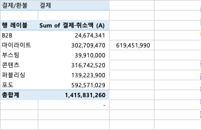
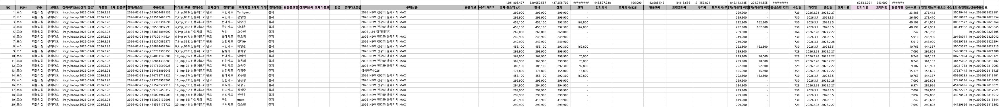
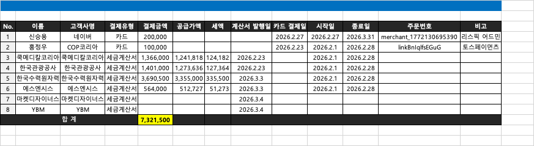
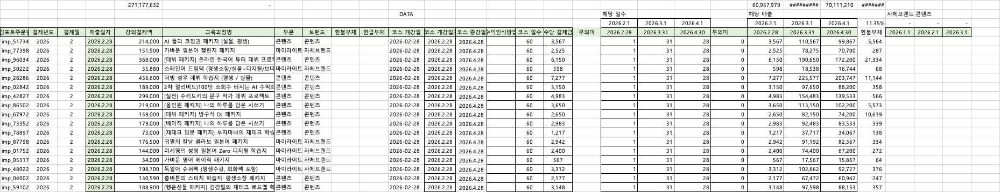
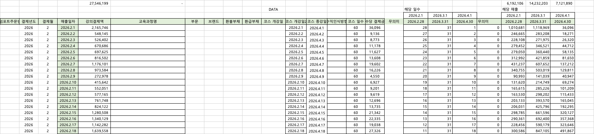
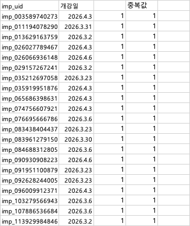
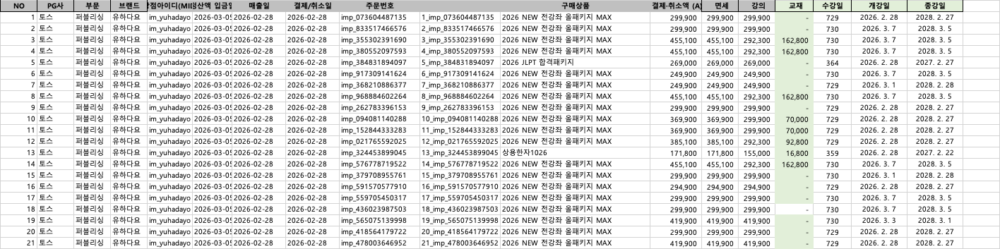
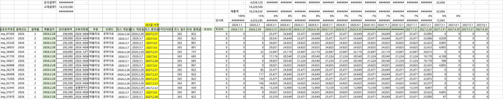
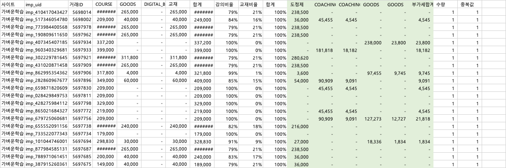

그림 2
image image_anchor
Rows 1 - 42, Columns 5 - 27, confidence 1.0
그림 2
mbp_2026년 02월_결제 및 수익인식F_260309.xlsx
/Users/kangmin/cowork/day1_revenue_ontology/input/reference/mbp_2026년 02월_결제 및 수익인식F_260309.xlsx
| Level | Message |
|---|---|
| warning | Skipped detailed XML scan for sheet '누적' because its worksheet XML is 753456825 bytes. |
| info | Use a higher max_sheet_xml_bytes limit or targeted sheet extraction when detailed evidence is required. |
| warning | Workbook contains 1 external link package entry; formula dependencies may require external workbook evidence. |
| # | Sheet | Dimension | Status | XML bytes | Cells | Formulas | Images | Pivots |
|---|---|---|---|---|---|---|---|---|
| 0 | 매출 | A1:P4161 | scanned | 272,086 | 8,719 | 131 | 0 | 9 |
| 1 | 결제&수수료 | A1:R231 | scanned | 25,638 | 602 | 61 | 5 | 14 |
| 2 | 결제상세 | A1:AX4879 | scanned | 8,746,405 | 210,501 | 43,974 | 0 | 0 |
| 3 | 수익인식60일 | A1:AI1846 | scanned | 3,825,119 | 54,527 | 24,120 | 0 | 0 |
| 4 | 수익인식60일_강사료 | A1:AH35 | scanned | 56,324 | 869 | 365 | 0 | 1 |
| 5 | 당월산식 | A1:AZ4620 | scanned | 32,093,233 | 240,229 | 185,260 | 0 | 0 |
| 6 | 유하다요_강사료 | A1:AH452 | scanned | 628,151 | 15,351 | 68 | 0 | 0 |
| 7 | 누적 | A1:EC190724 | skipped_large_xml | 753,456,825 | 0 | 0 | 0 | 0 |
| 8 | 유하다요 | A1:R479 | scanned | 420,135 | 8,622 | 1,378 | 0 | 0 |
| 9 | 리스픽 | A1:M13 | scanned | 6,613 | 156 | 0 | 0 | 0 |
| 10 | 포도 | A1:U2146 | scanned | 1,438,657 | 36,792 | 0 | 0 | 0 |
| 11 | 얼리버드 | A1:D243 | scanned | 43,763 | 971 | 242 | 0 | 0 |
| 12 | 현물출고 | A1:O100 | scanned | 26,194 | 597 | 0 | 0 | 0 |
| 13 | 정가표 | A1:BA11950 | scanned | 5,090,931 | 102,891 | 30,975 | 0 | 0 |
| Cache | Source Sheet | Source Range | Records | Fields |
|---|---|---|---|---|
| 0 | 결제상세 | A2:AX4858 | 4,856 | 51 |
| 1 | 결제상세 | A2:AX4862 | 4,860 | 51 |
| 2 | 수익인식60일 | A4:Y1846 | 1,842 | 25 |
| 3 | 수익인식60일_강사료 | A4:X35 | 31 | 24 |
| 4 | 누적 | A4:EB190724 | 190,720 | 132 |
| 5 | 결제상세 | A2:AX4879 | 4,877 | 50 |
| Entry | Sheets | Sheet Samples | Targets |
|---|---|---|---|
| xl/externalLinks/externalLink1.xml | 17 | 진행매출, Sheet2, 9월_LE_결제상세, Sheet1, IFRS, 선수수익_계약부채 잔액, 외상매출금, 당월산식 | External: /000.221228/03.월마감자료/01.매출/24.09월%20매출%20정산자료/03_레모네이드_2024년%2009월_결제%20및%20수익인식_Final.xlsxExternal: ../24.09월%20매출%20정산자료/03_레모네이드_2024년%2009월_결제%20및%20수익인식_Final.xlsx |
| Sheet | Hidden Rows | Hidden Columns | Outline Columns | Filters |
|---|---|---|---|---|
| 결제상세 scanned | 0 none | 0 none | 27 O-V, AA-AB, AC-AC, +12 | filterMode 0 A2:AX2 |
| 수익인식60일 scanned | 37 5-5, 71-71, 202-202, +19 | 0 none | 0 none | filterMode 1 A4:AI1846 |
| 수익인식60일_강사료 scanned | 0 none | 0 none | 0 none | filterMode 0 A4:X4 |
| 당월산식 scanned | 4,592 5-2991, 3011-4552, 4557-4571, +1 | 18 P-AG | 0 none | filterMode 1 A4:AZ4620 |
| 유하다요 scanned | 0 none | 0 none | 0 none | filterMode 0 A1:R1 |
| 포도 scanned | 1,877 2-49, 51-56, 58-59, +21 | 0 none | 0 none | filterMode 1 A1:U1902 |
| 얼리버드 scanned | 0 none | 0 none | 0 none | filterMode 0 A1:D1 |
| 정가표 scanned | 0 none | 0 none | 0 none | filterMode 0 A1:BA2030 |
openpyxl read_only=True로 열고, 필요한 row window만 빠르게 읽은 단계입니다. 수식 셀은 계산 결과가 아니라 수식 텍스트입니다.max row 4161, max column 16, sampled in 0.00506s
non-empty 308, formulas 117
| Row | Non-empty | Formulas | Preview |
|---|---|---|---|
| 1 | 1 | 0 | *2월 KGAAP기준 매출 |
| 2 | 0 | 0 | blank |
| 3 | 9 | 0 | 행 레이블 | Sum of 2026-02-282 | 교재매출 | 현물 | 합계 | 부서 | 강의매출 | 교재매출 | 합계 |
| 4 | 10 | 6 | B2B | 0 | =SUMIFS(결제상세!$AK:$AK,결제상세!$D:$D,매출!$A4) | =SUMIFS(결제상세!$AF:$AF,결제상세!$D:$D,매출!$A4) | =SUM(B4:D4) | B2B | B2B | =SUMIFS($B$4:$B$25,$F$4:$F$25,$I4) | =SUMIFS($C$4:$C$25,$F$4:$F$25,$I4) | =SUM(J4:K4) |
| 5 | 10 | 6 | B2B2C | 19638.35616438356 | =SUMIFS(결제상세!$AK:$AK,결제상세!$D:$D,매출!$A5) | =SUMIFS(결제상세!$AF:$AF,결제상세!$D:$D,매출!$A5) | =SUM(B5:D5) | B2B2C | B2B2C | =SUMIFS($B$4:$B$25,$F$4:$F$25,$I5) | =SUMIFS($C$4:$C$25,$F$4:$F$25,$I5) | =SUM(J5:K5) |
| 6 | 10 | 6 | CP사 | 9134932 | =SUMIFS(결제상세!$AK:$AK,결제상세!$D:$D,매출!$A6) | =SUMIFS(결제상세!$AF:$AF,결제상세!$D:$D,매출!$A6) | =SUM(B6:D6) | B2B | 자체브랜드 | =SUMIFS($B$4:$B$25,$F$4:$F$25,$I6) | =SUMIFS($C$4:$C$25,$F$4:$F$25,$I6) | =SUM(J6:K6) |
| 7 | 10 | 6 | 뉴스프레소 | 5424300 | =SUMIFS(결제상세!$AK:$AK,결제상세!$D:$D,매출!$A7) | =SUMIFS(결제상세!$AF:$AF,결제상세!$D:$D,매출!$A7) | =SUM(B7:D7) | 뉴스프레소 | 뉴스프레소 | =SUMIFS($B$4:$B$25,$F$4:$F$25,$I7) | =SUMIFS($C$4:$C$25,$F$4:$F$25,$I7) | =SUM(J7:K7) |
| 8 | 9 | 6 | 뉴프공홈 | =SUMIFS(결제상세!$AK:$AK,결제상세!$D:$D,매출!$A8) | =SUMIFS(결제상세!$AF:$AF,결제상세!$D:$D,매출!$A8) | =SUM(B8:D8) | B2B | 샤이니 | =SUMIFS($B$4:$B$25,$F$4:$F$25,$I8) | =SUMIFS($C$4:$C$25,$F$4:$F$25,$I8) | =SUM(J8:K8) |
| 9 | 10 | 6 | 리스픽 | 7238227.669887813 | =SUMIFS(결제상세!$AK:$AK,결제상세!$D:$D,매출!$A9) | =SUMIFS(결제상세!$AF:$AF,결제상세!$D:$D,매출!$A9) | =SUM(B9:D9) | B2B | 유하다요 | =SUMIFS($B$4:$B$25,$F$4:$F$25,$I9) | =SUMIFS($C$4:$C$25,$F$4:$F$25,$I9) | =SUM(J9:K9) |
| 10 | 10 | 6 | 마이라이트JP | =SUMIFS(결제상세!$AK:$AK,결제상세!$D:$D,매출!$A10) | =SUMIFS(결제상세!$AF:$AF,결제상세!$D:$D,매출!$A10) | =SUM(B10:D10) | 뉴스프레소 | 기타매출 | 부스팅 | =SUMIFS($B$4:$B$25,$F$4:$F$25,$I10) | =SUMIFS($C$4:$C$25,$F$4:$F$25,$I10) | =SUM(J10:K10) |
| 11 | 10 | 6 | 복지몰 | 2314278.9927770854 | =SUMIFS(결제상세!$AK:$AK,결제상세!$D:$D,매출!$A11) | =SUMIFS(결제상세!$AF:$AF,결제상세!$D:$D,매출!$A11) | =SUM(B11:D11) | B2B | 콘텐츠 | =SUMIFS($B$4:$B$25,$F$4:$F$25,$I11) | =SUMIFS($C$4:$C$25,$F$4:$F$25,$I11) | =SUM(J11:K11) |
| 12 | 10 | 6 | 부스팅 | -23222442.80714827 | =SUMIFS(결제상세!$AK:$AK,결제상세!$D:$D,매출!$A12) | =SUMIFS(결제상세!$AF:$AF,결제상세!$D:$D,매출!$A12) | =SUM(B12:D12) | 부스팅 | 포도 | =SUMIFS($B$4:$B$25,$F$4:$F$25,$I12) | =SUMIFS($C$4:$C$25,$F$4:$F$25,$I12) | =SUM(J12:K12) |
| 13 | 10 | 6 | 샤이니 | 1050400 | =SUMIFS(결제상세!$AK:$AK,결제상세!$D:$D,매출!$A13) | =SUMIFS(결제상세!$AF:$AF,결제상세!$D:$D,매출!$A13) | =SUM(B13:D13) | 샤이니 | 합계 | =SUM(J4:J12) | =SUM(K4:K12) | =SUM(L4:L12) |
| 14 | 7 | 4 | 스피킹ML | 0 | =SUMIFS(결제상세!$AK:$AK,결제상세!$D:$D,매출!$A14) | =SUMIFS(결제상세!$AF:$AF,결제상세!$D:$D,매출!$A14) | =SUM(B14:D14) | 자체브랜드 | =B26+C26-L13 |
| 15 | 6 | 3 | 스피킹NP | 0 | =SUMIFS(결제상세!$AK:$AK,결제상세!$D:$D,매출!$A15) | =SUMIFS(결제상세!$AF:$AF,결제상세!$D:$D,매출!$A15) | =SUM(B15:D15) | 자체브랜드 |
| 16 | 6 | 3 | 유하다요 | 136965451.99425295 | =SUMIFS(결제상세!$AK:$AK,결제상세!$D:$D,매출!$A16) | =SUMIFS(결제상세!$AF:$AF,결제상세!$D:$D,매출!$A16) | =SUM(B16:D16) | 유하다요 |
| 17 | 6 | 3 | 자체브랜드 | 108296150.26421742 | =SUMIFS(결제상세!$AK:$AK,결제상세!$D:$D,매출!$A17) | =SUMIFS(결제상세!$AF:$AF,결제상세!$D:$D,매출!$A17) | =SUM(B17:D17) | 자체브랜드 |
| 18 | 6 | 3 | 직접계약 | 0 | =SUMIFS(결제상세!$AK:$AK,결제상세!$D:$D,매출!$A18) | =SUMIFS(결제상세!$AF:$AF,결제상세!$D:$D,매출!$A18) | =SUM(B18:D18) | B2B |
| 19 | 6 | 3 | 출강 | 0 | =SUMIFS(결제상세!$AK:$AK,결제상세!$D:$D,매출!$A19) | =SUMIFS(결제상세!$AF:$AF,결제상세!$D:$D,매출!$A19) | =SUM(B19:D19) | B2B |
| 20 | 6 | 3 | 카카오커머스 | 0 | =SUMIFS(결제상세!$AK:$AK,결제상세!$D:$D,매출!$A20) | =SUMIFS(결제상세!$AF:$AF,결제상세!$D:$D,매출!$A20) | =SUM(B20:D20) | B2B |
| 21 | 6 | 3 | 콘텐츠 | 185121409.42169115 | =SUMIFS(결제상세!$AK:$AK,결제상세!$D:$D,매출!$A21) | =SUMIFS(결제상세!$AF:$AF,결제상세!$D:$D,매출!$A21) | =SUM(B21:D21) | 콘텐츠 |
| 22 | 6 | 3 | 턴키계약 | 0 | =SUMIFS(결제상세!$AK:$AK,결제상세!$D:$D,매출!$A22) | =SUMIFS(결제상세!$AF:$AF,결제상세!$D:$D,매출!$A22) | =SUM(B22:D22) | B2B |
| 23 | 6 | 3 | 턴키계약 중복 건 | 0 | =SUMIFS(결제상세!$AK:$AK,결제상세!$D:$D,매출!$A23) | =SUMIFS(결제상세!$AF:$AF,결제상세!$D:$D,매출!$A23) | =SUM(B23:D23) | B2B |
| 24 | 6 | 3 | 포도 | 369753403.9273446 | =SUMIFS(결제상세!$AK:$AK,결제상세!$D:$D,매출!$A24) | =SUMIFS(결제상세!$AF:$AF,결제상세!$D:$D,매출!$A24) | =SUM(B24:D24) | 포도 |
| 25 | 6 | 3 | 학습지공홈 | 0 | =SUMIFS(결제상세!$AK:$AK,결제상세!$D:$D,매출!$A25) | =SUMIFS(결제상세!$AF:$AF,결제상세!$D:$D,매출!$A25) | =SUM(B25:D25) | B2B |
| 26 | 5 | 3 | 총합계 | 802095749.8191872 | =SUM(C4:C25) | =SUM(D4:D25) | =SUM(E4:E25) |
| 27 | 3 | 3 | =B26-누적!DA1 | =C26-결제상세!AK1 | =D26-결제상세!AF1 |
| 28 | 0 | 0 | blank |
| 29 | 2 | 0 | 교재 미출고 | 상품 미출고 |
| 30 | 2 | 0 | 3월 출고 | 4월 출고 |
| 31 | 8 | 0 | 매출일 | (다중 항목) | 행 레이블 | Sum of 현물이연 | 현물출고일 | (다중 항목) | 현물출고일 | 4월출고 |
| 32 | 1 | 0 | CP사 |
| 33 | 7 | 0 | 행 레이블 | Sum of 교재합계(미공개 이연제외) | 뉴스프레소 | 행 레이블 | Sum of 현물이연 | 행 레이블 | Sum of 현물이연 |
| 34 | 7 | 0 | 뉴스프레소 | 216000 | 리스픽 | 자체브랜드 | 675090 | 콘텐츠 | 4597636.363636363 |
| 35 | 7 | 0 | 리스픽 | 0 | 복지몰 | 콘텐츠 | 2133854.5454545454 | 총합계 | 4597636.363636363 |
| 36 | 5 | 0 | 유하다요 | 1302900 | 부스팅 | 총합계 | 2808944.5454545454 |
| 37 | 3 | 0 | 자체브랜드 | 12653002.794759825 | 샤이니 |
| 38 | 3 | 0 | 콘텐츠 | 1834200 | 유하다요 |
| 39 | 4 | 0 | 포도 | 0 | 자체브랜드 | 675090 |
| 40 | 3 | 0 | 총합계 | 16006102.794759825 | 직접계약 |
| 41 | 2 | 0 | 콘텐츠 | 6731490.909090915 |
| 42 | 1 | 0 | 포도 |
| 43 | 2 | 0 | 총합계 | 7406580.909090915 |
| 44 | 1 | 1 | =E43-H36-K35 |
| 45 | 0 | 0 | blank |
| 46 | 2 | 0 | 수익인식 60일 및 강의 환불부채 | 교재 환불부채 |
| 47 | 0 | 0 | blank |
| 48 | 7 | 0 | Row Labels | Sum of 2026-03-312 | Sum of 2026-04-302 | Sum of 환불부채2 | 이연금액 합계 | 교재 환불부채 | 교재 환불부채 |
| 49 | 5 | 1 | 뉴스프레소 | 2802555.000000002 | 1238183.3333333335 | 30182.487500000007 | =B49+C49 |
| 50 | 7 | 1 | 샤이니 | 542706.6666666667 | 120206.66666666667 | =B50+C50 | 행 레이블 | Sum of 교재합계(미공개 이연제외) | 0.11347265519293098 |
| 51 | 8 | 2 | 자체브랜드 | 55438849.71185479 | 24501410.225216713 | 750545.2686058946 | =B51+C51 | 뉴스프레소 | 1458900 | =H51*$I$50 |
| 52 | 8 | 2 | 콘텐츠 | 84669593.53676677 | 45609799.546037644 | 2655758.6109075304 | =B52+C52 | 리스픽 | 0 | =H52*$I$50 |
| 53 | 8 | 2 | Grand Total | 143453704.91528824 | 71469599.77125436 | 3436486.367013425 | =SUM(E49:E52) | 부스팅 | 0 | =H53*$I$50 |
| 54 | 3 | 1 | 유하다요 | 5562300 | =H54*$I$50 |
| 55 | 3 | 1 | 자체브랜드 | 67887923.71179041 | =H55*$I$50 |
| 56 | 3 | 1 | 콘텐츠 | 9479769.348193036 | =H56*$I$50 |
| 57 | 3 | 1 | 포도 | 0 | =H57*$I$50 |
| 58 | 3 | 1 | 총합계 | 84388893.05998345 | =SUM(I51:I57) |
| 59 | 0 | 0 | blank |
| 60 | 0 | 0 | blank |
non-empty 20, formulas 4
| Row | Non-empty | Formulas | Preview |
|---|---|---|---|
| 69 | 2 | 0 | 환급 | 환급 |
| 70 | 0 | 0 | blank |
| 71 | 6 | 0 | 행 레이블 | Sum of 결제·취소액 (A) | Sum of 강의 | Sum of 교재 | 환급 부채(강의) | 환급 부채(교재) |
| 72 | 6 | 2 | 유하다요 | 13812600 | 13214600 | 598000 | =C72*B63 | =D72*B63 |
| 73 | 6 | 2 | 총합계 | 13812600 | 13214600 | 598000 | =SUM(E71:E72) | =SUM(F71:F72) |
| 74 | 0 | 0 | blank |
| 75 | 0 | 0 | blank |
non-empty 146, formulas 9
| Row | Non-empty | Formulas | Preview |
|---|---|---|---|
| 86 | 1 | 1 | =A90+A92 |
| 87 | 0 | 0 | blank |
| 88 | 16 | 0 | 합계 | 행 레이블 | Sum of 2026-03-312 | Sum of 2026-04-302 | Sum of 2026-05-312 | Sum of 2026-06-302 | Sum of 2026-07-312 | Sum of 2026-08-312 | Sum of 2026-09-302 | Sum of 2026-10-312 |
| 89 | 16 | 1 | =SUM(B89:P89) | B2B | 2861246.775780218 | 1985145.6488169364 | 1789856.1494396015 | 1589164.1693648815 | 1369316.1795765879 | 1252043.7740971358 | 1010796.5529265256 | 848598.308343711 |
| 90 | 16 | 1 | =SUM(B90:P90) | 마이라이트 | 373686.5378343117 | 211188.52739726024 | 200183.56164383562 | 193726.02739726024 | 200183.56164383562 | 187339.72602739726 | 100608.21917808217 | 72547.94520547945 |
| 91 | 16 | 1 | =SUM(B91:P91) | 부스팅 | 22508884.35260281 | 0 | 0 | 0 | 0 | 0 | 0 | 0 |
| 92 | 16 | 1 | =SUM(B92:P92) | 자체브랜드 | 1045107.8799739073 | 798591.7808219178 | 736765.4794520551 | 127021.91780821916 | 27293.15068493151 | 0 | 0 | 0 |
| 93 | 16 | 1 | =SUM(B93:P93) | 콘텐츠 | 4395129.708529138 | 4223961.330834649 | 4209289.708529138 | 4039151.3308346486 | 4047669.1629490284 | 4002177.5193026196 | 3848718.655043589 | 3964425.155666256 |
| 94 | 16 | 1 | =SUM(B94:P94) | 퍼블리싱 | 135786967.61142322 | 114835640.04894885 | 107064900.72378059 | 95311446.05539677 | 88946971.6752287 | 74765132.188416 | 54160393.03204824 | 43946095.221143 |
| 95 | 16 | 1 | =SUM(B95:P95) | 포도 | 303810459.9560211 | 184937434.0531782 | 136530166.38460618 | 99721414.6699882 | 86597625.6887535 | 67265606.69464126 | 53012806.5027931 | 50001809.31907173 |
| 96 | 16 | 1 | =SUM(A89:A95) | 총합계 | 470781482.82216465 | 306991961.38999784 | 250531162.00745142 | 200981924.17078996 | 181189059.4188366 | 147472299.90248442 | 112133322.96198954 | 98833475.94943017 |
| 97 | 0 | 0 | blank |
| 98 | 1 | 0 | NOA |
max row 231, max column 18, sampled in 0.003224s
non-empty 102, formulas 7
| Row | Non-empty | Formulas | Preview |
|---|---|---|---|
| 1 | 2 | 0 | 결제/환불 | 결제 |
| 2 | 0 | 0 | blank |
| 3 | 2 | 0 | 행 레이블 | Sum of 결제·취소액 (A) |
| 4 | 2 | 0 | B2B | 24674341 |
| 5 | 3 | 1 | 마이라이트 | 302709470 | =B5+B7 |
| 6 | 2 | 0 | 부스팅 | 39910000 |
| 7 | 2 | 0 | 콘텐츠 | 316742520 |
| 8 | 2 | 0 | 퍼블리싱 | 139223900 |
| 9 | 2 | 0 | 포도 | 592571029 |
| 10 | 2 | 0 | 총합계 | 1415831260 |
| 11 | 1 | 1 | =SUMIFS(결제상세!$Z:$Z,결제상세!$Q:$Q,"결제")-B10 |
| 12 | 0 | 0 | blank |
| 13 | 0 | 0 | blank |
| 14 | 0 | 0 | blank |
| 15 | 2 | 0 | 행 레이블 | Sum of 결제·취소액 (A) |
| 16 | 2 | 0 | B2B | 24674341 |
| 17 | 2 | 0 | 결제 | 24674341 |
| 18 | 2 | 0 | 마이라이트 | 277773040 |
| 19 | 2 | 0 | 결제 | 302709470 |
| 20 | 2 | 0 | 환불 | -24936430 |
| 21 | 2 | 0 | 부스팅 | -784914 |
| 22 | 2 | 0 | 결제 | 39910000 |
| 23 | 2 | 0 | 환불 | -40694914 |
| 24 | 2 | 0 | 콘텐츠 | 280588595 |
| 25 | 2 | 0 | 결제 | 316742520 |
| 26 | 2 | 0 | 환불 | -36153925 |
| 27 | 2 | 0 | 퍼블리싱 | 125389200 |
| 28 | 2 | 0 | 결제 | 139223900 |
| 29 | 2 | 0 | 환불 | -13834700 |
| 30 | 2 | 0 | 포도 | 494168235 |
| 31 | 2 | 0 | 결제 | 592571029 |
| 32 | 2 | 0 | 환불 | -98402794 |
| 33 | 2 | 0 | 총합계 | 1201808497 |
| 34 | 0 | 0 | blank |
| 35 | 0 | 0 | blank |
| 36 | 0 | 0 | blank |
| 37 | 0 | 0 | blank |
| 38 | 0 | 0 | blank |
| 39 | 0 | 0 | blank |
| 40 | 0 | 0 | blank |
| 41 | 2 | 0 | PG사 | 토스 |
| 42 | 0 | 0 | blank |
| 43 | 8 | 0 | 행 레이블 | 합계 : 강의 | 합계 : 교재 | 합계 : 강의과세 | 합계 : 코칭권과세 | 합계 : 현물과세 | 합계 : 부가세 | 합계 : 결제·취소액 (A) |
| 44 | 7 | 0 | 가상계좌 | 16884229.729257643 | 4210522.270742358 | 863636.3636363634 | 484752.7272727272 | 134838.9090909093 | 22577980 |
| 45 | 3 | 0 | 계좌이체 | 4705200 | 4705200 |
| 46 | 8 | 0 | 신용·체크카드 | 332661152.9058085 | 131410839.09419158 | 306879035.8181817 | 13227727.272727275 | 30890243.8181818 | 35099699.09090906 | 850168698 |
| 47 | 8 | 0 | 총합계 | 354250582.63506615 | 135621361.36493394 | 306879035.8181817 | 14091363.636363639 | 31374996.54545453 | 35234537.99999996 | 877451878 |
| 48 | 5 | 3 | 선수수익_계약부채 | =B47+C47+D47+E47 | 현금과세 | =D44+E44+F44 | =E48+G44 |
| 49 | 3 | 2 | 카드과세 | =D46+E46+F46 | =E49+G46 |
non-empty 265, formulas 52
| Row | Non-empty | Formulas | Preview |
|---|---|---|---|
| 51 | 3 | 2 | 카드면세 | =B46+C46 | =E51 |
| 52 | 1 | 1 | =SUM(F48:F51) |
| 53 | 2 | 0 | PG사 | 토스 |
| 54 | 0 | 0 | blank |
| 55 | 2 | 0 | 행 레이블 | 합계 : 현물과세 |
| 56 | 2 | 0 | 뉴스프레소 | 0 |
| 57 | 1 | 0 | 리스픽 |
| 58 | 1 | 0 | 부스팅 |
| 59 | 2 | 0 | 샤이니 | 0 |
| 60 | 1 | 0 | 유하다요 |
| 61 | 2 | 0 | 자체브랜드 | 636363.6363636364 |
| 62 | 2 | 0 | 콘텐츠 | 18171356.909090914 |
| 63 | 2 | 0 | 포도 | 12567276 |
| 64 | 2 | 0 | 총합계 | 31374996.54545455 |
| 65 | 0 | 0 | blank |
| 66 | 0 | 0 | blank |
| 67 | 0 | 0 | blank |
| 68 | 0 | 0 | blank |
| 69 | 0 | 0 | blank |
| 70 | 0 | 0 | blank |
| 71 | 0 | 0 | blank |
| 72 | 0 | 0 | blank |
| 73 | 0 | 0 | blank |
| 74 | 0 | 0 | blank |
| 75 | 0 | 0 | blank |
| 76 | 0 | 0 | blank |
| 77 | 0 | 0 | blank |
| 78 | 0 | 0 | blank |
| 79 | 0 | 0 | blank |
| 80 | 0 | 0 | blank |
| 81 | 0 | 0 | blank |
| 82 | 0 | 0 | blank |
| 83 | 0 | 0 | blank |
| 84 | 0 | 0 | blank |
| 85 | 0 | 0 | blank |
| 86 | 0 | 0 | blank |
| 87 | 0 | 0 | blank |
| 88 | 0 | 0 | blank |
| 89 | 2 | 0 | PG사 | 네이버페이 |
| 90 | 0 | 0 | blank |
| 91 | 8 | 0 | 행 레이블 | 합계 : 강의 | 합계 : 교재 | 합계 : 강의과세 | 합계 : 코칭권과세 | 합계 : 현물과세 | 합계 : 부가세 | 합계 : 결제·취소액 (A) |
| 92 | 8 | 1 | 상품결제 | 95690568.45904054 | 44337739.540959455 | 5727272.727272735 | 8119638.2727272725 | 1384691.0000000026 | 155259910 | =14931602+140328308-H92 |
| 93 | 7 | 0 | 총합계 | 95690568.45904054 | 44337739.540959455 | 5727272.727272735 | 8119638.2727272725 | 1384691.0000000026 | 155259910 |
| 94 | 5 | 3 | 선수수익_계약부채 | =B93+C93+E93 | 카드과세 | =E93+F93 | =E94+G93 |
| 95 | 2 | 1 | 카드면세 | =111232713-F94 |
| 96 | 2 | 0 | PG사 | 네이버페이 |
| 97 | 0 | 0 | blank |
| 98 | 2 | 0 | 행 레이블 | 합계 : 현물과세 |
| 99 | 2 | 0 | 자체브랜드 | 272727.2727272727 |
| 100 | 2 | 0 | 콘텐츠 | 7846910.999999999 |
| 101 | 2 | 0 | 총합계 | 8119638.272727272 |
| 102 | 0 | 0 | blank |
| 103 | 0 | 0 | blank |
| 104 | 2 | 0 | PG사 | 페이코 |
| 105 | 0 | 0 | blank |
| 106 | 8 | 0 | 행 레이블 | 합계 : 강의 | 합계 : 교재 | 합계 : 강의과세 | 합계 : 코칭권과세 | 합계 : 현물과세 | 합계 : 부가세 | 합계 : 결제·취소액 (A) |
| 107 | 7 | 0 | PAYCO 포인트 | 322000 | 477000 | 0 | 0 | 0 | 799000 |
| 108 | 7 | 0 | 신용카드 | 561980 | 866520 | 0 | 0 | 0 | 1428500 |
| 109 | 7 | 0 | 총합계 | 883980 | 1343520 | 0 | 0 | 0 | 2227500 |
| 110 | 4 | 2 | 선수수익_계약부채 | =B109+C109+E109 | 면세건별 | =B107+C107 |
| 111 | 2 | 1 | 카드면세 | =B108+C108 |
| 112 | 2 | 1 | 카드과세 | =D108+E108+F108 |
| 113 | 0 | 0 | blank |
| 114 | 0 | 0 | blank |
| 115 | 0 | 0 | blank |
| 116 | 0 | 0 | blank |
| 117 | 0 | 0 | blank |
| 118 | 0 | 0 | blank |
| 119 | 0 | 0 | blank |
| 120 | 0 | 0 | blank |
| 121 | 0 | 0 | blank |
| 122 | 0 | 0 | blank |
| 123 | 0 | 0 | blank |
| 124 | 0 | 0 | blank |
| 125 | 0 | 0 | blank |
| 126 | 0 | 0 | blank |
| 127 | 0 | 0 | blank |
| 128 | 0 | 0 | blank |
| 129 | 0 | 0 | blank |
| 130 | 0 | 0 | blank |
| 131 | 0 | 0 | blank |
| 132 | 0 | 0 | blank |
| 133 | 0 | 0 | blank |
| 134 | 2 | 0 | PG사 | 카카오페이 |
| 135 | 0 | 0 | blank |
| 136 | 8 | 0 | 행 레이블 | 합계 : 강의 | 합계 : 교재 | 합계 : 강의과세 | 합계 : 코칭권과세 | 합계 : 현물과세 | 합계 : 부가세 | 합계 : 결제·취소액 (A) |
| 137 | 5 | 0 | CARD | 0 | 26923415 | 2692347 | 29615762 |
| 138 | 6 | 0 | MONEY | 0 | 42522505.72727273 | 698182 | 4322072.272727273 | 47542760 |
| 139 | 6 | 0 | 총합계 | 0 | 69445920.72727272 | 698182 | 7014419.272727273 | 77158522 |
| 140 | 1 | 0 | 공급가액 |
| 141 | 2 | 1 | 카드과세 | =D137+F137 |
| 142 | 2 | 1 | 현금과세 | =D138+F138 |
| 143 | 0 | 0 | blank |
| 144 | 0 | 0 | blank |
| 145 | 0 | 0 | blank |
| 146 | 0 | 0 | blank |
| 147 | 0 | 0 | blank |
| 148 | 0 | 0 | blank |
| 149 | 0 | 0 | blank |
| 150 | 0 | 0 | blank |
| 151 | 0 | 0 | blank |
| 152 | 0 | 0 | blank |
| 153 | 0 | 0 | blank |
| 154 | 0 | 0 | blank |
| 155 | 0 | 0 | blank |
| 156 | 0 | 0 | blank |
| 157 | 0 | 0 | blank |
| 158 | 0 | 0 | blank |
| 159 | 0 | 0 | blank |
| 160 | 0 | 0 | blank |
| 161 | 0 | 0 | blank |
| 162 | 0 | 0 | blank |
| 163 | 0 | 0 | blank |
| 164 | 0 | 0 | blank |
| 165 | 0 | 0 | blank |
| 166 | 0 | 0 | blank |
| 167 | 0 | 0 | blank |
| 168 | 0 | 0 | blank |
| 169 | 0 | 0 | blank |
| 170 | 2 | 0 | PG사 | 네이버페이_포도 |
| 171 | 0 | 0 | blank |
| 172 | 8 | 0 | 행 레이블 | 합계 : 강의 | 합계 : 교재 | 합계 : 강의과세 | 합계 : 코칭권과세 | 합계 : 현물과세 | 합계 : 부가세 | 합계 : 결제·취소액 (A) |
| 173 | 6 | 0 | 상품결제 | 0 | 86451608.36363631 | 2792728 | 8924433.636363642 | 98168770 |
| 174 | 6 | 0 | 총합계 | 0 | 86451608.36363631 | 2792728 | 8924433.636363642 | 98168770 |
| 175 | 3 | 0 | 결제총액 | 공급가액 | 세액 |
| 176 | 4 | 2 | 신용카드 | 63007411 | =B176/1.1 | =B176-C176 |
| 177 | 4 | 3 | 현금 | =33180025+1602971 | =B177/1.1 | =B177-C177 |
| 178 | 4 | 2 | 기타 | 378363 | =B178/1.1 | =B178-C178 |
| 179 | 4 | 3 | 합계 | =SUM(B176:B178) | =SUM(C176:C178) | =SUM(D176:D178) |
| 180 | 1 | 1 | =G174-D179 |
| 181 | 0 | 0 | blank |
| 182 | 0 | 0 | blank |
| 183 | 0 | 0 | blank |
| 184 | 0 | 0 | blank |
| 185 | 0 | 0 | blank |
| 186 | 0 | 0 | blank |
| 187 | 0 | 0 | blank |
| 188 | 0 | 0 | blank |
| 189 | 0 | 0 | blank |
| 190 | 0 | 0 | blank |
| 191 | 0 | 0 | blank |
| 192 | 0 | 0 | blank |
| 193 | 0 | 0 | blank |
| 194 | 0 | 0 | blank |
| 195 | 1 | 0 | *2월 수수료 계산 |
| 196 | 0 | 0 | blank |
| 197 | 0 | 0 | blank |
| 198 | 2 | 0 | PG사 | 페이코 |
| 199 | 0 | 0 | blank |
| 200 | 3 | 0 | 행 레이블 | 합계 : 결제·취소액 (A) | 수수료 |
| 201 | 5 | 3 | 자체브랜드 | 2028500 | =B201/$B$203 | =C201*$D$203 | =D201-19775 |
| 202 | 4 | 2 | 콘텐츠 | 199000 | =B202/$B$203 | =C202*$D$203 |
| 203 | 4 | 2 | 총합계 | 2227500 | =SUM(C201:C202) | =19775+35355 |
| 204 | 0 | 0 | blank |
| 205 | 2 | 0 | PG사 | 네이버페이 |
| 206 | 0 | 0 | blank |
| 207 | 3 | 0 | 행 레이블 | 합계 : 결제·취소액 (A) | 수수료 |
| 208 | 4 | 2 | 자체브랜드 | 64343600 | =B208/$B$210 | =C208*$D$210 |
| 209 | 4 | 2 | 콘텐츠 | 90916310 | =B209/$B$210 | =C209*$D$210 |
| 210 | 4 | 1 | 총합계 | 155259910 | =SUM(C208:C209) | 4098620 |
| 211 | 0 | 0 | blank |
| 212 | 2 | 0 | 상점아이디(MID) | im_mylight |
| 213 | 0 | 0 | blank |
| 214 | 3 | 0 | 행 레이블 | 합계 : 결제·취소액 (A) | 수수료 |
| 215 | 4 | 2 | 자체브랜드 | 201931050 | =B215/$B$217 | =C215*$D$217 |
| 216 | 4 | 2 | 콘텐츠 | 189473285 | =B216/$B$217 | =C216*$D$217 |
| 217 | 4 | 1 | 총합계 | 391404335 | =SUM(C215:C216) | 26548326 |
| 218 | 0 | 0 | blank |
| 219 | 2 | 0 | 상점아이디(MID) | im_respeak |
| 220 | 0 | 0 | blank |
| 221 | 3 | 0 | 행 레이블 | 합계 : 결제·취소액 (A) | 수수료 |
| 222 | 4 | 2 | 리스픽 | 200000 | =B222/$B$224 | =C222*$D$224 |
| 223 | 4 | 2 | 포도 | 240580210 | =B223/$B$224 | =C223*$D$224 |
| 224 | 4 | 1 | 총합계 | 240780210 | =SUM(C222:C223) | 13671089 |
| 225 | 0 | 0 | blank |
| 226 | 2 | 0 | 상점아이디(MID) | link_deiweon3d |
| 227 | 0 | 0 | blank |
| 228 | 3 | 0 | 행 레이블 | 합계 : 결제·취소액 (A) | 수수료 |
| 229 | 4 | 2 | 리스픽 | 100000 | =B229/$B$231 | =C229*$D$231 |
| 230 | 4 | 2 | 자체브랜드 | 64000 | =B230/$B$231 | =C230*$D$231 |
| 231 | 4 | 1 | 총합계 | 164000 | =SUM(C229:C230) | 3662 |
max row 4879, max column 50, sampled in 0.002831s
non-empty 624, formulas 178
| Row | Non-empty | Formulas | Preview |
|---|---|---|---|
| 1 | 16 | 16 | =SUBTOTAL(9,Z2:Z5000) | =SUBTOTAL(9,AA2:AA5000) | =SUBTOTAL(9,AB2:AB5000) | =SUBTOTAL(9,AC2:AC5000) | =SUBTOTAL(9,AD2:AD5000) | =SUBTOTAL(9,AE2:AE5000) | =SUBTOTAL(9,AF2:AF5000) | =SUBTOTAL(9,AG2:AG5000) | =SUBTOTAL(9,AH2:AH5000) | =SUBTOTAL(9,AI2:AI5000) |
| 2 | 50 | 0 | NO | PG사 | 부문 | 브랜드 | 상점아이디(MID) | 정산액 입금일 | 매출일 | 교재 환불부채 | 결제/취소일 | 주문번호 |
| 3 | 31 | 9 | 1 | 토스 | 퍼블리싱 | 유하다요 | im_yuhadayo | 2026-03-05 | 2026-02-28T00:00:00 | 2026-02-28 | imp_073604487135 | =A3&"_"&J3 |
| 4 | 31 | 9 | 2 | 토스 | 퍼블리싱 | 유하다요 | im_yuhadayo | 2026-03-05 | 2026-02-28T00:00:00 | 2026-02-28 | imp_833517466576 | =A4&"_"&J4 |
| 5 | 31 | 9 | 3 | 토스 | 퍼블리싱 | 유하다요 | im_yuhadayo | 2026-03-05 | 2026-02-28T00:00:00 | 2026-02-28 | imp_355302391690 | =A5&"_"&J5 |
| 6 | 31 | 9 | 4 | 토스 | 퍼블리싱 | 유하다요 | im_yuhadayo | 2026-03-05 | 2026-02-28T00:00:00 | 2026-02-28 | imp_380552097593 | =A6&"_"&J6 |
| 7 | 31 | 9 | 5 | 토스 | 퍼블리싱 | 유하다요 | im_yuhadayo | 2026-03-05 | 2026-02-28T00:00:00 | 2026-02-28 | imp_384831894097 | =A7&"_"&J7 |
| 8 | 31 | 9 | 6 | 토스 | 퍼블리싱 | 유하다요 | im_yuhadayo | 2026-03-05 | 2026-02-28T00:00:00 | 2026-02-28 | imp_917309141624 | =A8&"_"&J8 |
| 9 | 31 | 9 | 7 | 토스 | 퍼블리싱 | 유하다요 | im_yuhadayo | 2026-03-05 | 2026-02-28T00:00:00 | 2026-02-28 | imp_368210886377 | =A9&"_"&J9 |
| 10 | 31 | 9 | 8 | 토스 | 퍼블리싱 | 유하다요 | im_yuhadayo | 2026-03-05 | 2026-02-28T00:00:00 | 2026-02-28 | imp_968884602264 | =A10&"_"&J10 |
| 11 | 31 | 9 | 9 | 토스 | 퍼블리싱 | 유하다요 | im_yuhadayo | 2026-03-05 | 2026-02-28T00:00:00 | 2026-02-28 | imp_262783396153 | =A11&"_"&J11 |
| 12 | 31 | 9 | 10 | 토스 | 퍼블리싱 | 유하다요 | im_yuhadayo | 2026-03-05 | 2026-02-28T00:00:00 | 2026-02-28 | imp_094081140288 | =A12&"_"&J12 |
| 13 | 31 | 9 | 11 | 토스 | 퍼블리싱 | 유하다요 | im_yuhadayo | 2026-03-05 | 2026-02-28T00:00:00 | 2026-02-28 | imp_152844333283 | =A13&"_"&J13 |
| 14 | 31 | 9 | 12 | 토스 | 퍼블리싱 | 유하다요 | im_yuhadayo | 2026-03-05 | 2026-02-28T00:00:00 | 2026-02-28 | imp_021765592025 | =A14&"_"&J14 |
| 15 | 31 | 9 | 13 | 토스 | 퍼블리싱 | 유하다요 | im_yuhadayo | 2026-03-05 | 2026-02-28T00:00:00 | 2026-02-28 | imp_324453899045 | =A15&"_"&J15 |
| 16 | 31 | 9 | 14 | 토스 | 퍼블리싱 | 유하다요 | im_yuhadayo | 2026-03-05 | 2026-02-28T00:00:00 | 2026-02-28 | imp_576778719522 | =A16&"_"&J16 |
| 17 | 31 | 9 | 15 | 토스 | 퍼블리싱 | 유하다요 | im_yuhadayo | 2026-03-05 | 2026-02-28T00:00:00 | 2026-02-28 | imp_379708955761 | =A17&"_"&J17 |
| 18 | 31 | 9 | 16 | 토스 | 퍼블리싱 | 유하다요 | im_yuhadayo | 2026-03-05 | 2026-02-28T00:00:00 | 2026-02-28 | imp_591570577910 | =A18&"_"&J18 |
| 19 | 31 | 9 | 17 | 토스 | 퍼블리싱 | 유하다요 | im_yuhadayo | 2026-03-05 | 2026-02-28T00:00:00 | 2026-02-28 | imp_559705450317 | =A19&"_"&J19 |
| 20 | 31 | 9 | 18 | 토스 | 퍼블리싱 | 유하다요 | im_yuhadayo | 2026-03-05 | 2026-02-28T00:00:00 | 2026-02-28 | imp_436023987503 | =A20&"_"&J20 |
max row 1846, max column 35, sampled in 0.00333s
non-empty 489, formulas 239
| Row | Non-empty | Formulas | Preview |
|---|---|---|---|
| 1 | 8 | 7 | =SUBTOTAL(9,E5:E1846) | 0 | =SUBTOTAL(9,V5:V1846) | =SUBTOTAL(9,W5:W1846) | =SUBTOTAL(9,X5:X1846) | =SUBTOTAL(9,Y5:Y1846) | =SUBTOTAL(9,AD5:AD1846) | =SUBTOTAL(9,AE5:AE1846) |
| 2 | 5 | 0 | DATA | 해당 일수 | 해당 매출 | 자체브랜드 | 콘텐츠 |
| 3 | 10 | 4 | 2026-02-01T00:00:00 | =EDATE(R3,1) | =EDATE(S3,1) | 2026-02-01T00:00:00 | =EDATE(V3,1) | =EDATE(W3,1) | 0.1135 | 0 | 0 | 0 |
| 4 | 34 | 4 | 아임포트주문번호 | 결제년도 | 결제월 | 매출일자 | 강의결제액 | 교육과정명 | 부문 | 브랜드 | 환불부채 | 환급부채 |
| 5 | 27 | 14 | imp_264931089033 | 2026 | 2 | 2026-02-28T00:00:00 | 161900 | [빅세일] 비즈니스 영어 마스터팩(BIZ,BEF) | 마이라이트 | 뉴스프레소 | 2026-02-28 | =IF(N5="즉시",D5,MAX(D5,K5)) |
| 6 | 27 | 14 | imp_517346054780 | 2026 | 2 | 2026-02-28T00:00:00 | 214000 | AI 플리 코칭권 패키지 (실물, 평생) | 콘텐츠 | 콘텐츠 | 2026-02-28 | =IF(N6="즉시",D6,MAX(D6,K6)) |
| 7 | 27 | 14 | imp_773984400568 | 2026 | 2 | 2026-02-28T00:00:00 | 151500 | 가벼운 일본어 챌린지 패키지 | 마이라이트 | 자체브랜드 | 2026-02-28 | =IF(N7="즉시",D7,MAX(D7,K7)) |
| 8 | 27 | 14 | imp_960340329681 | 2026 | 2 | 2026-02-28T00:00:00 | 369000 | [데뷔 패키지] 온라인 한국어 튜터 데뷔 프로젝트 | 콘텐츠 | 콘텐츠 | 2026-02-28 | =IF(N8="즉시",D8,MAX(D8,K8)) |
| 9 | 27 | 14 | imp_302229781645 | 2026 | 2 | 2026-02-28T00:00:00 | 35880 | 스페인어 드림팩 (평생소장/실물+디지털/보따리스 포함) | 마이라이트 | 자체브랜드 | 2026-02-28 | =IF(N9="즉시",D9,MAX(D9,K9)) |
| 10 | 27 | 14 | imp_282860967677 | 2026 | 2 | 2026-02-28T00:00:00 | 436600 | 더빙 성우 데뷔 학습지 (평생 / 실물) | 콘텐츠 | 콘텐츠 | 2026-02-28 | =IF(N10="즉시",D10,MAX(D10,K10)) |
| 11 | 27 | 14 | imp_028429849753 | 2026 | 2 | 2026-02-28T00:00:00 | 189000 | 2차 얼리버드)100만 조회수 터지는 AI 수익화 | 콘텐츠 | 콘텐츠 | 2026-02-28 | =IF(N11="즉시",D11,MAX(D11,K11)) |
| 12 | 27 | 14 | imp_428275984112 | 2026 | 2 | 2026-02-28T00:00:00 | 299000 | [실전] 수키도키의 문구 작가 데뷔 프로젝트 | 콘텐츠 | 콘텐츠 | 2026-02-28 | =IF(N12="즉시",D12,MAX(D12,K12)) |
| 13 | 27 | 14 | imp_865021684327 | 2026 | 2 | 2026-02-28T00:00:00 | 219000 | [올인원 패키지] 나의 하루를 담은 시쓰기 | 콘텐츠 | 콘텐츠 | 2026-02-28 | =IF(N13="즉시",D13,MAX(D13,K13)) |
| 14 | 27 | 14 | imp_679725060681 | 2026 | 2 | 2026-02-28T00:00:00 | 159000 | [데뷔 패키지] 방구석 DJ 패키지 | 콘텐츠 | 콘텐츠 | 2026-02-28 | =IF(N14="즉시",D14,MAX(D14,K14)) |
| 15 | 27 | 14 | imp_733522077343 | 2026 | 2 | 2026-02-28T00:00:00 | 179000 | [베이직 패키지] 나의 하루를 담은 시쓰기 | 콘텐츠 | 콘텐츠 | 2026-02-28 | =IF(N15="즉시",D15,MAX(D15,K15)) |
| 16 | 27 | 14 | imp_788971061451 | 2026 | 2 | 2026-02-28T00:00:00 | 73000 | [재테크 입문 패키지] 부자마녀의 재테크 학습지 | 콘텐츠 | 콘텐츠 | 2026-02-28 | =IF(N16="즉시",D16,MAX(D16,K16)) |
| 17 | 27 | 14 | imp_877984585131 | 2026 | 2 | 2026-02-28T00:00:00 | 176500 | 귀멸의 칼날 콜라보 일본어 패키지 | 마이라이트 | 자체브랜드 | 2026-02-28 | =IF(N17="즉시",D17,MAX(D17,K17)) |
| 18 | 27 | 14 | imp_017526360716 | 2026 | 2 | 2026-02-28T00:00:00 | 144000 | 이세영의 성형 일본어 Zero 디지털 학습지 | 마이라이트 | 자체브랜드 | 2026-02-28 | =IF(N18="즉시",D18,MAX(D18,K18)) |
| 19 | 27 | 14 | imp_053177799233 | 2026 | 2 | 2026-02-28T00:00:00 | 34000 | 가벼운 영어 베이직 패키지 | 마이라이트 | 자체브랜드 | 2026-02-28 | =IF(N19="즉시",D19,MAX(D19,K19)) |
| 20 | 27 | 14 | imp_480220778978 | 2026 | 2 | 2026-02-28T00:00:00 | 198700 | 독일어 슈퍼팩 (평생수강, 회화팩 포함) | 마이라이트 | 자체브랜드 | 2026-02-28 | =IF(N20="즉시",D20,MAX(D20,K20)) |
max row 35, max column 34, sampled in 0.001894s
non-empty 306, formulas 200
| Row | Non-empty | Formulas | Preview |
|---|---|---|---|
| 1 | 5 | 4 | =SUBTOTAL(9,E5:E35) | 0 | =SUBTOTAL(9,V5:V35) | =SUBTOTAL(9,W5:W35) | =SUBTOTAL(9,X5:X35) |
| 2 | 3 | 0 | DATA | 해당 일수 | 해당 매출 |
| 3 | 6 | 4 | 2026-02-01T00:00:00 | =EDATE(R3,1) | =EDATE(S3,1) | 2026-02-01T00:00:00 | =EDATE(V3,1) | =EDATE(W3,1) |
| 4 | 24 | 4 | 아임포트주문번호 | 결제년도 | 결제월 | 매출일자 | 강의결제액 | 교육과정명 | 부문 | 브랜드 | 환불부채 | 환급부채 |
| 5 | 19 | 11 | 2026 | 2 | 2026-02-01T00:00:00 | 2165745.9768281346 | =IF(N5="즉시",D5,MAX(D5,K5)) | =L5+60-1 | =IF(N5="즉시",1,+M5-L5+1) | =E5/O5 | =IF($N5="즉시",IF(YEAR($L5)&MONTH($L5)=YEAR(R$3)&MONTH(R$3),$O5,0),IF(YEAR($L5)&MONTH($L5)=YEAR(R$3)&MONTH(R$3),(MIN(R$... | =IF($N5="즉시",IF(YEAR($L5)&MONTH($L5)=YEAR(S$3)&MONTH(S$3),$O5,0),IF(YEAR($L5)&MONTH($L5)=YEAR(S$3)&MONTH(S$3),(MIN(S$... |
| 6 | 19 | 11 | 2026 | 2 | 2026-02-02T00:00:00 | 548144.7027012702 | =IF(N6="즉시",D6,MAX(D6,K6)) | =L6+60-1 | =IF(N6="즉시",1,+M6-L6+1) | =E6/O6 | =IF($N6="즉시",IF(YEAR($L6)&MONTH($L6)=YEAR(R$3)&MONTH(R$3),$O6,0),IF(YEAR($L6)&MONTH($L6)=YEAR(R$3)&MONTH(R$3),(MIN(R$... | =IF($N6="즉시",IF(YEAR($L6)&MONTH($L6)=YEAR(S$3)&MONTH(S$3),$O6,0),IF(YEAR($L6)&MONTH($L6)=YEAR(S$3)&MONTH(S$3),(MIN(S$... |
| 7 | 19 | 11 | 2026 | 2 | 2026-02-03T00:00:00 | 526402.4233551499 | =IF(N7="즉시",D7,MAX(D7,K7)) | =L7+60-1 | =IF(N7="즉시",1,+M7-L7+1) | =E7/O7 | =IF($N7="즉시",IF(YEAR($L7)&MONTH($L7)=YEAR(R$3)&MONTH(R$3),$O7,0),IF(YEAR($L7)&MONTH($L7)=YEAR(R$3)&MONTH(R$3),(MIN(R$... | =IF($N7="즉시",IF(YEAR($L7)&MONTH($L7)=YEAR(S$3)&MONTH(S$3),$O7,0),IF(YEAR($L7)&MONTH($L7)=YEAR(S$3)&MONTH(S$3),(MIN(S$... |
| 8 | 15 | 11 | 2026 | 2 | 2026-02-04T00:00:00 | 670685.9732926731 | =IF(N8="즉시",D8,MAX(D8,K8)) | =L8+60-1 | =IF(N8="즉시",1,+M8-L8+1) | =E8/O8 | =IF($N8="즉시",IF(YEAR($L8)&MONTH($L8)=YEAR(R$3)&MONTH(R$3),$O8,0),IF(YEAR($L8)&MONTH($L8)=YEAR(R$3)&MONTH(R$3),(MIN(R$... | =IF($N8="즉시",IF(YEAR($L8)&MONTH($L8)=YEAR(S$3)&MONTH(S$3),$O8,0),IF(YEAR($L8)&MONTH($L8)=YEAR(S$3)&MONTH(S$3),(MIN(S$... |
| 9 | 21 | 15 | 2026 | 2 | 2026-02-05T00:00:00 | 697625.3392375847 | =IF(N9="즉시",D9,MAX(D9,K9)) | =L9+60-1 | =IF(N9="즉시",1,+M9-L9+1) | =E9/O9 | =IF($N9="즉시",IF(YEAR($L9)&MONTH($L9)=YEAR(R$3)&MONTH(R$3),$O9,0),IF(YEAR($L9)&MONTH($L9)=YEAR(R$3)&MONTH(R$3),(MIN(R$... | =IF($N9="즉시",IF(YEAR($L9)&MONTH($L9)=YEAR(S$3)&MONTH(S$3),$O9,0),IF(YEAR($L9)&MONTH($L9)=YEAR(S$3)&MONTH(S$3),(MIN(S$... |
| 10 | 21 | 15 | 2026 | 2 | 2026-02-06T00:00:00 | 816501.6982159731 | =IF(N10="즉시",D10,MAX(D10,K10)) | =L10+60-1 | =IF(N10="즉시",1,+M10-L10+1) | =E10/O10 | =IF($N10="즉시",IF(YEAR($L10)&MONTH($L10)=YEAR(R$3)&MONTH(R$3),$O10,0),IF(YEAR($L10)&MONTH($L10)=YEAR(R$3)&MONTH(R$3),(... | =IF($N10="즉시",IF(YEAR($L10)&MONTH($L10)=YEAR(S$3)&MONTH(S$3),$O10,0),IF(YEAR($L10)&MONTH($L10)=YEAR(S$3)&MONTH(S$3),(... |
| 11 | 19 | 15 | 2026 | 2 | 2026-02-07T00:00:00 | 1176101.0321136296 | =IF(N11="즉시",D11,MAX(D11,K11)) | =L11+60-1 | =IF(N11="즉시",1,+M11-L11+1) | =E11/O11 | =IF($N11="즉시",IF(YEAR($L11)&MONTH($L11)=YEAR(R$3)&MONTH(R$3),$O11,0),IF(YEAR($L11)&MONTH($L11)=YEAR(R$3)&MONTH(R$3),(... | =IF($N11="즉시",IF(YEAR($L11)&MONTH($L11)=YEAR(S$3)&MONTH(S$3),$O11,0),IF(YEAR($L11)&MONTH($L11)=YEAR(S$3)&MONTH(S$3),(... |
| 12 | 15 | 11 | 2026 | 2 | 2026-02-08T00:00:00 | 973584.2873143415 | =IF(N12="즉시",D12,MAX(D12,K12)) | =L12+60-1 | =IF(N12="즉시",1,+M12-L12+1) | =E12/O12 | =IF($N12="즉시",IF(YEAR($L12)&MONTH($L12)=YEAR(R$3)&MONTH(R$3),$O12,0),IF(YEAR($L12)&MONTH($L12)=YEAR(R$3)&MONTH(R$3),(... | =IF($N12="즉시",IF(YEAR($L12)&MONTH($L12)=YEAR(S$3)&MONTH(S$3),$O12,0),IF(YEAR($L12)&MONTH($L12)=YEAR(S$3)&MONTH(S$3),(... |
| 13 | 15 | 11 | 2026 | 2 | 2026-02-09T00:00:00 | 272978.4406320037 | =IF(N13="즉시",D13,MAX(D13,K13)) | =L13+60-1 | =IF(N13="즉시",1,+M13-L13+1) | =E13/O13 | =IF($N13="즉시",IF(YEAR($L13)&MONTH($L13)=YEAR(R$3)&MONTH(R$3),$O13,0),IF(YEAR($L13)&MONTH($L13)=YEAR(R$3)&MONTH(R$3),(... | =IF($N13="즉시",IF(YEAR($L13)&MONTH($L13)=YEAR(S$3)&MONTH(S$3),$O13,0),IF(YEAR($L13)&MONTH($L13)=YEAR(S$3)&MONTH(S$3),(... |
| 14 | 15 | 11 | 2026 | 2 | 2026-02-10T00:00:00 | 415642.33840228 | =IF(N14="즉시",D14,MAX(D14,K14)) | =L14+60-1 | =IF(N14="즉시",1,+M14-L14+1) | =E14/O14 | =IF($N14="즉시",IF(YEAR($L14)&MONTH($L14)=YEAR(R$3)&MONTH(R$3),$O14,0),IF(YEAR($L14)&MONTH($L14)=YEAR(R$3)&MONTH(R$3),(... | =IF($N14="즉시",IF(YEAR($L14)&MONTH($L14)=YEAR(S$3)&MONTH(S$3),$O14,0),IF(YEAR($L14)&MONTH($L14)=YEAR(S$3)&MONTH(S$3),(... |
| 15 | 15 | 11 | 2026 | 2 | 2026-02-11T00:00:00 | 552051.248619939 | =IF(N15="즉시",D15,MAX(D15,K15)) | =L15+60-1 | =IF(N15="즉시",1,+M15-L15+1) | =E15/O15 | =IF($N15="즉시",IF(YEAR($L15)&MONTH($L15)=YEAR(R$3)&MONTH(R$3),$O15,0),IF(YEAR($L15)&MONTH($L15)=YEAR(R$3)&MONTH(R$3),(... | =IF($N15="즉시",IF(YEAR($L15)&MONTH($L15)=YEAR(S$3)&MONTH(S$3),$O15,0),IF(YEAR($L15)&MONTH($L15)=YEAR(S$3)&MONTH(S$3),(... |
| 16 | 15 | 11 | 2026 | 2 | 2026-02-12T00:00:00 | 577164.8493479174 | =IF(N16="즉시",D16,MAX(D16,K16)) | =L16+60-1 | =IF(N16="즉시",1,+M16-L16+1) | =E16/O16 | =IF($N16="즉시",IF(YEAR($L16)&MONTH($L16)=YEAR(R$3)&MONTH(R$3),$O16,0),IF(YEAR($L16)&MONTH($L16)=YEAR(R$3)&MONTH(R$3),(... | =IF($N16="즉시",IF(YEAR($L16)&MONTH($L16)=YEAR(S$3)&MONTH(S$3),$O16,0),IF(YEAR($L16)&MONTH($L16)=YEAR(S$3)&MONTH(S$3),(... |
| 17 | 15 | 11 | 2026 | 2 | 2026-02-13T00:00:00 | 761747.7323104381 | =IF(N17="즉시",D17,MAX(D17,K17)) | =L17+60-1 | =IF(N17="즉시",1,+M17-L17+1) | =E17/O17 | =IF($N17="즉시",IF(YEAR($L17)&MONTH($L17)=YEAR(R$3)&MONTH(R$3),$O17,0),IF(YEAR($L17)&MONTH($L17)=YEAR(R$3)&MONTH(R$3),(... | =IF($N17="즉시",IF(YEAR($L17)&MONTH($L17)=YEAR(S$3)&MONTH(S$3),$O17,0),IF(YEAR($L17)&MONTH($L17)=YEAR(S$3)&MONTH(S$3),(... |
| 18 | 15 | 11 | 2026 | 2 | 2026-02-14T00:00:00 | 824122.0217595751 | =IF(N18="즉시",D18,MAX(D18,K18)) | =L18+60-1 | =IF(N18="즉시",1,+M18-L18+1) | =E18/O18 | =IF($N18="즉시",IF(YEAR($L18)&MONTH($L18)=YEAR(R$3)&MONTH(R$3),$O18,0),IF(YEAR($L18)&MONTH($L18)=YEAR(R$3)&MONTH(R$3),(... | =IF($N18="즉시",IF(YEAR($L18)&MONTH($L18)=YEAR(S$3)&MONTH(S$3),$O18,0),IF(YEAR($L18)&MONTH($L18)=YEAR(S$3)&MONTH(S$3),(... |
| 19 | 15 | 11 | 2026 | 2 | 2026-02-15T00:00:00 | 1280507.6985566507 | =IF(N19="즉시",D19,MAX(D19,K19)) | =L19+60-1 | =IF(N19="즉시",1,+M19-L19+1) | =E19/O19 | =IF($N19="즉시",IF(YEAR($L19)&MONTH($L19)=YEAR(R$3)&MONTH(R$3),$O19,0),IF(YEAR($L19)&MONTH($L19)=YEAR(R$3)&MONTH(R$3),(... | =IF($N19="즉시",IF(YEAR($L19)&MONTH($L19)=YEAR(S$3)&MONTH(S$3),$O19,0),IF(YEAR($L19)&MONTH($L19)=YEAR(S$3)&MONTH(S$3),(... |
| 20 | 15 | 11 | 2026 | 2 | 2026-02-16T00:00:00 | 1340128.5020322641 | =IF(N20="즉시",D20,MAX(D20,K20)) | =L20+60-1 | =IF(N20="즉시",1,+M20-L20+1) | =E20/O20 | =IF($N20="즉시",IF(YEAR($L20)&MONTH($L20)=YEAR(R$3)&MONTH(R$3),$O20,0),IF(YEAR($L20)&MONTH($L20)=YEAR(R$3)&MONTH(R$3),(... | =IF($N20="즉시",IF(YEAR($L20)&MONTH($L20)=YEAR(S$3)&MONTH(S$3),$O20,0),IF(YEAR($L20)&MONTH($L20)=YEAR(S$3)&MONTH(S$3),(... |
max row 4620, max column 52, sampled in 0.003979s
non-empty 930, formulas 761
| Row | Non-empty | Formulas | Preview |
|---|---|---|---|
| 1 | 38 | 38 | =SUBTOTAL(9,E5:E4620) | =E1-SUM(AI1:AZ1) | =SUBTOTAL(9,P5:P94502) | =SUBTOTAL(9,Q5:Q94502) | =SUBTOTAL(9,R5:R94502) | =SUBTOTAL(9,S5:S94502) | =SUBTOTAL(9,T5:T94502) | =SUBTOTAL(9,U5:U94502) | =SUBTOTAL(9,V5:V94502) | =SUBTOTAL(9,W5:W94502) |
| 2 | 3 | 0 | DATA | 해당 일수 | 해당 매출 |
| 3 | 37 | 34 | 365일 수정 | 2026-01-01T00:00:00 | =EDATE(P3,1) | =EDATE(Q3,1) | =EDATE(R3,1) | =EDATE(S3,1) | =EDATE(T3,1) | =EDATE(U3,1) | =EDATE(V3,1) | =EDATE(W3,1) |
| 4 | 52 | 34 | 아임포트주문번호 | 결제년도 | 결제월 | 매출일자 | 강의결제액 | 교육과정명 | 부문 | 브랜드 | 코스 개강일 | 코스 개강일2 |
| 5 | 50 | 41 | imp_073604487135 | 2026 | 2 | 2026-02-28T00:00:00 | 299900 | 2026 NEW 전강좌 올패키지 MAX | 퍼블리싱 | 유하다요 | 2026-02-28T23:58:49 | =IF(L5="즉시",D5,MAX(D5,I5)) |
| 6 | 50 | 41 | imp_833517466576 | 2026 | 2 | 2026-02-28T00:00:00 | 299900 | 2026 NEW 전강좌 올패키지 MAX | 퍼블리싱 | 유하다요 | 2026-03-07T00:00:00 | =IF(L6="즉시",D6,MAX(D6,I6)) |
| 7 | 50 | 41 | imp_355302391690 | 2026 | 2 | 2026-02-28T00:00:00 | 292300 | 2026 NEW 전강좌 올패키지 MAX | 퍼블리싱 | 유하다요 | 2026-03-07T00:00:00 | =IF(L7="즉시",D7,MAX(D7,I7)) |
| 8 | 50 | 41 | imp_380552097593 | 2026 | 2 | 2026-02-28T00:00:00 | 292300 | 2026 NEW 전강좌 올패키지 MAX | 퍼블리싱 | 유하다요 | 2026-03-07T00:00:00 | =IF(L8="즉시",D8,MAX(D8,I8)) |
| 9 | 50 | 41 | imp_384831894097 | 2026 | 2 | 2026-02-28T00:00:00 | 269000 | 2026 JLPT 합격패키지 | 퍼블리싱 | 유하다요 | 2026-02-28T23:16:29 | =IF(L9="즉시",D9,MAX(D9,I9)) |
| 10 | 50 | 41 | imp_917309141624 | 2026 | 2 | 2026-02-28T00:00:00 | 249900 | 2026 NEW 전강좌 올패키지 MAX | 퍼블리싱 | 유하다요 | 2026-03-07T00:00:00 | =IF(L10="즉시",D10,MAX(D10,I10)) |
| 11 | 50 | 41 | imp_368210886377 | 2026 | 2 | 2026-02-28T00:00:00 | 249900 | 2026 NEW 전강좌 올패키지 MAX | 퍼블리싱 | 유하다요 | 2026-03-01T13:56:46 | =IF(L11="즉시",D11,MAX(D11,I11)) |
| 12 | 50 | 41 | imp_968884602264 | 2026 | 2 | 2026-02-28T00:00:00 | 292300 | 2026 NEW 전강좌 올패키지 MAX | 퍼블리싱 | 유하다요 | 2026-03-07T00:00:00 | =IF(L12="즉시",D12,MAX(D12,I12)) |
| 13 | 50 | 41 | imp_262783396153 | 2026 | 2 | 2026-02-28T00:00:00 | 299900 | 2026 NEW 전강좌 올패키지 MAX | 퍼블리싱 | 유하다요 | 2026-02-28T21:30:20 | =IF(L13="즉시",D13,MAX(D13,I13)) |
| 14 | 50 | 41 | imp_094081140288 | 2026 | 2 | 2026-02-28T00:00:00 | 299900 | 2026 NEW 전강좌 올패키지 MAX | 퍼블리싱 | 유하다요 | 2026-02-28T20:45:13 | =IF(L14="즉시",D14,MAX(D14,I14)) |
| 15 | 50 | 41 | imp_152844333283 | 2026 | 2 | 2026-02-28T00:00:00 | 299900 | 2026 NEW 전강좌 올패키지 MAX | 퍼블리싱 | 유하다요 | 2026-02-28T20:04:24 | =IF(L15="즉시",D15,MAX(D15,I15)) |
| 16 | 50 | 41 | imp_021765592025 | 2026 | 2 | 2026-02-28T00:00:00 | 292300 | 2026 NEW 전강좌 올패키지 MAX | 퍼블리싱 | 유하다요 | 2026-02-28T19:01:14 | =IF(L16="즉시",D16,MAX(D16,I16)) |
| 17 | 50 | 40 | imp_324453899045 | 2026 | 2 | 2026-02-28T00:00:00 | 155000 | 상용한자1026 | 퍼블리싱 | 유하다요 | 2026-02-28T18:43:05 | =IF(L17="즉시",D17,MAX(D17,I17)) |
| 18 | 50 | 41 | imp_576778719522 | 2026 | 2 | 2026-02-28T00:00:00 | 292300 | 2026 NEW 전강좌 올패키지 MAX | 퍼블리싱 | 유하다요 | 2026-03-07T00:00:00 | =IF(L18="즉시",D18,MAX(D18,I18)) |
| 19 | 50 | 41 | imp_379708955761 | 2026 | 2 | 2026-02-28T00:00:00 | 299900 | 2026 NEW 전강좌 올패키지 MAX | 퍼블리싱 | 유하다요 | 2026-03-01T02:50:11 | =IF(L19="즉시",D19,MAX(D19,I19)) |
| 20 | 50 | 41 | imp_591570577910 | 2026 | 2 | 2026-02-28T00:00:00 | 294900 | 2026 NEW 전강좌 올패키지 MAX | 퍼블리싱 | 유하다요 | 2026-02-28T18:08:18 | =IF(L20="즉시",D20,MAX(D20,I20)) |
max row 452, max column 34, sampled in 0.001977s
non-empty 542, formulas 68
| Row | Non-empty | Formulas | Preview |
|---|---|---|---|
| 1 | 21 | 20 | 강의결제액 | =SUBTOTAL(9,E7:E452) | =E1-SUM(Q1:AH1) | =SUBTOTAL(9,Q8:Q452) | =SUBTOTAL(9,R8:R452) | =SUBTOTAL(9,S8:S452) | =SUBTOTAL(9,T8:T452) | =SUBTOTAL(9,U8:U452) | =SUBTOTAL(9,V8:V452) | =SUBTOTAL(9,W8:W452) |
| 2 | 3 | 2 | 교재결제액 | =SUMIFS(결제상세!$AK:$AK,결제상세!$D:$D,"유하다요") | =E2 |
| 3 | 16 | 15 | =SUM(E1:E2) | 매출액 | =R1+R2 | =S1+S2 | =T1+T2 | =U1+U2 | =V1+V2 | =W1+W2 | =X1+X2 | =Y1+Y2 |
| 4 | 16 | 16 | =SUM(R4:AF4) | =R3/$E$3 | =S3/$E$3 | =T3/$E$3 | =U3/$E$3 | =V3/$E$3 | =W3/$E$3 | =X3/$E$3 | =Y3/$E$3 | =Z3/$E$3 |
| 5 | 17 | 15 | 강사료 | 31634856 | =$Q$5*R4 | =$Q$5*S4 | =$Q$5*T4 | =$Q$5*U4 | =$Q$5*V4 | =$Q$5*W4 | =$Q$5*X4 | =$Q$5*Y4 |
| 6 | 19 | 0 | 365일 수정 | 2026-01-01T00:00:00 | 2026-02-01T00:00:00 | 2026-03-01T00:00:00 | 2026-04-01T00:00:00 | 2026-05-01T00:00:00 | 2026-06-01T00:00:00 | 2026-07-01T00:00:00 | 2026-08-01T00:00:00 | 2026-09-01T00:00:00 |
| 7 | 34 | 0 | 아임포트주문번호 | 결제년도 | 결제월 | 매출일자 | 강의결제액 | 교육과정명 | 부문 | 브랜드 | 코스 개강일 | 코스 개강일2 |
| 8 | 32 | 0 | imp_073604487135 | 2026 | 2 | 2026-02-28T00:00:00 | 299900 | 2026 NEW 전강좌 올패키지 MAX | 퍼블리싱 | 유하다요 | 2026-02-28T23:58:49 | 2026-02-28T23:58:49 |
| 9 | 32 | 0 | imp_833517466576 | 2026 | 2 | 2026-02-28T00:00:00 | 299900 | 2026 NEW 전강좌 올패키지 MAX | 퍼블리싱 | 유하다요 | 2026-03-07T00:00:00 | 2026-03-07T00:00:00 |
| 10 | 32 | 0 | imp_355302391690 | 2026 | 2 | 2026-02-28T00:00:00 | 292300 | 2026 NEW 전강좌 올패키지 MAX | 퍼블리싱 | 유하다요 | 2026-03-07T00:00:00 | 2026-03-07T00:00:00 |
| 11 | 32 | 0 | imp_380552097593 | 2026 | 2 | 2026-02-28T00:00:00 | 292300 | 2026 NEW 전강좌 올패키지 MAX | 퍼블리싱 | 유하다요 | 2026-03-07T00:00:00 | 2026-03-07T00:00:00 |
| 12 | 32 | 0 | imp_384831894097 | 2026 | 2 | 2026-02-28T00:00:00 | 269000 | 2026 JLPT 합격패키지 | 퍼블리싱 | 유하다요 | 2026-02-28T23:16:29 | 2026-02-28T23:16:29 |
| 13 | 32 | 0 | imp_917309141624 | 2026 | 2 | 2026-02-28T00:00:00 | 249900 | 2026 NEW 전강좌 올패키지 MAX | 퍼블리싱 | 유하다요 | 2026-03-07T00:00:00 | 2026-03-07T00:00:00 |
| 14 | 32 | 0 | imp_368210886377 | 2026 | 2 | 2026-02-28T00:00:00 | 249900 | 2026 NEW 전강좌 올패키지 MAX | 퍼블리싱 | 유하다요 | 2026-03-01T13:56:46 | 2026-03-01T13:56:46 |
| 15 | 32 | 0 | imp_968884602264 | 2026 | 2 | 2026-02-28T00:00:00 | 292300 | 2026 NEW 전강좌 올패키지 MAX | 퍼블리싱 | 유하다요 | 2026-03-07T00:00:00 | 2026-03-07T00:00:00 |
| 16 | 32 | 0 | imp_262783396153 | 2026 | 2 | 2026-02-28T00:00:00 | 299900 | 2026 NEW 전강좌 올패키지 MAX | 퍼블리싱 | 유하다요 | 2026-02-28T21:30:20 | 2026-02-28T21:30:20 |
| 17 | 32 | 0 | imp_094081140288 | 2026 | 2 | 2026-02-28T00:00:00 | 299900 | 2026 NEW 전강좌 올패키지 MAX | 퍼블리싱 | 유하다요 | 2026-02-28T20:45:13 | 2026-02-28T20:45:13 |
| 18 | 32 | 0 | imp_152844333283 | 2026 | 2 | 2026-02-28T00:00:00 | 299900 | 2026 NEW 전강좌 올패키지 MAX | 퍼블리싱 | 유하다요 | 2026-02-28T20:04:24 | 2026-02-28T20:04:24 |
| 19 | 32 | 0 | imp_021765592025 | 2026 | 2 | 2026-02-28T00:00:00 | 292300 | 2026 NEW 전강좌 올패키지 MAX | 퍼블리싱 | 유하다요 | 2026-02-28T19:01:14 | 2026-02-28T19:01:14 |
| 20 | 32 | 0 | imp_324453899045 | 2026 | 2 | 2026-02-28T00:00:00 | 155000 | 상용한자1026 | 퍼블리싱 | 유하다요 | 2026-02-28T18:43:05 | 2026-02-28T18:43:05 |
max row 190724, max column 133, sampled in 0.006371s
non-empty 2450, formulas 118
| Row | Non-empty | Formulas | Preview |
|---|---|---|---|
| 1 | 119 | 118 | =SUBTOTAL(9,E5:E541896) | =E1-SUM(BW1:EB1) | 위탁판매 | =SUBTOTAL(9,P5:P541896) | =SUBTOTAL(9,Q5:Q541896) | =SUBTOTAL(9,R5:R541896) | =SUBTOTAL(9,S5:S541896) | =SUBTOTAL(9,T5:T541896) | =SUBTOTAL(9,U5:U541896) | =SUBTOTAL(9,V5:V541896) |
| 2 | 3 | 0 | DATA | 해당 일수 | 해당 매출 |
| 3 | 116 | 0 | 2023-08-01T00:00:00 | 2023-09-01T00:00:00 | 2023-10-01T00:00:00 | 2023-11-01T00:00:00 | 2023-12-01T00:00:00 | 2024-01-01T00:00:00 | 2024-02-01T00:00:00 | 2024-03-01T00:00:00 | 2024-04-01T00:00:00 | 2024-05-01T00:00:00 |
| 4 | 132 | 0 | 아임포트주문번호 | 결제년도 | 결제월 | 매출일자 | 강의결제액 | 교육과정명 | 부서 | 브랜드 | 코스 개강일 | 코스 개강일2 |
| 5 | 130 | 0 | imp_131659167335 | 2024 | 1 | 2024-01-01 | 285700 | 전강좌ALL패키지 | 퍼블리싱 | 유하다요 | 2024-01-01T00:00:00 | 2024-01-01T00:00:00 |
| 6 | 130 | 0 | imp_509870577519 | 2024 | 1 | 2024-01-01 | 285700 | 전강좌ALL패키지 | 퍼블리싱 | 유하다요 | 2024-01-01T00:00:00 | 2024-01-01T00:00:00 |
| 7 | 130 | 0 | imp_829452422591 | 2024 | 1 | 2024-01-01 | 285700 | 전강좌ALL패키지 | 퍼블리싱 | 유하다요 | 2024-01-01T00:00:00 | 2024-01-01T00:00:00 |
| 8 | 130 | 0 | imp_370127871967 | 2024 | 1 | 2024-01-01 | 279100 | 전강좌ALL패키지 | 퍼블리싱 | 유하다요 | 2024-01-01T00:00:00 | 2024-01-01T00:00:00 |
| 9 | 130 | 0 | imp_092007133817 | 2024 | 1 | 2024-01-01 | 279100 | 전강좌ALL패키지 | 퍼블리싱 | 유하다요 | 2024-01-01T00:00:00 | 2024-01-01T00:00:00 |
| 10 | 130 | 0 | imp_956350070524 | 2024 | 1 | 2024-01-01 | 224690 | 전강좌ALL패키지 | 퍼블리싱 | 유하다요 | 2024-01-01T00:00:00 | 2024-01-01T00:00:00 |
| 11 | 130 | 0 | imp_378570026611 | 2024 | 1 | 2024-01-01 | 285700 | 전강좌ALL패키지 | 퍼블리싱 | 유하다요 | 2024-01-01T00:00:00 | 2024-01-01T00:00:00 |
| 12 | 130 | 0 | imp_826962720067 | 2024 | 1 | 2024-01-01 | 275700 | 전강좌ALL패키지 | 퍼블리싱 | 유하다요 | 2024-01-01T00:00:00 | 2024-01-01T00:00:00 |
| 13 | 130 | 0 | imp_420021341601 | 2024 | 1 | 2024-01-01 | 280700 | 전강좌ALL패키지 | 퍼블리싱 | 유하다요 | 2024-01-01T00:00:00 | 2024-01-01T00:00:00 |
| 14 | 130 | 0 | imp_611879653447 | 2024 | 1 | 2024-01-01 | 284100 | 전강좌ALL패키지 | 퍼블리싱 | 유하다요 | 2024-01-01T00:00:00 | 2024-01-01T00:00:00 |
| 15 | 130 | 0 | imp_371518527443 | 2024 | 1 | 2024-01-01 | 329100 | 전강좌ALL패키지 | 퍼블리싱 | 유하다요 | 2024-01-01T00:00:00 | 2024-01-01T00:00:00 |
| 16 | 130 | 0 | imp_826018026217 | 2024 | 1 | 2024-01-01 | 284100 | 전강좌ALL패키지 | 퍼블리싱 | 유하다요 | 2024-01-01T00:00:00 | 2024-01-01T00:00:00 |
| 17 | 130 | 0 | imp_367530463221 | 2024 | 1 | 2024-01-01 | 309000 | JLPT 0원 환급반 | 퍼블리싱 | 유하다요 | 2024-01-01T00:00:00 | 2024-01-01T00:00:00 |
| 18 | 130 | 0 | imp_945548975268 | 2024 | 1 | 2024-01-01 | 285700 | 전강좌ALL패키지 | 퍼블리싱 | 유하다요 | 2024-01-01T00:00:00 | 2024-01-01T00:00:00 |
| 19 | 130 | 0 | imp_171803652041 | 2024 | 1 | 2024-01-01 | 279100 | 전강좌ALL패키지 | 퍼블리싱 | 유하다요 | 2024-01-01T00:00:00 | 2024-01-01T00:00:00 |
| 20 | 130 | 0 | imp_552743199222 | 2024 | 1 | 2024-01-01 | 285700 | 전강좌ALL패키지 | 퍼블리싱 | 유하다요 | 2024-01-01T00:00:00 | 2024-01-01T00:00:00 |
max row 479, max column 18, sampled in 0.001563s
non-empty 359, formulas 65
| Row | Non-empty | Formulas | Preview |
|---|---|---|---|
| 1 | 17 | 0 | NO | PG사 | 부문 | 브랜드 | 상점아이디(MID) | 정산액 입금일 | 매출일 | 결제/취소일 | 주문번호 | 구매상품 |
| 2 | 18 | 3 | 1 | 토스 | 퍼블리싱 | 유하다요 | im_yuhadayo | 2026-03-05 | 2026-02-28 | 2026-02-28 | imp_073604487135 | =A2&"_"&I2 |
| 3 | 18 | 4 | 2 | 토스 | 퍼블리싱 | 유하다요 | im_yuhadayo | 2026-03-05 | 2026-02-28 | 2026-02-28 | imp_833517466576 | =A3&"_"&I3 |
| 4 | 18 | 4 | 3 | 토스 | 퍼블리싱 | 유하다요 | im_yuhadayo | 2026-03-05 | 2026-02-28 | 2026-02-28 | imp_355302391690 | =A4&"_"&I4 |
| 5 | 18 | 4 | 4 | 토스 | 퍼블리싱 | 유하다요 | im_yuhadayo | 2026-03-05 | 2026-02-28 | 2026-02-28 | imp_380552097593 | =A5&"_"&I5 |
| 6 | 18 | 3 | 5 | 토스 | 퍼블리싱 | 유하다요 | im_yuhadayo | 2026-03-05 | 2026-02-28 | 2026-02-28 | imp_384831894097 | =A6&"_"&I6 |
| 7 | 18 | 4 | 6 | 토스 | 퍼블리싱 | 유하다요 | im_yuhadayo | 2026-03-05 | 2026-02-28 | 2026-02-28 | imp_917309141624 | =A7&"_"&I7 |
| 8 | 18 | 3 | 7 | 토스 | 퍼블리싱 | 유하다요 | im_yuhadayo | 2026-03-05 | 2026-02-28 | 2026-02-28 | imp_368210886377 | =A8&"_"&I8 |
| 9 | 18 | 4 | 8 | 토스 | 퍼블리싱 | 유하다요 | im_yuhadayo | 2026-03-05 | 2026-02-28 | 2026-02-28 | imp_968884602264 | =A9&"_"&I9 |
| 10 | 18 | 3 | 9 | 토스 | 퍼블리싱 | 유하다요 | im_yuhadayo | 2026-03-05 | 2026-02-28 | 2026-02-28 | imp_262783396153 | =A10&"_"&I10 |
| 11 | 18 | 3 | 10 | 토스 | 퍼블리싱 | 유하다요 | im_yuhadayo | 2026-03-05 | 2026-02-28 | 2026-02-28 | imp_094081140288 | =A11&"_"&I11 |
| 12 | 18 | 3 | 11 | 토스 | 퍼블리싱 | 유하다요 | im_yuhadayo | 2026-03-05 | 2026-02-28 | 2026-02-28 | imp_152844333283 | =A12&"_"&I12 |
| 13 | 18 | 3 | 12 | 토스 | 퍼블리싱 | 유하다요 | im_yuhadayo | 2026-03-05 | 2026-02-28 | 2026-02-28 | imp_021765592025 | =A13&"_"&I13 |
| 14 | 18 | 3 | 13 | 토스 | 퍼블리싱 | 유하다요 | im_yuhadayo | 2026-03-05 | 2026-02-28 | 2026-02-28 | imp_324453899045 | =A14&"_"&I14 |
| 15 | 18 | 4 | 14 | 토스 | 퍼블리싱 | 유하다요 | im_yuhadayo | 2026-03-05 | 2026-02-28 | 2026-02-28 | imp_576778719522 | =A15&"_"&I15 |
| 16 | 18 | 3 | 15 | 토스 | 퍼블리싱 | 유하다요 | im_yuhadayo | 2026-03-05 | 2026-02-28 | 2026-02-28 | imp_379708955761 | =A16&"_"&I16 |
| 17 | 18 | 3 | 16 | 토스 | 퍼블리싱 | 유하다요 | im_yuhadayo | 2026-03-05 | 2026-02-28 | 2026-02-28 | imp_591570577910 | =A17&"_"&I17 |
| 18 | 18 | 4 | 17 | 토스 | 퍼블리싱 | 유하다요 | im_yuhadayo | 2026-03-05 | 2026-02-28 | 2026-02-28 | imp_559705450317 | =A18&"_"&I18 |
| 19 | 18 | 4 | 18 | 토스 | 퍼블리싱 | 유하다요 | im_yuhadayo | 2026-03-05 | 2026-02-28 | 2026-02-28 | imp_436023987503 | =A19&"_"&I19 |
| 20 | 18 | 3 | 19 | 토스 | 퍼블리싱 | 유하다요 | im_yuhadayo | 2026-03-05 | 2026-02-28 | 2026-02-28 | imp_565075139998 | =A20&"_"&I20 |
max row 13, max column 13, sampled in 0.000539s
non-empty 86, formulas 0
| Row | Non-empty | Formulas | Preview |
|---|---|---|---|
| 1 | 1 | 0 | 2026년 02월 리스픽 결제 데이터 |
| 2 | 0 | 0 | blank |
| 3 | 0 | 0 | blank |
| 4 | 13 | 0 | No. | 이름 | 고객사명 | 결제유형 | 결제금액 | 공급가액 | 세액 | 계산서 발행일 | 카드 결제일 | 시작일 |
| 5 | 10 | 0 | 1 | 신승용 | 네이버 | 카드 | 200000 | 2026-02-27T00:00:00 | 2026-02-27T00:00:00 | 2026-03-31T00:00:00 | merchant_1772130695390 | 리스픽 어드민 |
| 6 | 10 | 0 | 2 | 홍정우 | COP코리아 | 카드 | 100000 | 2026-02-23T00:00:00 | 2026-02-01T00:00:00 | 2026-02-28T00:00:00 | linkBnIqlfsEGuG | 토스페이먼츠 |
| 7 | 10 | 0 | 3 | 쿡메디칼코리아 | 쿡메디칼코리아 | 세금계산서 | 1366000 | 1241818 | 124182 | 2026-02-23T00:00:00 | 2026-02-01T00:00:00 | 2026-02-28T00:00:00 |
| 8 | 10 | 0 | 4 | 한국관광공사 | 한국관광공사 | 세금계산서 | 1401000 | 1273636 | 127364 | 2026-02-23T00:00:00 | 2026-02-01T00:00:00 | 2026-02-28T00:00:00 |
| 9 | 10 | 0 | 5 | 한국수력원자력 | 한국수력원자력 | 세금계산서 | 3690500 | 3355000 | 335500 | 2026-03-03T00:00:00 | 2026-02-01T00:00:00 | 2026-02-28T00:00:00 |
| 10 | 10 | 0 | 6 | 에스엔시스 | 에스엔시스 | 세금계산서 | 564000 | 512727 | 51273 | 2026-03-03T00:00:00 | 2026-02-01T00:00:00 | 2026-02-28T00:00:00 |
| 11 | 5 | 0 | 7 | 마켓디자이너스 | 마켓디자이너스 | 세금계산서 | 2026-03-04T00:00:00 |
| 12 | 5 | 0 | 8 | YBM | YBM | 세금계산서 | 2026-03-04T00:00:00 |
| 13 | 2 | 0 | 합 계 | 7321500 |
max row 2146, max column 21, sampled in 0.001176s
non-empty 301, formulas 0
| Row | Non-empty | Formulas | Preview |
|---|---|---|---|
| 1 | 16 | 0 | 수강권고유번호 | 아임포트 거래번호 | 아임포트 주문번호 | 고객명 | 결제방식 | 수강권기간 | 수업시간 | 수강권명 | 수강권 유효기간 | 결제일시 |
| 2 | 15 | 0 | c41f70de05889cf2af68b1846dc18355 | imp_956130981257 | PODO_F_884340_20260131T15085 | 한태구 | 패키지결제 | 3 | 25 | 일본어 무제한 3개월 | 2026-02-01T00:00:00 | 2026-05-01T00:00:00 |
| 3 | 15 | 0 | c65a37ed6d93c58e90ccf4d1f3a580bb | imp_424565646868 | PODO_F_905189_20260131T15160 | 김지은 | 패키지결제 | 3 | 25 | 일본어 무제한 3개월 | 2026-02-01T00:00:00 | 2026-05-01T00:00:00 |
| 4 | 15 | 0 | 164952017eca4fb43122a35fc055104f | imp_190508728669 | PODO_F_51034_20260131T18181 | 부수진 | 패키지결제 | 3 | 25 | 더블팩 무제한 3개월 | 2026-02-01T00:00:00 | 2026-05-01T00:00:00 |
| 5 | 15 | 0 | 64fcc8ce4377cddee1da9afb91886c04 | imps_199617188401 | PODO_S_878026_20260101084852740 | 양다경 | 정기결제 | 3 | 25 | 더블팩 무제한 3개월 | 2026-02-01T00:00:00 | 2026-02-28T00:00:00 |
| 6 | 15 | 0 | e9bb334b759405a88a3292708b69c767 | imps_191620163501 | PODO_S_883086_20260101100020 | 한태균 | 정기결제 | 6 | 25 | 일본어 스탠다드 무제한 | 2026-02-01T00:00:00 | 2026-02-28T00:00:00 |
| 7 | 15 | 0 | 5001ca49190ca06a52064e1b50f45106 | imps_436621188624 | PODO_S_880862_20260101100022 | 유지영 | 정기결제 | 6 | 25 | 영어 스탠다드 무제한 | 2026-02-01T00:00:00 | 2026-02-28T00:00:00 |
| 8 | 15 | 0 | 5e16ef228a18059b96d51b93cb626931 | imps_313627856900 | PODO_S_62975_20260101100030 | 박가영 | 연장결제 | 1 | 25 | 더블팩 스탠다드 무제한 | 2026-02-01T00:00:00 | 2026-02-28T00:00:00 |
| 9 | 15 | 0 | 59f8d5ca790d08d1a2605424e942e706 | imps_321628925720 | PODO_S_57202_20260101100031 | 손희진 | 연장결제 | 1 | 25 | [영어] 무제한 레슨권 | 2026-02-01T00:00:00 | 2026-02-27T00:00:00 |
| 10 | 15 | 0 | 38d62ee0692c687a7b10a4fb4709c82c | imps_260630981941 | PODO_S_63125_20260101100033 | 장예나 | 연장결제 | 1 | 25 | 일본어 스탠다드 무제한 | 2026-02-01T00:00:00 | 2026-02-28T00:00:00 |
| 11 | 15 | 0 | 59b2dc92bb74cd3e8afd568c0d040459 | imps_717633277888 | PODO_S_77263_20260101100036 | 정경인 | 연장결제 | 1 | 25 | 일본어 스탠다드 무제한 | 2026-02-01T00:00:00 | 2026-02-28T00:00:00 |
| 12 | 15 | 0 | de1b2ab2e22edd677f6dd2124217edb7 | imps_432638096132 | PODO_S_874401_20260101100043 | 이현주 | 연장결제 | 1 | 25 | 일본어 무제한 레슨권 | 2026-02-01T00:00:00 | 2026-02-28T00:00:00 |
| 13 | 15 | 0 | f96e80166ed4150cd8ba2aad47b2c06a | imps_532639777520 | PODO_S_69255_20260101100044 | 나원식 | 연장결제 | 1 | 25 | 일본어 무제한 레슨권 | 2026-02-01T00:00:00 | 2026-02-28T00:00:00 |
| 14 | 15 | 0 | daab4d3a29561d4a1ffc68cd2cd6dfd4 | imps_758640877232 | PODO_S_874442_20260101100046 | 신호진 | 연장결제 | 1 | 25 | 일본어 무제한 레슨권 | 2026-02-01T00:00:00 | 2026-02-28T00:00:00 |
| 15 | 15 | 0 | d4dce5c4e9f770714099fefdde6ce8aa | imps_387642328714 | PODO_S_59402_20260101100047 | 홍현철 | 연장결제 | 1 | 25 | 영어 무제한 레슨권 | 2026-02-01T00:00:00 | 2026-02-27T00:00:00 |
| 16 | 15 | 0 | 24b84a9eb37e9650711f6b557a860cbf | imps_823644731478 | PODO_S_84218_20260101100051 | 신유진 | 연장결제 | 1 | 25 | 일본어 무제한 레슨권 | 2026-02-01T00:00:00 | 2026-02-28T00:00:00 |
| 17 | 15 | 0 | 5e03c2ecbab7f2785f1c26f69741e6e4 | imps_217646195711 | PODO_S_888730_20260101100054 | 이현아 | 정기결제 | 6 | 25 | 일본어 스탠다드 무제한 | 2026-02-01T00:00:00 | 2026-02-28T00:00:00 |
| 18 | 15 | 0 | 99d49a42922a1e83bcb7e144c144c3b5 | imps_526645622183 | PODO_S_891363_20251225100037 | 소희진 | 정기결제 | 6 | 25 | 영어 스탠다드 무제한 | 2026-02-01T00:00:00 | 2026-02-28T00:00:00 |
| 19 | 15 | 0 | b0bc7f30c833cbd03f90a750fa314824 | imps_784645575116 | PODO_S_889995_20260101100053 | 최민하 | 정기결제 | 6 | 25 | 일본어 스탠다드 무제한 | 2026-02-01T00:00:00 | 2026-02-28T00:00:00 |
| 20 | 15 | 0 | baf59dfa82a22a3c60a6ddbf30b570e6 | imps_609648465279 | PODO_S_878754_20260101100056 | 진경숙 | 정기결제 | 6 | 25 | 일본어 스탠다드 무제한 | 2026-02-01T00:00:00 | 2026-02-28T00:00:00 |
max row 243, max column 4, sampled in 0.00067s
non-empty 79, formulas 19
| Row | Non-empty | Formulas | Preview |
|---|---|---|---|
| 1 | 3 | 0 | imp_uid | 개강일 | 중복값 |
| 2 | 4 | 1 | imp_003589740273 | 2026-04-03T00:00:00 | 1 | =SUMIFS($C:$C,$A:$A,A2) |
| 3 | 4 | 1 | imp_011194078290 | 2026-03-31T00:00:00 | 1 | =SUMIFS($C:$C,$A:$A,A3) |
| 4 | 4 | 1 | imp_013629163759 | 2026-03-02T00:00:00 | 1 | =SUMIFS($C:$C,$A:$A,A4) |
| 5 | 4 | 1 | imp_026027789467 | 2026-04-03T00:00:00 | 1 | =SUMIFS($C:$C,$A:$A,A5) |
| 6 | 4 | 1 | imp_026066936148 | 2026-04-06T00:00:00 | 1 | =SUMIFS($C:$C,$A:$A,A6) |
| 7 | 4 | 1 | imp_029157267241 | 2026-03-02T00:00:00 | 1 | =SUMIFS($C:$C,$A:$A,A7) |
| 8 | 4 | 1 | imp_035212697058 | 2026-03-23T00:00:00 | 1 | =SUMIFS($C:$C,$A:$A,A8) |
| 9 | 4 | 1 | imp_035919951876 | 2026-04-03T00:00:00 | 1 | =SUMIFS($C:$C,$A:$A,A9) |
| 10 | 4 | 1 | imp_065686398631 | 2026-04-03T00:00:00 | 1 | =SUMIFS($C:$C,$A:$A,A10) |
| 11 | 4 | 1 | imp_074756607921 | 2026-04-03T00:00:00 | 1 | =SUMIFS($C:$C,$A:$A,A11) |
| 12 | 4 | 1 | imp_076695666786 | 2026-03-06T00:00:00 | 1 | =SUMIFS($C:$C,$A:$A,A12) |
| 13 | 4 | 1 | imp_083438404437 | 2026-03-23T00:00:00 | 1 | =SUMIFS($C:$C,$A:$A,A13) |
| 14 | 4 | 1 | imp_083961279150 | 2026-03-30T00:00:00 | 1 | =SUMIFS($C:$C,$A:$A,A14) |
| 15 | 4 | 1 | imp_084688312805 | 2026-03-06T00:00:00 | 1 | =SUMIFS($C:$C,$A:$A,A15) |
| 16 | 4 | 1 | imp_090930908223 | 2026-04-06T00:00:00 | 1 | =SUMIFS($C:$C,$A:$A,A16) |
| 17 | 4 | 1 | imp_091951100879 | 2026-03-23T00:00:00 | 1 | =SUMIFS($C:$C,$A:$A,A17) |
| 18 | 4 | 1 | imp_092628244005 | 2026-03-23T00:00:00 | 1 | =SUMIFS($C:$C,$A:$A,A18) |
| 19 | 4 | 1 | imp_096009912371 | 2026-04-03T00:00:00 | 1 | =SUMIFS($C:$C,$A:$A,A19) |
| 20 | 4 | 1 | imp_103279566943 | 2026-03-06T00:00:00 | 1 | =SUMIFS($C:$C,$A:$A,A20) |
max row 100, max column 15, sampled in 0.000986s
non-empty 138, formulas 0
| Row | Non-empty | Formulas | Preview |
|---|---|---|---|
| 1 | 7 | 0 | 아임포트 | 결제번호 | 출고 일자 | 주문일시 | 상품명 | 단가 | 파트 |
| 2 | 6 | 0 | imp_303243380807 | 2026-02-27T00:00:00 | 2026-02-22T00:00:00 | 아이패드 11세대&펜슬 C타입 | 566309 | 가벼운 학습지 |
| 3 | 6 | 0 | imp_812050142521 | 2026-02-27T00:00:00 | 2026-02-26T00:00:00 | 아이패드 11세대&펜슬 C타입 | 566309 | 가벼운 학습지 |
| 4 | 7 | 0 | imp_330828523668 | PODO_F_896084_20260201T04570 | 20260202 | 20260201 | 아이패드 11세대, 1세대 펜슬 | 566310 | 포도 |
| 5 | 7 | 0 | imp_305880269762 | PODO_F_893049_20260201T08011 | 20260202 | 20260201 | 아이패드 11세대, 1세대 펜슬 | 566310 | 포도 |
| 6 | 7 | 0 | imp_198076131323 | PODO_F_59891_20260201T09275 | 20260202 | 20260201 | 아이패드 11세대, 1세대 펜슬 | 566310 | 포도 |
| 7 | 7 | 0 | imp_344489996896 | PODO_F_905322_20260201T10244 | 20260202 | 20260201 | 아이패드 11세대, 1세대 펜슬 | 566310 | 포도 |
| 8 | 7 | 0 | imp_261750916552 | PODO_F_904915_20260202T03255 | 20260203 | 20260202 | 아이패드 11세대, 1세대 펜슬 | 566310 | 포도 |
| 9 | 7 | 0 | imp_214712116083 | PODO_F_903155_20260204T05083 | 20260205 | 20260204 | 아이패드 11세대, 1세대 펜슬 | 566310 | 포도 |
| 10 | 7 | 0 | 019c31da-35d1-3804-6d25-29708b3bbed6 | PODO_F_77795_20260206T07282 | 20260211 | 20260206 | 아이패드 11세대, 1세대 펜슬 | 566310 | 포도 |
| 11 | 7 | 0 | 019c3b43-e6ce-28fd-40fb-47980cccb9b7 | PODO_F_81417_20260208T03203 | 20260211 | 20260208 | 아이패드 11세대, 1세대 펜슬 | 566310 | 포도 |
| 12 | 7 | 0 | 019c3cab-0bdf-67bc-ff87-c3aebe69a474 | PODO_F_905587_20260208T09524 | 20260211 | 20260208 | 아이패드 11세대, 1세대 펜슬 | 566310 | 포도 |
| 13 | 7 | 0 | 019c3d2d-40ff-90c0-f4da-53728a576dc4 | PODO_F_904991_20260208T12150 | 20260211 | 20260208 | 아이패드 11세대, 1세대 펜슬 | 566310 | 포도 |
| 14 | 7 | 0 | 019c4049-1bfc-0a74-0743-64c0e976e29f | PODO_F_60077_20260209T02441 | 20260211 | 20260209 | 아이패드 11세대, 1세대 펜슬 | 566310 | 포도 |
| 15 | 7 | 0 | 019c5150-c6c3-ff0f-a4ec-675593415343 | PODO_F_889935_20260212T10061 | 20260213 | 20260212 | 아이패드 11세대, 1세대 펜슬 | 566310 | 포도 |
| 16 | 7 | 0 | 019c5f78-a3ae-2c4c-f397-4cb187c99962 | PODO_F_73241_20260215T04042 | 20260219 | 20260215 | 아이패드 11세대, 1세대 펜슬 | 566310 | 포도 |
| 17 | 7 | 0 | 019c6210-cbb9-a7a8-81d1-f0bbb5e7c1d6 | PODO_F_875497_20260215T16095 | 20260219 | 20260216 | 아이패드 11세대, 1세대 펜슬 | 566310 | 포도 |
| 18 | 7 | 0 | 019c8f0e-dbfe-43ab-3278-5269bb65f069 | PODO_F_908256_20260224T09504 | 20260227 | 20260224 | 아이패드 11세대, 펜슬 C타입 | 594440 | 포도 |
| 19 | 7 | 0 | 019c922a-de8b-66b8-c34b-4539706e7b55 | PODO_F_906605_20260225T00200 | 20260227 | 20260225 | 아이패드 11세대, 펜슬 C타입 | 594440 | 포도 |
| 20 | 7 | 0 | 019c930d-83e4-d1a6-03f4-2a4afe9aa955 | PODO_F_53182_20260225T04274 | 20260227 | 20260225 | 아이패드 11세대, 펜슬 C타입 | 594440 | 포도 |
max row 11950, max column 53, sampled in 0.003151s
non-empty 724, formulas 285
| Row | Non-empty | Formulas | Preview |
|---|---|---|---|
| 1 | 40 | 0 | 사이트 | imp_uid | 거래ID | COURSE | GOODS | DIGITAL_BOOK | 교재 | 합계 | 강의비율 | 교재비율 |
| 2 | 36 | 15 | 가벼운학습지 | imp_410417043427 | 5698014 | =SUMIFS($Z:$Z,$X:$X,D$1,$W:$W,$C2) | =SUMIFS($Z:$Z,$X:$X,E$1,$W:$W,$C2) | =SUMIFS($Z:$Z,$X:$X,F$1,$W:$W,$C2) | =E2 | =D2+E2+F2 | =(D2+F2)/H2 | =G2/H2 |
| 3 | 36 | 15 | 가벼운학습지 | imp_517346054780 | 5698002 | =SUMIFS($Z:$Z,$X:$X,D$1,$W:$W,$C3) | =SUMIFS($Z:$Z,$X:$X,E$1,$W:$W,$C3) | =SUMIFS($Z:$Z,$X:$X,F$1,$W:$W,$C3) | =E3 | =D3+E3+F3 | =(D3+F3)/H3 | =G3/H3 |
| 4 | 36 | 15 | 가벼운학습지 | imp_773984400568 | 5697978 | =SUMIFS($Z:$Z,$X:$X,D$1,$W:$W,$C4) | =SUMIFS($Z:$Z,$X:$X,E$1,$W:$W,$C4) | =SUMIFS($Z:$Z,$X:$X,F$1,$W:$W,$C4) | =E4 | =D4+E4+F4 | =(D4+F4)/H4 | =G4/H4 |
| 5 | 36 | 15 | 가벼운학습지 | imp_190809611650 | 5697962 | =SUMIFS($Z:$Z,$X:$X,D$1,$W:$W,$C5) | =SUMIFS($Z:$Z,$X:$X,E$1,$W:$W,$C5) | =SUMIFS($Z:$Z,$X:$X,F$1,$W:$W,$C5) | =E5 | =D5+E5+F5 | =(D5+F5)/H5 | =G5/H5 |
| 6 | 36 | 15 | 가벼운학습지 | imp_407345407185 | 5697934 | =SUMIFS($Z:$Z,$X:$X,D$1,$W:$W,$C6) | =SUMIFS($Z:$Z,$X:$X,E$1,$W:$W,$C6) | =SUMIFS($Z:$Z,$X:$X,F$1,$W:$W,$C6) | =E6 | =D6+E6+F6 | =(D6+F6)/H6 | =G6/H6 |
| 7 | 36 | 15 | 가벼운학습지 | imp_960340329681 | 5697933 | =SUMIFS($Z:$Z,$X:$X,D$1,$W:$W,$C7) | =SUMIFS($Z:$Z,$X:$X,E$1,$W:$W,$C7) | =SUMIFS($Z:$Z,$X:$X,F$1,$W:$W,$C7) | =E7 | =D7+E7+F7 | =(D7+F7)/H7 | =G7/H7 |
| 8 | 36 | 15 | 가벼운학습지 | imp_302229781645 | 5697921 | =SUMIFS($Z:$Z,$X:$X,D$1,$W:$W,$C8) | =SUMIFS($Z:$Z,$X:$X,E$1,$W:$W,$C8) | =SUMIFS($Z:$Z,$X:$X,F$1,$W:$W,$C8) | =E8 | =D8+E8+F8 | =(D8+F8)/H8 | =G8/H8 |
| 9 | 36 | 15 | 가벼운학습지 | imp_431020871458 | 5697909 | =SUMIFS($Z:$Z,$X:$X,D$1,$W:$W,$C9) | =SUMIFS($Z:$Z,$X:$X,E$1,$W:$W,$C9) | =SUMIFS($Z:$Z,$X:$X,F$1,$W:$W,$C9) | =E9 | =D9+E9+F9 | =(D9+F9)/H9 | =G9/H9 |
| 10 | 36 | 15 | 가벼운학습지 | imp_862995354362 | 5697906 | =SUMIFS($Z:$Z,$X:$X,D$1,$W:$W,$C10) | =SUMIFS($Z:$Z,$X:$X,E$1,$W:$W,$C10) | =SUMIFS($Z:$Z,$X:$X,F$1,$W:$W,$C10) | =E10 | =D10+E10+F10 | =(D10+F10)/H10 | =G10/H10 |
| 11 | 36 | 15 | 가벼운학습지 | imp_282860967677 | 5697896 | =SUMIFS($Z:$Z,$X:$X,D$1,$W:$W,$C11) | =SUMIFS($Z:$Z,$X:$X,E$1,$W:$W,$C11) | =SUMIFS($Z:$Z,$X:$X,F$1,$W:$W,$C11) | =E11 | =D11+E11+F11 | =(D11+F11)/H11 | =G11/H11 |
| 12 | 36 | 15 | 가벼운학습지 | imp_659871820609 | 5697830 | =SUMIFS($Z:$Z,$X:$X,D$1,$W:$W,$C12) | =SUMIFS($Z:$Z,$X:$X,E$1,$W:$W,$C12) | =SUMIFS($Z:$Z,$X:$X,F$1,$W:$W,$C12) | =E12 | =D12+E12+F12 | =(D12+F12)/H12 | =G12/H12 |
| 13 | 36 | 15 | 가벼운학습지 | imp_028429849753 | 5697811 | =SUMIFS($Z:$Z,$X:$X,D$1,$W:$W,$C13) | =SUMIFS($Z:$Z,$X:$X,E$1,$W:$W,$C13) | =SUMIFS($Z:$Z,$X:$X,F$1,$W:$W,$C13) | =E13 | =D13+E13+F13 | =(D13+F13)/H13 | =G13/H13 |
| 14 | 36 | 15 | 가벼운학습지 | imp_428275984112 | 5697798 | =SUMIFS($Z:$Z,$X:$X,D$1,$W:$W,$C14) | =SUMIFS($Z:$Z,$X:$X,E$1,$W:$W,$C14) | =SUMIFS($Z:$Z,$X:$X,F$1,$W:$W,$C14) | =E14 | =D14+E14+F14 | =(D14+F14)/H14 | =G14/H14 |
| 15 | 36 | 15 | 가벼운학습지 | imp_865021684327 | 5697772 | =SUMIFS($Z:$Z,$X:$X,D$1,$W:$W,$C15) | =SUMIFS($Z:$Z,$X:$X,E$1,$W:$W,$C15) | =SUMIFS($Z:$Z,$X:$X,F$1,$W:$W,$C15) | =E15 | =D15+E15+F15 | =(D15+F15)/H15 | =G15/H15 |
| 16 | 36 | 15 | 가벼운학습지 | imp_679725060681 | 5697756 | =SUMIFS($Z:$Z,$X:$X,D$1,$W:$W,$C16) | =SUMIFS($Z:$Z,$X:$X,E$1,$W:$W,$C16) | =SUMIFS($Z:$Z,$X:$X,F$1,$W:$W,$C16) | =E16 | =D16+E16+F16 | =(D16+F16)/H16 | =G16/H16 |
| 17 | 36 | 15 | 가벼운학습지 | imp_655552091156 | 5697738 | =SUMIFS($Z:$Z,$X:$X,D$1,$W:$W,$C17) | =SUMIFS($Z:$Z,$X:$X,E$1,$W:$W,$C17) | =SUMIFS($Z:$Z,$X:$X,F$1,$W:$W,$C17) | =E17 | =D17+E17+F17 | =(D17+F17)/H17 | =G17/H17 |
| 18 | 36 | 15 | 가벼운학습지 | imp_733522077343 | 5697734 | =SUMIFS($Z:$Z,$X:$X,D$1,$W:$W,$C18) | =SUMIFS($Z:$Z,$X:$X,E$1,$W:$W,$C18) | =SUMIFS($Z:$Z,$X:$X,F$1,$W:$W,$C18) | =E18 | =D18+E18+F18 | =(D18+F18)/H18 | =G18/H18 |
| 19 | 36 | 15 | 가벼운학습지 | imp_101044746001 | 5697694 | =SUMIFS($Z:$Z,$X:$X,D$1,$W:$W,$C19) | =SUMIFS($Z:$Z,$X:$X,E$1,$W:$W,$C19) | =SUMIFS($Z:$Z,$X:$X,F$1,$W:$W,$C19) | =E19 | =D19+E19+F19 | =(D19+F19)/H19 | =G19/H19 |
| 20 | 36 | 15 | 가벼운학습지 | imp_877984585131 | 5697687 | =SUMIFS($Z:$Z,$X:$X,D$1,$W:$W,$C20) | =SUMIFS($Z:$Z,$X:$X,E$1,$W:$W,$C20) | =SUMIFS($Z:$Z,$X:$X,F$1,$W:$W,$C20) | =E20 | =D20+E20+F20 | =(D20+F20)/H20 | =G20/H20 |
row_band는 초기 후보 타입이며, 최종 Document Graph에서는 행/열 양방향 경계와 의미 분리 근거로 2D 셀 영역을 확정해야 합니다.image image_anchor
Rows 1 - 42, Columns 5 - 27, confidence 1.0
image image_anchor
Rows 53 - 88, Columns 7 - 30, confidence 1.0
image image_anchor
Rows 90 - 128, Columns 10 - 24, confidence 1.0
image image_anchor
Rows 129 - 168, Columns 10 - 33, confidence 1.0
image image_anchor
Rows 169 - 198, Columns 10 - 34, confidence 1.0
pivot_table pivot_table
Rows 221 - 224, Columns 1 - 2, confidence 1.0
pivot_table pivot_table
Rows 55 - 64, Columns 1 - 2, confidence 1.0
pivot_table pivot_table
Rows 15 - 33, Columns 1 - 2, confidence 1.0
pivot_table pivot_table
Rows 43 - 47, Columns 1 - 8, confidence 1.0
pivot_table pivot_table
Rows 228 - 231, Columns 1 - 2, confidence 1.0
pivot_table pivot_table
Rows 207 - 210, Columns 1 - 2, confidence 1.0
pivot_table pivot_table
Rows 3 - 10, Columns 1 - 2, confidence 1.0
pivot_table pivot_table
Rows 98 - 101, Columns 1 - 2, confidence 1.0
pivot_table pivot_table
Rows 91 - 93, Columns 1 - 8, confidence 1.0
pivot_table pivot_table
Rows 214 - 217, Columns 1 - 2, confidence 1.0
pivot_table pivot_table
Rows 136 - 139, Columns 1 - 8, confidence 1.0
pivot_table pivot_table
Rows 106 - 109, Columns 1 - 8, confidence 1.0
pivot_table pivot_table
Rows 200 - 203, Columns 1 - 2, confidence 1.0
pivot_table pivot_table
Rows 172 - 174, Columns 1 - 8, confidence 1.0
row_band pivot_table_value_sample
Rows 1 - 11, Columns 1 - 3, confidence 0.76, formula refs 3 (workbook_range 3)
row_band pivot_table_value_sample
Rows 15 - 33, Columns 1 - 2, confidence 0.76
row_band pivot_table_value_sample
Rows 41 - 64, Columns 1 - 8, confidence 0.76, formula refs 18 (workbook_range 18)
row_band pivot_table_value_sample
Rows 89 - 101, Columns 1 - 9, confidence 0.76, formula refs 9 (workbook_range 9)
row_band pivot_table_value_sample
Rows 104 - 112, Columns 1 - 8, confidence 0.76, formula refs 10 (workbook_range 10)
row_band pivot_table_value_sample
Rows 134 - 142, Columns 1 - 8, confidence 0.76, formula refs 4 (workbook_range 4)
row_band pivot_table_value_sample
Rows 170 - 180, Columns 1 - 8, confidence 0.76, formula refs 14 (workbook_range 14)
row_band text_or_label_candidate
Rows 195 - 195, Columns 1 - 1, confidence 0.62
row_band pivot_table_value_sample
Rows 198 - 231, Columns 1 - 5, confidence 0.76, formula refs 46 (workbook_range 46)
| Region | Seed | Subtype | Bounds | Cells | Formulas | Split Signals |
|---|---|---|---|---|---|---|
| 결제_수수료_cell_region_1 | 결제_수수료_row_band_1 | pivot_table_value_region | R1:R11, C1:C3 | 20 | 2 | style_discontinuity_boundary |
| 결제_수수료_cell_region_2 | 결제_수수료_row_band_2 | pivot_table_value_region | R15:R33, C1:C2 | 38 | 0 | style_discontinuity_boundary |
| 결제_수수료_cell_region_3 | 결제_수수료_row_band_3 | pivot_table_value_region | R41:R64, C1:C8 | 67 | 8 | style_discontinuity_boundary |
| 결제_수수료_cell_region_4 | 결제_수수료_row_band_4 | pivot_table_value_region | R89:R101, C1:C9 | 42 | 5 | style_discontinuity_boundary |
| 결제_수수료_cell_region_5 | 결제_수수료_row_band_5 | pivot_table_value_region | R104:R112, C1:C8 | 39 | 4 | |
| 결제_수수료_cell_region_6 | 결제_수수료_row_band_6 | pivot_table_value_region | R134:R142, C1:C8 | 32 | 2 | |
| 결제_수수료_cell_region_7 | 결제_수수료_row_band_7 | pivot_table_value_region | R170:R180, C1:C8 | 42 | 11 | |
| 결제_수수료_cell_region_8 | 결제_수수료_row_band_8 | text_or_label_region | R195:R195, C1:C1 | 1 | 0 | |
| 결제_수수료_cell_region_9 | 결제_수수료_row_band_9 | pivot_table_value_region | R198:R231, C1:C5 | 86 | 27 |
| Type | Seed | Left Region | Right Region | Within Region | Boundary | Confidence | Reason |
|---|---|---|---|---|---|---|---|
| style_discontinuity_boundary | 결제_수수료_row_band_1 | 결제_수수료_cell_region_1 | C1 / C2 | 0.68 | Adjacent sampled cells have different visual style signatures across one or more rows. | ||
| style_discontinuity_boundary | 결제_수수료_row_band_1 | 결제_수수료_cell_region_1 | C2 / C3 | 0.68 | Adjacent sampled cells have different visual style signatures across one or more rows. | ||
| style_discontinuity_boundary | 결제_수수료_row_band_2 | 결제_수수료_cell_region_2 | C1 / C2 | 0.68 | Adjacent sampled cells have different visual style signatures across one or more rows. | ||
| style_discontinuity_boundary | 결제_수수료_row_band_2 | 결제_수수료_cell_region_2 | C2 / C3 | 0.68 | Adjacent sampled cells have different visual style signatures across one or more rows. | ||
| style_discontinuity_boundary | 결제_수수료_row_band_3 | 결제_수수료_cell_region_3 | C2 / C3 | 0.68 | Adjacent sampled cells have different visual style signatures across one or more rows. | ||
| style_discontinuity_boundary | 결제_수수료_row_band_3 | 결제_수수료_cell_region_3 | C6 / C7 | 0.68 | Adjacent sampled cells have different visual style signatures across one or more rows. | ||
| style_discontinuity_boundary | 결제_수수료_row_band_4 | 결제_수수료_cell_region_4 | C2 / C3 | 0.68 | Adjacent sampled cells have different visual style signatures across one or more rows. | ||
| style_discontinuity_boundary | 결제_수수료_row_band_4 | 결제_수수료_cell_region_4 | C6 / C7 | 0.68 | Adjacent sampled cells have different visual style signatures across one or more rows. | ||
| style_discontinuity_boundary | 결제_수수료_row_band_4 | 결제_수수료_cell_region_4 | C8 / C9 | 0.68 | Adjacent sampled cells have different visual style signatures across one or more rows. |
| Candidate | Status | Score | Decision | Regions | Evidence | Rationale |
|---|---|---|---|---|---|---|
| style_discontinuity_boundary | review_candidate | 0.62 | do_not_auto_split | 결제_수수료_cell_region_1 | style_discontinuity_boundary, within_region_boundary_signal | Style discontinuity is useful high-recall evidence, but it is too noisy to accept without corroborating visual, formula, or header evidence. |
| style_discontinuity_boundary | review_candidate | 0.62 | do_not_auto_split | 결제_수수료_cell_region_1 | style_discontinuity_boundary, within_region_boundary_signal | Style discontinuity is useful high-recall evidence, but it is too noisy to accept without corroborating visual, formula, or header evidence. |
| style_discontinuity_boundary | review_candidate | 0.62 | do_not_auto_split | 결제_수수료_cell_region_2 | style_discontinuity_boundary, within_region_boundary_signal | Style discontinuity is useful high-recall evidence, but it is too noisy to accept without corroborating visual, formula, or header evidence. |
| style_discontinuity_boundary | review_candidate | 0.62 | do_not_auto_split | 결제_수수료_cell_region_2 | style_discontinuity_boundary | Style discontinuity is useful high-recall evidence, but it is too noisy to accept without corroborating visual, formula, or header evidence. |
| style_discontinuity_boundary | review_candidate | 0.62 | do_not_auto_split | 결제_수수료_cell_region_3 | style_discontinuity_boundary, within_region_boundary_signal | Style discontinuity is useful high-recall evidence, but it is too noisy to accept without corroborating visual, formula, or header evidence. |
| style_discontinuity_boundary | review_candidate | 0.62 | do_not_auto_split | 결제_수수료_cell_region_4 | style_discontinuity_boundary, within_region_boundary_signal | Style discontinuity is useful high-recall evidence, but it is too noisy to accept without corroborating visual, formula, or header evidence. |
| style_discontinuity_boundary | weak_signal | 0.56 | do_not_auto_split | 결제_수수료_cell_region_3 | style_discontinuity_boundary, within_region_boundary_signal | Style discontinuity is useful high-recall evidence, but it is too noisy to accept without corroborating visual, formula, or header evidence. |
| style_discontinuity_boundary | weak_signal | 0.56 | do_not_auto_split | 결제_수수료_cell_region_4 | style_discontinuity_boundary, within_region_boundary_signal | Style discontinuity is useful high-recall evidence, but it is too noisy to accept without corroborating visual, formula, or header evidence. |
| style_discontinuity_boundary | weak_signal | 0.52 | do_not_auto_split | 결제_수수료_cell_region_4 | style_discontinuity_boundary, within_region_boundary_signal | Style discontinuity is useful high-recall evidence, but it is too noisy to accept without corroborating visual, formula, or header evidence. |
| Source | Relation | Formula Cells | Refs | Target Samples | Target Bounds | Signature |
|---|---|---|---|---|---|---|
| 결제_수수료_row_band_9 | formula_references_workbook_range | 5 | 10 | 결제&수수료 C202, D203, C209, D210, C216, D217, C223, D224, C230, D231 | R202:R231, C3:C4 | R[0]C[-1]*R[1]C[0]repeated_formula_region_candidate, pattern formulas 5 |
| 결제_수수료_row_band_9 | formula_references_workbook_range | 5 | 10 | 결제&수수료 C201, D203, C208, D210, C215, D217, C222, D224, C229, D231 | R201:R231, C3:C4 | R[0]C[-1]*R[2]C[0]repeated_formula_region_candidate, pattern formulas 5 |
| 결제_수수료_row_band_9 | formula_references | 5 | 10 | 결제&수수료 B202, B203, B209, B210, B216, B217, B223, B224, B230, B231 | R202:R231, C2:C2 | R[0]C[-1]/R[1]C[-1]repeated_formula_region_candidate, pattern formulas 5 |
| 결제_수수료_row_band_9 | formula_references | 5 | 10 | 결제&수수료 B201, B203, B208, B210, B215, B217, B222, B224, B229, B231 | R201:R231, C2:C2 | R[0]C[-1]/R[2]C[-1]repeated_formula_region_candidate, pattern formulas 5 |
| 결제_수수료_row_band_9 | formula_references_workbook_range | 5 | 5 | 결제&수수료 C201:C202, C208:C209, C215:C216, C222:C223, C229:C230 | R201:R230, C3:C3 | SUM(R[-2]C[0]:R[-1]C[0])repeated_formula_region_candidate, pattern formulas 5 |
| 결제_수수료_row_band_7 | formula_references_workbook_range | 3 | 3 | 결제&수수료 B176, B177, B178 | R176:R178, C2:C2 | R[0]C[-1]/1.1repeated_formula_region_candidate, pattern formulas 3 |
| 결제_수수료_row_band_7 | formula_references_workbook_range | 3 | 6 | 결제&수수료 B176, C176, B177, C177, B178, C178 | R176:R178, C2:C3 | R[0]C[-2]-R[0]C[-1]repeated_formula_region_candidate, pattern formulas 3 |
| 결제_수수료_row_band_7 | formula_references_workbook_range | 3 | 3 | 결제&수수료 B176:B178, C176:C178, D176:D178 | R176:R178, C2:C4 | SUM(R[-3]C[0]:R[-1]C[0])repeated_formula_region_candidate, pattern formulas 3 |
| 결제_수수료_row_band_5 | formula_references | 2 | 4 | 결제&수수료 B107, C107, B108, C108 | R107:R108, C2:C3 | R[-3]C[-4]+R[-3]C[-3]repeated_formula_region_candidate, pattern formulas 2 |
| 결제_수수료_row_band_6 | formula_references | 2 | 4 | 결제&수수료 D137, F137, D138, F138 | R137:R138, C4:C6 | R[-4]C[0]+R[-4]C[2]repeated_formula_region_candidate, pattern formulas 2 |
| 결제_수수료_row_band_1 | formula_references | 1 | 2 | 결제&수수료 B5, B7 | R5:R7, C2:C2 | R[0]C[-1]+R[2]C[-1]repeated_formula_region_candidate, pattern formulas 1 |
| 결제_수수료_row_band_1 | formula_references | 1 | 1 | 결제&수수료 B10 | R10:R10, C2:C2 | SUMIFS(결제상세!$Z:$Z,결제상세!$Q:$Q,"결제")-R[-1]C[0]repeated_formula_region_candidate, pattern formulas 1 |
| 결제_수수료_row_band_3 | formula_references | 1 | 4 | 결제&수수료 B47, C47, D47, E47 | R47:R47, C2:C5 | R[-1]C[0]+R[-1]C[1]+R[-1]C[2]+R[-1]C[3]repeated_formula_region_candidate, pattern formulas 1 |
| 결제_수수료_row_band_3 | formula_references | 1 | 3 | 결제&수수료 D46, E46, F46 | R46:R46, C4:C6 | R[-3]C[-1]+R[-3]C[0]+R[-3]C[1]repeated_formula_region_candidate, pattern formulas 1 |
| 결제_수수료_row_band_3 | formula_references | 1 | 3 | 결제&수수료 D44, E44, F44 | R44:R44, C4:C6 | R[-4]C[-1]+R[-4]C[0]+R[-4]C[1]repeated_formula_region_candidate, pattern formulas 1 |
| 결제_수수료_row_band_3 | formula_references | 1 | 2 | 결제&수수료 B46, C46 | R46:R46, C2:C3 | R[-5]C[-3]+R[-5]C[-2]repeated_formula_region_candidate, pattern formulas 1 |
| 결제_수수료_row_band_3 | formula_references_workbook_range | 1 | 1 | 결제&수수료 E51 | R51:R51, C5:C5 | R[0]C[-1]repeated_formula_region_candidate, pattern formulas 2 |
| 결제_수수료_row_band_3 | formula_references_workbook_range | 1 | 1 | 결제&수수료 E49 | R49:R49, C5:C5 | R[0]C[-1]+R[-3]C[1]repeated_formula_region_candidate, pattern formulas 1 |
| 결제_수수료_row_band_3 | formula_references | 1 | 1 | 결제&수수료 G46 | R46:R46, C7:C7 | R[0]C[-1]+R[-3]C[1]repeated_formula_region_candidate, pattern formulas 1 |
| 결제_수수료_row_band_3 | formula_references_workbook_range | 1 | 1 | 결제&수수료 E48 | R48:R48, C5:C5 | R[0]C[-1]+R[-4]C[1]repeated_formula_region_candidate, pattern formulas 1 |
| 결제_수수료_row_band_3 | formula_references | 1 | 1 | 결제&수수료 G44 | R44:R44, C7:C7 | R[0]C[-1]+R[-4]C[1]repeated_formula_region_candidate, pattern formulas 1 |
| 결제_수수료_row_band_3 | formula_references_workbook_range | 1 | 1 | 결제&수수료 F48:F51 | R48:R51, C6:C6 | SUM(R[-4]C[0]:R[-1]C[0])repeated_formula_region_candidate, pattern formulas 1 |
| 결제_수수료_row_band_4 | formula_references_workbook_range | 1 | 1 | 결제&수수료 F94 | R94:R94, C6:C6 | 111232713-R[-1]C[1]repeated_formula_region_candidate, pattern formulas 1 |
| 결제_수수료_row_band_4 | formula_references | 1 | 1 | 결제&수수료 H92 | R92:R92, C8:C8 | 14931602+140328308-R[0]C[-1]repeated_formula_region_candidate, pattern formulas 1 |
| 결제_수수료_row_band_4 | formula_references | 1 | 2 | 결제&수수료 E93, F93 | R93:R93, C5:C6 | R[-1]C[0]+R[-1]C[1]repeated_formula_region_candidate, pattern formulas 1 |
| 결제_수수료_row_band_4 | formula_references | 1 | 3 | 결제&수수료 B93, C93, E93 | R93:R93, C2:C5 | R[-1]C[0]+R[-1]C[1]+R[-1]C[3]repeated_formula_region_candidate, pattern formulas 2 |
| 결제_수수료_row_band_4 | formula_references_workbook_range | 1 | 1 | 결제&수수료 E94 | R94:R94, C5:C5 | R[0]C[-1]+R[-1]C[1]repeated_formula_region_candidate, pattern formulas 1 |
| 결제_수수료_row_band_4 | formula_references | 1 | 1 | 결제&수수료 G93 | R93:R93, C7:C7 | R[0]C[-1]+R[-1]C[1]repeated_formula_region_candidate, pattern formulas 1 |
| 결제_수수료_row_band_5 | formula_references | 1 | 3 | 결제&수수료 B109, C109, E109 | R109:R109, C2:C5 | R[-1]C[0]+R[-1]C[1]+R[-1]C[3]repeated_formula_region_candidate, pattern formulas 2 |
| 결제_수수료_row_band_5 | formula_references | 1 | 3 | 결제&수수료 D108, E108, F108 | R108:R108, C4:C6 | R[-4]C[-2]+R[-4]C[-1]+R[-4]C[0]repeated_formula_region_candidate, pattern formulas 1 |
| 결제_수수료_row_band_7 | formula_references | 1 | 1 | 결제&수수료 G174 | R174:R174, C7:C7 | R[-6]C[3]-R[-1]C[0]repeated_formula_region_candidate, pattern formulas 1 |
| 결제_수수료_row_band_7 | formula_references_workbook_range | 1 | 1 | 결제&수수료 D179 | R179:R179, C4:C4 | R[-6]C[3]-R[-1]C[0]repeated_formula_region_candidate, pattern formulas 1 |
| 결제_수수료_row_band_9 | formula_references_workbook_range | 1 | 1 | 결제&수수료 D201 | R201:R201, C4:C4 | R[0]C[-1]-19775repeated_formula_region_candidate, pattern formulas 1 |
| Type | From | To | Confidence | Reason |
|---|---|---|---|---|
| adjacent_left_of | 결제_수수료_row_band_1 | 결제_수수료_image_drawing1_object_1 | 0.78 | Row band vertically overlaps the image and is positioned to its left. |
| adjacent_left_of | 결제_수수료_row_band_2 | 결제_수수료_image_drawing1_object_1 | 0.78 | Row band vertically overlaps the image and is positioned to its left. |
| overlaps_anchor | 결제_수수료_row_band_3 | 결제_수수료_image_drawing1_object_2 | 0.78 | Row band overlaps the image anchor area; the image may be covering or illustrating that grid region. |
| below | 결제_수수료_row_band_4 | 결제_수수료_image_drawing1_object_2 | 0.55 | Row band is immediately below the image. |
| adjacent_left_of | 결제_수수료_row_band_4 | 결제_수수료_image_drawing1_object_3 | 0.78 | Row band vertically overlaps the image and is positioned to its left. |
| adjacent_left_of | 결제_수수료_row_band_5 | 결제_수수료_image_drawing1_object_3 | 0.78 | Row band vertically overlaps the image and is positioned to its left. |
| adjacent_left_of | 결제_수수료_row_band_6 | 결제_수수료_image_drawing1_object_4 | 0.78 | Row band vertically overlaps the image and is positioned to its left. |
| below | 결제_수수료_row_band_7 | 결제_수수료_image_drawing1_object_4 | 0.55 | Row band is immediately below the image. |
| adjacent_left_of | 결제_수수료_row_band_7 | 결제_수수료_image_drawing1_object_5 | 0.78 | Row band vertically overlaps the image and is positioned to its left. |
| adjacent_left_of | 결제_수수료_row_band_8 | 결제_수수료_image_drawing1_object_5 | 0.78 | Row band vertically overlaps the image and is positioned to its left. |
| adjacent_left_of | 결제_수수료_row_band_9 | 결제_수수료_image_drawing1_object_5 | 0.68 | Row band vertically overlaps the image and is positioned to its left. |
| derived_from_pivot_cache_source | 결제_수수료_pivot_피벗_테이블13 | range:결제상세!A2:AX4862 | 1.0 | Pivot table values are derived from its pivot cache worksheet source, not raw cells inside the displayed pivot range. |
| sample_of_pivot_table | 결제_수수료_row_band_9 | 결제_수수료_pivot_피벗_테이블13 | 0.88 | The sampled row band overlaps a pivot table definition range, so it should be treated as pivot-rendered values instead of a plain source table. |
| derived_from_pivot_cache_source | 결제_수수료_pivot_피벗_테이블3 | range:결제상세!A2:AX4858 | 1.0 | Pivot table values are derived from its pivot cache worksheet source, not raw cells inside the displayed pivot range. |
| sample_of_pivot_table | 결제_수수료_row_band_3 | 결제_수수료_pivot_피벗_테이블3 | 0.88 | The sampled row band overlaps a pivot table definition range, so it should be treated as pivot-rendered values instead of a plain source table. |
| derived_from_pivot_cache_source | 결제_수수료_pivot_피벗_테이블1 | range:결제상세!A2:AX4879 | 1.0 | Pivot table values are derived from its pivot cache worksheet source, not raw cells inside the displayed pivot range. |
| sample_of_pivot_table | 결제_수수료_row_band_2 | 결제_수수료_pivot_피벗_테이블1 | 0.88 | The sampled row band overlaps a pivot table definition range, so it should be treated as pivot-rendered values instead of a plain source table. |
| derived_from_pivot_cache_source | 결제_수수료_pivot_피벗_테이블2 | range:결제상세!A2:AX4858 | 1.0 | Pivot table values are derived from its pivot cache worksheet source, not raw cells inside the displayed pivot range. |
| sample_of_pivot_table | 결제_수수료_row_band_3 | 결제_수수료_pivot_피벗_테이블2 | 0.88 | The sampled row band overlaps a pivot table definition range, so it should be treated as pivot-rendered values instead of a plain source table. |
| derived_from_pivot_cache_source | 결제_수수료_pivot_피벗_테이블14 | range:결제상세!A2:AX4862 | 1.0 | Pivot table values are derived from its pivot cache worksheet source, not raw cells inside the displayed pivot range. |
| sample_of_pivot_table | 결제_수수료_row_band_9 | 결제_수수료_pivot_피벗_테이블14 | 0.88 | The sampled row band overlaps a pivot table definition range, so it should be treated as pivot-rendered values instead of a plain source table. |
| derived_from_pivot_cache_source | 결제_수수료_pivot_피벗_테이블11 | range:결제상세!A2:AX4862 | 1.0 | Pivot table values are derived from its pivot cache worksheet source, not raw cells inside the displayed pivot range. |
| sample_of_pivot_table | 결제_수수료_row_band_9 | 결제_수수료_pivot_피벗_테이블11 | 0.88 | The sampled row band overlaps a pivot table definition range, so it should be treated as pivot-rendered values instead of a plain source table. |
| derived_from_pivot_cache_source | 결제_수수료_pivot_pivottable1 | range:결제상세!A2:AX4879 | 1.0 | Pivot table values are derived from its pivot cache worksheet source, not raw cells inside the displayed pivot range. |
| sample_of_pivot_table | 결제_수수료_row_band_1 | 결제_수수료_pivot_pivottable1 | 0.88 | The sampled row band overlaps a pivot table definition range, so it should be treated as pivot-rendered values instead of a plain source table. |
| derived_from_pivot_cache_source | 결제_수수료_pivot_피벗_테이블6 | range:결제상세!A2:AX4858 | 1.0 | Pivot table values are derived from its pivot cache worksheet source, not raw cells inside the displayed pivot range. |
| sample_of_pivot_table | 결제_수수료_row_band_4 | 결제_수수료_pivot_피벗_테이블6 | 0.88 | The sampled row band overlaps a pivot table definition range, so it should be treated as pivot-rendered values instead of a plain source table. |
| derived_from_pivot_cache_source | 결제_수수료_pivot_피벗_테이블4 | range:결제상세!A2:AX4858 | 1.0 | Pivot table values are derived from its pivot cache worksheet source, not raw cells inside the displayed pivot range. |
| sample_of_pivot_table | 결제_수수료_row_band_4 | 결제_수수료_pivot_피벗_테이블4 | 0.88 | The sampled row band overlaps a pivot table definition range, so it should be treated as pivot-rendered values instead of a plain source table. |
| derived_from_pivot_cache_source | 결제_수수료_pivot_피벗_테이블12 | range:결제상세!A2:AX4862 | 1.0 | Pivot table values are derived from its pivot cache worksheet source, not raw cells inside the displayed pivot range. |
| sample_of_pivot_table | 결제_수수료_row_band_9 | 결제_수수료_pivot_피벗_테이블12 | 0.88 | The sampled row band overlaps a pivot table definition range, so it should be treated as pivot-rendered values instead of a plain source table. |
| derived_from_pivot_cache_source | 결제_수수료_pivot_피벗_테이블8 | range:결제상세!A2:AX4858 | 1.0 | Pivot table values are derived from its pivot cache worksheet source, not raw cells inside the displayed pivot range. |
| sample_of_pivot_table | 결제_수수료_row_band_6 | 결제_수수료_pivot_피벗_테이블8 | 0.88 | The sampled row band overlaps a pivot table definition range, so it should be treated as pivot-rendered values instead of a plain source table. |
| derived_from_pivot_cache_source | 결제_수수료_pivot_피벗_테이블7 | range:결제상세!A2:AX4858 | 1.0 | Pivot table values are derived from its pivot cache worksheet source, not raw cells inside the displayed pivot range. |
| sample_of_pivot_table | 결제_수수료_row_band_5 | 결제_수수료_pivot_피벗_테이블7 | 0.88 | The sampled row band overlaps a pivot table definition range, so it should be treated as pivot-rendered values instead of a plain source table. |
| derived_from_pivot_cache_source | 결제_수수료_pivot_피벗_테이블10 | range:결제상세!A2:AX4862 | 1.0 | Pivot table values are derived from its pivot cache worksheet source, not raw cells inside the displayed pivot range. |
| sample_of_pivot_table | 결제_수수료_row_band_9 | 결제_수수료_pivot_피벗_테이블10 | 0.88 | The sampled row band overlaps a pivot table definition range, so it should be treated as pivot-rendered values instead of a plain source table. |
| derived_from_pivot_cache_source | 결제_수수료_pivot_피벗_테이블9 | range:결제상세!A2:AX4858 | 1.0 | Pivot table values are derived from its pivot cache worksheet source, not raw cells inside the displayed pivot range. |
| sample_of_pivot_table | 결제_수수료_row_band_7 | 결제_수수료_pivot_피벗_테이블9 | 0.88 | The sampled row band overlaps a pivot table definition range, so it should be treated as pivot-rendered values instead of a plain source table. |
| formula_references | 결제_수수료_row_band_1 | 결제_수수료_pivot_pivottable1 | 0.72 | Formula text in the source block references the target range or block. |
| formula_references | 결제_수수료_row_band_3 | 결제_수수료_pivot_피벗_테이블2 | 0.72 | Formula text in the source block references the target range or block. |
| formula_references_workbook_range | 결제_수수료_row_band_3 | range:결제&수수료!E48 | 0.72 | Formula text references a workbook range that is not represented by a current candidate block. |
| formula_references_workbook_range | 결제_수수료_row_band_3 | range:결제&수수료!E49 | 0.72 | Formula text references a workbook range that is not represented by a current candidate block. |
| formula_references_workbook_range | 결제_수수료_row_band_3 | range:결제&수수료!E51 | 0.72 | Formula text references a workbook range that is not represented by a current candidate block. |
| formula_references_workbook_range | 결제_수수료_row_band_3 | range:결제&수수료!F48:F51 | 0.72 | Formula text references a workbook range that is not represented by a current candidate block. |
| formula_references | 결제_수수료_row_band_4 | 결제_수수료_pivot_피벗_테이블4 | 0.72 | Formula text in the source block references the target range or block. |
| formula_references_workbook_range | 결제_수수료_row_band_4 | range:결제&수수료!E94 | 0.72 | Formula text references a workbook range that is not represented by a current candidate block. |
| formula_references_workbook_range | 결제_수수료_row_band_4 | range:결제&수수료!F94 | 0.72 | Formula text references a workbook range that is not represented by a current candidate block. |
| formula_references | 결제_수수료_row_band_5 | 결제_수수료_pivot_피벗_테이블7 | 0.72 | Formula text in the source block references the target range or block. |
| formula_references | 결제_수수료_row_band_6 | 결제_수수료_pivot_피벗_테이블8 | 0.72 | Formula text in the source block references the target range or block. |
| formula_references_workbook_range | 결제_수수료_row_band_7 | range:결제&수수료!B176 | 0.72 | Formula text references a workbook range that is not represented by a current candidate block. |
| formula_references_workbook_range | 결제_수수료_row_band_7 | range:결제&수수료!C176 | 0.72 | Formula text references a workbook range that is not represented by a current candidate block. |
| formula_references_workbook_range | 결제_수수료_row_band_7 | range:결제&수수료!B177 | 0.72 | Formula text references a workbook range that is not represented by a current candidate block. |
| formula_references_workbook_range | 결제_수수료_row_band_7 | range:결제&수수료!C177 | 0.72 | Formula text references a workbook range that is not represented by a current candidate block. |
| formula_references_workbook_range | 결제_수수료_row_band_7 | range:결제&수수료!B178 | 0.72 | Formula text references a workbook range that is not represented by a current candidate block. |
| formula_references_workbook_range | 결제_수수료_row_band_7 | range:결제&수수료!C178 | 0.72 | Formula text references a workbook range that is not represented by a current candidate block. |
| formula_references_workbook_range | 결제_수수료_row_band_7 | range:결제&수수료!B176:B178 | 0.72 | Formula text references a workbook range that is not represented by a current candidate block. |
| formula_references_workbook_range | 결제_수수료_row_band_7 | range:결제&수수료!C176:C178 | 0.72 | Formula text references a workbook range that is not represented by a current candidate block. |
| formula_references_workbook_range | 결제_수수료_row_band_7 | range:결제&수수료!D176:D178 | 0.72 | Formula text references a workbook range that is not represented by a current candidate block. |
| formula_references | 결제_수수료_row_band_7 | 결제_수수료_pivot_피벗_테이블9 | 0.72 | Formula text in the source block references the target range or block. |
| formula_references_workbook_range | 결제_수수료_row_band_7 | range:결제&수수료!D179 | 0.72 | Formula text references a workbook range that is not represented by a current candidate block. |
| formula_references | 결제_수수료_row_band_9 | 결제_수수료_pivot_피벗_테이블10 | 0.72 | Formula text in the source block references the target range or block. |
| formula_references_workbook_range | 결제_수수료_row_band_9 | range:결제&수수료!C201 | 0.72 | Formula text references a workbook range that is not represented by a current candidate block. |
| formula_references_workbook_range | 결제_수수료_row_band_9 | range:결제&수수료!D203 | 0.72 | Formula text references a workbook range that is not represented by a current candidate block. |
| formula_references_workbook_range | 결제_수수료_row_band_9 | range:결제&수수료!D201 | 0.72 | Formula text references a workbook range that is not represented by a current candidate block. |
| formula_references_workbook_range | 결제_수수료_row_band_9 | range:결제&수수료!C202 | 0.72 | Formula text references a workbook range that is not represented by a current candidate block. |
| formula_references_workbook_range | 결제_수수료_row_band_9 | range:결제&수수료!C201:C202 | 0.72 | Formula text references a workbook range that is not represented by a current candidate block. |
| formula_references | 결제_수수료_row_band_9 | 결제_수수료_pivot_피벗_테이블11 | 0.72 | Formula text in the source block references the target range or block. |
| formula_references_workbook_range | 결제_수수료_row_band_9 | range:결제&수수료!C208 | 0.72 | Formula text references a workbook range that is not represented by a current candidate block. |
| formula_references_workbook_range | 결제_수수료_row_band_9 | range:결제&수수료!D210 | 0.72 | Formula text references a workbook range that is not represented by a current candidate block. |
| formula_references_workbook_range | 결제_수수료_row_band_9 | range:결제&수수료!C209 | 0.72 | Formula text references a workbook range that is not represented by a current candidate block. |
| formula_references_workbook_range | 결제_수수료_row_band_9 | range:결제&수수료!C208:C209 | 0.72 | Formula text references a workbook range that is not represented by a current candidate block. |
| formula_references | 결제_수수료_row_band_9 | 결제_수수료_pivot_피벗_테이블12 | 0.72 | Formula text in the source block references the target range or block. |
| formula_references_workbook_range | 결제_수수료_row_band_9 | range:결제&수수료!C215 | 0.72 | Formula text references a workbook range that is not represented by a current candidate block. |
| formula_references_workbook_range | 결제_수수료_row_band_9 | range:결제&수수료!D217 | 0.72 | Formula text references a workbook range that is not represented by a current candidate block. |
| formula_references_workbook_range | 결제_수수료_row_band_9 | range:결제&수수료!C216 | 0.72 | Formula text references a workbook range that is not represented by a current candidate block. |
| formula_references_workbook_range | 결제_수수료_row_band_9 | range:결제&수수료!C215:C216 | 0.72 | Formula text references a workbook range that is not represented by a current candidate block. |
| formula_references | 결제_수수료_row_band_9 | 결제_수수료_pivot_피벗_테이블13 | 0.72 | Formula text in the source block references the target range or block. |
| formula_references_workbook_range | 결제_수수료_row_band_9 | range:결제&수수료!C222 | 0.72 | Formula text references a workbook range that is not represented by a current candidate block. |
| formula_references_workbook_range | 결제_수수료_row_band_9 | range:결제&수수료!D224 | 0.72 | Formula text references a workbook range that is not represented by a current candidate block. |
| formula_references_workbook_range | 결제_수수료_row_band_9 | range:결제&수수료!C223 | 0.72 | Formula text references a workbook range that is not represented by a current candidate block. |
| formula_references_workbook_range | 결제_수수료_row_band_9 | range:결제&수수료!C222:C223 | 0.72 | Formula text references a workbook range that is not represented by a current candidate block. |
| formula_references | 결제_수수료_row_band_9 | 결제_수수료_pivot_피벗_테이블14 | 0.72 | Formula text in the source block references the target range or block. |
| formula_references_workbook_range | 결제_수수료_row_band_9 | range:결제&수수료!C229 | 0.72 | Formula text references a workbook range that is not represented by a current candidate block. |
| formula_references_workbook_range | 결제_수수료_row_band_9 | range:결제&수수료!D231 | 0.72 | Formula text references a workbook range that is not represented by a current candidate block. |
| formula_references_workbook_range | 결제_수수료_row_band_9 | range:결제&수수료!C230 | 0.72 | Formula text references a workbook range that is not represented by a current candidate block. |
| formula_references_workbook_range | 결제_수수료_row_band_9 | range:결제&수수료!C229:C230 | 0.72 | Formula text references a workbook range that is not represented by a current candidate block. |
row_band mixed_row_band
Rows 1 - 20, Columns 1 - 50, confidence 0.5, formula refs 466 (workbook_range 466)
| Region | Seed | Subtype | Bounds | Cells | Formulas | Split Signals |
|---|---|---|---|---|---|---|
| 결제상세_cell_region_1 | 결제상세_row_band_1 | mixed_cell_region | R1:R20, C1:C50 | 624 | 178 | style_discontinuity_boundary |
| Type | Seed | Left Region | Right Region | Within Region | Boundary | Confidence | Reason |
|---|---|---|---|---|---|---|---|
| style_discontinuity_boundary | 결제상세_row_band_1 | 결제상세_cell_region_1 | C4 / C5 | 0.68 | Adjacent sampled cells have different visual style signatures across one or more rows. | ||
| style_discontinuity_boundary | 결제상세_row_band_1 | 결제상세_cell_region_1 | C25 / C26 | 0.68 | Adjacent sampled cells have different visual style signatures across one or more rows. | ||
| style_discontinuity_boundary | 결제상세_row_band_1 | 결제상세_cell_region_1 | C38 / C39 | 0.68 | Adjacent sampled cells have different visual style signatures across one or more rows. | ||
| style_discontinuity_boundary | 결제상세_row_band_1 | 결제상세_cell_region_1 | C41 / C42 | 0.68 | Adjacent sampled cells have different visual style signatures across one or more rows. | ||
| style_discontinuity_boundary | 결제상세_row_band_1 | 결제상세_cell_region_1 | C47 / C48 | 0.68 | Adjacent sampled cells have different visual style signatures across one or more rows. |
| Candidate | Status | Score | Decision | Regions | Evidence | Rationale |
|---|---|---|---|---|---|---|
| style_discontinuity_boundary | review_candidate | 0.62 | do_not_auto_split | 결제상세_cell_region_1 | style_discontinuity_boundary, within_region_boundary_signal | Style discontinuity is useful high-recall evidence, but it is too noisy to accept without corroborating visual, formula, or header evidence. |
| style_discontinuity_boundary | review_candidate | 0.62 | do_not_auto_split | 결제상세_cell_region_1 | style_discontinuity_boundary, within_region_boundary_signal | Style discontinuity is useful high-recall evidence, but it is too noisy to accept without corroborating visual, formula, or header evidence. |
| style_discontinuity_boundary | review_candidate | 0.62 | do_not_auto_split | 결제상세_cell_region_1 | style_discontinuity_boundary, within_region_boundary_signal | Style discontinuity is useful high-recall evidence, but it is too noisy to accept without corroborating visual, formula, or header evidence. |
| style_discontinuity_boundary | review_candidate | 0.62 | do_not_auto_split | 결제상세_cell_region_1 | style_discontinuity_boundary, within_region_boundary_signal | Style discontinuity is useful high-recall evidence, but it is too noisy to accept without corroborating visual, formula, or header evidence. |
| style_discontinuity_boundary | review_candidate | 0.62 | do_not_auto_split | 결제상세_cell_region_1 | style_discontinuity_boundary, within_region_boundary_signal | Style discontinuity is useful high-recall evidence, but it is too noisy to accept without corroborating visual, formula, or header evidence. |
Showing top 40 of 150 formula relation groups.
| Source | Relation | Formula Cells | Refs | Target Samples | Target Bounds | Signature |
|---|---|---|---|---|---|---|
| 결제상세_row_band_1 | formula_references_workbook_range | 18 | 36 | 결제상세 A3, J3, A4, J4, A5, J5, A6, J6, A7, J7 | R3:R20, C1:C10 | R[0]C[-10]&"_"&R[0]C[-1]repeated_formula_region_candidate, pattern formulas 36 |
| 결제상세_row_band_1 | formula_references_workbook_range | 18 | 36 | 결제상세 AA3, AC3, AA4, AC4, AA5, AC5, AA6, AC6, AA7, AC7 | R3:R20, C27:C29 | R[0]C[-1]-R[0]C[1]repeated_formula_region_candidate, pattern formulas 248 |
| 결제상세_row_band_1 | formula_references_workbook_range | 18 | 108 | 결제상세 Z3, AD3, AE3, AF3, AG3, AH3, Z4, AD4, AE4, AF4 | R3:R20, C26:C34 | R[0]C[-1]-R[0]C[3]-R[0]C[4]-R[0]C[5]-R[0]C[6]-R[0]C[7]repeated_formula_region_candidate, pattern formulas 248 |
| 결제상세_row_band_1 | formula_references_workbook_range | 18 | 72 | 결제상세 AB3, AD3, AG3, AQ3, AB4, AD4, AG4, AQ4, AB5, AD5 | R3:R20, C28:C43 | R[0]C[-8]+R[0]C[-6]+R[0]C[-3]-R[0]C[7]repeated_formula_region_candidate, pattern formulas 248 |
| 결제상세_row_band_1 | formula_references_workbook_range | 18 | 54 | 결제상세 AC3, AE3, AR3, AC4, AE4, AR4, AC5, AE5, AR5, AC6 | R3:R20, C29:C44 | R[0]C[-8]+R[0]C[-6]-R[0]C[7]repeated_formula_region_candidate, pattern formulas 248 |
| 결제상세_row_band_1 | formula_references_workbook_range | 16 | 16 | 결제상세 Z2:Z5000, AA2:AA5000, AB2:AB5000, AC2:AC5000, AD2:AD5000, AE2:AE5000, AF2:AF5000, AG2:AG5000, AH2:AH5000, AI2:AI5000 | R2:R5000, C26:C45 | SUBTOTAL(9,R[1]C[0]:R[4999]C[0])repeated_formula_region_candidate, pattern formulas 16 |
| 결제상세_row_band_1 | formula_references_workbook_range | 1 | 1 | 결제상세 K12 | R12:R12, C11:C11 | VLOOKUP(R[0]C[-18],유하다요!R[-10]C[-19]:R[467]C[-14],6,0)repeated_formula_region_candidate, pattern formulas 1 |
| 결제상세_row_band_1 | formula_references_workbook_range | 1 | 1 | 유하다요 J2:O479 | R2:R479, C10:C15 | VLOOKUP(R[0]C[-18],유하다요!R[-10]C[-19]:R[467]C[-14],6,0)repeated_formula_region_candidate, pattern formulas 1 |
| 결제상세_row_band_1 | formula_references_workbook_range | 1 | 1 | 결제상세 K13 | R13:R13, C11:C11 | VLOOKUP(R[0]C[-18],유하다요!R[-11]C[-19]:R[466]C[-14],6,0)repeated_formula_region_candidate, pattern formulas 1 |
| 결제상세_row_band_1 | formula_references_workbook_range | 1 | 1 | 유하다요 J2:O479 | R2:R479, C10:C15 | VLOOKUP(R[0]C[-18],유하다요!R[-11]C[-19]:R[466]C[-14],6,0)repeated_formula_region_candidate, pattern formulas 1 |
| 결제상세_row_band_1 | formula_references_workbook_range | 1 | 1 | 결제상세 K14 | R14:R14, C11:C11 | VLOOKUP(R[0]C[-18],유하다요!R[-12]C[-19]:R[465]C[-14],6,0)repeated_formula_region_candidate, pattern formulas 1 |
| 결제상세_row_band_1 | formula_references_workbook_range | 1 | 1 | 유하다요 J2:O479 | R2:R479, C10:C15 | VLOOKUP(R[0]C[-18],유하다요!R[-12]C[-19]:R[465]C[-14],6,0)repeated_formula_region_candidate, pattern formulas 1 |
| 결제상세_row_band_1 | formula_references_workbook_range | 1 | 1 | 결제상세 K15 | R15:R15, C11:C11 | VLOOKUP(R[0]C[-18],유하다요!R[-13]C[-19]:R[464]C[-14],6,0)repeated_formula_region_candidate, pattern formulas 1 |
| 결제상세_row_band_1 | formula_references_workbook_range | 1 | 1 | 유하다요 J2:O479 | R2:R479, C10:C15 | VLOOKUP(R[0]C[-18],유하다요!R[-13]C[-19]:R[464]C[-14],6,0)repeated_formula_region_candidate, pattern formulas 1 |
| 결제상세_row_band_1 | formula_references_workbook_range | 1 | 1 | 결제상세 K16 | R16:R16, C11:C11 | VLOOKUP(R[0]C[-18],유하다요!R[-14]C[-19]:R[463]C[-14],6,0)repeated_formula_region_candidate, pattern formulas 1 |
| 결제상세_row_band_1 | formula_references_workbook_range | 1 | 1 | 유하다요 J2:O479 | R2:R479, C10:C15 | VLOOKUP(R[0]C[-18],유하다요!R[-14]C[-19]:R[463]C[-14],6,0)repeated_formula_region_candidate, pattern formulas 1 |
| 결제상세_row_band_1 | formula_references_workbook_range | 1 | 1 | 결제상세 K17 | R17:R17, C11:C11 | VLOOKUP(R[0]C[-18],유하다요!R[-15]C[-19]:R[462]C[-14],6,0)repeated_formula_region_candidate, pattern formulas 1 |
| 결제상세_row_band_1 | formula_references_workbook_range | 1 | 1 | 유하다요 J2:O479 | R2:R479, C10:C15 | VLOOKUP(R[0]C[-18],유하다요!R[-15]C[-19]:R[462]C[-14],6,0)repeated_formula_region_candidate, pattern formulas 1 |
| 결제상세_row_band_1 | formula_references_workbook_range | 1 | 1 | 결제상세 K18 | R18:R18, C11:C11 | VLOOKUP(R[0]C[-18],유하다요!R[-16]C[-19]:R[461]C[-14],6,0)repeated_formula_region_candidate, pattern formulas 1 |
| 결제상세_row_band_1 | formula_references_workbook_range | 1 | 1 | 유하다요 J2:O479 | R2:R479, C10:C15 | VLOOKUP(R[0]C[-18],유하다요!R[-16]C[-19]:R[461]C[-14],6,0)repeated_formula_region_candidate, pattern formulas 1 |
| 결제상세_row_band_1 | formula_references_workbook_range | 1 | 1 | 결제상세 K19 | R19:R19, C11:C11 | VLOOKUP(R[0]C[-18],유하다요!R[-17]C[-19]:R[460]C[-14],6,0)repeated_formula_region_candidate, pattern formulas 1 |
| 결제상세_row_band_1 | formula_references_workbook_range | 1 | 1 | 유하다요 J2:O479 | R2:R479, C10:C15 | VLOOKUP(R[0]C[-18],유하다요!R[-17]C[-19]:R[460]C[-14],6,0)repeated_formula_region_candidate, pattern formulas 1 |
| 결제상세_row_band_1 | formula_references_workbook_range | 1 | 1 | 결제상세 K20 | R20:R20, C11:C11 | VLOOKUP(R[0]C[-18],유하다요!R[-18]C[-19]:R[459]C[-14],6,0)repeated_formula_region_candidate, pattern formulas 1 |
| 결제상세_row_band_1 | formula_references_workbook_range | 1 | 1 | 유하다요 J2:O479 | R2:R479, C10:C15 | VLOOKUP(R[0]C[-18],유하다요!R[-18]C[-19]:R[459]C[-14],6,0)repeated_formula_region_candidate, pattern formulas 1 |
| 결제상세_row_band_1 | formula_references_workbook_range | 1 | 1 | 결제상세 K3 | R3:R3, C11:C11 | VLOOKUP(R[0]C[-18],유하다요!R[-1]C[-19]:R[476]C[-14],6,0)repeated_formula_region_candidate, pattern formulas 1 |
| 결제상세_row_band_1 | formula_references_workbook_range | 1 | 1 | 유하다요 J2:O479 | R2:R479, C10:C15 | VLOOKUP(R[0]C[-18],유하다요!R[-1]C[-19]:R[476]C[-14],6,0)repeated_formula_region_candidate, pattern formulas 1 |
| 결제상세_row_band_1 | formula_references_workbook_range | 1 | 1 | 결제상세 K4 | R4:R4, C11:C11 | VLOOKUP(R[0]C[-18],유하다요!R[-2]C[-19]:R[475]C[-14],6,0)repeated_formula_region_candidate, pattern formulas 1 |
| 결제상세_row_band_1 | formula_references_workbook_range | 1 | 1 | 유하다요 J2:O479 | R2:R479, C10:C15 | VLOOKUP(R[0]C[-18],유하다요!R[-2]C[-19]:R[475]C[-14],6,0)repeated_formula_region_candidate, pattern formulas 1 |
| 결제상세_row_band_1 | formula_references_workbook_range | 1 | 1 | 결제상세 K5 | R5:R5, C11:C11 | VLOOKUP(R[0]C[-18],유하다요!R[-3]C[-19]:R[474]C[-14],6,0)repeated_formula_region_candidate, pattern formulas 1 |
| 결제상세_row_band_1 | formula_references_workbook_range | 1 | 1 | 유하다요 J2:O479 | R2:R479, C10:C15 | VLOOKUP(R[0]C[-18],유하다요!R[-3]C[-19]:R[474]C[-14],6,0)repeated_formula_region_candidate, pattern formulas 1 |
| 결제상세_row_band_1 | formula_references_workbook_range | 1 | 1 | 결제상세 K6 | R6:R6, C11:C11 | VLOOKUP(R[0]C[-18],유하다요!R[-4]C[-19]:R[473]C[-14],6,0)repeated_formula_region_candidate, pattern formulas 1 |
| 결제상세_row_band_1 | formula_references_workbook_range | 1 | 1 | 유하다요 J2:O479 | R2:R479, C10:C15 | VLOOKUP(R[0]C[-18],유하다요!R[-4]C[-19]:R[473]C[-14],6,0)repeated_formula_region_candidate, pattern formulas 1 |
| 결제상세_row_band_1 | formula_references_workbook_range | 1 | 1 | 결제상세 K7 | R7:R7, C11:C11 | VLOOKUP(R[0]C[-18],유하다요!R[-5]C[-19]:R[472]C[-14],6,0)repeated_formula_region_candidate, pattern formulas 1 |
| 결제상세_row_band_1 | formula_references_workbook_range | 1 | 1 | 유하다요 J2:O479 | R2:R479, C10:C15 | VLOOKUP(R[0]C[-18],유하다요!R[-5]C[-19]:R[472]C[-14],6,0)repeated_formula_region_candidate, pattern formulas 1 |
| 결제상세_row_band_1 | formula_references_workbook_range | 1 | 1 | 결제상세 K8 | R8:R8, C11:C11 | VLOOKUP(R[0]C[-18],유하다요!R[-6]C[-19]:R[471]C[-14],6,0)repeated_formula_region_candidate, pattern formulas 1 |
| 결제상세_row_band_1 | formula_references_workbook_range | 1 | 1 | 유하다요 J2:O479 | R2:R479, C10:C15 | VLOOKUP(R[0]C[-18],유하다요!R[-6]C[-19]:R[471]C[-14],6,0)repeated_formula_region_candidate, pattern formulas 1 |
| 결제상세_row_band_1 | formula_references_workbook_range | 1 | 1 | 결제상세 K9 | R9:R9, C11:C11 | VLOOKUP(R[0]C[-18],유하다요!R[-7]C[-19]:R[470]C[-14],6,0)repeated_formula_region_candidate, pattern formulas 1 |
| 결제상세_row_band_1 | formula_references_workbook_range | 1 | 1 | 유하다요 J2:O479 | R2:R479, C10:C15 | VLOOKUP(R[0]C[-18],유하다요!R[-7]C[-19]:R[470]C[-14],6,0)repeated_formula_region_candidate, pattern formulas 1 |
| 결제상세_row_band_1 | formula_references_workbook_range | 1 | 1 | 결제상세 K10 | R10:R10, C11:C11 | VLOOKUP(R[0]C[-18],유하다요!R[-8]C[-19]:R[469]C[-14],6,0)repeated_formula_region_candidate, pattern formulas 1 |
| 결제상세_row_band_1 | formula_references_workbook_range | 1 | 1 | 유하다요 J2:O479 | R2:R479, C10:C15 | VLOOKUP(R[0]C[-18],유하다요!R[-8]C[-19]:R[469]C[-14],6,0)repeated_formula_region_candidate, pattern formulas 1 |
| Type | From | To | Confidence | Reason |
|---|---|---|---|---|
| formula_references_workbook_range | 결제상세_row_band_1 | range:결제상세!Z2:Z5000 | 0.72 | Formula text references a workbook range that is not represented by a current candidate block. |
| formula_references_workbook_range | 결제상세_row_band_1 | range:결제상세!AA2:AA5000 | 0.72 | Formula text references a workbook range that is not represented by a current candidate block. |
| formula_references_workbook_range | 결제상세_row_band_1 | range:결제상세!AB2:AB5000 | 0.72 | Formula text references a workbook range that is not represented by a current candidate block. |
| formula_references_workbook_range | 결제상세_row_band_1 | range:결제상세!AC2:AC5000 | 0.72 | Formula text references a workbook range that is not represented by a current candidate block. |
| formula_references_workbook_range | 결제상세_row_band_1 | range:결제상세!AD2:AD5000 | 0.72 | Formula text references a workbook range that is not represented by a current candidate block. |
| formula_references_workbook_range | 결제상세_row_band_1 | range:결제상세!AE2:AE5000 | 0.72 | Formula text references a workbook range that is not represented by a current candidate block. |
| formula_references_workbook_range | 결제상세_row_band_1 | range:결제상세!AF2:AF5000 | 0.72 | Formula text references a workbook range that is not represented by a current candidate block. |
| formula_references_workbook_range | 결제상세_row_band_1 | range:결제상세!AG2:AG5000 | 0.72 | Formula text references a workbook range that is not represented by a current candidate block. |
| formula_references_workbook_range | 결제상세_row_band_1 | range:결제상세!AH2:AH5000 | 0.72 | Formula text references a workbook range that is not represented by a current candidate block. |
| formula_references_workbook_range | 결제상세_row_band_1 | range:결제상세!AI2:AI5000 | 0.72 | Formula text references a workbook range that is not represented by a current candidate block. |
| formula_references_workbook_range | 결제상세_row_band_1 | range:결제상세!AJ2:AJ5000 | 0.72 | Formula text references a workbook range that is not represented by a current candidate block. |
| formula_references_workbook_range | 결제상세_row_band_1 | range:결제상세!AK2:AK5000 | 0.72 | Formula text references a workbook range that is not represented by a current candidate block. |
| formula_references_workbook_range | 결제상세_row_band_1 | range:결제상세!AL2:AL5000 | 0.72 | Formula text references a workbook range that is not represented by a current candidate block. |
| formula_references_workbook_range | 결제상세_row_band_1 | range:결제상세!AQ2:AQ5000 | 0.72 | Formula text references a workbook range that is not represented by a current candidate block. |
| formula_references_workbook_range | 결제상세_row_band_1 | range:결제상세!AR2:AR5000 | 0.72 | Formula text references a workbook range that is not represented by a current candidate block. |
| formula_references_workbook_range | 결제상세_row_band_1 | range:결제상세!AS2:AS5000 | 0.72 | Formula text references a workbook range that is not represented by a current candidate block. |
| formula_references_workbook_range | 결제상세_row_band_1 | range:결제상세!A3 | 0.72 | Formula text references a workbook range that is not represented by a current candidate block. |
| formula_references_workbook_range | 결제상세_row_band_1 | range:결제상세!J3 | 0.72 | Formula text references a workbook range that is not represented by a current candidate block. |
| formula_references_workbook_range | 결제상세_row_band_1 | range:결제상세!Z3 | 0.72 | Formula text references a workbook range that is not represented by a current candidate block. |
| formula_references_workbook_range | 결제상세_row_band_1 | range:결제상세!AD3 | 0.72 | Formula text references a workbook range that is not represented by a current candidate block. |
| formula_references_workbook_range | 결제상세_row_band_1 | range:결제상세!AE3 | 0.72 | Formula text references a workbook range that is not represented by a current candidate block. |
| formula_references_workbook_range | 결제상세_row_band_1 | range:결제상세!AF3 | 0.72 | Formula text references a workbook range that is not represented by a current candidate block. |
| formula_references_workbook_range | 결제상세_row_band_1 | range:결제상세!AG3 | 0.72 | Formula text references a workbook range that is not represented by a current candidate block. |
| formula_references_workbook_range | 결제상세_row_band_1 | range:결제상세!AH3 | 0.72 | Formula text references a workbook range that is not represented by a current candidate block. |
| formula_references_workbook_range | 결제상세_row_band_1 | range:결제상세!AA3 | 0.72 | Formula text references a workbook range that is not represented by a current candidate block. |
| formula_references_workbook_range | 결제상세_row_band_1 | range:결제상세!AC3 | 0.72 | Formula text references a workbook range that is not represented by a current candidate block. |
| formula_references_workbook_range | 결제상세_row_band_1 | range:결제상세!K3 | 0.72 | Formula text references a workbook range that is not represented by a current candidate block. |
| formula_references_workbook_range | 결제상세_row_band_1 | range:유하다요!J2:O479 | 0.72 | Formula text references a workbook range that is not represented by a current candidate block. |
| formula_references_workbook_range | 결제상세_row_band_1 | range:결제상세!AB3 | 0.72 | Formula text references a workbook range that is not represented by a current candidate block. |
| formula_references_workbook_range | 결제상세_row_band_1 | range:결제상세!AQ3 | 0.72 | Formula text references a workbook range that is not represented by a current candidate block. |
| formula_references_workbook_range | 결제상세_row_band_1 | range:결제상세!AR3 | 0.72 | Formula text references a workbook range that is not represented by a current candidate block. |
| formula_references_workbook_range | 결제상세_row_band_1 | range:유하다요!J2:R479 | 0.72 | Formula text references a workbook range that is not represented by a current candidate block. |
| formula_references_workbook_range | 결제상세_row_band_1 | range:결제상세!A4 | 0.72 | Formula text references a workbook range that is not represented by a current candidate block. |
| formula_references_workbook_range | 결제상세_row_band_1 | range:결제상세!J4 | 0.72 | Formula text references a workbook range that is not represented by a current candidate block. |
| formula_references_workbook_range | 결제상세_row_band_1 | range:결제상세!Z4 | 0.72 | Formula text references a workbook range that is not represented by a current candidate block. |
| formula_references_workbook_range | 결제상세_row_band_1 | range:결제상세!AD4 | 0.72 | Formula text references a workbook range that is not represented by a current candidate block. |
| formula_references_workbook_range | 결제상세_row_band_1 | range:결제상세!AE4 | 0.72 | Formula text references a workbook range that is not represented by a current candidate block. |
| formula_references_workbook_range | 결제상세_row_band_1 | range:결제상세!AF4 | 0.72 | Formula text references a workbook range that is not represented by a current candidate block. |
| formula_references_workbook_range | 결제상세_row_band_1 | range:결제상세!AG4 | 0.72 | Formula text references a workbook range that is not represented by a current candidate block. |
| formula_references_workbook_range | 결제상세_row_band_1 | range:결제상세!AH4 | 0.72 | Formula text references a workbook range that is not represented by a current candidate block. |
| formula_references_workbook_range | 결제상세_row_band_1 | range:결제상세!AA4 | 0.72 | Formula text references a workbook range that is not represented by a current candidate block. |
| formula_references_workbook_range | 결제상세_row_band_1 | range:결제상세!AC4 | 0.72 | Formula text references a workbook range that is not represented by a current candidate block. |
| formula_references_workbook_range | 결제상세_row_band_1 | range:결제상세!K4 | 0.72 | Formula text references a workbook range that is not represented by a current candidate block. |
| formula_references_workbook_range | 결제상세_row_band_1 | range:결제상세!AB4 | 0.72 | Formula text references a workbook range that is not represented by a current candidate block. |
| formula_references_workbook_range | 결제상세_row_band_1 | range:결제상세!AQ4 | 0.72 | Formula text references a workbook range that is not represented by a current candidate block. |
| formula_references_workbook_range | 결제상세_row_band_1 | range:결제상세!AR4 | 0.72 | Formula text references a workbook range that is not represented by a current candidate block. |
| formula_references_workbook_range | 결제상세_row_band_1 | range:결제상세!A5 | 0.72 | Formula text references a workbook range that is not represented by a current candidate block. |
| formula_references_workbook_range | 결제상세_row_band_1 | range:결제상세!J5 | 0.72 | Formula text references a workbook range that is not represented by a current candidate block. |
| formula_references_workbook_range | 결제상세_row_band_1 | range:결제상세!Z5 | 0.72 | Formula text references a workbook range that is not represented by a current candidate block. |
| formula_references_workbook_range | 결제상세_row_band_1 | range:결제상세!AD5 | 0.72 | Formula text references a workbook range that is not represented by a current candidate block. |
| formula_references_workbook_range | 결제상세_row_band_1 | range:결제상세!AE5 | 0.72 | Formula text references a workbook range that is not represented by a current candidate block. |
| formula_references_workbook_range | 결제상세_row_band_1 | range:결제상세!AF5 | 0.72 | Formula text references a workbook range that is not represented by a current candidate block. |
| formula_references_workbook_range | 결제상세_row_band_1 | range:결제상세!AG5 | 0.72 | Formula text references a workbook range that is not represented by a current candidate block. |
| formula_references_workbook_range | 결제상세_row_band_1 | range:결제상세!AH5 | 0.72 | Formula text references a workbook range that is not represented by a current candidate block. |
| formula_references_workbook_range | 결제상세_row_band_1 | range:결제상세!AA5 | 0.72 | Formula text references a workbook range that is not represented by a current candidate block. |
| formula_references_workbook_range | 결제상세_row_band_1 | range:결제상세!AC5 | 0.72 | Formula text references a workbook range that is not represented by a current candidate block. |
| formula_references_workbook_range | 결제상세_row_band_1 | range:결제상세!K5 | 0.72 | Formula text references a workbook range that is not represented by a current candidate block. |
| formula_references_workbook_range | 결제상세_row_band_1 | range:결제상세!AB5 | 0.72 | Formula text references a workbook range that is not represented by a current candidate block. |
| formula_references_workbook_range | 결제상세_row_band_1 | range:결제상세!AQ5 | 0.72 | Formula text references a workbook range that is not represented by a current candidate block. |
| formula_references_workbook_range | 결제상세_row_band_1 | range:결제상세!AR5 | 0.72 | Formula text references a workbook range that is not represented by a current candidate block. |
| formula_references_workbook_range | 결제상세_row_band_1 | range:결제상세!A6 | 0.72 | Formula text references a workbook range that is not represented by a current candidate block. |
| formula_references_workbook_range | 결제상세_row_band_1 | range:결제상세!J6 | 0.72 | Formula text references a workbook range that is not represented by a current candidate block. |
| formula_references_workbook_range | 결제상세_row_band_1 | range:결제상세!Z6 | 0.72 | Formula text references a workbook range that is not represented by a current candidate block. |
| formula_references_workbook_range | 결제상세_row_band_1 | range:결제상세!AD6 | 0.72 | Formula text references a workbook range that is not represented by a current candidate block. |
| formula_references_workbook_range | 결제상세_row_band_1 | range:결제상세!AE6 | 0.72 | Formula text references a workbook range that is not represented by a current candidate block. |
| formula_references_workbook_range | 결제상세_row_band_1 | range:결제상세!AF6 | 0.72 | Formula text references a workbook range that is not represented by a current candidate block. |
| formula_references_workbook_range | 결제상세_row_band_1 | range:결제상세!AG6 | 0.72 | Formula text references a workbook range that is not represented by a current candidate block. |
| formula_references_workbook_range | 결제상세_row_band_1 | range:결제상세!AH6 | 0.72 | Formula text references a workbook range that is not represented by a current candidate block. |
| formula_references_workbook_range | 결제상세_row_band_1 | range:결제상세!AA6 | 0.72 | Formula text references a workbook range that is not represented by a current candidate block. |
| formula_references_workbook_range | 결제상세_row_band_1 | range:결제상세!AC6 | 0.72 | Formula text references a workbook range that is not represented by a current candidate block. |
| formula_references_workbook_range | 결제상세_row_band_1 | range:결제상세!K6 | 0.72 | Formula text references a workbook range that is not represented by a current candidate block. |
| formula_references_workbook_range | 결제상세_row_band_1 | range:결제상세!AB6 | 0.72 | Formula text references a workbook range that is not represented by a current candidate block. |
| formula_references_workbook_range | 결제상세_row_band_1 | range:결제상세!AQ6 | 0.72 | Formula text references a workbook range that is not represented by a current candidate block. |
| formula_references_workbook_range | 결제상세_row_band_1 | range:결제상세!AR6 | 0.72 | Formula text references a workbook range that is not represented by a current candidate block. |
| formula_references_workbook_range | 결제상세_row_band_1 | range:결제상세!A7 | 0.72 | Formula text references a workbook range that is not represented by a current candidate block. |
| formula_references_workbook_range | 결제상세_row_band_1 | range:결제상세!J7 | 0.72 | Formula text references a workbook range that is not represented by a current candidate block. |
| formula_references_workbook_range | 결제상세_row_band_1 | range:결제상세!Z7 | 0.72 | Formula text references a workbook range that is not represented by a current candidate block. |
| formula_references_workbook_range | 결제상세_row_band_1 | range:결제상세!AD7 | 0.72 | Formula text references a workbook range that is not represented by a current candidate block. |
| formula_references_workbook_range | 결제상세_row_band_1 | range:결제상세!AE7 | 0.72 | Formula text references a workbook range that is not represented by a current candidate block. |
| formula_references_workbook_range | 결제상세_row_band_1 | range:결제상세!AF7 | 0.72 | Formula text references a workbook range that is not represented by a current candidate block. |
| formula_references_workbook_range | 결제상세_row_band_1 | range:결제상세!AG7 | 0.72 | Formula text references a workbook range that is not represented by a current candidate block. |
| formula_references_workbook_range | 결제상세_row_band_1 | range:결제상세!AH7 | 0.72 | Formula text references a workbook range that is not represented by a current candidate block. |
| formula_references_workbook_range | 결제상세_row_band_1 | range:결제상세!AA7 | 0.72 | Formula text references a workbook range that is not represented by a current candidate block. |
| formula_references_workbook_range | 결제상세_row_band_1 | range:결제상세!AC7 | 0.72 | Formula text references a workbook range that is not represented by a current candidate block. |
| formula_references_workbook_range | 결제상세_row_band_1 | range:결제상세!K7 | 0.72 | Formula text references a workbook range that is not represented by a current candidate block. |
| formula_references_workbook_range | 결제상세_row_band_1 | range:결제상세!AB7 | 0.72 | Formula text references a workbook range that is not represented by a current candidate block. |
| formula_references_workbook_range | 결제상세_row_band_1 | range:결제상세!AQ7 | 0.72 | Formula text references a workbook range that is not represented by a current candidate block. |
| formula_references_workbook_range | 결제상세_row_band_1 | range:결제상세!AR7 | 0.72 | Formula text references a workbook range that is not represented by a current candidate block. |
| formula_references_workbook_range | 결제상세_row_band_1 | range:결제상세!A8 | 0.72 | Formula text references a workbook range that is not represented by a current candidate block. |
| formula_references_workbook_range | 결제상세_row_band_1 | range:결제상세!J8 | 0.72 | Formula text references a workbook range that is not represented by a current candidate block. |
| formula_references_workbook_range | 결제상세_row_band_1 | range:결제상세!Z8 | 0.72 | Formula text references a workbook range that is not represented by a current candidate block. |
| formula_references_workbook_range | 결제상세_row_band_1 | range:결제상세!AD8 | 0.72 | Formula text references a workbook range that is not represented by a current candidate block. |
| formula_references_workbook_range | 결제상세_row_band_1 | range:결제상세!AE8 | 0.72 | Formula text references a workbook range that is not represented by a current candidate block. |
| formula_references_workbook_range | 결제상세_row_band_1 | range:결제상세!AF8 | 0.72 | Formula text references a workbook range that is not represented by a current candidate block. |
| formula_references_workbook_range | 결제상세_row_band_1 | range:결제상세!AG8 | 0.72 | Formula text references a workbook range that is not represented by a current candidate block. |
| formula_references_workbook_range | 결제상세_row_band_1 | range:결제상세!AH8 | 0.72 | Formula text references a workbook range that is not represented by a current candidate block. |
| formula_references_workbook_range | 결제상세_row_band_1 | range:결제상세!AA8 | 0.72 | Formula text references a workbook range that is not represented by a current candidate block. |
| formula_references_workbook_range | 결제상세_row_band_1 | range:결제상세!AC8 | 0.72 | Formula text references a workbook range that is not represented by a current candidate block. |
| formula_references_workbook_range | 결제상세_row_band_1 | range:결제상세!K8 | 0.72 | Formula text references a workbook range that is not represented by a current candidate block. |
| formula_references_workbook_range | 결제상세_row_band_1 | range:결제상세!AB8 | 0.72 | Formula text references a workbook range that is not represented by a current candidate block. |
| formula_references_workbook_range | 결제상세_row_band_1 | range:결제상세!AQ8 | 0.72 | Formula text references a workbook range that is not represented by a current candidate block. |
| formula_references_workbook_range | 결제상세_row_band_1 | range:결제상세!AR8 | 0.72 | Formula text references a workbook range that is not represented by a current candidate block. |
| formula_references_workbook_range | 결제상세_row_band_1 | range:결제상세!A9 | 0.72 | Formula text references a workbook range that is not represented by a current candidate block. |
| formula_references_workbook_range | 결제상세_row_band_1 | range:결제상세!J9 | 0.72 | Formula text references a workbook range that is not represented by a current candidate block. |
| formula_references_workbook_range | 결제상세_row_band_1 | range:결제상세!Z9 | 0.72 | Formula text references a workbook range that is not represented by a current candidate block. |
| formula_references_workbook_range | 결제상세_row_band_1 | range:결제상세!AD9 | 0.72 | Formula text references a workbook range that is not represented by a current candidate block. |
| formula_references_workbook_range | 결제상세_row_band_1 | range:결제상세!AE9 | 0.72 | Formula text references a workbook range that is not represented by a current candidate block. |
| formula_references_workbook_range | 결제상세_row_band_1 | range:결제상세!AF9 | 0.72 | Formula text references a workbook range that is not represented by a current candidate block. |
| formula_references_workbook_range | 결제상세_row_band_1 | range:결제상세!AG9 | 0.72 | Formula text references a workbook range that is not represented by a current candidate block. |
| formula_references_workbook_range | 결제상세_row_band_1 | range:결제상세!AH9 | 0.72 | Formula text references a workbook range that is not represented by a current candidate block. |
| formula_references_workbook_range | 결제상세_row_band_1 | range:결제상세!AA9 | 0.72 | Formula text references a workbook range that is not represented by a current candidate block. |
| formula_references_workbook_range | 결제상세_row_band_1 | range:결제상세!AC9 | 0.72 | Formula text references a workbook range that is not represented by a current candidate block. |
| formula_references_workbook_range | 결제상세_row_band_1 | range:결제상세!K9 | 0.72 | Formula text references a workbook range that is not represented by a current candidate block. |
| formula_references_workbook_range | 결제상세_row_band_1 | range:결제상세!AB9 | 0.72 | Formula text references a workbook range that is not represented by a current candidate block. |
| formula_references_workbook_range | 결제상세_row_band_1 | range:결제상세!AQ9 | 0.72 | Formula text references a workbook range that is not represented by a current candidate block. |
| formula_references_workbook_range | 결제상세_row_band_1 | range:결제상세!AR9 | 0.72 | Formula text references a workbook range that is not represented by a current candidate block. |
| formula_references_workbook_range | 결제상세_row_band_1 | range:결제상세!A10 | 0.72 | Formula text references a workbook range that is not represented by a current candidate block. |
| formula_references_workbook_range | 결제상세_row_band_1 | range:결제상세!J10 | 0.72 | Formula text references a workbook range that is not represented by a current candidate block. |
| formula_references_workbook_range | 결제상세_row_band_1 | range:결제상세!Z10 | 0.72 | Formula text references a workbook range that is not represented by a current candidate block. |
| formula_references_workbook_range | 결제상세_row_band_1 | range:결제상세!AD10 | 0.72 | Formula text references a workbook range that is not represented by a current candidate block. |
| formula_references_workbook_range | 결제상세_row_band_1 | range:결제상세!AE10 | 0.72 | Formula text references a workbook range that is not represented by a current candidate block. |
| formula_references_workbook_range | 결제상세_row_band_1 | range:결제상세!AF10 | 0.72 | Formula text references a workbook range that is not represented by a current candidate block. |
| formula_references_workbook_range | 결제상세_row_band_1 | range:결제상세!AG10 | 0.72 | Formula text references a workbook range that is not represented by a current candidate block. |
| formula_references_workbook_range | 결제상세_row_band_1 | range:결제상세!AH10 | 0.72 | Formula text references a workbook range that is not represented by a current candidate block. |
| formula_references_workbook_range | 결제상세_row_band_1 | range:결제상세!AA10 | 0.72 | Formula text references a workbook range that is not represented by a current candidate block. |
| formula_references_workbook_range | 결제상세_row_band_1 | range:결제상세!AC10 | 0.72 | Formula text references a workbook range that is not represented by a current candidate block. |
| formula_references_workbook_range | 결제상세_row_band_1 | range:결제상세!K10 | 0.72 | Formula text references a workbook range that is not represented by a current candidate block. |
| formula_references_workbook_range | 결제상세_row_band_1 | range:결제상세!AB10 | 0.72 | Formula text references a workbook range that is not represented by a current candidate block. |
| formula_references_workbook_range | 결제상세_row_band_1 | range:결제상세!AQ10 | 0.72 | Formula text references a workbook range that is not represented by a current candidate block. |
| formula_references_workbook_range | 결제상세_row_band_1 | range:결제상세!AR10 | 0.72 | Formula text references a workbook range that is not represented by a current candidate block. |
| formula_references_workbook_range | 결제상세_row_band_1 | range:결제상세!A11 | 0.72 | Formula text references a workbook range that is not represented by a current candidate block. |
| formula_references_workbook_range | 결제상세_row_band_1 | range:결제상세!J11 | 0.72 | Formula text references a workbook range that is not represented by a current candidate block. |
| formula_references_workbook_range | 결제상세_row_band_1 | range:결제상세!Z11 | 0.72 | Formula text references a workbook range that is not represented by a current candidate block. |
| formula_references_workbook_range | 결제상세_row_band_1 | range:결제상세!AD11 | 0.72 | Formula text references a workbook range that is not represented by a current candidate block. |
| formula_references_workbook_range | 결제상세_row_band_1 | range:결제상세!AE11 | 0.72 | Formula text references a workbook range that is not represented by a current candidate block. |
| formula_references_workbook_range | 결제상세_row_band_1 | range:결제상세!AF11 | 0.72 | Formula text references a workbook range that is not represented by a current candidate block. |
| formula_references_workbook_range | 결제상세_row_band_1 | range:결제상세!AG11 | 0.72 | Formula text references a workbook range that is not represented by a current candidate block. |
| formula_references_workbook_range | 결제상세_row_band_1 | range:결제상세!AH11 | 0.72 | Formula text references a workbook range that is not represented by a current candidate block. |
| formula_references_workbook_range | 결제상세_row_band_1 | range:결제상세!AA11 | 0.72 | Formula text references a workbook range that is not represented by a current candidate block. |
| formula_references_workbook_range | 결제상세_row_band_1 | range:결제상세!AC11 | 0.72 | Formula text references a workbook range that is not represented by a current candidate block. |
| formula_references_workbook_range | 결제상세_row_band_1 | range:결제상세!K11 | 0.72 | Formula text references a workbook range that is not represented by a current candidate block. |
| formula_references_workbook_range | 결제상세_row_band_1 | range:결제상세!AB11 | 0.72 | Formula text references a workbook range that is not represented by a current candidate block. |
| formula_references_workbook_range | 결제상세_row_band_1 | range:결제상세!AQ11 | 0.72 | Formula text references a workbook range that is not represented by a current candidate block. |
| formula_references_workbook_range | 결제상세_row_band_1 | range:결제상세!AR11 | 0.72 | Formula text references a workbook range that is not represented by a current candidate block. |
| formula_references_workbook_range | 결제상세_row_band_1 | range:결제상세!A12 | 0.72 | Formula text references a workbook range that is not represented by a current candidate block. |
| formula_references_workbook_range | 결제상세_row_band_1 | range:결제상세!J12 | 0.72 | Formula text references a workbook range that is not represented by a current candidate block. |
| formula_references_workbook_range | 결제상세_row_band_1 | range:결제상세!Z12 | 0.72 | Formula text references a workbook range that is not represented by a current candidate block. |
| formula_references_workbook_range | 결제상세_row_band_1 | range:결제상세!AD12 | 0.72 | Formula text references a workbook range that is not represented by a current candidate block. |
| formula_references_workbook_range | 결제상세_row_band_1 | range:결제상세!AE12 | 0.72 | Formula text references a workbook range that is not represented by a current candidate block. |
| formula_references_workbook_range | 결제상세_row_band_1 | range:결제상세!AF12 | 0.72 | Formula text references a workbook range that is not represented by a current candidate block. |
| formula_references_workbook_range | 결제상세_row_band_1 | range:결제상세!AG12 | 0.72 | Formula text references a workbook range that is not represented by a current candidate block. |
| formula_references_workbook_range | 결제상세_row_band_1 | range:결제상세!AH12 | 0.72 | Formula text references a workbook range that is not represented by a current candidate block. |
| formula_references_workbook_range | 결제상세_row_band_1 | range:결제상세!AA12 | 0.72 | Formula text references a workbook range that is not represented by a current candidate block. |
| formula_references_workbook_range | 결제상세_row_band_1 | range:결제상세!AC12 | 0.72 | Formula text references a workbook range that is not represented by a current candidate block. |
| formula_references_workbook_range | 결제상세_row_band_1 | range:결제상세!K12 | 0.72 | Formula text references a workbook range that is not represented by a current candidate block. |
| formula_references_workbook_range | 결제상세_row_band_1 | range:결제상세!AB12 | 0.72 | Formula text references a workbook range that is not represented by a current candidate block. |
| formula_references_workbook_range | 결제상세_row_band_1 | range:결제상세!AQ12 | 0.72 | Formula text references a workbook range that is not represented by a current candidate block. |
| formula_references_workbook_range | 결제상세_row_band_1 | range:결제상세!AR12 | 0.72 | Formula text references a workbook range that is not represented by a current candidate block. |
| formula_references_workbook_range | 결제상세_row_band_1 | range:결제상세!A13 | 0.72 | Formula text references a workbook range that is not represented by a current candidate block. |
| formula_references_workbook_range | 결제상세_row_band_1 | range:결제상세!J13 | 0.72 | Formula text references a workbook range that is not represented by a current candidate block. |
| formula_references_workbook_range | 결제상세_row_band_1 | range:결제상세!Z13 | 0.72 | Formula text references a workbook range that is not represented by a current candidate block. |
| formula_references_workbook_range | 결제상세_row_band_1 | range:결제상세!AD13 | 0.72 | Formula text references a workbook range that is not represented by a current candidate block. |
| formula_references_workbook_range | 결제상세_row_band_1 | range:결제상세!AE13 | 0.72 | Formula text references a workbook range that is not represented by a current candidate block. |
| formula_references_workbook_range | 결제상세_row_band_1 | range:결제상세!AF13 | 0.72 | Formula text references a workbook range that is not represented by a current candidate block. |
| formula_references_workbook_range | 결제상세_row_band_1 | range:결제상세!AG13 | 0.72 | Formula text references a workbook range that is not represented by a current candidate block. |
| formula_references_workbook_range | 결제상세_row_band_1 | range:결제상세!AH13 | 0.72 | Formula text references a workbook range that is not represented by a current candidate block. |
| formula_references_workbook_range | 결제상세_row_band_1 | range:결제상세!AA13 | 0.72 | Formula text references a workbook range that is not represented by a current candidate block. |
| formula_references_workbook_range | 결제상세_row_band_1 | range:결제상세!AC13 | 0.72 | Formula text references a workbook range that is not represented by a current candidate block. |
| formula_references_workbook_range | 결제상세_row_band_1 | range:결제상세!K13 | 0.72 | Formula text references a workbook range that is not represented by a current candidate block. |
| formula_references_workbook_range | 결제상세_row_band_1 | range:결제상세!AB13 | 0.72 | Formula text references a workbook range that is not represented by a current candidate block. |
| formula_references_workbook_range | 결제상세_row_band_1 | range:결제상세!AQ13 | 0.72 | Formula text references a workbook range that is not represented by a current candidate block. |
| formula_references_workbook_range | 결제상세_row_band_1 | range:결제상세!AR13 | 0.72 | Formula text references a workbook range that is not represented by a current candidate block. |
| formula_references_workbook_range | 결제상세_row_band_1 | range:결제상세!A14 | 0.72 | Formula text references a workbook range that is not represented by a current candidate block. |
| formula_references_workbook_range | 결제상세_row_band_1 | range:결제상세!J14 | 0.72 | Formula text references a workbook range that is not represented by a current candidate block. |
| formula_references_workbook_range | 결제상세_row_band_1 | range:결제상세!Z14 | 0.72 | Formula text references a workbook range that is not represented by a current candidate block. |
| formula_references_workbook_range | 결제상세_row_band_1 | range:결제상세!AD14 | 0.72 | Formula text references a workbook range that is not represented by a current candidate block. |
| formula_references_workbook_range | 결제상세_row_band_1 | range:결제상세!AE14 | 0.72 | Formula text references a workbook range that is not represented by a current candidate block. |
| formula_references_workbook_range | 결제상세_row_band_1 | range:결제상세!AF14 | 0.72 | Formula text references a workbook range that is not represented by a current candidate block. |
| formula_references_workbook_range | 결제상세_row_band_1 | range:결제상세!AG14 | 0.72 | Formula text references a workbook range that is not represented by a current candidate block. |
| formula_references_workbook_range | 결제상세_row_band_1 | range:결제상세!AH14 | 0.72 | Formula text references a workbook range that is not represented by a current candidate block. |
| formula_references_workbook_range | 결제상세_row_band_1 | range:결제상세!AA14 | 0.72 | Formula text references a workbook range that is not represented by a current candidate block. |
| formula_references_workbook_range | 결제상세_row_band_1 | range:결제상세!AC14 | 0.72 | Formula text references a workbook range that is not represented by a current candidate block. |
| formula_references_workbook_range | 결제상세_row_band_1 | range:결제상세!K14 | 0.72 | Formula text references a workbook range that is not represented by a current candidate block. |
| formula_references_workbook_range | 결제상세_row_band_1 | range:결제상세!AB14 | 0.72 | Formula text references a workbook range that is not represented by a current candidate block. |
| formula_references_workbook_range | 결제상세_row_band_1 | range:결제상세!AQ14 | 0.72 | Formula text references a workbook range that is not represented by a current candidate block. |
| formula_references_workbook_range | 결제상세_row_band_1 | range:결제상세!AR14 | 0.72 | Formula text references a workbook range that is not represented by a current candidate block. |
| formula_references_workbook_range | 결제상세_row_band_1 | range:결제상세!A15 | 0.72 | Formula text references a workbook range that is not represented by a current candidate block. |
| formula_references_workbook_range | 결제상세_row_band_1 | range:결제상세!J15 | 0.72 | Formula text references a workbook range that is not represented by a current candidate block. |
| formula_references_workbook_range | 결제상세_row_band_1 | range:결제상세!Z15 | 0.72 | Formula text references a workbook range that is not represented by a current candidate block. |
| formula_references_workbook_range | 결제상세_row_band_1 | range:결제상세!AD15 | 0.72 | Formula text references a workbook range that is not represented by a current candidate block. |
| formula_references_workbook_range | 결제상세_row_band_1 | range:결제상세!AE15 | 0.72 | Formula text references a workbook range that is not represented by a current candidate block. |
| formula_references_workbook_range | 결제상세_row_band_1 | range:결제상세!AF15 | 0.72 | Formula text references a workbook range that is not represented by a current candidate block. |
| formula_references_workbook_range | 결제상세_row_band_1 | range:결제상세!AG15 | 0.72 | Formula text references a workbook range that is not represented by a current candidate block. |
| formula_references_workbook_range | 결제상세_row_band_1 | range:결제상세!AH15 | 0.72 | Formula text references a workbook range that is not represented by a current candidate block. |
| formula_references_workbook_range | 결제상세_row_band_1 | range:결제상세!AA15 | 0.72 | Formula text references a workbook range that is not represented by a current candidate block. |
| formula_references_workbook_range | 결제상세_row_band_1 | range:결제상세!AC15 | 0.72 | Formula text references a workbook range that is not represented by a current candidate block. |
| formula_references_workbook_range | 결제상세_row_band_1 | range:결제상세!K15 | 0.72 | Formula text references a workbook range that is not represented by a current candidate block. |
| formula_references_workbook_range | 결제상세_row_band_1 | range:결제상세!AB15 | 0.72 | Formula text references a workbook range that is not represented by a current candidate block. |
| formula_references_workbook_range | 결제상세_row_band_1 | range:결제상세!AQ15 | 0.72 | Formula text references a workbook range that is not represented by a current candidate block. |
| formula_references_workbook_range | 결제상세_row_band_1 | range:결제상세!AR15 | 0.72 | Formula text references a workbook range that is not represented by a current candidate block. |
| formula_references_workbook_range | 결제상세_row_band_1 | range:결제상세!A16 | 0.72 | Formula text references a workbook range that is not represented by a current candidate block. |
| formula_references_workbook_range | 결제상세_row_band_1 | range:결제상세!J16 | 0.72 | Formula text references a workbook range that is not represented by a current candidate block. |
| formula_references_workbook_range | 결제상세_row_band_1 | range:결제상세!Z16 | 0.72 | Formula text references a workbook range that is not represented by a current candidate block. |
| formula_references_workbook_range | 결제상세_row_band_1 | range:결제상세!AD16 | 0.72 | Formula text references a workbook range that is not represented by a current candidate block. |
| formula_references_workbook_range | 결제상세_row_band_1 | range:결제상세!AE16 | 0.72 | Formula text references a workbook range that is not represented by a current candidate block. |
| formula_references_workbook_range | 결제상세_row_band_1 | range:결제상세!AF16 | 0.72 | Formula text references a workbook range that is not represented by a current candidate block. |
| formula_references_workbook_range | 결제상세_row_band_1 | range:결제상세!AG16 | 0.72 | Formula text references a workbook range that is not represented by a current candidate block. |
| formula_references_workbook_range | 결제상세_row_band_1 | range:결제상세!AH16 | 0.72 | Formula text references a workbook range that is not represented by a current candidate block. |
| formula_references_workbook_range | 결제상세_row_band_1 | range:결제상세!AA16 | 0.72 | Formula text references a workbook range that is not represented by a current candidate block. |
| formula_references_workbook_range | 결제상세_row_band_1 | range:결제상세!AC16 | 0.72 | Formula text references a workbook range that is not represented by a current candidate block. |
| formula_references_workbook_range | 결제상세_row_band_1 | range:결제상세!K16 | 0.72 | Formula text references a workbook range that is not represented by a current candidate block. |
| formula_references_workbook_range | 결제상세_row_band_1 | range:결제상세!AB16 | 0.72 | Formula text references a workbook range that is not represented by a current candidate block. |
| formula_references_workbook_range | 결제상세_row_band_1 | range:결제상세!AQ16 | 0.72 | Formula text references a workbook range that is not represented by a current candidate block. |
| formula_references_workbook_range | 결제상세_row_band_1 | range:결제상세!AR16 | 0.72 | Formula text references a workbook range that is not represented by a current candidate block. |
| formula_references_workbook_range | 결제상세_row_band_1 | range:결제상세!A17 | 0.72 | Formula text references a workbook range that is not represented by a current candidate block. |
| formula_references_workbook_range | 결제상세_row_band_1 | range:결제상세!J17 | 0.72 | Formula text references a workbook range that is not represented by a current candidate block. |
| formula_references_workbook_range | 결제상세_row_band_1 | range:결제상세!Z17 | 0.72 | Formula text references a workbook range that is not represented by a current candidate block. |
| formula_references_workbook_range | 결제상세_row_band_1 | range:결제상세!AD17 | 0.72 | Formula text references a workbook range that is not represented by a current candidate block. |
| formula_references_workbook_range | 결제상세_row_band_1 | range:결제상세!AE17 | 0.72 | Formula text references a workbook range that is not represented by a current candidate block. |
| formula_references_workbook_range | 결제상세_row_band_1 | range:결제상세!AF17 | 0.72 | Formula text references a workbook range that is not represented by a current candidate block. |
| formula_references_workbook_range | 결제상세_row_band_1 | range:결제상세!AG17 | 0.72 | Formula text references a workbook range that is not represented by a current candidate block. |
| formula_references_workbook_range | 결제상세_row_band_1 | range:결제상세!AH17 | 0.72 | Formula text references a workbook range that is not represented by a current candidate block. |
| formula_references_workbook_range | 결제상세_row_band_1 | range:결제상세!AA17 | 0.72 | Formula text references a workbook range that is not represented by a current candidate block. |
| formula_references_workbook_range | 결제상세_row_band_1 | range:결제상세!AC17 | 0.72 | Formula text references a workbook range that is not represented by a current candidate block. |
| formula_references_workbook_range | 결제상세_row_band_1 | range:결제상세!K17 | 0.72 | Formula text references a workbook range that is not represented by a current candidate block. |
| formula_references_workbook_range | 결제상세_row_band_1 | range:결제상세!AB17 | 0.72 | Formula text references a workbook range that is not represented by a current candidate block. |
| formula_references_workbook_range | 결제상세_row_band_1 | range:결제상세!AQ17 | 0.72 | Formula text references a workbook range that is not represented by a current candidate block. |
| formula_references_workbook_range | 결제상세_row_band_1 | range:결제상세!AR17 | 0.72 | Formula text references a workbook range that is not represented by a current candidate block. |
| formula_references_workbook_range | 결제상세_row_band_1 | range:결제상세!A18 | 0.72 | Formula text references a workbook range that is not represented by a current candidate block. |
| formula_references_workbook_range | 결제상세_row_band_1 | range:결제상세!J18 | 0.72 | Formula text references a workbook range that is not represented by a current candidate block. |
| formula_references_workbook_range | 결제상세_row_band_1 | range:결제상세!Z18 | 0.72 | Formula text references a workbook range that is not represented by a current candidate block. |
| formula_references_workbook_range | 결제상세_row_band_1 | range:결제상세!AD18 | 0.72 | Formula text references a workbook range that is not represented by a current candidate block. |
| formula_references_workbook_range | 결제상세_row_band_1 | range:결제상세!AE18 | 0.72 | Formula text references a workbook range that is not represented by a current candidate block. |
| formula_references_workbook_range | 결제상세_row_band_1 | range:결제상세!AF18 | 0.72 | Formula text references a workbook range that is not represented by a current candidate block. |
| formula_references_workbook_range | 결제상세_row_band_1 | range:결제상세!AG18 | 0.72 | Formula text references a workbook range that is not represented by a current candidate block. |
| formula_references_workbook_range | 결제상세_row_band_1 | range:결제상세!AH18 | 0.72 | Formula text references a workbook range that is not represented by a current candidate block. |
| formula_references_workbook_range | 결제상세_row_band_1 | range:결제상세!AA18 | 0.72 | Formula text references a workbook range that is not represented by a current candidate block. |
| formula_references_workbook_range | 결제상세_row_band_1 | range:결제상세!AC18 | 0.72 | Formula text references a workbook range that is not represented by a current candidate block. |
| formula_references_workbook_range | 결제상세_row_band_1 | range:결제상세!K18 | 0.72 | Formula text references a workbook range that is not represented by a current candidate block. |
| formula_references_workbook_range | 결제상세_row_band_1 | range:결제상세!AB18 | 0.72 | Formula text references a workbook range that is not represented by a current candidate block. |
| formula_references_workbook_range | 결제상세_row_band_1 | range:결제상세!AQ18 | 0.72 | Formula text references a workbook range that is not represented by a current candidate block. |
| formula_references_workbook_range | 결제상세_row_band_1 | range:결제상세!AR18 | 0.72 | Formula text references a workbook range that is not represented by a current candidate block. |
| formula_references_workbook_range | 결제상세_row_band_1 | range:결제상세!A19 | 0.72 | Formula text references a workbook range that is not represented by a current candidate block. |
| formula_references_workbook_range | 결제상세_row_band_1 | range:결제상세!J19 | 0.72 | Formula text references a workbook range that is not represented by a current candidate block. |
| formula_references_workbook_range | 결제상세_row_band_1 | range:결제상세!Z19 | 0.72 | Formula text references a workbook range that is not represented by a current candidate block. |
| formula_references_workbook_range | 결제상세_row_band_1 | range:결제상세!AD19 | 0.72 | Formula text references a workbook range that is not represented by a current candidate block. |
| formula_references_workbook_range | 결제상세_row_band_1 | range:결제상세!AE19 | 0.72 | Formula text references a workbook range that is not represented by a current candidate block. |
| formula_references_workbook_range | 결제상세_row_band_1 | range:결제상세!AF19 | 0.72 | Formula text references a workbook range that is not represented by a current candidate block. |
| formula_references_workbook_range | 결제상세_row_band_1 | range:결제상세!AG19 | 0.72 | Formula text references a workbook range that is not represented by a current candidate block. |
| formula_references_workbook_range | 결제상세_row_band_1 | range:결제상세!AH19 | 0.72 | Formula text references a workbook range that is not represented by a current candidate block. |
| formula_references_workbook_range | 결제상세_row_band_1 | range:결제상세!AA19 | 0.72 | Formula text references a workbook range that is not represented by a current candidate block. |
| formula_references_workbook_range | 결제상세_row_band_1 | range:결제상세!AC19 | 0.72 | Formula text references a workbook range that is not represented by a current candidate block. |
| formula_references_workbook_range | 결제상세_row_band_1 | range:결제상세!K19 | 0.72 | Formula text references a workbook range that is not represented by a current candidate block. |
| formula_references_workbook_range | 결제상세_row_band_1 | range:결제상세!AB19 | 0.72 | Formula text references a workbook range that is not represented by a current candidate block. |
| formula_references_workbook_range | 결제상세_row_band_1 | range:결제상세!AQ19 | 0.72 | Formula text references a workbook range that is not represented by a current candidate block. |
| formula_references_workbook_range | 결제상세_row_band_1 | range:결제상세!AR19 | 0.72 | Formula text references a workbook range that is not represented by a current candidate block. |
| formula_references_workbook_range | 결제상세_row_band_1 | range:결제상세!A20 | 0.72 | Formula text references a workbook range that is not represented by a current candidate block. |
| formula_references_workbook_range | 결제상세_row_band_1 | range:결제상세!J20 | 0.72 | Formula text references a workbook range that is not represented by a current candidate block. |
| formula_references_workbook_range | 결제상세_row_band_1 | range:결제상세!Z20 | 0.72 | Formula text references a workbook range that is not represented by a current candidate block. |
| formula_references_workbook_range | 결제상세_row_band_1 | range:결제상세!AD20 | 0.72 | Formula text references a workbook range that is not represented by a current candidate block. |
| formula_references_workbook_range | 결제상세_row_band_1 | range:결제상세!AE20 | 0.72 | Formula text references a workbook range that is not represented by a current candidate block. |
| formula_references_workbook_range | 결제상세_row_band_1 | range:결제상세!AF20 | 0.72 | Formula text references a workbook range that is not represented by a current candidate block. |
| formula_references_workbook_range | 결제상세_row_band_1 | range:결제상세!AG20 | 0.72 | Formula text references a workbook range that is not represented by a current candidate block. |
| formula_references_workbook_range | 결제상세_row_band_1 | range:결제상세!AH20 | 0.72 | Formula text references a workbook range that is not represented by a current candidate block. |
| formula_references_workbook_range | 결제상세_row_band_1 | range:결제상세!AA20 | 0.72 | Formula text references a workbook range that is not represented by a current candidate block. |
| formula_references_workbook_range | 결제상세_row_band_1 | range:결제상세!AC20 | 0.72 | Formula text references a workbook range that is not represented by a current candidate block. |
| formula_references_workbook_range | 결제상세_row_band_1 | range:결제상세!K20 | 0.72 | Formula text references a workbook range that is not represented by a current candidate block. |
| formula_references_workbook_range | 결제상세_row_band_1 | range:결제상세!AB20 | 0.72 | Formula text references a workbook range that is not represented by a current candidate block. |
| formula_references_workbook_range | 결제상세_row_band_1 | range:결제상세!AQ20 | 0.72 | Formula text references a workbook range that is not represented by a current candidate block. |
| formula_references_workbook_range | 결제상세_row_band_1 | range:결제상세!AR20 | 0.72 | Formula text references a workbook range that is not represented by a current candidate block. |
row_band mixed_row_band
Rows 1 - 20, Columns 1 - 132, confidence 0.5, formula refs 119 (workbook_range 119)
| Region | Seed | Subtype | Bounds | Cells | Formulas | Split Signals |
|---|---|---|---|---|---|---|
| 누적_cell_region_1 | 누적_row_band_1 | mixed_cell_region | R1:R20, C1:C132 | 2,450 | 118 |
| Source | Relation | Formula Cells | Refs | Target Samples | Target Bounds | Signature |
|---|---|---|---|---|---|---|
| 누적_row_band_1 | formula_references_workbook_range | 117 | 117 | 누적 E5:E541896, P5:P541896, Q5:Q541896, R5:R541896, S5:S541896, T5:T541896, U5:U541896, V5:V541896, W5:W541896, X5:X541896 | R5:R541896, C5:C132 | SUBTOTAL(9,R[4]C[0]:R[541895]C[0])summary_formula_band, pattern formulas 117 |
| 누적_row_band_1 | formula_references_workbook_range | 1 | 2 | 누적 E1, BW1:EB1 | R1:R1, C5:C132 | R[0]C[-1]-SUM(R[0]C[69]:R[0]C[126])summary_formula_band, pattern formulas 1 |
| Type | From | To | Confidence | Reason |
|---|---|---|---|---|
| formula_references_workbook_range | 누적_row_band_1 | range:누적!E5:E541896 | 0.72 | Formula text references a workbook range that is not represented by a current candidate block. |
| formula_references_workbook_range | 누적_row_band_1 | range:누적!E1 | 0.72 | Formula text references a workbook range that is not represented by a current candidate block. |
| formula_references_workbook_range | 누적_row_band_1 | range:누적!BW1:EB1 | 0.72 | Formula text references a workbook range that is not represented by a current candidate block. |
| formula_references_workbook_range | 누적_row_band_1 | range:누적!P5:P541896 | 0.72 | Formula text references a workbook range that is not represented by a current candidate block. |
| formula_references_workbook_range | 누적_row_band_1 | range:누적!Q5:Q541896 | 0.72 | Formula text references a workbook range that is not represented by a current candidate block. |
| formula_references_workbook_range | 누적_row_band_1 | range:누적!R5:R541896 | 0.72 | Formula text references a workbook range that is not represented by a current candidate block. |
| formula_references_workbook_range | 누적_row_band_1 | range:누적!S5:S541896 | 0.72 | Formula text references a workbook range that is not represented by a current candidate block. |
| formula_references_workbook_range | 누적_row_band_1 | range:누적!T5:T541896 | 0.72 | Formula text references a workbook range that is not represented by a current candidate block. |
| formula_references_workbook_range | 누적_row_band_1 | range:누적!U5:U541896 | 0.72 | Formula text references a workbook range that is not represented by a current candidate block. |
| formula_references_workbook_range | 누적_row_band_1 | range:누적!V5:V541896 | 0.72 | Formula text references a workbook range that is not represented by a current candidate block. |
| formula_references_workbook_range | 누적_row_band_1 | range:누적!W5:W541896 | 0.72 | Formula text references a workbook range that is not represented by a current candidate block. |
| formula_references_workbook_range | 누적_row_band_1 | range:누적!X5:X541896 | 0.72 | Formula text references a workbook range that is not represented by a current candidate block. |
| formula_references_workbook_range | 누적_row_band_1 | range:누적!Y5:Y541896 | 0.72 | Formula text references a workbook range that is not represented by a current candidate block. |
| formula_references_workbook_range | 누적_row_band_1 | range:누적!Z5:Z541896 | 0.72 | Formula text references a workbook range that is not represented by a current candidate block. |
| formula_references_workbook_range | 누적_row_band_1 | range:누적!AA5:AA541896 | 0.72 | Formula text references a workbook range that is not represented by a current candidate block. |
| formula_references_workbook_range | 누적_row_band_1 | range:누적!AB5:AB541896 | 0.72 | Formula text references a workbook range that is not represented by a current candidate block. |
| formula_references_workbook_range | 누적_row_band_1 | range:누적!AC5:AC541896 | 0.72 | Formula text references a workbook range that is not represented by a current candidate block. |
| formula_references_workbook_range | 누적_row_band_1 | range:누적!AD5:AD541896 | 0.72 | Formula text references a workbook range that is not represented by a current candidate block. |
| formula_references_workbook_range | 누적_row_band_1 | range:누적!AE5:AE541896 | 0.72 | Formula text references a workbook range that is not represented by a current candidate block. |
| formula_references_workbook_range | 누적_row_band_1 | range:누적!AF5:AF541896 | 0.72 | Formula text references a workbook range that is not represented by a current candidate block. |
| formula_references_workbook_range | 누적_row_band_1 | range:누적!AG5:AG541896 | 0.72 | Formula text references a workbook range that is not represented by a current candidate block. |
| formula_references_workbook_range | 누적_row_band_1 | range:누적!AH5:AH541896 | 0.72 | Formula text references a workbook range that is not represented by a current candidate block. |
| formula_references_workbook_range | 누적_row_band_1 | range:누적!AI5:AI541896 | 0.72 | Formula text references a workbook range that is not represented by a current candidate block. |
| formula_references_workbook_range | 누적_row_band_1 | range:누적!AJ5:AJ541896 | 0.72 | Formula text references a workbook range that is not represented by a current candidate block. |
| formula_references_workbook_range | 누적_row_band_1 | range:누적!AK5:AK541896 | 0.72 | Formula text references a workbook range that is not represented by a current candidate block. |
| formula_references_workbook_range | 누적_row_band_1 | range:누적!AL5:AL541896 | 0.72 | Formula text references a workbook range that is not represented by a current candidate block. |
| formula_references_workbook_range | 누적_row_band_1 | range:누적!AM5:AM541896 | 0.72 | Formula text references a workbook range that is not represented by a current candidate block. |
| formula_references_workbook_range | 누적_row_band_1 | range:누적!AN5:AN541896 | 0.72 | Formula text references a workbook range that is not represented by a current candidate block. |
| formula_references_workbook_range | 누적_row_band_1 | range:누적!AO5:AO541896 | 0.72 | Formula text references a workbook range that is not represented by a current candidate block. |
| formula_references_workbook_range | 누적_row_band_1 | range:누적!AP5:AP541896 | 0.72 | Formula text references a workbook range that is not represented by a current candidate block. |
| formula_references_workbook_range | 누적_row_band_1 | range:누적!AQ5:AQ541896 | 0.72 | Formula text references a workbook range that is not represented by a current candidate block. |
| formula_references_workbook_range | 누적_row_band_1 | range:누적!AR5:AR541896 | 0.72 | Formula text references a workbook range that is not represented by a current candidate block. |
| formula_references_workbook_range | 누적_row_band_1 | range:누적!AS5:AS541896 | 0.72 | Formula text references a workbook range that is not represented by a current candidate block. |
| formula_references_workbook_range | 누적_row_band_1 | range:누적!AT5:AT541896 | 0.72 | Formula text references a workbook range that is not represented by a current candidate block. |
| formula_references_workbook_range | 누적_row_band_1 | range:누적!AU5:AU541896 | 0.72 | Formula text references a workbook range that is not represented by a current candidate block. |
| formula_references_workbook_range | 누적_row_band_1 | range:누적!AV5:AV541896 | 0.72 | Formula text references a workbook range that is not represented by a current candidate block. |
| formula_references_workbook_range | 누적_row_band_1 | range:누적!AW5:AW541896 | 0.72 | Formula text references a workbook range that is not represented by a current candidate block. |
| formula_references_workbook_range | 누적_row_band_1 | range:누적!AX5:AX541896 | 0.72 | Formula text references a workbook range that is not represented by a current candidate block. |
| formula_references_workbook_range | 누적_row_band_1 | range:누적!AY5:AY541896 | 0.72 | Formula text references a workbook range that is not represented by a current candidate block. |
| formula_references_workbook_range | 누적_row_band_1 | range:누적!AZ5:AZ541896 | 0.72 | Formula text references a workbook range that is not represented by a current candidate block. |
| formula_references_workbook_range | 누적_row_band_1 | range:누적!BA5:BA541896 | 0.72 | Formula text references a workbook range that is not represented by a current candidate block. |
| formula_references_workbook_range | 누적_row_band_1 | range:누적!BB5:BB541896 | 0.72 | Formula text references a workbook range that is not represented by a current candidate block. |
| formula_references_workbook_range | 누적_row_band_1 | range:누적!BC5:BC541896 | 0.72 | Formula text references a workbook range that is not represented by a current candidate block. |
| formula_references_workbook_range | 누적_row_band_1 | range:누적!BD5:BD541896 | 0.72 | Formula text references a workbook range that is not represented by a current candidate block. |
| formula_references_workbook_range | 누적_row_band_1 | range:누적!BE5:BE541896 | 0.72 | Formula text references a workbook range that is not represented by a current candidate block. |
| formula_references_workbook_range | 누적_row_band_1 | range:누적!BF5:BF541896 | 0.72 | Formula text references a workbook range that is not represented by a current candidate block. |
| formula_references_workbook_range | 누적_row_band_1 | range:누적!BG5:BG541896 | 0.72 | Formula text references a workbook range that is not represented by a current candidate block. |
| formula_references_workbook_range | 누적_row_band_1 | range:누적!BH5:BH541896 | 0.72 | Formula text references a workbook range that is not represented by a current candidate block. |
| formula_references_workbook_range | 누적_row_band_1 | range:누적!BI5:BI541896 | 0.72 | Formula text references a workbook range that is not represented by a current candidate block. |
| formula_references_workbook_range | 누적_row_band_1 | range:누적!BJ5:BJ541896 | 0.72 | Formula text references a workbook range that is not represented by a current candidate block. |
| formula_references_workbook_range | 누적_row_band_1 | range:누적!BK5:BK541896 | 0.72 | Formula text references a workbook range that is not represented by a current candidate block. |
| formula_references_workbook_range | 누적_row_band_1 | range:누적!BL5:BL541896 | 0.72 | Formula text references a workbook range that is not represented by a current candidate block. |
| formula_references_workbook_range | 누적_row_band_1 | range:누적!BM5:BM541896 | 0.72 | Formula text references a workbook range that is not represented by a current candidate block. |
| formula_references_workbook_range | 누적_row_band_1 | range:누적!BN5:BN541896 | 0.72 | Formula text references a workbook range that is not represented by a current candidate block. |
| formula_references_workbook_range | 누적_row_band_1 | range:누적!BO5:BO541896 | 0.72 | Formula text references a workbook range that is not represented by a current candidate block. |
| formula_references_workbook_range | 누적_row_band_1 | range:누적!BP5:BP541896 | 0.72 | Formula text references a workbook range that is not represented by a current candidate block. |
| formula_references_workbook_range | 누적_row_band_1 | range:누적!BQ5:BQ541896 | 0.72 | Formula text references a workbook range that is not represented by a current candidate block. |
| formula_references_workbook_range | 누적_row_band_1 | range:누적!BR5:BR541896 | 0.72 | Formula text references a workbook range that is not represented by a current candidate block. |
| formula_references_workbook_range | 누적_row_band_1 | range:누적!BS5:BS541896 | 0.72 | Formula text references a workbook range that is not represented by a current candidate block. |
| formula_references_workbook_range | 누적_row_band_1 | range:누적!BT5:BT541896 | 0.72 | Formula text references a workbook range that is not represented by a current candidate block. |
| formula_references_workbook_range | 누적_row_band_1 | range:누적!BU5:BU541896 | 0.72 | Formula text references a workbook range that is not represented by a current candidate block. |
| formula_references_workbook_range | 누적_row_band_1 | range:누적!BW5:BW541896 | 0.72 | Formula text references a workbook range that is not represented by a current candidate block. |
| formula_references_workbook_range | 누적_row_band_1 | range:누적!BX5:BX541896 | 0.72 | Formula text references a workbook range that is not represented by a current candidate block. |
| formula_references_workbook_range | 누적_row_band_1 | range:누적!BY5:BY541896 | 0.72 | Formula text references a workbook range that is not represented by a current candidate block. |
| formula_references_workbook_range | 누적_row_band_1 | range:누적!BZ5:BZ541896 | 0.72 | Formula text references a workbook range that is not represented by a current candidate block. |
| formula_references_workbook_range | 누적_row_band_1 | range:누적!CA5:CA541896 | 0.72 | Formula text references a workbook range that is not represented by a current candidate block. |
| formula_references_workbook_range | 누적_row_band_1 | range:누적!CB5:CB541896 | 0.72 | Formula text references a workbook range that is not represented by a current candidate block. |
| formula_references_workbook_range | 누적_row_band_1 | range:누적!CC5:CC541896 | 0.72 | Formula text references a workbook range that is not represented by a current candidate block. |
| formula_references_workbook_range | 누적_row_band_1 | range:누적!CD5:CD541896 | 0.72 | Formula text references a workbook range that is not represented by a current candidate block. |
| formula_references_workbook_range | 누적_row_band_1 | range:누적!CE5:CE541896 | 0.72 | Formula text references a workbook range that is not represented by a current candidate block. |
| formula_references_workbook_range | 누적_row_band_1 | range:누적!CF5:CF541896 | 0.72 | Formula text references a workbook range that is not represented by a current candidate block. |
| formula_references_workbook_range | 누적_row_band_1 | range:누적!CG5:CG541896 | 0.72 | Formula text references a workbook range that is not represented by a current candidate block. |
| formula_references_workbook_range | 누적_row_band_1 | range:누적!CH5:CH541896 | 0.72 | Formula text references a workbook range that is not represented by a current candidate block. |
| formula_references_workbook_range | 누적_row_band_1 | range:누적!CI5:CI541896 | 0.72 | Formula text references a workbook range that is not represented by a current candidate block. |
| formula_references_workbook_range | 누적_row_band_1 | range:누적!CJ5:CJ541896 | 0.72 | Formula text references a workbook range that is not represented by a current candidate block. |
| formula_references_workbook_range | 누적_row_band_1 | range:누적!CK5:CK541896 | 0.72 | Formula text references a workbook range that is not represented by a current candidate block. |
| formula_references_workbook_range | 누적_row_band_1 | range:누적!CL5:CL541896 | 0.72 | Formula text references a workbook range that is not represented by a current candidate block. |
| formula_references_workbook_range | 누적_row_band_1 | range:누적!CM5:CM541896 | 0.72 | Formula text references a workbook range that is not represented by a current candidate block. |
| formula_references_workbook_range | 누적_row_band_1 | range:누적!CN5:CN541896 | 0.72 | Formula text references a workbook range that is not represented by a current candidate block. |
| formula_references_workbook_range | 누적_row_band_1 | range:누적!CO5:CO541896 | 0.72 | Formula text references a workbook range that is not represented by a current candidate block. |
| formula_references_workbook_range | 누적_row_band_1 | range:누적!CP5:CP541896 | 0.72 | Formula text references a workbook range that is not represented by a current candidate block. |
| formula_references_workbook_range | 누적_row_band_1 | range:누적!CQ5:CQ541896 | 0.72 | Formula text references a workbook range that is not represented by a current candidate block. |
| formula_references_workbook_range | 누적_row_band_1 | range:누적!CR5:CR541896 | 0.72 | Formula text references a workbook range that is not represented by a current candidate block. |
| formula_references_workbook_range | 누적_row_band_1 | range:누적!CS5:CS541896 | 0.72 | Formula text references a workbook range that is not represented by a current candidate block. |
| formula_references_workbook_range | 누적_row_band_1 | range:누적!CT5:CT541896 | 0.72 | Formula text references a workbook range that is not represented by a current candidate block. |
| formula_references_workbook_range | 누적_row_band_1 | range:누적!CU5:CU541896 | 0.72 | Formula text references a workbook range that is not represented by a current candidate block. |
| formula_references_workbook_range | 누적_row_band_1 | range:누적!CV5:CV541896 | 0.72 | Formula text references a workbook range that is not represented by a current candidate block. |
| formula_references_workbook_range | 누적_row_band_1 | range:누적!CW5:CW541896 | 0.72 | Formula text references a workbook range that is not represented by a current candidate block. |
| formula_references_workbook_range | 누적_row_band_1 | range:누적!CX5:CX541896 | 0.72 | Formula text references a workbook range that is not represented by a current candidate block. |
| formula_references_workbook_range | 누적_row_band_1 | range:누적!CY5:CY541896 | 0.72 | Formula text references a workbook range that is not represented by a current candidate block. |
| formula_references_workbook_range | 누적_row_band_1 | range:누적!CZ5:CZ541896 | 0.72 | Formula text references a workbook range that is not represented by a current candidate block. |
| formula_references_workbook_range | 누적_row_band_1 | range:누적!DA5:DA541896 | 0.72 | Formula text references a workbook range that is not represented by a current candidate block. |
| formula_references_workbook_range | 누적_row_band_1 | range:누적!DB5:DB541896 | 0.72 | Formula text references a workbook range that is not represented by a current candidate block. |
| formula_references_workbook_range | 누적_row_band_1 | range:누적!DC5:DC541896 | 0.72 | Formula text references a workbook range that is not represented by a current candidate block. |
| formula_references_workbook_range | 누적_row_band_1 | range:누적!DD5:DD541896 | 0.72 | Formula text references a workbook range that is not represented by a current candidate block. |
| formula_references_workbook_range | 누적_row_band_1 | range:누적!DE5:DE541896 | 0.72 | Formula text references a workbook range that is not represented by a current candidate block. |
| formula_references_workbook_range | 누적_row_band_1 | range:누적!DF5:DF541896 | 0.72 | Formula text references a workbook range that is not represented by a current candidate block. |
| formula_references_workbook_range | 누적_row_band_1 | range:누적!DG5:DG541896 | 0.72 | Formula text references a workbook range that is not represented by a current candidate block. |
| formula_references_workbook_range | 누적_row_band_1 | range:누적!DH5:DH541896 | 0.72 | Formula text references a workbook range that is not represented by a current candidate block. |
| formula_references_workbook_range | 누적_row_band_1 | range:누적!DI5:DI541896 | 0.72 | Formula text references a workbook range that is not represented by a current candidate block. |
| formula_references_workbook_range | 누적_row_band_1 | range:누적!DJ5:DJ541896 | 0.72 | Formula text references a workbook range that is not represented by a current candidate block. |
| formula_references_workbook_range | 누적_row_band_1 | range:누적!DK5:DK541896 | 0.72 | Formula text references a workbook range that is not represented by a current candidate block. |
| formula_references_workbook_range | 누적_row_band_1 | range:누적!DL5:DL541896 | 0.72 | Formula text references a workbook range that is not represented by a current candidate block. |
| formula_references_workbook_range | 누적_row_band_1 | range:누적!DM5:DM541896 | 0.72 | Formula text references a workbook range that is not represented by a current candidate block. |
| formula_references_workbook_range | 누적_row_band_1 | range:누적!DN5:DN541896 | 0.72 | Formula text references a workbook range that is not represented by a current candidate block. |
| formula_references_workbook_range | 누적_row_band_1 | range:누적!DO5:DO541896 | 0.72 | Formula text references a workbook range that is not represented by a current candidate block. |
| formula_references_workbook_range | 누적_row_band_1 | range:누적!DP5:DP541896 | 0.72 | Formula text references a workbook range that is not represented by a current candidate block. |
| formula_references_workbook_range | 누적_row_band_1 | range:누적!DQ5:DQ541896 | 0.72 | Formula text references a workbook range that is not represented by a current candidate block. |
| formula_references_workbook_range | 누적_row_band_1 | range:누적!DR5:DR541896 | 0.72 | Formula text references a workbook range that is not represented by a current candidate block. |
| formula_references_workbook_range | 누적_row_band_1 | range:누적!DS5:DS541896 | 0.72 | Formula text references a workbook range that is not represented by a current candidate block. |
| formula_references_workbook_range | 누적_row_band_1 | range:누적!DT5:DT541896 | 0.72 | Formula text references a workbook range that is not represented by a current candidate block. |
| formula_references_workbook_range | 누적_row_band_1 | range:누적!DU5:DU541896 | 0.72 | Formula text references a workbook range that is not represented by a current candidate block. |
| formula_references_workbook_range | 누적_row_band_1 | range:누적!DV5:DV541896 | 0.72 | Formula text references a workbook range that is not represented by a current candidate block. |
| formula_references_workbook_range | 누적_row_band_1 | range:누적!DW5:DW541896 | 0.72 | Formula text references a workbook range that is not represented by a current candidate block. |
| formula_references_workbook_range | 누적_row_band_1 | range:누적!DX5:DX541896 | 0.72 | Formula text references a workbook range that is not represented by a current candidate block. |
| formula_references_workbook_range | 누적_row_band_1 | range:누적!DY5:DY541896 | 0.72 | Formula text references a workbook range that is not represented by a current candidate block. |
| formula_references_workbook_range | 누적_row_band_1 | range:누적!DZ5:DZ541896 | 0.72 | Formula text references a workbook range that is not represented by a current candidate block. |
| formula_references_workbook_range | 누적_row_band_1 | range:누적!EA5:EA541896 | 0.72 | Formula text references a workbook range that is not represented by a current candidate block. |
| formula_references_workbook_range | 누적_row_band_1 | range:누적!EB5:EB541896 | 0.72 | Formula text references a workbook range that is not represented by a current candidate block. |
row_band mixed_row_band
Rows 1 - 20, Columns 1 - 52, confidence 0.5, formula refs 3146 (workbook_range 3146)
| Region | Seed | Subtype | Bounds | Cells | Formulas | Split Signals |
|---|---|---|---|---|---|---|
| 당월산식_cell_region_1 | 당월산식_row_band_1 | mixed_cell_region | R1:R20, C1:C52 | 930 | 761 | style_discontinuity_boundary |
| Type | Seed | Left Region | Right Region | Within Region | Boundary | Confidence | Reason |
|---|---|---|---|---|---|---|---|
| style_discontinuity_boundary | 당월산식_row_band_1 | 당월산식_cell_region_1 | C1 / C2 | 0.68 | Adjacent sampled cells have different visual style signatures across one or more rows. | ||
| style_discontinuity_boundary | 당월산식_row_band_1 | 당월산식_cell_region_1 | C3 / C4 | 0.68 | Adjacent sampled cells have different visual style signatures across one or more rows. | ||
| style_discontinuity_boundary | 당월산식_row_band_1 | 당월산식_cell_region_1 | C14 / C15 | 0.68 | Adjacent sampled cells have different visual style signatures across one or more rows. | ||
| style_discontinuity_boundary | 당월산식_row_band_1 | 당월산식_cell_region_1 | C4 / C5 | 0.68 | Adjacent sampled cells have different visual style signatures across one or more rows. | ||
| style_discontinuity_boundary | 당월산식_row_band_1 | 당월산식_cell_region_1 | C11 / C12 | 0.68 | Adjacent sampled cells have different visual style signatures across one or more rows. | ||
| style_discontinuity_boundary | 당월산식_row_band_1 | 당월산식_cell_region_1 | C15 / C16 | 0.68 | Adjacent sampled cells have different visual style signatures across one or more rows. | ||
| style_discontinuity_boundary | 당월산식_row_band_1 | 당월산식_cell_region_1 | C10 / C11 | 0.68 | Adjacent sampled cells have different visual style signatures across one or more rows. | ||
| style_discontinuity_boundary | 당월산식_row_band_1 | 당월산식_cell_region_1 | C6 / C7 | 0.68 | Adjacent sampled cells have different visual style signatures across one or more rows. | ||
| style_discontinuity_boundary | 당월산식_row_band_1 | 당월산식_cell_region_1 | C8 / C9 | 0.68 | Adjacent sampled cells have different visual style signatures across one or more rows. | ||
| style_discontinuity_boundary | 당월산식_row_band_1 | 당월산식_cell_region_1 | C9 / C10 | 0.68 | Adjacent sampled cells have different visual style signatures across one or more rows. | ||
| style_discontinuity_boundary | 당월산식_row_band_1 | 당월산식_cell_region_1 | C12 / C13 | 0.68 | Adjacent sampled cells have different visual style signatures across one or more rows. | ||
| style_discontinuity_boundary | 당월산식_row_band_1 | 당월산식_cell_region_1 | C2 / C3 | 0.58 | Adjacent sampled cells have different visual style signatures across one or more rows. | ||
| style_discontinuity_boundary | 당월산식_row_band_1 | 당월산식_cell_region_1 | C33 / C34 | 0.58 | Adjacent sampled cells have different visual style signatures across one or more rows. | ||
| style_discontinuity_boundary | 당월산식_row_band_1 | 당월산식_cell_region_1 | C34 / C35 | 0.58 | Adjacent sampled cells have different visual style signatures across one or more rows. |
| Candidate | Status | Score | Decision | Regions | Evidence | Rationale |
|---|---|---|---|---|---|---|
| style_discontinuity_boundary | review_candidate | 0.62 | do_not_auto_split | 당월산식_cell_region_1 | style_discontinuity_boundary, within_region_boundary_signal | Style discontinuity is useful high-recall evidence, but it is too noisy to accept without corroborating visual, formula, or header evidence. |
| style_discontinuity_boundary | review_candidate | 0.62 | do_not_auto_split | 당월산식_cell_region_1 | style_discontinuity_boundary, within_region_boundary_signal | Style discontinuity is useful high-recall evidence, but it is too noisy to accept without corroborating visual, formula, or header evidence. |
| style_discontinuity_boundary | review_candidate | 0.62 | do_not_auto_split | 당월산식_cell_region_1 | style_discontinuity_boundary, within_region_boundary_signal | Style discontinuity is useful high-recall evidence, but it is too noisy to accept without corroborating visual, formula, or header evidence. |
| style_discontinuity_boundary | review_candidate | 0.62 | do_not_auto_split | 당월산식_cell_region_1 | style_discontinuity_boundary, within_region_boundary_signal | Style discontinuity is useful high-recall evidence, but it is too noisy to accept without corroborating visual, formula, or header evidence. |
| style_discontinuity_boundary | review_candidate | 0.62 | do_not_auto_split | 당월산식_cell_region_1 | style_discontinuity_boundary, within_region_boundary_signal | Style discontinuity is useful high-recall evidence, but it is too noisy to accept without corroborating visual, formula, or header evidence. |
| style_discontinuity_boundary | review_candidate | 0.62 | do_not_auto_split | 당월산식_cell_region_1 | style_discontinuity_boundary, within_region_boundary_signal | Style discontinuity is useful high-recall evidence, but it is too noisy to accept without corroborating visual, formula, or header evidence. |
| style_discontinuity_boundary | review_candidate | 0.62 | do_not_auto_split | 당월산식_cell_region_1 | style_discontinuity_boundary, within_region_boundary_signal | Style discontinuity is useful high-recall evidence, but it is too noisy to accept without corroborating visual, formula, or header evidence. |
| style_discontinuity_boundary | review_candidate | 0.62 | do_not_auto_split | 당월산식_cell_region_1 | style_discontinuity_boundary, within_region_boundary_signal | Style discontinuity is useful high-recall evidence, but it is too noisy to accept without corroborating visual, formula, or header evidence. |
| style_discontinuity_boundary | review_candidate | 0.62 | do_not_auto_split | 당월산식_cell_region_1 | style_discontinuity_boundary, within_region_boundary_signal | Style discontinuity is useful high-recall evidence, but it is too noisy to accept without corroborating visual, formula, or header evidence. |
| style_discontinuity_boundary | review_candidate | 0.62 | do_not_auto_split | 당월산식_cell_region_1 | style_discontinuity_boundary, within_region_boundary_signal | Style discontinuity is useful high-recall evidence, but it is too noisy to accept without corroborating visual, formula, or header evidence. |
| style_discontinuity_boundary | review_candidate | 0.62 | do_not_auto_split | 당월산식_cell_region_1 | style_discontinuity_boundary, within_region_boundary_signal | Style discontinuity is useful high-recall evidence, but it is too noisy to accept without corroborating visual, formula, or header evidence. |
| style_discontinuity_boundary | weak_signal | 0.48 | do_not_auto_split | 당월산식_cell_region_1 | style_discontinuity_boundary, within_region_boundary_signal | Style discontinuity is useful high-recall evidence, but it is too noisy to accept without corroborating visual, formula, or header evidence. |
| style_discontinuity_boundary | weak_signal | 0.46 | do_not_auto_split | 당월산식_cell_region_1 | style_discontinuity_boundary, within_region_boundary_signal | Style discontinuity is useful high-recall evidence, but it is too noisy to accept without corroborating visual, formula, or header evidence. |
| style_discontinuity_boundary | weak_signal | 0.46 | do_not_auto_split | 당월산식_cell_region_1 | style_discontinuity_boundary, within_region_boundary_signal | Style discontinuity is useful high-recall evidence, but it is too noisy to accept without corroborating visual, formula, or header evidence. |
Showing top 40 of 316 formula relation groups.
| Source | Relation | Formula Cells | Refs | Target Samples | Target Bounds | Signature |
|---|---|---|---|---|---|---|
| 당월산식_row_band_1 | formula_references_workbook_range | 36 | 36 | 당월산식 P5:P94502, Q5:Q94502, R5:R94502, S5:S94502, T5:T94502, U5:U94502, V5:V94502, W5:W94502, X5:X94502, Y5:Y94502 | R5:R94502, C16:C52 | SUBTOTAL(9,R[4]C[0]:R[94501]C[0])repeated_formula_region_candidate, pattern formulas 36 |
| 당월산식_row_band_1 | formula_references_workbook_range | 34 | 34 | 당월산식 P3, Q3, R3, S3, T3, U3, V3, W3, X3, Y3 | R3:R3, C16:C51 | EDATE(R[0]C[-1],1)repeated_formula_region_candidate, pattern formulas 34 |
| 당월산식_row_band_1 | formula_references_workbook_range | 34 | 34 | 당월산식 Q3, R3, S3, T3, U3, V3, W3, X3, Y3, Z3 | R3:R3, C17:C52 | R[-1]C[1]-1repeated_formula_region_candidate, pattern formulas 34 |
| 당월산식_row_band_1 | formula_references_workbook_range | 16 | 48 | 당월산식 L5, K5, J5, L6, K6, J6, L7, K7, J7, L8 | R5:R20, C10:C12 | IF(R[0]C[-1]="즉시",1,+R[0]C[-2]-R[0]C[-3]+1)repeated_formula_region_candidate, pattern formulas 246 |
| 당월산식_row_band_1 | formula_references_workbook_range | 16 | 48 | 당월산식 L5, D5, I5, L6, D6, I6, L7, D7, I7, L8 | R5:R20, C4:C12 | IF(R[0]C[2]="즉시",R[0]C[-6],MAX(R[0]C[-6],R[0]C[-1]))repeated_formula_region_candidate, pattern formulas 246 |
| 당월산식_row_band_1 | formula_references_workbook_range | 16 | 32 | 당월산식 N5, O5, N6, O6, N7, O7, N8, O8, N9, O9 | R5:R20, C14:C15 | R[0]C[-20]*R[0]C[-19]repeated_formula_region_candidate, pattern formulas 246 |
| 당월산식_row_band_1 | formula_references_workbook_range | 16 | 32 | 당월산식 N5, P5, N6, P6, N7, P7, N8, P8, N9, P9 | R5:R20, C14:C16 | R[0]C[-21]*R[0]C[-19]repeated_formula_region_candidate, pattern formulas 246 |
| 당월산식_row_band_1 | formula_references_workbook_range | 16 | 32 | 당월산식 N5, Q5, N6, Q6, N7, Q7, N8, Q8, N9, Q9 | R5:R20, C14:C17 | R[0]C[-22]*R[0]C[-19]repeated_formula_region_candidate, pattern formulas 246 |
| 당월산식_row_band_1 | formula_references_workbook_range | 16 | 32 | 당월산식 N5, R5, N6, R6, N7, R7, N8, R8, N9, R9 | R5:R20, C14:C18 | R[0]C[-23]*R[0]C[-19]repeated_formula_region_candidate, pattern formulas 246 |
| 당월산식_row_band_1 | formula_references_workbook_range | 16 | 32 | 당월산식 N5, S5, N6, S6, N7, S7, N8, S8, N9, S9 | R5:R20, C14:C19 | R[0]C[-24]*R[0]C[-19]repeated_formula_region_candidate, pattern formulas 246 |
| 당월산식_row_band_1 | formula_references_workbook_range | 16 | 32 | 당월산식 N5, T5, N6, T6, N7, T7, N8, T8, N9, T9 | R5:R20, C14:C20 | R[0]C[-25]*R[0]C[-19]repeated_formula_region_candidate, pattern formulas 246 |
| 당월산식_row_band_1 | formula_references_workbook_range | 16 | 32 | 당월산식 N5, U5, N6, U6, N7, U7, N8, U8, N9, U9 | R5:R20, C14:C21 | R[0]C[-26]*R[0]C[-19]repeated_formula_region_candidate, pattern formulas 246 |
| 당월산식_row_band_1 | formula_references_workbook_range | 16 | 32 | 당월산식 N5, V5, N6, V6, N7, V7, N8, V8, N9, V9 | R5:R20, C14:C22 | R[0]C[-27]*R[0]C[-19]repeated_formula_region_candidate, pattern formulas 246 |
| 당월산식_row_band_1 | formula_references_workbook_range | 16 | 32 | 당월산식 N5, W5, N6, W6, N7, W7, N8, W8, N9, W9 | R5:R20, C14:C23 | R[0]C[-28]*R[0]C[-19]repeated_formula_region_candidate, pattern formulas 246 |
| 당월산식_row_band_1 | formula_references_workbook_range | 16 | 32 | 당월산식 N5, X5, N6, X6, N7, X7, N8, X8, N9, X9 | R5:R20, C14:C24 | R[0]C[-29]*R[0]C[-19]repeated_formula_region_candidate, pattern formulas 246 |
| 당월산식_row_band_1 | formula_references_workbook_range | 16 | 32 | 당월산식 N5, Y5, N6, Y6, N7, Y7, N8, Y8, N9, Y9 | R5:R20, C14:C25 | R[0]C[-30]*R[0]C[-19]repeated_formula_region_candidate, pattern formulas 246 |
| 당월산식_row_band_1 | formula_references_workbook_range | 16 | 32 | 당월산식 N5, Z5, N6, Z6, N7, Z7, N8, Z8, N9, Z9 | R5:R20, C14:C26 | R[0]C[-31]*R[0]C[-19]repeated_formula_region_candidate, pattern formulas 246 |
| 당월산식_row_band_1 | formula_references_workbook_range | 16 | 32 | 당월산식 N5, AA5, N6, AA6, N7, AA7, N8, AA8, N9, AA9 | R5:R20, C14:C27 | R[0]C[-32]*R[0]C[-19]repeated_formula_region_candidate, pattern formulas 246 |
| 당월산식_row_band_1 | formula_references_workbook_range | 16 | 32 | 당월산식 N5, AB5, N6, AB6, N7, AB7, N8, AB8, N9, AB9 | R5:R20, C14:C28 | R[0]C[-33]*R[0]C[-19]repeated_formula_region_candidate, pattern formulas 246 |
| 당월산식_row_band_1 | formula_references_workbook_range | 16 | 32 | 당월산식 N5, AC5, N6, AC6, N7, AC7, N8, AC8, N9, AC9 | R5:R20, C14:C29 | R[0]C[-34]*R[0]C[-19]repeated_formula_region_candidate, pattern formulas 246 |
| 당월산식_row_band_1 | formula_references_workbook_range | 16 | 32 | 당월산식 N5, AD5, N6, AD6, N7, AD7, N8, AD8, N9, AD9 | R5:R20, C14:C30 | R[0]C[-35]*R[0]C[-19]repeated_formula_region_candidate, pattern formulas 246 |
| 당월산식_row_band_1 | formula_references_workbook_range | 16 | 32 | 당월산식 N5, AE5, N6, AE6, N7, AE7, N8, AE8, N9, AE9 | R5:R20, C14:C31 | R[0]C[-36]*R[0]C[-19]repeated_formula_region_candidate, pattern formulas 246 |
| 당월산식_row_band_1 | formula_references_workbook_range | 16 | 32 | 당월산식 N5, AF5, N6, AF6, N7, AF7, N8, AF8, N9, AF9 | R5:R20, C14:C32 | R[0]C[-37]*R[0]C[-19]repeated_formula_region_candidate, pattern formulas 246 |
| 당월산식_row_band_1 | formula_references_workbook_range | 16 | 32 | 당월산식 N5, AG5, N6, AG6, N7, AG7, N8, AG8, N9, AG9 | R5:R20, C14:C33 | R[0]C[-38]*R[0]C[-19]repeated_formula_region_candidate, pattern formulas 246 |
| 당월산식_row_band_1 | formula_references_workbook_range | 16 | 32 | 당월산식 E5, M5, E6, M6, E7, M7, E8, M8, E9, M9 | R5:R20, C5:C13 | R[0]C[-9]/R[0]C[-1]repeated_formula_region_candidate, pattern formulas 246 |
| 당월산식_row_band_1 | formula_references_workbook_range | 15 | 15 | 당월산식 J5, J6, J7, J8, J9, J10, J11, J12, J13, J14 | R5:R20, C10:C10 | R[0]C[-1]+365-1repeated_formula_region_candidate, pattern formulas 41 |
| 당월산식_row_band_1 | formula_references_workbook_range | 1 | 8 | 당월산식 L13, J13, V3, M13, V4, K13, U13, O13:U13 | R3:R13, C10:C22 | IF(R[0]C[-10]="즉시",IF(YEAR(R[0]C[-12])&MONTH(R[0]C[-12])=YEAR(R[-10]C[0])&MONTH(R[-10]C[0]),R[0]C[-9],0),IF(YEAR(R[0]C[-12])&MONTH(R[0]C[-12])=YEAR(R[-10]C[0])&MONTH(R[-10]C[0]),(MIN(R[-9]C[0],R[0]C[-11])-MAX(R[-10]C[0],R[0]C[-12])+1),IF(R[0]C[-1]<=0,0,no profile match |
| 당월산식_row_band_1 | formula_references_workbook_range | 1 | 8 | 당월산식 L14, J14, V3, M14, V4, K14, U14, O14:U14 | R3:R14, C10:C22 | IF(R[0]C[-10]="즉시",IF(YEAR(R[0]C[-12])&MONTH(R[0]C[-12])=YEAR(R[-11]C[0])&MONTH(R[-11]C[0]),R[0]C[-9],0),IF(YEAR(R[0]C[-12])&MONTH(R[0]C[-12])=YEAR(R[-11]C[0])&MONTH(R[-11]C[0]),(MIN(R[-10]C[0],R[0]C[-11])-MAX(R[-11]C[0],R[0]C[-12])+1),IF(R[0]C[-1]<=0,0,no profile match |
| 당월산식_row_band_1 | formula_references_workbook_range | 1 | 8 | 당월산식 L15, J15, V3, M15, V4, K15, U15, O15:U15 | R3:R15, C10:C22 | IF(R[0]C[-10]="즉시",IF(YEAR(R[0]C[-12])&MONTH(R[0]C[-12])=YEAR(R[-12]C[0])&MONTH(R[-12]C[0]),R[0]C[-9],0),IF(YEAR(R[0]C[-12])&MONTH(R[0]C[-12])=YEAR(R[-12]C[0])&MONTH(R[-12]C[0]),(MIN(R[-11]C[0],R[0]C[-11])-MAX(R[-12]C[0],R[0]C[-12])+1),IF(R[0]C[-1]<=0,0,no profile match |
| 당월산식_row_band_1 | formula_references_workbook_range | 1 | 8 | 당월산식 L16, J16, V3, M16, V4, K16, U16, O16:U16 | R3:R16, C10:C22 | IF(R[0]C[-10]="즉시",IF(YEAR(R[0]C[-12])&MONTH(R[0]C[-12])=YEAR(R[-13]C[0])&MONTH(R[-13]C[0]),R[0]C[-9],0),IF(YEAR(R[0]C[-12])&MONTH(R[0]C[-12])=YEAR(R[-13]C[0])&MONTH(R[-13]C[0]),(MIN(R[-12]C[0],R[0]C[-11])-MAX(R[-13]C[0],R[0]C[-12])+1),IF(R[0]C[-1]<=0,0,no profile match |
| 당월산식_row_band_1 | formula_references_workbook_range | 1 | 8 | 당월산식 L17, J17, V3, M17, V4, K17, U17, O17:U17 | R3:R17, C10:C22 | IF(R[0]C[-10]="즉시",IF(YEAR(R[0]C[-12])&MONTH(R[0]C[-12])=YEAR(R[-14]C[0])&MONTH(R[-14]C[0]),R[0]C[-9],0),IF(YEAR(R[0]C[-12])&MONTH(R[0]C[-12])=YEAR(R[-14]C[0])&MONTH(R[-14]C[0]),(MIN(R[-13]C[0],R[0]C[-11])-MAX(R[-14]C[0],R[0]C[-12])+1),IF(R[0]C[-1]<=0,0,no profile match |
| 당월산식_row_band_1 | formula_references_workbook_range | 1 | 8 | 당월산식 L18, J18, V3, M18, V4, K18, U18, O18:U18 | R3:R18, C10:C22 | IF(R[0]C[-10]="즉시",IF(YEAR(R[0]C[-12])&MONTH(R[0]C[-12])=YEAR(R[-15]C[0])&MONTH(R[-15]C[0]),R[0]C[-9],0),IF(YEAR(R[0]C[-12])&MONTH(R[0]C[-12])=YEAR(R[-15]C[0])&MONTH(R[-15]C[0]),(MIN(R[-14]C[0],R[0]C[-11])-MAX(R[-15]C[0],R[0]C[-12])+1),IF(R[0]C[-1]<=0,0,no profile match |
| 당월산식_row_band_1 | formula_references_workbook_range | 1 | 8 | 당월산식 L19, J19, V3, M19, V4, K19, U19, O19:U19 | R3:R19, C10:C22 | IF(R[0]C[-10]="즉시",IF(YEAR(R[0]C[-12])&MONTH(R[0]C[-12])=YEAR(R[-16]C[0])&MONTH(R[-16]C[0]),R[0]C[-9],0),IF(YEAR(R[0]C[-12])&MONTH(R[0]C[-12])=YEAR(R[-16]C[0])&MONTH(R[-16]C[0]),(MIN(R[-15]C[0],R[0]C[-11])-MAX(R[-16]C[0],R[0]C[-12])+1),IF(R[0]C[-1]<=0,0,no profile match |
| 당월산식_row_band_1 | formula_references_workbook_range | 1 | 8 | 당월산식 L20, J20, V3, M20, V4, K20, U20, O20:U20 | R3:R20, C10:C22 | IF(R[0]C[-10]="즉시",IF(YEAR(R[0]C[-12])&MONTH(R[0]C[-12])=YEAR(R[-17]C[0])&MONTH(R[-17]C[0]),R[0]C[-9],0),IF(YEAR(R[0]C[-12])&MONTH(R[0]C[-12])=YEAR(R[-17]C[0])&MONTH(R[-17]C[0]),(MIN(R[-16]C[0],R[0]C[-11])-MAX(R[-17]C[0],R[0]C[-12])+1),IF(R[0]C[-1]<=0,0,no profile match |
| 당월산식_row_band_1 | formula_references_workbook_range | 1 | 8 | 당월산식 L5, J5, V3, M5, V4, K5, U5, O5:U5 | R3:R5, C10:C22 | IF(R[0]C[-10]="즉시",IF(YEAR(R[0]C[-12])&MONTH(R[0]C[-12])=YEAR(R[-2]C[0])&MONTH(R[-2]C[0]),R[0]C[-9],0),IF(YEAR(R[0]C[-12])&MONTH(R[0]C[-12])=YEAR(R[-2]C[0])&MONTH(R[-2]C[0]),(MIN(R[-1]C[0],R[0]C[-11])-MAX(R[-2]C[0],R[0]C[-12])+1),IF(R[0]C[-1]<=0,0,MIN(R[-1]C[0]-Vno profile match |
| 당월산식_row_band_1 | formula_references_workbook_range | 1 | 8 | 당월산식 L6, J6, V3, M6, V4, K6, U6, O6:U6 | R3:R6, C10:C22 | IF(R[0]C[-10]="즉시",IF(YEAR(R[0]C[-12])&MONTH(R[0]C[-12])=YEAR(R[-3]C[0])&MONTH(R[-3]C[0]),R[0]C[-9],0),IF(YEAR(R[0]C[-12])&MONTH(R[0]C[-12])=YEAR(R[-3]C[0])&MONTH(R[-3]C[0]),(MIN(R[-2]C[0],R[0]C[-11])-MAX(R[-3]C[0],R[0]C[-12])+1),IF(R[0]C[-1]<=0,0,MIN(R[-2]C[0]-Vno profile match |
| 당월산식_row_band_1 | formula_references_workbook_range | 1 | 8 | 당월산식 L7, J7, V3, M7, V4, K7, U7, O7:U7 | R3:R7, C10:C22 | IF(R[0]C[-10]="즉시",IF(YEAR(R[0]C[-12])&MONTH(R[0]C[-12])=YEAR(R[-4]C[0])&MONTH(R[-4]C[0]),R[0]C[-9],0),IF(YEAR(R[0]C[-12])&MONTH(R[0]C[-12])=YEAR(R[-4]C[0])&MONTH(R[-4]C[0]),(MIN(R[-3]C[0],R[0]C[-11])-MAX(R[-4]C[0],R[0]C[-12])+1),IF(R[0]C[-1]<=0,0,MIN(R[-3]C[0]-Vno profile match |
| 당월산식_row_band_1 | formula_references_workbook_range | 1 | 8 | 당월산식 L8, J8, V3, M8, V4, K8, U8, O8:U8 | R3:R8, C10:C22 | IF(R[0]C[-10]="즉시",IF(YEAR(R[0]C[-12])&MONTH(R[0]C[-12])=YEAR(R[-5]C[0])&MONTH(R[-5]C[0]),R[0]C[-9],0),IF(YEAR(R[0]C[-12])&MONTH(R[0]C[-12])=YEAR(R[-5]C[0])&MONTH(R[-5]C[0]),(MIN(R[-4]C[0],R[0]C[-11])-MAX(R[-5]C[0],R[0]C[-12])+1),IF(R[0]C[-1]<=0,0,MIN(R[-4]C[0]-Vno profile match |
| 당월산식_row_band_1 | formula_references_workbook_range | 1 | 8 | 당월산식 L9, J9, V3, M9, V4, K9, U9, O9:U9 | R3:R9, C10:C22 | IF(R[0]C[-10]="즉시",IF(YEAR(R[0]C[-12])&MONTH(R[0]C[-12])=YEAR(R[-6]C[0])&MONTH(R[-6]C[0]),R[0]C[-9],0),IF(YEAR(R[0]C[-12])&MONTH(R[0]C[-12])=YEAR(R[-6]C[0])&MONTH(R[-6]C[0]),(MIN(R[-5]C[0],R[0]C[-11])-MAX(R[-6]C[0],R[0]C[-12])+1),IF(R[0]C[-1]<=0,0,MIN(R[-5]C[0]-Vno profile match |
| 당월산식_row_band_1 | formula_references_workbook_range | 1 | 8 | 당월산식 L10, J10, V3, M10, V4, K10, U10, O10:U10 | R3:R10, C10:C22 | IF(R[0]C[-10]="즉시",IF(YEAR(R[0]C[-12])&MONTH(R[0]C[-12])=YEAR(R[-7]C[0])&MONTH(R[-7]C[0]),R[0]C[-9],0),IF(YEAR(R[0]C[-12])&MONTH(R[0]C[-12])=YEAR(R[-7]C[0])&MONTH(R[-7]C[0]),(MIN(R[-6]C[0],R[0]C[-11])-MAX(R[-7]C[0],R[0]C[-12])+1),IF(R[0]C[-1]<=0,0,no profile match |
| Type | From | To | Confidence | Reason |
|---|---|---|---|---|
| formula_references_workbook_range | 당월산식_row_band_1 | range:당월산식!E5:E4620 | 0.72 | Formula text references a workbook range that is not represented by a current candidate block. |
| formula_references_workbook_range | 당월산식_row_band_1 | range:당월산식!E1 | 0.72 | Formula text references a workbook range that is not represented by a current candidate block. |
| formula_references_workbook_range | 당월산식_row_band_1 | range:당월산식!AI1:AZ1 | 0.72 | Formula text references a workbook range that is not represented by a current candidate block. |
| formula_references_workbook_range | 당월산식_row_band_1 | range:당월산식!P5:P94502 | 0.72 | Formula text references a workbook range that is not represented by a current candidate block. |
| formula_references_workbook_range | 당월산식_row_band_1 | range:당월산식!Q5:Q94502 | 0.72 | Formula text references a workbook range that is not represented by a current candidate block. |
| formula_references_workbook_range | 당월산식_row_band_1 | range:당월산식!R5:R94502 | 0.72 | Formula text references a workbook range that is not represented by a current candidate block. |
| formula_references_workbook_range | 당월산식_row_band_1 | range:당월산식!S5:S94502 | 0.72 | Formula text references a workbook range that is not represented by a current candidate block. |
| formula_references_workbook_range | 당월산식_row_band_1 | range:당월산식!T5:T94502 | 0.72 | Formula text references a workbook range that is not represented by a current candidate block. |
| formula_references_workbook_range | 당월산식_row_band_1 | range:당월산식!U5:U94502 | 0.72 | Formula text references a workbook range that is not represented by a current candidate block. |
| formula_references_workbook_range | 당월산식_row_band_1 | range:당월산식!V5:V94502 | 0.72 | Formula text references a workbook range that is not represented by a current candidate block. |
| formula_references_workbook_range | 당월산식_row_band_1 | range:당월산식!W5:W94502 | 0.72 | Formula text references a workbook range that is not represented by a current candidate block. |
| formula_references_workbook_range | 당월산식_row_band_1 | range:당월산식!X5:X94502 | 0.72 | Formula text references a workbook range that is not represented by a current candidate block. |
| formula_references_workbook_range | 당월산식_row_band_1 | range:당월산식!Y5:Y94502 | 0.72 | Formula text references a workbook range that is not represented by a current candidate block. |
| formula_references_workbook_range | 당월산식_row_band_1 | range:당월산식!Z5:Z94502 | 0.72 | Formula text references a workbook range that is not represented by a current candidate block. |
| formula_references_workbook_range | 당월산식_row_band_1 | range:당월산식!AA5:AA94502 | 0.72 | Formula text references a workbook range that is not represented by a current candidate block. |
| formula_references_workbook_range | 당월산식_row_band_1 | range:당월산식!AB5:AB94502 | 0.72 | Formula text references a workbook range that is not represented by a current candidate block. |
| formula_references_workbook_range | 당월산식_row_band_1 | range:당월산식!AC5:AC94502 | 0.72 | Formula text references a workbook range that is not represented by a current candidate block. |
| formula_references_workbook_range | 당월산식_row_band_1 | range:당월산식!AD5:AD94502 | 0.72 | Formula text references a workbook range that is not represented by a current candidate block. |
| formula_references_workbook_range | 당월산식_row_band_1 | range:당월산식!AE5:AE94502 | 0.72 | Formula text references a workbook range that is not represented by a current candidate block. |
| formula_references_workbook_range | 당월산식_row_band_1 | range:당월산식!AF5:AF94502 | 0.72 | Formula text references a workbook range that is not represented by a current candidate block. |
| formula_references_workbook_range | 당월산식_row_band_1 | range:당월산식!AG5:AG94502 | 0.72 | Formula text references a workbook range that is not represented by a current candidate block. |
| formula_references_workbook_range | 당월산식_row_band_1 | range:당월산식!AI5:AI94502 | 0.72 | Formula text references a workbook range that is not represented by a current candidate block. |
| formula_references_workbook_range | 당월산식_row_band_1 | range:당월산식!AJ5:AJ94502 | 0.72 | Formula text references a workbook range that is not represented by a current candidate block. |
| formula_references_workbook_range | 당월산식_row_band_1 | range:당월산식!AK5:AK94502 | 0.72 | Formula text references a workbook range that is not represented by a current candidate block. |
| formula_references_workbook_range | 당월산식_row_band_1 | range:당월산식!AL5:AL94502 | 0.72 | Formula text references a workbook range that is not represented by a current candidate block. |
| formula_references_workbook_range | 당월산식_row_band_1 | range:당월산식!AM5:AM94502 | 0.72 | Formula text references a workbook range that is not represented by a current candidate block. |
| formula_references_workbook_range | 당월산식_row_band_1 | range:당월산식!AN5:AN94502 | 0.72 | Formula text references a workbook range that is not represented by a current candidate block. |
| formula_references_workbook_range | 당월산식_row_band_1 | range:당월산식!AO5:AO94502 | 0.72 | Formula text references a workbook range that is not represented by a current candidate block. |
| formula_references_workbook_range | 당월산식_row_band_1 | range:당월산식!AP5:AP94502 | 0.72 | Formula text references a workbook range that is not represented by a current candidate block. |
| formula_references_workbook_range | 당월산식_row_band_1 | range:당월산식!AQ5:AQ94502 | 0.72 | Formula text references a workbook range that is not represented by a current candidate block. |
| formula_references_workbook_range | 당월산식_row_band_1 | range:당월산식!AR5:AR94502 | 0.72 | Formula text references a workbook range that is not represented by a current candidate block. |
| formula_references_workbook_range | 당월산식_row_band_1 | range:당월산식!AS5:AS94502 | 0.72 | Formula text references a workbook range that is not represented by a current candidate block. |
| formula_references_workbook_range | 당월산식_row_band_1 | range:당월산식!AT5:AT94502 | 0.72 | Formula text references a workbook range that is not represented by a current candidate block. |
| formula_references_workbook_range | 당월산식_row_band_1 | range:당월산식!AU5:AU94502 | 0.72 | Formula text references a workbook range that is not represented by a current candidate block. |
| formula_references_workbook_range | 당월산식_row_band_1 | range:당월산식!AV5:AV94502 | 0.72 | Formula text references a workbook range that is not represented by a current candidate block. |
| formula_references_workbook_range | 당월산식_row_band_1 | range:당월산식!AW5:AW94502 | 0.72 | Formula text references a workbook range that is not represented by a current candidate block. |
| formula_references_workbook_range | 당월산식_row_band_1 | range:당월산식!AX5:AX94502 | 0.72 | Formula text references a workbook range that is not represented by a current candidate block. |
| formula_references_workbook_range | 당월산식_row_band_1 | range:당월산식!AY5:AY94502 | 0.72 | Formula text references a workbook range that is not represented by a current candidate block. |
| formula_references_workbook_range | 당월산식_row_band_1 | range:당월산식!AZ5:AZ94502 | 0.72 | Formula text references a workbook range that is not represented by a current candidate block. |
| formula_references_workbook_range | 당월산식_row_band_1 | range:당월산식!P3 | 0.72 | Formula text references a workbook range that is not represented by a current candidate block. |
| formula_references_workbook_range | 당월산식_row_band_1 | range:당월산식!Q3 | 0.72 | Formula text references a workbook range that is not represented by a current candidate block. |
| formula_references_workbook_range | 당월산식_row_band_1 | range:당월산식!R3 | 0.72 | Formula text references a workbook range that is not represented by a current candidate block. |
| formula_references_workbook_range | 당월산식_row_band_1 | range:당월산식!S3 | 0.72 | Formula text references a workbook range that is not represented by a current candidate block. |
| formula_references_workbook_range | 당월산식_row_band_1 | range:당월산식!T3 | 0.72 | Formula text references a workbook range that is not represented by a current candidate block. |
| formula_references_workbook_range | 당월산식_row_band_1 | range:당월산식!U3 | 0.72 | Formula text references a workbook range that is not represented by a current candidate block. |
| formula_references_workbook_range | 당월산식_row_band_1 | range:당월산식!V3 | 0.72 | Formula text references a workbook range that is not represented by a current candidate block. |
| formula_references_workbook_range | 당월산식_row_band_1 | range:당월산식!W3 | 0.72 | Formula text references a workbook range that is not represented by a current candidate block. |
| formula_references_workbook_range | 당월산식_row_band_1 | range:당월산식!X3 | 0.72 | Formula text references a workbook range that is not represented by a current candidate block. |
| formula_references_workbook_range | 당월산식_row_band_1 | range:당월산식!Y3 | 0.72 | Formula text references a workbook range that is not represented by a current candidate block. |
| formula_references_workbook_range | 당월산식_row_band_1 | range:당월산식!Z3 | 0.72 | Formula text references a workbook range that is not represented by a current candidate block. |
| formula_references_workbook_range | 당월산식_row_band_1 | range:당월산식!AA3 | 0.72 | Formula text references a workbook range that is not represented by a current candidate block. |
| formula_references_workbook_range | 당월산식_row_band_1 | range:당월산식!AB3 | 0.72 | Formula text references a workbook range that is not represented by a current candidate block. |
| formula_references_workbook_range | 당월산식_row_band_1 | range:당월산식!AC3 | 0.72 | Formula text references a workbook range that is not represented by a current candidate block. |
| formula_references_workbook_range | 당월산식_row_band_1 | range:당월산식!AD3 | 0.72 | Formula text references a workbook range that is not represented by a current candidate block. |
| formula_references_workbook_range | 당월산식_row_band_1 | range:당월산식!AE3 | 0.72 | Formula text references a workbook range that is not represented by a current candidate block. |
| formula_references_workbook_range | 당월산식_row_band_1 | range:당월산식!AF3 | 0.72 | Formula text references a workbook range that is not represented by a current candidate block. |
| formula_references_workbook_range | 당월산식_row_band_1 | range:당월산식!AI3 | 0.72 | Formula text references a workbook range that is not represented by a current candidate block. |
| formula_references_workbook_range | 당월산식_row_band_1 | range:당월산식!AJ3 | 0.72 | Formula text references a workbook range that is not represented by a current candidate block. |
| formula_references_workbook_range | 당월산식_row_band_1 | range:당월산식!AK3 | 0.72 | Formula text references a workbook range that is not represented by a current candidate block. |
| formula_references_workbook_range | 당월산식_row_band_1 | range:당월산식!AL3 | 0.72 | Formula text references a workbook range that is not represented by a current candidate block. |
| formula_references_workbook_range | 당월산식_row_band_1 | range:당월산식!AM3 | 0.72 | Formula text references a workbook range that is not represented by a current candidate block. |
| formula_references_workbook_range | 당월산식_row_band_1 | range:당월산식!AN3 | 0.72 | Formula text references a workbook range that is not represented by a current candidate block. |
| formula_references_workbook_range | 당월산식_row_band_1 | range:당월산식!AO3 | 0.72 | Formula text references a workbook range that is not represented by a current candidate block. |
| formula_references_workbook_range | 당월산식_row_band_1 | range:당월산식!AP3 | 0.72 | Formula text references a workbook range that is not represented by a current candidate block. |
| formula_references_workbook_range | 당월산식_row_band_1 | range:당월산식!AQ3 | 0.72 | Formula text references a workbook range that is not represented by a current candidate block. |
| formula_references_workbook_range | 당월산식_row_band_1 | range:당월산식!AR3 | 0.72 | Formula text references a workbook range that is not represented by a current candidate block. |
| formula_references_workbook_range | 당월산식_row_band_1 | range:당월산식!AS3 | 0.72 | Formula text references a workbook range that is not represented by a current candidate block. |
| formula_references_workbook_range | 당월산식_row_band_1 | range:당월산식!AT3 | 0.72 | Formula text references a workbook range that is not represented by a current candidate block. |
| formula_references_workbook_range | 당월산식_row_band_1 | range:당월산식!AU3 | 0.72 | Formula text references a workbook range that is not represented by a current candidate block. |
| formula_references_workbook_range | 당월산식_row_band_1 | range:당월산식!AV3 | 0.72 | Formula text references a workbook range that is not represented by a current candidate block. |
| formula_references_workbook_range | 당월산식_row_band_1 | range:당월산식!AW3 | 0.72 | Formula text references a workbook range that is not represented by a current candidate block. |
| formula_references_workbook_range | 당월산식_row_band_1 | range:당월산식!AX3 | 0.72 | Formula text references a workbook range that is not represented by a current candidate block. |
| formula_references_workbook_range | 당월산식_row_band_1 | range:당월산식!AY3 | 0.72 | Formula text references a workbook range that is not represented by a current candidate block. |
| formula_references_workbook_range | 당월산식_row_band_1 | range:당월산식!AG3 | 0.72 | Formula text references a workbook range that is not represented by a current candidate block. |
| formula_references_workbook_range | 당월산식_row_band_1 | range:당월산식!AZ3 | 0.72 | Formula text references a workbook range that is not represented by a current candidate block. |
| formula_references_workbook_range | 당월산식_row_band_1 | range:당월산식!L5 | 0.72 | Formula text references a workbook range that is not represented by a current candidate block. |
| formula_references_workbook_range | 당월산식_row_band_1 | range:당월산식!D5 | 0.72 | Formula text references a workbook range that is not represented by a current candidate block. |
| formula_references_workbook_range | 당월산식_row_band_1 | range:당월산식!I5 | 0.72 | Formula text references a workbook range that is not represented by a current candidate block. |
| formula_references_workbook_range | 당월산식_row_band_1 | range:당월산식!J5 | 0.72 | Formula text references a workbook range that is not represented by a current candidate block. |
| formula_references_workbook_range | 당월산식_row_band_1 | range:당월산식!K5 | 0.72 | Formula text references a workbook range that is not represented by a current candidate block. |
| formula_references_workbook_range | 당월산식_row_band_1 | range:당월산식!E5 | 0.72 | Formula text references a workbook range that is not represented by a current candidate block. |
| formula_references_workbook_range | 당월산식_row_band_1 | range:당월산식!M5 | 0.72 | Formula text references a workbook range that is not represented by a current candidate block. |
| formula_references_workbook_range | 당월산식_row_band_1 | range:당월산식!P4 | 0.72 | Formula text references a workbook range that is not represented by a current candidate block. |
| formula_references_workbook_range | 당월산식_row_band_1 | range:당월산식!O5 | 0.72 | Formula text references a workbook range that is not represented by a current candidate block. |
| formula_references_workbook_range | 당월산식_row_band_1 | range:당월산식!Q4 | 0.72 | Formula text references a workbook range that is not represented by a current candidate block. |
| formula_references_workbook_range | 당월산식_row_band_1 | range:당월산식!P5 | 0.72 | Formula text references a workbook range that is not represented by a current candidate block. |
| formula_references_workbook_range | 당월산식_row_band_1 | range:당월산식!O5:P5 | 0.72 | Formula text references a workbook range that is not represented by a current candidate block. |
| formula_references_workbook_range | 당월산식_row_band_1 | range:당월산식!R4 | 0.72 | Formula text references a workbook range that is not represented by a current candidate block. |
| formula_references_workbook_range | 당월산식_row_band_1 | range:당월산식!Q5 | 0.72 | Formula text references a workbook range that is not represented by a current candidate block. |
| formula_references_workbook_range | 당월산식_row_band_1 | range:당월산식!O5:Q5 | 0.72 | Formula text references a workbook range that is not represented by a current candidate block. |
| formula_references_workbook_range | 당월산식_row_band_1 | range:당월산식!S4 | 0.72 | Formula text references a workbook range that is not represented by a current candidate block. |
| formula_references_workbook_range | 당월산식_row_band_1 | range:당월산식!R5 | 0.72 | Formula text references a workbook range that is not represented by a current candidate block. |
| formula_references_workbook_range | 당월산식_row_band_1 | range:당월산식!O5:R5 | 0.72 | Formula text references a workbook range that is not represented by a current candidate block. |
| formula_references_workbook_range | 당월산식_row_band_1 | range:당월산식!T4 | 0.72 | Formula text references a workbook range that is not represented by a current candidate block. |
| formula_references_workbook_range | 당월산식_row_band_1 | range:당월산식!S5 | 0.72 | Formula text references a workbook range that is not represented by a current candidate block. |
| formula_references_workbook_range | 당월산식_row_band_1 | range:당월산식!O5:S5 | 0.72 | Formula text references a workbook range that is not represented by a current candidate block. |
| formula_references_workbook_range | 당월산식_row_band_1 | range:당월산식!U4 | 0.72 | Formula text references a workbook range that is not represented by a current candidate block. |
| formula_references_workbook_range | 당월산식_row_band_1 | range:당월산식!T5 | 0.72 | Formula text references a workbook range that is not represented by a current candidate block. |
| formula_references_workbook_range | 당월산식_row_band_1 | range:당월산식!O5:T5 | 0.72 | Formula text references a workbook range that is not represented by a current candidate block. |
| formula_references_workbook_range | 당월산식_row_band_1 | range:당월산식!V4 | 0.72 | Formula text references a workbook range that is not represented by a current candidate block. |
| formula_references_workbook_range | 당월산식_row_band_1 | range:당월산식!U5 | 0.72 | Formula text references a workbook range that is not represented by a current candidate block. |
| formula_references_workbook_range | 당월산식_row_band_1 | range:당월산식!O5:U5 | 0.72 | Formula text references a workbook range that is not represented by a current candidate block. |
| formula_references_workbook_range | 당월산식_row_band_1 | range:당월산식!W4 | 0.72 | Formula text references a workbook range that is not represented by a current candidate block. |
| formula_references_workbook_range | 당월산식_row_band_1 | range:당월산식!V5 | 0.72 | Formula text references a workbook range that is not represented by a current candidate block. |
| formula_references_workbook_range | 당월산식_row_band_1 | range:당월산식!O5:V5 | 0.72 | Formula text references a workbook range that is not represented by a current candidate block. |
| formula_references_workbook_range | 당월산식_row_band_1 | range:당월산식!X4 | 0.72 | Formula text references a workbook range that is not represented by a current candidate block. |
| formula_references_workbook_range | 당월산식_row_band_1 | range:당월산식!W5 | 0.72 | Formula text references a workbook range that is not represented by a current candidate block. |
| formula_references_workbook_range | 당월산식_row_band_1 | range:당월산식!O5:W5 | 0.72 | Formula text references a workbook range that is not represented by a current candidate block. |
| formula_references_workbook_range | 당월산식_row_band_1 | range:당월산식!Y4 | 0.72 | Formula text references a workbook range that is not represented by a current candidate block. |
| formula_references_workbook_range | 당월산식_row_band_1 | range:당월산식!X5 | 0.72 | Formula text references a workbook range that is not represented by a current candidate block. |
| formula_references_workbook_range | 당월산식_row_band_1 | range:당월산식!O5:X5 | 0.72 | Formula text references a workbook range that is not represented by a current candidate block. |
| formula_references_workbook_range | 당월산식_row_band_1 | range:당월산식!Z4 | 0.72 | Formula text references a workbook range that is not represented by a current candidate block. |
| formula_references_workbook_range | 당월산식_row_band_1 | range:당월산식!Y5 | 0.72 | Formula text references a workbook range that is not represented by a current candidate block. |
| formula_references_workbook_range | 당월산식_row_band_1 | range:당월산식!O5:Y5 | 0.72 | Formula text references a workbook range that is not represented by a current candidate block. |
| formula_references_workbook_range | 당월산식_row_band_1 | range:당월산식!AA4 | 0.72 | Formula text references a workbook range that is not represented by a current candidate block. |
| formula_references_workbook_range | 당월산식_row_band_1 | range:당월산식!Z5 | 0.72 | Formula text references a workbook range that is not represented by a current candidate block. |
| formula_references_workbook_range | 당월산식_row_band_1 | range:당월산식!O5:Z5 | 0.72 | Formula text references a workbook range that is not represented by a current candidate block. |
| formula_references_workbook_range | 당월산식_row_band_1 | range:당월산식!AB4 | 0.72 | Formula text references a workbook range that is not represented by a current candidate block. |
| formula_references_workbook_range | 당월산식_row_band_1 | range:당월산식!AA5 | 0.72 | Formula text references a workbook range that is not represented by a current candidate block. |
| formula_references_workbook_range | 당월산식_row_band_1 | range:당월산식!O5:AA5 | 0.72 | Formula text references a workbook range that is not represented by a current candidate block. |
| formula_references_workbook_range | 당월산식_row_band_1 | range:당월산식!AC4 | 0.72 | Formula text references a workbook range that is not represented by a current candidate block. |
| formula_references_workbook_range | 당월산식_row_band_1 | range:당월산식!AB5 | 0.72 | Formula text references a workbook range that is not represented by a current candidate block. |
| formula_references_workbook_range | 당월산식_row_band_1 | range:당월산식!O5:AB5 | 0.72 | Formula text references a workbook range that is not represented by a current candidate block. |
| formula_references_workbook_range | 당월산식_row_band_1 | range:당월산식!AD4 | 0.72 | Formula text references a workbook range that is not represented by a current candidate block. |
| formula_references_workbook_range | 당월산식_row_band_1 | range:당월산식!AC5 | 0.72 | Formula text references a workbook range that is not represented by a current candidate block. |
| formula_references_workbook_range | 당월산식_row_band_1 | range:당월산식!O5:AC5 | 0.72 | Formula text references a workbook range that is not represented by a current candidate block. |
| formula_references_workbook_range | 당월산식_row_band_1 | range:당월산식!AE4 | 0.72 | Formula text references a workbook range that is not represented by a current candidate block. |
| formula_references_workbook_range | 당월산식_row_band_1 | range:당월산식!AD5 | 0.72 | Formula text references a workbook range that is not represented by a current candidate block. |
| formula_references_workbook_range | 당월산식_row_band_1 | range:당월산식!O5:AD5 | 0.72 | Formula text references a workbook range that is not represented by a current candidate block. |
| formula_references_workbook_range | 당월산식_row_band_1 | range:당월산식!AF4 | 0.72 | Formula text references a workbook range that is not represented by a current candidate block. |
| formula_references_workbook_range | 당월산식_row_band_1 | range:당월산식!AE5 | 0.72 | Formula text references a workbook range that is not represented by a current candidate block. |
| formula_references_workbook_range | 당월산식_row_band_1 | range:당월산식!O5:AE5 | 0.72 | Formula text references a workbook range that is not represented by a current candidate block. |
| formula_references_workbook_range | 당월산식_row_band_1 | range:당월산식!AG4 | 0.72 | Formula text references a workbook range that is not represented by a current candidate block. |
| formula_references_workbook_range | 당월산식_row_band_1 | range:당월산식!AF5 | 0.72 | Formula text references a workbook range that is not represented by a current candidate block. |
| formula_references_workbook_range | 당월산식_row_band_1 | range:당월산식!O5:AF5 | 0.72 | Formula text references a workbook range that is not represented by a current candidate block. |
| formula_references_workbook_range | 당월산식_row_band_1 | range:당월산식!N5 | 0.72 | Formula text references a workbook range that is not represented by a current candidate block. |
| formula_references_workbook_range | 당월산식_row_band_1 | range:당월산식!AG5 | 0.72 | Formula text references a workbook range that is not represented by a current candidate block. |
| formula_references_workbook_range | 당월산식_row_band_1 | range:당월산식!L6 | 0.72 | Formula text references a workbook range that is not represented by a current candidate block. |
| formula_references_workbook_range | 당월산식_row_band_1 | range:당월산식!D6 | 0.72 | Formula text references a workbook range that is not represented by a current candidate block. |
| formula_references_workbook_range | 당월산식_row_band_1 | range:당월산식!I6 | 0.72 | Formula text references a workbook range that is not represented by a current candidate block. |
| formula_references_workbook_range | 당월산식_row_band_1 | range:당월산식!J6 | 0.72 | Formula text references a workbook range that is not represented by a current candidate block. |
| formula_references_workbook_range | 당월산식_row_band_1 | range:당월산식!K6 | 0.72 | Formula text references a workbook range that is not represented by a current candidate block. |
| formula_references_workbook_range | 당월산식_row_band_1 | range:당월산식!E6 | 0.72 | Formula text references a workbook range that is not represented by a current candidate block. |
| formula_references_workbook_range | 당월산식_row_band_1 | range:당월산식!M6 | 0.72 | Formula text references a workbook range that is not represented by a current candidate block. |
| formula_references_workbook_range | 당월산식_row_band_1 | range:당월산식!O6 | 0.72 | Formula text references a workbook range that is not represented by a current candidate block. |
| formula_references_workbook_range | 당월산식_row_band_1 | range:당월산식!P6 | 0.72 | Formula text references a workbook range that is not represented by a current candidate block. |
| formula_references_workbook_range | 당월산식_row_band_1 | range:당월산식!O6:P6 | 0.72 | Formula text references a workbook range that is not represented by a current candidate block. |
| formula_references_workbook_range | 당월산식_row_band_1 | range:당월산식!Q6 | 0.72 | Formula text references a workbook range that is not represented by a current candidate block. |
| formula_references_workbook_range | 당월산식_row_band_1 | range:당월산식!O6:Q6 | 0.72 | Formula text references a workbook range that is not represented by a current candidate block. |
| formula_references_workbook_range | 당월산식_row_band_1 | range:당월산식!R6 | 0.72 | Formula text references a workbook range that is not represented by a current candidate block. |
| formula_references_workbook_range | 당월산식_row_band_1 | range:당월산식!O6:R6 | 0.72 | Formula text references a workbook range that is not represented by a current candidate block. |
| formula_references_workbook_range | 당월산식_row_band_1 | range:당월산식!S6 | 0.72 | Formula text references a workbook range that is not represented by a current candidate block. |
| formula_references_workbook_range | 당월산식_row_band_1 | range:당월산식!O6:S6 | 0.72 | Formula text references a workbook range that is not represented by a current candidate block. |
| formula_references_workbook_range | 당월산식_row_band_1 | range:당월산식!T6 | 0.72 | Formula text references a workbook range that is not represented by a current candidate block. |
| formula_references_workbook_range | 당월산식_row_band_1 | range:당월산식!O6:T6 | 0.72 | Formula text references a workbook range that is not represented by a current candidate block. |
| formula_references_workbook_range | 당월산식_row_band_1 | range:당월산식!U6 | 0.72 | Formula text references a workbook range that is not represented by a current candidate block. |
| formula_references_workbook_range | 당월산식_row_band_1 | range:당월산식!O6:U6 | 0.72 | Formula text references a workbook range that is not represented by a current candidate block. |
| formula_references_workbook_range | 당월산식_row_band_1 | range:당월산식!V6 | 0.72 | Formula text references a workbook range that is not represented by a current candidate block. |
| formula_references_workbook_range | 당월산식_row_band_1 | range:당월산식!O6:V6 | 0.72 | Formula text references a workbook range that is not represented by a current candidate block. |
| formula_references_workbook_range | 당월산식_row_band_1 | range:당월산식!W6 | 0.72 | Formula text references a workbook range that is not represented by a current candidate block. |
| formula_references_workbook_range | 당월산식_row_band_1 | range:당월산식!O6:W6 | 0.72 | Formula text references a workbook range that is not represented by a current candidate block. |
| formula_references_workbook_range | 당월산식_row_band_1 | range:당월산식!X6 | 0.72 | Formula text references a workbook range that is not represented by a current candidate block. |
| formula_references_workbook_range | 당월산식_row_band_1 | range:당월산식!O6:X6 | 0.72 | Formula text references a workbook range that is not represented by a current candidate block. |
| formula_references_workbook_range | 당월산식_row_band_1 | range:당월산식!Y6 | 0.72 | Formula text references a workbook range that is not represented by a current candidate block. |
| formula_references_workbook_range | 당월산식_row_band_1 | range:당월산식!O6:Y6 | 0.72 | Formula text references a workbook range that is not represented by a current candidate block. |
| formula_references_workbook_range | 당월산식_row_band_1 | range:당월산식!Z6 | 0.72 | Formula text references a workbook range that is not represented by a current candidate block. |
| formula_references_workbook_range | 당월산식_row_band_1 | range:당월산식!O6:Z6 | 0.72 | Formula text references a workbook range that is not represented by a current candidate block. |
| formula_references_workbook_range | 당월산식_row_band_1 | range:당월산식!AA6 | 0.72 | Formula text references a workbook range that is not represented by a current candidate block. |
| formula_references_workbook_range | 당월산식_row_band_1 | range:당월산식!O6:AA6 | 0.72 | Formula text references a workbook range that is not represented by a current candidate block. |
| formula_references_workbook_range | 당월산식_row_band_1 | range:당월산식!AB6 | 0.72 | Formula text references a workbook range that is not represented by a current candidate block. |
| formula_references_workbook_range | 당월산식_row_band_1 | range:당월산식!O6:AB6 | 0.72 | Formula text references a workbook range that is not represented by a current candidate block. |
| formula_references_workbook_range | 당월산식_row_band_1 | range:당월산식!AC6 | 0.72 | Formula text references a workbook range that is not represented by a current candidate block. |
| formula_references_workbook_range | 당월산식_row_band_1 | range:당월산식!O6:AC6 | 0.72 | Formula text references a workbook range that is not represented by a current candidate block. |
| formula_references_workbook_range | 당월산식_row_band_1 | range:당월산식!AD6 | 0.72 | Formula text references a workbook range that is not represented by a current candidate block. |
| formula_references_workbook_range | 당월산식_row_band_1 | range:당월산식!O6:AD6 | 0.72 | Formula text references a workbook range that is not represented by a current candidate block. |
| formula_references_workbook_range | 당월산식_row_band_1 | range:당월산식!AE6 | 0.72 | Formula text references a workbook range that is not represented by a current candidate block. |
| formula_references_workbook_range | 당월산식_row_band_1 | range:당월산식!O6:AE6 | 0.72 | Formula text references a workbook range that is not represented by a current candidate block. |
| formula_references_workbook_range | 당월산식_row_band_1 | range:당월산식!AF6 | 0.72 | Formula text references a workbook range that is not represented by a current candidate block. |
| formula_references_workbook_range | 당월산식_row_band_1 | range:당월산식!O6:AF6 | 0.72 | Formula text references a workbook range that is not represented by a current candidate block. |
| formula_references_workbook_range | 당월산식_row_band_1 | range:당월산식!N6 | 0.72 | Formula text references a workbook range that is not represented by a current candidate block. |
| formula_references_workbook_range | 당월산식_row_band_1 | range:당월산식!AG6 | 0.72 | Formula text references a workbook range that is not represented by a current candidate block. |
| formula_references_workbook_range | 당월산식_row_band_1 | range:당월산식!L7 | 0.72 | Formula text references a workbook range that is not represented by a current candidate block. |
| formula_references_workbook_range | 당월산식_row_band_1 | range:당월산식!D7 | 0.72 | Formula text references a workbook range that is not represented by a current candidate block. |
| formula_references_workbook_range | 당월산식_row_band_1 | range:당월산식!I7 | 0.72 | Formula text references a workbook range that is not represented by a current candidate block. |
| formula_references_workbook_range | 당월산식_row_band_1 | range:당월산식!J7 | 0.72 | Formula text references a workbook range that is not represented by a current candidate block. |
| formula_references_workbook_range | 당월산식_row_band_1 | range:당월산식!K7 | 0.72 | Formula text references a workbook range that is not represented by a current candidate block. |
| formula_references_workbook_range | 당월산식_row_band_1 | range:당월산식!E7 | 0.72 | Formula text references a workbook range that is not represented by a current candidate block. |
| formula_references_workbook_range | 당월산식_row_band_1 | range:당월산식!M7 | 0.72 | Formula text references a workbook range that is not represented by a current candidate block. |
| formula_references_workbook_range | 당월산식_row_band_1 | range:당월산식!O7 | 0.72 | Formula text references a workbook range that is not represented by a current candidate block. |
| formula_references_workbook_range | 당월산식_row_band_1 | range:당월산식!P7 | 0.72 | Formula text references a workbook range that is not represented by a current candidate block. |
| formula_references_workbook_range | 당월산식_row_band_1 | range:당월산식!O7:P7 | 0.72 | Formula text references a workbook range that is not represented by a current candidate block. |
| formula_references_workbook_range | 당월산식_row_band_1 | range:당월산식!Q7 | 0.72 | Formula text references a workbook range that is not represented by a current candidate block. |
| formula_references_workbook_range | 당월산식_row_band_1 | range:당월산식!O7:Q7 | 0.72 | Formula text references a workbook range that is not represented by a current candidate block. |
| formula_references_workbook_range | 당월산식_row_band_1 | range:당월산식!R7 | 0.72 | Formula text references a workbook range that is not represented by a current candidate block. |
| formula_references_workbook_range | 당월산식_row_band_1 | range:당월산식!O7:R7 | 0.72 | Formula text references a workbook range that is not represented by a current candidate block. |
| formula_references_workbook_range | 당월산식_row_band_1 | range:당월산식!S7 | 0.72 | Formula text references a workbook range that is not represented by a current candidate block. |
| formula_references_workbook_range | 당월산식_row_band_1 | range:당월산식!O7:S7 | 0.72 | Formula text references a workbook range that is not represented by a current candidate block. |
| formula_references_workbook_range | 당월산식_row_band_1 | range:당월산식!T7 | 0.72 | Formula text references a workbook range that is not represented by a current candidate block. |
| formula_references_workbook_range | 당월산식_row_band_1 | range:당월산식!O7:T7 | 0.72 | Formula text references a workbook range that is not represented by a current candidate block. |
| formula_references_workbook_range | 당월산식_row_band_1 | range:당월산식!U7 | 0.72 | Formula text references a workbook range that is not represented by a current candidate block. |
| formula_references_workbook_range | 당월산식_row_band_1 | range:당월산식!O7:U7 | 0.72 | Formula text references a workbook range that is not represented by a current candidate block. |
| formula_references_workbook_range | 당월산식_row_band_1 | range:당월산식!V7 | 0.72 | Formula text references a workbook range that is not represented by a current candidate block. |
| formula_references_workbook_range | 당월산식_row_band_1 | range:당월산식!O7:V7 | 0.72 | Formula text references a workbook range that is not represented by a current candidate block. |
| formula_references_workbook_range | 당월산식_row_band_1 | range:당월산식!W7 | 0.72 | Formula text references a workbook range that is not represented by a current candidate block. |
| formula_references_workbook_range | 당월산식_row_band_1 | range:당월산식!O7:W7 | 0.72 | Formula text references a workbook range that is not represented by a current candidate block. |
| formula_references_workbook_range | 당월산식_row_band_1 | range:당월산식!X7 | 0.72 | Formula text references a workbook range that is not represented by a current candidate block. |
| formula_references_workbook_range | 당월산식_row_band_1 | range:당월산식!O7:X7 | 0.72 | Formula text references a workbook range that is not represented by a current candidate block. |
| formula_references_workbook_range | 당월산식_row_band_1 | range:당월산식!Y7 | 0.72 | Formula text references a workbook range that is not represented by a current candidate block. |
| formula_references_workbook_range | 당월산식_row_band_1 | range:당월산식!O7:Y7 | 0.72 | Formula text references a workbook range that is not represented by a current candidate block. |
| formula_references_workbook_range | 당월산식_row_band_1 | range:당월산식!Z7 | 0.72 | Formula text references a workbook range that is not represented by a current candidate block. |
| formula_references_workbook_range | 당월산식_row_band_1 | range:당월산식!O7:Z7 | 0.72 | Formula text references a workbook range that is not represented by a current candidate block. |
| formula_references_workbook_range | 당월산식_row_band_1 | range:당월산식!AA7 | 0.72 | Formula text references a workbook range that is not represented by a current candidate block. |
| formula_references_workbook_range | 당월산식_row_band_1 | range:당월산식!O7:AA7 | 0.72 | Formula text references a workbook range that is not represented by a current candidate block. |
| formula_references_workbook_range | 당월산식_row_band_1 | range:당월산식!AB7 | 0.72 | Formula text references a workbook range that is not represented by a current candidate block. |
| formula_references_workbook_range | 당월산식_row_band_1 | range:당월산식!O7:AB7 | 0.72 | Formula text references a workbook range that is not represented by a current candidate block. |
| formula_references_workbook_range | 당월산식_row_band_1 | range:당월산식!AC7 | 0.72 | Formula text references a workbook range that is not represented by a current candidate block. |
| formula_references_workbook_range | 당월산식_row_band_1 | range:당월산식!O7:AC7 | 0.72 | Formula text references a workbook range that is not represented by a current candidate block. |
| formula_references_workbook_range | 당월산식_row_band_1 | range:당월산식!AD7 | 0.72 | Formula text references a workbook range that is not represented by a current candidate block. |
| formula_references_workbook_range | 당월산식_row_band_1 | range:당월산식!O7:AD7 | 0.72 | Formula text references a workbook range that is not represented by a current candidate block. |
| formula_references_workbook_range | 당월산식_row_band_1 | range:당월산식!AE7 | 0.72 | Formula text references a workbook range that is not represented by a current candidate block. |
| formula_references_workbook_range | 당월산식_row_band_1 | range:당월산식!O7:AE7 | 0.72 | Formula text references a workbook range that is not represented by a current candidate block. |
| formula_references_workbook_range | 당월산식_row_band_1 | range:당월산식!AF7 | 0.72 | Formula text references a workbook range that is not represented by a current candidate block. |
| formula_references_workbook_range | 당월산식_row_band_1 | range:당월산식!O7:AF7 | 0.72 | Formula text references a workbook range that is not represented by a current candidate block. |
| formula_references_workbook_range | 당월산식_row_band_1 | range:당월산식!N7 | 0.72 | Formula text references a workbook range that is not represented by a current candidate block. |
| formula_references_workbook_range | 당월산식_row_band_1 | range:당월산식!AG7 | 0.72 | Formula text references a workbook range that is not represented by a current candidate block. |
| formula_references_workbook_range | 당월산식_row_band_1 | range:당월산식!L8 | 0.72 | Formula text references a workbook range that is not represented by a current candidate block. |
| formula_references_workbook_range | 당월산식_row_band_1 | range:당월산식!D8 | 0.72 | Formula text references a workbook range that is not represented by a current candidate block. |
| formula_references_workbook_range | 당월산식_row_band_1 | range:당월산식!I8 | 0.72 | Formula text references a workbook range that is not represented by a current candidate block. |
| formula_references_workbook_range | 당월산식_row_band_1 | range:당월산식!J8 | 0.72 | Formula text references a workbook range that is not represented by a current candidate block. |
| formula_references_workbook_range | 당월산식_row_band_1 | range:당월산식!K8 | 0.72 | Formula text references a workbook range that is not represented by a current candidate block. |
| formula_references_workbook_range | 당월산식_row_band_1 | range:당월산식!E8 | 0.72 | Formula text references a workbook range that is not represented by a current candidate block. |
| formula_references_workbook_range | 당월산식_row_band_1 | range:당월산식!M8 | 0.72 | Formula text references a workbook range that is not represented by a current candidate block. |
| formula_references_workbook_range | 당월산식_row_band_1 | range:당월산식!O8 | 0.72 | Formula text references a workbook range that is not represented by a current candidate block. |
| formula_references_workbook_range | 당월산식_row_band_1 | range:당월산식!P8 | 0.72 | Formula text references a workbook range that is not represented by a current candidate block. |
| formula_references_workbook_range | 당월산식_row_band_1 | range:당월산식!O8:P8 | 0.72 | Formula text references a workbook range that is not represented by a current candidate block. |
| formula_references_workbook_range | 당월산식_row_band_1 | range:당월산식!Q8 | 0.72 | Formula text references a workbook range that is not represented by a current candidate block. |
| formula_references_workbook_range | 당월산식_row_band_1 | range:당월산식!O8:Q8 | 0.72 | Formula text references a workbook range that is not represented by a current candidate block. |
| formula_references_workbook_range | 당월산식_row_band_1 | range:당월산식!R8 | 0.72 | Formula text references a workbook range that is not represented by a current candidate block. |
| formula_references_workbook_range | 당월산식_row_band_1 | range:당월산식!O8:R8 | 0.72 | Formula text references a workbook range that is not represented by a current candidate block. |
| formula_references_workbook_range | 당월산식_row_band_1 | range:당월산식!S8 | 0.72 | Formula text references a workbook range that is not represented by a current candidate block. |
| formula_references_workbook_range | 당월산식_row_band_1 | range:당월산식!O8:S8 | 0.72 | Formula text references a workbook range that is not represented by a current candidate block. |
| formula_references_workbook_range | 당월산식_row_band_1 | range:당월산식!T8 | 0.72 | Formula text references a workbook range that is not represented by a current candidate block. |
| formula_references_workbook_range | 당월산식_row_band_1 | range:당월산식!O8:T8 | 0.72 | Formula text references a workbook range that is not represented by a current candidate block. |
| formula_references_workbook_range | 당월산식_row_band_1 | range:당월산식!U8 | 0.72 | Formula text references a workbook range that is not represented by a current candidate block. |
| formula_references_workbook_range | 당월산식_row_band_1 | range:당월산식!O8:U8 | 0.72 | Formula text references a workbook range that is not represented by a current candidate block. |
| formula_references_workbook_range | 당월산식_row_band_1 | range:당월산식!V8 | 0.72 | Formula text references a workbook range that is not represented by a current candidate block. |
| formula_references_workbook_range | 당월산식_row_band_1 | range:당월산식!O8:V8 | 0.72 | Formula text references a workbook range that is not represented by a current candidate block. |
| formula_references_workbook_range | 당월산식_row_band_1 | range:당월산식!W8 | 0.72 | Formula text references a workbook range that is not represented by a current candidate block. |
| formula_references_workbook_range | 당월산식_row_band_1 | range:당월산식!O8:W8 | 0.72 | Formula text references a workbook range that is not represented by a current candidate block. |
| formula_references_workbook_range | 당월산식_row_band_1 | range:당월산식!X8 | 0.72 | Formula text references a workbook range that is not represented by a current candidate block. |
| formula_references_workbook_range | 당월산식_row_band_1 | range:당월산식!O8:X8 | 0.72 | Formula text references a workbook range that is not represented by a current candidate block. |
| formula_references_workbook_range | 당월산식_row_band_1 | range:당월산식!Y8 | 0.72 | Formula text references a workbook range that is not represented by a current candidate block. |
| formula_references_workbook_range | 당월산식_row_band_1 | range:당월산식!O8:Y8 | 0.72 | Formula text references a workbook range that is not represented by a current candidate block. |
| formula_references_workbook_range | 당월산식_row_band_1 | range:당월산식!Z8 | 0.72 | Formula text references a workbook range that is not represented by a current candidate block. |
| formula_references_workbook_range | 당월산식_row_band_1 | range:당월산식!O8:Z8 | 0.72 | Formula text references a workbook range that is not represented by a current candidate block. |
| formula_references_workbook_range | 당월산식_row_band_1 | range:당월산식!AA8 | 0.72 | Formula text references a workbook range that is not represented by a current candidate block. |
| formula_references_workbook_range | 당월산식_row_band_1 | range:당월산식!O8:AA8 | 0.72 | Formula text references a workbook range that is not represented by a current candidate block. |
| formula_references_workbook_range | 당월산식_row_band_1 | range:당월산식!AB8 | 0.72 | Formula text references a workbook range that is not represented by a current candidate block. |
| formula_references_workbook_range | 당월산식_row_band_1 | range:당월산식!O8:AB8 | 0.72 | Formula text references a workbook range that is not represented by a current candidate block. |
| formula_references_workbook_range | 당월산식_row_band_1 | range:당월산식!AC8 | 0.72 | Formula text references a workbook range that is not represented by a current candidate block. |
| formula_references_workbook_range | 당월산식_row_band_1 | range:당월산식!O8:AC8 | 0.72 | Formula text references a workbook range that is not represented by a current candidate block. |
| formula_references_workbook_range | 당월산식_row_band_1 | range:당월산식!AD8 | 0.72 | Formula text references a workbook range that is not represented by a current candidate block. |
| formula_references_workbook_range | 당월산식_row_band_1 | range:당월산식!O8:AD8 | 0.72 | Formula text references a workbook range that is not represented by a current candidate block. |
| formula_references_workbook_range | 당월산식_row_band_1 | range:당월산식!AE8 | 0.72 | Formula text references a workbook range that is not represented by a current candidate block. |
| formula_references_workbook_range | 당월산식_row_band_1 | range:당월산식!O8:AE8 | 0.72 | Formula text references a workbook range that is not represented by a current candidate block. |
| formula_references_workbook_range | 당월산식_row_band_1 | range:당월산식!AF8 | 0.72 | Formula text references a workbook range that is not represented by a current candidate block. |
| formula_references_workbook_range | 당월산식_row_band_1 | range:당월산식!O8:AF8 | 0.72 | Formula text references a workbook range that is not represented by a current candidate block. |
| formula_references_workbook_range | 당월산식_row_band_1 | range:당월산식!N8 | 0.72 | Formula text references a workbook range that is not represented by a current candidate block. |
| formula_references_workbook_range | 당월산식_row_band_1 | range:당월산식!AG8 | 0.72 | Formula text references a workbook range that is not represented by a current candidate block. |
| formula_references_workbook_range | 당월산식_row_band_1 | range:당월산식!L9 | 0.72 | Formula text references a workbook range that is not represented by a current candidate block. |
| formula_references_workbook_range | 당월산식_row_band_1 | range:당월산식!D9 | 0.72 | Formula text references a workbook range that is not represented by a current candidate block. |
| formula_references_workbook_range | 당월산식_row_band_1 | range:당월산식!I9 | 0.72 | Formula text references a workbook range that is not represented by a current candidate block. |
| formula_references_workbook_range | 당월산식_row_band_1 | range:당월산식!J9 | 0.72 | Formula text references a workbook range that is not represented by a current candidate block. |
| formula_references_workbook_range | 당월산식_row_band_1 | range:당월산식!K9 | 0.72 | Formula text references a workbook range that is not represented by a current candidate block. |
| formula_references_workbook_range | 당월산식_row_band_1 | range:당월산식!E9 | 0.72 | Formula text references a workbook range that is not represented by a current candidate block. |
| formula_references_workbook_range | 당월산식_row_band_1 | range:당월산식!M9 | 0.72 | Formula text references a workbook range that is not represented by a current candidate block. |
| formula_references_workbook_range | 당월산식_row_band_1 | range:당월산식!O9 | 0.72 | Formula text references a workbook range that is not represented by a current candidate block. |
| formula_references_workbook_range | 당월산식_row_band_1 | range:당월산식!P9 | 0.72 | Formula text references a workbook range that is not represented by a current candidate block. |
| formula_references_workbook_range | 당월산식_row_band_1 | range:당월산식!O9:P9 | 0.72 | Formula text references a workbook range that is not represented by a current candidate block. |
| formula_references_workbook_range | 당월산식_row_band_1 | range:당월산식!Q9 | 0.72 | Formula text references a workbook range that is not represented by a current candidate block. |
| formula_references_workbook_range | 당월산식_row_band_1 | range:당월산식!O9:Q9 | 0.72 | Formula text references a workbook range that is not represented by a current candidate block. |
| formula_references_workbook_range | 당월산식_row_band_1 | range:당월산식!R9 | 0.72 | Formula text references a workbook range that is not represented by a current candidate block. |
| formula_references_workbook_range | 당월산식_row_band_1 | range:당월산식!O9:R9 | 0.72 | Formula text references a workbook range that is not represented by a current candidate block. |
| formula_references_workbook_range | 당월산식_row_band_1 | range:당월산식!S9 | 0.72 | Formula text references a workbook range that is not represented by a current candidate block. |
| formula_references_workbook_range | 당월산식_row_band_1 | range:당월산식!O9:S9 | 0.72 | Formula text references a workbook range that is not represented by a current candidate block. |
| formula_references_workbook_range | 당월산식_row_band_1 | range:당월산식!T9 | 0.72 | Formula text references a workbook range that is not represented by a current candidate block. |
| formula_references_workbook_range | 당월산식_row_band_1 | range:당월산식!O9:T9 | 0.72 | Formula text references a workbook range that is not represented by a current candidate block. |
| formula_references_workbook_range | 당월산식_row_band_1 | range:당월산식!U9 | 0.72 | Formula text references a workbook range that is not represented by a current candidate block. |
| formula_references_workbook_range | 당월산식_row_band_1 | range:당월산식!O9:U9 | 0.72 | Formula text references a workbook range that is not represented by a current candidate block. |
| formula_references_workbook_range | 당월산식_row_band_1 | range:당월산식!V9 | 0.72 | Formula text references a workbook range that is not represented by a current candidate block. |
| formula_references_workbook_range | 당월산식_row_band_1 | range:당월산식!O9:V9 | 0.72 | Formula text references a workbook range that is not represented by a current candidate block. |
| formula_references_workbook_range | 당월산식_row_band_1 | range:당월산식!W9 | 0.72 | Formula text references a workbook range that is not represented by a current candidate block. |
| formula_references_workbook_range | 당월산식_row_band_1 | range:당월산식!O9:W9 | 0.72 | Formula text references a workbook range that is not represented by a current candidate block. |
| formula_references_workbook_range | 당월산식_row_band_1 | range:당월산식!X9 | 0.72 | Formula text references a workbook range that is not represented by a current candidate block. |
| formula_references_workbook_range | 당월산식_row_band_1 | range:당월산식!O9:X9 | 0.72 | Formula text references a workbook range that is not represented by a current candidate block. |
| formula_references_workbook_range | 당월산식_row_band_1 | range:당월산식!Y9 | 0.72 | Formula text references a workbook range that is not represented by a current candidate block. |
| formula_references_workbook_range | 당월산식_row_band_1 | range:당월산식!O9:Y9 | 0.72 | Formula text references a workbook range that is not represented by a current candidate block. |
| formula_references_workbook_range | 당월산식_row_band_1 | range:당월산식!Z9 | 0.72 | Formula text references a workbook range that is not represented by a current candidate block. |
| formula_references_workbook_range | 당월산식_row_band_1 | range:당월산식!O9:Z9 | 0.72 | Formula text references a workbook range that is not represented by a current candidate block. |
| formula_references_workbook_range | 당월산식_row_band_1 | range:당월산식!AA9 | 0.72 | Formula text references a workbook range that is not represented by a current candidate block. |
| formula_references_workbook_range | 당월산식_row_band_1 | range:당월산식!O9:AA9 | 0.72 | Formula text references a workbook range that is not represented by a current candidate block. |
| formula_references_workbook_range | 당월산식_row_band_1 | range:당월산식!AB9 | 0.72 | Formula text references a workbook range that is not represented by a current candidate block. |
| formula_references_workbook_range | 당월산식_row_band_1 | range:당월산식!O9:AB9 | 0.72 | Formula text references a workbook range that is not represented by a current candidate block. |
| formula_references_workbook_range | 당월산식_row_band_1 | range:당월산식!AC9 | 0.72 | Formula text references a workbook range that is not represented by a current candidate block. |
| formula_references_workbook_range | 당월산식_row_band_1 | range:당월산식!O9:AC9 | 0.72 | Formula text references a workbook range that is not represented by a current candidate block. |
| formula_references_workbook_range | 당월산식_row_band_1 | range:당월산식!AD9 | 0.72 | Formula text references a workbook range that is not represented by a current candidate block. |
| formula_references_workbook_range | 당월산식_row_band_1 | range:당월산식!O9:AD9 | 0.72 | Formula text references a workbook range that is not represented by a current candidate block. |
| formula_references_workbook_range | 당월산식_row_band_1 | range:당월산식!AE9 | 0.72 | Formula text references a workbook range that is not represented by a current candidate block. |
| formula_references_workbook_range | 당월산식_row_band_1 | range:당월산식!O9:AE9 | 0.72 | Formula text references a workbook range that is not represented by a current candidate block. |
| formula_references_workbook_range | 당월산식_row_band_1 | range:당월산식!AF9 | 0.72 | Formula text references a workbook range that is not represented by a current candidate block. |
| formula_references_workbook_range | 당월산식_row_band_1 | range:당월산식!O9:AF9 | 0.72 | Formula text references a workbook range that is not represented by a current candidate block. |
| formula_references_workbook_range | 당월산식_row_band_1 | range:당월산식!N9 | 0.72 | Formula text references a workbook range that is not represented by a current candidate block. |
| formula_references_workbook_range | 당월산식_row_band_1 | range:당월산식!AG9 | 0.72 | Formula text references a workbook range that is not represented by a current candidate block. |
| formula_references_workbook_range | 당월산식_row_band_1 | range:당월산식!L10 | 0.72 | Formula text references a workbook range that is not represented by a current candidate block. |
| formula_references_workbook_range | 당월산식_row_band_1 | range:당월산식!D10 | 0.72 | Formula text references a workbook range that is not represented by a current candidate block. |
| formula_references_workbook_range | 당월산식_row_band_1 | range:당월산식!I10 | 0.72 | Formula text references a workbook range that is not represented by a current candidate block. |
| formula_references_workbook_range | 당월산식_row_band_1 | range:당월산식!J10 | 0.72 | Formula text references a workbook range that is not represented by a current candidate block. |
| formula_references_workbook_range | 당월산식_row_band_1 | range:당월산식!K10 | 0.72 | Formula text references a workbook range that is not represented by a current candidate block. |
| formula_references_workbook_range | 당월산식_row_band_1 | range:당월산식!E10 | 0.72 | Formula text references a workbook range that is not represented by a current candidate block. |
| formula_references_workbook_range | 당월산식_row_band_1 | range:당월산식!M10 | 0.72 | Formula text references a workbook range that is not represented by a current candidate block. |
| formula_references_workbook_range | 당월산식_row_band_1 | range:당월산식!O10 | 0.72 | Formula text references a workbook range that is not represented by a current candidate block. |
| formula_references_workbook_range | 당월산식_row_band_1 | range:당월산식!P10 | 0.72 | Formula text references a workbook range that is not represented by a current candidate block. |
| formula_references_workbook_range | 당월산식_row_band_1 | range:당월산식!O10:P10 | 0.72 | Formula text references a workbook range that is not represented by a current candidate block. |
| formula_references_workbook_range | 당월산식_row_band_1 | range:당월산식!Q10 | 0.72 | Formula text references a workbook range that is not represented by a current candidate block. |
| formula_references_workbook_range | 당월산식_row_band_1 | range:당월산식!O10:Q10 | 0.72 | Formula text references a workbook range that is not represented by a current candidate block. |
| formula_references_workbook_range | 당월산식_row_band_1 | range:당월산식!R10 | 0.72 | Formula text references a workbook range that is not represented by a current candidate block. |
| formula_references_workbook_range | 당월산식_row_band_1 | range:당월산식!O10:R10 | 0.72 | Formula text references a workbook range that is not represented by a current candidate block. |
| formula_references_workbook_range | 당월산식_row_band_1 | range:당월산식!S10 | 0.72 | Formula text references a workbook range that is not represented by a current candidate block. |
| formula_references_workbook_range | 당월산식_row_band_1 | range:당월산식!O10:S10 | 0.72 | Formula text references a workbook range that is not represented by a current candidate block. |
| formula_references_workbook_range | 당월산식_row_band_1 | range:당월산식!T10 | 0.72 | Formula text references a workbook range that is not represented by a current candidate block. |
| formula_references_workbook_range | 당월산식_row_band_1 | range:당월산식!O10:T10 | 0.72 | Formula text references a workbook range that is not represented by a current candidate block. |
| formula_references_workbook_range | 당월산식_row_band_1 | range:당월산식!U10 | 0.72 | Formula text references a workbook range that is not represented by a current candidate block. |
| formula_references_workbook_range | 당월산식_row_band_1 | range:당월산식!O10:U10 | 0.72 | Formula text references a workbook range that is not represented by a current candidate block. |
| formula_references_workbook_range | 당월산식_row_band_1 | range:당월산식!V10 | 0.72 | Formula text references a workbook range that is not represented by a current candidate block. |
| formula_references_workbook_range | 당월산식_row_band_1 | range:당월산식!O10:V10 | 0.72 | Formula text references a workbook range that is not represented by a current candidate block. |
| formula_references_workbook_range | 당월산식_row_band_1 | range:당월산식!W10 | 0.72 | Formula text references a workbook range that is not represented by a current candidate block. |
| formula_references_workbook_range | 당월산식_row_band_1 | range:당월산식!O10:W10 | 0.72 | Formula text references a workbook range that is not represented by a current candidate block. |
| formula_references_workbook_range | 당월산식_row_band_1 | range:당월산식!X10 | 0.72 | Formula text references a workbook range that is not represented by a current candidate block. |
| formula_references_workbook_range | 당월산식_row_band_1 | range:당월산식!O10:X10 | 0.72 | Formula text references a workbook range that is not represented by a current candidate block. |
| formula_references_workbook_range | 당월산식_row_band_1 | range:당월산식!Y10 | 0.72 | Formula text references a workbook range that is not represented by a current candidate block. |
| formula_references_workbook_range | 당월산식_row_band_1 | range:당월산식!O10:Y10 | 0.72 | Formula text references a workbook range that is not represented by a current candidate block. |
| formula_references_workbook_range | 당월산식_row_band_1 | range:당월산식!Z10 | 0.72 | Formula text references a workbook range that is not represented by a current candidate block. |
| formula_references_workbook_range | 당월산식_row_band_1 | range:당월산식!O10:Z10 | 0.72 | Formula text references a workbook range that is not represented by a current candidate block. |
| formula_references_workbook_range | 당월산식_row_band_1 | range:당월산식!AA10 | 0.72 | Formula text references a workbook range that is not represented by a current candidate block. |
| formula_references_workbook_range | 당월산식_row_band_1 | range:당월산식!O10:AA10 | 0.72 | Formula text references a workbook range that is not represented by a current candidate block. |
| formula_references_workbook_range | 당월산식_row_band_1 | range:당월산식!AB10 | 0.72 | Formula text references a workbook range that is not represented by a current candidate block. |
| formula_references_workbook_range | 당월산식_row_band_1 | range:당월산식!O10:AB10 | 0.72 | Formula text references a workbook range that is not represented by a current candidate block. |
| formula_references_workbook_range | 당월산식_row_band_1 | range:당월산식!AC10 | 0.72 | Formula text references a workbook range that is not represented by a current candidate block. |
| formula_references_workbook_range | 당월산식_row_band_1 | range:당월산식!O10:AC10 | 0.72 | Formula text references a workbook range that is not represented by a current candidate block. |
| formula_references_workbook_range | 당월산식_row_band_1 | range:당월산식!AD10 | 0.72 | Formula text references a workbook range that is not represented by a current candidate block. |
| formula_references_workbook_range | 당월산식_row_band_1 | range:당월산식!O10:AD10 | 0.72 | Formula text references a workbook range that is not represented by a current candidate block. |
| formula_references_workbook_range | 당월산식_row_band_1 | range:당월산식!AE10 | 0.72 | Formula text references a workbook range that is not represented by a current candidate block. |
| formula_references_workbook_range | 당월산식_row_band_1 | range:당월산식!O10:AE10 | 0.72 | Formula text references a workbook range that is not represented by a current candidate block. |
| formula_references_workbook_range | 당월산식_row_band_1 | range:당월산식!AF10 | 0.72 | Formula text references a workbook range that is not represented by a current candidate block. |
| formula_references_workbook_range | 당월산식_row_band_1 | range:당월산식!O10:AF10 | 0.72 | Formula text references a workbook range that is not represented by a current candidate block. |
| formula_references_workbook_range | 당월산식_row_band_1 | range:당월산식!N10 | 0.72 | Formula text references a workbook range that is not represented by a current candidate block. |
| formula_references_workbook_range | 당월산식_row_band_1 | range:당월산식!AG10 | 0.72 | Formula text references a workbook range that is not represented by a current candidate block. |
| formula_references_workbook_range | 당월산식_row_band_1 | range:당월산식!L11 | 0.72 | Formula text references a workbook range that is not represented by a current candidate block. |
| formula_references_workbook_range | 당월산식_row_band_1 | range:당월산식!D11 | 0.72 | Formula text references a workbook range that is not represented by a current candidate block. |
| formula_references_workbook_range | 당월산식_row_band_1 | range:당월산식!I11 | 0.72 | Formula text references a workbook range that is not represented by a current candidate block. |
| formula_references_workbook_range | 당월산식_row_band_1 | range:당월산식!J11 | 0.72 | Formula text references a workbook range that is not represented by a current candidate block. |
| formula_references_workbook_range | 당월산식_row_band_1 | range:당월산식!K11 | 0.72 | Formula text references a workbook range that is not represented by a current candidate block. |
| formula_references_workbook_range | 당월산식_row_band_1 | range:당월산식!E11 | 0.72 | Formula text references a workbook range that is not represented by a current candidate block. |
| formula_references_workbook_range | 당월산식_row_band_1 | range:당월산식!M11 | 0.72 | Formula text references a workbook range that is not represented by a current candidate block. |
| formula_references_workbook_range | 당월산식_row_band_1 | range:당월산식!O11 | 0.72 | Formula text references a workbook range that is not represented by a current candidate block. |
| formula_references_workbook_range | 당월산식_row_band_1 | range:당월산식!P11 | 0.72 | Formula text references a workbook range that is not represented by a current candidate block. |
| formula_references_workbook_range | 당월산식_row_band_1 | range:당월산식!O11:P11 | 0.72 | Formula text references a workbook range that is not represented by a current candidate block. |
| formula_references_workbook_range | 당월산식_row_band_1 | range:당월산식!Q11 | 0.72 | Formula text references a workbook range that is not represented by a current candidate block. |
| formula_references_workbook_range | 당월산식_row_band_1 | range:당월산식!O11:Q11 | 0.72 | Formula text references a workbook range that is not represented by a current candidate block. |
| formula_references_workbook_range | 당월산식_row_band_1 | range:당월산식!R11 | 0.72 | Formula text references a workbook range that is not represented by a current candidate block. |
| formula_references_workbook_range | 당월산식_row_band_1 | range:당월산식!O11:R11 | 0.72 | Formula text references a workbook range that is not represented by a current candidate block. |
| formula_references_workbook_range | 당월산식_row_band_1 | range:당월산식!S11 | 0.72 | Formula text references a workbook range that is not represented by a current candidate block. |
| formula_references_workbook_range | 당월산식_row_band_1 | range:당월산식!O11:S11 | 0.72 | Formula text references a workbook range that is not represented by a current candidate block. |
| formula_references_workbook_range | 당월산식_row_band_1 | range:당월산식!T11 | 0.72 | Formula text references a workbook range that is not represented by a current candidate block. |
| formula_references_workbook_range | 당월산식_row_band_1 | range:당월산식!O11:T11 | 0.72 | Formula text references a workbook range that is not represented by a current candidate block. |
| formula_references_workbook_range | 당월산식_row_band_1 | range:당월산식!U11 | 0.72 | Formula text references a workbook range that is not represented by a current candidate block. |
| formula_references_workbook_range | 당월산식_row_band_1 | range:당월산식!O11:U11 | 0.72 | Formula text references a workbook range that is not represented by a current candidate block. |
| formula_references_workbook_range | 당월산식_row_band_1 | range:당월산식!V11 | 0.72 | Formula text references a workbook range that is not represented by a current candidate block. |
| formula_references_workbook_range | 당월산식_row_band_1 | range:당월산식!O11:V11 | 0.72 | Formula text references a workbook range that is not represented by a current candidate block. |
| formula_references_workbook_range | 당월산식_row_band_1 | range:당월산식!W11 | 0.72 | Formula text references a workbook range that is not represented by a current candidate block. |
| formula_references_workbook_range | 당월산식_row_band_1 | range:당월산식!O11:W11 | 0.72 | Formula text references a workbook range that is not represented by a current candidate block. |
| formula_references_workbook_range | 당월산식_row_band_1 | range:당월산식!X11 | 0.72 | Formula text references a workbook range that is not represented by a current candidate block. |
| formula_references_workbook_range | 당월산식_row_band_1 | range:당월산식!O11:X11 | 0.72 | Formula text references a workbook range that is not represented by a current candidate block. |
| formula_references_workbook_range | 당월산식_row_band_1 | range:당월산식!Y11 | 0.72 | Formula text references a workbook range that is not represented by a current candidate block. |
| formula_references_workbook_range | 당월산식_row_band_1 | range:당월산식!O11:Y11 | 0.72 | Formula text references a workbook range that is not represented by a current candidate block. |
| formula_references_workbook_range | 당월산식_row_band_1 | range:당월산식!Z11 | 0.72 | Formula text references a workbook range that is not represented by a current candidate block. |
| formula_references_workbook_range | 당월산식_row_band_1 | range:당월산식!O11:Z11 | 0.72 | Formula text references a workbook range that is not represented by a current candidate block. |
| formula_references_workbook_range | 당월산식_row_band_1 | range:당월산식!AA11 | 0.72 | Formula text references a workbook range that is not represented by a current candidate block. |
| formula_references_workbook_range | 당월산식_row_band_1 | range:당월산식!O11:AA11 | 0.72 | Formula text references a workbook range that is not represented by a current candidate block. |
| formula_references_workbook_range | 당월산식_row_band_1 | range:당월산식!AB11 | 0.72 | Formula text references a workbook range that is not represented by a current candidate block. |
| formula_references_workbook_range | 당월산식_row_band_1 | range:당월산식!O11:AB11 | 0.72 | Formula text references a workbook range that is not represented by a current candidate block. |
| formula_references_workbook_range | 당월산식_row_band_1 | range:당월산식!AC11 | 0.72 | Formula text references a workbook range that is not represented by a current candidate block. |
| formula_references_workbook_range | 당월산식_row_band_1 | range:당월산식!O11:AC11 | 0.72 | Formula text references a workbook range that is not represented by a current candidate block. |
| formula_references_workbook_range | 당월산식_row_band_1 | range:당월산식!AD11 | 0.72 | Formula text references a workbook range that is not represented by a current candidate block. |
| formula_references_workbook_range | 당월산식_row_band_1 | range:당월산식!O11:AD11 | 0.72 | Formula text references a workbook range that is not represented by a current candidate block. |
| formula_references_workbook_range | 당월산식_row_band_1 | range:당월산식!AE11 | 0.72 | Formula text references a workbook range that is not represented by a current candidate block. |
| formula_references_workbook_range | 당월산식_row_band_1 | range:당월산식!O11:AE11 | 0.72 | Formula text references a workbook range that is not represented by a current candidate block. |
| formula_references_workbook_range | 당월산식_row_band_1 | range:당월산식!AF11 | 0.72 | Formula text references a workbook range that is not represented by a current candidate block. |
| formula_references_workbook_range | 당월산식_row_band_1 | range:당월산식!O11:AF11 | 0.72 | Formula text references a workbook range that is not represented by a current candidate block. |
| formula_references_workbook_range | 당월산식_row_band_1 | range:당월산식!N11 | 0.72 | Formula text references a workbook range that is not represented by a current candidate block. |
| formula_references_workbook_range | 당월산식_row_band_1 | range:당월산식!AG11 | 0.72 | Formula text references a workbook range that is not represented by a current candidate block. |
| formula_references_workbook_range | 당월산식_row_band_1 | range:당월산식!L12 | 0.72 | Formula text references a workbook range that is not represented by a current candidate block. |
| formula_references_workbook_range | 당월산식_row_band_1 | range:당월산식!D12 | 0.72 | Formula text references a workbook range that is not represented by a current candidate block. |
| formula_references_workbook_range | 당월산식_row_band_1 | range:당월산식!I12 | 0.72 | Formula text references a workbook range that is not represented by a current candidate block. |
| formula_references_workbook_range | 당월산식_row_band_1 | range:당월산식!J12 | 0.72 | Formula text references a workbook range that is not represented by a current candidate block. |
| formula_references_workbook_range | 당월산식_row_band_1 | range:당월산식!K12 | 0.72 | Formula text references a workbook range that is not represented by a current candidate block. |
| formula_references_workbook_range | 당월산식_row_band_1 | range:당월산식!E12 | 0.72 | Formula text references a workbook range that is not represented by a current candidate block. |
| formula_references_workbook_range | 당월산식_row_band_1 | range:당월산식!M12 | 0.72 | Formula text references a workbook range that is not represented by a current candidate block. |
| formula_references_workbook_range | 당월산식_row_band_1 | range:당월산식!O12 | 0.72 | Formula text references a workbook range that is not represented by a current candidate block. |
| formula_references_workbook_range | 당월산식_row_band_1 | range:당월산식!P12 | 0.72 | Formula text references a workbook range that is not represented by a current candidate block. |
| formula_references_workbook_range | 당월산식_row_band_1 | range:당월산식!O12:P12 | 0.72 | Formula text references a workbook range that is not represented by a current candidate block. |
| formula_references_workbook_range | 당월산식_row_band_1 | range:당월산식!Q12 | 0.72 | Formula text references a workbook range that is not represented by a current candidate block. |
| formula_references_workbook_range | 당월산식_row_band_1 | range:당월산식!O12:Q12 | 0.72 | Formula text references a workbook range that is not represented by a current candidate block. |
| formula_references_workbook_range | 당월산식_row_band_1 | range:당월산식!R12 | 0.72 | Formula text references a workbook range that is not represented by a current candidate block. |
| formula_references_workbook_range | 당월산식_row_band_1 | range:당월산식!O12:R12 | 0.72 | Formula text references a workbook range that is not represented by a current candidate block. |
| formula_references_workbook_range | 당월산식_row_band_1 | range:당월산식!S12 | 0.72 | Formula text references a workbook range that is not represented by a current candidate block. |
| formula_references_workbook_range | 당월산식_row_band_1 | range:당월산식!O12:S12 | 0.72 | Formula text references a workbook range that is not represented by a current candidate block. |
| formula_references_workbook_range | 당월산식_row_band_1 | range:당월산식!T12 | 0.72 | Formula text references a workbook range that is not represented by a current candidate block. |
| formula_references_workbook_range | 당월산식_row_band_1 | range:당월산식!O12:T12 | 0.72 | Formula text references a workbook range that is not represented by a current candidate block. |
| formula_references_workbook_range | 당월산식_row_band_1 | range:당월산식!U12 | 0.72 | Formula text references a workbook range that is not represented by a current candidate block. |
| formula_references_workbook_range | 당월산식_row_band_1 | range:당월산식!O12:U12 | 0.72 | Formula text references a workbook range that is not represented by a current candidate block. |
| formula_references_workbook_range | 당월산식_row_band_1 | range:당월산식!V12 | 0.72 | Formula text references a workbook range that is not represented by a current candidate block. |
| formula_references_workbook_range | 당월산식_row_band_1 | range:당월산식!O12:V12 | 0.72 | Formula text references a workbook range that is not represented by a current candidate block. |
| formula_references_workbook_range | 당월산식_row_band_1 | range:당월산식!W12 | 0.72 | Formula text references a workbook range that is not represented by a current candidate block. |
| formula_references_workbook_range | 당월산식_row_band_1 | range:당월산식!O12:W12 | 0.72 | Formula text references a workbook range that is not represented by a current candidate block. |
| formula_references_workbook_range | 당월산식_row_band_1 | range:당월산식!X12 | 0.72 | Formula text references a workbook range that is not represented by a current candidate block. |
| formula_references_workbook_range | 당월산식_row_band_1 | range:당월산식!O12:X12 | 0.72 | Formula text references a workbook range that is not represented by a current candidate block. |
| formula_references_workbook_range | 당월산식_row_band_1 | range:당월산식!Y12 | 0.72 | Formula text references a workbook range that is not represented by a current candidate block. |
| formula_references_workbook_range | 당월산식_row_band_1 | range:당월산식!O12:Y12 | 0.72 | Formula text references a workbook range that is not represented by a current candidate block. |
| formula_references_workbook_range | 당월산식_row_band_1 | range:당월산식!Z12 | 0.72 | Formula text references a workbook range that is not represented by a current candidate block. |
| formula_references_workbook_range | 당월산식_row_band_1 | range:당월산식!O12:Z12 | 0.72 | Formula text references a workbook range that is not represented by a current candidate block. |
| formula_references_workbook_range | 당월산식_row_band_1 | range:당월산식!AA12 | 0.72 | Formula text references a workbook range that is not represented by a current candidate block. |
| formula_references_workbook_range | 당월산식_row_band_1 | range:당월산식!O12:AA12 | 0.72 | Formula text references a workbook range that is not represented by a current candidate block. |
| formula_references_workbook_range | 당월산식_row_band_1 | range:당월산식!AB12 | 0.72 | Formula text references a workbook range that is not represented by a current candidate block. |
| formula_references_workbook_range | 당월산식_row_band_1 | range:당월산식!O12:AB12 | 0.72 | Formula text references a workbook range that is not represented by a current candidate block. |
| formula_references_workbook_range | 당월산식_row_band_1 | range:당월산식!AC12 | 0.72 | Formula text references a workbook range that is not represented by a current candidate block. |
| formula_references_workbook_range | 당월산식_row_band_1 | range:당월산식!O12:AC12 | 0.72 | Formula text references a workbook range that is not represented by a current candidate block. |
| formula_references_workbook_range | 당월산식_row_band_1 | range:당월산식!AD12 | 0.72 | Formula text references a workbook range that is not represented by a current candidate block. |
| formula_references_workbook_range | 당월산식_row_band_1 | range:당월산식!O12:AD12 | 0.72 | Formula text references a workbook range that is not represented by a current candidate block. |
| formula_references_workbook_range | 당월산식_row_band_1 | range:당월산식!AE12 | 0.72 | Formula text references a workbook range that is not represented by a current candidate block. |
| formula_references_workbook_range | 당월산식_row_band_1 | range:당월산식!O12:AE12 | 0.72 | Formula text references a workbook range that is not represented by a current candidate block. |
| formula_references_workbook_range | 당월산식_row_band_1 | range:당월산식!AF12 | 0.72 | Formula text references a workbook range that is not represented by a current candidate block. |
| formula_references_workbook_range | 당월산식_row_band_1 | range:당월산식!O12:AF12 | 0.72 | Formula text references a workbook range that is not represented by a current candidate block. |
| formula_references_workbook_range | 당월산식_row_band_1 | range:당월산식!N12 | 0.72 | Formula text references a workbook range that is not represented by a current candidate block. |
| formula_references_workbook_range | 당월산식_row_band_1 | range:당월산식!AG12 | 0.72 | Formula text references a workbook range that is not represented by a current candidate block. |
| formula_references_workbook_range | 당월산식_row_band_1 | range:당월산식!L13 | 0.72 | Formula text references a workbook range that is not represented by a current candidate block. |
| formula_references_workbook_range | 당월산식_row_band_1 | range:당월산식!D13 | 0.72 | Formula text references a workbook range that is not represented by a current candidate block. |
| formula_references_workbook_range | 당월산식_row_band_1 | range:당월산식!I13 | 0.72 | Formula text references a workbook range that is not represented by a current candidate block. |
| formula_references_workbook_range | 당월산식_row_band_1 | range:당월산식!J13 | 0.72 | Formula text references a workbook range that is not represented by a current candidate block. |
| formula_references_workbook_range | 당월산식_row_band_1 | range:당월산식!K13 | 0.72 | Formula text references a workbook range that is not represented by a current candidate block. |
| formula_references_workbook_range | 당월산식_row_band_1 | range:당월산식!E13 | 0.72 | Formula text references a workbook range that is not represented by a current candidate block. |
| formula_references_workbook_range | 당월산식_row_band_1 | range:당월산식!M13 | 0.72 | Formula text references a workbook range that is not represented by a current candidate block. |
| formula_references_workbook_range | 당월산식_row_band_1 | range:당월산식!O13 | 0.72 | Formula text references a workbook range that is not represented by a current candidate block. |
| formula_references_workbook_range | 당월산식_row_band_1 | range:당월산식!P13 | 0.72 | Formula text references a workbook range that is not represented by a current candidate block. |
| formula_references_workbook_range | 당월산식_row_band_1 | range:당월산식!O13:P13 | 0.72 | Formula text references a workbook range that is not represented by a current candidate block. |
| formula_references_workbook_range | 당월산식_row_band_1 | range:당월산식!Q13 | 0.72 | Formula text references a workbook range that is not represented by a current candidate block. |
| formula_references_workbook_range | 당월산식_row_band_1 | range:당월산식!O13:Q13 | 0.72 | Formula text references a workbook range that is not represented by a current candidate block. |
| formula_references_workbook_range | 당월산식_row_band_1 | range:당월산식!R13 | 0.72 | Formula text references a workbook range that is not represented by a current candidate block. |
| formula_references_workbook_range | 당월산식_row_band_1 | range:당월산식!O13:R13 | 0.72 | Formula text references a workbook range that is not represented by a current candidate block. |
| formula_references_workbook_range | 당월산식_row_band_1 | range:당월산식!S13 | 0.72 | Formula text references a workbook range that is not represented by a current candidate block. |
| formula_references_workbook_range | 당월산식_row_band_1 | range:당월산식!O13:S13 | 0.72 | Formula text references a workbook range that is not represented by a current candidate block. |
| formula_references_workbook_range | 당월산식_row_band_1 | range:당월산식!T13 | 0.72 | Formula text references a workbook range that is not represented by a current candidate block. |
| formula_references_workbook_range | 당월산식_row_band_1 | range:당월산식!O13:T13 | 0.72 | Formula text references a workbook range that is not represented by a current candidate block. |
| formula_references_workbook_range | 당월산식_row_band_1 | range:당월산식!U13 | 0.72 | Formula text references a workbook range that is not represented by a current candidate block. |
| formula_references_workbook_range | 당월산식_row_band_1 | range:당월산식!O13:U13 | 0.72 | Formula text references a workbook range that is not represented by a current candidate block. |
| formula_references_workbook_range | 당월산식_row_band_1 | range:당월산식!V13 | 0.72 | Formula text references a workbook range that is not represented by a current candidate block. |
| formula_references_workbook_range | 당월산식_row_band_1 | range:당월산식!O13:V13 | 0.72 | Formula text references a workbook range that is not represented by a current candidate block. |
| formula_references_workbook_range | 당월산식_row_band_1 | range:당월산식!W13 | 0.72 | Formula text references a workbook range that is not represented by a current candidate block. |
| formula_references_workbook_range | 당월산식_row_band_1 | range:당월산식!O13:W13 | 0.72 | Formula text references a workbook range that is not represented by a current candidate block. |
| formula_references_workbook_range | 당월산식_row_band_1 | range:당월산식!X13 | 0.72 | Formula text references a workbook range that is not represented by a current candidate block. |
| formula_references_workbook_range | 당월산식_row_band_1 | range:당월산식!O13:X13 | 0.72 | Formula text references a workbook range that is not represented by a current candidate block. |
| formula_references_workbook_range | 당월산식_row_band_1 | range:당월산식!Y13 | 0.72 | Formula text references a workbook range that is not represented by a current candidate block. |
| formula_references_workbook_range | 당월산식_row_band_1 | range:당월산식!O13:Y13 | 0.72 | Formula text references a workbook range that is not represented by a current candidate block. |
| formula_references_workbook_range | 당월산식_row_band_1 | range:당월산식!Z13 | 0.72 | Formula text references a workbook range that is not represented by a current candidate block. |
| formula_references_workbook_range | 당월산식_row_band_1 | range:당월산식!O13:Z13 | 0.72 | Formula text references a workbook range that is not represented by a current candidate block. |
| formula_references_workbook_range | 당월산식_row_band_1 | range:당월산식!AA13 | 0.72 | Formula text references a workbook range that is not represented by a current candidate block. |
| formula_references_workbook_range | 당월산식_row_band_1 | range:당월산식!O13:AA13 | 0.72 | Formula text references a workbook range that is not represented by a current candidate block. |
| formula_references_workbook_range | 당월산식_row_band_1 | range:당월산식!AB13 | 0.72 | Formula text references a workbook range that is not represented by a current candidate block. |
| formula_references_workbook_range | 당월산식_row_band_1 | range:당월산식!O13:AB13 | 0.72 | Formula text references a workbook range that is not represented by a current candidate block. |
| formula_references_workbook_range | 당월산식_row_band_1 | range:당월산식!AC13 | 0.72 | Formula text references a workbook range that is not represented by a current candidate block. |
| formula_references_workbook_range | 당월산식_row_band_1 | range:당월산식!O13:AC13 | 0.72 | Formula text references a workbook range that is not represented by a current candidate block. |
| formula_references_workbook_range | 당월산식_row_band_1 | range:당월산식!AD13 | 0.72 | Formula text references a workbook range that is not represented by a current candidate block. |
| formula_references_workbook_range | 당월산식_row_band_1 | range:당월산식!O13:AD13 | 0.72 | Formula text references a workbook range that is not represented by a current candidate block. |
| formula_references_workbook_range | 당월산식_row_band_1 | range:당월산식!AE13 | 0.72 | Formula text references a workbook range that is not represented by a current candidate block. |
| formula_references_workbook_range | 당월산식_row_band_1 | range:당월산식!O13:AE13 | 0.72 | Formula text references a workbook range that is not represented by a current candidate block. |
| formula_references_workbook_range | 당월산식_row_band_1 | range:당월산식!AF13 | 0.72 | Formula text references a workbook range that is not represented by a current candidate block. |
| formula_references_workbook_range | 당월산식_row_band_1 | range:당월산식!O13:AF13 | 0.72 | Formula text references a workbook range that is not represented by a current candidate block. |
| formula_references_workbook_range | 당월산식_row_band_1 | range:당월산식!N13 | 0.72 | Formula text references a workbook range that is not represented by a current candidate block. |
| formula_references_workbook_range | 당월산식_row_band_1 | range:당월산식!AG13 | 0.72 | Formula text references a workbook range that is not represented by a current candidate block. |
| formula_references_workbook_range | 당월산식_row_band_1 | range:당월산식!L14 | 0.72 | Formula text references a workbook range that is not represented by a current candidate block. |
| formula_references_workbook_range | 당월산식_row_band_1 | range:당월산식!D14 | 0.72 | Formula text references a workbook range that is not represented by a current candidate block. |
| formula_references_workbook_range | 당월산식_row_band_1 | range:당월산식!I14 | 0.72 | Formula text references a workbook range that is not represented by a current candidate block. |
| formula_references_workbook_range | 당월산식_row_band_1 | range:당월산식!J14 | 0.72 | Formula text references a workbook range that is not represented by a current candidate block. |
| formula_references_workbook_range | 당월산식_row_band_1 | range:당월산식!K14 | 0.72 | Formula text references a workbook range that is not represented by a current candidate block. |
| formula_references_workbook_range | 당월산식_row_band_1 | range:당월산식!E14 | 0.72 | Formula text references a workbook range that is not represented by a current candidate block. |
| formula_references_workbook_range | 당월산식_row_band_1 | range:당월산식!M14 | 0.72 | Formula text references a workbook range that is not represented by a current candidate block. |
| formula_references_workbook_range | 당월산식_row_band_1 | range:당월산식!O14 | 0.72 | Formula text references a workbook range that is not represented by a current candidate block. |
| formula_references_workbook_range | 당월산식_row_band_1 | range:당월산식!P14 | 0.72 | Formula text references a workbook range that is not represented by a current candidate block. |
| formula_references_workbook_range | 당월산식_row_band_1 | range:당월산식!O14:P14 | 0.72 | Formula text references a workbook range that is not represented by a current candidate block. |
| formula_references_workbook_range | 당월산식_row_band_1 | range:당월산식!Q14 | 0.72 | Formula text references a workbook range that is not represented by a current candidate block. |
| formula_references_workbook_range | 당월산식_row_band_1 | range:당월산식!O14:Q14 | 0.72 | Formula text references a workbook range that is not represented by a current candidate block. |
| formula_references_workbook_range | 당월산식_row_band_1 | range:당월산식!R14 | 0.72 | Formula text references a workbook range that is not represented by a current candidate block. |
| formula_references_workbook_range | 당월산식_row_band_1 | range:당월산식!O14:R14 | 0.72 | Formula text references a workbook range that is not represented by a current candidate block. |
| formula_references_workbook_range | 당월산식_row_band_1 | range:당월산식!S14 | 0.72 | Formula text references a workbook range that is not represented by a current candidate block. |
| formula_references_workbook_range | 당월산식_row_band_1 | range:당월산식!O14:S14 | 0.72 | Formula text references a workbook range that is not represented by a current candidate block. |
| formula_references_workbook_range | 당월산식_row_band_1 | range:당월산식!T14 | 0.72 | Formula text references a workbook range that is not represented by a current candidate block. |
| formula_references_workbook_range | 당월산식_row_band_1 | range:당월산식!O14:T14 | 0.72 | Formula text references a workbook range that is not represented by a current candidate block. |
| formula_references_workbook_range | 당월산식_row_band_1 | range:당월산식!U14 | 0.72 | Formula text references a workbook range that is not represented by a current candidate block. |
| formula_references_workbook_range | 당월산식_row_band_1 | range:당월산식!O14:U14 | 0.72 | Formula text references a workbook range that is not represented by a current candidate block. |
| formula_references_workbook_range | 당월산식_row_band_1 | range:당월산식!V14 | 0.72 | Formula text references a workbook range that is not represented by a current candidate block. |
| formula_references_workbook_range | 당월산식_row_band_1 | range:당월산식!O14:V14 | 0.72 | Formula text references a workbook range that is not represented by a current candidate block. |
| formula_references_workbook_range | 당월산식_row_band_1 | range:당월산식!W14 | 0.72 | Formula text references a workbook range that is not represented by a current candidate block. |
| formula_references_workbook_range | 당월산식_row_band_1 | range:당월산식!O14:W14 | 0.72 | Formula text references a workbook range that is not represented by a current candidate block. |
| formula_references_workbook_range | 당월산식_row_band_1 | range:당월산식!X14 | 0.72 | Formula text references a workbook range that is not represented by a current candidate block. |
| formula_references_workbook_range | 당월산식_row_band_1 | range:당월산식!O14:X14 | 0.72 | Formula text references a workbook range that is not represented by a current candidate block. |
| formula_references_workbook_range | 당월산식_row_band_1 | range:당월산식!Y14 | 0.72 | Formula text references a workbook range that is not represented by a current candidate block. |
| formula_references_workbook_range | 당월산식_row_band_1 | range:당월산식!O14:Y14 | 0.72 | Formula text references a workbook range that is not represented by a current candidate block. |
| formula_references_workbook_range | 당월산식_row_band_1 | range:당월산식!Z14 | 0.72 | Formula text references a workbook range that is not represented by a current candidate block. |
| formula_references_workbook_range | 당월산식_row_band_1 | range:당월산식!O14:Z14 | 0.72 | Formula text references a workbook range that is not represented by a current candidate block. |
| formula_references_workbook_range | 당월산식_row_band_1 | range:당월산식!AA14 | 0.72 | Formula text references a workbook range that is not represented by a current candidate block. |
| formula_references_workbook_range | 당월산식_row_band_1 | range:당월산식!O14:AA14 | 0.72 | Formula text references a workbook range that is not represented by a current candidate block. |
| formula_references_workbook_range | 당월산식_row_band_1 | range:당월산식!AB14 | 0.72 | Formula text references a workbook range that is not represented by a current candidate block. |
| formula_references_workbook_range | 당월산식_row_band_1 | range:당월산식!O14:AB14 | 0.72 | Formula text references a workbook range that is not represented by a current candidate block. |
| formula_references_workbook_range | 당월산식_row_band_1 | range:당월산식!AC14 | 0.72 | Formula text references a workbook range that is not represented by a current candidate block. |
| formula_references_workbook_range | 당월산식_row_band_1 | range:당월산식!O14:AC14 | 0.72 | Formula text references a workbook range that is not represented by a current candidate block. |
| formula_references_workbook_range | 당월산식_row_band_1 | range:당월산식!AD14 | 0.72 | Formula text references a workbook range that is not represented by a current candidate block. |
| formula_references_workbook_range | 당월산식_row_band_1 | range:당월산식!O14:AD14 | 0.72 | Formula text references a workbook range that is not represented by a current candidate block. |
| formula_references_workbook_range | 당월산식_row_band_1 | range:당월산식!AE14 | 0.72 | Formula text references a workbook range that is not represented by a current candidate block. |
| formula_references_workbook_range | 당월산식_row_band_1 | range:당월산식!O14:AE14 | 0.72 | Formula text references a workbook range that is not represented by a current candidate block. |
| formula_references_workbook_range | 당월산식_row_band_1 | range:당월산식!AF14 | 0.72 | Formula text references a workbook range that is not represented by a current candidate block. |
| formula_references_workbook_range | 당월산식_row_band_1 | range:당월산식!O14:AF14 | 0.72 | Formula text references a workbook range that is not represented by a current candidate block. |
| formula_references_workbook_range | 당월산식_row_band_1 | range:당월산식!N14 | 0.72 | Formula text references a workbook range that is not represented by a current candidate block. |
| formula_references_workbook_range | 당월산식_row_band_1 | range:당월산식!AG14 | 0.72 | Formula text references a workbook range that is not represented by a current candidate block. |
| formula_references_workbook_range | 당월산식_row_band_1 | range:당월산식!L15 | 0.72 | Formula text references a workbook range that is not represented by a current candidate block. |
| formula_references_workbook_range | 당월산식_row_band_1 | range:당월산식!D15 | 0.72 | Formula text references a workbook range that is not represented by a current candidate block. |
| formula_references_workbook_range | 당월산식_row_band_1 | range:당월산식!I15 | 0.72 | Formula text references a workbook range that is not represented by a current candidate block. |
| formula_references_workbook_range | 당월산식_row_band_1 | range:당월산식!J15 | 0.72 | Formula text references a workbook range that is not represented by a current candidate block. |
| formula_references_workbook_range | 당월산식_row_band_1 | range:당월산식!K15 | 0.72 | Formula text references a workbook range that is not represented by a current candidate block. |
| formula_references_workbook_range | 당월산식_row_band_1 | range:당월산식!E15 | 0.72 | Formula text references a workbook range that is not represented by a current candidate block. |
| formula_references_workbook_range | 당월산식_row_band_1 | range:당월산식!M15 | 0.72 | Formula text references a workbook range that is not represented by a current candidate block. |
| formula_references_workbook_range | 당월산식_row_band_1 | range:당월산식!O15 | 0.72 | Formula text references a workbook range that is not represented by a current candidate block. |
| formula_references_workbook_range | 당월산식_row_band_1 | range:당월산식!P15 | 0.72 | Formula text references a workbook range that is not represented by a current candidate block. |
| formula_references_workbook_range | 당월산식_row_band_1 | range:당월산식!O15:P15 | 0.72 | Formula text references a workbook range that is not represented by a current candidate block. |
| formula_references_workbook_range | 당월산식_row_band_1 | range:당월산식!Q15 | 0.72 | Formula text references a workbook range that is not represented by a current candidate block. |
| formula_references_workbook_range | 당월산식_row_band_1 | range:당월산식!O15:Q15 | 0.72 | Formula text references a workbook range that is not represented by a current candidate block. |
| formula_references_workbook_range | 당월산식_row_band_1 | range:당월산식!R15 | 0.72 | Formula text references a workbook range that is not represented by a current candidate block. |
| formula_references_workbook_range | 당월산식_row_band_1 | range:당월산식!O15:R15 | 0.72 | Formula text references a workbook range that is not represented by a current candidate block. |
| formula_references_workbook_range | 당월산식_row_band_1 | range:당월산식!S15 | 0.72 | Formula text references a workbook range that is not represented by a current candidate block. |
| formula_references_workbook_range | 당월산식_row_band_1 | range:당월산식!O15:S15 | 0.72 | Formula text references a workbook range that is not represented by a current candidate block. |
| formula_references_workbook_range | 당월산식_row_band_1 | range:당월산식!T15 | 0.72 | Formula text references a workbook range that is not represented by a current candidate block. |
| formula_references_workbook_range | 당월산식_row_band_1 | range:당월산식!O15:T15 | 0.72 | Formula text references a workbook range that is not represented by a current candidate block. |
| formula_references_workbook_range | 당월산식_row_band_1 | range:당월산식!U15 | 0.72 | Formula text references a workbook range that is not represented by a current candidate block. |
| formula_references_workbook_range | 당월산식_row_band_1 | range:당월산식!O15:U15 | 0.72 | Formula text references a workbook range that is not represented by a current candidate block. |
| formula_references_workbook_range | 당월산식_row_band_1 | range:당월산식!V15 | 0.72 | Formula text references a workbook range that is not represented by a current candidate block. |
| formula_references_workbook_range | 당월산식_row_band_1 | range:당월산식!O15:V15 | 0.72 | Formula text references a workbook range that is not represented by a current candidate block. |
| formula_references_workbook_range | 당월산식_row_band_1 | range:당월산식!W15 | 0.72 | Formula text references a workbook range that is not represented by a current candidate block. |
| formula_references_workbook_range | 당월산식_row_band_1 | range:당월산식!O15:W15 | 0.72 | Formula text references a workbook range that is not represented by a current candidate block. |
| formula_references_workbook_range | 당월산식_row_band_1 | range:당월산식!X15 | 0.72 | Formula text references a workbook range that is not represented by a current candidate block. |
| formula_references_workbook_range | 당월산식_row_band_1 | range:당월산식!O15:X15 | 0.72 | Formula text references a workbook range that is not represented by a current candidate block. |
| formula_references_workbook_range | 당월산식_row_band_1 | range:당월산식!Y15 | 0.72 | Formula text references a workbook range that is not represented by a current candidate block. |
| formula_references_workbook_range | 당월산식_row_band_1 | range:당월산식!O15:Y15 | 0.72 | Formula text references a workbook range that is not represented by a current candidate block. |
| formula_references_workbook_range | 당월산식_row_band_1 | range:당월산식!Z15 | 0.72 | Formula text references a workbook range that is not represented by a current candidate block. |
| formula_references_workbook_range | 당월산식_row_band_1 | range:당월산식!O15:Z15 | 0.72 | Formula text references a workbook range that is not represented by a current candidate block. |
| formula_references_workbook_range | 당월산식_row_band_1 | range:당월산식!AA15 | 0.72 | Formula text references a workbook range that is not represented by a current candidate block. |
| formula_references_workbook_range | 당월산식_row_band_1 | range:당월산식!O15:AA15 | 0.72 | Formula text references a workbook range that is not represented by a current candidate block. |
| formula_references_workbook_range | 당월산식_row_band_1 | range:당월산식!AB15 | 0.72 | Formula text references a workbook range that is not represented by a current candidate block. |
| formula_references_workbook_range | 당월산식_row_band_1 | range:당월산식!O15:AB15 | 0.72 | Formula text references a workbook range that is not represented by a current candidate block. |
| formula_references_workbook_range | 당월산식_row_band_1 | range:당월산식!AC15 | 0.72 | Formula text references a workbook range that is not represented by a current candidate block. |
| formula_references_workbook_range | 당월산식_row_band_1 | range:당월산식!O15:AC15 | 0.72 | Formula text references a workbook range that is not represented by a current candidate block. |
| formula_references_workbook_range | 당월산식_row_band_1 | range:당월산식!AD15 | 0.72 | Formula text references a workbook range that is not represented by a current candidate block. |
| formula_references_workbook_range | 당월산식_row_band_1 | range:당월산식!O15:AD15 | 0.72 | Formula text references a workbook range that is not represented by a current candidate block. |
| formula_references_workbook_range | 당월산식_row_band_1 | range:당월산식!AE15 | 0.72 | Formula text references a workbook range that is not represented by a current candidate block. |
| formula_references_workbook_range | 당월산식_row_band_1 | range:당월산식!O15:AE15 | 0.72 | Formula text references a workbook range that is not represented by a current candidate block. |
| formula_references_workbook_range | 당월산식_row_band_1 | range:당월산식!AF15 | 0.72 | Formula text references a workbook range that is not represented by a current candidate block. |
| formula_references_workbook_range | 당월산식_row_band_1 | range:당월산식!O15:AF15 | 0.72 | Formula text references a workbook range that is not represented by a current candidate block. |
| formula_references_workbook_range | 당월산식_row_band_1 | range:당월산식!N15 | 0.72 | Formula text references a workbook range that is not represented by a current candidate block. |
| formula_references_workbook_range | 당월산식_row_band_1 | range:당월산식!AG15 | 0.72 | Formula text references a workbook range that is not represented by a current candidate block. |
| formula_references_workbook_range | 당월산식_row_band_1 | range:당월산식!L16 | 0.72 | Formula text references a workbook range that is not represented by a current candidate block. |
| formula_references_workbook_range | 당월산식_row_band_1 | range:당월산식!D16 | 0.72 | Formula text references a workbook range that is not represented by a current candidate block. |
| formula_references_workbook_range | 당월산식_row_band_1 | range:당월산식!I16 | 0.72 | Formula text references a workbook range that is not represented by a current candidate block. |
| formula_references_workbook_range | 당월산식_row_band_1 | range:당월산식!J16 | 0.72 | Formula text references a workbook range that is not represented by a current candidate block. |
| formula_references_workbook_range | 당월산식_row_band_1 | range:당월산식!K16 | 0.72 | Formula text references a workbook range that is not represented by a current candidate block. |
| formula_references_workbook_range | 당월산식_row_band_1 | range:당월산식!E16 | 0.72 | Formula text references a workbook range that is not represented by a current candidate block. |
| formula_references_workbook_range | 당월산식_row_band_1 | range:당월산식!M16 | 0.72 | Formula text references a workbook range that is not represented by a current candidate block. |
| formula_references_workbook_range | 당월산식_row_band_1 | range:당월산식!O16 | 0.72 | Formula text references a workbook range that is not represented by a current candidate block. |
| formula_references_workbook_range | 당월산식_row_band_1 | range:당월산식!P16 | 0.72 | Formula text references a workbook range that is not represented by a current candidate block. |
| formula_references_workbook_range | 당월산식_row_band_1 | range:당월산식!O16:P16 | 0.72 | Formula text references a workbook range that is not represented by a current candidate block. |
| formula_references_workbook_range | 당월산식_row_band_1 | range:당월산식!Q16 | 0.72 | Formula text references a workbook range that is not represented by a current candidate block. |
| formula_references_workbook_range | 당월산식_row_band_1 | range:당월산식!O16:Q16 | 0.72 | Formula text references a workbook range that is not represented by a current candidate block. |
| formula_references_workbook_range | 당월산식_row_band_1 | range:당월산식!R16 | 0.72 | Formula text references a workbook range that is not represented by a current candidate block. |
| formula_references_workbook_range | 당월산식_row_band_1 | range:당월산식!O16:R16 | 0.72 | Formula text references a workbook range that is not represented by a current candidate block. |
| formula_references_workbook_range | 당월산식_row_band_1 | range:당월산식!S16 | 0.72 | Formula text references a workbook range that is not represented by a current candidate block. |
| formula_references_workbook_range | 당월산식_row_band_1 | range:당월산식!O16:S16 | 0.72 | Formula text references a workbook range that is not represented by a current candidate block. |
| formula_references_workbook_range | 당월산식_row_band_1 | range:당월산식!T16 | 0.72 | Formula text references a workbook range that is not represented by a current candidate block. |
| formula_references_workbook_range | 당월산식_row_band_1 | range:당월산식!O16:T16 | 0.72 | Formula text references a workbook range that is not represented by a current candidate block. |
| formula_references_workbook_range | 당월산식_row_band_1 | range:당월산식!U16 | 0.72 | Formula text references a workbook range that is not represented by a current candidate block. |
| formula_references_workbook_range | 당월산식_row_band_1 | range:당월산식!O16:U16 | 0.72 | Formula text references a workbook range that is not represented by a current candidate block. |
| formula_references_workbook_range | 당월산식_row_band_1 | range:당월산식!V16 | 0.72 | Formula text references a workbook range that is not represented by a current candidate block. |
| formula_references_workbook_range | 당월산식_row_band_1 | range:당월산식!O16:V16 | 0.72 | Formula text references a workbook range that is not represented by a current candidate block. |
| formula_references_workbook_range | 당월산식_row_band_1 | range:당월산식!W16 | 0.72 | Formula text references a workbook range that is not represented by a current candidate block. |
| formula_references_workbook_range | 당월산식_row_band_1 | range:당월산식!O16:W16 | 0.72 | Formula text references a workbook range that is not represented by a current candidate block. |
| formula_references_workbook_range | 당월산식_row_band_1 | range:당월산식!X16 | 0.72 | Formula text references a workbook range that is not represented by a current candidate block. |
| formula_references_workbook_range | 당월산식_row_band_1 | range:당월산식!O16:X16 | 0.72 | Formula text references a workbook range that is not represented by a current candidate block. |
| formula_references_workbook_range | 당월산식_row_band_1 | range:당월산식!Y16 | 0.72 | Formula text references a workbook range that is not represented by a current candidate block. |
| formula_references_workbook_range | 당월산식_row_band_1 | range:당월산식!O16:Y16 | 0.72 | Formula text references a workbook range that is not represented by a current candidate block. |
| formula_references_workbook_range | 당월산식_row_band_1 | range:당월산식!Z16 | 0.72 | Formula text references a workbook range that is not represented by a current candidate block. |
| formula_references_workbook_range | 당월산식_row_band_1 | range:당월산식!O16:Z16 | 0.72 | Formula text references a workbook range that is not represented by a current candidate block. |
| formula_references_workbook_range | 당월산식_row_band_1 | range:당월산식!AA16 | 0.72 | Formula text references a workbook range that is not represented by a current candidate block. |
| formula_references_workbook_range | 당월산식_row_band_1 | range:당월산식!O16:AA16 | 0.72 | Formula text references a workbook range that is not represented by a current candidate block. |
| formula_references_workbook_range | 당월산식_row_band_1 | range:당월산식!AB16 | 0.72 | Formula text references a workbook range that is not represented by a current candidate block. |
| formula_references_workbook_range | 당월산식_row_band_1 | range:당월산식!O16:AB16 | 0.72 | Formula text references a workbook range that is not represented by a current candidate block. |
| formula_references_workbook_range | 당월산식_row_band_1 | range:당월산식!AC16 | 0.72 | Formula text references a workbook range that is not represented by a current candidate block. |
| formula_references_workbook_range | 당월산식_row_band_1 | range:당월산식!O16:AC16 | 0.72 | Formula text references a workbook range that is not represented by a current candidate block. |
| formula_references_workbook_range | 당월산식_row_band_1 | range:당월산식!AD16 | 0.72 | Formula text references a workbook range that is not represented by a current candidate block. |
| formula_references_workbook_range | 당월산식_row_band_1 | range:당월산식!O16:AD16 | 0.72 | Formula text references a workbook range that is not represented by a current candidate block. |
| formula_references_workbook_range | 당월산식_row_band_1 | range:당월산식!AE16 | 0.72 | Formula text references a workbook range that is not represented by a current candidate block. |
| formula_references_workbook_range | 당월산식_row_band_1 | range:당월산식!O16:AE16 | 0.72 | Formula text references a workbook range that is not represented by a current candidate block. |
| formula_references_workbook_range | 당월산식_row_band_1 | range:당월산식!AF16 | 0.72 | Formula text references a workbook range that is not represented by a current candidate block. |
| formula_references_workbook_range | 당월산식_row_band_1 | range:당월산식!O16:AF16 | 0.72 | Formula text references a workbook range that is not represented by a current candidate block. |
| formula_references_workbook_range | 당월산식_row_band_1 | range:당월산식!N16 | 0.72 | Formula text references a workbook range that is not represented by a current candidate block. |
| formula_references_workbook_range | 당월산식_row_band_1 | range:당월산식!AG16 | 0.72 | Formula text references a workbook range that is not represented by a current candidate block. |
| formula_references_workbook_range | 당월산식_row_band_1 | range:당월산식!L17 | 0.72 | Formula text references a workbook range that is not represented by a current candidate block. |
| formula_references_workbook_range | 당월산식_row_band_1 | range:당월산식!D17 | 0.72 | Formula text references a workbook range that is not represented by a current candidate block. |
| formula_references_workbook_range | 당월산식_row_band_1 | range:당월산식!I17 | 0.72 | Formula text references a workbook range that is not represented by a current candidate block. |
| formula_references_workbook_range | 당월산식_row_band_1 | range:당월산식!K17 | 0.72 | Formula text references a workbook range that is not represented by a current candidate block. |
| formula_references_workbook_range | 당월산식_row_band_1 | range:당월산식!J17 | 0.72 | Formula text references a workbook range that is not represented by a current candidate block. |
| formula_references_workbook_range | 당월산식_row_band_1 | range:당월산식!E17 | 0.72 | Formula text references a workbook range that is not represented by a current candidate block. |
| formula_references_workbook_range | 당월산식_row_band_1 | range:당월산식!M17 | 0.72 | Formula text references a workbook range that is not represented by a current candidate block. |
| formula_references_workbook_range | 당월산식_row_band_1 | range:당월산식!O17 | 0.72 | Formula text references a workbook range that is not represented by a current candidate block. |
| formula_references_workbook_range | 당월산식_row_band_1 | range:당월산식!P17 | 0.72 | Formula text references a workbook range that is not represented by a current candidate block. |
| formula_references_workbook_range | 당월산식_row_band_1 | range:당월산식!O17:P17 | 0.72 | Formula text references a workbook range that is not represented by a current candidate block. |
| formula_references_workbook_range | 당월산식_row_band_1 | range:당월산식!Q17 | 0.72 | Formula text references a workbook range that is not represented by a current candidate block. |
| formula_references_workbook_range | 당월산식_row_band_1 | range:당월산식!O17:Q17 | 0.72 | Formula text references a workbook range that is not represented by a current candidate block. |
| formula_references_workbook_range | 당월산식_row_band_1 | range:당월산식!R17 | 0.72 | Formula text references a workbook range that is not represented by a current candidate block. |
| formula_references_workbook_range | 당월산식_row_band_1 | range:당월산식!O17:R17 | 0.72 | Formula text references a workbook range that is not represented by a current candidate block. |
| formula_references_workbook_range | 당월산식_row_band_1 | range:당월산식!S17 | 0.72 | Formula text references a workbook range that is not represented by a current candidate block. |
| formula_references_workbook_range | 당월산식_row_band_1 | range:당월산식!O17:S17 | 0.72 | Formula text references a workbook range that is not represented by a current candidate block. |
| formula_references_workbook_range | 당월산식_row_band_1 | range:당월산식!T17 | 0.72 | Formula text references a workbook range that is not represented by a current candidate block. |
| formula_references_workbook_range | 당월산식_row_band_1 | range:당월산식!O17:T17 | 0.72 | Formula text references a workbook range that is not represented by a current candidate block. |
| formula_references_workbook_range | 당월산식_row_band_1 | range:당월산식!U17 | 0.72 | Formula text references a workbook range that is not represented by a current candidate block. |
| formula_references_workbook_range | 당월산식_row_band_1 | range:당월산식!O17:U17 | 0.72 | Formula text references a workbook range that is not represented by a current candidate block. |
| formula_references_workbook_range | 당월산식_row_band_1 | range:당월산식!V17 | 0.72 | Formula text references a workbook range that is not represented by a current candidate block. |
| formula_references_workbook_range | 당월산식_row_band_1 | range:당월산식!O17:V17 | 0.72 | Formula text references a workbook range that is not represented by a current candidate block. |
| formula_references_workbook_range | 당월산식_row_band_1 | range:당월산식!W17 | 0.72 | Formula text references a workbook range that is not represented by a current candidate block. |
| formula_references_workbook_range | 당월산식_row_band_1 | range:당월산식!O17:W17 | 0.72 | Formula text references a workbook range that is not represented by a current candidate block. |
| formula_references_workbook_range | 당월산식_row_band_1 | range:당월산식!X17 | 0.72 | Formula text references a workbook range that is not represented by a current candidate block. |
| formula_references_workbook_range | 당월산식_row_band_1 | range:당월산식!O17:X17 | 0.72 | Formula text references a workbook range that is not represented by a current candidate block. |
| formula_references_workbook_range | 당월산식_row_band_1 | range:당월산식!Y17 | 0.72 | Formula text references a workbook range that is not represented by a current candidate block. |
| formula_references_workbook_range | 당월산식_row_band_1 | range:당월산식!O17:Y17 | 0.72 | Formula text references a workbook range that is not represented by a current candidate block. |
| formula_references_workbook_range | 당월산식_row_band_1 | range:당월산식!Z17 | 0.72 | Formula text references a workbook range that is not represented by a current candidate block. |
| formula_references_workbook_range | 당월산식_row_band_1 | range:당월산식!O17:Z17 | 0.72 | Formula text references a workbook range that is not represented by a current candidate block. |
| formula_references_workbook_range | 당월산식_row_band_1 | range:당월산식!AA17 | 0.72 | Formula text references a workbook range that is not represented by a current candidate block. |
| formula_references_workbook_range | 당월산식_row_band_1 | range:당월산식!O17:AA17 | 0.72 | Formula text references a workbook range that is not represented by a current candidate block. |
| formula_references_workbook_range | 당월산식_row_band_1 | range:당월산식!AB17 | 0.72 | Formula text references a workbook range that is not represented by a current candidate block. |
| formula_references_workbook_range | 당월산식_row_band_1 | range:당월산식!O17:AB17 | 0.72 | Formula text references a workbook range that is not represented by a current candidate block. |
| formula_references_workbook_range | 당월산식_row_band_1 | range:당월산식!AC17 | 0.72 | Formula text references a workbook range that is not represented by a current candidate block. |
| formula_references_workbook_range | 당월산식_row_band_1 | range:당월산식!O17:AC17 | 0.72 | Formula text references a workbook range that is not represented by a current candidate block. |
| formula_references_workbook_range | 당월산식_row_band_1 | range:당월산식!AD17 | 0.72 | Formula text references a workbook range that is not represented by a current candidate block. |
| formula_references_workbook_range | 당월산식_row_band_1 | range:당월산식!O17:AD17 | 0.72 | Formula text references a workbook range that is not represented by a current candidate block. |
| formula_references_workbook_range | 당월산식_row_band_1 | range:당월산식!AE17 | 0.72 | Formula text references a workbook range that is not represented by a current candidate block. |
| formula_references_workbook_range | 당월산식_row_band_1 | range:당월산식!O17:AE17 | 0.72 | Formula text references a workbook range that is not represented by a current candidate block. |
| formula_references_workbook_range | 당월산식_row_band_1 | range:당월산식!AF17 | 0.72 | Formula text references a workbook range that is not represented by a current candidate block. |
| formula_references_workbook_range | 당월산식_row_band_1 | range:당월산식!O17:AF17 | 0.72 | Formula text references a workbook range that is not represented by a current candidate block. |
| formula_references_workbook_range | 당월산식_row_band_1 | range:당월산식!N17 | 0.72 | Formula text references a workbook range that is not represented by a current candidate block. |
| formula_references_workbook_range | 당월산식_row_band_1 | range:당월산식!AG17 | 0.72 | Formula text references a workbook range that is not represented by a current candidate block. |
| formula_references_workbook_range | 당월산식_row_band_1 | range:당월산식!L18 | 0.72 | Formula text references a workbook range that is not represented by a current candidate block. |
| formula_references_workbook_range | 당월산식_row_band_1 | range:당월산식!D18 | 0.72 | Formula text references a workbook range that is not represented by a current candidate block. |
| formula_references_workbook_range | 당월산식_row_band_1 | range:당월산식!I18 | 0.72 | Formula text references a workbook range that is not represented by a current candidate block. |
| formula_references_workbook_range | 당월산식_row_band_1 | range:당월산식!J18 | 0.72 | Formula text references a workbook range that is not represented by a current candidate block. |
| formula_references_workbook_range | 당월산식_row_band_1 | range:당월산식!K18 | 0.72 | Formula text references a workbook range that is not represented by a current candidate block. |
| formula_references_workbook_range | 당월산식_row_band_1 | range:당월산식!E18 | 0.72 | Formula text references a workbook range that is not represented by a current candidate block. |
| formula_references_workbook_range | 당월산식_row_band_1 | range:당월산식!M18 | 0.72 | Formula text references a workbook range that is not represented by a current candidate block. |
| formula_references_workbook_range | 당월산식_row_band_1 | range:당월산식!O18 | 0.72 | Formula text references a workbook range that is not represented by a current candidate block. |
| formula_references_workbook_range | 당월산식_row_band_1 | range:당월산식!P18 | 0.72 | Formula text references a workbook range that is not represented by a current candidate block. |
| formula_references_workbook_range | 당월산식_row_band_1 | range:당월산식!O18:P18 | 0.72 | Formula text references a workbook range that is not represented by a current candidate block. |
| formula_references_workbook_range | 당월산식_row_band_1 | range:당월산식!Q18 | 0.72 | Formula text references a workbook range that is not represented by a current candidate block. |
| formula_references_workbook_range | 당월산식_row_band_1 | range:당월산식!O18:Q18 | 0.72 | Formula text references a workbook range that is not represented by a current candidate block. |
| formula_references_workbook_range | 당월산식_row_band_1 | range:당월산식!R18 | 0.72 | Formula text references a workbook range that is not represented by a current candidate block. |
| formula_references_workbook_range | 당월산식_row_band_1 | range:당월산식!O18:R18 | 0.72 | Formula text references a workbook range that is not represented by a current candidate block. |
| formula_references_workbook_range | 당월산식_row_band_1 | range:당월산식!S18 | 0.72 | Formula text references a workbook range that is not represented by a current candidate block. |
| formula_references_workbook_range | 당월산식_row_band_1 | range:당월산식!O18:S18 | 0.72 | Formula text references a workbook range that is not represented by a current candidate block. |
| formula_references_workbook_range | 당월산식_row_band_1 | range:당월산식!T18 | 0.72 | Formula text references a workbook range that is not represented by a current candidate block. |
| formula_references_workbook_range | 당월산식_row_band_1 | range:당월산식!O18:T18 | 0.72 | Formula text references a workbook range that is not represented by a current candidate block. |
| formula_references_workbook_range | 당월산식_row_band_1 | range:당월산식!U18 | 0.72 | Formula text references a workbook range that is not represented by a current candidate block. |
| formula_references_workbook_range | 당월산식_row_band_1 | range:당월산식!O18:U18 | 0.72 | Formula text references a workbook range that is not represented by a current candidate block. |
| formula_references_workbook_range | 당월산식_row_band_1 | range:당월산식!V18 | 0.72 | Formula text references a workbook range that is not represented by a current candidate block. |
| formula_references_workbook_range | 당월산식_row_band_1 | range:당월산식!O18:V18 | 0.72 | Formula text references a workbook range that is not represented by a current candidate block. |
| formula_references_workbook_range | 당월산식_row_band_1 | range:당월산식!W18 | 0.72 | Formula text references a workbook range that is not represented by a current candidate block. |
| formula_references_workbook_range | 당월산식_row_band_1 | range:당월산식!O18:W18 | 0.72 | Formula text references a workbook range that is not represented by a current candidate block. |
| formula_references_workbook_range | 당월산식_row_band_1 | range:당월산식!X18 | 0.72 | Formula text references a workbook range that is not represented by a current candidate block. |
| formula_references_workbook_range | 당월산식_row_band_1 | range:당월산식!O18:X18 | 0.72 | Formula text references a workbook range that is not represented by a current candidate block. |
| formula_references_workbook_range | 당월산식_row_band_1 | range:당월산식!Y18 | 0.72 | Formula text references a workbook range that is not represented by a current candidate block. |
| formula_references_workbook_range | 당월산식_row_band_1 | range:당월산식!O18:Y18 | 0.72 | Formula text references a workbook range that is not represented by a current candidate block. |
| formula_references_workbook_range | 당월산식_row_band_1 | range:당월산식!Z18 | 0.72 | Formula text references a workbook range that is not represented by a current candidate block. |
| formula_references_workbook_range | 당월산식_row_band_1 | range:당월산식!O18:Z18 | 0.72 | Formula text references a workbook range that is not represented by a current candidate block. |
| formula_references_workbook_range | 당월산식_row_band_1 | range:당월산식!AA18 | 0.72 | Formula text references a workbook range that is not represented by a current candidate block. |
| formula_references_workbook_range | 당월산식_row_band_1 | range:당월산식!O18:AA18 | 0.72 | Formula text references a workbook range that is not represented by a current candidate block. |
| formula_references_workbook_range | 당월산식_row_band_1 | range:당월산식!AB18 | 0.72 | Formula text references a workbook range that is not represented by a current candidate block. |
| formula_references_workbook_range | 당월산식_row_band_1 | range:당월산식!O18:AB18 | 0.72 | Formula text references a workbook range that is not represented by a current candidate block. |
| formula_references_workbook_range | 당월산식_row_band_1 | range:당월산식!AC18 | 0.72 | Formula text references a workbook range that is not represented by a current candidate block. |
| formula_references_workbook_range | 당월산식_row_band_1 | range:당월산식!O18:AC18 | 0.72 | Formula text references a workbook range that is not represented by a current candidate block. |
| formula_references_workbook_range | 당월산식_row_band_1 | range:당월산식!AD18 | 0.72 | Formula text references a workbook range that is not represented by a current candidate block. |
| formula_references_workbook_range | 당월산식_row_band_1 | range:당월산식!O18:AD18 | 0.72 | Formula text references a workbook range that is not represented by a current candidate block. |
| formula_references_workbook_range | 당월산식_row_band_1 | range:당월산식!AE18 | 0.72 | Formula text references a workbook range that is not represented by a current candidate block. |
| formula_references_workbook_range | 당월산식_row_band_1 | range:당월산식!O18:AE18 | 0.72 | Formula text references a workbook range that is not represented by a current candidate block. |
| formula_references_workbook_range | 당월산식_row_band_1 | range:당월산식!AF18 | 0.72 | Formula text references a workbook range that is not represented by a current candidate block. |
| formula_references_workbook_range | 당월산식_row_band_1 | range:당월산식!O18:AF18 | 0.72 | Formula text references a workbook range that is not represented by a current candidate block. |
| formula_references_workbook_range | 당월산식_row_band_1 | range:당월산식!N18 | 0.72 | Formula text references a workbook range that is not represented by a current candidate block. |
| formula_references_workbook_range | 당월산식_row_band_1 | range:당월산식!AG18 | 0.72 | Formula text references a workbook range that is not represented by a current candidate block. |
| formula_references_workbook_range | 당월산식_row_band_1 | range:당월산식!L19 | 0.72 | Formula text references a workbook range that is not represented by a current candidate block. |
| formula_references_workbook_range | 당월산식_row_band_1 | range:당월산식!D19 | 0.72 | Formula text references a workbook range that is not represented by a current candidate block. |
| formula_references_workbook_range | 당월산식_row_band_1 | range:당월산식!I19 | 0.72 | Formula text references a workbook range that is not represented by a current candidate block. |
| formula_references_workbook_range | 당월산식_row_band_1 | range:당월산식!J19 | 0.72 | Formula text references a workbook range that is not represented by a current candidate block. |
| formula_references_workbook_range | 당월산식_row_band_1 | range:당월산식!K19 | 0.72 | Formula text references a workbook range that is not represented by a current candidate block. |
| formula_references_workbook_range | 당월산식_row_band_1 | range:당월산식!E19 | 0.72 | Formula text references a workbook range that is not represented by a current candidate block. |
| formula_references_workbook_range | 당월산식_row_band_1 | range:당월산식!M19 | 0.72 | Formula text references a workbook range that is not represented by a current candidate block. |
| formula_references_workbook_range | 당월산식_row_band_1 | range:당월산식!O19 | 0.72 | Formula text references a workbook range that is not represented by a current candidate block. |
| formula_references_workbook_range | 당월산식_row_band_1 | range:당월산식!P19 | 0.72 | Formula text references a workbook range that is not represented by a current candidate block. |
| formula_references_workbook_range | 당월산식_row_band_1 | range:당월산식!O19:P19 | 0.72 | Formula text references a workbook range that is not represented by a current candidate block. |
| formula_references_workbook_range | 당월산식_row_band_1 | range:당월산식!Q19 | 0.72 | Formula text references a workbook range that is not represented by a current candidate block. |
| formula_references_workbook_range | 당월산식_row_band_1 | range:당월산식!O19:Q19 | 0.72 | Formula text references a workbook range that is not represented by a current candidate block. |
| formula_references_workbook_range | 당월산식_row_band_1 | range:당월산식!R19 | 0.72 | Formula text references a workbook range that is not represented by a current candidate block. |
| formula_references_workbook_range | 당월산식_row_band_1 | range:당월산식!O19:R19 | 0.72 | Formula text references a workbook range that is not represented by a current candidate block. |
| formula_references_workbook_range | 당월산식_row_band_1 | range:당월산식!S19 | 0.72 | Formula text references a workbook range that is not represented by a current candidate block. |
| formula_references_workbook_range | 당월산식_row_band_1 | range:당월산식!O19:S19 | 0.72 | Formula text references a workbook range that is not represented by a current candidate block. |
| formula_references_workbook_range | 당월산식_row_band_1 | range:당월산식!T19 | 0.72 | Formula text references a workbook range that is not represented by a current candidate block. |
| formula_references_workbook_range | 당월산식_row_band_1 | range:당월산식!O19:T19 | 0.72 | Formula text references a workbook range that is not represented by a current candidate block. |
| formula_references_workbook_range | 당월산식_row_band_1 | range:당월산식!U19 | 0.72 | Formula text references a workbook range that is not represented by a current candidate block. |
| formula_references_workbook_range | 당월산식_row_band_1 | range:당월산식!O19:U19 | 0.72 | Formula text references a workbook range that is not represented by a current candidate block. |
| formula_references_workbook_range | 당월산식_row_band_1 | range:당월산식!V19 | 0.72 | Formula text references a workbook range that is not represented by a current candidate block. |
| formula_references_workbook_range | 당월산식_row_band_1 | range:당월산식!O19:V19 | 0.72 | Formula text references a workbook range that is not represented by a current candidate block. |
| formula_references_workbook_range | 당월산식_row_band_1 | range:당월산식!W19 | 0.72 | Formula text references a workbook range that is not represented by a current candidate block. |
| formula_references_workbook_range | 당월산식_row_band_1 | range:당월산식!O19:W19 | 0.72 | Formula text references a workbook range that is not represented by a current candidate block. |
| formula_references_workbook_range | 당월산식_row_band_1 | range:당월산식!X19 | 0.72 | Formula text references a workbook range that is not represented by a current candidate block. |
| formula_references_workbook_range | 당월산식_row_band_1 | range:당월산식!O19:X19 | 0.72 | Formula text references a workbook range that is not represented by a current candidate block. |
| formula_references_workbook_range | 당월산식_row_band_1 | range:당월산식!Y19 | 0.72 | Formula text references a workbook range that is not represented by a current candidate block. |
| formula_references_workbook_range | 당월산식_row_band_1 | range:당월산식!O19:Y19 | 0.72 | Formula text references a workbook range that is not represented by a current candidate block. |
| formula_references_workbook_range | 당월산식_row_band_1 | range:당월산식!Z19 | 0.72 | Formula text references a workbook range that is not represented by a current candidate block. |
| formula_references_workbook_range | 당월산식_row_band_1 | range:당월산식!O19:Z19 | 0.72 | Formula text references a workbook range that is not represented by a current candidate block. |
| formula_references_workbook_range | 당월산식_row_band_1 | range:당월산식!AA19 | 0.72 | Formula text references a workbook range that is not represented by a current candidate block. |
| formula_references_workbook_range | 당월산식_row_band_1 | range:당월산식!O19:AA19 | 0.72 | Formula text references a workbook range that is not represented by a current candidate block. |
| formula_references_workbook_range | 당월산식_row_band_1 | range:당월산식!AB19 | 0.72 | Formula text references a workbook range that is not represented by a current candidate block. |
| formula_references_workbook_range | 당월산식_row_band_1 | range:당월산식!O19:AB19 | 0.72 | Formula text references a workbook range that is not represented by a current candidate block. |
| formula_references_workbook_range | 당월산식_row_band_1 | range:당월산식!AC19 | 0.72 | Formula text references a workbook range that is not represented by a current candidate block. |
| formula_references_workbook_range | 당월산식_row_band_1 | range:당월산식!O19:AC19 | 0.72 | Formula text references a workbook range that is not represented by a current candidate block. |
| formula_references_workbook_range | 당월산식_row_band_1 | range:당월산식!AD19 | 0.72 | Formula text references a workbook range that is not represented by a current candidate block. |
| formula_references_workbook_range | 당월산식_row_band_1 | range:당월산식!O19:AD19 | 0.72 | Formula text references a workbook range that is not represented by a current candidate block. |
| formula_references_workbook_range | 당월산식_row_band_1 | range:당월산식!AE19 | 0.72 | Formula text references a workbook range that is not represented by a current candidate block. |
| formula_references_workbook_range | 당월산식_row_band_1 | range:당월산식!O19:AE19 | 0.72 | Formula text references a workbook range that is not represented by a current candidate block. |
| formula_references_workbook_range | 당월산식_row_band_1 | range:당월산식!AF19 | 0.72 | Formula text references a workbook range that is not represented by a current candidate block. |
| formula_references_workbook_range | 당월산식_row_band_1 | range:당월산식!O19:AF19 | 0.72 | Formula text references a workbook range that is not represented by a current candidate block. |
| formula_references_workbook_range | 당월산식_row_band_1 | range:당월산식!N19 | 0.72 | Formula text references a workbook range that is not represented by a current candidate block. |
| formula_references_workbook_range | 당월산식_row_band_1 | range:당월산식!AG19 | 0.72 | Formula text references a workbook range that is not represented by a current candidate block. |
| formula_references_workbook_range | 당월산식_row_band_1 | range:당월산식!L20 | 0.72 | Formula text references a workbook range that is not represented by a current candidate block. |
| formula_references_workbook_range | 당월산식_row_band_1 | range:당월산식!D20 | 0.72 | Formula text references a workbook range that is not represented by a current candidate block. |
| formula_references_workbook_range | 당월산식_row_band_1 | range:당월산식!I20 | 0.72 | Formula text references a workbook range that is not represented by a current candidate block. |
| formula_references_workbook_range | 당월산식_row_band_1 | range:당월산식!J20 | 0.72 | Formula text references a workbook range that is not represented by a current candidate block. |
| formula_references_workbook_range | 당월산식_row_band_1 | range:당월산식!K20 | 0.72 | Formula text references a workbook range that is not represented by a current candidate block. |
| formula_references_workbook_range | 당월산식_row_band_1 | range:당월산식!E20 | 0.72 | Formula text references a workbook range that is not represented by a current candidate block. |
| formula_references_workbook_range | 당월산식_row_band_1 | range:당월산식!M20 | 0.72 | Formula text references a workbook range that is not represented by a current candidate block. |
| formula_references_workbook_range | 당월산식_row_band_1 | range:당월산식!O20 | 0.72 | Formula text references a workbook range that is not represented by a current candidate block. |
| formula_references_workbook_range | 당월산식_row_band_1 | range:당월산식!P20 | 0.72 | Formula text references a workbook range that is not represented by a current candidate block. |
| formula_references_workbook_range | 당월산식_row_band_1 | range:당월산식!O20:P20 | 0.72 | Formula text references a workbook range that is not represented by a current candidate block. |
| formula_references_workbook_range | 당월산식_row_band_1 | range:당월산식!Q20 | 0.72 | Formula text references a workbook range that is not represented by a current candidate block. |
| formula_references_workbook_range | 당월산식_row_band_1 | range:당월산식!O20:Q20 | 0.72 | Formula text references a workbook range that is not represented by a current candidate block. |
| formula_references_workbook_range | 당월산식_row_band_1 | range:당월산식!R20 | 0.72 | Formula text references a workbook range that is not represented by a current candidate block. |
| formula_references_workbook_range | 당월산식_row_band_1 | range:당월산식!O20:R20 | 0.72 | Formula text references a workbook range that is not represented by a current candidate block. |
| formula_references_workbook_range | 당월산식_row_band_1 | range:당월산식!S20 | 0.72 | Formula text references a workbook range that is not represented by a current candidate block. |
| formula_references_workbook_range | 당월산식_row_band_1 | range:당월산식!O20:S20 | 0.72 | Formula text references a workbook range that is not represented by a current candidate block. |
| formula_references_workbook_range | 당월산식_row_band_1 | range:당월산식!T20 | 0.72 | Formula text references a workbook range that is not represented by a current candidate block. |
| formula_references_workbook_range | 당월산식_row_band_1 | range:당월산식!O20:T20 | 0.72 | Formula text references a workbook range that is not represented by a current candidate block. |
| formula_references_workbook_range | 당월산식_row_band_1 | range:당월산식!U20 | 0.72 | Formula text references a workbook range that is not represented by a current candidate block. |
| formula_references_workbook_range | 당월산식_row_band_1 | range:당월산식!O20:U20 | 0.72 | Formula text references a workbook range that is not represented by a current candidate block. |
| formula_references_workbook_range | 당월산식_row_band_1 | range:당월산식!V20 | 0.72 | Formula text references a workbook range that is not represented by a current candidate block. |
| formula_references_workbook_range | 당월산식_row_band_1 | range:당월산식!O20:V20 | 0.72 | Formula text references a workbook range that is not represented by a current candidate block. |
| formula_references_workbook_range | 당월산식_row_band_1 | range:당월산식!W20 | 0.72 | Formula text references a workbook range that is not represented by a current candidate block. |
| formula_references_workbook_range | 당월산식_row_band_1 | range:당월산식!O20:W20 | 0.72 | Formula text references a workbook range that is not represented by a current candidate block. |
| formula_references_workbook_range | 당월산식_row_band_1 | range:당월산식!X20 | 0.72 | Formula text references a workbook range that is not represented by a current candidate block. |
| formula_references_workbook_range | 당월산식_row_band_1 | range:당월산식!O20:X20 | 0.72 | Formula text references a workbook range that is not represented by a current candidate block. |
| formula_references_workbook_range | 당월산식_row_band_1 | range:당월산식!Y20 | 0.72 | Formula text references a workbook range that is not represented by a current candidate block. |
| formula_references_workbook_range | 당월산식_row_band_1 | range:당월산식!O20:Y20 | 0.72 | Formula text references a workbook range that is not represented by a current candidate block. |
| formula_references_workbook_range | 당월산식_row_band_1 | range:당월산식!Z20 | 0.72 | Formula text references a workbook range that is not represented by a current candidate block. |
| formula_references_workbook_range | 당월산식_row_band_1 | range:당월산식!O20:Z20 | 0.72 | Formula text references a workbook range that is not represented by a current candidate block. |
| formula_references_workbook_range | 당월산식_row_band_1 | range:당월산식!AA20 | 0.72 | Formula text references a workbook range that is not represented by a current candidate block. |
| formula_references_workbook_range | 당월산식_row_band_1 | range:당월산식!O20:AA20 | 0.72 | Formula text references a workbook range that is not represented by a current candidate block. |
| formula_references_workbook_range | 당월산식_row_band_1 | range:당월산식!AB20 | 0.72 | Formula text references a workbook range that is not represented by a current candidate block. |
| formula_references_workbook_range | 당월산식_row_band_1 | range:당월산식!O20:AB20 | 0.72 | Formula text references a workbook range that is not represented by a current candidate block. |
| formula_references_workbook_range | 당월산식_row_band_1 | range:당월산식!AC20 | 0.72 | Formula text references a workbook range that is not represented by a current candidate block. |
| formula_references_workbook_range | 당월산식_row_band_1 | range:당월산식!O20:AC20 | 0.72 | Formula text references a workbook range that is not represented by a current candidate block. |
| formula_references_workbook_range | 당월산식_row_band_1 | range:당월산식!AD20 | 0.72 | Formula text references a workbook range that is not represented by a current candidate block. |
| formula_references_workbook_range | 당월산식_row_band_1 | range:당월산식!O20:AD20 | 0.72 | Formula text references a workbook range that is not represented by a current candidate block. |
| formula_references_workbook_range | 당월산식_row_band_1 | range:당월산식!AE20 | 0.72 | Formula text references a workbook range that is not represented by a current candidate block. |
| formula_references_workbook_range | 당월산식_row_band_1 | range:당월산식!O20:AE20 | 0.72 | Formula text references a workbook range that is not represented by a current candidate block. |
| formula_references_workbook_range | 당월산식_row_band_1 | range:당월산식!AF20 | 0.72 | Formula text references a workbook range that is not represented by a current candidate block. |
| formula_references_workbook_range | 당월산식_row_band_1 | range:당월산식!O20:AF20 | 0.72 | Formula text references a workbook range that is not represented by a current candidate block. |
| formula_references_workbook_range | 당월산식_row_band_1 | range:당월산식!N20 | 0.72 | Formula text references a workbook range that is not represented by a current candidate block. |
| formula_references_workbook_range | 당월산식_row_band_1 | range:당월산식!AG20 | 0.72 | Formula text references a workbook range that is not represented by a current candidate block. |
row_band text_or_label_candidate
Rows 1 - 1, Columns 1 - 1, confidence 0.62
row_band table_candidate
Rows 4 - 13, Columns 1 - 13, confidence 0.72
| Region | Seed | Subtype | Bounds | Cells | Formulas | Split Signals |
|---|---|---|---|---|---|---|
| 리스픽_cell_region_1 | 리스픽_row_band_1 | text_or_label_region | R1:R1, C1:C1 | 1 | 0 | |
| 리스픽_cell_region_2 | 리스픽_row_band_2 | table_region_candidate | R4:R13, C1:C13 | 85 | 0 | style_discontinuity_boundary |
| Type | Seed | Left Region | Right Region | Within Region | Boundary | Confidence | Reason |
|---|---|---|---|---|---|---|---|
| style_discontinuity_boundary | 리스픽_row_band_2 | 리스픽_cell_region_2 | C4 / C5 | 0.68 | Adjacent sampled cells have different visual style signatures across one or more rows. | ||
| style_discontinuity_boundary | 리스픽_row_band_2 | 리스픽_cell_region_2 | C5 / C6 | 0.68 | Adjacent sampled cells have different visual style signatures across one or more rows. | ||
| style_discontinuity_boundary | 리스픽_row_band_2 | 리스픽_cell_region_2 | C1 / C2 | 0.68 | Adjacent sampled cells have different visual style signatures across one or more rows. | ||
| style_discontinuity_boundary | 리스픽_row_band_2 | 리스픽_cell_region_2 | C8 / C9 | 0.68 | Adjacent sampled cells have different visual style signatures across one or more rows. | ||
| style_discontinuity_boundary | 리스픽_row_band_2 | 리스픽_cell_region_2 | C7 / C8 | 0.68 | Adjacent sampled cells have different visual style signatures across one or more rows. | ||
| style_discontinuity_boundary | 리스픽_row_band_2 | 리스픽_cell_region_2 | C9 / C10 | 0.58 | Adjacent sampled cells have different visual style signatures across one or more rows. | ||
| style_discontinuity_boundary | 리스픽_row_band_2 | 리스픽_cell_region_2 | C11 / C12 | 0.58 | Adjacent sampled cells have different visual style signatures across one or more rows. |
| Candidate | Status | Score | Decision | Regions | Evidence | Rationale |
|---|---|---|---|---|---|---|
| merged_range_title_boundary | review_candidate | 0.62 | use_as_title_or_section_boundary_evidence | 리스픽_cell_region_2 | merged_range, merged_header_inside_region | Merged ranges often mark titles, section headers, or grouped table headers and should be cross-checked before accepting nearby boundaries. |
| style_discontinuity_boundary | review_candidate | 0.6 | do_not_auto_split | 리스픽_cell_region_2 | style_discontinuity_boundary, within_region_boundary_signal | Style discontinuity is useful high-recall evidence, but it is too noisy to accept without corroborating visual, formula, or header evidence. |
| style_discontinuity_boundary | review_candidate | 0.6 | do_not_auto_split | 리스픽_cell_region_2 | style_discontinuity_boundary, within_region_boundary_signal | Style discontinuity is useful high-recall evidence, but it is too noisy to accept without corroborating visual, formula, or header evidence. |
| style_discontinuity_boundary | weak_signal | 0.58 | do_not_auto_split | 리스픽_cell_region_2 | style_discontinuity_boundary, within_region_boundary_signal | Style discontinuity is useful high-recall evidence, but it is too noisy to accept without corroborating visual, formula, or header evidence. |
| style_discontinuity_boundary | weak_signal | 0.58 | do_not_auto_split | 리스픽_cell_region_2 | style_discontinuity_boundary, within_region_boundary_signal | Style discontinuity is useful high-recall evidence, but it is too noisy to accept without corroborating visual, formula, or header evidence. |
| style_discontinuity_boundary | weak_signal | 0.54 | do_not_auto_split | 리스픽_cell_region_2 | style_discontinuity_boundary, within_region_boundary_signal | Style discontinuity is useful high-recall evidence, but it is too noisy to accept without corroborating visual, formula, or header evidence. |
| style_discontinuity_boundary | weak_signal | 0.5 | do_not_auto_split | 리스픽_cell_region_2 | style_discontinuity_boundary, within_region_boundary_signal | Style discontinuity is useful high-recall evidence, but it is too noisy to accept without corroborating visual, formula, or header evidence. |
| style_discontinuity_boundary | weak_signal | 0.5 | do_not_auto_split | 리스픽_cell_region_2 | style_discontinuity_boundary, within_region_boundary_signal | Style discontinuity is useful high-recall evidence, but it is too noisy to accept without corroborating visual, formula, or header evidence. |
| Type | From | To | Confidence | Reason |
|---|
pivot_table pivot_table
Rows 33 - 40, Columns 1 - 2, confidence 1.0
pivot_table pivot_table
Rows 48 - 53, Columns 1 - 4, confidence 1.0
pivot_table pivot_table
Rows 33 - 35, Columns 10 - 11, confidence 1.0
pivot_table pivot_table
Rows 88 - 96, Columns 2 - 16, confidence 1.0
pivot_table pivot_table
Rows 3 - 26, Columns 1 - 2, confidence 1.0
pivot_table pivot_table
Rows 71 - 73, Columns 1 - 4, confidence 1.0
pivot_table pivot_table
Rows 33 - 36, Columns 7 - 8, confidence 1.0
pivot_table pivot_table
Rows 50 - 58, Columns 7 - 8, confidence 1.0
pivot_table pivot_table
Rows 31 - 43, Columns 4 - 5, confidence 1.0
row_band pivot_table_value_sample
Rows 1 - 58, Columns 1 - 12, confidence 0.76, formula refs 171 (workbook_range 171)
row_band pivot_table_value_sample
Rows 69 - 73, Columns 1 - 6, confidence 0.76, formula refs 6 (workbook_range 6)
row_band pivot_table_value_sample
Rows 86 - 98, Columns 1 - 16, confidence 0.76, formula refs 10 (workbook_range 10)
| Region | Seed | Subtype | Bounds | Cells | Formulas | Split Signals |
|---|---|---|---|---|---|---|
| 매출_cell_region_1 | 매출_row_band_1 | pivot_table_value_region | R1:R58, C1:C12 | 308 | 117 | style_discontinuity_boundary |
| 매출_cell_region_2 | 매출_row_band_2 | pivot_table_value_region | R69:R73, C1:C6 | 20 | 4 | |
| 매출_cell_region_3 | 매출_row_band_3 | pivot_table_value_region | R86:R98, C1:C16 | 146 | 9 |
| Type | Seed | Left Region | Right Region | Within Region | Boundary | Confidence | Reason |
|---|---|---|---|---|---|---|---|
| style_discontinuity_boundary | 매출_row_band_1 | 매출_cell_region_1 | C1 / C2 | 0.68 | Adjacent sampled cells have different visual style signatures across one or more rows. | ||
| style_discontinuity_boundary | 매출_row_band_1 | 매출_cell_region_1 | C2 / C3 | 0.68 | Adjacent sampled cells have different visual style signatures across one or more rows. | ||
| style_discontinuity_boundary | 매출_row_band_1 | 매출_cell_region_1 | C4 / C5 | 0.68 | Adjacent sampled cells have different visual style signatures across one or more rows. | ||
| style_discontinuity_boundary | 매출_row_band_1 | 매출_cell_region_1 | C7 / C8 | 0.68 | Adjacent sampled cells have different visual style signatures across one or more rows. | ||
| style_discontinuity_boundary | 매출_row_band_1 | 매출_cell_region_1 | C8 / C9 | 0.68 | Adjacent sampled cells have different visual style signatures across one or more rows. | ||
| style_discontinuity_boundary | 매출_row_band_1 | 매출_cell_region_1 | C9 / C10 | 0.68 | Adjacent sampled cells have different visual style signatures across one or more rows. | ||
| style_discontinuity_boundary | 매출_row_band_1 | 매출_cell_region_1 | C10 / C11 | 0.58 | Adjacent sampled cells have different visual style signatures across one or more rows. |
| Candidate | Status | Score | Decision | Regions | Evidence | Rationale |
|---|---|---|---|---|---|---|
| style_discontinuity_boundary | review_candidate | 0.62 | do_not_auto_split | 매출_cell_region_1 | style_discontinuity_boundary, within_region_boundary_signal | Style discontinuity is useful high-recall evidence, but it is too noisy to accept without corroborating visual, formula, or header evidence. |
| style_discontinuity_boundary | review_candidate | 0.62 | do_not_auto_split | 매출_cell_region_1 | style_discontinuity_boundary, within_region_boundary_signal | Style discontinuity is useful high-recall evidence, but it is too noisy to accept without corroborating visual, formula, or header evidence. |
| style_discontinuity_boundary | review_candidate | 0.62 | do_not_auto_split | 매출_cell_region_1 | style_discontinuity_boundary, within_region_boundary_signal | Style discontinuity is useful high-recall evidence, but it is too noisy to accept without corroborating visual, formula, or header evidence. |
| style_discontinuity_boundary | review_candidate | 0.62 | do_not_auto_split | 매출_cell_region_1 | style_discontinuity_boundary, within_region_boundary_signal | Style discontinuity is useful high-recall evidence, but it is too noisy to accept without corroborating visual, formula, or header evidence. |
| style_discontinuity_boundary | review_candidate | 0.62 | do_not_auto_split | 매출_cell_region_1 | style_discontinuity_boundary, within_region_boundary_signal | Style discontinuity is useful high-recall evidence, but it is too noisy to accept without corroborating visual, formula, or header evidence. |
| style_discontinuity_boundary | review_candidate | 0.62 | do_not_auto_split | 매출_cell_region_1 | style_discontinuity_boundary, within_region_boundary_signal | Style discontinuity is useful high-recall evidence, but it is too noisy to accept without corroborating visual, formula, or header evidence. |
| style_discontinuity_boundary | weak_signal | 0.46 | do_not_auto_split | 매출_cell_region_1 | style_discontinuity_boundary, within_region_boundary_signal | Style discontinuity is useful high-recall evidence, but it is too noisy to accept without corroborating visual, formula, or header evidence. |
Showing top 40 of 67 formula relation groups.
| Source | Relation | Formula Cells | Refs | Target Samples | Target Bounds | Signature |
|---|---|---|---|---|---|---|
| 매출_row_band_1 | formula_references | 22 | 22 | 매출 B4:D4, B5:D5, B6:D6, B7:D7, B8:D8, B9:D9, B10:D10, B11:D11, B12:D12, B13:D13 | R4:R25, C2:C4 | SUM(R[0]C[-3]:R[0]C[-1])repeated_formula_region_candidate, pattern formulas 22 |
| 매출_row_band_1 | formula_references | 22 | 22 | 매출 A4, A5, A6, A7, A8, A9, A10, A11, A12, A13 | R4:R25, C1:C1 | SUMIFS(결제상세!$AF:$AF,결제상세!$D:$D,매출!R[0]C[-3])repeated_formula_region_candidate, pattern formulas 22 |
| 매출_row_band_1 | formula_references | 22 | 22 | 매출 A4, A5, A6, A7, A8, A9, A10, A11, A12, A13 | R4:R25, C1:C1 | SUMIFS(결제상세!$AK:$AK,결제상세!$D:$D,매출!R[0]C[-2])repeated_formula_region_candidate, pattern formulas 22 |
| 매출_row_band_1 | formula_references_workbook_range | 9 | 9 | 매출 J4:K4, J5:K5, J6:K6, J7:K7, J8:K8, J9:K9, J10:K10, J11:K11, J12:K12 | R4:R12, C10:C11 | SUM(R[0]C[-2]:R[0]C[-1])repeated_formula_region_candidate, pattern formulas 9 |
| 매출_row_band_3 | formula_references | 7 | 7 | 매출 B89:P89, B90:P90, B91:P91, B92:P92, B93:P93, B94:P94, B95:P95 | R89:R95, C2:C16 | SUM(R[0]C[1]:R[0]C[15])repeated_formula_region_candidate, pattern formulas 7 |
| 매출_row_band_1 | formula_references | 4 | 8 | 매출 B49, C49, B50, C50, B51, C51, B52, C52 | R49:R52, C2:C3 | R[0]C[-3]+R[0]C[-2]repeated_formula_region_candidate, pattern formulas 4 |
| 매출_row_band_1 | formula_references_workbook_range | 3 | 3 | 매출 C4:C25, D4:D25, E4:E25 | R4:R25, C3:C5 | SUM(R[-22]C[0]:R[-1]C[0])repeated_formula_region_candidate, pattern formulas 3 |
| 매출_row_band_1 | formula_references_workbook_range | 3 | 3 | 매출 J4:J12, K4:K12, L4:L12 | R4:R12, C10:C12 | SUM(R[-9]C[0]:R[-1]C[0])repeated_formula_region_candidate, pattern formulas 3 |
| 매출_row_band_2 | formula_references_workbook_range | 2 | 2 | 매출 E71:E72, F71:F72 | R71:R72, C5:C6 | SUM(R[-2]C[0]:R[-1]C[0])repeated_formula_region_candidate, pattern formulas 2 |
| 매출_row_band_1 | formula_references | 1 | 3 | 매출 E43, H36, K35 | R35:R43, C5:C11 | R[-1]C[0]-R[-8]C[3]-R[-9]C[6]repeated_formula_region_candidate, pattern formulas 1 |
| 매출_row_band_1 | formula_references_workbook_range | 1 | 1 | 매출 D26 | R26:R26, C4:C4 | R[-1]C[0]-결제상세!R[-26]C[28]no profile match |
| 매출_row_band_1 | formula_references_workbook_range | 1 | 1 | 결제상세 AF1 | R1:R1, C32:C32 | R[-1]C[0]-결제상세!R[-26]C[28]no profile match |
| 매출_row_band_1 | formula_references_workbook_range | 1 | 1 | 매출 C26 | R26:R26, C3:C3 | R[-1]C[0]-결제상세!R[-26]C[34]no profile match |
| 매출_row_band_1 | formula_references_workbook_range | 1 | 1 | 결제상세 AK1 | R1:R1, C37:C37 | R[-1]C[0]-결제상세!R[-26]C[34]no profile match |
| 매출_row_band_1 | formula_references | 1 | 1 | 매출 B26 | R26:R26, C2:C2 | R[-1]C[0]-누적!R[-26]C[103]no profile match |
| 매출_row_band_1 | formula_references_workbook_range | 1 | 1 | 누적 DA1 | R1:R1, C105:C105 | R[-1]C[0]-누적!R[-26]C[103]no profile match |
| 매출_row_band_1 | formula_references | 1 | 1 | 매출 H51 | R51:R51, C8:C8 | R[0]C[-1]*R[-1]C[0]repeated_formula_region_candidate, pattern formulas 1 |
| 매출_row_band_1 | formula_references_workbook_range | 1 | 1 | 매출 I50 | R50:R50, C9:C9 | R[0]C[-1]*R[-1]C[0]repeated_formula_region_candidate, pattern formulas 1 |
| 매출_row_band_1 | formula_references | 1 | 1 | 매출 H52 | R52:R52, C8:C8 | R[0]C[-1]*R[-2]C[0]repeated_formula_region_candidate, pattern formulas 6 |
| 매출_row_band_1 | formula_references_workbook_range | 1 | 1 | 매출 I50 | R50:R50, C9:C9 | R[0]C[-1]*R[-2]C[0]repeated_formula_region_candidate, pattern formulas 6 |
| 매출_row_band_1 | formula_references | 1 | 1 | 매출 H53 | R53:R53, C8:C8 | R[0]C[-1]*R[-3]C[0]no profile match |
| 매출_row_band_1 | formula_references_workbook_range | 1 | 1 | 매출 I50 | R50:R50, C9:C9 | R[0]C[-1]*R[-3]C[0]no profile match |
| 매출_row_band_1 | formula_references | 1 | 1 | 매출 H54 | R54:R54, C8:C8 | R[0]C[-1]*R[-4]C[0]no profile match |
| 매출_row_band_1 | formula_references_workbook_range | 1 | 1 | 매출 I50 | R50:R50, C9:C9 | R[0]C[-1]*R[-4]C[0]no profile match |
| 매출_row_band_1 | formula_references | 1 | 1 | 매출 H55 | R55:R55, C8:C8 | R[0]C[-1]*R[-5]C[0]no profile match |
| 매출_row_band_1 | formula_references_workbook_range | 1 | 1 | 매출 I50 | R50:R50, C9:C9 | R[0]C[-1]*R[-5]C[0]no profile match |
| 매출_row_band_1 | formula_references | 1 | 1 | 매출 H56 | R56:R56, C8:C8 | R[0]C[-1]*R[-6]C[0]no profile match |
| 매출_row_band_1 | formula_references_workbook_range | 1 | 1 | 매출 I50 | R50:R50, C9:C9 | R[0]C[-1]*R[-6]C[0]no profile match |
| 매출_row_band_1 | formula_references | 1 | 1 | 매출 H57 | R57:R57, C8:C8 | R[0]C[-1]*R[-7]C[0]no profile match |
| 매출_row_band_1 | formula_references_workbook_range | 1 | 1 | 매출 I50 | R50:R50, C9:C9 | R[0]C[-1]*R[-7]C[0]no profile match |
| 매출_row_band_1 | formula_references | 1 | 1 | 매출 B26 | R26:R26, C2:C2 | R[12]C[-10]+R[12]C[-9]-R[-1]C[0]repeated_formula_region_candidate, pattern formulas 1 |
| 매출_row_band_1 | formula_references_workbook_range | 1 | 2 | 매출 C26, L13 | R13:R26, C3:C12 | R[12]C[-10]+R[12]C[-9]-R[-1]C[0]repeated_formula_region_candidate, pattern formulas 1 |
| 매출_row_band_1 | formula_references_workbook_range | 1 | 1 | 매출 E49:E52 | R49:R52, C5:C5 | SUM(R[-4]C[0]:R[-1]C[0])repeated_formula_region_candidate, pattern formulas 1 |
| 매출_row_band_1 | formula_references_workbook_range | 1 | 1 | 매출 I51:I57 | R51:R57, C9:C9 | SUM(R[-7]C[0]:R[-1]C[0])repeated_formula_region_candidate, pattern formulas 2 |
| 매출_row_band_1 | formula_references | 1 | 1 | 매출 B4:B25 | R4:R25, C2:C2 | SUMIFS(R[-1]C[-8]:R[20]C[-8],R[-1]C[-4]:R[20]C[-4],R[0]C[-1])repeated_formula_region_candidate, pattern formulas 8 |
| 매출_row_band_1 | formula_references_workbook_range | 1 | 2 | 매출 F4:F25, I5 | R4:R25, C6:C9 | SUMIFS(R[-1]C[-8]:R[20]C[-8],R[-1]C[-4]:R[20]C[-4],R[0]C[-1])repeated_formula_region_candidate, pattern formulas 8 |
| 매출_row_band_1 | formula_references_workbook_range | 1 | 3 | 매출 C4:C25, F4:F25, I5 | R4:R25, C3:C9 | SUMIFS(R[-1]C[-8]:R[20]C[-8],R[-1]C[-5]:R[20]C[-5],R[0]C[-2])repeated_formula_region_candidate, pattern formulas 8 |
| 매출_row_band_1 | formula_references | 1 | 1 | 매출 B4:B25 | R4:R25, C2:C2 | SUMIFS(R[-2]C[-8]:R[19]C[-8],R[-2]C[-4]:R[19]C[-4],R[0]C[-1])no profile match |
| 매출_row_band_1 | formula_references_workbook_range | 1 | 2 | 매출 F4:F25, I6 | R4:R25, C6:C9 | SUMIFS(R[-2]C[-8]:R[19]C[-8],R[-2]C[-4]:R[19]C[-4],R[0]C[-1])no profile match |
| 매출_row_band_1 | formula_references_workbook_range | 1 | 3 | 매출 C4:C25, F4:F25, I6 | R4:R25, C3:C9 | SUMIFS(R[-2]C[-8]:R[19]C[-8],R[-2]C[-5]:R[19]C[-5],R[0]C[-2])no profile match |
| Type | From | To | Confidence | Reason |
|---|---|---|---|---|
| derived_from_pivot_cache_source | 매출_pivot_pivottable2 | range:결제상세!A2:AX4879 | 1.0 | Pivot table values are derived from its pivot cache worksheet source, not raw cells inside the displayed pivot range. |
| sample_of_pivot_table | 매출_row_band_1 | 매출_pivot_pivottable2 | 0.88 | The sampled row band overlaps a pivot table definition range, so it should be treated as pivot-rendered values instead of a plain source table. |
| derived_from_pivot_cache_source | 매출_pivot_pivottable6 | range:수익인식60일!A4:Y1846 | 1.0 | Pivot table values are derived from its pivot cache worksheet source, not raw cells inside the displayed pivot range. |
| sample_of_pivot_table | 매출_row_band_1 | 매출_pivot_pivottable6 | 0.88 | The sampled row band overlaps a pivot table definition range, so it should be treated as pivot-rendered values instead of a plain source table. |
| derived_from_pivot_cache_source | 매출_pivot_pivottable5 | range:결제상세!A2:AX4879 | 1.0 | Pivot table values are derived from its pivot cache worksheet source, not raw cells inside the displayed pivot range. |
| sample_of_pivot_table | 매출_row_band_1 | 매출_pivot_pivottable5 | 0.88 | The sampled row band overlaps a pivot table definition range, so it should be treated as pivot-rendered values instead of a plain source table. |
| derived_from_pivot_cache_source | 매출_pivot_pivottable9 | range:누적!A4:EB190724 | 1.0 | Pivot table values are derived from its pivot cache worksheet source, not raw cells inside the displayed pivot range. |
| sample_of_pivot_table | 매출_row_band_3 | 매출_pivot_pivottable9 | 0.88 | The sampled row band overlaps a pivot table definition range, so it should be treated as pivot-rendered values instead of a plain source table. |
| derived_from_pivot_cache_source | 매출_pivot_pivottable1 | range:누적!A4:EB190724 | 1.0 | Pivot table values are derived from its pivot cache worksheet source, not raw cells inside the displayed pivot range. |
| sample_of_pivot_table | 매출_row_band_1 | 매출_pivot_pivottable1 | 0.88 | The sampled row band overlaps a pivot table definition range, so it should be treated as pivot-rendered values instead of a plain source table. |
| derived_from_pivot_cache_source | 매출_pivot_pivottable8 | range:결제상세!A2:AX4879 | 1.0 | Pivot table values are derived from its pivot cache worksheet source, not raw cells inside the displayed pivot range. |
| sample_of_pivot_table | 매출_row_band_2 | 매출_pivot_pivottable8 | 0.88 | The sampled row band overlaps a pivot table definition range, so it should be treated as pivot-rendered values instead of a plain source table. |
| derived_from_pivot_cache_source | 매출_pivot_pivottable4 | range:결제상세!A2:AX4879 | 1.0 | Pivot table values are derived from its pivot cache worksheet source, not raw cells inside the displayed pivot range. |
| sample_of_pivot_table | 매출_row_band_1 | 매출_pivot_pivottable4 | 0.88 | The sampled row band overlaps a pivot table definition range, so it should be treated as pivot-rendered values instead of a plain source table. |
| derived_from_pivot_cache_source | 매출_pivot_pivottable7 | range:결제상세!A2:AX4879 | 1.0 | Pivot table values are derived from its pivot cache worksheet source, not raw cells inside the displayed pivot range. |
| sample_of_pivot_table | 매출_row_band_1 | 매출_pivot_pivottable7 | 0.88 | The sampled row band overlaps a pivot table definition range, so it should be treated as pivot-rendered values instead of a plain source table. |
| derived_from_pivot_cache_source | 매출_pivot_pivottable3 | range:결제상세!A2:AX4879 | 1.0 | Pivot table values are derived from its pivot cache worksheet source, not raw cells inside the displayed pivot range. |
| sample_of_pivot_table | 매출_row_band_1 | 매출_pivot_pivottable3 | 0.88 | The sampled row band overlaps a pivot table definition range, so it should be treated as pivot-rendered values instead of a plain source table. |
| formula_references | 매출_row_band_1 | 매출_pivot_pivottable1 | 0.72 | Formula text in the source block references the target range or block. |
| formula_references_workbook_range | 매출_row_band_1 | range:매출!F4:F25 | 0.72 | Formula text references a workbook range that is not represented by a current candidate block. |
| formula_references_workbook_range | 매출_row_band_1 | range:매출!I4 | 0.72 | Formula text references a workbook range that is not represented by a current candidate block. |
| formula_references_workbook_range | 매출_row_band_1 | range:매출!C4:C25 | 0.72 | Formula text references a workbook range that is not represented by a current candidate block. |
| formula_references_workbook_range | 매출_row_band_1 | range:매출!J4:K4 | 0.72 | Formula text references a workbook range that is not represented by a current candidate block. |
| formula_references_workbook_range | 매출_row_band_1 | range:매출!I5 | 0.72 | Formula text references a workbook range that is not represented by a current candidate block. |
| formula_references_workbook_range | 매출_row_band_1 | range:매출!J5:K5 | 0.72 | Formula text references a workbook range that is not represented by a current candidate block. |
| formula_references_workbook_range | 매출_row_band_1 | range:매출!I6 | 0.72 | Formula text references a workbook range that is not represented by a current candidate block. |
| formula_references_workbook_range | 매출_row_band_1 | range:매출!J6:K6 | 0.72 | Formula text references a workbook range that is not represented by a current candidate block. |
| formula_references_workbook_range | 매출_row_band_1 | range:매출!I7 | 0.72 | Formula text references a workbook range that is not represented by a current candidate block. |
| formula_references_workbook_range | 매출_row_band_1 | range:매출!J7:K7 | 0.72 | Formula text references a workbook range that is not represented by a current candidate block. |
| formula_references_workbook_range | 매출_row_band_1 | range:매출!I8 | 0.72 | Formula text references a workbook range that is not represented by a current candidate block. |
| formula_references_workbook_range | 매출_row_band_1 | range:매출!J8:K8 | 0.72 | Formula text references a workbook range that is not represented by a current candidate block. |
| formula_references_workbook_range | 매출_row_band_1 | range:매출!I9 | 0.72 | Formula text references a workbook range that is not represented by a current candidate block. |
| formula_references_workbook_range | 매출_row_band_1 | range:매출!J9:K9 | 0.72 | Formula text references a workbook range that is not represented by a current candidate block. |
| formula_references_workbook_range | 매출_row_band_1 | range:매출!I10 | 0.72 | Formula text references a workbook range that is not represented by a current candidate block. |
| formula_references_workbook_range | 매출_row_band_1 | range:매출!J10:K10 | 0.72 | Formula text references a workbook range that is not represented by a current candidate block. |
| formula_references_workbook_range | 매출_row_band_1 | range:매출!I11 | 0.72 | Formula text references a workbook range that is not represented by a current candidate block. |
| formula_references_workbook_range | 매출_row_band_1 | range:매출!J11:K11 | 0.72 | Formula text references a workbook range that is not represented by a current candidate block. |
| formula_references_workbook_range | 매출_row_band_1 | range:매출!I12 | 0.72 | Formula text references a workbook range that is not represented by a current candidate block. |
| formula_references_workbook_range | 매출_row_band_1 | range:매출!J12:K12 | 0.72 | Formula text references a workbook range that is not represented by a current candidate block. |
| formula_references_workbook_range | 매출_row_band_1 | range:매출!J4:J12 | 0.72 | Formula text references a workbook range that is not represented by a current candidate block. |
| formula_references_workbook_range | 매출_row_band_1 | range:매출!K4:K12 | 0.72 | Formula text references a workbook range that is not represented by a current candidate block. |
| formula_references_workbook_range | 매출_row_band_1 | range:매출!L4:L12 | 0.72 | Formula text references a workbook range that is not represented by a current candidate block. |
| formula_references_workbook_range | 매출_row_band_1 | range:매출!C26 | 0.72 | Formula text references a workbook range that is not represented by a current candidate block. |
| formula_references_workbook_range | 매출_row_band_1 | range:매출!L13 | 0.72 | Formula text references a workbook range that is not represented by a current candidate block. |
| formula_references_workbook_range | 매출_row_band_1 | range:매출!D4:D25 | 0.72 | Formula text references a workbook range that is not represented by a current candidate block. |
| formula_references_workbook_range | 매출_row_band_1 | range:매출!E4:E25 | 0.72 | Formula text references a workbook range that is not represented by a current candidate block. |
| formula_references_workbook_range | 매출_row_band_1 | range:누적!DA1 | 0.72 | Formula text references a workbook range that is not represented by a current candidate block. |
| formula_references_workbook_range | 매출_row_band_1 | range:결제상세!AK1 | 0.72 | Formula text references a workbook range that is not represented by a current candidate block. |
| formula_references_workbook_range | 매출_row_band_1 | range:매출!D26 | 0.72 | Formula text references a workbook range that is not represented by a current candidate block. |
| formula_references_workbook_range | 매출_row_band_1 | range:결제상세!AF1 | 0.72 | Formula text references a workbook range that is not represented by a current candidate block. |
| formula_references | 매출_row_band_1 | 매출_pivot_pivottable3 | 0.72 | Formula text in the source block references the target range or block. |
| formula_references | 매출_row_band_1 | 매출_pivot_pivottable4 | 0.72 | Formula text in the source block references the target range or block. |
| formula_references | 매출_row_band_1 | 매출_pivot_pivottable5 | 0.72 | Formula text in the source block references the target range or block. |
| formula_references | 매출_row_band_1 | 매출_pivot_pivottable6 | 0.72 | Formula text in the source block references the target range or block. |
| formula_references | 매출_row_band_1 | 매출_pivot_pivottable7 | 0.72 | Formula text in the source block references the target range or block. |
| formula_references_workbook_range | 매출_row_band_1 | range:매출!I50 | 0.72 | Formula text references a workbook range that is not represented by a current candidate block. |
| formula_references_workbook_range | 매출_row_band_1 | range:매출!E49:E52 | 0.72 | Formula text references a workbook range that is not represented by a current candidate block. |
| formula_references_workbook_range | 매출_row_band_1 | range:매출!I51:I57 | 0.72 | Formula text references a workbook range that is not represented by a current candidate block. |
| formula_references | 매출_row_band_2 | 매출_pivot_pivottable8 | 0.72 | Formula text in the source block references the target range or block. |
| formula_references_workbook_range | 매출_row_band_2 | range:매출!B63 | 0.72 | Formula text references a workbook range that is not represented by a current candidate block. |
| formula_references_workbook_range | 매출_row_band_2 | range:매출!E71:E72 | 0.72 | Formula text references a workbook range that is not represented by a current candidate block. |
| formula_references_workbook_range | 매출_row_band_2 | range:매출!F71:F72 | 0.72 | Formula text references a workbook range that is not represented by a current candidate block. |
| formula_references_workbook_range | 매출_row_band_3 | range:매출!A90 | 0.72 | Formula text references a workbook range that is not represented by a current candidate block. |
| formula_references_workbook_range | 매출_row_band_3 | range:매출!A92 | 0.72 | Formula text references a workbook range that is not represented by a current candidate block. |
| formula_references | 매출_row_band_3 | 매출_pivot_pivottable9 | 0.72 | Formula text in the source block references the target range or block. |
| formula_references_workbook_range | 매출_row_band_3 | range:매출!A89:A95 | 0.72 | Formula text references a workbook range that is not represented by a current candidate block. |
row_band mixed_row_band
Rows 1 - 20, Columns 1 - 35, confidence 0.5, formula refs 751 (workbook_range 751)
| Region | Seed | Subtype | Bounds | Cells | Formulas | Split Signals |
|---|---|---|---|---|---|---|
| 수익인식60일_cell_region_1 | 수익인식60일_row_band_1 | mixed_cell_region | R1:R20, C1:C28 | 385 | 205 | blank_column_boundary, style_discontinuity_boundary |
| 수익인식60일_cell_region_2 | 수익인식60일_row_band_1 | mixed_cell_region | R1:R20, C30:C35 | 104 | 34 | blank_column_boundary, style_discontinuity_boundary |
| Type | Seed | Left Region | Right Region | Within Region | Boundary | Confidence | Reason |
|---|---|---|---|---|---|---|---|
| blank_column_boundary | 수익인식60일_row_band_1 | 수익인식60일_cell_region_1 | 수익인식60일_cell_region_2 | C28 / C30 | 0.84 | A blank column gap separates occupied cell clusters inside the same row-oriented seed. | |
| style_discontinuity_boundary | 수익인식60일_row_band_1 | 수익인식60일_cell_region_1 | C1 / C2 | 0.68 | Adjacent sampled cells have different visual style signatures across one or more rows. | ||
| style_discontinuity_boundary | 수익인식60일_row_band_1 | 수익인식60일_cell_region_1 | C4 / C5 | 0.68 | Adjacent sampled cells have different visual style signatures across one or more rows. | ||
| style_discontinuity_boundary | 수익인식60일_row_band_1 | 수익인식60일_cell_region_1 | C16 / C17 | 0.68 | Adjacent sampled cells have different visual style signatures across one or more rows. | ||
| style_discontinuity_boundary | 수익인식60일_row_band_1 | 수익인식60일_cell_region_1 | C3 / C4 | 0.68 | Adjacent sampled cells have different visual style signatures across one or more rows. | ||
| style_discontinuity_boundary | 수익인식60일_row_band_1 | 수익인식60일_cell_region_1 | C6 / C7 | 0.68 | Adjacent sampled cells have different visual style signatures across one or more rows. | ||
| style_discontinuity_boundary | 수익인식60일_row_band_1 | 수익인식60일_cell_region_1 | C10 / C11 | 0.68 | Adjacent sampled cells have different visual style signatures across one or more rows. | ||
| style_discontinuity_boundary | 수익인식60일_row_band_1 | 수익인식60일_cell_region_1 | C11 / C12 | 0.68 | Adjacent sampled cells have different visual style signatures across one or more rows. | ||
| style_discontinuity_boundary | 수익인식60일_row_band_1 | 수익인식60일_cell_region_1 | C14 / C15 | 0.68 | Adjacent sampled cells have different visual style signatures across one or more rows. | ||
| style_discontinuity_boundary | 수익인식60일_row_band_1 | 수익인식60일_cell_region_1 | C24 / C25 | 0.68 | Adjacent sampled cells have different visual style signatures across one or more rows. | ||
| style_discontinuity_boundary | 수익인식60일_row_band_1 | 수익인식60일_cell_region_1 | C17 / C18 | 0.68 | Adjacent sampled cells have different visual style signatures across one or more rows. | ||
| style_discontinuity_boundary | 수익인식60일_row_band_1 | 수익인식60일_cell_region_2 | C31 / C32 | 0.68 | Adjacent sampled cells have different visual style signatures across one or more rows. | ||
| style_discontinuity_boundary | 수익인식60일_row_band_1 | 수익인식60일_cell_region_2 | C32 / C33 | 0.68 | Adjacent sampled cells have different visual style signatures across one or more rows. | ||
| style_discontinuity_boundary | 수익인식60일_row_band_1 | 수익인식60일_cell_region_2 | C34 / C35 | 0.68 | Adjacent sampled cells have different visual style signatures across one or more rows. | ||
| style_discontinuity_boundary | 수익인식60일_row_band_1 | 수익인식60일_cell_region_1 | C8 / C9 | 0.68 | Adjacent sampled cells have different visual style signatures across one or more rows. | ||
| style_discontinuity_boundary | 수익인식60일_row_band_1 | 수익인식60일_cell_region_1 | C12 / C13 | 0.68 | Adjacent sampled cells have different visual style signatures across one or more rows. | ||
| style_discontinuity_boundary | 수익인식60일_row_band_1 | 수익인식60일_cell_region_1 | C13 / C14 | 0.68 | Adjacent sampled cells have different visual style signatures across one or more rows. | ||
| style_discontinuity_boundary | 수익인식60일_row_band_1 | 수익인식60일_cell_region_1 | C2 / C3 | 0.58 | Adjacent sampled cells have different visual style signatures across one or more rows. | ||
| style_discontinuity_boundary | 수익인식60일_row_band_1 | 수익인식60일_cell_region_1 | C9 / C10 | 0.58 | Adjacent sampled cells have different visual style signatures across one or more rows. | ||
| style_discontinuity_boundary | 수익인식60일_row_band_1 | 수익인식60일_cell_region_1 | C20 / C21 | 0.58 | Adjacent sampled cells have different visual style signatures across one or more rows. | ||
| style_discontinuity_boundary | 수익인식60일_row_band_1 | 수익인식60일_cell_region_1 | C21 / C22 | 0.58 | Adjacent sampled cells have different visual style signatures across one or more rows. | ||
| style_discontinuity_boundary | 수익인식60일_row_band_1 | 수익인식60일_cell_region_1 | C25 / C26 | 0.58 | Adjacent sampled cells have different visual style signatures across one or more rows. |
| Candidate | Status | Score | Decision | Regions | Evidence | Rationale |
|---|---|---|---|---|---|---|
| blank_column_boundary | strong_candidate | 0.86 | accept_as_split_candidate | 수익인식60일_cell_region_1, 수익인식60일_cell_region_2 | blank_column_boundary, materialized_region_boundary | Blank columns are strong deterministic evidence that one row-oriented seed may contain separate 2D regions. |
| style_discontinuity_boundary | review_candidate | 0.62 | do_not_auto_split | 수익인식60일_cell_region_1 | style_discontinuity_boundary, within_region_boundary_signal | Style discontinuity is useful high-recall evidence, but it is too noisy to accept without corroborating visual, formula, or header evidence. |
| style_discontinuity_boundary | review_candidate | 0.62 | do_not_auto_split | 수익인식60일_cell_region_1 | style_discontinuity_boundary, within_region_boundary_signal | Style discontinuity is useful high-recall evidence, but it is too noisy to accept without corroborating visual, formula, or header evidence. |
| style_discontinuity_boundary | review_candidate | 0.62 | do_not_auto_split | 수익인식60일_cell_region_1 | style_discontinuity_boundary, within_region_boundary_signal | Style discontinuity is useful high-recall evidence, but it is too noisy to accept without corroborating visual, formula, or header evidence. |
| style_discontinuity_boundary | review_candidate | 0.62 | do_not_auto_split | 수익인식60일_cell_region_1 | style_discontinuity_boundary, within_region_boundary_signal | Style discontinuity is useful high-recall evidence, but it is too noisy to accept without corroborating visual, formula, or header evidence. |
| style_discontinuity_boundary | review_candidate | 0.62 | do_not_auto_split | 수익인식60일_cell_region_1 | style_discontinuity_boundary, within_region_boundary_signal | Style discontinuity is useful high-recall evidence, but it is too noisy to accept without corroborating visual, formula, or header evidence. |
| style_discontinuity_boundary | review_candidate | 0.62 | do_not_auto_split | 수익인식60일_cell_region_1 | style_discontinuity_boundary, within_region_boundary_signal | Style discontinuity is useful high-recall evidence, but it is too noisy to accept without corroborating visual, formula, or header evidence. |
| style_discontinuity_boundary | review_candidate | 0.62 | do_not_auto_split | 수익인식60일_cell_region_1 | style_discontinuity_boundary, within_region_boundary_signal | Style discontinuity is useful high-recall evidence, but it is too noisy to accept without corroborating visual, formula, or header evidence. |
| style_discontinuity_boundary | review_candidate | 0.62 | do_not_auto_split | 수익인식60일_cell_region_1 | style_discontinuity_boundary, within_region_boundary_signal | Style discontinuity is useful high-recall evidence, but it is too noisy to accept without corroborating visual, formula, or header evidence. |
| style_discontinuity_boundary | review_candidate | 0.62 | do_not_auto_split | 수익인식60일_cell_region_1 | style_discontinuity_boundary, within_region_boundary_signal | Style discontinuity is useful high-recall evidence, but it is too noisy to accept without corroborating visual, formula, or header evidence. |
| style_discontinuity_boundary | review_candidate | 0.62 | do_not_auto_split | 수익인식60일_cell_region_2 | style_discontinuity_boundary, within_region_boundary_signal | Style discontinuity is useful high-recall evidence, but it is too noisy to accept without corroborating visual, formula, or header evidence. |
| style_discontinuity_boundary | review_candidate | 0.62 | do_not_auto_split | 수익인식60일_cell_region_2 | style_discontinuity_boundary, within_region_boundary_signal | Style discontinuity is useful high-recall evidence, but it is too noisy to accept without corroborating visual, formula, or header evidence. |
| style_discontinuity_boundary | review_candidate | 0.62 | do_not_auto_split | 수익인식60일_cell_region_2 | style_discontinuity_boundary, within_region_boundary_signal | Style discontinuity is useful high-recall evidence, but it is too noisy to accept without corroborating visual, formula, or header evidence. |
| style_discontinuity_boundary | review_candidate | 0.62 | do_not_auto_split | 수익인식60일_cell_region_1 | style_discontinuity_boundary, within_region_boundary_signal | Style discontinuity is useful high-recall evidence, but it is too noisy to accept without corroborating visual, formula, or header evidence. |
| style_discontinuity_boundary | review_candidate | 0.62 | do_not_auto_split | 수익인식60일_cell_region_1 | style_discontinuity_boundary, within_region_boundary_signal | Style discontinuity is useful high-recall evidence, but it is too noisy to accept without corroborating visual, formula, or header evidence. |
| style_discontinuity_boundary | review_candidate | 0.62 | do_not_auto_split | 수익인식60일_cell_region_1 | style_discontinuity_boundary, within_region_boundary_signal | Style discontinuity is useful high-recall evidence, but it is too noisy to accept without corroborating visual, formula, or header evidence. |
| style_discontinuity_boundary | review_candidate | 0.62 | do_not_auto_split | 수익인식60일_cell_region_1 | style_discontinuity_boundary, within_region_boundary_signal | Style discontinuity is useful high-recall evidence, but it is too noisy to accept without corroborating visual, formula, or header evidence. |
| style_discontinuity_boundary | weak_signal | 0.48 | do_not_auto_split | 수익인식60일_cell_region_1 | style_discontinuity_boundary, within_region_boundary_signal | Style discontinuity is useful high-recall evidence, but it is too noisy to accept without corroborating visual, formula, or header evidence. |
| style_discontinuity_boundary | weak_signal | 0.48 | do_not_auto_split | 수익인식60일_cell_region_1 | style_discontinuity_boundary, within_region_boundary_signal | Style discontinuity is useful high-recall evidence, but it is too noisy to accept without corroborating visual, formula, or header evidence. |
| style_discontinuity_boundary | weak_signal | 0.46 | do_not_auto_split | 수익인식60일_cell_region_1 | style_discontinuity_boundary, within_region_boundary_signal | Style discontinuity is useful high-recall evidence, but it is too noisy to accept without corroborating visual, formula, or header evidence. |
| style_discontinuity_boundary | weak_signal | 0.46 | do_not_auto_split | 수익인식60일_cell_region_1 | style_discontinuity_boundary, within_region_boundary_signal | Style discontinuity is useful high-recall evidence, but it is too noisy to accept without corroborating visual, formula, or header evidence. |
| style_discontinuity_boundary | weak_signal | 0.46 | do_not_auto_split | 수익인식60일_cell_region_1 | style_discontinuity_boundary, within_region_boundary_signal | Style discontinuity is useful high-recall evidence, but it is too noisy to accept without corroborating visual, formula, or header evidence. |
Showing top 40 of 77 formula relation groups.
| Source | Relation | Formula Cells | Refs | Target Samples | Target Bounds | Signature |
|---|---|---|---|---|---|---|
| 수익인식60일_row_band_1 | formula_references_workbook_range | 16 | 48 | 수익인식60일 N5, M5, L5, N6, M6, L6, N7, M7, L7, N8 | R5:R20, C12:C14 | IF(R[0]C[-1]="즉시",1,+R[0]C[-2]-R[0]C[-3]+1)repeated_formula_region_candidate, pattern formulas 246 |
| 수익인식60일_row_band_1 | formula_references_workbook_range | 16 | 48 | 수익인식60일 N5, D5, K5, N6, D6, K6, N7, D7, K7, N8 | R5:R20, C4:C14 | IF(R[0]C[2]="즉시",R[0]C[-8],MAX(R[0]C[-8],R[0]C[-1]))repeated_formula_region_candidate, pattern formulas 246 |
| 수익인식60일_row_band_1 | formula_references_workbook_range | 16 | 32 | 수익인식60일 E5, O5, E6, O6, E7, O7, E8, O8, E9, O9 | R5:R20, C5:C15 | R[0]C[-11]/R[0]C[-1]repeated_formula_region_candidate, pattern formulas 246 |
| 수익인식60일_row_band_1 | formula_references_workbook_range | 16 | 16 | 수익인식60일 L5, L6, L7, L8, L9, L10, L11, L12, L13, L14 | R5:R20, C12:C12 | R[0]C[-1]+60-1repeated_formula_region_candidate, pattern formulas 246 |
| 수익인식60일_row_band_1 | formula_references_workbook_range | 16 | 32 | 수익인식60일 P5, Q5, P6, Q6, P7, Q7, P8, Q8, P9, Q9 | R5:R20, C16:C17 | R[0]C[-5]*R[0]C[-4]repeated_formula_region_candidate, pattern formulas 246 |
| 수익인식60일_row_band_1 | formula_references_workbook_range | 16 | 32 | 수익인식60일 P5, R5, P6, R6, P7, R7, P8, R8, P9, R9 | R5:R20, C16:C18 | R[0]C[-6]*R[0]C[-4]repeated_formula_region_candidate, pattern formulas 246 |
| 수익인식60일_row_band_1 | formula_references_workbook_range | 16 | 32 | 수익인식60일 P5, S5, P6, S6, P7, S7, P8, S8, P9, S9 | R5:R20, C16:C19 | R[0]C[-7]*R[0]C[-4]repeated_formula_region_candidate, pattern formulas 246 |
| 수익인식60일_row_band_1 | formula_references_workbook_range | 16 | 32 | 수익인식60일 P5, T5, P6, T6, P7, T7, P8, T8, P9, T9 | R5:R20, C16:C20 | R[0]C[-8]*R[0]C[-4]repeated_formula_region_candidate, pattern formulas 246 |
| 수익인식60일_row_band_1 | formula_references_workbook_range | 16 | 32 | 수익인식60일 V5, AE5, V6, AE6, V7, AE7, V8, AE8, V9, AE9 | R5:R20, C22:C31 | R[0]C[-8]+R[0]C[1]repeated_formula_region_candidate, pattern formulas 246 |
| 수익인식60일_row_band_1 | formula_references_workbook_range | 16 | 32 | 수익인식60일 AI5, E5, AI6, E6, AI7, E7, AI8, E8, AI9, E9 | R5:R20, C5:C35 | R[0]C[4]-R[0]C[-26]repeated_formula_region_candidate, pattern formulas 246 |
| 수익인식60일_row_band_1 | formula_references_workbook_range | 7 | 7 | 수익인식60일 E5:E1846, V5:V1846, W5:W1846, X5:X1846, Y5:Y1846, AD5:AD1846, AE5:AE1846 | R5:R1846, C5:C31 | SUBTOTAL(9,R[4]C[0]:R[1845]C[0])repeated_formula_region_candidate, pattern formulas 7 |
| 수익인식60일_row_band_1 | formula_references_workbook_range | 4 | 4 | 수익인식60일 R3, S3, V3, W3 | R3:R3, C18:C23 | EDATE(R[0]C[-1],1)repeated_formula_region_candidate, pattern formulas 4 |
| 수익인식60일_row_band_1 | formula_references_workbook_range | 4 | 4 | 수익인식60일 S3, T3, W3, X3 | R3:R3, C19:C24 | R[-1]C[1]-1repeated_formula_region_candidate, pattern formulas 4 |
| 수익인식60일_row_band_1 | formula_references_workbook_range | 1 | 7 | 수익인식60일 N13, L13, R3, O13, R4, M13, Q13 | R3:R13, C12:C18 | IF(R[0]C[-4]="즉시",IF(YEAR(R[0]C[-6])&MONTH(R[0]C[-6])=YEAR(R[-10]C[0])&MONTH(R[-10]C[0]),R[0]C[-3],0),IF(YEAR(R[0]C[-6])&MONTH(R[0]C[-6])=YEAR(R[-10]C[0])&MONTH(R[-10]C[0]),(MIN(R[-9]C[0],R[0]C[-5])-MAX(R[-10]C[0],R[0]C[-6])+1),IF(R[0]C[-1]<=0,0,no profile match |
| 수익인식60일_row_band_1 | formula_references_workbook_range | 1 | 7 | 수익인식60일 N14, L14, R3, O14, R4, M14, Q14 | R3:R14, C12:C18 | IF(R[0]C[-4]="즉시",IF(YEAR(R[0]C[-6])&MONTH(R[0]C[-6])=YEAR(R[-11]C[0])&MONTH(R[-11]C[0]),R[0]C[-3],0),IF(YEAR(R[0]C[-6])&MONTH(R[0]C[-6])=YEAR(R[-11]C[0])&MONTH(R[-11]C[0]),(MIN(R[-10]C[0],R[0]C[-5])-MAX(R[-11]C[0],R[0]C[-6])+1),IF(R[0]C[-1]<=0,0,no profile match |
| 수익인식60일_row_band_1 | formula_references_workbook_range | 1 | 7 | 수익인식60일 N15, L15, R3, O15, R4, M15, Q15 | R3:R15, C12:C18 | IF(R[0]C[-4]="즉시",IF(YEAR(R[0]C[-6])&MONTH(R[0]C[-6])=YEAR(R[-12]C[0])&MONTH(R[-12]C[0]),R[0]C[-3],0),IF(YEAR(R[0]C[-6])&MONTH(R[0]C[-6])=YEAR(R[-12]C[0])&MONTH(R[-12]C[0]),(MIN(R[-11]C[0],R[0]C[-5])-MAX(R[-12]C[0],R[0]C[-6])+1),IF(R[0]C[-1]<=0,0,no profile match |
| 수익인식60일_row_band_1 | formula_references_workbook_range | 1 | 7 | 수익인식60일 N16, L16, R3, O16, R4, M16, Q16 | R3:R16, C12:C18 | IF(R[0]C[-4]="즉시",IF(YEAR(R[0]C[-6])&MONTH(R[0]C[-6])=YEAR(R[-13]C[0])&MONTH(R[-13]C[0]),R[0]C[-3],0),IF(YEAR(R[0]C[-6])&MONTH(R[0]C[-6])=YEAR(R[-13]C[0])&MONTH(R[-13]C[0]),(MIN(R[-12]C[0],R[0]C[-5])-MAX(R[-13]C[0],R[0]C[-6])+1),IF(R[0]C[-1]<=0,0,no profile match |
| 수익인식60일_row_band_1 | formula_references_workbook_range | 1 | 7 | 수익인식60일 N17, L17, R3, O17, R4, M17, Q17 | R3:R17, C12:C18 | IF(R[0]C[-4]="즉시",IF(YEAR(R[0]C[-6])&MONTH(R[0]C[-6])=YEAR(R[-14]C[0])&MONTH(R[-14]C[0]),R[0]C[-3],0),IF(YEAR(R[0]C[-6])&MONTH(R[0]C[-6])=YEAR(R[-14]C[0])&MONTH(R[-14]C[0]),(MIN(R[-13]C[0],R[0]C[-5])-MAX(R[-14]C[0],R[0]C[-6])+1),IF(R[0]C[-1]<=0,0,no profile match |
| 수익인식60일_row_band_1 | formula_references_workbook_range | 1 | 7 | 수익인식60일 N18, L18, R3, O18, R4, M18, Q18 | R3:R18, C12:C18 | IF(R[0]C[-4]="즉시",IF(YEAR(R[0]C[-6])&MONTH(R[0]C[-6])=YEAR(R[-15]C[0])&MONTH(R[-15]C[0]),R[0]C[-3],0),IF(YEAR(R[0]C[-6])&MONTH(R[0]C[-6])=YEAR(R[-15]C[0])&MONTH(R[-15]C[0]),(MIN(R[-14]C[0],R[0]C[-5])-MAX(R[-15]C[0],R[0]C[-6])+1),IF(R[0]C[-1]<=0,0,no profile match |
| 수익인식60일_row_band_1 | formula_references_workbook_range | 1 | 7 | 수익인식60일 N19, L19, R3, O19, R4, M19, Q19 | R3:R19, C12:C18 | IF(R[0]C[-4]="즉시",IF(YEAR(R[0]C[-6])&MONTH(R[0]C[-6])=YEAR(R[-16]C[0])&MONTH(R[-16]C[0]),R[0]C[-3],0),IF(YEAR(R[0]C[-6])&MONTH(R[0]C[-6])=YEAR(R[-16]C[0])&MONTH(R[-16]C[0]),(MIN(R[-15]C[0],R[0]C[-5])-MAX(R[-16]C[0],R[0]C[-6])+1),IF(R[0]C[-1]<=0,0,no profile match |
| 수익인식60일_row_band_1 | formula_references_workbook_range | 1 | 7 | 수익인식60일 N20, L20, R3, O20, R4, M20, Q20 | R3:R20, C12:C18 | IF(R[0]C[-4]="즉시",IF(YEAR(R[0]C[-6])&MONTH(R[0]C[-6])=YEAR(R[-17]C[0])&MONTH(R[-17]C[0]),R[0]C[-3],0),IF(YEAR(R[0]C[-6])&MONTH(R[0]C[-6])=YEAR(R[-17]C[0])&MONTH(R[-17]C[0]),(MIN(R[-16]C[0],R[0]C[-5])-MAX(R[-17]C[0],R[0]C[-6])+1),IF(R[0]C[-1]<=0,0,no profile match |
| 수익인식60일_row_band_1 | formula_references_workbook_range | 1 | 7 | 수익인식60일 N5, L5, R3, O5, R4, M5, Q5 | R3:R5, C12:C18 | IF(R[0]C[-4]="즉시",IF(YEAR(R[0]C[-6])&MONTH(R[0]C[-6])=YEAR(R[-2]C[0])&MONTH(R[-2]C[0]),R[0]C[-3],0),IF(YEAR(R[0]C[-6])&MONTH(R[0]C[-6])=YEAR(R[-2]C[0])&MONTH(R[-2]C[0]),(MIN(R[-1]C[0],R[0]C[-5])-MAX(R[-2]C[0],R[0]C[-6])+1),IF(R[0]C[-1]<=0,0,MIN(R[-1]C[0]-Rno profile match |
| 수익인식60일_row_band_1 | formula_references_workbook_range | 1 | 7 | 수익인식60일 N6, L6, R3, O6, R4, M6, Q6 | R3:R6, C12:C18 | IF(R[0]C[-4]="즉시",IF(YEAR(R[0]C[-6])&MONTH(R[0]C[-6])=YEAR(R[-3]C[0])&MONTH(R[-3]C[0]),R[0]C[-3],0),IF(YEAR(R[0]C[-6])&MONTH(R[0]C[-6])=YEAR(R[-3]C[0])&MONTH(R[-3]C[0]),(MIN(R[-2]C[0],R[0]C[-5])-MAX(R[-3]C[0],R[0]C[-6])+1),IF(R[0]C[-1]<=0,0,MIN(R[-2]C[0]-Rno profile match |
| 수익인식60일_row_band_1 | formula_references_workbook_range | 1 | 7 | 수익인식60일 N7, L7, R3, O7, R4, M7, Q7 | R3:R7, C12:C18 | IF(R[0]C[-4]="즉시",IF(YEAR(R[0]C[-6])&MONTH(R[0]C[-6])=YEAR(R[-4]C[0])&MONTH(R[-4]C[0]),R[0]C[-3],0),IF(YEAR(R[0]C[-6])&MONTH(R[0]C[-6])=YEAR(R[-4]C[0])&MONTH(R[-4]C[0]),(MIN(R[-3]C[0],R[0]C[-5])-MAX(R[-4]C[0],R[0]C[-6])+1),IF(R[0]C[-1]<=0,0,MIN(R[-3]C[0]-Rno profile match |
| 수익인식60일_row_band_1 | formula_references_workbook_range | 1 | 7 | 수익인식60일 N8, L8, R3, O8, R4, M8, Q8 | R3:R8, C12:C18 | IF(R[0]C[-4]="즉시",IF(YEAR(R[0]C[-6])&MONTH(R[0]C[-6])=YEAR(R[-5]C[0])&MONTH(R[-5]C[0]),R[0]C[-3],0),IF(YEAR(R[0]C[-6])&MONTH(R[0]C[-6])=YEAR(R[-5]C[0])&MONTH(R[-5]C[0]),(MIN(R[-4]C[0],R[0]C[-5])-MAX(R[-5]C[0],R[0]C[-6])+1),IF(R[0]C[-1]<=0,0,MIN(R[-4]C[0]-Rno profile match |
| 수익인식60일_row_band_1 | formula_references_workbook_range | 1 | 7 | 수익인식60일 N9, L9, R3, O9, R4, M9, Q9 | R3:R9, C12:C18 | IF(R[0]C[-4]="즉시",IF(YEAR(R[0]C[-6])&MONTH(R[0]C[-6])=YEAR(R[-6]C[0])&MONTH(R[-6]C[0]),R[0]C[-3],0),IF(YEAR(R[0]C[-6])&MONTH(R[0]C[-6])=YEAR(R[-6]C[0])&MONTH(R[-6]C[0]),(MIN(R[-5]C[0],R[0]C[-5])-MAX(R[-6]C[0],R[0]C[-6])+1),IF(R[0]C[-1]<=0,0,MIN(R[-5]C[0]-Rno profile match |
| 수익인식60일_row_band_1 | formula_references_workbook_range | 1 | 7 | 수익인식60일 N10, L10, R3, O10, R4, M10, Q10 | R3:R10, C12:C18 | IF(R[0]C[-4]="즉시",IF(YEAR(R[0]C[-6])&MONTH(R[0]C[-6])=YEAR(R[-7]C[0])&MONTH(R[-7]C[0]),R[0]C[-3],0),IF(YEAR(R[0]C[-6])&MONTH(R[0]C[-6])=YEAR(R[-7]C[0])&MONTH(R[-7]C[0]),(MIN(R[-6]C[0],R[0]C[-5])-MAX(R[-7]C[0],R[0]C[-6])+1),IF(R[0]C[-1]<=0,0,no profile match |
| 수익인식60일_row_band_1 | formula_references_workbook_range | 1 | 7 | 수익인식60일 N11, L11, R3, O11, R4, M11, Q11 | R3:R11, C12:C18 | IF(R[0]C[-4]="즉시",IF(YEAR(R[0]C[-6])&MONTH(R[0]C[-6])=YEAR(R[-8]C[0])&MONTH(R[-8]C[0]),R[0]C[-3],0),IF(YEAR(R[0]C[-6])&MONTH(R[0]C[-6])=YEAR(R[-8]C[0])&MONTH(R[-8]C[0]),(MIN(R[-7]C[0],R[0]C[-5])-MAX(R[-8]C[0],R[0]C[-6])+1),IF(R[0]C[-1]<=0,0,no profile match |
| 수익인식60일_row_band_1 | formula_references_workbook_range | 1 | 7 | 수익인식60일 N12, L12, R3, O12, R4, M12, Q12 | R3:R12, C12:C18 | IF(R[0]C[-4]="즉시",IF(YEAR(R[0]C[-6])&MONTH(R[0]C[-6])=YEAR(R[-9]C[0])&MONTH(R[-9]C[0]),R[0]C[-3],0),IF(YEAR(R[0]C[-6])&MONTH(R[0]C[-6])=YEAR(R[-9]C[0])&MONTH(R[-9]C[0]),(MIN(R[-8]C[0],R[0]C[-5])-MAX(R[-9]C[0],R[0]C[-6])+1),IF(R[0]C[-1]<=0,0,no profile match |
| 수익인식60일_row_band_1 | formula_references_workbook_range | 1 | 8 | 수익인식60일 N13, L13, S3, O13, S4, M13, R13, Q13:R13 | R3:R13, C12:C19 | IF(R[0]C[-5]="즉시",IF(YEAR(R[0]C[-7])&MONTH(R[0]C[-7])=YEAR(R[-10]C[0])&MONTH(R[-10]C[0]),R[0]C[-4],0),IF(YEAR(R[0]C[-7])&MONTH(R[0]C[-7])=YEAR(R[-10]C[0])&MONTH(R[-10]C[0]),(MIN(R[-9]C[0],R[0]C[-6])-MAX(R[-10]C[0],R[0]C[-7])+1),IF(R[0]C[-1]<=0,0,no profile match |
| 수익인식60일_row_band_1 | formula_references_workbook_range | 1 | 8 | 수익인식60일 N14, L14, S3, O14, S4, M14, R14, Q14:R14 | R3:R14, C12:C19 | IF(R[0]C[-5]="즉시",IF(YEAR(R[0]C[-7])&MONTH(R[0]C[-7])=YEAR(R[-11]C[0])&MONTH(R[-11]C[0]),R[0]C[-4],0),IF(YEAR(R[0]C[-7])&MONTH(R[0]C[-7])=YEAR(R[-11]C[0])&MONTH(R[-11]C[0]),(MIN(R[-10]C[0],R[0]C[-6])-MAX(R[-11]C[0],R[0]C[-7])+1),IF(R[0]C[-1]<=0,0,no profile match |
| 수익인식60일_row_band_1 | formula_references_workbook_range | 1 | 8 | 수익인식60일 N15, L15, S3, O15, S4, M15, R15, Q15:R15 | R3:R15, C12:C19 | IF(R[0]C[-5]="즉시",IF(YEAR(R[0]C[-7])&MONTH(R[0]C[-7])=YEAR(R[-12]C[0])&MONTH(R[-12]C[0]),R[0]C[-4],0),IF(YEAR(R[0]C[-7])&MONTH(R[0]C[-7])=YEAR(R[-12]C[0])&MONTH(R[-12]C[0]),(MIN(R[-11]C[0],R[0]C[-6])-MAX(R[-12]C[0],R[0]C[-7])+1),IF(R[0]C[-1]<=0,0,no profile match |
| 수익인식60일_row_band_1 | formula_references_workbook_range | 1 | 8 | 수익인식60일 N16, L16, S3, O16, S4, M16, R16, Q16:R16 | R3:R16, C12:C19 | IF(R[0]C[-5]="즉시",IF(YEAR(R[0]C[-7])&MONTH(R[0]C[-7])=YEAR(R[-13]C[0])&MONTH(R[-13]C[0]),R[0]C[-4],0),IF(YEAR(R[0]C[-7])&MONTH(R[0]C[-7])=YEAR(R[-13]C[0])&MONTH(R[-13]C[0]),(MIN(R[-12]C[0],R[0]C[-6])-MAX(R[-13]C[0],R[0]C[-7])+1),IF(R[0]C[-1]<=0,0,no profile match |
| 수익인식60일_row_band_1 | formula_references_workbook_range | 1 | 8 | 수익인식60일 N17, L17, S3, O17, S4, M17, R17, Q17:R17 | R3:R17, C12:C19 | IF(R[0]C[-5]="즉시",IF(YEAR(R[0]C[-7])&MONTH(R[0]C[-7])=YEAR(R[-14]C[0])&MONTH(R[-14]C[0]),R[0]C[-4],0),IF(YEAR(R[0]C[-7])&MONTH(R[0]C[-7])=YEAR(R[-14]C[0])&MONTH(R[-14]C[0]),(MIN(R[-13]C[0],R[0]C[-6])-MAX(R[-14]C[0],R[0]C[-7])+1),IF(R[0]C[-1]<=0,0,no profile match |
| 수익인식60일_row_band_1 | formula_references_workbook_range | 1 | 8 | 수익인식60일 N18, L18, S3, O18, S4, M18, R18, Q18:R18 | R3:R18, C12:C19 | IF(R[0]C[-5]="즉시",IF(YEAR(R[0]C[-7])&MONTH(R[0]C[-7])=YEAR(R[-15]C[0])&MONTH(R[-15]C[0]),R[0]C[-4],0),IF(YEAR(R[0]C[-7])&MONTH(R[0]C[-7])=YEAR(R[-15]C[0])&MONTH(R[-15]C[0]),(MIN(R[-14]C[0],R[0]C[-6])-MAX(R[-15]C[0],R[0]C[-7])+1),IF(R[0]C[-1]<=0,0,no profile match |
| 수익인식60일_row_band_1 | formula_references_workbook_range | 1 | 8 | 수익인식60일 N19, L19, S3, O19, S4, M19, R19, Q19:R19 | R3:R19, C12:C19 | IF(R[0]C[-5]="즉시",IF(YEAR(R[0]C[-7])&MONTH(R[0]C[-7])=YEAR(R[-16]C[0])&MONTH(R[-16]C[0]),R[0]C[-4],0),IF(YEAR(R[0]C[-7])&MONTH(R[0]C[-7])=YEAR(R[-16]C[0])&MONTH(R[-16]C[0]),(MIN(R[-15]C[0],R[0]C[-6])-MAX(R[-16]C[0],R[0]C[-7])+1),IF(R[0]C[-1]<=0,0,no profile match |
| 수익인식60일_row_band_1 | formula_references_workbook_range | 1 | 8 | 수익인식60일 N20, L20, S3, O20, S4, M20, R20, Q20:R20 | R3:R20, C12:C19 | IF(R[0]C[-5]="즉시",IF(YEAR(R[0]C[-7])&MONTH(R[0]C[-7])=YEAR(R[-17]C[0])&MONTH(R[-17]C[0]),R[0]C[-4],0),IF(YEAR(R[0]C[-7])&MONTH(R[0]C[-7])=YEAR(R[-17]C[0])&MONTH(R[-17]C[0]),(MIN(R[-16]C[0],R[0]C[-6])-MAX(R[-17]C[0],R[0]C[-7])+1),IF(R[0]C[-1]<=0,0,no profile match |
| 수익인식60일_row_band_1 | formula_references_workbook_range | 1 | 8 | 수익인식60일 N5, L5, S3, O5, S4, M5, R5, Q5:R5 | R3:R5, C12:C19 | IF(R[0]C[-5]="즉시",IF(YEAR(R[0]C[-7])&MONTH(R[0]C[-7])=YEAR(R[-2]C[0])&MONTH(R[-2]C[0]),R[0]C[-4],0),IF(YEAR(R[0]C[-7])&MONTH(R[0]C[-7])=YEAR(R[-2]C[0])&MONTH(R[-2]C[0]),(MIN(R[-1]C[0],R[0]C[-6])-MAX(R[-2]C[0],R[0]C[-7])+1),IF(R[0]C[-1]<=0,0,MIN(R[-1]C[0]-Sno profile match |
| 수익인식60일_row_band_1 | formula_references_workbook_range | 1 | 8 | 수익인식60일 N6, L6, S3, O6, S4, M6, R6, Q6:R6 | R3:R6, C12:C19 | IF(R[0]C[-5]="즉시",IF(YEAR(R[0]C[-7])&MONTH(R[0]C[-7])=YEAR(R[-3]C[0])&MONTH(R[-3]C[0]),R[0]C[-4],0),IF(YEAR(R[0]C[-7])&MONTH(R[0]C[-7])=YEAR(R[-3]C[0])&MONTH(R[-3]C[0]),(MIN(R[-2]C[0],R[0]C[-6])-MAX(R[-3]C[0],R[0]C[-7])+1),IF(R[0]C[-1]<=0,0,MIN(R[-2]C[0]-Sno profile match |
| 수익인식60일_row_band_1 | formula_references_workbook_range | 1 | 8 | 수익인식60일 N7, L7, S3, O7, S4, M7, R7, Q7:R7 | R3:R7, C12:C19 | IF(R[0]C[-5]="즉시",IF(YEAR(R[0]C[-7])&MONTH(R[0]C[-7])=YEAR(R[-4]C[0])&MONTH(R[-4]C[0]),R[0]C[-4],0),IF(YEAR(R[0]C[-7])&MONTH(R[0]C[-7])=YEAR(R[-4]C[0])&MONTH(R[-4]C[0]),(MIN(R[-3]C[0],R[0]C[-6])-MAX(R[-4]C[0],R[0]C[-7])+1),IF(R[0]C[-1]<=0,0,MIN(R[-3]C[0]-Sno profile match |
| Type | From | To | Confidence | Reason |
|---|---|---|---|---|
| formula_references_workbook_range | 수익인식60일_row_band_1 | range:수익인식60일!E5:E1846 | 0.72 | Formula text references a workbook range that is not represented by a current candidate block. |
| formula_references_workbook_range | 수익인식60일_row_band_1 | range:수익인식60일!V5:V1846 | 0.72 | Formula text references a workbook range that is not represented by a current candidate block. |
| formula_references_workbook_range | 수익인식60일_row_band_1 | range:수익인식60일!W5:W1846 | 0.72 | Formula text references a workbook range that is not represented by a current candidate block. |
| formula_references_workbook_range | 수익인식60일_row_band_1 | range:수익인식60일!X5:X1846 | 0.72 | Formula text references a workbook range that is not represented by a current candidate block. |
| formula_references_workbook_range | 수익인식60일_row_band_1 | range:수익인식60일!Y5:Y1846 | 0.72 | Formula text references a workbook range that is not represented by a current candidate block. |
| formula_references_workbook_range | 수익인식60일_row_band_1 | range:수익인식60일!AD5:AD1846 | 0.72 | Formula text references a workbook range that is not represented by a current candidate block. |
| formula_references_workbook_range | 수익인식60일_row_band_1 | range:수익인식60일!AE5:AE1846 | 0.72 | Formula text references a workbook range that is not represented by a current candidate block. |
| formula_references_workbook_range | 수익인식60일_row_band_1 | range:수익인식60일!R3 | 0.72 | Formula text references a workbook range that is not represented by a current candidate block. |
| formula_references_workbook_range | 수익인식60일_row_band_1 | range:수익인식60일!S3 | 0.72 | Formula text references a workbook range that is not represented by a current candidate block. |
| formula_references_workbook_range | 수익인식60일_row_band_1 | range:수익인식60일!V3 | 0.72 | Formula text references a workbook range that is not represented by a current candidate block. |
| formula_references_workbook_range | 수익인식60일_row_band_1 | range:수익인식60일!W3 | 0.72 | Formula text references a workbook range that is not represented by a current candidate block. |
| formula_references_workbook_range | 수익인식60일_row_band_1 | range:수익인식60일!T3 | 0.72 | Formula text references a workbook range that is not represented by a current candidate block. |
| formula_references_workbook_range | 수익인식60일_row_band_1 | range:수익인식60일!X3 | 0.72 | Formula text references a workbook range that is not represented by a current candidate block. |
| formula_references_workbook_range | 수익인식60일_row_band_1 | range:수익인식60일!N5 | 0.72 | Formula text references a workbook range that is not represented by a current candidate block. |
| formula_references_workbook_range | 수익인식60일_row_band_1 | range:수익인식60일!D5 | 0.72 | Formula text references a workbook range that is not represented by a current candidate block. |
| formula_references_workbook_range | 수익인식60일_row_band_1 | range:수익인식60일!K5 | 0.72 | Formula text references a workbook range that is not represented by a current candidate block. |
| formula_references_workbook_range | 수익인식60일_row_band_1 | range:수익인식60일!L5 | 0.72 | Formula text references a workbook range that is not represented by a current candidate block. |
| formula_references_workbook_range | 수익인식60일_row_band_1 | range:수익인식60일!M5 | 0.72 | Formula text references a workbook range that is not represented by a current candidate block. |
| formula_references_workbook_range | 수익인식60일_row_band_1 | range:수익인식60일!E5 | 0.72 | Formula text references a workbook range that is not represented by a current candidate block. |
| formula_references_workbook_range | 수익인식60일_row_band_1 | range:수익인식60일!O5 | 0.72 | Formula text references a workbook range that is not represented by a current candidate block. |
| formula_references_workbook_range | 수익인식60일_row_band_1 | range:수익인식60일!R4 | 0.72 | Formula text references a workbook range that is not represented by a current candidate block. |
| formula_references_workbook_range | 수익인식60일_row_band_1 | range:수익인식60일!Q5 | 0.72 | Formula text references a workbook range that is not represented by a current candidate block. |
| formula_references_workbook_range | 수익인식60일_row_band_1 | range:수익인식60일!S4 | 0.72 | Formula text references a workbook range that is not represented by a current candidate block. |
| formula_references_workbook_range | 수익인식60일_row_band_1 | range:수익인식60일!R5 | 0.72 | Formula text references a workbook range that is not represented by a current candidate block. |
| formula_references_workbook_range | 수익인식60일_row_band_1 | range:수익인식60일!Q5:R5 | 0.72 | Formula text references a workbook range that is not represented by a current candidate block. |
| formula_references_workbook_range | 수익인식60일_row_band_1 | range:수익인식60일!T4 | 0.72 | Formula text references a workbook range that is not represented by a current candidate block. |
| formula_references_workbook_range | 수익인식60일_row_band_1 | range:수익인식60일!S5 | 0.72 | Formula text references a workbook range that is not represented by a current candidate block. |
| formula_references_workbook_range | 수익인식60일_row_band_1 | range:수익인식60일!Q5:S5 | 0.72 | Formula text references a workbook range that is not represented by a current candidate block. |
| formula_references_workbook_range | 수익인식60일_row_band_1 | range:수익인식60일!P5 | 0.72 | Formula text references a workbook range that is not represented by a current candidate block. |
| formula_references_workbook_range | 수익인식60일_row_band_1 | range:수익인식60일!T5 | 0.72 | Formula text references a workbook range that is not represented by a current candidate block. |
| formula_references_workbook_range | 수익인식60일_row_band_1 | range:수익인식60일!AD5 | 0.72 | Formula text references a workbook range that is not represented by a current candidate block. |
| formula_references_workbook_range | 수익인식60일_row_band_1 | range:수익인식60일!Y3 | 0.72 | Formula text references a workbook range that is not represented by a current candidate block. |
| formula_references_workbook_range | 수익인식60일_row_band_1 | range:수익인식60일!V5 | 0.72 | Formula text references a workbook range that is not represented by a current candidate block. |
| formula_references_workbook_range | 수익인식60일_row_band_1 | range:수익인식60일!AE5 | 0.72 | Formula text references a workbook range that is not represented by a current candidate block. |
| formula_references_workbook_range | 수익인식60일_row_band_1 | range:수익인식60일!AI5 | 0.72 | Formula text references a workbook range that is not represented by a current candidate block. |
| formula_references_workbook_range | 수익인식60일_row_band_1 | range:수익인식60일!N6 | 0.72 | Formula text references a workbook range that is not represented by a current candidate block. |
| formula_references_workbook_range | 수익인식60일_row_band_1 | range:수익인식60일!D6 | 0.72 | Formula text references a workbook range that is not represented by a current candidate block. |
| formula_references_workbook_range | 수익인식60일_row_band_1 | range:수익인식60일!K6 | 0.72 | Formula text references a workbook range that is not represented by a current candidate block. |
| formula_references_workbook_range | 수익인식60일_row_band_1 | range:수익인식60일!L6 | 0.72 | Formula text references a workbook range that is not represented by a current candidate block. |
| formula_references_workbook_range | 수익인식60일_row_band_1 | range:수익인식60일!M6 | 0.72 | Formula text references a workbook range that is not represented by a current candidate block. |
| formula_references_workbook_range | 수익인식60일_row_band_1 | range:수익인식60일!E6 | 0.72 | Formula text references a workbook range that is not represented by a current candidate block. |
| formula_references_workbook_range | 수익인식60일_row_band_1 | range:수익인식60일!O6 | 0.72 | Formula text references a workbook range that is not represented by a current candidate block. |
| formula_references_workbook_range | 수익인식60일_row_band_1 | range:수익인식60일!Q6 | 0.72 | Formula text references a workbook range that is not represented by a current candidate block. |
| formula_references_workbook_range | 수익인식60일_row_band_1 | range:수익인식60일!R6 | 0.72 | Formula text references a workbook range that is not represented by a current candidate block. |
| formula_references_workbook_range | 수익인식60일_row_band_1 | range:수익인식60일!Q6:R6 | 0.72 | Formula text references a workbook range that is not represented by a current candidate block. |
| formula_references_workbook_range | 수익인식60일_row_band_1 | range:수익인식60일!S6 | 0.72 | Formula text references a workbook range that is not represented by a current candidate block. |
| formula_references_workbook_range | 수익인식60일_row_band_1 | range:수익인식60일!Q6:S6 | 0.72 | Formula text references a workbook range that is not represented by a current candidate block. |
| formula_references_workbook_range | 수익인식60일_row_band_1 | range:수익인식60일!P6 | 0.72 | Formula text references a workbook range that is not represented by a current candidate block. |
| formula_references_workbook_range | 수익인식60일_row_band_1 | range:수익인식60일!T6 | 0.72 | Formula text references a workbook range that is not represented by a current candidate block. |
| formula_references_workbook_range | 수익인식60일_row_band_1 | range:수익인식60일!AD6 | 0.72 | Formula text references a workbook range that is not represented by a current candidate block. |
| formula_references_workbook_range | 수익인식60일_row_band_1 | range:수익인식60일!V6 | 0.72 | Formula text references a workbook range that is not represented by a current candidate block. |
| formula_references_workbook_range | 수익인식60일_row_band_1 | range:수익인식60일!AE6 | 0.72 | Formula text references a workbook range that is not represented by a current candidate block. |
| formula_references_workbook_range | 수익인식60일_row_band_1 | range:수익인식60일!AI6 | 0.72 | Formula text references a workbook range that is not represented by a current candidate block. |
| formula_references_workbook_range | 수익인식60일_row_band_1 | range:수익인식60일!N7 | 0.72 | Formula text references a workbook range that is not represented by a current candidate block. |
| formula_references_workbook_range | 수익인식60일_row_band_1 | range:수익인식60일!D7 | 0.72 | Formula text references a workbook range that is not represented by a current candidate block. |
| formula_references_workbook_range | 수익인식60일_row_band_1 | range:수익인식60일!K7 | 0.72 | Formula text references a workbook range that is not represented by a current candidate block. |
| formula_references_workbook_range | 수익인식60일_row_band_1 | range:수익인식60일!L7 | 0.72 | Formula text references a workbook range that is not represented by a current candidate block. |
| formula_references_workbook_range | 수익인식60일_row_band_1 | range:수익인식60일!M7 | 0.72 | Formula text references a workbook range that is not represented by a current candidate block. |
| formula_references_workbook_range | 수익인식60일_row_band_1 | range:수익인식60일!E7 | 0.72 | Formula text references a workbook range that is not represented by a current candidate block. |
| formula_references_workbook_range | 수익인식60일_row_band_1 | range:수익인식60일!O7 | 0.72 | Formula text references a workbook range that is not represented by a current candidate block. |
| formula_references_workbook_range | 수익인식60일_row_band_1 | range:수익인식60일!Q7 | 0.72 | Formula text references a workbook range that is not represented by a current candidate block. |
| formula_references_workbook_range | 수익인식60일_row_band_1 | range:수익인식60일!R7 | 0.72 | Formula text references a workbook range that is not represented by a current candidate block. |
| formula_references_workbook_range | 수익인식60일_row_band_1 | range:수익인식60일!Q7:R7 | 0.72 | Formula text references a workbook range that is not represented by a current candidate block. |
| formula_references_workbook_range | 수익인식60일_row_band_1 | range:수익인식60일!S7 | 0.72 | Formula text references a workbook range that is not represented by a current candidate block. |
| formula_references_workbook_range | 수익인식60일_row_band_1 | range:수익인식60일!Q7:S7 | 0.72 | Formula text references a workbook range that is not represented by a current candidate block. |
| formula_references_workbook_range | 수익인식60일_row_band_1 | range:수익인식60일!P7 | 0.72 | Formula text references a workbook range that is not represented by a current candidate block. |
| formula_references_workbook_range | 수익인식60일_row_band_1 | range:수익인식60일!T7 | 0.72 | Formula text references a workbook range that is not represented by a current candidate block. |
| formula_references_workbook_range | 수익인식60일_row_band_1 | range:수익인식60일!AD7 | 0.72 | Formula text references a workbook range that is not represented by a current candidate block. |
| formula_references_workbook_range | 수익인식60일_row_band_1 | range:수익인식60일!V7 | 0.72 | Formula text references a workbook range that is not represented by a current candidate block. |
| formula_references_workbook_range | 수익인식60일_row_band_1 | range:수익인식60일!AE7 | 0.72 | Formula text references a workbook range that is not represented by a current candidate block. |
| formula_references_workbook_range | 수익인식60일_row_band_1 | range:수익인식60일!AI7 | 0.72 | Formula text references a workbook range that is not represented by a current candidate block. |
| formula_references_workbook_range | 수익인식60일_row_band_1 | range:수익인식60일!N8 | 0.72 | Formula text references a workbook range that is not represented by a current candidate block. |
| formula_references_workbook_range | 수익인식60일_row_band_1 | range:수익인식60일!D8 | 0.72 | Formula text references a workbook range that is not represented by a current candidate block. |
| formula_references_workbook_range | 수익인식60일_row_band_1 | range:수익인식60일!K8 | 0.72 | Formula text references a workbook range that is not represented by a current candidate block. |
| formula_references_workbook_range | 수익인식60일_row_band_1 | range:수익인식60일!L8 | 0.72 | Formula text references a workbook range that is not represented by a current candidate block. |
| formula_references_workbook_range | 수익인식60일_row_band_1 | range:수익인식60일!M8 | 0.72 | Formula text references a workbook range that is not represented by a current candidate block. |
| formula_references_workbook_range | 수익인식60일_row_band_1 | range:수익인식60일!E8 | 0.72 | Formula text references a workbook range that is not represented by a current candidate block. |
| formula_references_workbook_range | 수익인식60일_row_band_1 | range:수익인식60일!O8 | 0.72 | Formula text references a workbook range that is not represented by a current candidate block. |
| formula_references_workbook_range | 수익인식60일_row_band_1 | range:수익인식60일!Q8 | 0.72 | Formula text references a workbook range that is not represented by a current candidate block. |
| formula_references_workbook_range | 수익인식60일_row_band_1 | range:수익인식60일!R8 | 0.72 | Formula text references a workbook range that is not represented by a current candidate block. |
| formula_references_workbook_range | 수익인식60일_row_band_1 | range:수익인식60일!Q8:R8 | 0.72 | Formula text references a workbook range that is not represented by a current candidate block. |
| formula_references_workbook_range | 수익인식60일_row_band_1 | range:수익인식60일!S8 | 0.72 | Formula text references a workbook range that is not represented by a current candidate block. |
| formula_references_workbook_range | 수익인식60일_row_band_1 | range:수익인식60일!Q8:S8 | 0.72 | Formula text references a workbook range that is not represented by a current candidate block. |
| formula_references_workbook_range | 수익인식60일_row_band_1 | range:수익인식60일!P8 | 0.72 | Formula text references a workbook range that is not represented by a current candidate block. |
| formula_references_workbook_range | 수익인식60일_row_band_1 | range:수익인식60일!T8 | 0.72 | Formula text references a workbook range that is not represented by a current candidate block. |
| formula_references_workbook_range | 수익인식60일_row_band_1 | range:수익인식60일!AD8 | 0.72 | Formula text references a workbook range that is not represented by a current candidate block. |
| formula_references_workbook_range | 수익인식60일_row_band_1 | range:수익인식60일!V8 | 0.72 | Formula text references a workbook range that is not represented by a current candidate block. |
| formula_references_workbook_range | 수익인식60일_row_band_1 | range:수익인식60일!AE8 | 0.72 | Formula text references a workbook range that is not represented by a current candidate block. |
| formula_references_workbook_range | 수익인식60일_row_band_1 | range:수익인식60일!AI8 | 0.72 | Formula text references a workbook range that is not represented by a current candidate block. |
| formula_references_workbook_range | 수익인식60일_row_band_1 | range:수익인식60일!N9 | 0.72 | Formula text references a workbook range that is not represented by a current candidate block. |
| formula_references_workbook_range | 수익인식60일_row_band_1 | range:수익인식60일!D9 | 0.72 | Formula text references a workbook range that is not represented by a current candidate block. |
| formula_references_workbook_range | 수익인식60일_row_band_1 | range:수익인식60일!K9 | 0.72 | Formula text references a workbook range that is not represented by a current candidate block. |
| formula_references_workbook_range | 수익인식60일_row_band_1 | range:수익인식60일!L9 | 0.72 | Formula text references a workbook range that is not represented by a current candidate block. |
| formula_references_workbook_range | 수익인식60일_row_band_1 | range:수익인식60일!M9 | 0.72 | Formula text references a workbook range that is not represented by a current candidate block. |
| formula_references_workbook_range | 수익인식60일_row_band_1 | range:수익인식60일!E9 | 0.72 | Formula text references a workbook range that is not represented by a current candidate block. |
| formula_references_workbook_range | 수익인식60일_row_band_1 | range:수익인식60일!O9 | 0.72 | Formula text references a workbook range that is not represented by a current candidate block. |
| formula_references_workbook_range | 수익인식60일_row_band_1 | range:수익인식60일!Q9 | 0.72 | Formula text references a workbook range that is not represented by a current candidate block. |
| formula_references_workbook_range | 수익인식60일_row_band_1 | range:수익인식60일!R9 | 0.72 | Formula text references a workbook range that is not represented by a current candidate block. |
| formula_references_workbook_range | 수익인식60일_row_band_1 | range:수익인식60일!Q9:R9 | 0.72 | Formula text references a workbook range that is not represented by a current candidate block. |
| formula_references_workbook_range | 수익인식60일_row_band_1 | range:수익인식60일!S9 | 0.72 | Formula text references a workbook range that is not represented by a current candidate block. |
| formula_references_workbook_range | 수익인식60일_row_band_1 | range:수익인식60일!Q9:S9 | 0.72 | Formula text references a workbook range that is not represented by a current candidate block. |
| formula_references_workbook_range | 수익인식60일_row_band_1 | range:수익인식60일!P9 | 0.72 | Formula text references a workbook range that is not represented by a current candidate block. |
| formula_references_workbook_range | 수익인식60일_row_band_1 | range:수익인식60일!T9 | 0.72 | Formula text references a workbook range that is not represented by a current candidate block. |
| formula_references_workbook_range | 수익인식60일_row_band_1 | range:수익인식60일!AD9 | 0.72 | Formula text references a workbook range that is not represented by a current candidate block. |
| formula_references_workbook_range | 수익인식60일_row_band_1 | range:수익인식60일!V9 | 0.72 | Formula text references a workbook range that is not represented by a current candidate block. |
| formula_references_workbook_range | 수익인식60일_row_band_1 | range:수익인식60일!AE9 | 0.72 | Formula text references a workbook range that is not represented by a current candidate block. |
| formula_references_workbook_range | 수익인식60일_row_band_1 | range:수익인식60일!AI9 | 0.72 | Formula text references a workbook range that is not represented by a current candidate block. |
| formula_references_workbook_range | 수익인식60일_row_band_1 | range:수익인식60일!N10 | 0.72 | Formula text references a workbook range that is not represented by a current candidate block. |
| formula_references_workbook_range | 수익인식60일_row_band_1 | range:수익인식60일!D10 | 0.72 | Formula text references a workbook range that is not represented by a current candidate block. |
| formula_references_workbook_range | 수익인식60일_row_band_1 | range:수익인식60일!K10 | 0.72 | Formula text references a workbook range that is not represented by a current candidate block. |
| formula_references_workbook_range | 수익인식60일_row_band_1 | range:수익인식60일!L10 | 0.72 | Formula text references a workbook range that is not represented by a current candidate block. |
| formula_references_workbook_range | 수익인식60일_row_band_1 | range:수익인식60일!M10 | 0.72 | Formula text references a workbook range that is not represented by a current candidate block. |
| formula_references_workbook_range | 수익인식60일_row_band_1 | range:수익인식60일!E10 | 0.72 | Formula text references a workbook range that is not represented by a current candidate block. |
| formula_references_workbook_range | 수익인식60일_row_band_1 | range:수익인식60일!O10 | 0.72 | Formula text references a workbook range that is not represented by a current candidate block. |
| formula_references_workbook_range | 수익인식60일_row_band_1 | range:수익인식60일!Q10 | 0.72 | Formula text references a workbook range that is not represented by a current candidate block. |
| formula_references_workbook_range | 수익인식60일_row_band_1 | range:수익인식60일!R10 | 0.72 | Formula text references a workbook range that is not represented by a current candidate block. |
| formula_references_workbook_range | 수익인식60일_row_band_1 | range:수익인식60일!Q10:R10 | 0.72 | Formula text references a workbook range that is not represented by a current candidate block. |
| formula_references_workbook_range | 수익인식60일_row_band_1 | range:수익인식60일!S10 | 0.72 | Formula text references a workbook range that is not represented by a current candidate block. |
| formula_references_workbook_range | 수익인식60일_row_band_1 | range:수익인식60일!Q10:S10 | 0.72 | Formula text references a workbook range that is not represented by a current candidate block. |
| formula_references_workbook_range | 수익인식60일_row_band_1 | range:수익인식60일!P10 | 0.72 | Formula text references a workbook range that is not represented by a current candidate block. |
| formula_references_workbook_range | 수익인식60일_row_band_1 | range:수익인식60일!T10 | 0.72 | Formula text references a workbook range that is not represented by a current candidate block. |
| formula_references_workbook_range | 수익인식60일_row_band_1 | range:수익인식60일!AD10 | 0.72 | Formula text references a workbook range that is not represented by a current candidate block. |
| formula_references_workbook_range | 수익인식60일_row_band_1 | range:수익인식60일!V10 | 0.72 | Formula text references a workbook range that is not represented by a current candidate block. |
| formula_references_workbook_range | 수익인식60일_row_band_1 | range:수익인식60일!AE10 | 0.72 | Formula text references a workbook range that is not represented by a current candidate block. |
| formula_references_workbook_range | 수익인식60일_row_band_1 | range:수익인식60일!AI10 | 0.72 | Formula text references a workbook range that is not represented by a current candidate block. |
| formula_references_workbook_range | 수익인식60일_row_band_1 | range:수익인식60일!N11 | 0.72 | Formula text references a workbook range that is not represented by a current candidate block. |
| formula_references_workbook_range | 수익인식60일_row_band_1 | range:수익인식60일!D11 | 0.72 | Formula text references a workbook range that is not represented by a current candidate block. |
| formula_references_workbook_range | 수익인식60일_row_band_1 | range:수익인식60일!K11 | 0.72 | Formula text references a workbook range that is not represented by a current candidate block. |
| formula_references_workbook_range | 수익인식60일_row_band_1 | range:수익인식60일!L11 | 0.72 | Formula text references a workbook range that is not represented by a current candidate block. |
| formula_references_workbook_range | 수익인식60일_row_band_1 | range:수익인식60일!M11 | 0.72 | Formula text references a workbook range that is not represented by a current candidate block. |
| formula_references_workbook_range | 수익인식60일_row_band_1 | range:수익인식60일!E11 | 0.72 | Formula text references a workbook range that is not represented by a current candidate block. |
| formula_references_workbook_range | 수익인식60일_row_band_1 | range:수익인식60일!O11 | 0.72 | Formula text references a workbook range that is not represented by a current candidate block. |
| formula_references_workbook_range | 수익인식60일_row_band_1 | range:수익인식60일!Q11 | 0.72 | Formula text references a workbook range that is not represented by a current candidate block. |
| formula_references_workbook_range | 수익인식60일_row_band_1 | range:수익인식60일!R11 | 0.72 | Formula text references a workbook range that is not represented by a current candidate block. |
| formula_references_workbook_range | 수익인식60일_row_band_1 | range:수익인식60일!Q11:R11 | 0.72 | Formula text references a workbook range that is not represented by a current candidate block. |
| formula_references_workbook_range | 수익인식60일_row_band_1 | range:수익인식60일!S11 | 0.72 | Formula text references a workbook range that is not represented by a current candidate block. |
| formula_references_workbook_range | 수익인식60일_row_band_1 | range:수익인식60일!Q11:S11 | 0.72 | Formula text references a workbook range that is not represented by a current candidate block. |
| formula_references_workbook_range | 수익인식60일_row_band_1 | range:수익인식60일!P11 | 0.72 | Formula text references a workbook range that is not represented by a current candidate block. |
| formula_references_workbook_range | 수익인식60일_row_band_1 | range:수익인식60일!T11 | 0.72 | Formula text references a workbook range that is not represented by a current candidate block. |
| formula_references_workbook_range | 수익인식60일_row_band_1 | range:수익인식60일!AD11 | 0.72 | Formula text references a workbook range that is not represented by a current candidate block. |
| formula_references_workbook_range | 수익인식60일_row_band_1 | range:수익인식60일!V11 | 0.72 | Formula text references a workbook range that is not represented by a current candidate block. |
| formula_references_workbook_range | 수익인식60일_row_band_1 | range:수익인식60일!AE11 | 0.72 | Formula text references a workbook range that is not represented by a current candidate block. |
| formula_references_workbook_range | 수익인식60일_row_band_1 | range:수익인식60일!AI11 | 0.72 | Formula text references a workbook range that is not represented by a current candidate block. |
| formula_references_workbook_range | 수익인식60일_row_band_1 | range:수익인식60일!N12 | 0.72 | Formula text references a workbook range that is not represented by a current candidate block. |
| formula_references_workbook_range | 수익인식60일_row_band_1 | range:수익인식60일!D12 | 0.72 | Formula text references a workbook range that is not represented by a current candidate block. |
| formula_references_workbook_range | 수익인식60일_row_band_1 | range:수익인식60일!K12 | 0.72 | Formula text references a workbook range that is not represented by a current candidate block. |
| formula_references_workbook_range | 수익인식60일_row_band_1 | range:수익인식60일!L12 | 0.72 | Formula text references a workbook range that is not represented by a current candidate block. |
| formula_references_workbook_range | 수익인식60일_row_band_1 | range:수익인식60일!M12 | 0.72 | Formula text references a workbook range that is not represented by a current candidate block. |
| formula_references_workbook_range | 수익인식60일_row_band_1 | range:수익인식60일!E12 | 0.72 | Formula text references a workbook range that is not represented by a current candidate block. |
| formula_references_workbook_range | 수익인식60일_row_band_1 | range:수익인식60일!O12 | 0.72 | Formula text references a workbook range that is not represented by a current candidate block. |
| formula_references_workbook_range | 수익인식60일_row_band_1 | range:수익인식60일!Q12 | 0.72 | Formula text references a workbook range that is not represented by a current candidate block. |
| formula_references_workbook_range | 수익인식60일_row_band_1 | range:수익인식60일!R12 | 0.72 | Formula text references a workbook range that is not represented by a current candidate block. |
| formula_references_workbook_range | 수익인식60일_row_band_1 | range:수익인식60일!Q12:R12 | 0.72 | Formula text references a workbook range that is not represented by a current candidate block. |
| formula_references_workbook_range | 수익인식60일_row_band_1 | range:수익인식60일!S12 | 0.72 | Formula text references a workbook range that is not represented by a current candidate block. |
| formula_references_workbook_range | 수익인식60일_row_band_1 | range:수익인식60일!Q12:S12 | 0.72 | Formula text references a workbook range that is not represented by a current candidate block. |
| formula_references_workbook_range | 수익인식60일_row_band_1 | range:수익인식60일!P12 | 0.72 | Formula text references a workbook range that is not represented by a current candidate block. |
| formula_references_workbook_range | 수익인식60일_row_band_1 | range:수익인식60일!T12 | 0.72 | Formula text references a workbook range that is not represented by a current candidate block. |
| formula_references_workbook_range | 수익인식60일_row_band_1 | range:수익인식60일!AD12 | 0.72 | Formula text references a workbook range that is not represented by a current candidate block. |
| formula_references_workbook_range | 수익인식60일_row_band_1 | range:수익인식60일!V12 | 0.72 | Formula text references a workbook range that is not represented by a current candidate block. |
| formula_references_workbook_range | 수익인식60일_row_band_1 | range:수익인식60일!AE12 | 0.72 | Formula text references a workbook range that is not represented by a current candidate block. |
| formula_references_workbook_range | 수익인식60일_row_band_1 | range:수익인식60일!AI12 | 0.72 | Formula text references a workbook range that is not represented by a current candidate block. |
| formula_references_workbook_range | 수익인식60일_row_band_1 | range:수익인식60일!N13 | 0.72 | Formula text references a workbook range that is not represented by a current candidate block. |
| formula_references_workbook_range | 수익인식60일_row_band_1 | range:수익인식60일!D13 | 0.72 | Formula text references a workbook range that is not represented by a current candidate block. |
| formula_references_workbook_range | 수익인식60일_row_band_1 | range:수익인식60일!K13 | 0.72 | Formula text references a workbook range that is not represented by a current candidate block. |
| formula_references_workbook_range | 수익인식60일_row_band_1 | range:수익인식60일!L13 | 0.72 | Formula text references a workbook range that is not represented by a current candidate block. |
| formula_references_workbook_range | 수익인식60일_row_band_1 | range:수익인식60일!M13 | 0.72 | Formula text references a workbook range that is not represented by a current candidate block. |
| formula_references_workbook_range | 수익인식60일_row_band_1 | range:수익인식60일!E13 | 0.72 | Formula text references a workbook range that is not represented by a current candidate block. |
| formula_references_workbook_range | 수익인식60일_row_band_1 | range:수익인식60일!O13 | 0.72 | Formula text references a workbook range that is not represented by a current candidate block. |
| formula_references_workbook_range | 수익인식60일_row_band_1 | range:수익인식60일!Q13 | 0.72 | Formula text references a workbook range that is not represented by a current candidate block. |
| formula_references_workbook_range | 수익인식60일_row_band_1 | range:수익인식60일!R13 | 0.72 | Formula text references a workbook range that is not represented by a current candidate block. |
| formula_references_workbook_range | 수익인식60일_row_band_1 | range:수익인식60일!Q13:R13 | 0.72 | Formula text references a workbook range that is not represented by a current candidate block. |
| formula_references_workbook_range | 수익인식60일_row_band_1 | range:수익인식60일!S13 | 0.72 | Formula text references a workbook range that is not represented by a current candidate block. |
| formula_references_workbook_range | 수익인식60일_row_band_1 | range:수익인식60일!Q13:S13 | 0.72 | Formula text references a workbook range that is not represented by a current candidate block. |
| formula_references_workbook_range | 수익인식60일_row_band_1 | range:수익인식60일!P13 | 0.72 | Formula text references a workbook range that is not represented by a current candidate block. |
| formula_references_workbook_range | 수익인식60일_row_band_1 | range:수익인식60일!T13 | 0.72 | Formula text references a workbook range that is not represented by a current candidate block. |
| formula_references_workbook_range | 수익인식60일_row_band_1 | range:수익인식60일!AD13 | 0.72 | Formula text references a workbook range that is not represented by a current candidate block. |
| formula_references_workbook_range | 수익인식60일_row_band_1 | range:수익인식60일!V13 | 0.72 | Formula text references a workbook range that is not represented by a current candidate block. |
| formula_references_workbook_range | 수익인식60일_row_band_1 | range:수익인식60일!AE13 | 0.72 | Formula text references a workbook range that is not represented by a current candidate block. |
| formula_references_workbook_range | 수익인식60일_row_band_1 | range:수익인식60일!AI13 | 0.72 | Formula text references a workbook range that is not represented by a current candidate block. |
| formula_references_workbook_range | 수익인식60일_row_band_1 | range:수익인식60일!N14 | 0.72 | Formula text references a workbook range that is not represented by a current candidate block. |
| formula_references_workbook_range | 수익인식60일_row_band_1 | range:수익인식60일!D14 | 0.72 | Formula text references a workbook range that is not represented by a current candidate block. |
| formula_references_workbook_range | 수익인식60일_row_band_1 | range:수익인식60일!K14 | 0.72 | Formula text references a workbook range that is not represented by a current candidate block. |
| formula_references_workbook_range | 수익인식60일_row_band_1 | range:수익인식60일!L14 | 0.72 | Formula text references a workbook range that is not represented by a current candidate block. |
| formula_references_workbook_range | 수익인식60일_row_band_1 | range:수익인식60일!M14 | 0.72 | Formula text references a workbook range that is not represented by a current candidate block. |
| formula_references_workbook_range | 수익인식60일_row_band_1 | range:수익인식60일!E14 | 0.72 | Formula text references a workbook range that is not represented by a current candidate block. |
| formula_references_workbook_range | 수익인식60일_row_band_1 | range:수익인식60일!O14 | 0.72 | Formula text references a workbook range that is not represented by a current candidate block. |
| formula_references_workbook_range | 수익인식60일_row_band_1 | range:수익인식60일!Q14 | 0.72 | Formula text references a workbook range that is not represented by a current candidate block. |
| formula_references_workbook_range | 수익인식60일_row_band_1 | range:수익인식60일!R14 | 0.72 | Formula text references a workbook range that is not represented by a current candidate block. |
| formula_references_workbook_range | 수익인식60일_row_band_1 | range:수익인식60일!Q14:R14 | 0.72 | Formula text references a workbook range that is not represented by a current candidate block. |
| formula_references_workbook_range | 수익인식60일_row_band_1 | range:수익인식60일!S14 | 0.72 | Formula text references a workbook range that is not represented by a current candidate block. |
| formula_references_workbook_range | 수익인식60일_row_band_1 | range:수익인식60일!Q14:S14 | 0.72 | Formula text references a workbook range that is not represented by a current candidate block. |
| formula_references_workbook_range | 수익인식60일_row_band_1 | range:수익인식60일!P14 | 0.72 | Formula text references a workbook range that is not represented by a current candidate block. |
| formula_references_workbook_range | 수익인식60일_row_band_1 | range:수익인식60일!T14 | 0.72 | Formula text references a workbook range that is not represented by a current candidate block. |
| formula_references_workbook_range | 수익인식60일_row_band_1 | range:수익인식60일!AD14 | 0.72 | Formula text references a workbook range that is not represented by a current candidate block. |
| formula_references_workbook_range | 수익인식60일_row_band_1 | range:수익인식60일!V14 | 0.72 | Formula text references a workbook range that is not represented by a current candidate block. |
| formula_references_workbook_range | 수익인식60일_row_band_1 | range:수익인식60일!AE14 | 0.72 | Formula text references a workbook range that is not represented by a current candidate block. |
| formula_references_workbook_range | 수익인식60일_row_band_1 | range:수익인식60일!AI14 | 0.72 | Formula text references a workbook range that is not represented by a current candidate block. |
| formula_references_workbook_range | 수익인식60일_row_band_1 | range:수익인식60일!N15 | 0.72 | Formula text references a workbook range that is not represented by a current candidate block. |
| formula_references_workbook_range | 수익인식60일_row_band_1 | range:수익인식60일!D15 | 0.72 | Formula text references a workbook range that is not represented by a current candidate block. |
| formula_references_workbook_range | 수익인식60일_row_band_1 | range:수익인식60일!K15 | 0.72 | Formula text references a workbook range that is not represented by a current candidate block. |
| formula_references_workbook_range | 수익인식60일_row_band_1 | range:수익인식60일!L15 | 0.72 | Formula text references a workbook range that is not represented by a current candidate block. |
| formula_references_workbook_range | 수익인식60일_row_band_1 | range:수익인식60일!M15 | 0.72 | Formula text references a workbook range that is not represented by a current candidate block. |
| formula_references_workbook_range | 수익인식60일_row_band_1 | range:수익인식60일!E15 | 0.72 | Formula text references a workbook range that is not represented by a current candidate block. |
| formula_references_workbook_range | 수익인식60일_row_band_1 | range:수익인식60일!O15 | 0.72 | Formula text references a workbook range that is not represented by a current candidate block. |
| formula_references_workbook_range | 수익인식60일_row_band_1 | range:수익인식60일!Q15 | 0.72 | Formula text references a workbook range that is not represented by a current candidate block. |
| formula_references_workbook_range | 수익인식60일_row_band_1 | range:수익인식60일!R15 | 0.72 | Formula text references a workbook range that is not represented by a current candidate block. |
| formula_references_workbook_range | 수익인식60일_row_band_1 | range:수익인식60일!Q15:R15 | 0.72 | Formula text references a workbook range that is not represented by a current candidate block. |
| formula_references_workbook_range | 수익인식60일_row_band_1 | range:수익인식60일!S15 | 0.72 | Formula text references a workbook range that is not represented by a current candidate block. |
| formula_references_workbook_range | 수익인식60일_row_band_1 | range:수익인식60일!Q15:S15 | 0.72 | Formula text references a workbook range that is not represented by a current candidate block. |
| formula_references_workbook_range | 수익인식60일_row_band_1 | range:수익인식60일!P15 | 0.72 | Formula text references a workbook range that is not represented by a current candidate block. |
| formula_references_workbook_range | 수익인식60일_row_band_1 | range:수익인식60일!T15 | 0.72 | Formula text references a workbook range that is not represented by a current candidate block. |
| formula_references_workbook_range | 수익인식60일_row_band_1 | range:수익인식60일!AD15 | 0.72 | Formula text references a workbook range that is not represented by a current candidate block. |
| formula_references_workbook_range | 수익인식60일_row_band_1 | range:수익인식60일!V15 | 0.72 | Formula text references a workbook range that is not represented by a current candidate block. |
| formula_references_workbook_range | 수익인식60일_row_band_1 | range:수익인식60일!AE15 | 0.72 | Formula text references a workbook range that is not represented by a current candidate block. |
| formula_references_workbook_range | 수익인식60일_row_band_1 | range:수익인식60일!AI15 | 0.72 | Formula text references a workbook range that is not represented by a current candidate block. |
| formula_references_workbook_range | 수익인식60일_row_band_1 | range:수익인식60일!N16 | 0.72 | Formula text references a workbook range that is not represented by a current candidate block. |
| formula_references_workbook_range | 수익인식60일_row_band_1 | range:수익인식60일!D16 | 0.72 | Formula text references a workbook range that is not represented by a current candidate block. |
| formula_references_workbook_range | 수익인식60일_row_band_1 | range:수익인식60일!K16 | 0.72 | Formula text references a workbook range that is not represented by a current candidate block. |
| formula_references_workbook_range | 수익인식60일_row_band_1 | range:수익인식60일!L16 | 0.72 | Formula text references a workbook range that is not represented by a current candidate block. |
| formula_references_workbook_range | 수익인식60일_row_band_1 | range:수익인식60일!M16 | 0.72 | Formula text references a workbook range that is not represented by a current candidate block. |
| formula_references_workbook_range | 수익인식60일_row_band_1 | range:수익인식60일!E16 | 0.72 | Formula text references a workbook range that is not represented by a current candidate block. |
| formula_references_workbook_range | 수익인식60일_row_band_1 | range:수익인식60일!O16 | 0.72 | Formula text references a workbook range that is not represented by a current candidate block. |
| formula_references_workbook_range | 수익인식60일_row_band_1 | range:수익인식60일!Q16 | 0.72 | Formula text references a workbook range that is not represented by a current candidate block. |
| formula_references_workbook_range | 수익인식60일_row_band_1 | range:수익인식60일!R16 | 0.72 | Formula text references a workbook range that is not represented by a current candidate block. |
| formula_references_workbook_range | 수익인식60일_row_band_1 | range:수익인식60일!Q16:R16 | 0.72 | Formula text references a workbook range that is not represented by a current candidate block. |
| formula_references_workbook_range | 수익인식60일_row_band_1 | range:수익인식60일!S16 | 0.72 | Formula text references a workbook range that is not represented by a current candidate block. |
| formula_references_workbook_range | 수익인식60일_row_band_1 | range:수익인식60일!Q16:S16 | 0.72 | Formula text references a workbook range that is not represented by a current candidate block. |
| formula_references_workbook_range | 수익인식60일_row_band_1 | range:수익인식60일!P16 | 0.72 | Formula text references a workbook range that is not represented by a current candidate block. |
| formula_references_workbook_range | 수익인식60일_row_band_1 | range:수익인식60일!T16 | 0.72 | Formula text references a workbook range that is not represented by a current candidate block. |
| formula_references_workbook_range | 수익인식60일_row_band_1 | range:수익인식60일!AD16 | 0.72 | Formula text references a workbook range that is not represented by a current candidate block. |
| formula_references_workbook_range | 수익인식60일_row_band_1 | range:수익인식60일!V16 | 0.72 | Formula text references a workbook range that is not represented by a current candidate block. |
| formula_references_workbook_range | 수익인식60일_row_band_1 | range:수익인식60일!AE16 | 0.72 | Formula text references a workbook range that is not represented by a current candidate block. |
| formula_references_workbook_range | 수익인식60일_row_band_1 | range:수익인식60일!AI16 | 0.72 | Formula text references a workbook range that is not represented by a current candidate block. |
| formula_references_workbook_range | 수익인식60일_row_band_1 | range:수익인식60일!N17 | 0.72 | Formula text references a workbook range that is not represented by a current candidate block. |
| formula_references_workbook_range | 수익인식60일_row_band_1 | range:수익인식60일!D17 | 0.72 | Formula text references a workbook range that is not represented by a current candidate block. |
| formula_references_workbook_range | 수익인식60일_row_band_1 | range:수익인식60일!K17 | 0.72 | Formula text references a workbook range that is not represented by a current candidate block. |
| formula_references_workbook_range | 수익인식60일_row_band_1 | range:수익인식60일!L17 | 0.72 | Formula text references a workbook range that is not represented by a current candidate block. |
| formula_references_workbook_range | 수익인식60일_row_band_1 | range:수익인식60일!M17 | 0.72 | Formula text references a workbook range that is not represented by a current candidate block. |
| formula_references_workbook_range | 수익인식60일_row_band_1 | range:수익인식60일!E17 | 0.72 | Formula text references a workbook range that is not represented by a current candidate block. |
| formula_references_workbook_range | 수익인식60일_row_band_1 | range:수익인식60일!O17 | 0.72 | Formula text references a workbook range that is not represented by a current candidate block. |
| formula_references_workbook_range | 수익인식60일_row_band_1 | range:수익인식60일!Q17 | 0.72 | Formula text references a workbook range that is not represented by a current candidate block. |
| formula_references_workbook_range | 수익인식60일_row_band_1 | range:수익인식60일!R17 | 0.72 | Formula text references a workbook range that is not represented by a current candidate block. |
| formula_references_workbook_range | 수익인식60일_row_band_1 | range:수익인식60일!Q17:R17 | 0.72 | Formula text references a workbook range that is not represented by a current candidate block. |
| formula_references_workbook_range | 수익인식60일_row_band_1 | range:수익인식60일!S17 | 0.72 | Formula text references a workbook range that is not represented by a current candidate block. |
| formula_references_workbook_range | 수익인식60일_row_band_1 | range:수익인식60일!Q17:S17 | 0.72 | Formula text references a workbook range that is not represented by a current candidate block. |
| formula_references_workbook_range | 수익인식60일_row_band_1 | range:수익인식60일!P17 | 0.72 | Formula text references a workbook range that is not represented by a current candidate block. |
| formula_references_workbook_range | 수익인식60일_row_band_1 | range:수익인식60일!T17 | 0.72 | Formula text references a workbook range that is not represented by a current candidate block. |
| formula_references_workbook_range | 수익인식60일_row_band_1 | range:수익인식60일!AD17 | 0.72 | Formula text references a workbook range that is not represented by a current candidate block. |
| formula_references_workbook_range | 수익인식60일_row_band_1 | range:수익인식60일!V17 | 0.72 | Formula text references a workbook range that is not represented by a current candidate block. |
| formula_references_workbook_range | 수익인식60일_row_band_1 | range:수익인식60일!AE17 | 0.72 | Formula text references a workbook range that is not represented by a current candidate block. |
| formula_references_workbook_range | 수익인식60일_row_band_1 | range:수익인식60일!AI17 | 0.72 | Formula text references a workbook range that is not represented by a current candidate block. |
| formula_references_workbook_range | 수익인식60일_row_band_1 | range:수익인식60일!N18 | 0.72 | Formula text references a workbook range that is not represented by a current candidate block. |
| formula_references_workbook_range | 수익인식60일_row_band_1 | range:수익인식60일!D18 | 0.72 | Formula text references a workbook range that is not represented by a current candidate block. |
| formula_references_workbook_range | 수익인식60일_row_band_1 | range:수익인식60일!K18 | 0.72 | Formula text references a workbook range that is not represented by a current candidate block. |
| formula_references_workbook_range | 수익인식60일_row_band_1 | range:수익인식60일!L18 | 0.72 | Formula text references a workbook range that is not represented by a current candidate block. |
| formula_references_workbook_range | 수익인식60일_row_band_1 | range:수익인식60일!M18 | 0.72 | Formula text references a workbook range that is not represented by a current candidate block. |
| formula_references_workbook_range | 수익인식60일_row_band_1 | range:수익인식60일!E18 | 0.72 | Formula text references a workbook range that is not represented by a current candidate block. |
| formula_references_workbook_range | 수익인식60일_row_band_1 | range:수익인식60일!O18 | 0.72 | Formula text references a workbook range that is not represented by a current candidate block. |
| formula_references_workbook_range | 수익인식60일_row_band_1 | range:수익인식60일!Q18 | 0.72 | Formula text references a workbook range that is not represented by a current candidate block. |
| formula_references_workbook_range | 수익인식60일_row_band_1 | range:수익인식60일!R18 | 0.72 | Formula text references a workbook range that is not represented by a current candidate block. |
| formula_references_workbook_range | 수익인식60일_row_band_1 | range:수익인식60일!Q18:R18 | 0.72 | Formula text references a workbook range that is not represented by a current candidate block. |
| formula_references_workbook_range | 수익인식60일_row_band_1 | range:수익인식60일!S18 | 0.72 | Formula text references a workbook range that is not represented by a current candidate block. |
| formula_references_workbook_range | 수익인식60일_row_band_1 | range:수익인식60일!Q18:S18 | 0.72 | Formula text references a workbook range that is not represented by a current candidate block. |
| formula_references_workbook_range | 수익인식60일_row_band_1 | range:수익인식60일!P18 | 0.72 | Formula text references a workbook range that is not represented by a current candidate block. |
| formula_references_workbook_range | 수익인식60일_row_band_1 | range:수익인식60일!T18 | 0.72 | Formula text references a workbook range that is not represented by a current candidate block. |
| formula_references_workbook_range | 수익인식60일_row_band_1 | range:수익인식60일!AD18 | 0.72 | Formula text references a workbook range that is not represented by a current candidate block. |
| formula_references_workbook_range | 수익인식60일_row_band_1 | range:수익인식60일!V18 | 0.72 | Formula text references a workbook range that is not represented by a current candidate block. |
| formula_references_workbook_range | 수익인식60일_row_band_1 | range:수익인식60일!AE18 | 0.72 | Formula text references a workbook range that is not represented by a current candidate block. |
| formula_references_workbook_range | 수익인식60일_row_band_1 | range:수익인식60일!AI18 | 0.72 | Formula text references a workbook range that is not represented by a current candidate block. |
| formula_references_workbook_range | 수익인식60일_row_band_1 | range:수익인식60일!N19 | 0.72 | Formula text references a workbook range that is not represented by a current candidate block. |
| formula_references_workbook_range | 수익인식60일_row_band_1 | range:수익인식60일!D19 | 0.72 | Formula text references a workbook range that is not represented by a current candidate block. |
| formula_references_workbook_range | 수익인식60일_row_band_1 | range:수익인식60일!K19 | 0.72 | Formula text references a workbook range that is not represented by a current candidate block. |
| formula_references_workbook_range | 수익인식60일_row_band_1 | range:수익인식60일!L19 | 0.72 | Formula text references a workbook range that is not represented by a current candidate block. |
| formula_references_workbook_range | 수익인식60일_row_band_1 | range:수익인식60일!M19 | 0.72 | Formula text references a workbook range that is not represented by a current candidate block. |
| formula_references_workbook_range | 수익인식60일_row_band_1 | range:수익인식60일!E19 | 0.72 | Formula text references a workbook range that is not represented by a current candidate block. |
| formula_references_workbook_range | 수익인식60일_row_band_1 | range:수익인식60일!O19 | 0.72 | Formula text references a workbook range that is not represented by a current candidate block. |
| formula_references_workbook_range | 수익인식60일_row_band_1 | range:수익인식60일!Q19 | 0.72 | Formula text references a workbook range that is not represented by a current candidate block. |
| formula_references_workbook_range | 수익인식60일_row_band_1 | range:수익인식60일!R19 | 0.72 | Formula text references a workbook range that is not represented by a current candidate block. |
| formula_references_workbook_range | 수익인식60일_row_band_1 | range:수익인식60일!Q19:R19 | 0.72 | Formula text references a workbook range that is not represented by a current candidate block. |
| formula_references_workbook_range | 수익인식60일_row_band_1 | range:수익인식60일!S19 | 0.72 | Formula text references a workbook range that is not represented by a current candidate block. |
| formula_references_workbook_range | 수익인식60일_row_band_1 | range:수익인식60일!Q19:S19 | 0.72 | Formula text references a workbook range that is not represented by a current candidate block. |
| formula_references_workbook_range | 수익인식60일_row_band_1 | range:수익인식60일!P19 | 0.72 | Formula text references a workbook range that is not represented by a current candidate block. |
| formula_references_workbook_range | 수익인식60일_row_band_1 | range:수익인식60일!T19 | 0.72 | Formula text references a workbook range that is not represented by a current candidate block. |
| formula_references_workbook_range | 수익인식60일_row_band_1 | range:수익인식60일!AD19 | 0.72 | Formula text references a workbook range that is not represented by a current candidate block. |
| formula_references_workbook_range | 수익인식60일_row_band_1 | range:수익인식60일!V19 | 0.72 | Formula text references a workbook range that is not represented by a current candidate block. |
| formula_references_workbook_range | 수익인식60일_row_band_1 | range:수익인식60일!AE19 | 0.72 | Formula text references a workbook range that is not represented by a current candidate block. |
| formula_references_workbook_range | 수익인식60일_row_band_1 | range:수익인식60일!AI19 | 0.72 | Formula text references a workbook range that is not represented by a current candidate block. |
| formula_references_workbook_range | 수익인식60일_row_band_1 | range:수익인식60일!N20 | 0.72 | Formula text references a workbook range that is not represented by a current candidate block. |
| formula_references_workbook_range | 수익인식60일_row_band_1 | range:수익인식60일!D20 | 0.72 | Formula text references a workbook range that is not represented by a current candidate block. |
| formula_references_workbook_range | 수익인식60일_row_band_1 | range:수익인식60일!K20 | 0.72 | Formula text references a workbook range that is not represented by a current candidate block. |
| formula_references_workbook_range | 수익인식60일_row_band_1 | range:수익인식60일!L20 | 0.72 | Formula text references a workbook range that is not represented by a current candidate block. |
| formula_references_workbook_range | 수익인식60일_row_band_1 | range:수익인식60일!M20 | 0.72 | Formula text references a workbook range that is not represented by a current candidate block. |
| formula_references_workbook_range | 수익인식60일_row_band_1 | range:수익인식60일!E20 | 0.72 | Formula text references a workbook range that is not represented by a current candidate block. |
| formula_references_workbook_range | 수익인식60일_row_band_1 | range:수익인식60일!O20 | 0.72 | Formula text references a workbook range that is not represented by a current candidate block. |
| formula_references_workbook_range | 수익인식60일_row_band_1 | range:수익인식60일!Q20 | 0.72 | Formula text references a workbook range that is not represented by a current candidate block. |
| formula_references_workbook_range | 수익인식60일_row_band_1 | range:수익인식60일!R20 | 0.72 | Formula text references a workbook range that is not represented by a current candidate block. |
| formula_references_workbook_range | 수익인식60일_row_band_1 | range:수익인식60일!Q20:R20 | 0.72 | Formula text references a workbook range that is not represented by a current candidate block. |
| formula_references_workbook_range | 수익인식60일_row_band_1 | range:수익인식60일!S20 | 0.72 | Formula text references a workbook range that is not represented by a current candidate block. |
| formula_references_workbook_range | 수익인식60일_row_band_1 | range:수익인식60일!Q20:S20 | 0.72 | Formula text references a workbook range that is not represented by a current candidate block. |
| formula_references_workbook_range | 수익인식60일_row_band_1 | range:수익인식60일!P20 | 0.72 | Formula text references a workbook range that is not represented by a current candidate block. |
| formula_references_workbook_range | 수익인식60일_row_band_1 | range:수익인식60일!T20 | 0.72 | Formula text references a workbook range that is not represented by a current candidate block. |
| formula_references_workbook_range | 수익인식60일_row_band_1 | range:수익인식60일!AD20 | 0.72 | Formula text references a workbook range that is not represented by a current candidate block. |
| formula_references_workbook_range | 수익인식60일_row_band_1 | range:수익인식60일!V20 | 0.72 | Formula text references a workbook range that is not represented by a current candidate block. |
| formula_references_workbook_range | 수익인식60일_row_band_1 | range:수익인식60일!AE20 | 0.72 | Formula text references a workbook range that is not represented by a current candidate block. |
| formula_references_workbook_range | 수익인식60일_row_band_1 | range:수익인식60일!AI20 | 0.72 | Formula text references a workbook range that is not represented by a current candidate block. |
pivot_table pivot_table
Rows 5 - 7, Columns 27 - 30, confidence 1.0
row_band pivot_table_value_sample
Rows 1 - 20, Columns 1 - 31, confidence 0.76, formula refs 676 (workbook_range 676)
| Region | Seed | Subtype | Bounds | Cells | Formulas | Split Signals |
|---|---|---|---|---|---|---|
| 수익인식60일_강사료_cell_region_1 | 수익인식60일_강사료_row_band_1 | pivot_table_value_region | R1:R20, C1:C24 | 278 | 188 | blank_column_boundary, style_discontinuity_boundary |
| 수익인식60일_강사료_cell_region_2 | 수익인식60일_강사료_row_band_1 | pivot_table_value_region | R5:R11, C26:C31 | 28 | 12 | blank_column_boundary, style_discontinuity_boundary |
| Type | Seed | Left Region | Right Region | Within Region | Boundary | Confidence | Reason |
|---|---|---|---|---|---|---|---|
| blank_column_boundary | 수익인식60일_강사료_row_band_1 | 수익인식60일_강사료_cell_region_1 | 수익인식60일_강사료_cell_region_2 | C24 / C26 | 0.84 | A blank column gap separates occupied cell clusters inside the same row-oriented seed. | |
| style_discontinuity_boundary | 수익인식60일_강사료_row_band_1 | 수익인식60일_강사료_cell_region_1 | C1 / C2 | 0.68 | Adjacent sampled cells have different visual style signatures across one or more rows. | ||
| style_discontinuity_boundary | 수익인식60일_강사료_row_band_1 | 수익인식60일_강사료_cell_region_1 | C4 / C5 | 0.68 | Adjacent sampled cells have different visual style signatures across one or more rows. | ||
| style_discontinuity_boundary | 수익인식60일_강사료_row_band_1 | 수익인식60일_강사료_cell_region_1 | C16 / C17 | 0.68 | Adjacent sampled cells have different visual style signatures across one or more rows. | ||
| style_discontinuity_boundary | 수익인식60일_강사료_row_band_1 | 수익인식60일_강사료_cell_region_1 | C3 / C4 | 0.68 | Adjacent sampled cells have different visual style signatures across one or more rows. | ||
| style_discontinuity_boundary | 수익인식60일_강사료_row_band_1 | 수익인식60일_강사료_cell_region_1 | C6 / C7 | 0.68 | Adjacent sampled cells have different visual style signatures across one or more rows. | ||
| style_discontinuity_boundary | 수익인식60일_강사료_row_band_1 | 수익인식60일_강사료_cell_region_1 | C10 / C11 | 0.68 | Adjacent sampled cells have different visual style signatures across one or more rows. | ||
| style_discontinuity_boundary | 수익인식60일_강사료_row_band_1 | 수익인식60일_강사료_cell_region_1 | C11 / C12 | 0.68 | Adjacent sampled cells have different visual style signatures across one or more rows. | ||
| style_discontinuity_boundary | 수익인식60일_강사료_row_band_1 | 수익인식60일_강사료_cell_region_1 | C14 / C15 | 0.68 | Adjacent sampled cells have different visual style signatures across one or more rows. | ||
| style_discontinuity_boundary | 수익인식60일_강사료_row_band_1 | 수익인식60일_강사료_cell_region_1 | C17 / C18 | 0.68 | Adjacent sampled cells have different visual style signatures across one or more rows. | ||
| style_discontinuity_boundary | 수익인식60일_강사료_row_band_1 | 수익인식60일_강사료_cell_region_1 | C8 / C9 | 0.68 | Adjacent sampled cells have different visual style signatures across one or more rows. | ||
| style_discontinuity_boundary | 수익인식60일_강사료_row_band_1 | 수익인식60일_강사료_cell_region_1 | C12 / C13 | 0.68 | Adjacent sampled cells have different visual style signatures across one or more rows. | ||
| style_discontinuity_boundary | 수익인식60일_강사료_row_band_1 | 수익인식60일_강사료_cell_region_1 | C13 / C14 | 0.68 | Adjacent sampled cells have different visual style signatures across one or more rows. | ||
| style_discontinuity_boundary | 수익인식60일_강사료_row_band_1 | 수익인식60일_강사료_cell_region_1 | C2 / C3 | 0.58 | Adjacent sampled cells have different visual style signatures across one or more rows. | ||
| style_discontinuity_boundary | 수익인식60일_강사료_row_band_1 | 수익인식60일_강사료_cell_region_1 | C9 / C10 | 0.58 | Adjacent sampled cells have different visual style signatures across one or more rows. | ||
| style_discontinuity_boundary | 수익인식60일_강사료_row_band_1 | 수익인식60일_강사료_cell_region_1 | C20 / C21 | 0.58 | Adjacent sampled cells have different visual style signatures across one or more rows. | ||
| style_discontinuity_boundary | 수익인식60일_강사료_row_band_1 | 수익인식60일_강사료_cell_region_1 | C21 / C22 | 0.58 | Adjacent sampled cells have different visual style signatures across one or more rows. | ||
| style_discontinuity_boundary | 수익인식60일_강사료_row_band_1 | 수익인식60일_강사료_cell_region_2 | C27 / C28 | 0.58 | Adjacent sampled cells have different visual style signatures across one or more rows. |
| Candidate | Status | Score | Decision | Regions | Evidence | Rationale |
|---|---|---|---|---|---|---|
| blank_column_boundary | strong_candidate | 0.86 | accept_as_split_candidate | 수익인식60일_강사료_cell_region_1, 수익인식60일_강사료_cell_region_2 | blank_column_boundary, materialized_region_boundary | Blank columns are strong deterministic evidence that one row-oriented seed may contain separate 2D regions. |
| style_discontinuity_boundary | review_candidate | 0.62 | do_not_auto_split | 수익인식60일_강사료_cell_region_1 | style_discontinuity_boundary, within_region_boundary_signal | Style discontinuity is useful high-recall evidence, but it is too noisy to accept without corroborating visual, formula, or header evidence. |
| style_discontinuity_boundary | review_candidate | 0.62 | do_not_auto_split | 수익인식60일_강사료_cell_region_1 | style_discontinuity_boundary, within_region_boundary_signal | Style discontinuity is useful high-recall evidence, but it is too noisy to accept without corroborating visual, formula, or header evidence. |
| style_discontinuity_boundary | review_candidate | 0.62 | do_not_auto_split | 수익인식60일_강사료_cell_region_1 | style_discontinuity_boundary, within_region_boundary_signal | Style discontinuity is useful high-recall evidence, but it is too noisy to accept without corroborating visual, formula, or header evidence. |
| style_discontinuity_boundary | review_candidate | 0.62 | do_not_auto_split | 수익인식60일_강사료_cell_region_1 | style_discontinuity_boundary, within_region_boundary_signal | Style discontinuity is useful high-recall evidence, but it is too noisy to accept without corroborating visual, formula, or header evidence. |
| style_discontinuity_boundary | review_candidate | 0.62 | do_not_auto_split | 수익인식60일_강사료_cell_region_1 | style_discontinuity_boundary, within_region_boundary_signal | Style discontinuity is useful high-recall evidence, but it is too noisy to accept without corroborating visual, formula, or header evidence. |
| style_discontinuity_boundary | review_candidate | 0.62 | do_not_auto_split | 수익인식60일_강사료_cell_region_1 | style_discontinuity_boundary, within_region_boundary_signal | Style discontinuity is useful high-recall evidence, but it is too noisy to accept without corroborating visual, formula, or header evidence. |
| style_discontinuity_boundary | review_candidate | 0.62 | do_not_auto_split | 수익인식60일_강사료_cell_region_1 | style_discontinuity_boundary, within_region_boundary_signal | Style discontinuity is useful high-recall evidence, but it is too noisy to accept without corroborating visual, formula, or header evidence. |
| style_discontinuity_boundary | review_candidate | 0.62 | do_not_auto_split | 수익인식60일_강사료_cell_region_1 | style_discontinuity_boundary, within_region_boundary_signal | Style discontinuity is useful high-recall evidence, but it is too noisy to accept without corroborating visual, formula, or header evidence. |
| style_discontinuity_boundary | review_candidate | 0.62 | do_not_auto_split | 수익인식60일_강사료_cell_region_1 | style_discontinuity_boundary, within_region_boundary_signal | Style discontinuity is useful high-recall evidence, but it is too noisy to accept without corroborating visual, formula, or header evidence. |
| style_discontinuity_boundary | review_candidate | 0.62 | do_not_auto_split | 수익인식60일_강사료_cell_region_1 | style_discontinuity_boundary, within_region_boundary_signal | Style discontinuity is useful high-recall evidence, but it is too noisy to accept without corroborating visual, formula, or header evidence. |
| style_discontinuity_boundary | review_candidate | 0.62 | do_not_auto_split | 수익인식60일_강사료_cell_region_1 | style_discontinuity_boundary, within_region_boundary_signal | Style discontinuity is useful high-recall evidence, but it is too noisy to accept without corroborating visual, formula, or header evidence. |
| style_discontinuity_boundary | review_candidate | 0.62 | do_not_auto_split | 수익인식60일_강사료_cell_region_1 | style_discontinuity_boundary, within_region_boundary_signal | Style discontinuity is useful high-recall evidence, but it is too noisy to accept without corroborating visual, formula, or header evidence. |
| style_discontinuity_boundary | weak_signal | 0.48 | do_not_auto_split | 수익인식60일_강사료_cell_region_1 | style_discontinuity_boundary, within_region_boundary_signal | Style discontinuity is useful high-recall evidence, but it is too noisy to accept without corroborating visual, formula, or header evidence. |
| style_discontinuity_boundary | weak_signal | 0.48 | do_not_auto_split | 수익인식60일_강사료_cell_region_1 | style_discontinuity_boundary, within_region_boundary_signal | Style discontinuity is useful high-recall evidence, but it is too noisy to accept without corroborating visual, formula, or header evidence. |
| style_discontinuity_boundary | weak_signal | 0.46 | do_not_auto_split | 수익인식60일_강사료_cell_region_1 | style_discontinuity_boundary, within_region_boundary_signal | Style discontinuity is useful high-recall evidence, but it is too noisy to accept without corroborating visual, formula, or header evidence. |
| style_discontinuity_boundary | weak_signal | 0.46 | do_not_auto_split | 수익인식60일_강사료_cell_region_1 | style_discontinuity_boundary, within_region_boundary_signal | Style discontinuity is useful high-recall evidence, but it is too noisy to accept without corroborating visual, formula, or header evidence. |
| style_discontinuity_boundary | weak_signal | 0.46 | do_not_auto_split | 수익인식60일_강사료_cell_region_2 | style_discontinuity_boundary, within_region_boundary_signal | Style discontinuity is useful high-recall evidence, but it is too noisy to accept without corroborating visual, formula, or header evidence. |
Showing top 40 of 75 formula relation groups.
| Source | Relation | Formula Cells | Refs | Target Samples | Target Bounds | Signature |
|---|---|---|---|---|---|---|
| 수익인식60일_강사료_row_band_1 | formula_references_workbook_range | 16 | 48 | 수익인식60일_강사료 N5, M5, L5, N6, M6, L6, N7, M7, L7, N8 | R5:R20, C12:C14 | IF(R[0]C[-1]="즉시",1,+R[0]C[-2]-R[0]C[-3]+1)repeated_formula_region_candidate, pattern formulas 31 |
| 수익인식60일_강사료_row_band_1 | formula_references_workbook_range | 16 | 48 | 수익인식60일_강사료 N5, D5, K5, N6, D6, K6, N7, D7, K7, N8 | R5:R20, C4:C14 | IF(R[0]C[2]="즉시",R[0]C[-8],MAX(R[0]C[-8],R[0]C[-1]))repeated_formula_region_candidate, pattern formulas 31 |
| 수익인식60일_강사료_row_band_1 | formula_references_workbook_range | 16 | 32 | 수익인식60일_강사료 E5, O5, E6, O6, E7, O7, E8, O8, E9, O9 | R5:R20, C5:C15 | R[0]C[-11]/R[0]C[-1]repeated_formula_region_candidate, pattern formulas 31 |
| 수익인식60일_강사료_row_band_1 | formula_references_workbook_range | 16 | 16 | 수익인식60일_강사료 L5, L6, L7, L8, L9, L10, L11, L12, L13, L14 | R5:R20, C12:C12 | R[0]C[-1]+60-1repeated_formula_region_candidate, pattern formulas 31 |
| 수익인식60일_강사료_row_band_1 | formula_references_workbook_range | 16 | 32 | 수익인식60일_강사료 P5, Q5, P6, Q6, P7, Q7, P8, Q8, P9, Q9 | R5:R20, C16:C17 | R[0]C[-5]*R[0]C[-4]repeated_formula_region_candidate, pattern formulas 31 |
| 수익인식60일_강사료_row_band_1 | formula_references_workbook_range | 16 | 32 | 수익인식60일_강사료 P5, R5, P6, R6, P7, R7, P8, R8, P9, R9 | R5:R20, C16:C18 | R[0]C[-6]*R[0]C[-4]repeated_formula_region_candidate, pattern formulas 31 |
| 수익인식60일_강사료_row_band_1 | formula_references_workbook_range | 16 | 32 | 수익인식60일_강사료 P5, S5, P6, S6, P7, S7, P8, S8, P9, S9 | R5:R20, C16:C19 | R[0]C[-7]*R[0]C[-4]repeated_formula_region_candidate, pattern formulas 31 |
| 수익인식60일_강사료_row_band_1 | formula_references_workbook_range | 16 | 32 | 수익인식60일_강사료 P5, T5, P6, T6, P7, T7, P8, T8, P9, T9 | R5:R20, C16:C20 | R[0]C[-8]*R[0]C[-4]repeated_formula_region_candidate, pattern formulas 31 |
| 수익인식60일_강사료_row_band_1 | formula_references_workbook_range | 4 | 4 | 수익인식60일_강사료 R3, S3, V3, W3 | R3:R3, C18:C23 | EDATE(R[0]C[-1],1)repeated_formula_region_candidate, pattern formulas 4 |
| 수익인식60일_강사료_row_band_1 | formula_references_workbook_range | 4 | 4 | 수익인식60일_강사료 S3, T3, W3, X3 | R3:R3, C19:C24 | R[-1]C[1]-1repeated_formula_region_candidate, pattern formulas 4 |
| 수익인식60일_강사료_row_band_1 | formula_references_workbook_range | 4 | 4 | 수익인식60일_강사료 E5:E35, V5:V35, W5:W35, X5:X35 | R5:R35, C5:C24 | SUBTOTAL(9,R[4]C[0]:R[34]C[0])repeated_formula_region_candidate, pattern formulas 4 |
| 수익인식60일_강사료_row_band_1 | formula_references | 3 | 3 | 수익인식60일_강사료 AB7, AC7, AD7 | R7:R7, C28:C30 | R[-4]C[0]-R[-2]C[0]-R[-1]C[0]repeated_formula_region_candidate, pattern formulas 3 |
| 수익인식60일_강사료_row_band_1 | formula_references_workbook_range | 3 | 6 | 수익인식60일_강사료 AB9, AB10, AC9, AC10, AD9, AD10 | R9:R10, C28:C30 | R[-4]C[0]-R[-2]C[0]-R[-1]C[0]repeated_formula_region_candidate, pattern formulas 3 |
| 수익인식60일_강사료_row_band_1 | formula_references_workbook_range | 2 | 2 | 수익인식60일_강사료 AB9:AD9, AB10:AD10 | R9:R10, C28:C30 | SUM(R[0]C[-3]:R[0]C[-1])repeated_formula_region_candidate, pattern formulas 2 |
| 수익인식60일_강사료_row_band_1 | formula_references_workbook_range | 1 | 7 | 수익인식60일_강사료 N13, L13, R3, O13, R4, M13, Q13 | R3:R13, C12:C18 | IF(R[0]C[-4]="즉시",IF(YEAR(R[0]C[-6])&MONTH(R[0]C[-6])=YEAR(R[-10]C[0])&MONTH(R[-10]C[0]),R[0]C[-3],0),IF(YEAR(R[0]C[-6])&MONTH(R[0]C[-6])=YEAR(R[-10]C[0])&MONTH(R[-10]C[0]),(MIN(R[-9]C[0],R[0]C[-5])-MAX(R[-10]C[0],R[0]C[-6])+1),IF(R[0]C[-1]<=0,0,no profile match |
| 수익인식60일_강사료_row_band_1 | formula_references_workbook_range | 1 | 7 | 수익인식60일_강사료 N14, L14, R3, O14, R4, M14, Q14 | R3:R14, C12:C18 | IF(R[0]C[-4]="즉시",IF(YEAR(R[0]C[-6])&MONTH(R[0]C[-6])=YEAR(R[-11]C[0])&MONTH(R[-11]C[0]),R[0]C[-3],0),IF(YEAR(R[0]C[-6])&MONTH(R[0]C[-6])=YEAR(R[-11]C[0])&MONTH(R[-11]C[0]),(MIN(R[-10]C[0],R[0]C[-5])-MAX(R[-11]C[0],R[0]C[-6])+1),IF(R[0]C[-1]<=0,0,no profile match |
| 수익인식60일_강사료_row_band_1 | formula_references_workbook_range | 1 | 7 | 수익인식60일_강사료 N15, L15, R3, O15, R4, M15, Q15 | R3:R15, C12:C18 | IF(R[0]C[-4]="즉시",IF(YEAR(R[0]C[-6])&MONTH(R[0]C[-6])=YEAR(R[-12]C[0])&MONTH(R[-12]C[0]),R[0]C[-3],0),IF(YEAR(R[0]C[-6])&MONTH(R[0]C[-6])=YEAR(R[-12]C[0])&MONTH(R[-12]C[0]),(MIN(R[-11]C[0],R[0]C[-5])-MAX(R[-12]C[0],R[0]C[-6])+1),IF(R[0]C[-1]<=0,0,no profile match |
| 수익인식60일_강사료_row_band_1 | formula_references_workbook_range | 1 | 7 | 수익인식60일_강사료 N16, L16, R3, O16, R4, M16, Q16 | R3:R16, C12:C18 | IF(R[0]C[-4]="즉시",IF(YEAR(R[0]C[-6])&MONTH(R[0]C[-6])=YEAR(R[-13]C[0])&MONTH(R[-13]C[0]),R[0]C[-3],0),IF(YEAR(R[0]C[-6])&MONTH(R[0]C[-6])=YEAR(R[-13]C[0])&MONTH(R[-13]C[0]),(MIN(R[-12]C[0],R[0]C[-5])-MAX(R[-13]C[0],R[0]C[-6])+1),IF(R[0]C[-1]<=0,0,no profile match |
| 수익인식60일_강사료_row_band_1 | formula_references_workbook_range | 1 | 7 | 수익인식60일_강사료 N17, L17, R3, O17, R4, M17, Q17 | R3:R17, C12:C18 | IF(R[0]C[-4]="즉시",IF(YEAR(R[0]C[-6])&MONTH(R[0]C[-6])=YEAR(R[-14]C[0])&MONTH(R[-14]C[0]),R[0]C[-3],0),IF(YEAR(R[0]C[-6])&MONTH(R[0]C[-6])=YEAR(R[-14]C[0])&MONTH(R[-14]C[0]),(MIN(R[-13]C[0],R[0]C[-5])-MAX(R[-14]C[0],R[0]C[-6])+1),IF(R[0]C[-1]<=0,0,no profile match |
| 수익인식60일_강사료_row_band_1 | formula_references_workbook_range | 1 | 7 | 수익인식60일_강사료 N18, L18, R3, O18, R4, M18, Q18 | R3:R18, C12:C18 | IF(R[0]C[-4]="즉시",IF(YEAR(R[0]C[-6])&MONTH(R[0]C[-6])=YEAR(R[-15]C[0])&MONTH(R[-15]C[0]),R[0]C[-3],0),IF(YEAR(R[0]C[-6])&MONTH(R[0]C[-6])=YEAR(R[-15]C[0])&MONTH(R[-15]C[0]),(MIN(R[-14]C[0],R[0]C[-5])-MAX(R[-15]C[0],R[0]C[-6])+1),IF(R[0]C[-1]<=0,0,no profile match |
| 수익인식60일_강사료_row_band_1 | formula_references_workbook_range | 1 | 7 | 수익인식60일_강사료 N19, L19, R3, O19, R4, M19, Q19 | R3:R19, C12:C18 | IF(R[0]C[-4]="즉시",IF(YEAR(R[0]C[-6])&MONTH(R[0]C[-6])=YEAR(R[-16]C[0])&MONTH(R[-16]C[0]),R[0]C[-3],0),IF(YEAR(R[0]C[-6])&MONTH(R[0]C[-6])=YEAR(R[-16]C[0])&MONTH(R[-16]C[0]),(MIN(R[-15]C[0],R[0]C[-5])-MAX(R[-16]C[0],R[0]C[-6])+1),IF(R[0]C[-1]<=0,0,no profile match |
| 수익인식60일_강사료_row_band_1 | formula_references_workbook_range | 1 | 7 | 수익인식60일_강사료 N20, L20, R3, O20, R4, M20, Q20 | R3:R20, C12:C18 | IF(R[0]C[-4]="즉시",IF(YEAR(R[0]C[-6])&MONTH(R[0]C[-6])=YEAR(R[-17]C[0])&MONTH(R[-17]C[0]),R[0]C[-3],0),IF(YEAR(R[0]C[-6])&MONTH(R[0]C[-6])=YEAR(R[-17]C[0])&MONTH(R[-17]C[0]),(MIN(R[-16]C[0],R[0]C[-5])-MAX(R[-17]C[0],R[0]C[-6])+1),IF(R[0]C[-1]<=0,0,no profile match |
| 수익인식60일_강사료_row_band_1 | formula_references_workbook_range | 1 | 7 | 수익인식60일_강사료 N5, L5, R3, O5, R4, M5, Q5 | R3:R5, C12:C18 | IF(R[0]C[-4]="즉시",IF(YEAR(R[0]C[-6])&MONTH(R[0]C[-6])=YEAR(R[-2]C[0])&MONTH(R[-2]C[0]),R[0]C[-3],0),IF(YEAR(R[0]C[-6])&MONTH(R[0]C[-6])=YEAR(R[-2]C[0])&MONTH(R[-2]C[0]),(MIN(R[-1]C[0],R[0]C[-5])-MAX(R[-2]C[0],R[0]C[-6])+1),IF(R[0]C[-1]<=0,0,MIN(R[-1]C[0]-Rno profile match |
| 수익인식60일_강사료_row_band_1 | formula_references_workbook_range | 1 | 7 | 수익인식60일_강사료 N6, L6, R3, O6, R4, M6, Q6 | R3:R6, C12:C18 | IF(R[0]C[-4]="즉시",IF(YEAR(R[0]C[-6])&MONTH(R[0]C[-6])=YEAR(R[-3]C[0])&MONTH(R[-3]C[0]),R[0]C[-3],0),IF(YEAR(R[0]C[-6])&MONTH(R[0]C[-6])=YEAR(R[-3]C[0])&MONTH(R[-3]C[0]),(MIN(R[-2]C[0],R[0]C[-5])-MAX(R[-3]C[0],R[0]C[-6])+1),IF(R[0]C[-1]<=0,0,MIN(R[-2]C[0]-Rno profile match |
| 수익인식60일_강사료_row_band_1 | formula_references_workbook_range | 1 | 7 | 수익인식60일_강사료 N7, L7, R3, O7, R4, M7, Q7 | R3:R7, C12:C18 | IF(R[0]C[-4]="즉시",IF(YEAR(R[0]C[-6])&MONTH(R[0]C[-6])=YEAR(R[-4]C[0])&MONTH(R[-4]C[0]),R[0]C[-3],0),IF(YEAR(R[0]C[-6])&MONTH(R[0]C[-6])=YEAR(R[-4]C[0])&MONTH(R[-4]C[0]),(MIN(R[-3]C[0],R[0]C[-5])-MAX(R[-4]C[0],R[0]C[-6])+1),IF(R[0]C[-1]<=0,0,MIN(R[-3]C[0]-Rno profile match |
| 수익인식60일_강사료_row_band_1 | formula_references_workbook_range | 1 | 7 | 수익인식60일_강사료 N8, L8, R3, O8, R4, M8, Q8 | R3:R8, C12:C18 | IF(R[0]C[-4]="즉시",IF(YEAR(R[0]C[-6])&MONTH(R[0]C[-6])=YEAR(R[-5]C[0])&MONTH(R[-5]C[0]),R[0]C[-3],0),IF(YEAR(R[0]C[-6])&MONTH(R[0]C[-6])=YEAR(R[-5]C[0])&MONTH(R[-5]C[0]),(MIN(R[-4]C[0],R[0]C[-5])-MAX(R[-5]C[0],R[0]C[-6])+1),IF(R[0]C[-1]<=0,0,MIN(R[-4]C[0]-Rno profile match |
| 수익인식60일_강사료_row_band_1 | formula_references_workbook_range | 1 | 7 | 수익인식60일_강사료 N9, L9, R3, O9, R4, M9, Q9 | R3:R9, C12:C18 | IF(R[0]C[-4]="즉시",IF(YEAR(R[0]C[-6])&MONTH(R[0]C[-6])=YEAR(R[-6]C[0])&MONTH(R[-6]C[0]),R[0]C[-3],0),IF(YEAR(R[0]C[-6])&MONTH(R[0]C[-6])=YEAR(R[-6]C[0])&MONTH(R[-6]C[0]),(MIN(R[-5]C[0],R[0]C[-5])-MAX(R[-6]C[0],R[0]C[-6])+1),IF(R[0]C[-1]<=0,0,MIN(R[-5]C[0]-Rno profile match |
| 수익인식60일_강사료_row_band_1 | formula_references_workbook_range | 1 | 7 | 수익인식60일_강사료 N10, L10, R3, O10, R4, M10, Q10 | R3:R10, C12:C18 | IF(R[0]C[-4]="즉시",IF(YEAR(R[0]C[-6])&MONTH(R[0]C[-6])=YEAR(R[-7]C[0])&MONTH(R[-7]C[0]),R[0]C[-3],0),IF(YEAR(R[0]C[-6])&MONTH(R[0]C[-6])=YEAR(R[-7]C[0])&MONTH(R[-7]C[0]),(MIN(R[-6]C[0],R[0]C[-5])-MAX(R[-7]C[0],R[0]C[-6])+1),IF(R[0]C[-1]<=0,0,no profile match |
| 수익인식60일_강사료_row_band_1 | formula_references_workbook_range | 1 | 7 | 수익인식60일_강사료 N11, L11, R3, O11, R4, M11, Q11 | R3:R11, C12:C18 | IF(R[0]C[-4]="즉시",IF(YEAR(R[0]C[-6])&MONTH(R[0]C[-6])=YEAR(R[-8]C[0])&MONTH(R[-8]C[0]),R[0]C[-3],0),IF(YEAR(R[0]C[-6])&MONTH(R[0]C[-6])=YEAR(R[-8]C[0])&MONTH(R[-8]C[0]),(MIN(R[-7]C[0],R[0]C[-5])-MAX(R[-8]C[0],R[0]C[-6])+1),IF(R[0]C[-1]<=0,0,no profile match |
| 수익인식60일_강사료_row_band_1 | formula_references_workbook_range | 1 | 7 | 수익인식60일_강사료 N12, L12, R3, O12, R4, M12, Q12 | R3:R12, C12:C18 | IF(R[0]C[-4]="즉시",IF(YEAR(R[0]C[-6])&MONTH(R[0]C[-6])=YEAR(R[-9]C[0])&MONTH(R[-9]C[0]),R[0]C[-3],0),IF(YEAR(R[0]C[-6])&MONTH(R[0]C[-6])=YEAR(R[-9]C[0])&MONTH(R[-9]C[0]),(MIN(R[-8]C[0],R[0]C[-5])-MAX(R[-9]C[0],R[0]C[-6])+1),IF(R[0]C[-1]<=0,0,no profile match |
| 수익인식60일_강사료_row_band_1 | formula_references_workbook_range | 1 | 8 | 수익인식60일_강사료 N13, L13, S3, O13, S4, M13, R13, Q13:R13 | R3:R13, C12:C19 | IF(R[0]C[-5]="즉시",IF(YEAR(R[0]C[-7])&MONTH(R[0]C[-7])=YEAR(R[-10]C[0])&MONTH(R[-10]C[0]),R[0]C[-4],0),IF(YEAR(R[0]C[-7])&MONTH(R[0]C[-7])=YEAR(R[-10]C[0])&MONTH(R[-10]C[0]),(MIN(R[-9]C[0],R[0]C[-6])-MAX(R[-10]C[0],R[0]C[-7])+1),IF(R[0]C[-1]<=0,0,no profile match |
| 수익인식60일_강사료_row_band_1 | formula_references_workbook_range | 1 | 8 | 수익인식60일_강사료 N14, L14, S3, O14, S4, M14, R14, Q14:R14 | R3:R14, C12:C19 | IF(R[0]C[-5]="즉시",IF(YEAR(R[0]C[-7])&MONTH(R[0]C[-7])=YEAR(R[-11]C[0])&MONTH(R[-11]C[0]),R[0]C[-4],0),IF(YEAR(R[0]C[-7])&MONTH(R[0]C[-7])=YEAR(R[-11]C[0])&MONTH(R[-11]C[0]),(MIN(R[-10]C[0],R[0]C[-6])-MAX(R[-11]C[0],R[0]C[-7])+1),IF(R[0]C[-1]<=0,0,no profile match |
| 수익인식60일_강사료_row_band_1 | formula_references_workbook_range | 1 | 8 | 수익인식60일_강사료 N15, L15, S3, O15, S4, M15, R15, Q15:R15 | R3:R15, C12:C19 | IF(R[0]C[-5]="즉시",IF(YEAR(R[0]C[-7])&MONTH(R[0]C[-7])=YEAR(R[-12]C[0])&MONTH(R[-12]C[0]),R[0]C[-4],0),IF(YEAR(R[0]C[-7])&MONTH(R[0]C[-7])=YEAR(R[-12]C[0])&MONTH(R[-12]C[0]),(MIN(R[-11]C[0],R[0]C[-6])-MAX(R[-12]C[0],R[0]C[-7])+1),IF(R[0]C[-1]<=0,0,no profile match |
| 수익인식60일_강사료_row_band_1 | formula_references_workbook_range | 1 | 8 | 수익인식60일_강사료 N16, L16, S3, O16, S4, M16, R16, Q16:R16 | R3:R16, C12:C19 | IF(R[0]C[-5]="즉시",IF(YEAR(R[0]C[-7])&MONTH(R[0]C[-7])=YEAR(R[-13]C[0])&MONTH(R[-13]C[0]),R[0]C[-4],0),IF(YEAR(R[0]C[-7])&MONTH(R[0]C[-7])=YEAR(R[-13]C[0])&MONTH(R[-13]C[0]),(MIN(R[-12]C[0],R[0]C[-6])-MAX(R[-13]C[0],R[0]C[-7])+1),IF(R[0]C[-1]<=0,0,no profile match |
| 수익인식60일_강사료_row_band_1 | formula_references_workbook_range | 1 | 8 | 수익인식60일_강사료 N17, L17, S3, O17, S4, M17, R17, Q17:R17 | R3:R17, C12:C19 | IF(R[0]C[-5]="즉시",IF(YEAR(R[0]C[-7])&MONTH(R[0]C[-7])=YEAR(R[-14]C[0])&MONTH(R[-14]C[0]),R[0]C[-4],0),IF(YEAR(R[0]C[-7])&MONTH(R[0]C[-7])=YEAR(R[-14]C[0])&MONTH(R[-14]C[0]),(MIN(R[-13]C[0],R[0]C[-6])-MAX(R[-14]C[0],R[0]C[-7])+1),IF(R[0]C[-1]<=0,0,no profile match |
| 수익인식60일_강사료_row_band_1 | formula_references_workbook_range | 1 | 8 | 수익인식60일_강사료 N18, L18, S3, O18, S4, M18, R18, Q18:R18 | R3:R18, C12:C19 | IF(R[0]C[-5]="즉시",IF(YEAR(R[0]C[-7])&MONTH(R[0]C[-7])=YEAR(R[-15]C[0])&MONTH(R[-15]C[0]),R[0]C[-4],0),IF(YEAR(R[0]C[-7])&MONTH(R[0]C[-7])=YEAR(R[-15]C[0])&MONTH(R[-15]C[0]),(MIN(R[-14]C[0],R[0]C[-6])-MAX(R[-15]C[0],R[0]C[-7])+1),IF(R[0]C[-1]<=0,0,no profile match |
| 수익인식60일_강사료_row_band_1 | formula_references_workbook_range | 1 | 8 | 수익인식60일_강사료 N19, L19, S3, O19, S4, M19, R19, Q19:R19 | R3:R19, C12:C19 | IF(R[0]C[-5]="즉시",IF(YEAR(R[0]C[-7])&MONTH(R[0]C[-7])=YEAR(R[-16]C[0])&MONTH(R[-16]C[0]),R[0]C[-4],0),IF(YEAR(R[0]C[-7])&MONTH(R[0]C[-7])=YEAR(R[-16]C[0])&MONTH(R[-16]C[0]),(MIN(R[-15]C[0],R[0]C[-6])-MAX(R[-16]C[0],R[0]C[-7])+1),IF(R[0]C[-1]<=0,0,no profile match |
| 수익인식60일_강사료_row_band_1 | formula_references_workbook_range | 1 | 8 | 수익인식60일_강사료 N20, L20, S3, O20, S4, M20, R20, Q20:R20 | R3:R20, C12:C19 | IF(R[0]C[-5]="즉시",IF(YEAR(R[0]C[-7])&MONTH(R[0]C[-7])=YEAR(R[-17]C[0])&MONTH(R[-17]C[0]),R[0]C[-4],0),IF(YEAR(R[0]C[-7])&MONTH(R[0]C[-7])=YEAR(R[-17]C[0])&MONTH(R[-17]C[0]),(MIN(R[-16]C[0],R[0]C[-6])-MAX(R[-17]C[0],R[0]C[-7])+1),IF(R[0]C[-1]<=0,0,no profile match |
| 수익인식60일_강사료_row_band_1 | formula_references_workbook_range | 1 | 8 | 수익인식60일_강사료 N5, L5, S3, O5, S4, M5, R5, Q5:R5 | R3:R5, C12:C19 | IF(R[0]C[-5]="즉시",IF(YEAR(R[0]C[-7])&MONTH(R[0]C[-7])=YEAR(R[-2]C[0])&MONTH(R[-2]C[0]),R[0]C[-4],0),IF(YEAR(R[0]C[-7])&MONTH(R[0]C[-7])=YEAR(R[-2]C[0])&MONTH(R[-2]C[0]),(MIN(R[-1]C[0],R[0]C[-6])-MAX(R[-2]C[0],R[0]C[-7])+1),IF(R[0]C[-1]<=0,0,MIN(R[-1]C[0]-Sno profile match |
| 수익인식60일_강사료_row_band_1 | formula_references_workbook_range | 1 | 8 | 수익인식60일_강사료 N6, L6, S3, O6, S4, M6, R6, Q6:R6 | R3:R6, C12:C19 | IF(R[0]C[-5]="즉시",IF(YEAR(R[0]C[-7])&MONTH(R[0]C[-7])=YEAR(R[-3]C[0])&MONTH(R[-3]C[0]),R[0]C[-4],0),IF(YEAR(R[0]C[-7])&MONTH(R[0]C[-7])=YEAR(R[-3]C[0])&MONTH(R[-3]C[0]),(MIN(R[-2]C[0],R[0]C[-6])-MAX(R[-3]C[0],R[0]C[-7])+1),IF(R[0]C[-1]<=0,0,MIN(R[-2]C[0]-Sno profile match |
| Type | From | To | Confidence | Reason |
|---|---|---|---|---|
| derived_from_pivot_cache_source | 수익인식60일_강사료_pivot_피벗_테이블2 | range:수익인식60일_강사료!A4:X35 | 1.0 | Pivot table values are derived from its pivot cache worksheet source, not raw cells inside the displayed pivot range. |
| sample_of_pivot_table | 수익인식60일_강사료_row_band_1 | 수익인식60일_강사료_pivot_피벗_테이블2 | 0.88 | The sampled row band overlaps a pivot table definition range, so it should be treated as pivot-rendered values instead of a plain source table. |
| formula_references_workbook_range | 수익인식60일_강사료_row_band_1 | range:수익인식60일_강사료!E5:E35 | 0.72 | Formula text references a workbook range that is not represented by a current candidate block. |
| formula_references_workbook_range | 수익인식60일_강사료_row_band_1 | range:수익인식60일_강사료!V5:V35 | 0.72 | Formula text references a workbook range that is not represented by a current candidate block. |
| formula_references_workbook_range | 수익인식60일_강사료_row_band_1 | range:수익인식60일_강사료!W5:W35 | 0.72 | Formula text references a workbook range that is not represented by a current candidate block. |
| formula_references_workbook_range | 수익인식60일_강사료_row_band_1 | range:수익인식60일_강사료!X5:X35 | 0.72 | Formula text references a workbook range that is not represented by a current candidate block. |
| formula_references_workbook_range | 수익인식60일_강사료_row_band_1 | range:수익인식60일_강사료!R3 | 0.72 | Formula text references a workbook range that is not represented by a current candidate block. |
| formula_references_workbook_range | 수익인식60일_강사료_row_band_1 | range:수익인식60일_강사료!S3 | 0.72 | Formula text references a workbook range that is not represented by a current candidate block. |
| formula_references_workbook_range | 수익인식60일_강사료_row_band_1 | range:수익인식60일_강사료!V3 | 0.72 | Formula text references a workbook range that is not represented by a current candidate block. |
| formula_references_workbook_range | 수익인식60일_강사료_row_band_1 | range:수익인식60일_강사료!W3 | 0.72 | Formula text references a workbook range that is not represented by a current candidate block. |
| formula_references_workbook_range | 수익인식60일_강사료_row_band_1 | range:수익인식60일_강사료!T3 | 0.72 | Formula text references a workbook range that is not represented by a current candidate block. |
| formula_references_workbook_range | 수익인식60일_강사료_row_band_1 | range:수익인식60일_강사료!X3 | 0.72 | Formula text references a workbook range that is not represented by a current candidate block. |
| formula_references_workbook_range | 수익인식60일_강사료_row_band_1 | range:수익인식60일_강사료!N5 | 0.72 | Formula text references a workbook range that is not represented by a current candidate block. |
| formula_references_workbook_range | 수익인식60일_강사료_row_band_1 | range:수익인식60일_강사료!D5 | 0.72 | Formula text references a workbook range that is not represented by a current candidate block. |
| formula_references_workbook_range | 수익인식60일_강사료_row_band_1 | range:수익인식60일_강사료!K5 | 0.72 | Formula text references a workbook range that is not represented by a current candidate block. |
| formula_references_workbook_range | 수익인식60일_강사료_row_band_1 | range:수익인식60일_강사료!L5 | 0.72 | Formula text references a workbook range that is not represented by a current candidate block. |
| formula_references_workbook_range | 수익인식60일_강사료_row_band_1 | range:수익인식60일_강사료!M5 | 0.72 | Formula text references a workbook range that is not represented by a current candidate block. |
| formula_references_workbook_range | 수익인식60일_강사료_row_band_1 | range:수익인식60일_강사료!E5 | 0.72 | Formula text references a workbook range that is not represented by a current candidate block. |
| formula_references_workbook_range | 수익인식60일_강사료_row_band_1 | range:수익인식60일_강사료!O5 | 0.72 | Formula text references a workbook range that is not represented by a current candidate block. |
| formula_references_workbook_range | 수익인식60일_강사료_row_band_1 | range:수익인식60일_강사료!R4 | 0.72 | Formula text references a workbook range that is not represented by a current candidate block. |
| formula_references_workbook_range | 수익인식60일_강사료_row_band_1 | range:수익인식60일_강사료!Q5 | 0.72 | Formula text references a workbook range that is not represented by a current candidate block. |
| formula_references_workbook_range | 수익인식60일_강사료_row_band_1 | range:수익인식60일_강사료!S4 | 0.72 | Formula text references a workbook range that is not represented by a current candidate block. |
| formula_references_workbook_range | 수익인식60일_강사료_row_band_1 | range:수익인식60일_강사료!R5 | 0.72 | Formula text references a workbook range that is not represented by a current candidate block. |
| formula_references_workbook_range | 수익인식60일_강사료_row_band_1 | range:수익인식60일_강사료!Q5:R5 | 0.72 | Formula text references a workbook range that is not represented by a current candidate block. |
| formula_references_workbook_range | 수익인식60일_강사료_row_band_1 | range:수익인식60일_강사료!T4 | 0.72 | Formula text references a workbook range that is not represented by a current candidate block. |
| formula_references_workbook_range | 수익인식60일_강사료_row_band_1 | range:수익인식60일_강사료!S5 | 0.72 | Formula text references a workbook range that is not represented by a current candidate block. |
| formula_references_workbook_range | 수익인식60일_강사료_row_band_1 | range:수익인식60일_강사료!Q5:S5 | 0.72 | Formula text references a workbook range that is not represented by a current candidate block. |
| formula_references_workbook_range | 수익인식60일_강사료_row_band_1 | range:수익인식60일_강사료!P5 | 0.72 | Formula text references a workbook range that is not represented by a current candidate block. |
| formula_references_workbook_range | 수익인식60일_강사료_row_band_1 | range:수익인식60일_강사료!T5 | 0.72 | Formula text references a workbook range that is not represented by a current candidate block. |
| formula_references_workbook_range | 수익인식60일_강사료_row_band_1 | range:수익인식60일_강사료!N6 | 0.72 | Formula text references a workbook range that is not represented by a current candidate block. |
| formula_references_workbook_range | 수익인식60일_강사료_row_band_1 | range:수익인식60일_강사료!D6 | 0.72 | Formula text references a workbook range that is not represented by a current candidate block. |
| formula_references_workbook_range | 수익인식60일_강사료_row_band_1 | range:수익인식60일_강사료!K6 | 0.72 | Formula text references a workbook range that is not represented by a current candidate block. |
| formula_references_workbook_range | 수익인식60일_강사료_row_band_1 | range:수익인식60일_강사료!L6 | 0.72 | Formula text references a workbook range that is not represented by a current candidate block. |
| formula_references_workbook_range | 수익인식60일_강사료_row_band_1 | range:수익인식60일_강사료!M6 | 0.72 | Formula text references a workbook range that is not represented by a current candidate block. |
| formula_references_workbook_range | 수익인식60일_강사료_row_band_1 | range:수익인식60일_강사료!E6 | 0.72 | Formula text references a workbook range that is not represented by a current candidate block. |
| formula_references_workbook_range | 수익인식60일_강사료_row_band_1 | range:수익인식60일_강사료!O6 | 0.72 | Formula text references a workbook range that is not represented by a current candidate block. |
| formula_references_workbook_range | 수익인식60일_강사료_row_band_1 | range:수익인식60일_강사료!Q6 | 0.72 | Formula text references a workbook range that is not represented by a current candidate block. |
| formula_references_workbook_range | 수익인식60일_강사료_row_band_1 | range:수익인식60일_강사료!R6 | 0.72 | Formula text references a workbook range that is not represented by a current candidate block. |
| formula_references_workbook_range | 수익인식60일_강사료_row_band_1 | range:수익인식60일_강사료!Q6:R6 | 0.72 | Formula text references a workbook range that is not represented by a current candidate block. |
| formula_references_workbook_range | 수익인식60일_강사료_row_band_1 | range:수익인식60일_강사료!S6 | 0.72 | Formula text references a workbook range that is not represented by a current candidate block. |
| formula_references_workbook_range | 수익인식60일_강사료_row_band_1 | range:수익인식60일_강사료!Q6:S6 | 0.72 | Formula text references a workbook range that is not represented by a current candidate block. |
| formula_references_workbook_range | 수익인식60일_강사료_row_band_1 | range:수익인식60일_강사료!P6 | 0.72 | Formula text references a workbook range that is not represented by a current candidate block. |
| formula_references_workbook_range | 수익인식60일_강사료_row_band_1 | range:수익인식60일_강사료!T6 | 0.72 | Formula text references a workbook range that is not represented by a current candidate block. |
| formula_references_workbook_range | 수익인식60일_강사료_row_band_1 | range:수익인식60일_강사료!N7 | 0.72 | Formula text references a workbook range that is not represented by a current candidate block. |
| formula_references_workbook_range | 수익인식60일_강사료_row_band_1 | range:수익인식60일_강사료!D7 | 0.72 | Formula text references a workbook range that is not represented by a current candidate block. |
| formula_references_workbook_range | 수익인식60일_강사료_row_band_1 | range:수익인식60일_강사료!K7 | 0.72 | Formula text references a workbook range that is not represented by a current candidate block. |
| formula_references_workbook_range | 수익인식60일_강사료_row_band_1 | range:수익인식60일_강사료!L7 | 0.72 | Formula text references a workbook range that is not represented by a current candidate block. |
| formula_references_workbook_range | 수익인식60일_강사료_row_band_1 | range:수익인식60일_강사료!M7 | 0.72 | Formula text references a workbook range that is not represented by a current candidate block. |
| formula_references_workbook_range | 수익인식60일_강사료_row_band_1 | range:수익인식60일_강사료!E7 | 0.72 | Formula text references a workbook range that is not represented by a current candidate block. |
| formula_references_workbook_range | 수익인식60일_강사료_row_band_1 | range:수익인식60일_강사료!O7 | 0.72 | Formula text references a workbook range that is not represented by a current candidate block. |
| formula_references_workbook_range | 수익인식60일_강사료_row_band_1 | range:수익인식60일_강사료!Q7 | 0.72 | Formula text references a workbook range that is not represented by a current candidate block. |
| formula_references_workbook_range | 수익인식60일_강사료_row_band_1 | range:수익인식60일_강사료!R7 | 0.72 | Formula text references a workbook range that is not represented by a current candidate block. |
| formula_references_workbook_range | 수익인식60일_강사료_row_band_1 | range:수익인식60일_강사료!Q7:R7 | 0.72 | Formula text references a workbook range that is not represented by a current candidate block. |
| formula_references_workbook_range | 수익인식60일_강사료_row_band_1 | range:수익인식60일_강사료!S7 | 0.72 | Formula text references a workbook range that is not represented by a current candidate block. |
| formula_references_workbook_range | 수익인식60일_강사료_row_band_1 | range:수익인식60일_강사료!Q7:S7 | 0.72 | Formula text references a workbook range that is not represented by a current candidate block. |
| formula_references_workbook_range | 수익인식60일_강사료_row_band_1 | range:수익인식60일_강사료!P7 | 0.72 | Formula text references a workbook range that is not represented by a current candidate block. |
| formula_references_workbook_range | 수익인식60일_강사료_row_band_1 | range:수익인식60일_강사료!T7 | 0.72 | Formula text references a workbook range that is not represented by a current candidate block. |
| formula_references_workbook_range | 수익인식60일_강사료_row_band_1 | range:수익인식60일_강사료!N8 | 0.72 | Formula text references a workbook range that is not represented by a current candidate block. |
| formula_references_workbook_range | 수익인식60일_강사료_row_band_1 | range:수익인식60일_강사료!D8 | 0.72 | Formula text references a workbook range that is not represented by a current candidate block. |
| formula_references_workbook_range | 수익인식60일_강사료_row_band_1 | range:수익인식60일_강사료!K8 | 0.72 | Formula text references a workbook range that is not represented by a current candidate block. |
| formula_references_workbook_range | 수익인식60일_강사료_row_band_1 | range:수익인식60일_강사료!L8 | 0.72 | Formula text references a workbook range that is not represented by a current candidate block. |
| formula_references_workbook_range | 수익인식60일_강사료_row_band_1 | range:수익인식60일_강사료!M8 | 0.72 | Formula text references a workbook range that is not represented by a current candidate block. |
| formula_references_workbook_range | 수익인식60일_강사료_row_band_1 | range:수익인식60일_강사료!E8 | 0.72 | Formula text references a workbook range that is not represented by a current candidate block. |
| formula_references_workbook_range | 수익인식60일_강사료_row_band_1 | range:수익인식60일_강사료!O8 | 0.72 | Formula text references a workbook range that is not represented by a current candidate block. |
| formula_references_workbook_range | 수익인식60일_강사료_row_band_1 | range:수익인식60일_강사료!Q8 | 0.72 | Formula text references a workbook range that is not represented by a current candidate block. |
| formula_references_workbook_range | 수익인식60일_강사료_row_band_1 | range:수익인식60일_강사료!R8 | 0.72 | Formula text references a workbook range that is not represented by a current candidate block. |
| formula_references_workbook_range | 수익인식60일_강사료_row_band_1 | range:수익인식60일_강사료!Q8:R8 | 0.72 | Formula text references a workbook range that is not represented by a current candidate block. |
| formula_references_workbook_range | 수익인식60일_강사료_row_band_1 | range:수익인식60일_강사료!S8 | 0.72 | Formula text references a workbook range that is not represented by a current candidate block. |
| formula_references_workbook_range | 수익인식60일_강사료_row_band_1 | range:수익인식60일_강사료!Q8:S8 | 0.72 | Formula text references a workbook range that is not represented by a current candidate block. |
| formula_references_workbook_range | 수익인식60일_강사료_row_band_1 | range:수익인식60일_강사료!P8 | 0.72 | Formula text references a workbook range that is not represented by a current candidate block. |
| formula_references_workbook_range | 수익인식60일_강사료_row_band_1 | range:수익인식60일_강사료!T8 | 0.72 | Formula text references a workbook range that is not represented by a current candidate block. |
| formula_references_workbook_range | 수익인식60일_강사료_row_band_1 | range:수익인식60일_강사료!N9 | 0.72 | Formula text references a workbook range that is not represented by a current candidate block. |
| formula_references_workbook_range | 수익인식60일_강사료_row_band_1 | range:수익인식60일_강사료!D9 | 0.72 | Formula text references a workbook range that is not represented by a current candidate block. |
| formula_references_workbook_range | 수익인식60일_강사료_row_band_1 | range:수익인식60일_강사료!K9 | 0.72 | Formula text references a workbook range that is not represented by a current candidate block. |
| formula_references_workbook_range | 수익인식60일_강사료_row_band_1 | range:수익인식60일_강사료!L9 | 0.72 | Formula text references a workbook range that is not represented by a current candidate block. |
| formula_references_workbook_range | 수익인식60일_강사료_row_band_1 | range:수익인식60일_강사료!M9 | 0.72 | Formula text references a workbook range that is not represented by a current candidate block. |
| formula_references_workbook_range | 수익인식60일_강사료_row_band_1 | range:수익인식60일_강사료!E9 | 0.72 | Formula text references a workbook range that is not represented by a current candidate block. |
| formula_references_workbook_range | 수익인식60일_강사료_row_band_1 | range:수익인식60일_강사료!O9 | 0.72 | Formula text references a workbook range that is not represented by a current candidate block. |
| formula_references_workbook_range | 수익인식60일_강사료_row_band_1 | range:수익인식60일_강사료!Q9 | 0.72 | Formula text references a workbook range that is not represented by a current candidate block. |
| formula_references_workbook_range | 수익인식60일_강사료_row_band_1 | range:수익인식60일_강사료!R9 | 0.72 | Formula text references a workbook range that is not represented by a current candidate block. |
| formula_references_workbook_range | 수익인식60일_강사료_row_band_1 | range:수익인식60일_강사료!Q9:R9 | 0.72 | Formula text references a workbook range that is not represented by a current candidate block. |
| formula_references_workbook_range | 수익인식60일_강사료_row_band_1 | range:수익인식60일_강사료!S9 | 0.72 | Formula text references a workbook range that is not represented by a current candidate block. |
| formula_references_workbook_range | 수익인식60일_강사료_row_band_1 | range:수익인식60일_강사료!Q9:S9 | 0.72 | Formula text references a workbook range that is not represented by a current candidate block. |
| formula_references_workbook_range | 수익인식60일_강사료_row_band_1 | range:수익인식60일_강사료!P9 | 0.72 | Formula text references a workbook range that is not represented by a current candidate block. |
| formula_references_workbook_range | 수익인식60일_강사료_row_band_1 | range:수익인식60일_강사료!T9 | 0.72 | Formula text references a workbook range that is not represented by a current candidate block. |
| formula_references | 수익인식60일_강사료_row_band_1 | 수익인식60일_강사료_pivot_피벗_테이블2 | 0.72 | Formula text in the source block references the target range or block. |
| formula_references_workbook_range | 수익인식60일_강사료_row_band_1 | range:수익인식60일_강사료!Z9 | 0.72 | Formula text references a workbook range that is not represented by a current candidate block. |
| formula_references_workbook_range | 수익인식60일_강사료_row_band_1 | range:수익인식60일_강사료!AB9:AD9 | 0.72 | Formula text references a workbook range that is not represented by a current candidate block. |
| formula_references_workbook_range | 수익인식60일_강사료_row_band_1 | range:수익인식60일_강사료!N10 | 0.72 | Formula text references a workbook range that is not represented by a current candidate block. |
| formula_references_workbook_range | 수익인식60일_강사료_row_band_1 | range:수익인식60일_강사료!D10 | 0.72 | Formula text references a workbook range that is not represented by a current candidate block. |
| formula_references_workbook_range | 수익인식60일_강사료_row_band_1 | range:수익인식60일_강사료!K10 | 0.72 | Formula text references a workbook range that is not represented by a current candidate block. |
| formula_references_workbook_range | 수익인식60일_강사료_row_band_1 | range:수익인식60일_강사료!L10 | 0.72 | Formula text references a workbook range that is not represented by a current candidate block. |
| formula_references_workbook_range | 수익인식60일_강사료_row_band_1 | range:수익인식60일_강사료!M10 | 0.72 | Formula text references a workbook range that is not represented by a current candidate block. |
| formula_references_workbook_range | 수익인식60일_강사료_row_band_1 | range:수익인식60일_강사료!E10 | 0.72 | Formula text references a workbook range that is not represented by a current candidate block. |
| formula_references_workbook_range | 수익인식60일_강사료_row_band_1 | range:수익인식60일_강사료!O10 | 0.72 | Formula text references a workbook range that is not represented by a current candidate block. |
| formula_references_workbook_range | 수익인식60일_강사료_row_band_1 | range:수익인식60일_강사료!Q10 | 0.72 | Formula text references a workbook range that is not represented by a current candidate block. |
| formula_references_workbook_range | 수익인식60일_강사료_row_band_1 | range:수익인식60일_강사료!R10 | 0.72 | Formula text references a workbook range that is not represented by a current candidate block. |
| formula_references_workbook_range | 수익인식60일_강사료_row_band_1 | range:수익인식60일_강사료!Q10:R10 | 0.72 | Formula text references a workbook range that is not represented by a current candidate block. |
| formula_references_workbook_range | 수익인식60일_강사료_row_band_1 | range:수익인식60일_강사료!S10 | 0.72 | Formula text references a workbook range that is not represented by a current candidate block. |
| formula_references_workbook_range | 수익인식60일_강사료_row_band_1 | range:수익인식60일_강사료!Q10:S10 | 0.72 | Formula text references a workbook range that is not represented by a current candidate block. |
| formula_references_workbook_range | 수익인식60일_강사료_row_band_1 | range:수익인식60일_강사료!P10 | 0.72 | Formula text references a workbook range that is not represented by a current candidate block. |
| formula_references_workbook_range | 수익인식60일_강사료_row_band_1 | range:수익인식60일_강사료!T10 | 0.72 | Formula text references a workbook range that is not represented by a current candidate block. |
| formula_references_workbook_range | 수익인식60일_강사료_row_band_1 | range:수익인식60일_강사료!Z10 | 0.72 | Formula text references a workbook range that is not represented by a current candidate block. |
| formula_references_workbook_range | 수익인식60일_강사료_row_band_1 | range:수익인식60일_강사료!AB10:AD10 | 0.72 | Formula text references a workbook range that is not represented by a current candidate block. |
| formula_references_workbook_range | 수익인식60일_강사료_row_band_1 | range:수익인식60일_강사료!N11 | 0.72 | Formula text references a workbook range that is not represented by a current candidate block. |
| formula_references_workbook_range | 수익인식60일_강사료_row_band_1 | range:수익인식60일_강사료!D11 | 0.72 | Formula text references a workbook range that is not represented by a current candidate block. |
| formula_references_workbook_range | 수익인식60일_강사료_row_band_1 | range:수익인식60일_강사료!K11 | 0.72 | Formula text references a workbook range that is not represented by a current candidate block. |
| formula_references_workbook_range | 수익인식60일_강사료_row_band_1 | range:수익인식60일_강사료!L11 | 0.72 | Formula text references a workbook range that is not represented by a current candidate block. |
| formula_references_workbook_range | 수익인식60일_강사료_row_band_1 | range:수익인식60일_강사료!M11 | 0.72 | Formula text references a workbook range that is not represented by a current candidate block. |
| formula_references_workbook_range | 수익인식60일_강사료_row_band_1 | range:수익인식60일_강사료!E11 | 0.72 | Formula text references a workbook range that is not represented by a current candidate block. |
| formula_references_workbook_range | 수익인식60일_강사료_row_band_1 | range:수익인식60일_강사료!O11 | 0.72 | Formula text references a workbook range that is not represented by a current candidate block. |
| formula_references_workbook_range | 수익인식60일_강사료_row_band_1 | range:수익인식60일_강사료!Q11 | 0.72 | Formula text references a workbook range that is not represented by a current candidate block. |
| formula_references_workbook_range | 수익인식60일_강사료_row_band_1 | range:수익인식60일_강사료!R11 | 0.72 | Formula text references a workbook range that is not represented by a current candidate block. |
| formula_references_workbook_range | 수익인식60일_강사료_row_band_1 | range:수익인식60일_강사료!Q11:R11 | 0.72 | Formula text references a workbook range that is not represented by a current candidate block. |
| formula_references_workbook_range | 수익인식60일_강사료_row_band_1 | range:수익인식60일_강사료!S11 | 0.72 | Formula text references a workbook range that is not represented by a current candidate block. |
| formula_references_workbook_range | 수익인식60일_강사료_row_band_1 | range:수익인식60일_강사료!Q11:S11 | 0.72 | Formula text references a workbook range that is not represented by a current candidate block. |
| formula_references_workbook_range | 수익인식60일_강사료_row_band_1 | range:수익인식60일_강사료!P11 | 0.72 | Formula text references a workbook range that is not represented by a current candidate block. |
| formula_references_workbook_range | 수익인식60일_강사료_row_band_1 | range:수익인식60일_강사료!T11 | 0.72 | Formula text references a workbook range that is not represented by a current candidate block. |
| formula_references_workbook_range | 수익인식60일_강사료_row_band_1 | range:수익인식60일_강사료!AB9 | 0.72 | Formula text references a workbook range that is not represented by a current candidate block. |
| formula_references_workbook_range | 수익인식60일_강사료_row_band_1 | range:수익인식60일_강사료!AB10 | 0.72 | Formula text references a workbook range that is not represented by a current candidate block. |
| formula_references_workbook_range | 수익인식60일_강사료_row_band_1 | range:수익인식60일_강사료!AC9 | 0.72 | Formula text references a workbook range that is not represented by a current candidate block. |
| formula_references_workbook_range | 수익인식60일_강사료_row_band_1 | range:수익인식60일_강사료!AC10 | 0.72 | Formula text references a workbook range that is not represented by a current candidate block. |
| formula_references_workbook_range | 수익인식60일_강사료_row_band_1 | range:수익인식60일_강사료!AD9 | 0.72 | Formula text references a workbook range that is not represented by a current candidate block. |
| formula_references_workbook_range | 수익인식60일_강사료_row_band_1 | range:수익인식60일_강사료!AD10 | 0.72 | Formula text references a workbook range that is not represented by a current candidate block. |
| formula_references_workbook_range | 수익인식60일_강사료_row_band_1 | range:수익인식60일_강사료!AE9:AE10 | 0.72 | Formula text references a workbook range that is not represented by a current candidate block. |
| formula_references_workbook_range | 수익인식60일_강사료_row_band_1 | range:수익인식60일_강사료!N12 | 0.72 | Formula text references a workbook range that is not represented by a current candidate block. |
| formula_references_workbook_range | 수익인식60일_강사료_row_band_1 | range:수익인식60일_강사료!D12 | 0.72 | Formula text references a workbook range that is not represented by a current candidate block. |
| formula_references_workbook_range | 수익인식60일_강사료_row_band_1 | range:수익인식60일_강사료!K12 | 0.72 | Formula text references a workbook range that is not represented by a current candidate block. |
| formula_references_workbook_range | 수익인식60일_강사료_row_band_1 | range:수익인식60일_강사료!L12 | 0.72 | Formula text references a workbook range that is not represented by a current candidate block. |
| formula_references_workbook_range | 수익인식60일_강사료_row_band_1 | range:수익인식60일_강사료!M12 | 0.72 | Formula text references a workbook range that is not represented by a current candidate block. |
| formula_references_workbook_range | 수익인식60일_강사료_row_band_1 | range:수익인식60일_강사료!E12 | 0.72 | Formula text references a workbook range that is not represented by a current candidate block. |
| formula_references_workbook_range | 수익인식60일_강사료_row_band_1 | range:수익인식60일_강사료!O12 | 0.72 | Formula text references a workbook range that is not represented by a current candidate block. |
| formula_references_workbook_range | 수익인식60일_강사료_row_band_1 | range:수익인식60일_강사료!Q12 | 0.72 | Formula text references a workbook range that is not represented by a current candidate block. |
| formula_references_workbook_range | 수익인식60일_강사료_row_band_1 | range:수익인식60일_강사료!R12 | 0.72 | Formula text references a workbook range that is not represented by a current candidate block. |
| formula_references_workbook_range | 수익인식60일_강사료_row_band_1 | range:수익인식60일_강사료!Q12:R12 | 0.72 | Formula text references a workbook range that is not represented by a current candidate block. |
| formula_references_workbook_range | 수익인식60일_강사료_row_band_1 | range:수익인식60일_강사료!S12 | 0.72 | Formula text references a workbook range that is not represented by a current candidate block. |
| formula_references_workbook_range | 수익인식60일_강사료_row_band_1 | range:수익인식60일_강사료!Q12:S12 | 0.72 | Formula text references a workbook range that is not represented by a current candidate block. |
| formula_references_workbook_range | 수익인식60일_강사료_row_band_1 | range:수익인식60일_강사료!P12 | 0.72 | Formula text references a workbook range that is not represented by a current candidate block. |
| formula_references_workbook_range | 수익인식60일_강사료_row_band_1 | range:수익인식60일_강사료!T12 | 0.72 | Formula text references a workbook range that is not represented by a current candidate block. |
| formula_references_workbook_range | 수익인식60일_강사료_row_band_1 | range:수익인식60일_강사료!N13 | 0.72 | Formula text references a workbook range that is not represented by a current candidate block. |
| formula_references_workbook_range | 수익인식60일_강사료_row_band_1 | range:수익인식60일_강사료!D13 | 0.72 | Formula text references a workbook range that is not represented by a current candidate block. |
| formula_references_workbook_range | 수익인식60일_강사료_row_band_1 | range:수익인식60일_강사료!K13 | 0.72 | Formula text references a workbook range that is not represented by a current candidate block. |
| formula_references_workbook_range | 수익인식60일_강사료_row_band_1 | range:수익인식60일_강사료!L13 | 0.72 | Formula text references a workbook range that is not represented by a current candidate block. |
| formula_references_workbook_range | 수익인식60일_강사료_row_band_1 | range:수익인식60일_강사료!M13 | 0.72 | Formula text references a workbook range that is not represented by a current candidate block. |
| formula_references_workbook_range | 수익인식60일_강사료_row_band_1 | range:수익인식60일_강사료!E13 | 0.72 | Formula text references a workbook range that is not represented by a current candidate block. |
| formula_references_workbook_range | 수익인식60일_강사료_row_band_1 | range:수익인식60일_강사료!O13 | 0.72 | Formula text references a workbook range that is not represented by a current candidate block. |
| formula_references_workbook_range | 수익인식60일_강사료_row_band_1 | range:수익인식60일_강사료!Q13 | 0.72 | Formula text references a workbook range that is not represented by a current candidate block. |
| formula_references_workbook_range | 수익인식60일_강사료_row_band_1 | range:수익인식60일_강사료!R13 | 0.72 | Formula text references a workbook range that is not represented by a current candidate block. |
| formula_references_workbook_range | 수익인식60일_강사료_row_band_1 | range:수익인식60일_강사료!Q13:R13 | 0.72 | Formula text references a workbook range that is not represented by a current candidate block. |
| formula_references_workbook_range | 수익인식60일_강사료_row_band_1 | range:수익인식60일_강사료!S13 | 0.72 | Formula text references a workbook range that is not represented by a current candidate block. |
| formula_references_workbook_range | 수익인식60일_강사료_row_band_1 | range:수익인식60일_강사료!Q13:S13 | 0.72 | Formula text references a workbook range that is not represented by a current candidate block. |
| formula_references_workbook_range | 수익인식60일_강사료_row_band_1 | range:수익인식60일_강사료!P13 | 0.72 | Formula text references a workbook range that is not represented by a current candidate block. |
| formula_references_workbook_range | 수익인식60일_강사료_row_band_1 | range:수익인식60일_강사료!T13 | 0.72 | Formula text references a workbook range that is not represented by a current candidate block. |
| formula_references_workbook_range | 수익인식60일_강사료_row_band_1 | range:수익인식60일_강사료!N14 | 0.72 | Formula text references a workbook range that is not represented by a current candidate block. |
| formula_references_workbook_range | 수익인식60일_강사료_row_band_1 | range:수익인식60일_강사료!D14 | 0.72 | Formula text references a workbook range that is not represented by a current candidate block. |
| formula_references_workbook_range | 수익인식60일_강사료_row_band_1 | range:수익인식60일_강사료!K14 | 0.72 | Formula text references a workbook range that is not represented by a current candidate block. |
| formula_references_workbook_range | 수익인식60일_강사료_row_band_1 | range:수익인식60일_강사료!L14 | 0.72 | Formula text references a workbook range that is not represented by a current candidate block. |
| formula_references_workbook_range | 수익인식60일_강사료_row_band_1 | range:수익인식60일_강사료!M14 | 0.72 | Formula text references a workbook range that is not represented by a current candidate block. |
| formula_references_workbook_range | 수익인식60일_강사료_row_band_1 | range:수익인식60일_강사료!E14 | 0.72 | Formula text references a workbook range that is not represented by a current candidate block. |
| formula_references_workbook_range | 수익인식60일_강사료_row_band_1 | range:수익인식60일_강사료!O14 | 0.72 | Formula text references a workbook range that is not represented by a current candidate block. |
| formula_references_workbook_range | 수익인식60일_강사료_row_band_1 | range:수익인식60일_강사료!Q14 | 0.72 | Formula text references a workbook range that is not represented by a current candidate block. |
| formula_references_workbook_range | 수익인식60일_강사료_row_band_1 | range:수익인식60일_강사료!R14 | 0.72 | Formula text references a workbook range that is not represented by a current candidate block. |
| formula_references_workbook_range | 수익인식60일_강사료_row_band_1 | range:수익인식60일_강사료!Q14:R14 | 0.72 | Formula text references a workbook range that is not represented by a current candidate block. |
| formula_references_workbook_range | 수익인식60일_강사료_row_band_1 | range:수익인식60일_강사료!S14 | 0.72 | Formula text references a workbook range that is not represented by a current candidate block. |
| formula_references_workbook_range | 수익인식60일_강사료_row_band_1 | range:수익인식60일_강사료!Q14:S14 | 0.72 | Formula text references a workbook range that is not represented by a current candidate block. |
| formula_references_workbook_range | 수익인식60일_강사료_row_band_1 | range:수익인식60일_강사료!P14 | 0.72 | Formula text references a workbook range that is not represented by a current candidate block. |
| formula_references_workbook_range | 수익인식60일_강사료_row_band_1 | range:수익인식60일_강사료!T14 | 0.72 | Formula text references a workbook range that is not represented by a current candidate block. |
| formula_references_workbook_range | 수익인식60일_강사료_row_band_1 | range:수익인식60일_강사료!N15 | 0.72 | Formula text references a workbook range that is not represented by a current candidate block. |
| formula_references_workbook_range | 수익인식60일_강사료_row_band_1 | range:수익인식60일_강사료!D15 | 0.72 | Formula text references a workbook range that is not represented by a current candidate block. |
| formula_references_workbook_range | 수익인식60일_강사료_row_band_1 | range:수익인식60일_강사료!K15 | 0.72 | Formula text references a workbook range that is not represented by a current candidate block. |
| formula_references_workbook_range | 수익인식60일_강사료_row_band_1 | range:수익인식60일_강사료!L15 | 0.72 | Formula text references a workbook range that is not represented by a current candidate block. |
| formula_references_workbook_range | 수익인식60일_강사료_row_band_1 | range:수익인식60일_강사료!M15 | 0.72 | Formula text references a workbook range that is not represented by a current candidate block. |
| formula_references_workbook_range | 수익인식60일_강사료_row_band_1 | range:수익인식60일_강사료!E15 | 0.72 | Formula text references a workbook range that is not represented by a current candidate block. |
| formula_references_workbook_range | 수익인식60일_강사료_row_band_1 | range:수익인식60일_강사료!O15 | 0.72 | Formula text references a workbook range that is not represented by a current candidate block. |
| formula_references_workbook_range | 수익인식60일_강사료_row_band_1 | range:수익인식60일_강사료!Q15 | 0.72 | Formula text references a workbook range that is not represented by a current candidate block. |
| formula_references_workbook_range | 수익인식60일_강사료_row_band_1 | range:수익인식60일_강사료!R15 | 0.72 | Formula text references a workbook range that is not represented by a current candidate block. |
| formula_references_workbook_range | 수익인식60일_강사료_row_band_1 | range:수익인식60일_강사료!Q15:R15 | 0.72 | Formula text references a workbook range that is not represented by a current candidate block. |
| formula_references_workbook_range | 수익인식60일_강사료_row_band_1 | range:수익인식60일_강사료!S15 | 0.72 | Formula text references a workbook range that is not represented by a current candidate block. |
| formula_references_workbook_range | 수익인식60일_강사료_row_band_1 | range:수익인식60일_강사료!Q15:S15 | 0.72 | Formula text references a workbook range that is not represented by a current candidate block. |
| formula_references_workbook_range | 수익인식60일_강사료_row_band_1 | range:수익인식60일_강사료!P15 | 0.72 | Formula text references a workbook range that is not represented by a current candidate block. |
| formula_references_workbook_range | 수익인식60일_강사료_row_band_1 | range:수익인식60일_강사료!T15 | 0.72 | Formula text references a workbook range that is not represented by a current candidate block. |
| formula_references_workbook_range | 수익인식60일_강사료_row_band_1 | range:수익인식60일_강사료!N16 | 0.72 | Formula text references a workbook range that is not represented by a current candidate block. |
| formula_references_workbook_range | 수익인식60일_강사료_row_band_1 | range:수익인식60일_강사료!D16 | 0.72 | Formula text references a workbook range that is not represented by a current candidate block. |
| formula_references_workbook_range | 수익인식60일_강사료_row_band_1 | range:수익인식60일_강사료!K16 | 0.72 | Formula text references a workbook range that is not represented by a current candidate block. |
| formula_references_workbook_range | 수익인식60일_강사료_row_band_1 | range:수익인식60일_강사료!L16 | 0.72 | Formula text references a workbook range that is not represented by a current candidate block. |
| formula_references_workbook_range | 수익인식60일_강사료_row_band_1 | range:수익인식60일_강사료!M16 | 0.72 | Formula text references a workbook range that is not represented by a current candidate block. |
| formula_references_workbook_range | 수익인식60일_강사료_row_band_1 | range:수익인식60일_강사료!E16 | 0.72 | Formula text references a workbook range that is not represented by a current candidate block. |
| formula_references_workbook_range | 수익인식60일_강사료_row_band_1 | range:수익인식60일_강사료!O16 | 0.72 | Formula text references a workbook range that is not represented by a current candidate block. |
| formula_references_workbook_range | 수익인식60일_강사료_row_band_1 | range:수익인식60일_강사료!Q16 | 0.72 | Formula text references a workbook range that is not represented by a current candidate block. |
| formula_references_workbook_range | 수익인식60일_강사료_row_band_1 | range:수익인식60일_강사료!R16 | 0.72 | Formula text references a workbook range that is not represented by a current candidate block. |
| formula_references_workbook_range | 수익인식60일_강사료_row_band_1 | range:수익인식60일_강사료!Q16:R16 | 0.72 | Formula text references a workbook range that is not represented by a current candidate block. |
| formula_references_workbook_range | 수익인식60일_강사료_row_band_1 | range:수익인식60일_강사료!S16 | 0.72 | Formula text references a workbook range that is not represented by a current candidate block. |
| formula_references_workbook_range | 수익인식60일_강사료_row_band_1 | range:수익인식60일_강사료!Q16:S16 | 0.72 | Formula text references a workbook range that is not represented by a current candidate block. |
| formula_references_workbook_range | 수익인식60일_강사료_row_band_1 | range:수익인식60일_강사료!P16 | 0.72 | Formula text references a workbook range that is not represented by a current candidate block. |
| formula_references_workbook_range | 수익인식60일_강사료_row_band_1 | range:수익인식60일_강사료!T16 | 0.72 | Formula text references a workbook range that is not represented by a current candidate block. |
| formula_references_workbook_range | 수익인식60일_강사료_row_band_1 | range:수익인식60일_강사료!N17 | 0.72 | Formula text references a workbook range that is not represented by a current candidate block. |
| formula_references_workbook_range | 수익인식60일_강사료_row_band_1 | range:수익인식60일_강사료!D17 | 0.72 | Formula text references a workbook range that is not represented by a current candidate block. |
| formula_references_workbook_range | 수익인식60일_강사료_row_band_1 | range:수익인식60일_강사료!K17 | 0.72 | Formula text references a workbook range that is not represented by a current candidate block. |
| formula_references_workbook_range | 수익인식60일_강사료_row_band_1 | range:수익인식60일_강사료!L17 | 0.72 | Formula text references a workbook range that is not represented by a current candidate block. |
| formula_references_workbook_range | 수익인식60일_강사료_row_band_1 | range:수익인식60일_강사료!M17 | 0.72 | Formula text references a workbook range that is not represented by a current candidate block. |
| formula_references_workbook_range | 수익인식60일_강사료_row_band_1 | range:수익인식60일_강사료!E17 | 0.72 | Formula text references a workbook range that is not represented by a current candidate block. |
| formula_references_workbook_range | 수익인식60일_강사료_row_band_1 | range:수익인식60일_강사료!O17 | 0.72 | Formula text references a workbook range that is not represented by a current candidate block. |
| formula_references_workbook_range | 수익인식60일_강사료_row_band_1 | range:수익인식60일_강사료!Q17 | 0.72 | Formula text references a workbook range that is not represented by a current candidate block. |
| formula_references_workbook_range | 수익인식60일_강사료_row_band_1 | range:수익인식60일_강사료!R17 | 0.72 | Formula text references a workbook range that is not represented by a current candidate block. |
| formula_references_workbook_range | 수익인식60일_강사료_row_band_1 | range:수익인식60일_강사료!Q17:R17 | 0.72 | Formula text references a workbook range that is not represented by a current candidate block. |
| formula_references_workbook_range | 수익인식60일_강사료_row_band_1 | range:수익인식60일_강사료!S17 | 0.72 | Formula text references a workbook range that is not represented by a current candidate block. |
| formula_references_workbook_range | 수익인식60일_강사료_row_band_1 | range:수익인식60일_강사료!Q17:S17 | 0.72 | Formula text references a workbook range that is not represented by a current candidate block. |
| formula_references_workbook_range | 수익인식60일_강사료_row_band_1 | range:수익인식60일_강사료!P17 | 0.72 | Formula text references a workbook range that is not represented by a current candidate block. |
| formula_references_workbook_range | 수익인식60일_강사료_row_band_1 | range:수익인식60일_강사료!T17 | 0.72 | Formula text references a workbook range that is not represented by a current candidate block. |
| formula_references_workbook_range | 수익인식60일_강사료_row_band_1 | range:수익인식60일_강사료!N18 | 0.72 | Formula text references a workbook range that is not represented by a current candidate block. |
| formula_references_workbook_range | 수익인식60일_강사료_row_band_1 | range:수익인식60일_강사료!D18 | 0.72 | Formula text references a workbook range that is not represented by a current candidate block. |
| formula_references_workbook_range | 수익인식60일_강사료_row_band_1 | range:수익인식60일_강사료!K18 | 0.72 | Formula text references a workbook range that is not represented by a current candidate block. |
| formula_references_workbook_range | 수익인식60일_강사료_row_band_1 | range:수익인식60일_강사료!L18 | 0.72 | Formula text references a workbook range that is not represented by a current candidate block. |
| formula_references_workbook_range | 수익인식60일_강사료_row_band_1 | range:수익인식60일_강사료!M18 | 0.72 | Formula text references a workbook range that is not represented by a current candidate block. |
| formula_references_workbook_range | 수익인식60일_강사료_row_band_1 | range:수익인식60일_강사료!E18 | 0.72 | Formula text references a workbook range that is not represented by a current candidate block. |
| formula_references_workbook_range | 수익인식60일_강사료_row_band_1 | range:수익인식60일_강사료!O18 | 0.72 | Formula text references a workbook range that is not represented by a current candidate block. |
| formula_references_workbook_range | 수익인식60일_강사료_row_band_1 | range:수익인식60일_강사료!Q18 | 0.72 | Formula text references a workbook range that is not represented by a current candidate block. |
| formula_references_workbook_range | 수익인식60일_강사료_row_band_1 | range:수익인식60일_강사료!R18 | 0.72 | Formula text references a workbook range that is not represented by a current candidate block. |
| formula_references_workbook_range | 수익인식60일_강사료_row_band_1 | range:수익인식60일_강사료!Q18:R18 | 0.72 | Formula text references a workbook range that is not represented by a current candidate block. |
| formula_references_workbook_range | 수익인식60일_강사료_row_band_1 | range:수익인식60일_강사료!S18 | 0.72 | Formula text references a workbook range that is not represented by a current candidate block. |
| formula_references_workbook_range | 수익인식60일_강사료_row_band_1 | range:수익인식60일_강사료!Q18:S18 | 0.72 | Formula text references a workbook range that is not represented by a current candidate block. |
| formula_references_workbook_range | 수익인식60일_강사료_row_band_1 | range:수익인식60일_강사료!P18 | 0.72 | Formula text references a workbook range that is not represented by a current candidate block. |
| formula_references_workbook_range | 수익인식60일_강사료_row_band_1 | range:수익인식60일_강사료!T18 | 0.72 | Formula text references a workbook range that is not represented by a current candidate block. |
| formula_references_workbook_range | 수익인식60일_강사료_row_band_1 | range:수익인식60일_강사료!N19 | 0.72 | Formula text references a workbook range that is not represented by a current candidate block. |
| formula_references_workbook_range | 수익인식60일_강사료_row_band_1 | range:수익인식60일_강사료!D19 | 0.72 | Formula text references a workbook range that is not represented by a current candidate block. |
| formula_references_workbook_range | 수익인식60일_강사료_row_band_1 | range:수익인식60일_강사료!K19 | 0.72 | Formula text references a workbook range that is not represented by a current candidate block. |
| formula_references_workbook_range | 수익인식60일_강사료_row_band_1 | range:수익인식60일_강사료!L19 | 0.72 | Formula text references a workbook range that is not represented by a current candidate block. |
| formula_references_workbook_range | 수익인식60일_강사료_row_band_1 | range:수익인식60일_강사료!M19 | 0.72 | Formula text references a workbook range that is not represented by a current candidate block. |
| formula_references_workbook_range | 수익인식60일_강사료_row_band_1 | range:수익인식60일_강사료!E19 | 0.72 | Formula text references a workbook range that is not represented by a current candidate block. |
| formula_references_workbook_range | 수익인식60일_강사료_row_band_1 | range:수익인식60일_강사료!O19 | 0.72 | Formula text references a workbook range that is not represented by a current candidate block. |
| formula_references_workbook_range | 수익인식60일_강사료_row_band_1 | range:수익인식60일_강사료!Q19 | 0.72 | Formula text references a workbook range that is not represented by a current candidate block. |
| formula_references_workbook_range | 수익인식60일_강사료_row_band_1 | range:수익인식60일_강사료!R19 | 0.72 | Formula text references a workbook range that is not represented by a current candidate block. |
| formula_references_workbook_range | 수익인식60일_강사료_row_band_1 | range:수익인식60일_강사료!Q19:R19 | 0.72 | Formula text references a workbook range that is not represented by a current candidate block. |
| formula_references_workbook_range | 수익인식60일_강사료_row_band_1 | range:수익인식60일_강사료!S19 | 0.72 | Formula text references a workbook range that is not represented by a current candidate block. |
| formula_references_workbook_range | 수익인식60일_강사료_row_band_1 | range:수익인식60일_강사료!Q19:S19 | 0.72 | Formula text references a workbook range that is not represented by a current candidate block. |
| formula_references_workbook_range | 수익인식60일_강사료_row_band_1 | range:수익인식60일_강사료!P19 | 0.72 | Formula text references a workbook range that is not represented by a current candidate block. |
| formula_references_workbook_range | 수익인식60일_강사료_row_band_1 | range:수익인식60일_강사료!T19 | 0.72 | Formula text references a workbook range that is not represented by a current candidate block. |
| formula_references_workbook_range | 수익인식60일_강사료_row_band_1 | range:수익인식60일_강사료!N20 | 0.72 | Formula text references a workbook range that is not represented by a current candidate block. |
| formula_references_workbook_range | 수익인식60일_강사료_row_band_1 | range:수익인식60일_강사료!D20 | 0.72 | Formula text references a workbook range that is not represented by a current candidate block. |
| formula_references_workbook_range | 수익인식60일_강사료_row_band_1 | range:수익인식60일_강사료!K20 | 0.72 | Formula text references a workbook range that is not represented by a current candidate block. |
| formula_references_workbook_range | 수익인식60일_강사료_row_band_1 | range:수익인식60일_강사료!L20 | 0.72 | Formula text references a workbook range that is not represented by a current candidate block. |
| formula_references_workbook_range | 수익인식60일_강사료_row_band_1 | range:수익인식60일_강사료!M20 | 0.72 | Formula text references a workbook range that is not represented by a current candidate block. |
| formula_references_workbook_range | 수익인식60일_강사료_row_band_1 | range:수익인식60일_강사료!E20 | 0.72 | Formula text references a workbook range that is not represented by a current candidate block. |
| formula_references_workbook_range | 수익인식60일_강사료_row_band_1 | range:수익인식60일_강사료!O20 | 0.72 | Formula text references a workbook range that is not represented by a current candidate block. |
| formula_references_workbook_range | 수익인식60일_강사료_row_band_1 | range:수익인식60일_강사료!Q20 | 0.72 | Formula text references a workbook range that is not represented by a current candidate block. |
| formula_references_workbook_range | 수익인식60일_강사료_row_band_1 | range:수익인식60일_강사료!R20 | 0.72 | Formula text references a workbook range that is not represented by a current candidate block. |
| formula_references_workbook_range | 수익인식60일_강사료_row_band_1 | range:수익인식60일_강사료!Q20:R20 | 0.72 | Formula text references a workbook range that is not represented by a current candidate block. |
| formula_references_workbook_range | 수익인식60일_강사료_row_band_1 | range:수익인식60일_강사료!S20 | 0.72 | Formula text references a workbook range that is not represented by a current candidate block. |
| formula_references_workbook_range | 수익인식60일_강사료_row_band_1 | range:수익인식60일_강사료!Q20:S20 | 0.72 | Formula text references a workbook range that is not represented by a current candidate block. |
| formula_references_workbook_range | 수익인식60일_강사료_row_band_1 | range:수익인식60일_강사료!P20 | 0.72 | Formula text references a workbook range that is not represented by a current candidate block. |
| formula_references_workbook_range | 수익인식60일_강사료_row_band_1 | range:수익인식60일_강사료!T20 | 0.72 | Formula text references a workbook range that is not represented by a current candidate block. |
row_band table_candidate
Rows 1 - 20, Columns 1 - 4, confidence 0.72, formula refs 19 (workbook_range 19)
| Region | Seed | Subtype | Bounds | Cells | Formulas | Split Signals |
|---|---|---|---|---|---|---|
| 얼리버드_cell_region_1 | 얼리버드_row_band_1 | table_region_candidate | R1:R20, C1:C4 | 79 | 19 | style_discontinuity_boundary |
| Type | Seed | Left Region | Right Region | Within Region | Boundary | Confidence | Reason |
|---|---|---|---|---|---|---|---|
| style_discontinuity_boundary | 얼리버드_row_band_1 | 얼리버드_cell_region_1 | C1 / C2 | 0.68 | Adjacent sampled cells have different visual style signatures across one or more rows. | ||
| style_discontinuity_boundary | 얼리버드_row_band_1 | 얼리버드_cell_region_1 | C2 / C3 | 0.68 | Adjacent sampled cells have different visual style signatures across one or more rows. |
| Candidate | Status | Score | Decision | Regions | Evidence | Rationale |
|---|---|---|---|---|---|---|
| style_discontinuity_boundary | review_candidate | 0.62 | do_not_auto_split | 얼리버드_cell_region_1 | style_discontinuity_boundary, within_region_boundary_signal | Style discontinuity is useful high-recall evidence, but it is too noisy to accept without corroborating visual, formula, or header evidence. |
| style_discontinuity_boundary | review_candidate | 0.62 | do_not_auto_split | 얼리버드_cell_region_1 | style_discontinuity_boundary, within_region_boundary_signal | Style discontinuity is useful high-recall evidence, but it is too noisy to accept without corroborating visual, formula, or header evidence. |
| Source | Relation | Formula Cells | Refs | Target Samples | Target Bounds | Signature |
|---|---|---|---|---|---|---|
| 얼리버드_row_band_1 | formula_references_workbook_range | 19 | 19 | 얼리버드 A2, A3, A4, A5, A6, A7, A8, A9, A10, A11 | R2:R20, C1:C1 | SUMIFS($C:$C,$A:$A,R[0]C[-3])repeated_formula_region_candidate, pattern formulas 242 |
| Type | From | To | Confidence | Reason |
|---|---|---|---|---|
| formula_references_workbook_range | 얼리버드_row_band_1 | range:얼리버드!A2 | 0.72 | Formula text references a workbook range that is not represented by a current candidate block. |
| formula_references_workbook_range | 얼리버드_row_band_1 | range:얼리버드!A3 | 0.72 | Formula text references a workbook range that is not represented by a current candidate block. |
| formula_references_workbook_range | 얼리버드_row_band_1 | range:얼리버드!A4 | 0.72 | Formula text references a workbook range that is not represented by a current candidate block. |
| formula_references_workbook_range | 얼리버드_row_band_1 | range:얼리버드!A5 | 0.72 | Formula text references a workbook range that is not represented by a current candidate block. |
| formula_references_workbook_range | 얼리버드_row_band_1 | range:얼리버드!A6 | 0.72 | Formula text references a workbook range that is not represented by a current candidate block. |
| formula_references_workbook_range | 얼리버드_row_band_1 | range:얼리버드!A7 | 0.72 | Formula text references a workbook range that is not represented by a current candidate block. |
| formula_references_workbook_range | 얼리버드_row_band_1 | range:얼리버드!A8 | 0.72 | Formula text references a workbook range that is not represented by a current candidate block. |
| formula_references_workbook_range | 얼리버드_row_band_1 | range:얼리버드!A9 | 0.72 | Formula text references a workbook range that is not represented by a current candidate block. |
| formula_references_workbook_range | 얼리버드_row_band_1 | range:얼리버드!A10 | 0.72 | Formula text references a workbook range that is not represented by a current candidate block. |
| formula_references_workbook_range | 얼리버드_row_band_1 | range:얼리버드!A11 | 0.72 | Formula text references a workbook range that is not represented by a current candidate block. |
| formula_references_workbook_range | 얼리버드_row_band_1 | range:얼리버드!A12 | 0.72 | Formula text references a workbook range that is not represented by a current candidate block. |
| formula_references_workbook_range | 얼리버드_row_band_1 | range:얼리버드!A13 | 0.72 | Formula text references a workbook range that is not represented by a current candidate block. |
| formula_references_workbook_range | 얼리버드_row_band_1 | range:얼리버드!A14 | 0.72 | Formula text references a workbook range that is not represented by a current candidate block. |
| formula_references_workbook_range | 얼리버드_row_band_1 | range:얼리버드!A15 | 0.72 | Formula text references a workbook range that is not represented by a current candidate block. |
| formula_references_workbook_range | 얼리버드_row_band_1 | range:얼리버드!A16 | 0.72 | Formula text references a workbook range that is not represented by a current candidate block. |
| formula_references_workbook_range | 얼리버드_row_band_1 | range:얼리버드!A17 | 0.72 | Formula text references a workbook range that is not represented by a current candidate block. |
| formula_references_workbook_range | 얼리버드_row_band_1 | range:얼리버드!A18 | 0.72 | Formula text references a workbook range that is not represented by a current candidate block. |
| formula_references_workbook_range | 얼리버드_row_band_1 | range:얼리버드!A19 | 0.72 | Formula text references a workbook range that is not represented by a current candidate block. |
| formula_references_workbook_range | 얼리버드_row_band_1 | range:얼리버드!A20 | 0.72 | Formula text references a workbook range that is not represented by a current candidate block. |
row_band table_candidate
Rows 1 - 20, Columns 1 - 18, confidence 0.72, formula refs 122 (workbook_range 122)
| Region | Seed | Subtype | Bounds | Cells | Formulas | Split Signals |
|---|---|---|---|---|---|---|
| 유하다요_cell_region_1 | 유하다요_row_band_1 | table_region_candidate | R1:R20, C1:C18 | 359 | 65 | style_discontinuity_boundary |
| Type | Seed | Left Region | Right Region | Within Region | Boundary | Confidence | Reason |
|---|---|---|---|---|---|---|---|
| style_discontinuity_boundary | 유하다요_row_band_1 | 유하다요_cell_region_1 | C4 / C5 | 0.68 | Adjacent sampled cells have different visual style signatures across one or more rows. | ||
| style_discontinuity_boundary | 유하다요_row_band_1 | 유하다요_cell_region_1 | C15 / C16 | 0.68 | Adjacent sampled cells have different visual style signatures across one or more rows. | ||
| style_discontinuity_boundary | 유하다요_row_band_1 | 유하다요_cell_region_1 | C11 / C12 | 0.68 | Adjacent sampled cells have different visual style signatures across one or more rows. | ||
| style_discontinuity_boundary | 유하다요_row_band_1 | 유하다요_cell_region_1 | C14 / C15 | 0.68 | Adjacent sampled cells have different visual style signatures across one or more rows. | ||
| style_discontinuity_boundary | 유하다요_row_band_1 | 유하다요_cell_region_1 | C16 / C17 | 0.68 | Adjacent sampled cells have different visual style signatures across one or more rows. |
| Candidate | Status | Score | Decision | Regions | Evidence | Rationale |
|---|---|---|---|---|---|---|
| style_discontinuity_boundary | review_candidate | 0.62 | do_not_auto_split | 유하다요_cell_region_1 | style_discontinuity_boundary, within_region_boundary_signal | Style discontinuity is useful high-recall evidence, but it is too noisy to accept without corroborating visual, formula, or header evidence. |
| style_discontinuity_boundary | review_candidate | 0.62 | do_not_auto_split | 유하다요_cell_region_1 | style_discontinuity_boundary, within_region_boundary_signal | Style discontinuity is useful high-recall evidence, but it is too noisy to accept without corroborating visual, formula, or header evidence. |
| style_discontinuity_boundary | review_candidate | 0.62 | do_not_auto_split | 유하다요_cell_region_1 | style_discontinuity_boundary, within_region_boundary_signal | Style discontinuity is useful high-recall evidence, but it is too noisy to accept without corroborating visual, formula, or header evidence. |
| style_discontinuity_boundary | review_candidate | 0.62 | do_not_auto_split | 유하다요_cell_region_1 | style_discontinuity_boundary, within_region_boundary_signal | Style discontinuity is useful high-recall evidence, but it is too noisy to accept without corroborating visual, formula, or header evidence. |
| style_discontinuity_boundary | review_candidate | 0.62 | do_not_auto_split | 유하다요_cell_region_1 | style_discontinuity_boundary, within_region_boundary_signal | Style discontinuity is useful high-recall evidence, but it is too noisy to accept without corroborating visual, formula, or header evidence. |
| Source | Relation | Formula Cells | Refs | Target Samples | Target Bounds | Signature |
|---|---|---|---|---|---|---|
| 유하다요_row_band_1 | formula_references_workbook_range | 19 | 38 | 유하다요 M2, O2, M3, O3, M4, O4, M5, O5, M6, O6 | R2:R20, C13:C15 | R[0]C[-1]-R[0]C[1]repeated_formula_region_candidate, pattern formulas 249 |
| 유하다요_row_band_1 | formula_references_workbook_range | 19 | 38 | 유하다요 A2, I2, A3, I3, A4, I4, A5, I5, A6, I6 | R2:R20, C1:C9 | R[0]C[-9]&"_"&R[0]C[-1]repeated_formula_region_candidate, pattern formulas 249 |
| 유하다요_row_band_1 | formula_references_workbook_range | 11 | 22 | 유하다요 R2, Q2, R6, Q6, R8, Q8, R10, Q10, R11, Q11 | R2:R20, C17:C18 | R[0]C[2]-R[0]C[1]repeated_formula_region_candidate, pattern formulas 189 |
| 유하다요_row_band_1 | formula_references_workbook_range | 8 | 8 | 유하다요 G3, G4, G5, G7, G9, G15, G18, G19 | R3:R19, C7:C7 | R[0]C[-10]+7repeated_formula_region_candidate, pattern formulas 10 |
| 유하다요_row_band_1 | formula_references_workbook_range | 8 | 16 | 유하다요 Q3, P3, Q4, P4, Q5, P5, Q7, P7, Q9, P9 | R3:R19, C16:C17 | R[0]C[-1]+R[0]C[-2]-1repeated_formula_region_candidate, pattern formulas 10 |
| Type | From | To | Confidence | Reason |
|---|---|---|---|---|
| formula_references_workbook_range | 유하다요_row_band_1 | range:유하다요!A2 | 0.72 | Formula text references a workbook range that is not represented by a current candidate block. |
| formula_references_workbook_range | 유하다요_row_band_1 | range:유하다요!I2 | 0.72 | Formula text references a workbook range that is not represented by a current candidate block. |
| formula_references_workbook_range | 유하다요_row_band_1 | range:유하다요!M2 | 0.72 | Formula text references a workbook range that is not represented by a current candidate block. |
| formula_references_workbook_range | 유하다요_row_band_1 | range:유하다요!O2 | 0.72 | Formula text references a workbook range that is not represented by a current candidate block. |
| formula_references_workbook_range | 유하다요_row_band_1 | range:유하다요!R2 | 0.72 | Formula text references a workbook range that is not represented by a current candidate block. |
| formula_references_workbook_range | 유하다요_row_band_1 | range:유하다요!Q2 | 0.72 | Formula text references a workbook range that is not represented by a current candidate block. |
| formula_references_workbook_range | 유하다요_row_band_1 | range:유하다요!A3 | 0.72 | Formula text references a workbook range that is not represented by a current candidate block. |
| formula_references_workbook_range | 유하다요_row_band_1 | range:유하다요!I3 | 0.72 | Formula text references a workbook range that is not represented by a current candidate block. |
| formula_references_workbook_range | 유하다요_row_band_1 | range:유하다요!M3 | 0.72 | Formula text references a workbook range that is not represented by a current candidate block. |
| formula_references_workbook_range | 유하다요_row_band_1 | range:유하다요!O3 | 0.72 | Formula text references a workbook range that is not represented by a current candidate block. |
| formula_references_workbook_range | 유하다요_row_band_1 | range:유하다요!G3 | 0.72 | Formula text references a workbook range that is not represented by a current candidate block. |
| formula_references_workbook_range | 유하다요_row_band_1 | range:유하다요!Q3 | 0.72 | Formula text references a workbook range that is not represented by a current candidate block. |
| formula_references_workbook_range | 유하다요_row_band_1 | range:유하다요!P3 | 0.72 | Formula text references a workbook range that is not represented by a current candidate block. |
| formula_references_workbook_range | 유하다요_row_band_1 | range:유하다요!A4 | 0.72 | Formula text references a workbook range that is not represented by a current candidate block. |
| formula_references_workbook_range | 유하다요_row_band_1 | range:유하다요!I4 | 0.72 | Formula text references a workbook range that is not represented by a current candidate block. |
| formula_references_workbook_range | 유하다요_row_band_1 | range:유하다요!M4 | 0.72 | Formula text references a workbook range that is not represented by a current candidate block. |
| formula_references_workbook_range | 유하다요_row_band_1 | range:유하다요!O4 | 0.72 | Formula text references a workbook range that is not represented by a current candidate block. |
| formula_references_workbook_range | 유하다요_row_band_1 | range:유하다요!G4 | 0.72 | Formula text references a workbook range that is not represented by a current candidate block. |
| formula_references_workbook_range | 유하다요_row_band_1 | range:유하다요!Q4 | 0.72 | Formula text references a workbook range that is not represented by a current candidate block. |
| formula_references_workbook_range | 유하다요_row_band_1 | range:유하다요!P4 | 0.72 | Formula text references a workbook range that is not represented by a current candidate block. |
| formula_references_workbook_range | 유하다요_row_band_1 | range:유하다요!A5 | 0.72 | Formula text references a workbook range that is not represented by a current candidate block. |
| formula_references_workbook_range | 유하다요_row_band_1 | range:유하다요!I5 | 0.72 | Formula text references a workbook range that is not represented by a current candidate block. |
| formula_references_workbook_range | 유하다요_row_band_1 | range:유하다요!M5 | 0.72 | Formula text references a workbook range that is not represented by a current candidate block. |
| formula_references_workbook_range | 유하다요_row_band_1 | range:유하다요!O5 | 0.72 | Formula text references a workbook range that is not represented by a current candidate block. |
| formula_references_workbook_range | 유하다요_row_band_1 | range:유하다요!G5 | 0.72 | Formula text references a workbook range that is not represented by a current candidate block. |
| formula_references_workbook_range | 유하다요_row_band_1 | range:유하다요!Q5 | 0.72 | Formula text references a workbook range that is not represented by a current candidate block. |
| formula_references_workbook_range | 유하다요_row_band_1 | range:유하다요!P5 | 0.72 | Formula text references a workbook range that is not represented by a current candidate block. |
| formula_references_workbook_range | 유하다요_row_band_1 | range:유하다요!A6 | 0.72 | Formula text references a workbook range that is not represented by a current candidate block. |
| formula_references_workbook_range | 유하다요_row_band_1 | range:유하다요!I6 | 0.72 | Formula text references a workbook range that is not represented by a current candidate block. |
| formula_references_workbook_range | 유하다요_row_band_1 | range:유하다요!M6 | 0.72 | Formula text references a workbook range that is not represented by a current candidate block. |
| formula_references_workbook_range | 유하다요_row_band_1 | range:유하다요!O6 | 0.72 | Formula text references a workbook range that is not represented by a current candidate block. |
| formula_references_workbook_range | 유하다요_row_band_1 | range:유하다요!R6 | 0.72 | Formula text references a workbook range that is not represented by a current candidate block. |
| formula_references_workbook_range | 유하다요_row_band_1 | range:유하다요!Q6 | 0.72 | Formula text references a workbook range that is not represented by a current candidate block. |
| formula_references_workbook_range | 유하다요_row_band_1 | range:유하다요!A7 | 0.72 | Formula text references a workbook range that is not represented by a current candidate block. |
| formula_references_workbook_range | 유하다요_row_band_1 | range:유하다요!I7 | 0.72 | Formula text references a workbook range that is not represented by a current candidate block. |
| formula_references_workbook_range | 유하다요_row_band_1 | range:유하다요!M7 | 0.72 | Formula text references a workbook range that is not represented by a current candidate block. |
| formula_references_workbook_range | 유하다요_row_band_1 | range:유하다요!O7 | 0.72 | Formula text references a workbook range that is not represented by a current candidate block. |
| formula_references_workbook_range | 유하다요_row_band_1 | range:유하다요!G7 | 0.72 | Formula text references a workbook range that is not represented by a current candidate block. |
| formula_references_workbook_range | 유하다요_row_band_1 | range:유하다요!Q7 | 0.72 | Formula text references a workbook range that is not represented by a current candidate block. |
| formula_references_workbook_range | 유하다요_row_band_1 | range:유하다요!P7 | 0.72 | Formula text references a workbook range that is not represented by a current candidate block. |
| formula_references_workbook_range | 유하다요_row_band_1 | range:유하다요!A8 | 0.72 | Formula text references a workbook range that is not represented by a current candidate block. |
| formula_references_workbook_range | 유하다요_row_band_1 | range:유하다요!I8 | 0.72 | Formula text references a workbook range that is not represented by a current candidate block. |
| formula_references_workbook_range | 유하다요_row_band_1 | range:유하다요!M8 | 0.72 | Formula text references a workbook range that is not represented by a current candidate block. |
| formula_references_workbook_range | 유하다요_row_band_1 | range:유하다요!O8 | 0.72 | Formula text references a workbook range that is not represented by a current candidate block. |
| formula_references_workbook_range | 유하다요_row_band_1 | range:유하다요!R8 | 0.72 | Formula text references a workbook range that is not represented by a current candidate block. |
| formula_references_workbook_range | 유하다요_row_band_1 | range:유하다요!Q8 | 0.72 | Formula text references a workbook range that is not represented by a current candidate block. |
| formula_references_workbook_range | 유하다요_row_band_1 | range:유하다요!A9 | 0.72 | Formula text references a workbook range that is not represented by a current candidate block. |
| formula_references_workbook_range | 유하다요_row_band_1 | range:유하다요!I9 | 0.72 | Formula text references a workbook range that is not represented by a current candidate block. |
| formula_references_workbook_range | 유하다요_row_band_1 | range:유하다요!M9 | 0.72 | Formula text references a workbook range that is not represented by a current candidate block. |
| formula_references_workbook_range | 유하다요_row_band_1 | range:유하다요!O9 | 0.72 | Formula text references a workbook range that is not represented by a current candidate block. |
| formula_references_workbook_range | 유하다요_row_band_1 | range:유하다요!G9 | 0.72 | Formula text references a workbook range that is not represented by a current candidate block. |
| formula_references_workbook_range | 유하다요_row_band_1 | range:유하다요!Q9 | 0.72 | Formula text references a workbook range that is not represented by a current candidate block. |
| formula_references_workbook_range | 유하다요_row_band_1 | range:유하다요!P9 | 0.72 | Formula text references a workbook range that is not represented by a current candidate block. |
| formula_references_workbook_range | 유하다요_row_band_1 | range:유하다요!A10 | 0.72 | Formula text references a workbook range that is not represented by a current candidate block. |
| formula_references_workbook_range | 유하다요_row_band_1 | range:유하다요!I10 | 0.72 | Formula text references a workbook range that is not represented by a current candidate block. |
| formula_references_workbook_range | 유하다요_row_band_1 | range:유하다요!M10 | 0.72 | Formula text references a workbook range that is not represented by a current candidate block. |
| formula_references_workbook_range | 유하다요_row_band_1 | range:유하다요!O10 | 0.72 | Formula text references a workbook range that is not represented by a current candidate block. |
| formula_references_workbook_range | 유하다요_row_band_1 | range:유하다요!R10 | 0.72 | Formula text references a workbook range that is not represented by a current candidate block. |
| formula_references_workbook_range | 유하다요_row_band_1 | range:유하다요!Q10 | 0.72 | Formula text references a workbook range that is not represented by a current candidate block. |
| formula_references_workbook_range | 유하다요_row_band_1 | range:유하다요!A11 | 0.72 | Formula text references a workbook range that is not represented by a current candidate block. |
| formula_references_workbook_range | 유하다요_row_band_1 | range:유하다요!I11 | 0.72 | Formula text references a workbook range that is not represented by a current candidate block. |
| formula_references_workbook_range | 유하다요_row_band_1 | range:유하다요!M11 | 0.72 | Formula text references a workbook range that is not represented by a current candidate block. |
| formula_references_workbook_range | 유하다요_row_band_1 | range:유하다요!O11 | 0.72 | Formula text references a workbook range that is not represented by a current candidate block. |
| formula_references_workbook_range | 유하다요_row_band_1 | range:유하다요!R11 | 0.72 | Formula text references a workbook range that is not represented by a current candidate block. |
| formula_references_workbook_range | 유하다요_row_band_1 | range:유하다요!Q11 | 0.72 | Formula text references a workbook range that is not represented by a current candidate block. |
| formula_references_workbook_range | 유하다요_row_band_1 | range:유하다요!A12 | 0.72 | Formula text references a workbook range that is not represented by a current candidate block. |
| formula_references_workbook_range | 유하다요_row_band_1 | range:유하다요!I12 | 0.72 | Formula text references a workbook range that is not represented by a current candidate block. |
| formula_references_workbook_range | 유하다요_row_band_1 | range:유하다요!M12 | 0.72 | Formula text references a workbook range that is not represented by a current candidate block. |
| formula_references_workbook_range | 유하다요_row_band_1 | range:유하다요!O12 | 0.72 | Formula text references a workbook range that is not represented by a current candidate block. |
| formula_references_workbook_range | 유하다요_row_band_1 | range:유하다요!R12 | 0.72 | Formula text references a workbook range that is not represented by a current candidate block. |
| formula_references_workbook_range | 유하다요_row_band_1 | range:유하다요!Q12 | 0.72 | Formula text references a workbook range that is not represented by a current candidate block. |
| formula_references_workbook_range | 유하다요_row_band_1 | range:유하다요!A13 | 0.72 | Formula text references a workbook range that is not represented by a current candidate block. |
| formula_references_workbook_range | 유하다요_row_band_1 | range:유하다요!I13 | 0.72 | Formula text references a workbook range that is not represented by a current candidate block. |
| formula_references_workbook_range | 유하다요_row_band_1 | range:유하다요!M13 | 0.72 | Formula text references a workbook range that is not represented by a current candidate block. |
| formula_references_workbook_range | 유하다요_row_band_1 | range:유하다요!O13 | 0.72 | Formula text references a workbook range that is not represented by a current candidate block. |
| formula_references_workbook_range | 유하다요_row_band_1 | range:유하다요!R13 | 0.72 | Formula text references a workbook range that is not represented by a current candidate block. |
| formula_references_workbook_range | 유하다요_row_band_1 | range:유하다요!Q13 | 0.72 | Formula text references a workbook range that is not represented by a current candidate block. |
| formula_references_workbook_range | 유하다요_row_band_1 | range:유하다요!A14 | 0.72 | Formula text references a workbook range that is not represented by a current candidate block. |
| formula_references_workbook_range | 유하다요_row_band_1 | range:유하다요!I14 | 0.72 | Formula text references a workbook range that is not represented by a current candidate block. |
| formula_references_workbook_range | 유하다요_row_band_1 | range:유하다요!M14 | 0.72 | Formula text references a workbook range that is not represented by a current candidate block. |
| formula_references_workbook_range | 유하다요_row_band_1 | range:유하다요!O14 | 0.72 | Formula text references a workbook range that is not represented by a current candidate block. |
| formula_references_workbook_range | 유하다요_row_band_1 | range:유하다요!R14 | 0.72 | Formula text references a workbook range that is not represented by a current candidate block. |
| formula_references_workbook_range | 유하다요_row_band_1 | range:유하다요!Q14 | 0.72 | Formula text references a workbook range that is not represented by a current candidate block. |
| formula_references_workbook_range | 유하다요_row_band_1 | range:유하다요!A15 | 0.72 | Formula text references a workbook range that is not represented by a current candidate block. |
| formula_references_workbook_range | 유하다요_row_band_1 | range:유하다요!I15 | 0.72 | Formula text references a workbook range that is not represented by a current candidate block. |
| formula_references_workbook_range | 유하다요_row_band_1 | range:유하다요!M15 | 0.72 | Formula text references a workbook range that is not represented by a current candidate block. |
| formula_references_workbook_range | 유하다요_row_band_1 | range:유하다요!O15 | 0.72 | Formula text references a workbook range that is not represented by a current candidate block. |
| formula_references_workbook_range | 유하다요_row_band_1 | range:유하다요!G15 | 0.72 | Formula text references a workbook range that is not represented by a current candidate block. |
| formula_references_workbook_range | 유하다요_row_band_1 | range:유하다요!Q15 | 0.72 | Formula text references a workbook range that is not represented by a current candidate block. |
| formula_references_workbook_range | 유하다요_row_band_1 | range:유하다요!P15 | 0.72 | Formula text references a workbook range that is not represented by a current candidate block. |
| formula_references_workbook_range | 유하다요_row_band_1 | range:유하다요!A16 | 0.72 | Formula text references a workbook range that is not represented by a current candidate block. |
| formula_references_workbook_range | 유하다요_row_band_1 | range:유하다요!I16 | 0.72 | Formula text references a workbook range that is not represented by a current candidate block. |
| formula_references_workbook_range | 유하다요_row_band_1 | range:유하다요!M16 | 0.72 | Formula text references a workbook range that is not represented by a current candidate block. |
| formula_references_workbook_range | 유하다요_row_band_1 | range:유하다요!O16 | 0.72 | Formula text references a workbook range that is not represented by a current candidate block. |
| formula_references_workbook_range | 유하다요_row_band_1 | range:유하다요!R16 | 0.72 | Formula text references a workbook range that is not represented by a current candidate block. |
| formula_references_workbook_range | 유하다요_row_band_1 | range:유하다요!Q16 | 0.72 | Formula text references a workbook range that is not represented by a current candidate block. |
| formula_references_workbook_range | 유하다요_row_band_1 | range:유하다요!A17 | 0.72 | Formula text references a workbook range that is not represented by a current candidate block. |
| formula_references_workbook_range | 유하다요_row_band_1 | range:유하다요!I17 | 0.72 | Formula text references a workbook range that is not represented by a current candidate block. |
| formula_references_workbook_range | 유하다요_row_band_1 | range:유하다요!M17 | 0.72 | Formula text references a workbook range that is not represented by a current candidate block. |
| formula_references_workbook_range | 유하다요_row_band_1 | range:유하다요!O17 | 0.72 | Formula text references a workbook range that is not represented by a current candidate block. |
| formula_references_workbook_range | 유하다요_row_band_1 | range:유하다요!R17 | 0.72 | Formula text references a workbook range that is not represented by a current candidate block. |
| formula_references_workbook_range | 유하다요_row_band_1 | range:유하다요!Q17 | 0.72 | Formula text references a workbook range that is not represented by a current candidate block. |
| formula_references_workbook_range | 유하다요_row_band_1 | range:유하다요!A18 | 0.72 | Formula text references a workbook range that is not represented by a current candidate block. |
| formula_references_workbook_range | 유하다요_row_band_1 | range:유하다요!I18 | 0.72 | Formula text references a workbook range that is not represented by a current candidate block. |
| formula_references_workbook_range | 유하다요_row_band_1 | range:유하다요!M18 | 0.72 | Formula text references a workbook range that is not represented by a current candidate block. |
| formula_references_workbook_range | 유하다요_row_band_1 | range:유하다요!O18 | 0.72 | Formula text references a workbook range that is not represented by a current candidate block. |
| formula_references_workbook_range | 유하다요_row_band_1 | range:유하다요!G18 | 0.72 | Formula text references a workbook range that is not represented by a current candidate block. |
| formula_references_workbook_range | 유하다요_row_band_1 | range:유하다요!Q18 | 0.72 | Formula text references a workbook range that is not represented by a current candidate block. |
| formula_references_workbook_range | 유하다요_row_band_1 | range:유하다요!P18 | 0.72 | Formula text references a workbook range that is not represented by a current candidate block. |
| formula_references_workbook_range | 유하다요_row_band_1 | range:유하다요!A19 | 0.72 | Formula text references a workbook range that is not represented by a current candidate block. |
| formula_references_workbook_range | 유하다요_row_band_1 | range:유하다요!I19 | 0.72 | Formula text references a workbook range that is not represented by a current candidate block. |
| formula_references_workbook_range | 유하다요_row_band_1 | range:유하다요!M19 | 0.72 | Formula text references a workbook range that is not represented by a current candidate block. |
| formula_references_workbook_range | 유하다요_row_band_1 | range:유하다요!O19 | 0.72 | Formula text references a workbook range that is not represented by a current candidate block. |
| formula_references_workbook_range | 유하다요_row_band_1 | range:유하다요!G19 | 0.72 | Formula text references a workbook range that is not represented by a current candidate block. |
| formula_references_workbook_range | 유하다요_row_band_1 | range:유하다요!Q19 | 0.72 | Formula text references a workbook range that is not represented by a current candidate block. |
| formula_references_workbook_range | 유하다요_row_band_1 | range:유하다요!P19 | 0.72 | Formula text references a workbook range that is not represented by a current candidate block. |
| formula_references_workbook_range | 유하다요_row_band_1 | range:유하다요!A20 | 0.72 | Formula text references a workbook range that is not represented by a current candidate block. |
| formula_references_workbook_range | 유하다요_row_band_1 | range:유하다요!I20 | 0.72 | Formula text references a workbook range that is not represented by a current candidate block. |
| formula_references_workbook_range | 유하다요_row_band_1 | range:유하다요!M20 | 0.72 | Formula text references a workbook range that is not represented by a current candidate block. |
| formula_references_workbook_range | 유하다요_row_band_1 | range:유하다요!O20 | 0.72 | Formula text references a workbook range that is not represented by a current candidate block. |
| formula_references_workbook_range | 유하다요_row_band_1 | range:유하다요!R20 | 0.72 | Formula text references a workbook range that is not represented by a current candidate block. |
| formula_references_workbook_range | 유하다요_row_band_1 | range:유하다요!Q20 | 0.72 | Formula text references a workbook range that is not represented by a current candidate block. |
row_band mixed_row_band
Rows 1 - 20, Columns 1 - 34, confidence 0.5, formula refs 112 (workbook_range 112)
| Region | Seed | Subtype | Bounds | Cells | Formulas | Split Signals |
|---|---|---|---|---|---|---|
| 유하다요_강사료_cell_region_1 | 유하다요_강사료_row_band_1 | mixed_cell_region | R1:R20, C1:C34 | 542 | 68 | style_discontinuity_boundary |
| Type | Seed | Left Region | Right Region | Within Region | Boundary | Confidence | Reason |
|---|---|---|---|---|---|---|---|
| style_discontinuity_boundary | 유하다요_강사료_row_band_1 | 유하다요_강사료_cell_region_1 | C1 / C2 | 0.68 | Adjacent sampled cells have different visual style signatures across one or more rows. | ||
| style_discontinuity_boundary | 유하다요_강사료_row_band_1 | 유하다요_강사료_cell_region_1 | C3 / C4 | 0.68 | Adjacent sampled cells have different visual style signatures across one or more rows. | ||
| style_discontinuity_boundary | 유하다요_강사료_row_band_1 | 유하다요_강사료_cell_region_1 | C14 / C15 | 0.68 | Adjacent sampled cells have different visual style signatures across one or more rows. | ||
| style_discontinuity_boundary | 유하다요_강사료_row_band_1 | 유하다요_강사료_cell_region_1 | C4 / C5 | 0.68 | Adjacent sampled cells have different visual style signatures across one or more rows. | ||
| style_discontinuity_boundary | 유하다요_강사료_row_band_1 | 유하다요_강사료_cell_region_1 | C10 / C11 | 0.68 | Adjacent sampled cells have different visual style signatures across one or more rows. | ||
| style_discontinuity_boundary | 유하다요_강사료_row_band_1 | 유하다요_강사료_cell_region_1 | C11 / C12 | 0.68 | Adjacent sampled cells have different visual style signatures across one or more rows. | ||
| style_discontinuity_boundary | 유하다요_강사료_row_band_1 | 유하다요_강사료_cell_region_1 | C15 / C16 | 0.68 | Adjacent sampled cells have different visual style signatures across one or more rows. | ||
| style_discontinuity_boundary | 유하다요_강사료_row_band_1 | 유하다요_강사료_cell_region_1 | C6 / C7 | 0.68 | Adjacent sampled cells have different visual style signatures across one or more rows. | ||
| style_discontinuity_boundary | 유하다요_강사료_row_band_1 | 유하다요_강사료_cell_region_1 | C8 / C9 | 0.68 | Adjacent sampled cells have different visual style signatures across one or more rows. | ||
| style_discontinuity_boundary | 유하다요_강사료_row_band_1 | 유하다요_강사료_cell_region_1 | C9 / C10 | 0.68 | Adjacent sampled cells have different visual style signatures across one or more rows. | ||
| style_discontinuity_boundary | 유하다요_강사료_row_band_1 | 유하다요_강사료_cell_region_1 | C12 / C13 | 0.68 | Adjacent sampled cells have different visual style signatures across one or more rows. | ||
| style_discontinuity_boundary | 유하다요_강사료_row_band_1 | 유하다요_강사료_cell_region_1 | C16 / C17 | 0.58 | Adjacent sampled cells have different visual style signatures across one or more rows. |
| Candidate | Status | Score | Decision | Regions | Evidence | Rationale |
|---|---|---|---|---|---|---|
| style_discontinuity_boundary | review_candidate | 0.62 | do_not_auto_split | 유하다요_강사료_cell_region_1 | style_discontinuity_boundary, within_region_boundary_signal | Style discontinuity is useful high-recall evidence, but it is too noisy to accept without corroborating visual, formula, or header evidence. |
| style_discontinuity_boundary | review_candidate | 0.62 | do_not_auto_split | 유하다요_강사료_cell_region_1 | style_discontinuity_boundary, within_region_boundary_signal | Style discontinuity is useful high-recall evidence, but it is too noisy to accept without corroborating visual, formula, or header evidence. |
| style_discontinuity_boundary | review_candidate | 0.62 | do_not_auto_split | 유하다요_강사료_cell_region_1 | style_discontinuity_boundary, within_region_boundary_signal | Style discontinuity is useful high-recall evidence, but it is too noisy to accept without corroborating visual, formula, or header evidence. |
| style_discontinuity_boundary | review_candidate | 0.62 | do_not_auto_split | 유하다요_강사료_cell_region_1 | style_discontinuity_boundary, within_region_boundary_signal | Style discontinuity is useful high-recall evidence, but it is too noisy to accept without corroborating visual, formula, or header evidence. |
| style_discontinuity_boundary | review_candidate | 0.62 | do_not_auto_split | 유하다요_강사료_cell_region_1 | style_discontinuity_boundary, within_region_boundary_signal | Style discontinuity is useful high-recall evidence, but it is too noisy to accept without corroborating visual, formula, or header evidence. |
| style_discontinuity_boundary | review_candidate | 0.62 | do_not_auto_split | 유하다요_강사료_cell_region_1 | style_discontinuity_boundary, within_region_boundary_signal | Style discontinuity is useful high-recall evidence, but it is too noisy to accept without corroborating visual, formula, or header evidence. |
| style_discontinuity_boundary | review_candidate | 0.62 | do_not_auto_split | 유하다요_강사료_cell_region_1 | style_discontinuity_boundary, within_region_boundary_signal | Style discontinuity is useful high-recall evidence, but it is too noisy to accept without corroborating visual, formula, or header evidence. |
| style_discontinuity_boundary | review_candidate | 0.62 | do_not_auto_split | 유하다요_강사료_cell_region_1 | style_discontinuity_boundary, within_region_boundary_signal | Style discontinuity is useful high-recall evidence, but it is too noisy to accept without corroborating visual, formula, or header evidence. |
| style_discontinuity_boundary | review_candidate | 0.62 | do_not_auto_split | 유하다요_강사료_cell_region_1 | style_discontinuity_boundary, within_region_boundary_signal | Style discontinuity is useful high-recall evidence, but it is too noisy to accept without corroborating visual, formula, or header evidence. |
| style_discontinuity_boundary | review_candidate | 0.62 | do_not_auto_split | 유하다요_강사료_cell_region_1 | style_discontinuity_boundary, within_region_boundary_signal | Style discontinuity is useful high-recall evidence, but it is too noisy to accept without corroborating visual, formula, or header evidence. |
| style_discontinuity_boundary | review_candidate | 0.62 | do_not_auto_split | 유하다요_강사료_cell_region_1 | style_discontinuity_boundary, within_region_boundary_signal | Style discontinuity is useful high-recall evidence, but it is too noisy to accept without corroborating visual, formula, or header evidence. |
| style_discontinuity_boundary | weak_signal | 0.48 | do_not_auto_split | 유하다요_강사료_cell_region_1 | style_discontinuity_boundary, within_region_boundary_signal | Style discontinuity is useful high-recall evidence, but it is too noisy to accept without corroborating visual, formula, or header evidence. |
| Source | Relation | Formula Cells | Refs | Target Samples | Target Bounds | Signature |
|---|---|---|---|---|---|---|
| 유하다요_강사료_row_band_1 | formula_references_workbook_range | 18 | 18 | 유하다요_강사료 Q8:Q452, R8:R452, S8:S452, T8:T452, U8:U452, V8:V452, W8:W452, X8:X452, Y8:Y452, Z8:Z452 | R8:R452, C17:C34 | SUBTOTAL(9,R[7]C[0]:R[451]C[0])repeated_formula_region_candidate, pattern formulas 18 |
| 유하다요_강사료_row_band_1 | formula_references_workbook_range | 14 | 28 | 유하다요_강사료 R1, R2, S1, S2, T1, T2, U1, U2, V1, V2 | R1:R2, C18:C31 | R[-2]C[0]+R[-1]C[0]repeated_formula_region_candidate, pattern formulas 14 |
| 유하다요_강사료_row_band_1 | formula_references_workbook_range | 1 | 2 | 유하다요_강사료 R3, E3 | R3:R3, C5:C18 | R[-1]C[0]/R[-1]C[-13]repeated_formula_region_candidate, pattern formulas 1 |
| 유하다요_강사료_row_band_1 | formula_references_workbook_range | 1 | 2 | 유하다요_강사료 S3, E3 | R3:R3, C5:C19 | R[-1]C[0]/R[-1]C[-14]repeated_formula_region_candidate, pattern formulas 14 |
| 유하다요_강사료_row_band_1 | formula_references_workbook_range | 1 | 2 | 유하다요_강사료 T3, E3 | R3:R3, C5:C20 | R[-1]C[0]/R[-1]C[-15]no profile match |
| 유하다요_강사료_row_band_1 | formula_references_workbook_range | 1 | 2 | 유하다요_강사료 U3, E3 | R3:R3, C5:C21 | R[-1]C[0]/R[-1]C[-16]no profile match |
| 유하다요_강사료_row_band_1 | formula_references_workbook_range | 1 | 2 | 유하다요_강사료 V3, E3 | R3:R3, C5:C22 | R[-1]C[0]/R[-1]C[-17]no profile match |
| 유하다요_강사료_row_band_1 | formula_references_workbook_range | 1 | 2 | 유하다요_강사료 W3, E3 | R3:R3, C5:C23 | R[-1]C[0]/R[-1]C[-18]no profile match |
| 유하다요_강사료_row_band_1 | formula_references_workbook_range | 1 | 2 | 유하다요_강사료 X3, E3 | R3:R3, C5:C24 | R[-1]C[0]/R[-1]C[-19]no profile match |
| 유하다요_강사료_row_band_1 | formula_references_workbook_range | 1 | 2 | 유하다요_강사료 Y3, E3 | R3:R3, C5:C25 | R[-1]C[0]/R[-1]C[-20]no profile match |
| 유하다요_강사료_row_band_1 | formula_references_workbook_range | 1 | 2 | 유하다요_강사료 Z3, E3 | R3:R3, C5:C26 | R[-1]C[0]/R[-1]C[-21]no profile match |
| 유하다요_강사료_row_band_1 | formula_references_workbook_range | 1 | 2 | 유하다요_강사료 AA3, E3 | R3:R3, C5:C27 | R[-1]C[0]/R[-1]C[-22]no profile match |
| 유하다요_강사료_row_band_1 | formula_references_workbook_range | 1 | 2 | 유하다요_강사료 AB3, E3 | R3:R3, C5:C28 | R[-1]C[0]/R[-1]C[-23]no profile match |
| 유하다요_강사료_row_band_1 | formula_references_workbook_range | 1 | 2 | 유하다요_강사료 AC3, E3 | R3:R3, C5:C29 | R[-1]C[0]/R[-1]C[-24]no profile match |
| 유하다요_강사료_row_band_1 | formula_references_workbook_range | 1 | 2 | 유하다요_강사료 AD3, E3 | R3:R3, C5:C30 | R[-1]C[0]/R[-1]C[-25]no profile match |
| 유하다요_강사료_row_band_1 | formula_references_workbook_range | 1 | 2 | 유하다요_강사료 AE3, E3 | R3:R3, C5:C31 | R[-1]C[0]/R[-1]C[-26]no profile match |
| 유하다요_강사료_row_band_1 | formula_references_workbook_range | 1 | 2 | 유하다요_강사료 AF3, E3 | R3:R3, C5:C32 | R[-1]C[0]/R[-1]C[-27]no profile match |
| 유하다요_강사료_row_band_1 | formula_references_workbook_range | 1 | 2 | 유하다요_강사료 Q5, AA4 | R4:R5, C17:C27 | R[0]C[-10]*R[-1]C[0]no profile match |
| 유하다요_강사료_row_band_1 | formula_references_workbook_range | 1 | 2 | 유하다요_강사료 Q5, AB4 | R4:R5, C17:C28 | R[0]C[-11]*R[-1]C[0]no profile match |
| 유하다요_강사료_row_band_1 | formula_references_workbook_range | 1 | 2 | 유하다요_강사료 Q5, AC4 | R4:R5, C17:C29 | R[0]C[-12]*R[-1]C[0]no profile match |
| 유하다요_강사료_row_band_1 | formula_references_workbook_range | 1 | 1 | 유하다요_강사료 E2 | R2:R2, C5:C5 | R[0]C[-13]repeated_formula_region_candidate, pattern formulas 1 |
| 유하다요_강사료_row_band_1 | formula_references_workbook_range | 1 | 2 | 유하다요_강사료 Q5, AD4 | R4:R5, C17:C30 | R[0]C[-13]*R[-1]C[0]no profile match |
| 유하다요_강사료_row_band_1 | formula_references_workbook_range | 1 | 2 | 유하다요_강사료 Q5, AE4 | R4:R5, C17:C31 | R[0]C[-14]*R[-1]C[0]no profile match |
| 유하다요_강사료_row_band_1 | formula_references_workbook_range | 1 | 2 | 유하다요_강사료 Q5, AF4 | R4:R5, C17:C32 | R[0]C[-15]*R[-1]C[0]no profile match |
| 유하다요_강사료_row_band_1 | formula_references_workbook_range | 1 | 2 | 유하다요_강사료 Q5, R4 | R4:R5, C17:C18 | R[0]C[-1]*R[-1]C[0]repeated_formula_region_candidate, pattern formulas 1 |
| 유하다요_강사료_row_band_1 | formula_references_workbook_range | 1 | 2 | 유하다요_강사료 E1, Q1:AH1 | R1:R1, C5:C34 | R[0]C[-1]-SUM(R[0]C[11]:R[0]C[28])repeated_formula_region_candidate, pattern formulas 1 |
| 유하다요_강사료_row_band_1 | formula_references_workbook_range | 1 | 2 | 유하다요_강사료 Q5, S4 | R4:R5, C17:C19 | R[0]C[-2]*R[-1]C[0]repeated_formula_region_candidate, pattern formulas 14 |
| 유하다요_강사료_row_band_1 | formula_references_workbook_range | 1 | 2 | 유하다요_강사료 Q5, T4 | R4:R5, C17:C20 | R[0]C[-3]*R[-1]C[0]no profile match |
| 유하다요_강사료_row_band_1 | formula_references_workbook_range | 1 | 2 | 유하다요_강사료 Q5, U4 | R4:R5, C17:C21 | R[0]C[-4]*R[-1]C[0]no profile match |
| 유하다요_강사료_row_band_1 | formula_references_workbook_range | 1 | 2 | 유하다요_강사료 Q5, V4 | R4:R5, C17:C22 | R[0]C[-5]*R[-1]C[0]no profile match |
| 유하다요_강사료_row_band_1 | formula_references_workbook_range | 1 | 2 | 유하다요_강사료 Q5, W4 | R4:R5, C17:C23 | R[0]C[-6]*R[-1]C[0]no profile match |
| 유하다요_강사료_row_band_1 | formula_references_workbook_range | 1 | 2 | 유하다요_강사료 Q5, X4 | R4:R5, C17:C24 | R[0]C[-7]*R[-1]C[0]no profile match |
| 유하다요_강사료_row_band_1 | formula_references_workbook_range | 1 | 2 | 유하다요_강사료 Q5, Y4 | R4:R5, C17:C25 | R[0]C[-8]*R[-1]C[0]no profile match |
| 유하다요_강사료_row_band_1 | formula_references_workbook_range | 1 | 2 | 유하다요_강사료 Q5, Z4 | R4:R5, C17:C26 | R[0]C[-9]*R[-1]C[0]no profile match |
| 유하다요_강사료_row_band_1 | formula_references_workbook_range | 1 | 1 | 유하다요_강사료 E7:E452 | R7:R452, C5:C5 | SUBTOTAL(9,R[6]C[0]:R[451]C[0])repeated_formula_region_candidate, pattern formulas 1 |
| 유하다요_강사료_row_band_1 | formula_references_workbook_range | 1 | 1 | 유하다요_강사료 E1:E2 | R1:R2, C5:C5 | SUM(R[-2]C[0]:R[-1]C[0])repeated_formula_region_candidate, pattern formulas 1 |
| 유하다요_강사료_row_band_1 | formula_references_workbook_range | 1 | 1 | 유하다요_강사료 R4:AF4 | R4:R4, C18:C32 | SUM(R[0]C[1]:R[0]C[15])repeated_formula_region_candidate, pattern formulas 1 |
| Type | From | To | Confidence | Reason |
|---|---|---|---|---|
| formula_references_workbook_range | 유하다요_강사료_row_band_1 | range:유하다요_강사료!E7:E452 | 0.72 | Formula text references a workbook range that is not represented by a current candidate block. |
| formula_references_workbook_range | 유하다요_강사료_row_band_1 | range:유하다요_강사료!E1 | 0.72 | Formula text references a workbook range that is not represented by a current candidate block. |
| formula_references_workbook_range | 유하다요_강사료_row_band_1 | range:유하다요_강사료!Q1:AH1 | 0.72 | Formula text references a workbook range that is not represented by a current candidate block. |
| formula_references_workbook_range | 유하다요_강사료_row_band_1 | range:유하다요_강사료!Q8:Q452 | 0.72 | Formula text references a workbook range that is not represented by a current candidate block. |
| formula_references_workbook_range | 유하다요_강사료_row_band_1 | range:유하다요_강사료!R8:R452 | 0.72 | Formula text references a workbook range that is not represented by a current candidate block. |
| formula_references_workbook_range | 유하다요_강사료_row_band_1 | range:유하다요_강사료!S8:S452 | 0.72 | Formula text references a workbook range that is not represented by a current candidate block. |
| formula_references_workbook_range | 유하다요_강사료_row_band_1 | range:유하다요_강사료!T8:T452 | 0.72 | Formula text references a workbook range that is not represented by a current candidate block. |
| formula_references_workbook_range | 유하다요_강사료_row_band_1 | range:유하다요_강사료!U8:U452 | 0.72 | Formula text references a workbook range that is not represented by a current candidate block. |
| formula_references_workbook_range | 유하다요_강사료_row_band_1 | range:유하다요_강사료!V8:V452 | 0.72 | Formula text references a workbook range that is not represented by a current candidate block. |
| formula_references_workbook_range | 유하다요_강사료_row_band_1 | range:유하다요_강사료!W8:W452 | 0.72 | Formula text references a workbook range that is not represented by a current candidate block. |
| formula_references_workbook_range | 유하다요_강사료_row_band_1 | range:유하다요_강사료!X8:X452 | 0.72 | Formula text references a workbook range that is not represented by a current candidate block. |
| formula_references_workbook_range | 유하다요_강사료_row_band_1 | range:유하다요_강사료!Y8:Y452 | 0.72 | Formula text references a workbook range that is not represented by a current candidate block. |
| formula_references_workbook_range | 유하다요_강사료_row_band_1 | range:유하다요_강사료!Z8:Z452 | 0.72 | Formula text references a workbook range that is not represented by a current candidate block. |
| formula_references_workbook_range | 유하다요_강사료_row_band_1 | range:유하다요_강사료!AA8:AA452 | 0.72 | Formula text references a workbook range that is not represented by a current candidate block. |
| formula_references_workbook_range | 유하다요_강사료_row_band_1 | range:유하다요_강사료!AB8:AB452 | 0.72 | Formula text references a workbook range that is not represented by a current candidate block. |
| formula_references_workbook_range | 유하다요_강사료_row_band_1 | range:유하다요_강사료!AC8:AC452 | 0.72 | Formula text references a workbook range that is not represented by a current candidate block. |
| formula_references_workbook_range | 유하다요_강사료_row_band_1 | range:유하다요_강사료!AD8:AD452 | 0.72 | Formula text references a workbook range that is not represented by a current candidate block. |
| formula_references_workbook_range | 유하다요_강사료_row_band_1 | range:유하다요_강사료!AE8:AE452 | 0.72 | Formula text references a workbook range that is not represented by a current candidate block. |
| formula_references_workbook_range | 유하다요_강사료_row_band_1 | range:유하다요_강사료!AF8:AF452 | 0.72 | Formula text references a workbook range that is not represented by a current candidate block. |
| formula_references_workbook_range | 유하다요_강사료_row_band_1 | range:유하다요_강사료!AG8:AG452 | 0.72 | Formula text references a workbook range that is not represented by a current candidate block. |
| formula_references_workbook_range | 유하다요_강사료_row_band_1 | range:유하다요_강사료!AH8:AH452 | 0.72 | Formula text references a workbook range that is not represented by a current candidate block. |
| formula_references_workbook_range | 유하다요_강사료_row_band_1 | range:유하다요_강사료!E2 | 0.72 | Formula text references a workbook range that is not represented by a current candidate block. |
| formula_references_workbook_range | 유하다요_강사료_row_band_1 | range:유하다요_강사료!E1:E2 | 0.72 | Formula text references a workbook range that is not represented by a current candidate block. |
| formula_references_workbook_range | 유하다요_강사료_row_band_1 | range:유하다요_강사료!R1 | 0.72 | Formula text references a workbook range that is not represented by a current candidate block. |
| formula_references_workbook_range | 유하다요_강사료_row_band_1 | range:유하다요_강사료!R2 | 0.72 | Formula text references a workbook range that is not represented by a current candidate block. |
| formula_references_workbook_range | 유하다요_강사료_row_band_1 | range:유하다요_강사료!S1 | 0.72 | Formula text references a workbook range that is not represented by a current candidate block. |
| formula_references_workbook_range | 유하다요_강사료_row_band_1 | range:유하다요_강사료!S2 | 0.72 | Formula text references a workbook range that is not represented by a current candidate block. |
| formula_references_workbook_range | 유하다요_강사료_row_band_1 | range:유하다요_강사료!T1 | 0.72 | Formula text references a workbook range that is not represented by a current candidate block. |
| formula_references_workbook_range | 유하다요_강사료_row_band_1 | range:유하다요_강사료!T2 | 0.72 | Formula text references a workbook range that is not represented by a current candidate block. |
| formula_references_workbook_range | 유하다요_강사료_row_band_1 | range:유하다요_강사료!U1 | 0.72 | Formula text references a workbook range that is not represented by a current candidate block. |
| formula_references_workbook_range | 유하다요_강사료_row_band_1 | range:유하다요_강사료!U2 | 0.72 | Formula text references a workbook range that is not represented by a current candidate block. |
| formula_references_workbook_range | 유하다요_강사료_row_band_1 | range:유하다요_강사료!V1 | 0.72 | Formula text references a workbook range that is not represented by a current candidate block. |
| formula_references_workbook_range | 유하다요_강사료_row_band_1 | range:유하다요_강사료!V2 | 0.72 | Formula text references a workbook range that is not represented by a current candidate block. |
| formula_references_workbook_range | 유하다요_강사료_row_band_1 | range:유하다요_강사료!W1 | 0.72 | Formula text references a workbook range that is not represented by a current candidate block. |
| formula_references_workbook_range | 유하다요_강사료_row_band_1 | range:유하다요_강사료!W2 | 0.72 | Formula text references a workbook range that is not represented by a current candidate block. |
| formula_references_workbook_range | 유하다요_강사료_row_band_1 | range:유하다요_강사료!X1 | 0.72 | Formula text references a workbook range that is not represented by a current candidate block. |
| formula_references_workbook_range | 유하다요_강사료_row_band_1 | range:유하다요_강사료!X2 | 0.72 | Formula text references a workbook range that is not represented by a current candidate block. |
| formula_references_workbook_range | 유하다요_강사료_row_band_1 | range:유하다요_강사료!Y1 | 0.72 | Formula text references a workbook range that is not represented by a current candidate block. |
| formula_references_workbook_range | 유하다요_강사료_row_band_1 | range:유하다요_강사료!Y2 | 0.72 | Formula text references a workbook range that is not represented by a current candidate block. |
| formula_references_workbook_range | 유하다요_강사료_row_band_1 | range:유하다요_강사료!Z1 | 0.72 | Formula text references a workbook range that is not represented by a current candidate block. |
| formula_references_workbook_range | 유하다요_강사료_row_band_1 | range:유하다요_강사료!Z2 | 0.72 | Formula text references a workbook range that is not represented by a current candidate block. |
| formula_references_workbook_range | 유하다요_강사료_row_band_1 | range:유하다요_강사료!AA1 | 0.72 | Formula text references a workbook range that is not represented by a current candidate block. |
| formula_references_workbook_range | 유하다요_강사료_row_band_1 | range:유하다요_강사료!AA2 | 0.72 | Formula text references a workbook range that is not represented by a current candidate block. |
| formula_references_workbook_range | 유하다요_강사료_row_band_1 | range:유하다요_강사료!AB1 | 0.72 | Formula text references a workbook range that is not represented by a current candidate block. |
| formula_references_workbook_range | 유하다요_강사료_row_band_1 | range:유하다요_강사료!AB2 | 0.72 | Formula text references a workbook range that is not represented by a current candidate block. |
| formula_references_workbook_range | 유하다요_강사료_row_band_1 | range:유하다요_강사료!AC1 | 0.72 | Formula text references a workbook range that is not represented by a current candidate block. |
| formula_references_workbook_range | 유하다요_강사료_row_band_1 | range:유하다요_강사료!AC2 | 0.72 | Formula text references a workbook range that is not represented by a current candidate block. |
| formula_references_workbook_range | 유하다요_강사료_row_band_1 | range:유하다요_강사료!AD1 | 0.72 | Formula text references a workbook range that is not represented by a current candidate block. |
| formula_references_workbook_range | 유하다요_강사료_row_band_1 | range:유하다요_강사료!AD2 | 0.72 | Formula text references a workbook range that is not represented by a current candidate block. |
| formula_references_workbook_range | 유하다요_강사료_row_band_1 | range:유하다요_강사료!AE1 | 0.72 | Formula text references a workbook range that is not represented by a current candidate block. |
| formula_references_workbook_range | 유하다요_강사료_row_band_1 | range:유하다요_강사료!AE2 | 0.72 | Formula text references a workbook range that is not represented by a current candidate block. |
| formula_references_workbook_range | 유하다요_강사료_row_band_1 | range:유하다요_강사료!R4:AF4 | 0.72 | Formula text references a workbook range that is not represented by a current candidate block. |
| formula_references_workbook_range | 유하다요_강사료_row_band_1 | range:유하다요_강사료!R3 | 0.72 | Formula text references a workbook range that is not represented by a current candidate block. |
| formula_references_workbook_range | 유하다요_강사료_row_band_1 | range:유하다요_강사료!E3 | 0.72 | Formula text references a workbook range that is not represented by a current candidate block. |
| formula_references_workbook_range | 유하다요_강사료_row_band_1 | range:유하다요_강사료!S3 | 0.72 | Formula text references a workbook range that is not represented by a current candidate block. |
| formula_references_workbook_range | 유하다요_강사료_row_band_1 | range:유하다요_강사료!T3 | 0.72 | Formula text references a workbook range that is not represented by a current candidate block. |
| formula_references_workbook_range | 유하다요_강사료_row_band_1 | range:유하다요_강사료!U3 | 0.72 | Formula text references a workbook range that is not represented by a current candidate block. |
| formula_references_workbook_range | 유하다요_강사료_row_band_1 | range:유하다요_강사료!V3 | 0.72 | Formula text references a workbook range that is not represented by a current candidate block. |
| formula_references_workbook_range | 유하다요_강사료_row_band_1 | range:유하다요_강사료!W3 | 0.72 | Formula text references a workbook range that is not represented by a current candidate block. |
| formula_references_workbook_range | 유하다요_강사료_row_band_1 | range:유하다요_강사료!X3 | 0.72 | Formula text references a workbook range that is not represented by a current candidate block. |
| formula_references_workbook_range | 유하다요_강사료_row_band_1 | range:유하다요_강사료!Y3 | 0.72 | Formula text references a workbook range that is not represented by a current candidate block. |
| formula_references_workbook_range | 유하다요_강사료_row_band_1 | range:유하다요_강사료!Z3 | 0.72 | Formula text references a workbook range that is not represented by a current candidate block. |
| formula_references_workbook_range | 유하다요_강사료_row_band_1 | range:유하다요_강사료!AA3 | 0.72 | Formula text references a workbook range that is not represented by a current candidate block. |
| formula_references_workbook_range | 유하다요_강사료_row_band_1 | range:유하다요_강사료!AB3 | 0.72 | Formula text references a workbook range that is not represented by a current candidate block. |
| formula_references_workbook_range | 유하다요_강사료_row_band_1 | range:유하다요_강사료!AC3 | 0.72 | Formula text references a workbook range that is not represented by a current candidate block. |
| formula_references_workbook_range | 유하다요_강사료_row_band_1 | range:유하다요_강사료!AD3 | 0.72 | Formula text references a workbook range that is not represented by a current candidate block. |
| formula_references_workbook_range | 유하다요_강사료_row_band_1 | range:유하다요_강사료!AE3 | 0.72 | Formula text references a workbook range that is not represented by a current candidate block. |
| formula_references_workbook_range | 유하다요_강사료_row_band_1 | range:유하다요_강사료!AF3 | 0.72 | Formula text references a workbook range that is not represented by a current candidate block. |
| formula_references_workbook_range | 유하다요_강사료_row_band_1 | range:유하다요_강사료!Q5 | 0.72 | Formula text references a workbook range that is not represented by a current candidate block. |
| formula_references_workbook_range | 유하다요_강사료_row_band_1 | range:유하다요_강사료!R4 | 0.72 | Formula text references a workbook range that is not represented by a current candidate block. |
| formula_references_workbook_range | 유하다요_강사료_row_band_1 | range:유하다요_강사료!S4 | 0.72 | Formula text references a workbook range that is not represented by a current candidate block. |
| formula_references_workbook_range | 유하다요_강사료_row_band_1 | range:유하다요_강사료!T4 | 0.72 | Formula text references a workbook range that is not represented by a current candidate block. |
| formula_references_workbook_range | 유하다요_강사료_row_band_1 | range:유하다요_강사료!U4 | 0.72 | Formula text references a workbook range that is not represented by a current candidate block. |
| formula_references_workbook_range | 유하다요_강사료_row_band_1 | range:유하다요_강사료!V4 | 0.72 | Formula text references a workbook range that is not represented by a current candidate block. |
| formula_references_workbook_range | 유하다요_강사료_row_band_1 | range:유하다요_강사료!W4 | 0.72 | Formula text references a workbook range that is not represented by a current candidate block. |
| formula_references_workbook_range | 유하다요_강사료_row_band_1 | range:유하다요_강사료!X4 | 0.72 | Formula text references a workbook range that is not represented by a current candidate block. |
| formula_references_workbook_range | 유하다요_강사료_row_band_1 | range:유하다요_강사료!Y4 | 0.72 | Formula text references a workbook range that is not represented by a current candidate block. |
| formula_references_workbook_range | 유하다요_강사료_row_band_1 | range:유하다요_강사료!Z4 | 0.72 | Formula text references a workbook range that is not represented by a current candidate block. |
| formula_references_workbook_range | 유하다요_강사료_row_band_1 | range:유하다요_강사료!AA4 | 0.72 | Formula text references a workbook range that is not represented by a current candidate block. |
| formula_references_workbook_range | 유하다요_강사료_row_band_1 | range:유하다요_강사료!AB4 | 0.72 | Formula text references a workbook range that is not represented by a current candidate block. |
| formula_references_workbook_range | 유하다요_강사료_row_band_1 | range:유하다요_강사료!AC4 | 0.72 | Formula text references a workbook range that is not represented by a current candidate block. |
| formula_references_workbook_range | 유하다요_강사료_row_band_1 | range:유하다요_강사료!AD4 | 0.72 | Formula text references a workbook range that is not represented by a current candidate block. |
| formula_references_workbook_range | 유하다요_강사료_row_band_1 | range:유하다요_강사료!AE4 | 0.72 | Formula text references a workbook range that is not represented by a current candidate block. |
| formula_references_workbook_range | 유하다요_강사료_row_band_1 | range:유하다요_강사료!AF4 | 0.72 | Formula text references a workbook range that is not represented by a current candidate block. |
row_band table_candidate
Rows 1 - 20, Columns 1 - 46, confidence 0.72, formula refs 551 (workbook_range 551)
| Region | Seed | Subtype | Bounds | Cells | Formulas | Split Signals |
|---|---|---|---|---|---|---|
| 정가표_cell_region_1 | 정가표_row_band_1 | table_region_candidate | R1:R20, C1:C19 | 380 | 285 | blank_column_boundary, style_discontinuity_boundary |
| 정가표_cell_region_2 | 정가표_row_band_1 | table_region_candidate | R1:R20, C22:C26 | 100 | 0 | blank_column_boundary |
| 정가표_cell_region_3 | 정가표_row_band_1 | table_region_candidate | R1:R20, C28:C33 | 120 | 0 | blank_column_boundary |
| 정가표_cell_region_4 | 정가표_row_band_1 | table_region_candidate | R1:R20, C35:C40 | 120 | 0 | blank_column_boundary |
| 정가표_cell_region_5 | 정가표_row_band_1 | mixed_cell_region | R1:R1, C43:C46 | 4 | 0 | blank_column_boundary |
| Type | Seed | Left Region | Right Region | Within Region | Boundary | Confidence | Reason |
|---|---|---|---|---|---|---|---|
| blank_column_boundary | 정가표_row_band_1 | 정가표_cell_region_1 | 정가표_cell_region_2 | C19 / C22 | 0.84 | A blank column gap separates occupied cell clusters inside the same row-oriented seed. | |
| blank_column_boundary | 정가표_row_band_1 | 정가표_cell_region_2 | 정가표_cell_region_3 | C26 / C28 | 0.84 | A blank column gap separates occupied cell clusters inside the same row-oriented seed. | |
| blank_column_boundary | 정가표_row_band_1 | 정가표_cell_region_3 | 정가표_cell_region_4 | C33 / C35 | 0.84 | A blank column gap separates occupied cell clusters inside the same row-oriented seed. | |
| blank_column_boundary | 정가표_row_band_1 | 정가표_cell_region_4 | 정가표_cell_region_5 | C40 / C43 | 0.84 | A blank column gap separates occupied cell clusters inside the same row-oriented seed. | |
| style_discontinuity_boundary | 정가표_row_band_1 | 정가표_cell_region_1 | C3 / C4 | 0.68 | Adjacent sampled cells have different visual style signatures across one or more rows. | ||
| style_discontinuity_boundary | 정가표_row_band_1 | 정가표_cell_region_1 | C7 / C8 | 0.68 | Adjacent sampled cells have different visual style signatures across one or more rows. | ||
| style_discontinuity_boundary | 정가표_row_band_1 | 정가표_cell_region_1 | C11 / C12 | 0.68 | Adjacent sampled cells have different visual style signatures across one or more rows. | ||
| style_discontinuity_boundary | 정가표_row_band_1 | 정가표_cell_region_1 | C17 / C18 | 0.68 | Adjacent sampled cells have different visual style signatures across one or more rows. |
| Candidate | Status | Score | Decision | Regions | Evidence | Rationale |
|---|---|---|---|---|---|---|
| blank_column_boundary | strong_candidate | 0.86 | accept_as_split_candidate | 정가표_cell_region_1, 정가표_cell_region_2 | blank_column_boundary, materialized_region_boundary | Blank columns are strong deterministic evidence that one row-oriented seed may contain separate 2D regions. |
| blank_column_boundary | strong_candidate | 0.86 | accept_as_split_candidate | 정가표_cell_region_2, 정가표_cell_region_3 | blank_column_boundary, materialized_region_boundary | Blank columns are strong deterministic evidence that one row-oriented seed may contain separate 2D regions. |
| blank_column_boundary | strong_candidate | 0.86 | accept_as_split_candidate | 정가표_cell_region_3, 정가표_cell_region_4 | blank_column_boundary, materialized_region_boundary | Blank columns are strong deterministic evidence that one row-oriented seed may contain separate 2D regions. |
| blank_column_boundary | strong_candidate | 0.86 | accept_as_split_candidate | 정가표_cell_region_4, 정가표_cell_region_5 | blank_column_boundary, materialized_region_boundary | Blank columns are strong deterministic evidence that one row-oriented seed may contain separate 2D regions. |
| style_discontinuity_boundary | review_candidate | 0.62 | do_not_auto_split | 정가표_cell_region_1 | style_discontinuity_boundary, within_region_boundary_signal | Style discontinuity is useful high-recall evidence, but it is too noisy to accept without corroborating visual, formula, or header evidence. |
| style_discontinuity_boundary | review_candidate | 0.62 | do_not_auto_split | 정가표_cell_region_1 | style_discontinuity_boundary, within_region_boundary_signal | Style discontinuity is useful high-recall evidence, but it is too noisy to accept without corroborating visual, formula, or header evidence. |
| style_discontinuity_boundary | review_candidate | 0.62 | do_not_auto_split | 정가표_cell_region_1 | style_discontinuity_boundary, within_region_boundary_signal | Style discontinuity is useful high-recall evidence, but it is too noisy to accept without corroborating visual, formula, or header evidence. |
| style_discontinuity_boundary | review_candidate | 0.62 | do_not_auto_split | 정가표_cell_region_1 | style_discontinuity_boundary, within_region_boundary_signal | Style discontinuity is useful high-recall evidence, but it is too noisy to accept without corroborating visual, formula, or header evidence. |
Showing top 40 of 141 formula relation groups.
| Source | Relation | Formula Cells | Refs | Target Samples | Target Bounds | Signature |
|---|---|---|---|---|---|---|
| 정가표_row_band_1 | formula_references_workbook_range | 19 | 57 | 정가표 D2, F2, H2, D3, F3, H3, D4, F4, H4, D5 | R2:R20, C4:C8 | (R[0]C[-5]+R[0]C[-3])/R[0]C[-1]repeated_formula_region_candidate, pattern formulas 249 |
| 정가표_row_band_1 | formula_references_workbook_range | 19 | 19 | 정가표 E2, E3, E4, E5, E6, E7, E8, E9, E10, E11 | R2:R20, C5:C5 | R[0]C[-2]repeated_formula_region_candidate, pattern formulas 249 |
| 정가표_row_band_1 | formula_references_workbook_range | 19 | 38 | 정가표 I2, J2, I3, J3, I4, J4, I5, J5, I6, J6 | R2:R20, C9:C10 | R[0]C[-2]+R[0]C[-1]repeated_formula_region_candidate, pattern formulas 249 |
| 정가표_row_band_1 | formula_references_workbook_range | 19 | 38 | 정가표 N2, P2, N3, P3, N4, P4, N5, P5, N6, P6 | R2:R20, C14:C16 | R[0]C[-3]+R[0]C[-1]repeated_formula_region_candidate, pattern formulas 249 |
| 정가표_row_band_1 | formula_references_workbook_range | 19 | 38 | 정가표 G2, H2, G3, H3, G4, H4, G5, H5, G6, H6 | R2:R20, C7:C8 | R[0]C[-3]/R[0]C[-2]repeated_formula_region_candidate, pattern formulas 249 |
| 정가표_row_band_1 | formula_references_workbook_range | 19 | 57 | 정가표 D2, E2, F2, D3, E3, F3, D4, E4, F4, D5 | R2:R20, C4:C6 | R[0]C[-4]+R[0]C[-3]+R[0]C[-2]repeated_formula_region_candidate, pattern formulas 249 |
| 정가표_row_band_1 | formula_references_workbook_range | 19 | 19 | 정가표 G2, G3, G4, G5, G6, G7, G8, G9, G10, G11 | R2:R20, C7:C7 | R[0]C[-5]*0.9repeated_formula_region_candidate, pattern formulas 249 |
| 정가표_row_band_1 | formula_references_workbook_range | 19 | 19 | 정가표 C2, C3, C4, C5, C6, C7, C8, C9, C10, C11 | R2:R20, C3:C3 | SUMIFS($R:$R,$C:$C,R[0]C[-16])repeated_formula_region_candidate, pattern formulas 249 |
| 정가표_row_band_1 | formula_references_workbook_range | 1 | 2 | 정가표 M1, C11 | R1:R11, C3:C13 | SUMIFS($AE:$AE,$AC:$AC,R[-10]C[0],$AB:$AB,R[0]C[-10])no profile match |
| 정가표_row_band_1 | formula_references_workbook_range | 1 | 2 | 정가표 M1, C12 | R1:R12, C3:C13 | SUMIFS($AE:$AE,$AC:$AC,R[-11]C[0],$AB:$AB,R[0]C[-10])no profile match |
| 정가표_row_band_1 | formula_references_workbook_range | 1 | 2 | 정가표 M1, C13 | R1:R13, C3:C13 | SUMIFS($AE:$AE,$AC:$AC,R[-12]C[0],$AB:$AB,R[0]C[-10])no profile match |
| 정가표_row_band_1 | formula_references_workbook_range | 1 | 2 | 정가표 M1, C14 | R1:R14, C3:C13 | SUMIFS($AE:$AE,$AC:$AC,R[-13]C[0],$AB:$AB,R[0]C[-10])no profile match |
| 정가표_row_band_1 | formula_references_workbook_range | 1 | 2 | 정가표 M1, C15 | R1:R15, C3:C13 | SUMIFS($AE:$AE,$AC:$AC,R[-14]C[0],$AB:$AB,R[0]C[-10])no profile match |
| 정가표_row_band_1 | formula_references_workbook_range | 1 | 2 | 정가표 M1, C16 | R1:R16, C3:C13 | SUMIFS($AE:$AE,$AC:$AC,R[-15]C[0],$AB:$AB,R[0]C[-10])no profile match |
| 정가표_row_band_1 | formula_references_workbook_range | 1 | 2 | 정가표 M1, C17 | R1:R17, C3:C13 | SUMIFS($AE:$AE,$AC:$AC,R[-16]C[0],$AB:$AB,R[0]C[-10])no profile match |
| 정가표_row_band_1 | formula_references_workbook_range | 1 | 2 | 정가표 M1, C18 | R1:R18, C3:C13 | SUMIFS($AE:$AE,$AC:$AC,R[-17]C[0],$AB:$AB,R[0]C[-10])no profile match |
| 정가표_row_band_1 | formula_references_workbook_range | 1 | 2 | 정가표 M1, C19 | R1:R19, C3:C13 | SUMIFS($AE:$AE,$AC:$AC,R[-18]C[0],$AB:$AB,R[0]C[-10])no profile match |
| 정가표_row_band_1 | formula_references_workbook_range | 1 | 2 | 정가표 M1, C20 | R1:R20, C3:C13 | SUMIFS($AE:$AE,$AC:$AC,R[-19]C[0],$AB:$AB,R[0]C[-10])no profile match |
| 정가표_row_band_1 | formula_references_workbook_range | 1 | 2 | 정가표 M1, C2 | R1:R2, C3:C13 | SUMIFS($AE:$AE,$AC:$AC,R[-1]C[0],$AB:$AB,R[0]C[-10])repeated_formula_region_candidate, pattern formulas 64 |
| 정가표_row_band_1 | formula_references_workbook_range | 1 | 2 | 정가표 M1, C3 | R1:R3, C3:C13 | SUMIFS($AE:$AE,$AC:$AC,R[-2]C[0],$AB:$AB,R[0]C[-10])no profile match |
| 정가표_row_band_1 | formula_references_workbook_range | 1 | 2 | 정가표 M1, C4 | R1:R4, C3:C13 | SUMIFS($AE:$AE,$AC:$AC,R[-3]C[0],$AB:$AB,R[0]C[-10])no profile match |
| 정가표_row_band_1 | formula_references_workbook_range | 1 | 2 | 정가표 M1, C5 | R1:R5, C3:C13 | SUMIFS($AE:$AE,$AC:$AC,R[-4]C[0],$AB:$AB,R[0]C[-10])no profile match |
| 정가표_row_band_1 | formula_references_workbook_range | 1 | 2 | 정가표 M1, C6 | R1:R6, C3:C13 | SUMIFS($AE:$AE,$AC:$AC,R[-5]C[0],$AB:$AB,R[0]C[-10])no profile match |
| 정가표_row_band_1 | formula_references_workbook_range | 1 | 2 | 정가표 M1, C7 | R1:R7, C3:C13 | SUMIFS($AE:$AE,$AC:$AC,R[-6]C[0],$AB:$AB,R[0]C[-10])no profile match |
| 정가표_row_band_1 | formula_references_workbook_range | 1 | 2 | 정가표 M1, C8 | R1:R8, C3:C13 | SUMIFS($AE:$AE,$AC:$AC,R[-7]C[0],$AB:$AB,R[0]C[-10])no profile match |
| 정가표_row_band_1 | formula_references_workbook_range | 1 | 2 | 정가표 M1, C9 | R1:R9, C3:C13 | SUMIFS($AE:$AE,$AC:$AC,R[-8]C[0],$AB:$AB,R[0]C[-10])no profile match |
| 정가표_row_band_1 | formula_references_workbook_range | 1 | 2 | 정가표 M1, C10 | R1:R10, C3:C13 | SUMIFS($AE:$AE,$AC:$AC,R[-9]C[0],$AB:$AB,R[0]C[-10])no profile match |
| 정가표_row_band_1 | formula_references_workbook_range | 1 | 2 | 정가표 N1, C11 | R1:R11, C3:C14 | SUMIFS($AF:$AF,$AC:$AC,R[-10]C[0],$AB:$AB,R[0]C[-11])no profile match |
| 정가표_row_band_1 | formula_references_workbook_range | 1 | 2 | 정가표 N1, C12 | R1:R12, C3:C14 | SUMIFS($AF:$AF,$AC:$AC,R[-11]C[0],$AB:$AB,R[0]C[-11])no profile match |
| 정가표_row_band_1 | formula_references_workbook_range | 1 | 2 | 정가표 N1, C13 | R1:R13, C3:C14 | SUMIFS($AF:$AF,$AC:$AC,R[-12]C[0],$AB:$AB,R[0]C[-11])no profile match |
| 정가표_row_band_1 | formula_references_workbook_range | 1 | 2 | 정가표 N1, C14 | R1:R14, C3:C14 | SUMIFS($AF:$AF,$AC:$AC,R[-13]C[0],$AB:$AB,R[0]C[-11])no profile match |
| 정가표_row_band_1 | formula_references_workbook_range | 1 | 2 | 정가표 N1, C15 | R1:R15, C3:C14 | SUMIFS($AF:$AF,$AC:$AC,R[-14]C[0],$AB:$AB,R[0]C[-11])no profile match |
| 정가표_row_band_1 | formula_references_workbook_range | 1 | 2 | 정가표 N1, C16 | R1:R16, C3:C14 | SUMIFS($AF:$AF,$AC:$AC,R[-15]C[0],$AB:$AB,R[0]C[-11])no profile match |
| 정가표_row_band_1 | formula_references_workbook_range | 1 | 2 | 정가표 N1, C17 | R1:R17, C3:C14 | SUMIFS($AF:$AF,$AC:$AC,R[-16]C[0],$AB:$AB,R[0]C[-11])no profile match |
| 정가표_row_band_1 | formula_references_workbook_range | 1 | 2 | 정가표 N1, C18 | R1:R18, C3:C14 | SUMIFS($AF:$AF,$AC:$AC,R[-17]C[0],$AB:$AB,R[0]C[-11])no profile match |
| 정가표_row_band_1 | formula_references_workbook_range | 1 | 2 | 정가표 N1, C19 | R1:R19, C3:C14 | SUMIFS($AF:$AF,$AC:$AC,R[-18]C[0],$AB:$AB,R[0]C[-11])no profile match |
| 정가표_row_band_1 | formula_references_workbook_range | 1 | 2 | 정가표 N1, C20 | R1:R20, C3:C14 | SUMIFS($AF:$AF,$AC:$AC,R[-19]C[0],$AB:$AB,R[0]C[-11])no profile match |
| 정가표_row_band_1 | formula_references_workbook_range | 1 | 2 | 정가표 N1, C2 | R1:R2, C3:C14 | SUMIFS($AF:$AF,$AC:$AC,R[-1]C[0],$AB:$AB,R[0]C[-11])repeated_formula_region_candidate, pattern formulas 64 |
| 정가표_row_band_1 | formula_references_workbook_range | 1 | 2 | 정가표 N1, C3 | R1:R3, C3:C14 | SUMIFS($AF:$AF,$AC:$AC,R[-2]C[0],$AB:$AB,R[0]C[-11])no profile match |
| 정가표_row_band_1 | formula_references_workbook_range | 1 | 2 | 정가표 N1, C4 | R1:R4, C3:C14 | SUMIFS($AF:$AF,$AC:$AC,R[-3]C[0],$AB:$AB,R[0]C[-11])no profile match |
| Type | From | To | Confidence | Reason |
|---|---|---|---|---|
| formula_references_workbook_range | 정가표_row_band_1 | range:정가표!D1 | 0.72 | Formula text references a workbook range that is not represented by a current candidate block. |
| formula_references_workbook_range | 정가표_row_band_1 | range:정가표!C2 | 0.72 | Formula text references a workbook range that is not represented by a current candidate block. |
| formula_references_workbook_range | 정가표_row_band_1 | range:정가표!E1 | 0.72 | Formula text references a workbook range that is not represented by a current candidate block. |
| formula_references_workbook_range | 정가표_row_band_1 | range:정가표!F1 | 0.72 | Formula text references a workbook range that is not represented by a current candidate block. |
| formula_references_workbook_range | 정가표_row_band_1 | range:정가표!E2 | 0.72 | Formula text references a workbook range that is not represented by a current candidate block. |
| formula_references_workbook_range | 정가표_row_band_1 | range:정가표!D2 | 0.72 | Formula text references a workbook range that is not represented by a current candidate block. |
| formula_references_workbook_range | 정가표_row_band_1 | range:정가표!F2 | 0.72 | Formula text references a workbook range that is not represented by a current candidate block. |
| formula_references_workbook_range | 정가표_row_band_1 | range:정가표!H2 | 0.72 | Formula text references a workbook range that is not represented by a current candidate block. |
| formula_references_workbook_range | 정가표_row_band_1 | range:정가표!G2 | 0.72 | Formula text references a workbook range that is not represented by a current candidate block. |
| formula_references_workbook_range | 정가표_row_band_1 | range:정가표!I2 | 0.72 | Formula text references a workbook range that is not represented by a current candidate block. |
| formula_references_workbook_range | 정가표_row_band_1 | range:정가표!J2 | 0.72 | Formula text references a workbook range that is not represented by a current candidate block. |
| formula_references_workbook_range | 정가표_row_band_1 | range:정가표!M1 | 0.72 | Formula text references a workbook range that is not represented by a current candidate block. |
| formula_references_workbook_range | 정가표_row_band_1 | range:정가표!N1 | 0.72 | Formula text references a workbook range that is not represented by a current candidate block. |
| formula_references_workbook_range | 정가표_row_band_1 | range:정가표!O1 | 0.72 | Formula text references a workbook range that is not represented by a current candidate block. |
| formula_references_workbook_range | 정가표_row_band_1 | range:정가표!P1 | 0.72 | Formula text references a workbook range that is not represented by a current candidate block. |
| formula_references_workbook_range | 정가표_row_band_1 | range:정가표!N2 | 0.72 | Formula text references a workbook range that is not represented by a current candidate block. |
| formula_references_workbook_range | 정가표_row_band_1 | range:정가표!P2 | 0.72 | Formula text references a workbook range that is not represented by a current candidate block. |
| formula_references_workbook_range | 정가표_row_band_1 | range:정가표!C3 | 0.72 | Formula text references a workbook range that is not represented by a current candidate block. |
| formula_references_workbook_range | 정가표_row_band_1 | range:정가표!E3 | 0.72 | Formula text references a workbook range that is not represented by a current candidate block. |
| formula_references_workbook_range | 정가표_row_band_1 | range:정가표!D3 | 0.72 | Formula text references a workbook range that is not represented by a current candidate block. |
| formula_references_workbook_range | 정가표_row_band_1 | range:정가표!F3 | 0.72 | Formula text references a workbook range that is not represented by a current candidate block. |
| formula_references_workbook_range | 정가표_row_band_1 | range:정가표!H3 | 0.72 | Formula text references a workbook range that is not represented by a current candidate block. |
| formula_references_workbook_range | 정가표_row_band_1 | range:정가표!G3 | 0.72 | Formula text references a workbook range that is not represented by a current candidate block. |
| formula_references_workbook_range | 정가표_row_band_1 | range:정가표!I3 | 0.72 | Formula text references a workbook range that is not represented by a current candidate block. |
| formula_references_workbook_range | 정가표_row_band_1 | range:정가표!J3 | 0.72 | Formula text references a workbook range that is not represented by a current candidate block. |
| formula_references_workbook_range | 정가표_row_band_1 | range:정가표!N3 | 0.72 | Formula text references a workbook range that is not represented by a current candidate block. |
| formula_references_workbook_range | 정가표_row_band_1 | range:정가표!P3 | 0.72 | Formula text references a workbook range that is not represented by a current candidate block. |
| formula_references_workbook_range | 정가표_row_band_1 | range:정가표!C4 | 0.72 | Formula text references a workbook range that is not represented by a current candidate block. |
| formula_references_workbook_range | 정가표_row_band_1 | range:정가표!E4 | 0.72 | Formula text references a workbook range that is not represented by a current candidate block. |
| formula_references_workbook_range | 정가표_row_band_1 | range:정가표!D4 | 0.72 | Formula text references a workbook range that is not represented by a current candidate block. |
| formula_references_workbook_range | 정가표_row_band_1 | range:정가표!F4 | 0.72 | Formula text references a workbook range that is not represented by a current candidate block. |
| formula_references_workbook_range | 정가표_row_band_1 | range:정가표!H4 | 0.72 | Formula text references a workbook range that is not represented by a current candidate block. |
| formula_references_workbook_range | 정가표_row_band_1 | range:정가표!G4 | 0.72 | Formula text references a workbook range that is not represented by a current candidate block. |
| formula_references_workbook_range | 정가표_row_band_1 | range:정가표!I4 | 0.72 | Formula text references a workbook range that is not represented by a current candidate block. |
| formula_references_workbook_range | 정가표_row_band_1 | range:정가표!J4 | 0.72 | Formula text references a workbook range that is not represented by a current candidate block. |
| formula_references_workbook_range | 정가표_row_band_1 | range:정가표!N4 | 0.72 | Formula text references a workbook range that is not represented by a current candidate block. |
| formula_references_workbook_range | 정가표_row_band_1 | range:정가표!P4 | 0.72 | Formula text references a workbook range that is not represented by a current candidate block. |
| formula_references_workbook_range | 정가표_row_band_1 | range:정가표!C5 | 0.72 | Formula text references a workbook range that is not represented by a current candidate block. |
| formula_references_workbook_range | 정가표_row_band_1 | range:정가표!E5 | 0.72 | Formula text references a workbook range that is not represented by a current candidate block. |
| formula_references_workbook_range | 정가표_row_band_1 | range:정가표!D5 | 0.72 | Formula text references a workbook range that is not represented by a current candidate block. |
| formula_references_workbook_range | 정가표_row_band_1 | range:정가표!F5 | 0.72 | Formula text references a workbook range that is not represented by a current candidate block. |
| formula_references_workbook_range | 정가표_row_band_1 | range:정가표!H5 | 0.72 | Formula text references a workbook range that is not represented by a current candidate block. |
| formula_references_workbook_range | 정가표_row_band_1 | range:정가표!G5 | 0.72 | Formula text references a workbook range that is not represented by a current candidate block. |
| formula_references_workbook_range | 정가표_row_band_1 | range:정가표!I5 | 0.72 | Formula text references a workbook range that is not represented by a current candidate block. |
| formula_references_workbook_range | 정가표_row_band_1 | range:정가표!J5 | 0.72 | Formula text references a workbook range that is not represented by a current candidate block. |
| formula_references_workbook_range | 정가표_row_band_1 | range:정가표!N5 | 0.72 | Formula text references a workbook range that is not represented by a current candidate block. |
| formula_references_workbook_range | 정가표_row_band_1 | range:정가표!P5 | 0.72 | Formula text references a workbook range that is not represented by a current candidate block. |
| formula_references_workbook_range | 정가표_row_band_1 | range:정가표!C6 | 0.72 | Formula text references a workbook range that is not represented by a current candidate block. |
| formula_references_workbook_range | 정가표_row_band_1 | range:정가표!E6 | 0.72 | Formula text references a workbook range that is not represented by a current candidate block. |
| formula_references_workbook_range | 정가표_row_band_1 | range:정가표!D6 | 0.72 | Formula text references a workbook range that is not represented by a current candidate block. |
| formula_references_workbook_range | 정가표_row_band_1 | range:정가표!F6 | 0.72 | Formula text references a workbook range that is not represented by a current candidate block. |
| formula_references_workbook_range | 정가표_row_band_1 | range:정가표!H6 | 0.72 | Formula text references a workbook range that is not represented by a current candidate block. |
| formula_references_workbook_range | 정가표_row_band_1 | range:정가표!G6 | 0.72 | Formula text references a workbook range that is not represented by a current candidate block. |
| formula_references_workbook_range | 정가표_row_band_1 | range:정가표!I6 | 0.72 | Formula text references a workbook range that is not represented by a current candidate block. |
| formula_references_workbook_range | 정가표_row_band_1 | range:정가표!J6 | 0.72 | Formula text references a workbook range that is not represented by a current candidate block. |
| formula_references_workbook_range | 정가표_row_band_1 | range:정가표!N6 | 0.72 | Formula text references a workbook range that is not represented by a current candidate block. |
| formula_references_workbook_range | 정가표_row_band_1 | range:정가표!P6 | 0.72 | Formula text references a workbook range that is not represented by a current candidate block. |
| formula_references_workbook_range | 정가표_row_band_1 | range:정가표!C7 | 0.72 | Formula text references a workbook range that is not represented by a current candidate block. |
| formula_references_workbook_range | 정가표_row_band_1 | range:정가표!E7 | 0.72 | Formula text references a workbook range that is not represented by a current candidate block. |
| formula_references_workbook_range | 정가표_row_band_1 | range:정가표!D7 | 0.72 | Formula text references a workbook range that is not represented by a current candidate block. |
| formula_references_workbook_range | 정가표_row_band_1 | range:정가표!F7 | 0.72 | Formula text references a workbook range that is not represented by a current candidate block. |
| formula_references_workbook_range | 정가표_row_band_1 | range:정가표!H7 | 0.72 | Formula text references a workbook range that is not represented by a current candidate block. |
| formula_references_workbook_range | 정가표_row_band_1 | range:정가표!G7 | 0.72 | Formula text references a workbook range that is not represented by a current candidate block. |
| formula_references_workbook_range | 정가표_row_band_1 | range:정가표!I7 | 0.72 | Formula text references a workbook range that is not represented by a current candidate block. |
| formula_references_workbook_range | 정가표_row_band_1 | range:정가표!J7 | 0.72 | Formula text references a workbook range that is not represented by a current candidate block. |
| formula_references_workbook_range | 정가표_row_band_1 | range:정가표!N7 | 0.72 | Formula text references a workbook range that is not represented by a current candidate block. |
| formula_references_workbook_range | 정가표_row_band_1 | range:정가표!P7 | 0.72 | Formula text references a workbook range that is not represented by a current candidate block. |
| formula_references_workbook_range | 정가표_row_band_1 | range:정가표!C8 | 0.72 | Formula text references a workbook range that is not represented by a current candidate block. |
| formula_references_workbook_range | 정가표_row_band_1 | range:정가표!E8 | 0.72 | Formula text references a workbook range that is not represented by a current candidate block. |
| formula_references_workbook_range | 정가표_row_band_1 | range:정가표!D8 | 0.72 | Formula text references a workbook range that is not represented by a current candidate block. |
| formula_references_workbook_range | 정가표_row_band_1 | range:정가표!F8 | 0.72 | Formula text references a workbook range that is not represented by a current candidate block. |
| formula_references_workbook_range | 정가표_row_band_1 | range:정가표!H8 | 0.72 | Formula text references a workbook range that is not represented by a current candidate block. |
| formula_references_workbook_range | 정가표_row_band_1 | range:정가표!G8 | 0.72 | Formula text references a workbook range that is not represented by a current candidate block. |
| formula_references_workbook_range | 정가표_row_band_1 | range:정가표!I8 | 0.72 | Formula text references a workbook range that is not represented by a current candidate block. |
| formula_references_workbook_range | 정가표_row_band_1 | range:정가표!J8 | 0.72 | Formula text references a workbook range that is not represented by a current candidate block. |
| formula_references_workbook_range | 정가표_row_band_1 | range:정가표!N8 | 0.72 | Formula text references a workbook range that is not represented by a current candidate block. |
| formula_references_workbook_range | 정가표_row_band_1 | range:정가표!P8 | 0.72 | Formula text references a workbook range that is not represented by a current candidate block. |
| formula_references_workbook_range | 정가표_row_band_1 | range:정가표!C9 | 0.72 | Formula text references a workbook range that is not represented by a current candidate block. |
| formula_references_workbook_range | 정가표_row_band_1 | range:정가표!E9 | 0.72 | Formula text references a workbook range that is not represented by a current candidate block. |
| formula_references_workbook_range | 정가표_row_band_1 | range:정가표!D9 | 0.72 | Formula text references a workbook range that is not represented by a current candidate block. |
| formula_references_workbook_range | 정가표_row_band_1 | range:정가표!F9 | 0.72 | Formula text references a workbook range that is not represented by a current candidate block. |
| formula_references_workbook_range | 정가표_row_band_1 | range:정가표!H9 | 0.72 | Formula text references a workbook range that is not represented by a current candidate block. |
| formula_references_workbook_range | 정가표_row_band_1 | range:정가표!G9 | 0.72 | Formula text references a workbook range that is not represented by a current candidate block. |
| formula_references_workbook_range | 정가표_row_band_1 | range:정가표!I9 | 0.72 | Formula text references a workbook range that is not represented by a current candidate block. |
| formula_references_workbook_range | 정가표_row_band_1 | range:정가표!J9 | 0.72 | Formula text references a workbook range that is not represented by a current candidate block. |
| formula_references_workbook_range | 정가표_row_band_1 | range:정가표!N9 | 0.72 | Formula text references a workbook range that is not represented by a current candidate block. |
| formula_references_workbook_range | 정가표_row_band_1 | range:정가표!P9 | 0.72 | Formula text references a workbook range that is not represented by a current candidate block. |
| formula_references_workbook_range | 정가표_row_band_1 | range:정가표!C10 | 0.72 | Formula text references a workbook range that is not represented by a current candidate block. |
| formula_references_workbook_range | 정가표_row_band_1 | range:정가표!E10 | 0.72 | Formula text references a workbook range that is not represented by a current candidate block. |
| formula_references_workbook_range | 정가표_row_band_1 | range:정가표!D10 | 0.72 | Formula text references a workbook range that is not represented by a current candidate block. |
| formula_references_workbook_range | 정가표_row_band_1 | range:정가표!F10 | 0.72 | Formula text references a workbook range that is not represented by a current candidate block. |
| formula_references_workbook_range | 정가표_row_band_1 | range:정가표!H10 | 0.72 | Formula text references a workbook range that is not represented by a current candidate block. |
| formula_references_workbook_range | 정가표_row_band_1 | range:정가표!G10 | 0.72 | Formula text references a workbook range that is not represented by a current candidate block. |
| formula_references_workbook_range | 정가표_row_band_1 | range:정가표!I10 | 0.72 | Formula text references a workbook range that is not represented by a current candidate block. |
| formula_references_workbook_range | 정가표_row_band_1 | range:정가표!J10 | 0.72 | Formula text references a workbook range that is not represented by a current candidate block. |
| formula_references_workbook_range | 정가표_row_band_1 | range:정가표!N10 | 0.72 | Formula text references a workbook range that is not represented by a current candidate block. |
| formula_references_workbook_range | 정가표_row_band_1 | range:정가표!P10 | 0.72 | Formula text references a workbook range that is not represented by a current candidate block. |
| formula_references_workbook_range | 정가표_row_band_1 | range:정가표!C11 | 0.72 | Formula text references a workbook range that is not represented by a current candidate block. |
| formula_references_workbook_range | 정가표_row_band_1 | range:정가표!E11 | 0.72 | Formula text references a workbook range that is not represented by a current candidate block. |
| formula_references_workbook_range | 정가표_row_band_1 | range:정가표!D11 | 0.72 | Formula text references a workbook range that is not represented by a current candidate block. |
| formula_references_workbook_range | 정가표_row_band_1 | range:정가표!F11 | 0.72 | Formula text references a workbook range that is not represented by a current candidate block. |
| formula_references_workbook_range | 정가표_row_band_1 | range:정가표!H11 | 0.72 | Formula text references a workbook range that is not represented by a current candidate block. |
| formula_references_workbook_range | 정가표_row_band_1 | range:정가표!G11 | 0.72 | Formula text references a workbook range that is not represented by a current candidate block. |
| formula_references_workbook_range | 정가표_row_band_1 | range:정가표!I11 | 0.72 | Formula text references a workbook range that is not represented by a current candidate block. |
| formula_references_workbook_range | 정가표_row_band_1 | range:정가표!J11 | 0.72 | Formula text references a workbook range that is not represented by a current candidate block. |
| formula_references_workbook_range | 정가표_row_band_1 | range:정가표!N11 | 0.72 | Formula text references a workbook range that is not represented by a current candidate block. |
| formula_references_workbook_range | 정가표_row_band_1 | range:정가표!P11 | 0.72 | Formula text references a workbook range that is not represented by a current candidate block. |
| formula_references_workbook_range | 정가표_row_band_1 | range:정가표!C12 | 0.72 | Formula text references a workbook range that is not represented by a current candidate block. |
| formula_references_workbook_range | 정가표_row_band_1 | range:정가표!E12 | 0.72 | Formula text references a workbook range that is not represented by a current candidate block. |
| formula_references_workbook_range | 정가표_row_band_1 | range:정가표!D12 | 0.72 | Formula text references a workbook range that is not represented by a current candidate block. |
| formula_references_workbook_range | 정가표_row_band_1 | range:정가표!F12 | 0.72 | Formula text references a workbook range that is not represented by a current candidate block. |
| formula_references_workbook_range | 정가표_row_band_1 | range:정가표!H12 | 0.72 | Formula text references a workbook range that is not represented by a current candidate block. |
| formula_references_workbook_range | 정가표_row_band_1 | range:정가표!G12 | 0.72 | Formula text references a workbook range that is not represented by a current candidate block. |
| formula_references_workbook_range | 정가표_row_band_1 | range:정가표!I12 | 0.72 | Formula text references a workbook range that is not represented by a current candidate block. |
| formula_references_workbook_range | 정가표_row_band_1 | range:정가표!J12 | 0.72 | Formula text references a workbook range that is not represented by a current candidate block. |
| formula_references_workbook_range | 정가표_row_band_1 | range:정가표!N12 | 0.72 | Formula text references a workbook range that is not represented by a current candidate block. |
| formula_references_workbook_range | 정가표_row_band_1 | range:정가표!P12 | 0.72 | Formula text references a workbook range that is not represented by a current candidate block. |
| formula_references_workbook_range | 정가표_row_band_1 | range:정가표!C13 | 0.72 | Formula text references a workbook range that is not represented by a current candidate block. |
| formula_references_workbook_range | 정가표_row_band_1 | range:정가표!E13 | 0.72 | Formula text references a workbook range that is not represented by a current candidate block. |
| formula_references_workbook_range | 정가표_row_band_1 | range:정가표!D13 | 0.72 | Formula text references a workbook range that is not represented by a current candidate block. |
| formula_references_workbook_range | 정가표_row_band_1 | range:정가표!F13 | 0.72 | Formula text references a workbook range that is not represented by a current candidate block. |
| formula_references_workbook_range | 정가표_row_band_1 | range:정가표!H13 | 0.72 | Formula text references a workbook range that is not represented by a current candidate block. |
| formula_references_workbook_range | 정가표_row_band_1 | range:정가표!G13 | 0.72 | Formula text references a workbook range that is not represented by a current candidate block. |
| formula_references_workbook_range | 정가표_row_band_1 | range:정가표!I13 | 0.72 | Formula text references a workbook range that is not represented by a current candidate block. |
| formula_references_workbook_range | 정가표_row_band_1 | range:정가표!J13 | 0.72 | Formula text references a workbook range that is not represented by a current candidate block. |
| formula_references_workbook_range | 정가표_row_band_1 | range:정가표!N13 | 0.72 | Formula text references a workbook range that is not represented by a current candidate block. |
| formula_references_workbook_range | 정가표_row_band_1 | range:정가표!P13 | 0.72 | Formula text references a workbook range that is not represented by a current candidate block. |
| formula_references_workbook_range | 정가표_row_band_1 | range:정가표!C14 | 0.72 | Formula text references a workbook range that is not represented by a current candidate block. |
| formula_references_workbook_range | 정가표_row_band_1 | range:정가표!E14 | 0.72 | Formula text references a workbook range that is not represented by a current candidate block. |
| formula_references_workbook_range | 정가표_row_band_1 | range:정가표!D14 | 0.72 | Formula text references a workbook range that is not represented by a current candidate block. |
| formula_references_workbook_range | 정가표_row_band_1 | range:정가표!F14 | 0.72 | Formula text references a workbook range that is not represented by a current candidate block. |
| formula_references_workbook_range | 정가표_row_band_1 | range:정가표!H14 | 0.72 | Formula text references a workbook range that is not represented by a current candidate block. |
| formula_references_workbook_range | 정가표_row_band_1 | range:정가표!G14 | 0.72 | Formula text references a workbook range that is not represented by a current candidate block. |
| formula_references_workbook_range | 정가표_row_band_1 | range:정가표!I14 | 0.72 | Formula text references a workbook range that is not represented by a current candidate block. |
| formula_references_workbook_range | 정가표_row_band_1 | range:정가표!J14 | 0.72 | Formula text references a workbook range that is not represented by a current candidate block. |
| formula_references_workbook_range | 정가표_row_band_1 | range:정가표!N14 | 0.72 | Formula text references a workbook range that is not represented by a current candidate block. |
| formula_references_workbook_range | 정가표_row_band_1 | range:정가표!P14 | 0.72 | Formula text references a workbook range that is not represented by a current candidate block. |
| formula_references_workbook_range | 정가표_row_band_1 | range:정가표!C15 | 0.72 | Formula text references a workbook range that is not represented by a current candidate block. |
| formula_references_workbook_range | 정가표_row_band_1 | range:정가표!E15 | 0.72 | Formula text references a workbook range that is not represented by a current candidate block. |
| formula_references_workbook_range | 정가표_row_band_1 | range:정가표!D15 | 0.72 | Formula text references a workbook range that is not represented by a current candidate block. |
| formula_references_workbook_range | 정가표_row_band_1 | range:정가표!F15 | 0.72 | Formula text references a workbook range that is not represented by a current candidate block. |
| formula_references_workbook_range | 정가표_row_band_1 | range:정가표!H15 | 0.72 | Formula text references a workbook range that is not represented by a current candidate block. |
| formula_references_workbook_range | 정가표_row_band_1 | range:정가표!G15 | 0.72 | Formula text references a workbook range that is not represented by a current candidate block. |
| formula_references_workbook_range | 정가표_row_band_1 | range:정가표!I15 | 0.72 | Formula text references a workbook range that is not represented by a current candidate block. |
| formula_references_workbook_range | 정가표_row_band_1 | range:정가표!J15 | 0.72 | Formula text references a workbook range that is not represented by a current candidate block. |
| formula_references_workbook_range | 정가표_row_band_1 | range:정가표!N15 | 0.72 | Formula text references a workbook range that is not represented by a current candidate block. |
| formula_references_workbook_range | 정가표_row_band_1 | range:정가표!P15 | 0.72 | Formula text references a workbook range that is not represented by a current candidate block. |
| formula_references_workbook_range | 정가표_row_band_1 | range:정가표!C16 | 0.72 | Formula text references a workbook range that is not represented by a current candidate block. |
| formula_references_workbook_range | 정가표_row_band_1 | range:정가표!E16 | 0.72 | Formula text references a workbook range that is not represented by a current candidate block. |
| formula_references_workbook_range | 정가표_row_band_1 | range:정가표!D16 | 0.72 | Formula text references a workbook range that is not represented by a current candidate block. |
| formula_references_workbook_range | 정가표_row_band_1 | range:정가표!F16 | 0.72 | Formula text references a workbook range that is not represented by a current candidate block. |
| formula_references_workbook_range | 정가표_row_band_1 | range:정가표!H16 | 0.72 | Formula text references a workbook range that is not represented by a current candidate block. |
| formula_references_workbook_range | 정가표_row_band_1 | range:정가표!G16 | 0.72 | Formula text references a workbook range that is not represented by a current candidate block. |
| formula_references_workbook_range | 정가표_row_band_1 | range:정가표!I16 | 0.72 | Formula text references a workbook range that is not represented by a current candidate block. |
| formula_references_workbook_range | 정가표_row_band_1 | range:정가표!J16 | 0.72 | Formula text references a workbook range that is not represented by a current candidate block. |
| formula_references_workbook_range | 정가표_row_band_1 | range:정가표!N16 | 0.72 | Formula text references a workbook range that is not represented by a current candidate block. |
| formula_references_workbook_range | 정가표_row_band_1 | range:정가표!P16 | 0.72 | Formula text references a workbook range that is not represented by a current candidate block. |
| formula_references_workbook_range | 정가표_row_band_1 | range:정가표!C17 | 0.72 | Formula text references a workbook range that is not represented by a current candidate block. |
| formula_references_workbook_range | 정가표_row_band_1 | range:정가표!E17 | 0.72 | Formula text references a workbook range that is not represented by a current candidate block. |
| formula_references_workbook_range | 정가표_row_band_1 | range:정가표!D17 | 0.72 | Formula text references a workbook range that is not represented by a current candidate block. |
| formula_references_workbook_range | 정가표_row_band_1 | range:정가표!F17 | 0.72 | Formula text references a workbook range that is not represented by a current candidate block. |
| formula_references_workbook_range | 정가표_row_band_1 | range:정가표!H17 | 0.72 | Formula text references a workbook range that is not represented by a current candidate block. |
| formula_references_workbook_range | 정가표_row_band_1 | range:정가표!G17 | 0.72 | Formula text references a workbook range that is not represented by a current candidate block. |
| formula_references_workbook_range | 정가표_row_band_1 | range:정가표!I17 | 0.72 | Formula text references a workbook range that is not represented by a current candidate block. |
| formula_references_workbook_range | 정가표_row_band_1 | range:정가표!J17 | 0.72 | Formula text references a workbook range that is not represented by a current candidate block. |
| formula_references_workbook_range | 정가표_row_band_1 | range:정가표!N17 | 0.72 | Formula text references a workbook range that is not represented by a current candidate block. |
| formula_references_workbook_range | 정가표_row_band_1 | range:정가표!P17 | 0.72 | Formula text references a workbook range that is not represented by a current candidate block. |
| formula_references_workbook_range | 정가표_row_band_1 | range:정가표!C18 | 0.72 | Formula text references a workbook range that is not represented by a current candidate block. |
| formula_references_workbook_range | 정가표_row_band_1 | range:정가표!E18 | 0.72 | Formula text references a workbook range that is not represented by a current candidate block. |
| formula_references_workbook_range | 정가표_row_band_1 | range:정가표!D18 | 0.72 | Formula text references a workbook range that is not represented by a current candidate block. |
| formula_references_workbook_range | 정가표_row_band_1 | range:정가표!F18 | 0.72 | Formula text references a workbook range that is not represented by a current candidate block. |
| formula_references_workbook_range | 정가표_row_band_1 | range:정가표!H18 | 0.72 | Formula text references a workbook range that is not represented by a current candidate block. |
| formula_references_workbook_range | 정가표_row_band_1 | range:정가표!G18 | 0.72 | Formula text references a workbook range that is not represented by a current candidate block. |
| formula_references_workbook_range | 정가표_row_band_1 | range:정가표!I18 | 0.72 | Formula text references a workbook range that is not represented by a current candidate block. |
| formula_references_workbook_range | 정가표_row_band_1 | range:정가표!J18 | 0.72 | Formula text references a workbook range that is not represented by a current candidate block. |
| formula_references_workbook_range | 정가표_row_band_1 | range:정가표!N18 | 0.72 | Formula text references a workbook range that is not represented by a current candidate block. |
| formula_references_workbook_range | 정가표_row_band_1 | range:정가표!P18 | 0.72 | Formula text references a workbook range that is not represented by a current candidate block. |
| formula_references_workbook_range | 정가표_row_band_1 | range:정가표!C19 | 0.72 | Formula text references a workbook range that is not represented by a current candidate block. |
| formula_references_workbook_range | 정가표_row_band_1 | range:정가표!E19 | 0.72 | Formula text references a workbook range that is not represented by a current candidate block. |
| formula_references_workbook_range | 정가표_row_band_1 | range:정가표!D19 | 0.72 | Formula text references a workbook range that is not represented by a current candidate block. |
| formula_references_workbook_range | 정가표_row_band_1 | range:정가표!F19 | 0.72 | Formula text references a workbook range that is not represented by a current candidate block. |
| formula_references_workbook_range | 정가표_row_band_1 | range:정가표!H19 | 0.72 | Formula text references a workbook range that is not represented by a current candidate block. |
| formula_references_workbook_range | 정가표_row_band_1 | range:정가표!G19 | 0.72 | Formula text references a workbook range that is not represented by a current candidate block. |
| formula_references_workbook_range | 정가표_row_band_1 | range:정가표!I19 | 0.72 | Formula text references a workbook range that is not represented by a current candidate block. |
| formula_references_workbook_range | 정가표_row_band_1 | range:정가표!J19 | 0.72 | Formula text references a workbook range that is not represented by a current candidate block. |
| formula_references_workbook_range | 정가표_row_band_1 | range:정가표!N19 | 0.72 | Formula text references a workbook range that is not represented by a current candidate block. |
| formula_references_workbook_range | 정가표_row_band_1 | range:정가표!P19 | 0.72 | Formula text references a workbook range that is not represented by a current candidate block. |
| formula_references_workbook_range | 정가표_row_band_1 | range:정가표!C20 | 0.72 | Formula text references a workbook range that is not represented by a current candidate block. |
| formula_references_workbook_range | 정가표_row_band_1 | range:정가표!E20 | 0.72 | Formula text references a workbook range that is not represented by a current candidate block. |
| formula_references_workbook_range | 정가표_row_band_1 | range:정가표!D20 | 0.72 | Formula text references a workbook range that is not represented by a current candidate block. |
| formula_references_workbook_range | 정가표_row_band_1 | range:정가표!F20 | 0.72 | Formula text references a workbook range that is not represented by a current candidate block. |
| formula_references_workbook_range | 정가표_row_band_1 | range:정가표!H20 | 0.72 | Formula text references a workbook range that is not represented by a current candidate block. |
| formula_references_workbook_range | 정가표_row_band_1 | range:정가표!G20 | 0.72 | Formula text references a workbook range that is not represented by a current candidate block. |
| formula_references_workbook_range | 정가표_row_band_1 | range:정가표!I20 | 0.72 | Formula text references a workbook range that is not represented by a current candidate block. |
| formula_references_workbook_range | 정가표_row_band_1 | range:정가표!J20 | 0.72 | Formula text references a workbook range that is not represented by a current candidate block. |
| formula_references_workbook_range | 정가표_row_band_1 | range:정가표!N20 | 0.72 | Formula text references a workbook range that is not represented by a current candidate block. |
| formula_references_workbook_range | 정가표_row_band_1 | range:정가표!P20 | 0.72 | Formula text references a workbook range that is not represented by a current candidate block. |
row_band table_candidate
Rows 1 - 20, Columns 1 - 17, confidence 0.72
| Region | Seed | Subtype | Bounds | Cells | Formulas | Split Signals |
|---|---|---|---|---|---|---|
| 포도_cell_region_1 | 포도_row_band_1 | table_region_candidate | R1:R20, C1:C17 | 301 | 0 | style_discontinuity_boundary |
| Type | Seed | Left Region | Right Region | Within Region | Boundary | Confidence | Reason |
|---|---|---|---|---|---|---|---|
| style_discontinuity_boundary | 포도_row_band_1 | 포도_cell_region_1 | C7 / C8 | 0.68 | Adjacent sampled cells have different visual style signatures across one or more rows. | ||
| style_discontinuity_boundary | 포도_row_band_1 | 포도_cell_region_1 | C8 / C9 | 0.68 | Adjacent sampled cells have different visual style signatures across one or more rows. | ||
| style_discontinuity_boundary | 포도_row_band_1 | 포도_cell_region_1 | C10 / C11 | 0.68 | Adjacent sampled cells have different visual style signatures across one or more rows. | ||
| style_discontinuity_boundary | 포도_row_band_1 | 포도_cell_region_1 | C15 / C16 | 0.68 | Adjacent sampled cells have different visual style signatures across one or more rows. | ||
| style_discontinuity_boundary | 포도_row_band_1 | 포도_cell_region_1 | C5 / C6 | 0.68 | Adjacent sampled cells have different visual style signatures across one or more rows. | ||
| style_discontinuity_boundary | 포도_row_band_1 | 포도_cell_region_1 | C11 / C12 | 0.68 | Adjacent sampled cells have different visual style signatures across one or more rows. |
| Candidate | Status | Score | Decision | Regions | Evidence | Rationale |
|---|---|---|---|---|---|---|
| style_discontinuity_boundary | review_candidate | 0.62 | do_not_auto_split | 포도_cell_region_1 | style_discontinuity_boundary, within_region_boundary_signal | Style discontinuity is useful high-recall evidence, but it is too noisy to accept without corroborating visual, formula, or header evidence. |
| style_discontinuity_boundary | review_candidate | 0.62 | do_not_auto_split | 포도_cell_region_1 | style_discontinuity_boundary, within_region_boundary_signal | Style discontinuity is useful high-recall evidence, but it is too noisy to accept without corroborating visual, formula, or header evidence. |
| style_discontinuity_boundary | review_candidate | 0.62 | do_not_auto_split | 포도_cell_region_1 | style_discontinuity_boundary, within_region_boundary_signal | Style discontinuity is useful high-recall evidence, but it is too noisy to accept without corroborating visual, formula, or header evidence. |
| style_discontinuity_boundary | review_candidate | 0.62 | do_not_auto_split | 포도_cell_region_1 | style_discontinuity_boundary, within_region_boundary_signal | Style discontinuity is useful high-recall evidence, but it is too noisy to accept without corroborating visual, formula, or header evidence. |
| style_discontinuity_boundary | review_candidate | 0.62 | do_not_auto_split | 포도_cell_region_1 | style_discontinuity_boundary, within_region_boundary_signal | Style discontinuity is useful high-recall evidence, but it is too noisy to accept without corroborating visual, formula, or header evidence. |
| style_discontinuity_boundary | review_candidate | 0.62 | do_not_auto_split | 포도_cell_region_1 | style_discontinuity_boundary, within_region_boundary_signal | Style discontinuity is useful high-recall evidence, but it is too noisy to accept without corroborating visual, formula, or header evidence. |
| Type | From | To | Confidence | Reason |
|---|
row_band table_candidate
Rows 1 - 20, Columns 1 - 7, confidence 0.72
| Region | Seed | Subtype | Bounds | Cells | Formulas | Split Signals |
|---|---|---|---|---|---|---|
| 현물출고_cell_region_1 | 현물출고_row_band_1 | table_region_candidate | R1:R20, C1:C7 | 138 | 0 | style_discontinuity_boundary |
| Type | Seed | Left Region | Right Region | Within Region | Boundary | Confidence | Reason |
|---|---|---|---|---|---|---|---|
| style_discontinuity_boundary | 현물출고_row_band_1 | 현물출고_cell_region_1 | C4 / C5 | 0.68 | Adjacent sampled cells have different visual style signatures across one or more rows. |
| Candidate | Status | Score | Decision | Regions | Evidence | Rationale |
|---|---|---|---|---|---|---|
| style_discontinuity_boundary | review_candidate | 0.62 | do_not_auto_split | 현물출고_cell_region_1 | style_discontinuity_boundary, within_region_boundary_signal | Style discontinuity is useful high-recall evidence, but it is too noisy to accept without corroborating visual, formula, or header evidence. |
| Type | From | To | Confidence | Reason |
|---|
repeated_formula_region_candidate
formulas 131, signatures 26, repeated signatures 13
| Count | Rows | Columns | Sample Cells | Signature / Examples |
|---|---|---|---|---|
| 22 | 4-25 | 3-3 | C4, C5, C6, C7, C8, C9, C10, C11, C12, C13 | SUMIFS(결제상세!$AK:$AK,결제상세!$D:$D,매출!R[0]C[-2])SUMIFS(결제상세!$AK:$AK,결제상세!$D:$D,매출!$A4)
SUMIFS(결제상세!$AK:$AK,결제상세!$D:$D,매출!$A5)
SUMIFS(결제상세!$AK:$AK,결제상세!$D:$D,매출!$A6) |
| 22 | 4-25 | 4-4 | D4, D5, D6, D7, D8, D9, D10, D11, D12, D13 | SUMIFS(결제상세!$AF:$AF,결제상세!$D:$D,매출!R[0]C[-3])SUMIFS(결제상세!$AF:$AF,결제상세!$D:$D,매출!$A4)
SUMIFS(결제상세!$AF:$AF,결제상세!$D:$D,매출!$A5)
SUMIFS(결제상세!$AF:$AF,결제상세!$D:$D,매출!$A6) |
| 22 | 4-25 | 5-5 | E4, E5, E6, E7, E8, E9, E10, E11, E12, E13 | SUM(R[0]C[-3]:R[0]C[-1])SUM(B4:D4)
SUM(B5:D5) |
| 9 | 4-12 | 12-12 | L4, L5, L6, L7, L8, L9, L10, L11, L12 | SUM(R[0]C[-2]:R[0]C[-1])SUM(J4:K4)
SUM(J5:K5) |
| 8 | 5-12 | 10-10 | J5, J6, J7, J8, J9, J10, J11, J12 | SUMIFS(R[-1]C[-8]:R[20]C[-8],R[-1]C[-4]:R[20]C[-4],R[0]C[-1])SUMIFS($B$4:$B$25,$F$4:$F$25,$I5) |
| 8 | 5-12 | 11-11 | K5, K6, K7, K8, K9, K10, K11, K12 | SUMIFS(R[-1]C[-8]:R[20]C[-8],R[-1]C[-5]:R[20]C[-5],R[0]C[-2])SUMIFS($C$4:$C$25,$F$4:$F$25,$I5) |
| 7 | 89-95 | 1-1 | A89, A90, A91, A92, A93, A94, A95 | SUM(R[0]C[1]:R[0]C[15])SUM(B89:P89)
SUM(B90:P90) |
| 6 | 52-57 | 9-9 | I52, I53, I54, I55, I56, I57 | R[0]C[-1]*R[-2]C[0]H52*$I$50 |
| 4 | 49-52 | 5-5 | E49, E50, E51, E52 | R[0]C[-3]+R[0]C[-2]B49+C49
B50+C50
B51+C51 |
| 3 | 13-13 | 10-12 | J13, K13, L13 | SUM(R[-9]C[0]:R[-1]C[0])SUM(J4:J12)
SUM(K4:K12) |
| 3 | 26-26 | 3-5 | C26, D26, E26 | SUM(R[-22]C[0]:R[-1]C[0])SUM(C4:C25)
SUM(D4:D25) |
| 2 | 58-96 | 1-9 | I58, A96 | SUM(R[-7]C[0]:R[-1]C[0])SUM(I51:I57)
SUM(A89:A95) |
repeated_formula_region_candidate
formulas 61, signatures 31, repeated signatures 12
| Count | Rows | Columns | Sample Cells | Signature / Examples |
|---|---|---|---|---|
| 5 | 201-229 | 3-3 | C201, C208, C215, C222, C229 | R[0]C[-1]/R[2]C[-1]B201/$B$203
B208/$B$210
B215/$B$217 |
| 5 | 201-229 | 4-4 | D201, D208, D215, D222, D229 | R[0]C[-1]*R[2]C[0]C201*$D$203
C208*$D$210
C215*$D$217 |
| 5 | 202-230 | 3-3 | C202, C209, C216, C223, C230 | R[0]C[-1]/R[1]C[-1]B202/$B$203
B209/$B$210
B216/$B$217 |
| 5 | 202-230 | 4-4 | D202, D209, D216, D223, D230 | R[0]C[-1]*R[1]C[0]C202*$D$203
C209*$D$210
C216*$D$217 |
| 5 | 203-231 | 3-3 | C203, C210, C217, C224, C231 | SUM(R[-2]C[0]:R[-1]C[0])SUM(C201:C202)
SUM(C208:C209)
SUM(C215:C216) |
| 3 | 176-178 | 3-3 | C176, C177, C178 | R[0]C[-1]/1.1B176/1.1
B177/1.1 |
| 3 | 176-178 | 4-4 | D176, D177, D178 | R[0]C[-2]-R[0]C[-1]B176-C176
B177-C177 |
| 3 | 179-179 | 2-4 | B179, C179, D179 | SUM(R[-3]C[0]:R[-1]C[0])SUM(B176:B178)
SUM(C176:C178)
SUM(D176:D178) |
| 2 | 50-51 | 6-6 | F50, F51 | R[0]C[-1]E50
E51 |
| 2 | 94-110 | 2-2 | B94, B110 | R[-1]C[0]+R[-1]C[1]+R[-1]C[3]B93+C93+E93
B109+C109+E109 |
| 2 | 110-111 | 6-6 | F110, F111 | R[-3]C[-4]+R[-3]C[-3]B107+C107
B108+C108 |
| 2 | 141-142 | 4-4 | D141, D142 | R[-4]C[0]+R[-4]C[2]D137+F137
D138+F138 |
repeated_formula_region_candidate
formulas 2254, signatures 775, repeated signatures 12
| Count | Rows | Columns | Sample Cells | Signature / Examples |
|---|---|---|---|---|
| 248 | 3-250 | 27-27 | AA3, AA4, AA5, AA6, AA7, AA8, AA9, AA10, AA11, AA12 | R[0]C[-1]-R[0]C[3]-R[0]C[4]-R[0]C[5]-R[0]C[6]-R[0]C[7]Z3-AD3-AE3-AF3-AG3-AH3
Z4-AD4-AE4-AF4-AG4-AH4
Z68-AD68-AE68-AF68-AG68-AH68 |
| 248 | 3-250 | 28-28 | AB3, AB4, AB5, AB6, AB7, AB8, AB9, AB10, AB11, AB12 | R[0]C[-1]-R[0]C[1]AA3-AC3
AA4-AC4
AA68-AC68 |
| 248 | 3-250 | 36-36 | AJ3, AJ4, AJ5, AJ6, AJ7, AJ8, AJ9, AJ10, AJ11, AJ12 | R[0]C[-8]+R[0]C[-6]+R[0]C[-3]-R[0]C[7]AB3+AD3+AG3-AQ3
AB4+AD4+AG4-AQ4
AB68+AD68+AG68-AQ68 |
| 248 | 3-250 | 37-37 | AK3, AK4, AK5, AK6, AK7, AK8, AK9, AK10, AK11, AK12 | R[0]C[-8]+R[0]C[-6]-R[0]C[7]AC3+AE3-AR3
AC4+AE4-AR4
AC68+AE68-AR68 |
| 117 | 33-236 | 30-30 | AD33, AD34, AD35, AD36, AD37, AD38, AD39, AD40, AD41, AD42 | R[0]C[-4]/1.1Z33/1.1
Z34/1.1
Z143/1.1 |
| 117 | 33-236 | 34-34 | AH33, AH34, AH35, AH36, AH37, AH38, AH39, AH40, AH41, AH42 | R[0]C[-8]-R[0]C[-4]Z33-AD33
Z34-AD34
Z143-AD143 |
| 109 | 33-233 | 39-39 | AM33, AM34, AM35, AM36, AM37, AM38, AM39, AM40, AM41, AM42 | R[0]C[2]-R[0]C[1]AO33-AN33
AO34-AN34
AO143-AN143 |
| 79 | 63-250 | 38-38 | AL63, AL64, AL65, AL66, AL67, AL68, AL70, AL71, AL72, AL73 | R[0]C[-10]+R[0]C[-8]AB63+AD63
AB64+AD64
AB70+AD70 |
| 36 | 3-215 | 11-11 | K3, K4, K5, K6, K7, K8, K9, K10, K11, K12 | R[0]C[-10]&"_"&R[0]C[-1]A3&"_"&J3
A4&"_"&J4
A210&"_"&J210 |
| 16 | 1-1 | 26-45 | Z1, AA1, AB1, AC1, AD1, AE1, AF1, AG1, AH1, AI1 | SUBTOTAL(9,R[1]C[0]:R[4999]C[0])SUBTOTAL(9,Z2:Z5000)
SUBTOTAL(9,AA2:AA5000)
SUBTOTAL(9,AQ2:AQ5000) |
| 15 | 69-247 | 43-43 | AQ69, AQ90, AQ95, AQ101, AQ111, AQ116, AQ119, AQ120, AQ127, AQ128 | R[0]C[-15]+R[0]C[-10]AB69+AG69
AB90+AG90
AB95+AG95 |
| 10 | 73-247 | 45-45 | AS73, AS83, AS95, AS101, AS119, AS122, AS130, AS138, AS139, AS247 | R[0]C[-13]AF73
AF83
AF95 |
repeated_formula_region_candidate
formulas 3459, signatures 755, repeated signatures 17
| Count | Rows | Columns | Sample Cells | Signature / Examples |
|---|---|---|---|---|
| 246 | 5-250 | 12-12 | L5, L6, L7, L8, L9, L10, L11, L12, L13, L14 | IF(R[0]C[2]="즉시",R[0]C[-8],MAX(R[0]C[-8],R[0]C[-1]))IF(N5="즉시",D5,MAX(D5,K5))
IF(N69="즉시",D69,MAX(D69,K69))
IF(N133="즉시",D133,MAX(D133,K133)) |
| 246 | 5-250 | 13-13 | M5, M6, M7, M8, M9, M10, M11, M12, M13, M14 | R[0]C[-1]+60-1L5+60-1
L69+60-1
L133+60-1 |
| 246 | 5-250 | 15-15 | O5, O6, O7, O8, O9, O10, O11, O12, O13, O14 | IF(R[0]C[-1]="즉시",1,+R[0]C[-2]-R[0]C[-3]+1)IF(N5="즉시",1,+M5-L5+1)
IF(N69="즉시",1,+M69-L69+1)
IF(N133="즉시",1,+M133-L133+1) |
| 246 | 5-250 | 16-16 | P5, P6, P7, P8, P9, P10, P11, P12, P13, P14 | R[0]C[-11]/R[0]C[-1]E5/O5
E69/O69
E133/O133 |
| 246 | 5-250 | 21-21 | U5, U6, U7, U8, U9, U10, U11, U12, U13, U14 | R[0]C[-5]*R[0]C[-4]$P5*Q5
$P69*Q69
$P133*Q133 |
| 246 | 5-250 | 22-22 | V5, V6, V7, V8, V9, V10, V11, V12, V13, V14 | R[0]C[-6]*R[0]C[-4]$P5*R5
$P69*R69
$P133*R133 |
| 246 | 5-250 | 23-23 | W5, W6, W7, W8, W9, W10, W11, W12, W13, W14 | R[0]C[-7]*R[0]C[-4]$P5*S5
$P69*S69
$P133*S133 |
| 246 | 5-250 | 24-24 | X5, X6, X7, X8, X9, X10, X11, X12, X13, X14 | R[0]C[-8]*R[0]C[-4]$P5*T5
$P69*T69
$P133*T133 |
| 246 | 5-250 | 30-30 | AD5, AD6, AD7, AD8, AD9, AD10, AD11, AD12, AD13, AD14 | R[0]C[-8]+R[0]C[1]V5+AE5
V69+AE69
V133+AE133 |
| 246 | 5-250 | 31-31 | AE5, AE6, AE7, AE8, AE9, AE10, AE11, AE12, AE13, AE14 | R[0]C[4]-R[0]C[-26]AI5-E5
AI6-E6
AI69-E69 |
| 64 | 5-68 | 25-25 | Y5, Y6, Y7, Y8, Y9, Y10, Y11, Y12, Y13, Y14 | R[0]C[5]*R[-2]C[0]AD5*$Y$3 |
| 64 | 69-132 | 25-25 | Y69, Y70, Y71, Y72, Y73, Y74, Y75, Y76, Y77, Y78 | R[0]C[5]*R[-66]C[0]AD69*$Y$3 |
repeated_formula_region_candidate
formulas 365, signatures 111, repeated signatures 15
| Count | Rows | Columns | Sample Cells | Signature / Examples |
|---|---|---|---|---|
| 31 | 5-35 | 12-12 | L5, L6, L7, L8, L9, L10, L11, L12, L13, L14 | IF(R[0]C[2]="즉시",R[0]C[-8],MAX(R[0]C[-8],R[0]C[-1]))IF(N5="즉시",D5,MAX(D5,K5)) |
| 31 | 5-35 | 13-13 | M5, M6, M7, M8, M9, M10, M11, M12, M13, M14 | R[0]C[-1]+60-1L5+60-1 |
| 31 | 5-35 | 15-15 | O5, O6, O7, O8, O9, O10, O11, O12, O13, O14 | IF(R[0]C[-1]="즉시",1,+R[0]C[-2]-R[0]C[-3]+1)IF(N5="즉시",1,+M5-L5+1) |
| 31 | 5-35 | 16-16 | P5, P6, P7, P8, P9, P10, P11, P12, P13, P14 | R[0]C[-11]/R[0]C[-1]E5/O5 |
| 31 | 5-35 | 21-21 | U5, U6, U7, U8, U9, U10, U11, U12, U13, U14 | R[0]C[-5]*R[0]C[-4]$P5*Q5 |
| 31 | 5-35 | 22-22 | V5, V6, V7, V8, V9, V10, V11, V12, V13, V14 | R[0]C[-6]*R[0]C[-4]$P5*R5 |
| 31 | 5-35 | 23-23 | W5, W6, W7, W8, W9, W10, W11, W12, W13, W14 | R[0]C[-7]*R[0]C[-4]$P5*S5 |
| 31 | 5-35 | 24-24 | X5, X6, X7, X8, X9, X10, X11, X12, X13, X14 | R[0]C[-8]*R[0]C[-4]$P5*T5 |
| 4 | 1-1 | 5-24 | E1, V1, W1, X1 | SUBTOTAL(9,R[4]C[0]:R[34]C[0])SUBTOTAL(9,E5:E35)
SUBTOTAL(9,V5:V35)
SUBTOTAL(9,W5:W35) |
| 4 | 3-3 | 19-24 | S3, T3, W3, X3 | EDATE(R[0]C[-1],1)EDATE(R3,1)
EDATE(S3,1)
EDATE(V3,1) |
| 4 | 4-4 | 18-23 | R4, S4, V4, W4 | R[-1]C[1]-1S3-1
T3-1
W3-1 |
| 3 | 11-11 | 28-30 | AB11, AC11, AD11 | R[-4]C[0]-R[-2]C[0]-R[-1]C[0]AB7-AB9-AB10
AC7-AC9-AC10 |
repeated_formula_region_candidate
formulas 9987, signatures 4456, repeated signatures 26
| Count | Rows | Columns | Sample Cells | Signature / Examples |
|---|---|---|---|---|
| 246 | 5-250 | 10-10 | J5, J6, J7, J8, J9, J10, J11, J12, J13, J14 | IF(R[0]C[2]="즉시",R[0]C[-6],MAX(R[0]C[-6],R[0]C[-1]))IF(L5="즉시",D5,MAX(D5,I5))
IF(L69="즉시",D69,MAX(D69,I69))
IF(L133="즉시",D133,MAX(D133,I133)) |
| 246 | 5-250 | 13-13 | M5, M6, M7, M8, M9, M10, M11, M12, M13, M14 | IF(R[0]C[-1]="즉시",1,+R[0]C[-2]-R[0]C[-3]+1)IF(L5="즉시",1,+K5-J5+1)
IF(L69="즉시",1,+K69-J69+1)
IF(L133="즉시",1,+K133-J133+1) |
| 246 | 5-250 | 14-14 | N5, N6, N7, N8, N9, N10, N11, N12, N13, N14 | R[0]C[-9]/R[0]C[-1]E5/M5
E69/M69
E133/M133 |
| 246 | 5-250 | 34-34 | AH5, AH6, AH7, AH8, AH9, AH10, AH11, AH12, AH13, AH14 | R[0]C[-20]*R[0]C[-19]$N5*O5
$N69*O69
$N133*O133 |
| 246 | 5-250 | 35-35 | AI5, AI6, AI7, AI8, AI9, AI10, AI11, AI12, AI13, AI14 | R[0]C[-21]*R[0]C[-19]$N5*P5
$N69*P69
$N133*P133 |
| 246 | 5-250 | 36-36 | AJ5, AJ6, AJ7, AJ8, AJ9, AJ10, AJ11, AJ12, AJ13, AJ14 | R[0]C[-22]*R[0]C[-19]$N5*Q5
$N69*Q69
$N133*Q133 |
| 246 | 5-250 | 37-37 | AK5, AK6, AK7, AK8, AK9, AK10, AK11, AK12, AK13, AK14 | R[0]C[-23]*R[0]C[-19]$N5*R5
$N69*R69
$N133*R133 |
| 246 | 5-250 | 38-38 | AL5, AL6, AL7, AL8, AL9, AL10, AL11, AL12, AL13, AL14 | R[0]C[-24]*R[0]C[-19]$N5*S5
$N69*S69
$N133*S133 |
| 246 | 5-250 | 39-39 | AM5, AM6, AM7, AM8, AM9, AM10, AM11, AM12, AM13, AM14 | R[0]C[-25]*R[0]C[-19]$N5*T5
$N69*T69
$N133*T133 |
| 246 | 5-250 | 40-40 | AN5, AN6, AN7, AN8, AN9, AN10, AN11, AN12, AN13, AN14 | R[0]C[-26]*R[0]C[-19]$N5*U5
$N69*U69
$N133*U133 |
| 246 | 5-250 | 41-41 | AO5, AO6, AO7, AO8, AO9, AO10, AO11, AO12, AO13, AO14 | R[0]C[-27]*R[0]C[-19]$N5*V5
$N69*V69
$N133*V133 |
| 246 | 5-250 | 42-42 | AP5, AP6, AP7, AP8, AP9, AP10, AP11, AP12, AP13, AP14 | R[0]C[-28]*R[0]C[-19]$N5*W5
$N69*W69
$N133*W133 |
repeated_formula_region_candidate
formulas 68, signatures 12, repeated signatures 4
| Count | Rows | Columns | Sample Cells | Signature / Examples |
|---|---|---|---|---|
| 18 | 1-1 | 17-34 | Q1, R1, S1, T1, U1, V1, W1, X1, Y1, Z1 | SUBTOTAL(9,R[7]C[0]:R[451]C[0])SUBTOTAL(9,Q8:Q452)
SUBTOTAL(9,R8:R452) |
| 14 | 3-3 | 18-31 | R3, S3, T3, U3, V3, W3, X3, Y3, Z3, AA3 | R[-2]C[0]+R[-1]C[0]R1+R2
S1+S2 |
| 14 | 4-4 | 19-32 | S4, T4, U4, V4, W4, X4, Y4, Z4, AA4, AB4 | R[-1]C[0]/R[-1]C[-14]S3/$E$3 |
| 14 | 5-5 | 19-32 | S5, T5, U5, V5, W5, X5, Y5, Z5, AA5, AB5 | R[0]C[-2]*R[-1]C[0]$Q$5*S4 |
| 1 | 1-1 | 5-5 | E1 | SUBTOTAL(9,R[6]C[0]:R[451]C[0])SUBTOTAL(9,E7:E452) |
| 1 | 1-1 | 6-6 | F1 | R[0]C[-1]-SUM(R[0]C[11]:R[0]C[28])E1-SUM(Q1:AH1) |
| 1 | 2-2 | 5-5 | E2 | SUMIFS(결제상세!$AK:$AK,결제상세!$D:$D,"유하다요")SUMIFS(결제상세!$AK:$AK,결제상세!$D:$D,"유하다요") |
| 1 | 2-2 | 18-18 | R2 | R[0]C[-13]E2 |
| 1 | 3-3 | 5-5 | E3 | SUM(R[-2]C[0]:R[-1]C[0])SUM(E1:E2) |
| 1 | 4-4 | 17-17 | Q4 | SUM(R[0]C[1]:R[0]C[15])SUM(R4:AF4) |
| 1 | 4-4 | 18-18 | R4 | R[-1]C[0]/R[-1]C[-13]R3/$E$3 |
| 1 | 5-5 | 18-18 | R5 | R[0]C[-1]*R[-1]C[0]$Q$5*R4 |
summary_formula_band
formulas 118, signatures 2, repeated signatures 1
| Count | Rows | Columns | Sample Cells | Signature / Examples |
|---|---|---|---|---|
| 117 | 1-1 | 5-132 | E1, P1, Q1, R1, S1, T1, U1, V1, W1, X1 | SUBTOTAL(9,R[4]C[0]:R[541895]C[0])SUBTOTAL(9,E5:E541896)
SUBTOTAL(9,P5:P541896)
SUBTOTAL(9,BW5:BW541896) |
| 1 | 1-1 | 6-6 | F1 | R[0]C[-1]-SUM(R[0]C[69]:R[0]C[126])E1-SUM(BW1:EB1) |
repeated_formula_region_candidate
formulas 718, signatures 6, repeated signatures 6
| Count | Rows | Columns | Sample Cells | Signature / Examples |
|---|---|---|---|---|
| 249 | 2-250 | 10-10 | J2, J3, J4, J5, J6, J7, J8, J9, J10, J11 | R[0]C[-9]&"_"&R[0]C[-1]A2&"_"&I2
A66&"_"&I66
A130&"_"&I130 |
| 249 | 2-250 | 14-14 | N2, N3, N4, N5, N6, N7, N8, N9, N10, N11 | R[0]C[-1]-R[0]C[1]M2-O2
M66-O66
M130-O130 |
| 189 | 2-247 | 16-16 | P2, P6, P8, P10, P11, P12, P13, P14, P16, P17 | R[0]C[2]-R[0]C[1]R2-Q2
R6-Q6
R8-Q8 |
| 11 | 25-208 | 15-15 | O25, O30, O38, O101, O102, O103, O107, O159, O161, O177 | R[0]C[-3]L25
L30
L38 |
| 10 | 3-78 | 17-17 | Q3, Q4, Q5, Q7, Q9, Q15, Q18, Q19, Q27, Q78 | R[0]C[-10]+7G3+7
G4+7
G7+7 |
| 10 | 3-78 | 18-18 | R3, R4, R5, R7, R9, R15, R18, R19, R27, R78 | R[0]C[-1]+R[0]C[-2]-1Q3+P3-1
Q4+P4-1
Q7+P7-1 |
value_only_window
formulas 0, signatures 0, repeated signatures 0
| Count | Rows | Columns | Sample Cells | Signature / Examples |
|---|
value_only_window
formulas 0, signatures 0, repeated signatures 0
| Count | Rows | Columns | Sample Cells | Signature / Examples |
|---|
repeated_formula_region_candidate
formulas 242, signatures 1, repeated signatures 1
| Count | Rows | Columns | Sample Cells | Signature / Examples |
|---|---|---|---|---|
| 242 | 2-243 | 4-4 | D2, D3, D4, D5, D6, D7, D8, D9, D10, D11 | SUMIFS($C:$C,$A:$A,R[0]C[-3])SUMIFS($C:$C,$A:$A,A2)
SUMIFS($C:$C,$A:$A,A3)
SUMIFS($C:$C,$A:$A,A67) |
value_only_window
formulas 0, signatures 0, repeated signatures 0
| Count | Rows | Columns | Sample Cells | Signature / Examples |
|---|
repeated_formula_region_candidate
formulas 3735, signatures 29, repeated signatures 29
| Count | Rows | Columns | Sample Cells | Signature / Examples |
|---|---|---|---|---|
| 249 | 2-250 | 7-7 | G2, G3, G4, G5, G6, G7, G8, G9, G10, G11 | R[0]C[-2]E2
E3
E67 |
| 249 | 2-250 | 8-8 | H2, H3, H4, H5, H6, H7, H8, H9, H10, H11 | R[0]C[-4]+R[0]C[-3]+R[0]C[-2]D2+E2+F2
D3+E3+F3
D67+E67+F67 |
| 249 | 2-250 | 9-9 | I2, I3, I4, I5, I6, I7, I8, I9, I10, I11 | (R[0]C[-5]+R[0]C[-3])/R[0]C[-1](D2+F2)/H2
(D3+F3)/H3
(D67+F67)/H67 |
| 249 | 2-250 | 10-10 | J2, J3, J4, J5, J6, J7, J8, J9, J10, J11 | R[0]C[-3]/R[0]C[-2]G2/H2
G3/H3
G67/H67 |
| 249 | 2-250 | 11-11 | K2, K3, K4, K5, K6, K7, K8, K9, K10, K11 | R[0]C[-2]+R[0]C[-1]I2+J2
I3+J3
I67+J67 |
| 249 | 2-250 | 12-12 | L2, L3, L4, L5, L6, L7, L8, L9, L10, L11 | R[0]C[-5]*0.9G2*0.9
G3*0.9
G67*0.9 |
| 249 | 2-250 | 17-17 | Q2, Q3, Q4, Q5, Q6, Q7, Q8, Q9, Q10, Q11 | R[0]C[-3]+R[0]C[-1]N2+P2
N3+P3
N67+P67 |
| 249 | 2-250 | 19-19 | S2, S3, S4, S5, S6, S7, S8, S9, S10, S11 | SUMIFS($R:$R,$C:$C,R[0]C[-16])SUMIFS($R:$R,$C:$C,C2)
SUMIFS($R:$R,$C:$C,C66)
SUMIFS($R:$R,$C:$C,C130) |
| 192 | 18-81 | 4-6 | D18, E18, F18, D19, E19, F19, D20, E20, F20, D21 | SUMIFS($Z:$Z,$X:$X,R[-17]C[0],$W:$W,R[0]C[-1])SUMIFS($Z:$Z,$X:$X,D$1,$W:$W,$C18) |
| 192 | 82-145 | 4-6 | D82, E82, F82, D83, E83, F83, D84, E84, F84, D85 | SUMIFS($Z:$Z,$X:$X,R[-81]C[0],$W:$W,R[0]C[-1])SUMIFS($Z:$Z,$X:$X,D$1,$W:$W,$C82) |
| 192 | 146-209 | 4-6 | D146, E146, F146, D147, E147, F147, D148, E148, F148, D149 | SUMIFS($Z:$Z,$X:$X,R[-145]C[0],$W:$W,R[0]C[-1])SUMIFS($Z:$Z,$X:$X,D$1,$W:$W,$C146) |
| 123 | 210-250 | 4-6 | D210, E210, F210, D211, E211, F211, D212, E212, F212, D213 | SUMIFS($Z:$Z,$X:$X,R[-209]C[0],$W:$W,R[0]C[-1])SUMIFS($Z:$Z,$X:$X,D$1,$W:$W,$C210) |
| Boundary | Rows | Sample Rows | Confidence | Reason |
|---|---|---|---|---|
| C1 / C2 | 46 | 4, 5, 6, 7, 8, 9, 10, 11, 12, 13 | 0.68 | Adjacent sampled cells have different visual style signatures across one or more rows. |
| C2 / C3 | 33 | 3, 4, 5, 6, 7, 8, 9, 10, 11, 12 | 0.68 | Adjacent sampled cells have different visual style signatures across one or more rows. |
| C4 / C5 | 22 | 32, 33, 34, 35, 36, 37, 38, 39, 40, 41 | 0.68 | Adjacent sampled cells have different visual style signatures across one or more rows. |
| C7 / C8 | 11 | 34, 35, 36, 51, 52, 53, 54, 55, 56, 57 | 0.68 | Adjacent sampled cells have different visual style signatures across one or more rows. |
| C8 / C9 | 10 | 10, 50, 51, 52, 53, 54, 55, 56, 57, 58 | 0.68 | Adjacent sampled cells have different visual style signatures across one or more rows. |
| C9 / C10 | 10 | 4, 5, 6, 7, 8, 9, 10, 11, 12, 13 | 0.68 | Adjacent sampled cells have different visual style signatures across one or more rows. |
| C10 / C11 | 2 | 34, 35 | 0.58 | Adjacent sampled cells have different visual style signatures across one or more rows. |
| Boundary | Rows | Sample Rows | Confidence | Reason |
|---|---|---|---|---|
| C1 / C2 | 70 | 4, 5, 6, 7, 8, 9, 10, 16, 17, 18 | 0.68 | Adjacent sampled cells have different visual style signatures across one or more rows. |
| C2 / C3 | 11 | 5, 17, 55, 56, 57, 58, 59, 98, 99, 100 | 0.68 | Adjacent sampled cells have different visual style signatures across one or more rows. |
| C6 / C7 | 7 | 48, 49, 51, 52, 94, 95, 98 | 0.68 | Adjacent sampled cells have different visual style signatures across one or more rows. |
| C8 / C9 | 5 | 94, 95, 98, 99, 100 | 0.68 | Adjacent sampled cells have different visual style signatures across one or more rows. |
| C4 / C5 | 1 | 175 | 0.48 | Adjacent sampled cells have different visual style signatures across one or more rows. |
| C7 / C8 | 1 | 98 | 0.48 | Adjacent sampled cells have different visual style signatures across one or more rows. |
| Boundary | Rows | Sample Rows | Confidence | Reason |
|---|---|---|---|---|
| C4 / C5 | 19 | 2, 3, 4, 5, 6, 7, 8, 9, 10, 11 | 0.68 | Adjacent sampled cells have different visual style signatures across one or more rows. |
| C25 / C26 | 19 | 2, 3, 4, 5, 6, 7, 8, 9, 10, 11 | 0.68 | Adjacent sampled cells have different visual style signatures across one or more rows. |
| C38 / C39 | 19 | 1, 3, 4, 5, 6, 7, 8, 9, 10, 11 | 0.68 | Adjacent sampled cells have different visual style signatures across one or more rows. |
| C41 / C42 | 19 | 1, 3, 4, 5, 6, 7, 8, 9, 10, 11 | 0.68 | Adjacent sampled cells have different visual style signatures across one or more rows. |
| C47 / C48 | 18 | 3, 4, 5, 6, 7, 8, 9, 10, 11, 12 | 0.68 | Adjacent sampled cells have different visual style signatures across one or more rows. |
| C2 / C3 | 1 | 2 | 0.48 | Adjacent sampled cells have different visual style signatures across one or more rows. |
| C7 / C8 | 1 | 2 | 0.48 | Adjacent sampled cells have different visual style signatures across one or more rows. |
| C8 / C9 | 1 | 2 | 0.48 | Adjacent sampled cells have different visual style signatures across one or more rows. |
| C10 / C11 | 1 | 2 | 0.48 | Adjacent sampled cells have different visual style signatures across one or more rows. |
| C11 / C12 | 1 | 2 | 0.48 | Adjacent sampled cells have different visual style signatures across one or more rows. |
| C16 / C17 | 1 | 2 | 0.48 | Adjacent sampled cells have different visual style signatures across one or more rows. |
| C17 / C18 | 1 | 2 | 0.48 | Adjacent sampled cells have different visual style signatures across one or more rows. |
| C20 / C21 | 1 | 2 | 0.48 | Adjacent sampled cells have different visual style signatures across one or more rows. |
| C21 / C22 | 1 | 2 | 0.48 | Adjacent sampled cells have different visual style signatures across one or more rows. |
| C22 / C23 | 1 | 2 | 0.48 | Adjacent sampled cells have different visual style signatures across one or more rows. |
| C23 / C24 | 1 | 2 | 0.48 | Adjacent sampled cells have different visual style signatures across one or more rows. |
| C26 / C27 | 1 | 2 | 0.48 | Adjacent sampled cells have different visual style signatures across one or more rows. |
| C42 / C43 | 1 | 2 | 0.48 | Adjacent sampled cells have different visual style signatures across one or more rows. |
| C45 / C46 | 1 | 2 | 0.48 | Adjacent sampled cells have different visual style signatures across one or more rows. |
| Boundary | Rows | Sample Rows | Confidence | Reason |
|---|---|---|---|---|
| C1 / C2 | 20 | 1, 2, 3, 4, 5, 6, 7, 8, 9, 10 | 0.68 | Adjacent sampled cells have different visual style signatures across one or more rows. |
| C4 / C5 | 20 | 1, 2, 3, 4, 5, 6, 7, 8, 9, 10 | 0.68 | Adjacent sampled cells have different visual style signatures across one or more rows. |
| C16 / C17 | 20 | 1, 2, 3, 4, 5, 6, 7, 8, 9, 10 | 0.68 | Adjacent sampled cells have different visual style signatures across one or more rows. |
| C3 / C4 | 19 | 1, 2, 4, 5, 6, 7, 8, 9, 10, 11 | 0.68 | Adjacent sampled cells have different visual style signatures across one or more rows. |
| C6 / C7 | 19 | 1, 2, 3, 5, 6, 7, 8, 9, 10, 11 | 0.68 | Adjacent sampled cells have different visual style signatures across one or more rows. |
| C10 / C11 | 19 | 1, 2, 3, 5, 6, 7, 8, 9, 10, 11 | 0.68 | Adjacent sampled cells have different visual style signatures across one or more rows. |
| C11 / C12 | 19 | 1, 2, 3, 5, 6, 7, 8, 9, 10, 11 | 0.68 | Adjacent sampled cells have different visual style signatures across one or more rows. |
| C14 / C15 | 19 | 1, 2, 3, 5, 6, 7, 8, 9, 10, 11 | 0.68 | Adjacent sampled cells have different visual style signatures across one or more rows. |
| C24 / C25 | 19 | 2, 3, 4, 5, 6, 7, 8, 9, 10, 11 | 0.68 | Adjacent sampled cells have different visual style signatures across one or more rows. |
| C17 / C18 | 18 | 3, 4, 5, 6, 7, 8, 9, 10, 11, 12 | 0.68 | Adjacent sampled cells have different visual style signatures across one or more rows. |
| C31 / C32 | 17 | 4, 5, 6, 7, 8, 9, 10, 11, 12, 13 | 0.68 | Adjacent sampled cells have different visual style signatures across one or more rows. |
| C32 / C33 | 17 | 4, 5, 6, 7, 8, 9, 10, 11, 12, 13 | 0.68 | Adjacent sampled cells have different visual style signatures across one or more rows. |
| C34 / C35 | 17 | 4, 5, 6, 7, 8, 9, 10, 11, 12, 13 | 0.68 | Adjacent sampled cells have different visual style signatures across one or more rows. |
| C8 / C9 | 16 | 5, 6, 7, 8, 9, 10, 11, 12, 13, 14 | 0.68 | Adjacent sampled cells have different visual style signatures across one or more rows. |
| C12 / C13 | 16 | 5, 6, 7, 8, 9, 10, 11, 12, 13, 14 | 0.68 | Adjacent sampled cells have different visual style signatures across one or more rows. |
| C13 / C14 | 16 | 5, 6, 7, 8, 9, 10, 11, 12, 13, 14 | 0.68 | Adjacent sampled cells have different visual style signatures across one or more rows. |
| C2 / C3 | 3 | 1, 2, 3 | 0.58 | Adjacent sampled cells have different visual style signatures across one or more rows. |
| C9 / C10 | 3 | 1, 2, 3 | 0.58 | Adjacent sampled cells have different visual style signatures across one or more rows. |
| C20 / C21 | 2 | 3, 4 | 0.58 | Adjacent sampled cells have different visual style signatures across one or more rows. |
| C21 / C22 | 2 | 3, 4 | 0.58 | Adjacent sampled cells have different visual style signatures across one or more rows. |
| C25 / C26 | 2 | 4, 5 | 0.58 | Adjacent sampled cells have different visual style signatures across one or more rows. |
| C27 / C28 | 1 | 1 | 0.48 | Adjacent sampled cells have different visual style signatures across one or more rows. |
| C33 / C34 | 1 | 4 | 0.48 | Adjacent sampled cells have different visual style signatures across one or more rows. |
| Boundary | Rows | Sample Rows | Confidence | Reason |
|---|---|---|---|---|
| C1 / C2 | 20 | 1, 2, 3, 4, 5, 6, 7, 8, 9, 10 | 0.68 | Adjacent sampled cells have different visual style signatures across one or more rows. |
| C4 / C5 | 20 | 1, 2, 3, 4, 5, 6, 7, 8, 9, 10 | 0.68 | Adjacent sampled cells have different visual style signatures across one or more rows. |
| C16 / C17 | 20 | 1, 2, 3, 4, 5, 6, 7, 8, 9, 10 | 0.68 | Adjacent sampled cells have different visual style signatures across one or more rows. |
| C3 / C4 | 19 | 1, 2, 4, 5, 6, 7, 8, 9, 10, 11 | 0.68 | Adjacent sampled cells have different visual style signatures across one or more rows. |
| C6 / C7 | 19 | 1, 2, 3, 5, 6, 7, 8, 9, 10, 11 | 0.68 | Adjacent sampled cells have different visual style signatures across one or more rows. |
| C10 / C11 | 19 | 1, 2, 3, 5, 6, 7, 8, 9, 10, 11 | 0.68 | Adjacent sampled cells have different visual style signatures across one or more rows. |
| C11 / C12 | 19 | 1, 2, 3, 5, 6, 7, 8, 9, 10, 11 | 0.68 | Adjacent sampled cells have different visual style signatures across one or more rows. |
| C14 / C15 | 19 | 1, 2, 3, 5, 6, 7, 8, 9, 10, 11 | 0.68 | Adjacent sampled cells have different visual style signatures across one or more rows. |
| C17 / C18 | 18 | 3, 4, 5, 6, 7, 8, 9, 10, 11, 12 | 0.68 | Adjacent sampled cells have different visual style signatures across one or more rows. |
| C8 / C9 | 16 | 5, 6, 7, 8, 9, 10, 11, 12, 13, 14 | 0.68 | Adjacent sampled cells have different visual style signatures across one or more rows. |
| C12 / C13 | 16 | 5, 6, 7, 8, 9, 10, 11, 12, 13, 14 | 0.68 | Adjacent sampled cells have different visual style signatures across one or more rows. |
| C13 / C14 | 16 | 5, 6, 7, 8, 9, 10, 11, 12, 13, 14 | 0.68 | Adjacent sampled cells have different visual style signatures across one or more rows. |
| C2 / C3 | 3 | 1, 2, 3 | 0.58 | Adjacent sampled cells have different visual style signatures across one or more rows. |
| C9 / C10 | 3 | 1, 2, 3 | 0.58 | Adjacent sampled cells have different visual style signatures across one or more rows. |
| C20 / C21 | 2 | 3, 4 | 0.58 | Adjacent sampled cells have different visual style signatures across one or more rows. |
| C21 / C22 | 2 | 3, 4 | 0.58 | Adjacent sampled cells have different visual style signatures across one or more rows. |
| C27 / C28 | 2 | 6, 7 | 0.58 | Adjacent sampled cells have different visual style signatures across one or more rows. |
| C26 / C27 | 1 | 9 | 0.48 | Adjacent sampled cells have different visual style signatures across one or more rows. |
| Boundary | Rows | Sample Rows | Confidence | Reason |
|---|---|---|---|---|
| C1 / C2 | 20 | 1, 2, 3, 4, 5, 6, 7, 8, 9, 10 | 0.68 | Adjacent sampled cells have different visual style signatures across one or more rows. |
| C3 / C4 | 20 | 1, 2, 3, 4, 5, 6, 7, 8, 9, 10 | 0.68 | Adjacent sampled cells have different visual style signatures across one or more rows. |
| C14 / C15 | 20 | 1, 2, 3, 4, 5, 6, 7, 8, 9, 10 | 0.68 | Adjacent sampled cells have different visual style signatures across one or more rows. |
| C4 / C5 | 19 | 1, 2, 3, 5, 6, 7, 8, 9, 10, 11 | 0.68 | Adjacent sampled cells have different visual style signatures across one or more rows. |
| C11 / C12 | 19 | 1, 2, 3, 5, 6, 7, 8, 9, 10, 11 | 0.68 | Adjacent sampled cells have different visual style signatures across one or more rows. |
| C15 / C16 | 18 | 3, 4, 5, 6, 7, 8, 9, 10, 11, 12 | 0.68 | Adjacent sampled cells have different visual style signatures across one or more rows. |
| C10 / C11 | 17 | 3, 5, 6, 7, 8, 9, 10, 11, 12, 13 | 0.68 | Adjacent sampled cells have different visual style signatures across one or more rows. |
| C6 / C7 | 16 | 5, 6, 7, 8, 9, 10, 11, 12, 13, 14 | 0.68 | Adjacent sampled cells have different visual style signatures across one or more rows. |
| C8 / C9 | 16 | 5, 6, 7, 8, 9, 10, 11, 12, 13, 14 | 0.68 | Adjacent sampled cells have different visual style signatures across one or more rows. |
| C9 / C10 | 16 | 5, 6, 7, 8, 9, 10, 11, 12, 13, 14 | 0.68 | Adjacent sampled cells have different visual style signatures across one or more rows. |
| C12 / C13 | 15 | 5, 6, 7, 8, 9, 10, 11, 12, 13, 14 | 0.68 | Adjacent sampled cells have different visual style signatures across one or more rows. |
| C2 / C3 | 3 | 1, 2, 4 | 0.58 | Adjacent sampled cells have different visual style signatures across one or more rows. |
| C33 / C34 | 2 | 3, 4 | 0.58 | Adjacent sampled cells have different visual style signatures across one or more rows. |
| C34 / C35 | 2 | 3, 4 | 0.58 | Adjacent sampled cells have different visual style signatures across one or more rows. |
| Boundary | Rows | Sample Rows | Confidence | Reason |
|---|---|---|---|---|
| C1 / C2 | 15 | 6, 7, 8, 9, 10, 11, 12, 13, 14, 15 | 0.68 | Adjacent sampled cells have different visual style signatures across one or more rows. |
| C3 / C4 | 15 | 6, 7, 8, 9, 10, 11, 12, 13, 14, 15 | 0.68 | Adjacent sampled cells have different visual style signatures across one or more rows. |
| C14 / C15 | 15 | 6, 7, 8, 9, 10, 11, 12, 13, 14, 15 | 0.68 | Adjacent sampled cells have different visual style signatures across one or more rows. |
| C4 / C5 | 14 | 6, 8, 9, 10, 11, 12, 13, 14, 15, 16 | 0.68 | Adjacent sampled cells have different visual style signatures across one or more rows. |
| C10 / C11 | 14 | 6, 8, 9, 10, 11, 12, 13, 14, 15, 16 | 0.68 | Adjacent sampled cells have different visual style signatures across one or more rows. |
| C11 / C12 | 14 | 6, 8, 9, 10, 11, 12, 13, 14, 15, 16 | 0.68 | Adjacent sampled cells have different visual style signatures across one or more rows. |
| C15 / C16 | 14 | 7, 8, 9, 10, 11, 12, 13, 14, 15, 16 | 0.68 | Adjacent sampled cells have different visual style signatures across one or more rows. |
| C6 / C7 | 13 | 8, 9, 10, 11, 12, 13, 14, 15, 16, 17 | 0.68 | Adjacent sampled cells have different visual style signatures across one or more rows. |
| C8 / C9 | 13 | 8, 9, 10, 11, 12, 13, 14, 15, 16, 17 | 0.68 | Adjacent sampled cells have different visual style signatures across one or more rows. |
| C9 / C10 | 13 | 8, 9, 10, 11, 12, 13, 14, 15, 16, 17 | 0.68 | Adjacent sampled cells have different visual style signatures across one or more rows. |
| C12 / C13 | 13 | 8, 9, 10, 11, 12, 13, 14, 15, 16, 17 | 0.68 | Adjacent sampled cells have different visual style signatures across one or more rows. |
| C16 / C17 | 3 | 5, 6, 7 | 0.58 | Adjacent sampled cells have different visual style signatures across one or more rows. |
| C2 / C3 | 1 | 7 | 0.48 | Adjacent sampled cells have different visual style signatures across one or more rows. |
| Boundary | Rows | Sample Rows | Confidence | Reason |
|---|---|---|---|---|
| C4 / C5 | 20 | 1, 2, 3, 4, 5, 6, 7, 8, 9, 10 | 0.68 | Adjacent sampled cells have different visual style signatures across one or more rows. |
| C15 / C16 | 20 | 1, 2, 3, 4, 5, 6, 7, 8, 9, 10 | 0.68 | Adjacent sampled cells have different visual style signatures across one or more rows. |
| C11 / C12 | 19 | 2, 3, 4, 5, 6, 7, 8, 9, 10, 11 | 0.68 | Adjacent sampled cells have different visual style signatures across one or more rows. |
| C14 / C15 | 19 | 1, 2, 3, 4, 5, 6, 7, 8, 9, 10 | 0.68 | Adjacent sampled cells have different visual style signatures across one or more rows. |
| C16 / C17 | 19 | 2, 3, 4, 5, 6, 7, 8, 9, 10, 11 | 0.68 | Adjacent sampled cells have different visual style signatures across one or more rows. |
| C12 / C13 | 1 | 1 | 0.48 | Adjacent sampled cells have different visual style signatures across one or more rows. |
| Boundary | Rows | Sample Rows | Confidence | Reason |
|---|---|---|---|---|
| C4 / C5 | 9 | 5, 6, 7, 8, 9, 10, 11, 12, 13 | 0.68 | Adjacent sampled cells have different visual style signatures across one or more rows. |
| C5 / C6 | 9 | 5, 6, 7, 8, 9, 10, 11, 12, 13 | 0.68 | Adjacent sampled cells have different visual style signatures across one or more rows. |
| C1 / C2 | 8 | 5, 6, 7, 8, 9, 10, 11, 12 | 0.68 | Adjacent sampled cells have different visual style signatures across one or more rows. |
| C8 / C9 | 8 | 5, 6, 7, 8, 9, 10, 11, 12 | 0.68 | Adjacent sampled cells have different visual style signatures across one or more rows. |
| C7 / C8 | 6 | 7, 8, 9, 10, 11, 12 | 0.68 | Adjacent sampled cells have different visual style signatures across one or more rows. |
| C9 / C10 | 4 | 7, 8, 9, 10 | 0.58 | Adjacent sampled cells have different visual style signatures across one or more rows. |
| C11 / C12 | 4 | 7, 8, 9, 10 | 0.58 | Adjacent sampled cells have different visual style signatures across one or more rows. |
| Range | Bounds |
|---|---|
A13:D13 | R13:R13, C1:C4 |
H13:M13 | R13:R13, C8:C13 |
| Boundary | Rows | Sample Rows | Confidence | Reason |
|---|---|---|---|---|
| C7 / C8 | 20 | 1, 2, 3, 4, 5, 6, 7, 8, 9, 10 | 0.68 | Adjacent sampled cells have different visual style signatures across one or more rows. |
| C8 / C9 | 20 | 1, 2, 3, 4, 5, 6, 7, 8, 9, 10 | 0.68 | Adjacent sampled cells have different visual style signatures across one or more rows. |
| C10 / C11 | 20 | 1, 2, 3, 4, 5, 6, 7, 8, 9, 10 | 0.68 | Adjacent sampled cells have different visual style signatures across one or more rows. |
| C15 / C16 | 20 | 1, 2, 3, 4, 5, 6, 7, 8, 9, 10 | 0.68 | Adjacent sampled cells have different visual style signatures across one or more rows. |
| C5 / C6 | 19 | 2, 3, 4, 5, 6, 7, 8, 9, 10, 11 | 0.68 | Adjacent sampled cells have different visual style signatures across one or more rows. |
| C11 / C12 | 19 | 2, 3, 4, 5, 6, 7, 8, 9, 10, 11 | 0.68 | Adjacent sampled cells have different visual style signatures across one or more rows. |
| C1 / C2 | 1 | 1 | 0.48 | Adjacent sampled cells have different visual style signatures across one or more rows. |
| C3 / C4 | 1 | 1 | 0.48 | Adjacent sampled cells have different visual style signatures across one or more rows. |
| C4 / C5 | 1 | 1 | 0.48 | Adjacent sampled cells have different visual style signatures across one or more rows. |
| C9 / C10 | 1 | 1 | 0.48 | Adjacent sampled cells have different visual style signatures across one or more rows. |
| C12 / C13 | 1 | 1 | 0.48 | Adjacent sampled cells have different visual style signatures across one or more rows. |
| C13 / C14 | 1 | 1 | 0.48 | Adjacent sampled cells have different visual style signatures across one or more rows. |
| Boundary | Rows | Sample Rows | Confidence | Reason |
|---|---|---|---|---|
| C1 / C2 | 20 | 1, 2, 3, 4, 5, 6, 7, 8, 9, 10 | 0.68 | Adjacent sampled cells have different visual style signatures across one or more rows. |
| C2 / C3 | 19 | 2, 3, 4, 5, 6, 7, 8, 9, 10, 11 | 0.68 | Adjacent sampled cells have different visual style signatures across one or more rows. |
| Boundary | Rows | Sample Rows | Confidence | Reason |
|---|---|---|---|---|
| C4 / C5 | 19 | 2, 3, 4, 5, 6, 7, 8, 9, 10, 11 | 0.68 | Adjacent sampled cells have different visual style signatures across one or more rows. |
| Boundary | Rows | Sample Rows | Confidence | Reason |
|---|---|---|---|---|
| C3 / C4 | 20 | 1, 2, 3, 4, 5, 6, 7, 8, 9, 10 | 0.68 | Adjacent sampled cells have different visual style signatures across one or more rows. |
| C7 / C8 | 20 | 1, 2, 3, 4, 5, 6, 7, 8, 9, 10 | 0.68 | Adjacent sampled cells have different visual style signatures across one or more rows. |
| C11 / C12 | 20 | 1, 2, 3, 4, 5, 6, 7, 8, 9, 10 | 0.68 | Adjacent sampled cells have different visual style signatures across one or more rows. |
| C17 / C18 | 20 | 1, 2, 3, 4, 5, 6, 7, 8, 9, 10 | 0.68 | Adjacent sampled cells have different visual style signatures across one or more rows. |
| C1 / C2 | 1 | 2 | 0.48 | Adjacent sampled cells have different visual style signatures across one or more rows. |
| C19 / C20 | 1 | 1 | 0.48 | Adjacent sampled cells have different visual style signatures across one or more rows. |
| C21 / C22 | 1 | 1 | 0.48 | Adjacent sampled cells have different visual style signatures across one or more rows. |
| C24 / C25 | 1 | 1 | 0.48 | Adjacent sampled cells have different visual style signatures across one or more rows. |
| C26 / C27 | 1 | 1 | 0.48 | Adjacent sampled cells have different visual style signatures across one or more rows. |
| C27 / C28 | 1 | 1 | 0.48 | Adjacent sampled cells have different visual style signatures across one or more rows. |
| C29 / C30 | 1 | 1 | 0.48 | Adjacent sampled cells have different visual style signatures across one or more rows. |
| C33 / C34 | 1 | 1 | 0.48 | Adjacent sampled cells have different visual style signatures across one or more rows. |
| C34 / C35 | 1 | 1 | 0.48 | Adjacent sampled cells have different visual style signatures across one or more rows. |
| C36 / C37 | 1 | 1 | 0.48 | Adjacent sampled cells have different visual style signatures across one or more rows. |
| C40 / C41 | 1 | 1 | 0.48 | Adjacent sampled cells have different visual style signatures across one or more rows. |
| C41 / C42 | 1 | 1 | 0.48 | Adjacent sampled cells have different visual style signatures across one or more rows. |
| C42 / C43 | 1 | 1 | 0.48 | Adjacent sampled cells have different visual style signatures across one or more rows. |
| C49 / C50 | 1 | 1 | 0.48 | Adjacent sampled cells have different visual style signatures across one or more rows. |
| C50 / C51 | 1 | 1 | 0.48 | Adjacent sampled cells have different visual style signatures across one or more rows. |
상단 graph는 전체 pipeline을 sheet 단위로 집계하고, 하단 graph는 검토 우선순위가 높은 table/pivot output 후보를 개별 ref 단위로 펼친 것입니다.
flowchart LR classDef sheetNode fill:#eef2ff,stroke:#4f46e5,color:#111827; classDef unresolvedNode fill:#fef2f2,stroke:#b91c1c,color:#111827; s0["결제&수수료<br/>feeds 7 / outputs 21"]:::sheetNode s1["결제상세<br/>feeds 22 / outputs 1"]:::sheetNode s2["누적<br/>feeds 4 / outputs 1"]:::sheetNode s3["당월산식<br/>feeds 1 / outputs 1"]:::sheetNode s4["매출<br/>feeds 4 / outputs 12"]:::sheetNode s5["수익인식60일<br/>feeds 3 / outputs 2"]:::sheetNode s6["수익인식60일_강사료<br/>feeds 3 / outputs 3"]:::sheetNode s7["얼리버드<br/>feeds 1 / outputs 1"]:::sheetNode s8["유하다요<br/>feeds 2 / outputs 1"]:::sheetNode s9["유하다요_강사료<br/>feeds 1 / outputs 1"]:::sheetNode s10["정가표<br/>feeds 1 / outputs 1"]:::sheetNode s0 -->|summary/formula_signature_group x1| s0 s0 -->|transform/formula_signature_group x6| s0 s1 -->|report/pivot_cache x14| s0 s1 -->|summary/formula_signature_group x1| s1 s1 -->|report/pivot_cache x6| s4 s1 -->|summary/formula_signature_group x1| s4 s2 -->|summary/formula_signature_group x1| s2 s2 -->|report/pivot_cache x2| s4 s2 -->|summary/formula_signature_group x1| s4 s3 -->|summary/formula_signature_group x1| s3 s4 -->|summary/formula_signature_group x1| s4 s4 -->|transform/formula_signature_group x3| s4 s5 -->|report/pivot_cache x1| s4 s5 -->|summary/formula_signature_group x1| s5 s5 -->|transform/formula_signature_group x1| s5 s6 -->|report/pivot_cache x1| s6 s6 -->|summary/formula_signature_group x1| s6 s6 -->|transform/formula_signature_group x1| s6 s7 -->|summary/formula_signature_group x1| s7 s8 -->|summary/formula_signature_group x1| s1 s8 -->|transform/formula_signature_group x1| s8 s9 -->|summary/formula_signature_group x1| s9 s10 -->|summary/formula_signature_group x1| s10
Showing 36 of 45 pipelines in the detailed graph. 전체 후보 목록은 아래 table을 기준으로 확인합니다.
flowchart LR classDef regionNode fill:#eef2ff,stroke:#4f46e5,color:#111827; classDef outputNode fill:#ecfdf5,stroke:#0f766e,color:#111827; classDef pivotNode fill:#fff7ed,stroke:#b45309,color:#111827; classDef externalNode fill:#faf5ff,stroke:#7c3aed,color:#111827; classDef unresolvedNode fill:#fef2f2,stroke:#b91c1c,color:#111827; n0["매출<br/>A69:F73<br/>cell_region<br/>환급"]:::outputNode n1["매출<br/>R63:R63,C2:C2<br/>workbook_range"]:::regionNode n2["수익인식60일_강사료<br/>AA5:AD7<br/>pivot_table<br/>피벗 테이블2"]:::pivotNode n3["수익인식60일_강사료<br/>A1:X20<br/>cell_region<br/>=SUBTOTAL(9,E5:E35)"]:::outputNode n4["매출<br/>B88:P96<br/>pivot_table<br/>PivotTable9"]:::pivotNode n5["누적<br/>A1:EB20<br/>cell_region<br/>=SUBTOTAL(9,E5:E541896)"]:::outputNode n6["매출<br/>A71:D73<br/>pivot_table<br/>PivotTable8"]:::pivotNode n7["결제상세<br/>A1:AX20<br/>cell_region<br/>=SUBTOTAL(9,Z2:Z5000)"]:::outputNode n8["매출<br/>G50:H58<br/>pivot_table<br/>PivotTable7"]:::pivotNode n9["매출<br/>A48:D53<br/>pivot_table<br/>PivotTable6"]:::pivotNode n10["수익인식60일<br/>A1:AB20<br/>cell_region<br/>=SUBTOTAL(9,E5:E1846)"]:::outputNode n11["결제&수수료<br/>A172:H174<br/>pivot_table<br/>피벗 테이블9"]:::pivotNode n12["결제&수수료<br/>A136:H139<br/>pivot_table<br/>피벗 테이블8"]:::pivotNode n13["결제&수수료<br/>A106:H109<br/>pivot_table<br/>피벗 테이블7"]:::pivotNode n14["결제&수수료<br/>A98:B101<br/>pivot_table<br/>피벗 테이블6"]:::pivotNode n15["결제&수수료<br/>A91:H93<br/>pivot_table<br/>피벗 테이블4"]:::pivotNode n16["유하다요<br/>A1:R20<br/>cell_region<br/>NO"]:::outputNode n17["정가표<br/>A1:S20<br/>cell_region<br/>사이트"]:::outputNode n18["유하다요_강사료<br/>A1:AH20<br/>cell_region<br/>강의결제액"]:::outputNode n19["얼리버드<br/>A1:D20<br/>cell_region<br/>imp_uid"]:::outputNode n20["당월산식<br/>A1:AZ20<br/>cell_region<br/>=SUBTOTAL(9,E5:E4620)"]:::outputNode n21["결제&수수료<br/>A1:C11<br/>cell_region<br/>결제/환불"]:::outputNode n22["수익인식60일_강사료<br/>Z5:AE11<br/>cell_region<br/>행 레이블"]:::outputNode n23["수익인식60일<br/>AD1:AI20<br/>cell_region<br/>=SUBTOTAL(9,AD5:AD1846)"]:::outputNode n24["매출<br/>A86:P98<br/>cell_region<br/>=A90+A92"]:::outputNode n25["결제&수수료<br/>A198:E231<br/>cell_region<br/>PG사"]:::outputNode n26["결제&수수료<br/>A170:H180<br/>cell_region<br/>PG사"]:::outputNode n27["결제&수수료<br/>A134:H142<br/>cell_region<br/>PG사"]:::outputNode n28["결제&수수료<br/>A104:H112<br/>cell_region<br/>PG사"]:::outputNode n29["결제&수수료<br/>A89:I101<br/>cell_region<br/>PG사"]:::outputNode n30["결제&수수료<br/>A41:H64<br/>cell_region<br/>PG사"]:::outputNode n31["매출<br/>J33:K35<br/>pivot_table<br/>PivotTable5"]:::pivotNode n32["매출<br/>G33:H36<br/>pivot_table<br/>PivotTable4"]:::pivotNode n33["매출<br/>D31:E43<br/>pivot_table<br/>PivotTable3"]:::pivotNode n34["매출<br/>A33:B40<br/>pivot_table<br/>PivotTable2"]:::pivotNode n35["매출<br/>A3:B26<br/>pivot_table<br/>PivotTable1"]:::pivotNode n36["결제&수수료<br/>A55:B64<br/>pivot_table<br/>피벗 테이블3"]:::pivotNode n0 -->|transform/formula_signature_group| n0 n1 -->|transform/formula_signature_group| n0 n3 -->|report/pivot_cache| n2 n5 -->|report/pivot_cache| n4 n7 -->|report/pivot_cache| n6 n7 -->|report/pivot_cache| n8 n10 -->|report/pivot_cache| n9 n7 -->|report/pivot_cache| n11 n7 -->|report/pivot_cache| n12 n7 -->|report/pivot_cache| n13 n7 -->|report/pivot_cache| n14 n7 -->|report/pivot_cache| n15 n7 -->|summary/formula_signature_group| n7 n16 -->|summary/formula_signature_group| n7 n17 -->|summary/formula_signature_group| n17 n18 -->|summary/formula_signature_group| n18 n19 -->|summary/formula_signature_group| n19 n3 -->|summary/formula_signature_group| n3 n10 -->|summary/formula_signature_group| n10 n20 -->|summary/formula_signature_group| n20 n5 -->|summary/formula_signature_group| n5 n21 -->|summary/formula_signature_group| n21 n16 -->|transform/formula_signature_group| n16 n22 -->|transform/formula_signature_group| n22 n10 -->|transform/formula_signature_group| n23 n24 -->|transform/formula_signature_group| n24 n25 -->|transform/formula_signature_group| n25 n26 -->|transform/formula_signature_group| n26 n27 -->|transform/formula_signature_group| n27 n28 -->|transform/formula_signature_group| n28 n29 -->|transform/formula_signature_group| n29 n30 -->|transform/formula_signature_group| n30 n7 -->|report/pivot_cache| n31 n7 -->|report/pivot_cache| n32 n7 -->|report/pivot_cache| n33 n7 -->|report/pivot_cache| n34 n5 -->|report/pivot_cache| n35 n7 -->|report/pivot_cache| n36
| Role | Output | Inputs | Transforms | Review Flags | Confidence |
|---|---|---|---|---|---|
| report pipeline_결제_수수료_pivot_pivottable1 | pivot_table PivotTable1 결제&수수료 A3:B10 | cell_region =SUBTOTAL(9,Z2:Z5000) 결제상세 A1:AX20 | pivot_cache cells 0, refs 1pivot cache aggregation/filter | pivot_cache_dependency | 0.87 |
| report pipeline_결제_수수료_pivot_피벗_테이블1 | pivot_table 피벗 테이블1 결제&수수료 A15:B33 | cell_region =SUBTOTAL(9,Z2:Z5000) 결제상세 A1:AX20 | pivot_cache cells 0, refs 1pivot cache aggregation/filter | pivot_cache_dependency | 0.87 |
| report pipeline_결제_수수료_pivot_피벗_테이블10 | pivot_table 피벗 테이블10 결제&수수료 A200:B203 | cell_region =SUBTOTAL(9,Z2:Z5000) 결제상세 A1:AX20 | pivot_cache cells 0, refs 1pivot cache aggregation/filter | pivot_cache_dependency | 0.87 |
| report pipeline_결제_수수료_pivot_피벗_테이블11 | pivot_table 피벗 테이블11 결제&수수료 A207:B210 | cell_region =SUBTOTAL(9,Z2:Z5000) 결제상세 A1:AX20 | pivot_cache cells 0, refs 1pivot cache aggregation/filter | pivot_cache_dependency | 0.87 |
| report pipeline_결제_수수료_pivot_피벗_테이블12 | pivot_table 피벗 테이블12 결제&수수료 A214:B217 | cell_region =SUBTOTAL(9,Z2:Z5000) 결제상세 A1:AX20 | pivot_cache cells 0, refs 1pivot cache aggregation/filter | pivot_cache_dependency | 0.87 |
| report pipeline_결제_수수료_pivot_피벗_테이블13 | pivot_table 피벗 테이블13 결제&수수료 A221:B224 | cell_region =SUBTOTAL(9,Z2:Z5000) 결제상세 A1:AX20 | pivot_cache cells 0, refs 1pivot cache aggregation/filter | pivot_cache_dependency | 0.87 |
| report pipeline_결제_수수료_pivot_피벗_테이블14 | pivot_table 피벗 테이블14 결제&수수료 A228:B231 | cell_region =SUBTOTAL(9,Z2:Z5000) 결제상세 A1:AX20 | pivot_cache cells 0, refs 1pivot cache aggregation/filter | pivot_cache_dependency | 0.87 |
| report pipeline_결제_수수료_pivot_피벗_테이블2 | pivot_table 피벗 테이블2 결제&수수료 A43:H47 | cell_region =SUBTOTAL(9,Z2:Z5000) 결제상세 A1:AX20 | pivot_cache cells 0, refs 1pivot cache aggregation/filter | pivot_cache_dependency | 0.87 |
| report pipeline_결제_수수료_pivot_피벗_테이블3 | pivot_table 피벗 테이블3 결제&수수료 A55:B64 | cell_region =SUBTOTAL(9,Z2:Z5000) 결제상세 A1:AX20 | pivot_cache cells 0, refs 1pivot cache aggregation/filter | pivot_cache_dependency | 0.87 |
| report pipeline_결제_수수료_pivot_피벗_테이블4 | pivot_table 피벗 테이블4 결제&수수료 A91:H93 | cell_region =SUBTOTAL(9,Z2:Z5000) 결제상세 A1:AX20 | pivot_cache cells 0, refs 1pivot cache aggregation/filter | pivot_cache_dependency | 0.87 |
| report pipeline_결제_수수료_pivot_피벗_테이블6 | pivot_table 피벗 테이블6 결제&수수료 A98:B101 | cell_region =SUBTOTAL(9,Z2:Z5000) 결제상세 A1:AX20 | pivot_cache cells 0, refs 1pivot cache aggregation/filter | pivot_cache_dependency | 0.87 |
| report pipeline_결제_수수료_pivot_피벗_테이블7 | pivot_table 피벗 테이블7 결제&수수료 A106:H109 | cell_region =SUBTOTAL(9,Z2:Z5000) 결제상세 A1:AX20 | pivot_cache cells 0, refs 1pivot cache aggregation/filter | pivot_cache_dependency | 0.87 |
| report pipeline_결제_수수료_pivot_피벗_테이블8 | pivot_table 피벗 테이블8 결제&수수료 A136:H139 | cell_region =SUBTOTAL(9,Z2:Z5000) 결제상세 A1:AX20 | pivot_cache cells 0, refs 1pivot cache aggregation/filter | pivot_cache_dependency | 0.87 |
| report pipeline_결제_수수료_pivot_피벗_테이블9 | pivot_table 피벗 테이블9 결제&수수료 A172:H174 | cell_region =SUBTOTAL(9,Z2:Z5000) 결제상세 A1:AX20 | pivot_cache cells 0, refs 1pivot cache aggregation/filter | pivot_cache_dependency | 0.87 |
| report pipeline_매출_pivot_pivottable1 | pivot_table PivotTable1 매출 A3:B26 | cell_region =SUBTOTAL(9,E5:E541896) 누적 A1:EB20 | pivot_cache cells 0, refs 1pivot cache aggregation/filter | pivot_cache_dependency | 0.87 |
| report pipeline_매출_pivot_pivottable2 | pivot_table PivotTable2 매출 A33:B40 | cell_region =SUBTOTAL(9,Z2:Z5000) 결제상세 A1:AX20 | pivot_cache cells 0, refs 1pivot cache aggregation/filter | pivot_cache_dependency | 0.87 |
| report pipeline_매출_pivot_pivottable3 | pivot_table PivotTable3 매출 D31:E43 | cell_region =SUBTOTAL(9,Z2:Z5000) 결제상세 A1:AX20 | pivot_cache cells 0, refs 1pivot cache aggregation/filter | pivot_cache_dependency | 0.87 |
| report pipeline_매출_pivot_pivottable4 | pivot_table PivotTable4 매출 G33:H36 | cell_region =SUBTOTAL(9,Z2:Z5000) 결제상세 A1:AX20 | pivot_cache cells 0, refs 1pivot cache aggregation/filter | pivot_cache_dependency | 0.87 |
| report pipeline_매출_pivot_pivottable5 | pivot_table PivotTable5 매출 J33:K35 | cell_region =SUBTOTAL(9,Z2:Z5000) 결제상세 A1:AX20 | pivot_cache cells 0, refs 1pivot cache aggregation/filter | pivot_cache_dependency | 0.87 |
| report pipeline_매출_pivot_pivottable6 | pivot_table PivotTable6 매출 A48:D53 | cell_region =SUBTOTAL(9,E5:E1846) 수익인식60일 A1:AB20 | pivot_cache cells 0, refs 1pivot cache aggregation/filter | pivot_cache_dependency | 0.87 |
| report pipeline_매출_pivot_pivottable7 | pivot_table PivotTable7 매출 G50:H58 | cell_region =SUBTOTAL(9,Z2:Z5000) 결제상세 A1:AX20 | pivot_cache cells 0, refs 1pivot cache aggregation/filter | pivot_cache_dependency | 0.87 |
| report pipeline_매출_pivot_pivottable8 | pivot_table PivotTable8 매출 A71:D73 | cell_region =SUBTOTAL(9,Z2:Z5000) 결제상세 A1:AX20 | pivot_cache cells 0, refs 1pivot cache aggregation/filter | pivot_cache_dependency | 0.87 |
| report pipeline_매출_pivot_pivottable9 | pivot_table PivotTable9 매출 B88:P96 | cell_region =SUBTOTAL(9,E5:E541896) 누적 A1:EB20 | pivot_cache cells 0, refs 1pivot cache aggregation/filter | pivot_cache_dependency | 0.87 |
| report pipeline_수익인식60일_강사료_pivot_피벗_테이블2 | pivot_table 피벗 테이블2 수익인식60일_강사료 AA5:AD7 | cell_region =SUBTOTAL(9,E5:E35) 수익인식60일_강사료 A1:X20 | pivot_cache cells 0, refs 1pivot cache aggregation/filter | pivot_cache_dependency, same_sheet_dataflow | 0.87 |
| summary pipeline_결제_수수료_cell_region_1 | cell_region 결제/환불 결제&수수료 A1:C11 | cell_region 결제/환불 결제&수수료 A1:C11 | formula_signature_group cells 1, refs 2R[0]C[-1]+R[2]C[-1]formula_signature_group cells 1, refs 1 SUMIFS(결제상세!$Z:$Z,결제상세!$Q:$Q,"결제")-R[-1]C[0] | same_sheet_dataflow | 0.75 |
| transform pipeline_결제_수수료_cell_region_3 | cell_region PG사 결제&수수료 A41:H64 | cell_region PG사 결제&수수료 A41:H64 | formula_signature_group cells 1, refs 4R[-1]C[0]+R[-1]C[1]+R[-1]C[2]+R[-1]C[3]formula_signature_group cells 1, refs 3 R[-3]C[-1]+R[-3]C[0]+R[-3]C[1]formula_signature_group cells 1, refs 3 R[-4]C[-1]+R[-4]C[0]+R[-4]C[1]formula_signature_group cells 1, refs 2 R[-5]C[-3]+R[-5]C[-2]formula_signature_group cells 1, refs 1 R[0]C[-1]formula_signature_group cells 1, refs 1 R[0]C[-1]+R[-3]C[1] | same_sheet_dataflow | 0.75 |
| transform pipeline_결제_수수료_cell_region_4 | cell_region PG사 결제&수수료 A89:I101 | cell_region PG사 결제&수수료 A89:I101 | formula_signature_group cells 1, refs 1111232713-R[-1]C[1]formula_signature_group cells 1, refs 1 14931602+140328308-R[0]C[-1]formula_signature_group cells 1, refs 2 R[-1]C[0]+R[-1]C[1]formula_signature_group cells 1, refs 3 R[-1]C[0]+R[-1]C[1]+R[-1]C[3]formula_signature_group cells 1, refs 1 R[0]C[-1]+R[-1]C[1]formula_signature_group cells 1, refs 1 R[0]C[-1]+R[-1]C[1] | same_sheet_dataflow | 0.75 |
| transform pipeline_결제_수수료_cell_region_5 | cell_region PG사 결제&수수료 A104:H112 | cell_region PG사 결제&수수료 A104:H112 | formula_signature_group cells 2, refs 4R[-3]C[-4]+R[-3]C[-3]formula_signature_group cells 1, refs 3 R[-1]C[0]+R[-1]C[1]+R[-1]C[3]formula_signature_group cells 1, refs 3 R[-4]C[-2]+R[-4]C[-1]+R[-4]C[0] | same_sheet_dataflow | 0.75 |
| transform pipeline_결제_수수료_cell_region_6 | cell_region PG사 결제&수수료 A134:H142 | cell_region PG사 결제&수수료 A134:H142 | formula_signature_group cells 2, refs 4R[-4]C[0]+R[-4]C[2] | same_sheet_dataflow | 0.75 |
| transform pipeline_결제_수수료_cell_region_7 | cell_region PG사 결제&수수료 A170:H180 | cell_region PG사 결제&수수료 A170:H180 | formula_signature_group cells 3, refs 3R[0]C[-1]/1.1formula_signature_group cells 3, refs 6 R[0]C[-2]-R[0]C[-1]formula_signature_group cells 3, refs 3 SUM(R[-3]C[0]:R[-1]C[0])formula_signature_group cells 1, refs 1 R[-6]C[3]-R[-1]C[0]formula_signature_group cells 1, refs 1 R[-6]C[3]-R[-1]C[0] | same_sheet_dataflow | 0.75 |
| transform pipeline_결제_수수료_cell_region_9 | cell_region PG사 결제&수수료 A198:E231 | cell_region PG사 결제&수수료 A198:E231 | formula_signature_group cells 5, refs 10R[0]C[-1]*R[1]C[0]formula_signature_group cells 5, refs 10 R[0]C[-1]*R[2]C[0]formula_signature_group cells 5, refs 10 R[0]C[-1]/R[1]C[-1]formula_signature_group cells 5, refs 10 R[0]C[-1]/R[2]C[-1]formula_signature_group cells 5, refs 5 SUM(R[-2]C[0]:R[-1]C[0])formula_signature_group cells 1, refs 1 R[0]C[-1]-19775 | same_sheet_dataflow | 0.75 |
| summary pipeline_결제상세_cell_region_1 | cell_region =SUBTOTAL(9,Z2:Z5000) 결제상세 A1:AX20 | cell_region =SUBTOTAL(9,Z2:Z5000) 결제상세 A1:AX20cell_region NO 유하다요 A1:R20 | formula_signature_group cells 18, refs 36R[0]C[-10]&"_"&R[0]C[-1]formula_signature_group cells 18, refs 36 R[0]C[-1]-R[0]C[1]formula_signature_group cells 18, refs 108 R[0]C[-1]-R[0]C[3]-R[0]C[4]-R[0]C[5]-R[0]C[6]-R[0]C[7]formula_signature_group cells 18, refs 72 R[0]C[-8]+R[0]C[-6]+R[0]C[-3]-R[0]C[7]formula_signature_group cells 18, refs 54 R[0]C[-8]+R[0]C[-6]-R[0]C[7]formula_signature_group cells 16, refs 16 SUBTOTAL(9,R[1]C[0]:R[4999]C[0]) | same_sheet_dataflow, repeated_formula_family | 0.75 |
| summary pipeline_누적_cell_region_1 | cell_region =SUBTOTAL(9,E5:E541896) 누적 A1:EB20 | cell_region =SUBTOTAL(9,E5:E541896) 누적 A1:EB20 | formula_signature_group cells 117, refs 117SUBTOTAL(9,R[4]C[0]:R[541895]C[0])formula_signature_group cells 1, refs 2 R[0]C[-1]-SUM(R[0]C[69]:R[0]C[126]) | same_sheet_dataflow, repeated_formula_family | 0.75 |
| summary pipeline_당월산식_cell_region_1 | cell_region =SUBTOTAL(9,E5:E4620) 당월산식 A1:AZ20 | cell_region =SUBTOTAL(9,E5:E4620) 당월산식 A1:AZ20 | formula_signature_group cells 36, refs 36SUBTOTAL(9,R[4]C[0]:R[94501]C[0])formula_signature_group cells 34, refs 34 EDATE(R[0]C[-1],1)formula_signature_group cells 34, refs 34 R[-1]C[1]-1formula_signature_group cells 16, refs 48 IF(R[0]C[-1]="즉시",1,+R[0]C[-2]-R[0]C[-3]+1)formula_signature_group cells 16, refs 48 IF(R[0]C[2]="즉시",R[0]C[-6],MAX(R[0]C[-6],R[0]C[-1]))formula_signature_group cells 16, refs 32 R[0]C[-20]*R[0]C[-19] | same_sheet_dataflow, repeated_formula_family | 0.75 |
| summary pipeline_매출_cell_region_1 | cell_region *2월 KGAAP기준 매출 매출 A1:L58 | cell_region *2월 KGAAP기준 매출 매출 A1:L58cell_region =SUBTOTAL(9,Z2:Z5000) 결제상세 A1:AX20cell_region =SUBTOTAL(9,E5:E541896) 누적 A1:EB20 | formula_signature_group cells 22, refs 22SUM(R[0]C[-3]:R[0]C[-1])formula_signature_group cells 22, refs 22 SUMIFS(결제상세!$AF:$AF,결제상세!$D:$D,매출!R[0]C[-3])formula_signature_group cells 22, refs 22 SUMIFS(결제상세!$AK:$AK,결제상세!$D:$D,매출!R[0]C[-2])formula_signature_group cells 9, refs 9 SUM(R[0]C[-2]:R[0]C[-1])formula_signature_group cells 4, refs 8 R[0]C[-3]+R[0]C[-2]formula_signature_group cells 3, refs 3 SUM(R[-22]C[0]:R[-1]C[0]) | same_sheet_dataflow, repeated_formula_family | 0.75 |
| transform pipeline_매출_cell_region_3 | cell_region =A90+A92 매출 A86:P98 | cell_region =A90+A92 매출 A86:P98 | formula_signature_group cells 7, refs 7SUM(R[0]C[1]:R[0]C[15])formula_signature_group cells 1, refs 2 R[4]C[0]+R[6]C[0]formula_signature_group cells 1, refs 1 SUM(R[-7]C[0]:R[-1]C[0]) | same_sheet_dataflow | 0.75 |
| summary pipeline_수익인식60일_cell_region_1 | cell_region =SUBTOTAL(9,E5:E1846) 수익인식60일 A1:AB20 | cell_region =SUBTOTAL(9,E5:E1846) 수익인식60일 A1:AB20 | formula_signature_group cells 16, refs 48IF(R[0]C[-1]="즉시",1,+R[0]C[-2]-R[0]C[-3]+1)formula_signature_group cells 16, refs 48 IF(R[0]C[2]="즉시",R[0]C[-8],MAX(R[0]C[-8],R[0]C[-1]))formula_signature_group cells 16, refs 32 R[0]C[-11]/R[0]C[-1]formula_signature_group cells 16, refs 16 R[0]C[-1]+60-1formula_signature_group cells 16, refs 32 R[0]C[-5]*R[0]C[-4]formula_signature_group cells 16, refs 32 R[0]C[-6]*R[0]C[-4] | same_sheet_dataflow, repeated_formula_family | 0.75 |
| transform pipeline_수익인식60일_cell_region_2 | cell_region =SUBTOTAL(9,AD5:AD1846) 수익인식60일 AD1:AI20 | cell_region =SUBTOTAL(9,E5:E1846) 수익인식60일 A1:AB20 | formula_signature_group cells 16, refs 32R[0]C[-8]+R[0]C[1]formula_signature_group cells 16, refs 32 R[0]C[4]-R[0]C[-26] | same_sheet_dataflow, repeated_formula_family | 0.75 |
| summary pipeline_수익인식60일_강사료_cell_region_1 | cell_region =SUBTOTAL(9,E5:E35) 수익인식60일_강사료 A1:X20 | cell_region =SUBTOTAL(9,E5:E35) 수익인식60일_강사료 A1:X20 | formula_signature_group cells 16, refs 48IF(R[0]C[-1]="즉시",1,+R[0]C[-2]-R[0]C[-3]+1)formula_signature_group cells 16, refs 48 IF(R[0]C[2]="즉시",R[0]C[-8],MAX(R[0]C[-8],R[0]C[-1]))formula_signature_group cells 16, refs 32 R[0]C[-11]/R[0]C[-1]formula_signature_group cells 16, refs 16 R[0]C[-1]+60-1formula_signature_group cells 16, refs 32 R[0]C[-5]*R[0]C[-4]formula_signature_group cells 16, refs 32 R[0]C[-6]*R[0]C[-4] | same_sheet_dataflow, repeated_formula_family | 0.75 |
| transform pipeline_수익인식60일_강사료_cell_region_2 | cell_region 행 레이블 수익인식60일_강사료 Z5:AE11 | cell_region 행 레이블 수익인식60일_강사료 Z5:AE11 | formula_signature_group cells 3, refs 3R[-4]C[0]-R[-2]C[0]-R[-1]C[0]formula_signature_group cells 3, refs 6 R[-4]C[0]-R[-2]C[0]-R[-1]C[0]formula_signature_group cells 2, refs 2 SUM(R[0]C[-3]:R[0]C[-1])formula_signature_group cells 1, refs 1 R[-2]C[0]*R[0]C[-2]formula_signature_group cells 1, refs 1 R[-2]C[0]*R[0]C[-2]formula_signature_group cells 1, refs 1 R[-2]C[0]*R[0]C[-3] | same_sheet_dataflow | 0.75 |
| summary pipeline_얼리버드_cell_region_1 | cell_region imp_uid 얼리버드 A1:D20 | cell_region imp_uid 얼리버드 A1:D20 | formula_signature_group cells 19, refs 19SUMIFS($C:$C,$A:$A,R[0]C[-3]) | same_sheet_dataflow, repeated_formula_family | 0.75 |
| transform pipeline_유하다요_cell_region_1 | cell_region NO 유하다요 A1:R20 | cell_region NO 유하다요 A1:R20 | formula_signature_group cells 19, refs 38R[0]C[-1]-R[0]C[1]formula_signature_group cells 19, refs 38 R[0]C[-9]&"_"&R[0]C[-1]formula_signature_group cells 11, refs 22 R[0]C[2]-R[0]C[1]formula_signature_group cells 8, refs 8 R[0]C[-10]+7formula_signature_group cells 8, refs 16 R[0]C[-1]+R[0]C[-2]-1 | same_sheet_dataflow, repeated_formula_family | 0.75 |
| summary pipeline_유하다요_강사료_cell_region_1 | cell_region 강의결제액 유하다요_강사료 A1:AH20 | cell_region 강의결제액 유하다요_강사료 A1:AH20 | formula_signature_group cells 18, refs 18SUBTOTAL(9,R[7]C[0]:R[451]C[0])formula_signature_group cells 14, refs 28 R[-2]C[0]+R[-1]C[0]formula_signature_group cells 1, refs 2 R[-1]C[0]/R[-1]C[-13]formula_signature_group cells 1, refs 2 R[-1]C[0]/R[-1]C[-14]formula_signature_group cells 1, refs 2 R[-1]C[0]/R[-1]C[-15]formula_signature_group cells 1, refs 2 R[-1]C[0]/R[-1]C[-16] | same_sheet_dataflow, repeated_formula_family | 0.75 |
| summary pipeline_정가표_cell_region_1 | cell_region 사이트 정가표 A1:S20 | cell_region 사이트 정가표 A1:S20 | formula_signature_group cells 19, refs 57(R[0]C[-5]+R[0]C[-3])/R[0]C[-1]formula_signature_group cells 19, refs 19 R[0]C[-2]formula_signature_group cells 19, refs 38 R[0]C[-2]+R[0]C[-1]formula_signature_group cells 19, refs 38 R[0]C[-3]+R[0]C[-1]formula_signature_group cells 19, refs 38 R[0]C[-3]/R[0]C[-2]formula_signature_group cells 19, refs 57 R[0]C[-4]+R[0]C[-3]+R[0]C[-2] | same_sheet_dataflow, repeated_formula_family | 0.75 |
| transform pipeline_매출_cell_region_2 | cell_region 환급 매출 A69:F73 | cell_region 환급 매출 A69:F73workbook_range 매출 매출 R63:R63,C2:C2 | formula_signature_group cells 2, refs 2SUM(R[-2]C[0]:R[-1]C[0])formula_signature_group cells 1, refs 1 R[0]C[-2]*R[-9]C[-3]formula_signature_group cells 1, refs 1 R[0]C[-2]*R[-9]C[-3]formula_signature_group cells 1, refs 1 R[0]C[-2]*R[-9]C[-4]formula_signature_group cells 1, refs 1 R[0]C[-2]*R[-9]C[-4] | same_sheet_dataflow, unresolved_input_region | 0.67 |
| # | Sheet | Capture Window | Target Type | Why |
|---|---|---|---|---|
| 1 | 결제&수수료 | A1:D13 | pipeline_output | cell_region_output, overlaps_review_boundary_candidate, pipeline_output_needs_capture_context, review_boundary_candidate, same_sheet_dataflow |
| 2 | 결제상세 | A1:AY22 | pipeline_output | cell_region_output, overlaps_review_boundary_candidate, pipeline_output_needs_capture_context, repeated_formula_family, review_boundary_candidate |
| 3 | 당월산식 | A1:BA22 | pipeline_output | cell_region_output, overlaps_review_boundary_candidate, pipeline_output_needs_capture_context, repeated_formula_family, review_boundary_candidate |
| 4 | 리스픽 | A2:N15 | boundary_review | review_boundary_candidate, weak_boundary_signal |
| 5 | 매출 | A1:M60 | pipeline_output | cell_region_output, overlaps_review_boundary_candidate, pipeline_output_needs_capture_context, repeated_formula_family, review_boundary_candidate |
| 6 | 수익인식60일 | A1:AC22 | pipeline_output | cell_region_output, overlaps_review_boundary_candidate, overlaps_strong_boundary_candidate, pipeline_output_needs_capture_context, repeated_formula_family |
| 7 | 수익인식60일_강사료 | A1:Y22 | pipeline_output | cell_region_output, overlaps_review_boundary_candidate, overlaps_strong_boundary_candidate, pipeline_output_needs_capture_context, repeated_formula_family |
| 8 | 얼리버드 | A1:E22 | pipeline_output | cell_region_output, overlaps_review_boundary_candidate, pipeline_output_needs_capture_context, repeated_formula_family, review_boundary_candidate |
| 9 | 유하다요 | A1:S22 | pipeline_output | cell_region_output, overlaps_review_boundary_candidate, pipeline_output_needs_capture_context, repeated_formula_family, review_boundary_candidate |
| 10 | 유하다요_강사료 | A1:AI22 | pipeline_output | cell_region_output, overlaps_review_boundary_candidate, pipeline_output_needs_capture_context, repeated_formula_family, review_boundary_candidate |
| 11 | 정가표 | A1:T22 | pipeline_output | cell_region_output, overlaps_review_boundary_candidate, overlaps_strong_boundary_candidate, pipeline_output_needs_capture_context, repeated_formula_family |
| 12 | 포도 | A1:R22 | boundary_review | review_boundary_candidate |
| Priority | Sheet / Range | Target | Reasons | Pending Gates | Review Questions |
|---|---|---|---|---|---|
| high score 100 | 결제&수수료A1:C11capture A1:D13 | pipeline_output cell_region 결제/환불 결제&수수료 A1:C11 | cell_region_output, overlaps_review_boundary_candidate, pipeline_output_needs_capture_context, review_boundary_candidate, same_sheet_dataflow, summary_formula_pipeline | boundary_confirmation, formula_summary_visual_alignment | 캡처 기준으로 이 region 내부/주변 경계가 실제 표 분리로 보이나요? |
| high score 100 | 결제&수수료A3:B10capture A1:C12 | pipeline_output pivot_table PivotTable1 결제&수수료 A3:B10 | pipeline_output_needs_capture_context, pivot_cache_dependency, pivot_table_output, report_pipeline | pivot_cache_visual_alignment | 표시된 pivot range가 raw table이 아니라 pivot cache 기반 report로 보이나요? |
| high score 100 | 결제&수수료A15:B33capture A13:C35 | pipeline_output pivot_table 피벗 테이블1 결제&수수료 A15:B33 | pipeline_output_needs_capture_context, pivot_cache_dependency, pivot_table_output, report_pipeline | pivot_cache_visual_alignment | 표시된 pivot range가 raw table이 아니라 pivot cache 기반 report로 보이나요? |
| high score 100 | 결제&수수료A200:B203capture A198:C205 | pipeline_output pivot_table 피벗 테이블10 결제&수수료 A200:B203 | pipeline_output_needs_capture_context, pivot_cache_dependency, pivot_table_output, report_pipeline | pivot_cache_visual_alignment | 표시된 pivot range가 raw table이 아니라 pivot cache 기반 report로 보이나요? |
| high score 100 | 결제&수수료A207:B210capture A205:C212 | pipeline_output pivot_table 피벗 테이블11 결제&수수료 A207:B210 | pipeline_output_needs_capture_context, pivot_cache_dependency, pivot_table_output, report_pipeline | pivot_cache_visual_alignment | 표시된 pivot range가 raw table이 아니라 pivot cache 기반 report로 보이나요? |
| high score 100 | 결제&수수료A214:B217capture A212:C219 | pipeline_output pivot_table 피벗 테이블12 결제&수수료 A214:B217 | pipeline_output_needs_capture_context, pivot_cache_dependency, pivot_table_output, report_pipeline | pivot_cache_visual_alignment | 표시된 pivot range가 raw table이 아니라 pivot cache 기반 report로 보이나요? |
| high score 100 | 결제&수수료A221:B224capture A219:C226 | pipeline_output pivot_table 피벗 테이블13 결제&수수료 A221:B224 | pipeline_output_needs_capture_context, pivot_cache_dependency, pivot_table_output, report_pipeline | pivot_cache_visual_alignment | 표시된 pivot range가 raw table이 아니라 pivot cache 기반 report로 보이나요? |
| high score 100 | 결제&수수료A228:B231capture A226:C233 | pipeline_output pivot_table 피벗 테이블14 결제&수수료 A228:B231 | pipeline_output_needs_capture_context, pivot_cache_dependency, pivot_table_output, report_pipeline | pivot_cache_visual_alignment | 표시된 pivot range가 raw table이 아니라 pivot cache 기반 report로 보이나요? |
| high score 100 | 결제&수수료A43:H47capture A41:I49 | pipeline_output pivot_table 피벗 테이블2 결제&수수료 A43:H47 | pipeline_output_needs_capture_context, pivot_cache_dependency, pivot_table_output, report_pipeline | pivot_cache_visual_alignment | 표시된 pivot range가 raw table이 아니라 pivot cache 기반 report로 보이나요? |
| high score 100 | 결제&수수료A55:B64capture A53:C66 | pipeline_output pivot_table 피벗 테이블3 결제&수수료 A55:B64 | pipeline_output_needs_capture_context, pivot_cache_dependency, pivot_table_output, report_pipeline | pivot_cache_visual_alignment | 표시된 pivot range가 raw table이 아니라 pivot cache 기반 report로 보이나요? |
| high score 100 | 결제&수수료A91:H93capture A89:I95 | pipeline_output pivot_table 피벗 테이블4 결제&수수료 A91:H93 | pipeline_output_needs_capture_context, pivot_cache_dependency, pivot_table_output, report_pipeline | pivot_cache_visual_alignment | 표시된 pivot range가 raw table이 아니라 pivot cache 기반 report로 보이나요? |
| high score 100 | 결제&수수료A98:B101capture A96:C103 | pipeline_output pivot_table 피벗 테이블6 결제&수수료 A98:B101 | pipeline_output_needs_capture_context, pivot_cache_dependency, pivot_table_output, report_pipeline | pivot_cache_visual_alignment | 표시된 pivot range가 raw table이 아니라 pivot cache 기반 report로 보이나요? |
| high score 100 | 결제&수수료A106:H109capture A104:I111 | pipeline_output pivot_table 피벗 테이블7 결제&수수료 A106:H109 | pipeline_output_needs_capture_context, pivot_cache_dependency, pivot_table_output, report_pipeline | pivot_cache_visual_alignment | 표시된 pivot range가 raw table이 아니라 pivot cache 기반 report로 보이나요? |
| high score 100 | 결제&수수료A136:H139capture A134:I141 | pipeline_output pivot_table 피벗 테이블8 결제&수수료 A136:H139 | pipeline_output_needs_capture_context, pivot_cache_dependency, pivot_table_output, report_pipeline | pivot_cache_visual_alignment | 표시된 pivot range가 raw table이 아니라 pivot cache 기반 report로 보이나요? |
| high score 100 | 결제&수수료A172:H174capture A170:I176 | pipeline_output pivot_table 피벗 테이블9 결제&수수료 A172:H174 | pipeline_output_needs_capture_context, pivot_cache_dependency, pivot_table_output, report_pipeline | pivot_cache_visual_alignment | 표시된 pivot range가 raw table이 아니라 pivot cache 기반 report로 보이나요? |
| high score 100 | 결제상세A1:AX20capture A1:AY22 | pipeline_output cell_region =SUBTOTAL(9,Z2:Z5000) 결제상세 A1:AX20 | cell_region_output, overlaps_review_boundary_candidate, pipeline_output_needs_capture_context, repeated_formula_family, review_boundary_candidate, same_sheet_dataflow, summary_formula_pipeline | boundary_confirmation, formula_region_coherence, formula_summary_visual_alignment | 캡처 기준으로 이 region 내부/주변 경계가 실제 표 분리로 보이나요? |
| high score 100 | 당월산식A1:AZ20capture A1:BA22 | pipeline_output cell_region =SUBTOTAL(9,E5:E4620) 당월산식 A1:AZ20 | cell_region_output, overlaps_review_boundary_candidate, pipeline_output_needs_capture_context, repeated_formula_family, review_boundary_candidate, same_sheet_dataflow, summary_formula_pipeline, weak_boundary_signal | boundary_confirmation, formula_region_coherence, formula_summary_visual_alignment | 캡처 기준으로 이 region 내부/주변 경계가 실제 표 분리로 보이나요? |
| high score 100 | 리스픽A4:M13capture A2:N15 | boundary_review cell_region No. 리스픽 A4:M13 | review_boundary_candidate, weak_boundary_signal | boundary_confirmation | 캡처 기준으로 이 region 내부/주변 경계가 실제 표 분리로 보이나요? |
| high score 100 | 매출A1:L58capture A1:M60 | pipeline_output cell_region *2월 KGAAP기준 매출 매출 A1:L58 | cell_region_output, overlaps_review_boundary_candidate, pipeline_output_needs_capture_context, repeated_formula_family, review_boundary_candidate, same_sheet_dataflow, summary_formula_pipeline, weak_boundary_signal | boundary_confirmation, formula_region_coherence, formula_summary_visual_alignment | 캡처 기준으로 이 region 내부/주변 경계가 실제 표 분리로 보이나요? |
| high score 100 | 매출A3:B26capture A1:C28 | pipeline_output pivot_table PivotTable1 매출 A3:B26 | pipeline_output_needs_capture_context, pivot_cache_dependency, pivot_table_output, report_pipeline | pivot_cache_visual_alignment | 표시된 pivot range가 raw table이 아니라 pivot cache 기반 report로 보이나요? |
| high score 100 | 매출A33:B40capture A31:C42 | pipeline_output pivot_table PivotTable2 매출 A33:B40 | pipeline_output_needs_capture_context, pivot_cache_dependency, pivot_table_output, report_pipeline | pivot_cache_visual_alignment | 표시된 pivot range가 raw table이 아니라 pivot cache 기반 report로 보이나요? |
| high score 100 | 매출D31:E43capture C29:F45 | pipeline_output pivot_table PivotTable3 매출 D31:E43 | pipeline_output_needs_capture_context, pivot_cache_dependency, pivot_table_output, report_pipeline | pivot_cache_visual_alignment | 표시된 pivot range가 raw table이 아니라 pivot cache 기반 report로 보이나요? |
| high score 100 | 매출G33:H36capture F31:I38 | pipeline_output pivot_table PivotTable4 매출 G33:H36 | pipeline_output_needs_capture_context, pivot_cache_dependency, pivot_table_output, report_pipeline | pivot_cache_visual_alignment | 표시된 pivot range가 raw table이 아니라 pivot cache 기반 report로 보이나요? |
| high score 100 | 매출J33:K35capture I31:L37 | pipeline_output pivot_table PivotTable5 매출 J33:K35 | pipeline_output_needs_capture_context, pivot_cache_dependency, pivot_table_output, report_pipeline | pivot_cache_visual_alignment | 표시된 pivot range가 raw table이 아니라 pivot cache 기반 report로 보이나요? |
| high score 100 | 매출A48:D53capture A46:E55 | pipeline_output pivot_table PivotTable6 매출 A48:D53 | pipeline_output_needs_capture_context, pivot_cache_dependency, pivot_table_output, report_pipeline | pivot_cache_visual_alignment | 표시된 pivot range가 raw table이 아니라 pivot cache 기반 report로 보이나요? |
| high score 100 | 매출G50:H58capture F48:I60 | pipeline_output pivot_table PivotTable7 매출 G50:H58 | pipeline_output_needs_capture_context, pivot_cache_dependency, pivot_table_output, report_pipeline | pivot_cache_visual_alignment | 표시된 pivot range가 raw table이 아니라 pivot cache 기반 report로 보이나요? |
| high score 100 | 매출A71:D73capture A69:E75 | pipeline_output pivot_table PivotTable8 매출 A71:D73 | pipeline_output_needs_capture_context, pivot_cache_dependency, pivot_table_output, report_pipeline | pivot_cache_visual_alignment | 표시된 pivot range가 raw table이 아니라 pivot cache 기반 report로 보이나요? |
| high score 100 | 매출B88:P96capture A86:Q98 | pipeline_output pivot_table PivotTable9 매출 B88:P96 | pipeline_output_needs_capture_context, pivot_cache_dependency, pivot_table_output, report_pipeline | pivot_cache_visual_alignment | 표시된 pivot range가 raw table이 아니라 pivot cache 기반 report로 보이나요? |
| high score 100 | 수익인식60일A1:AB20capture A1:AC22 | pipeline_output cell_region =SUBTOTAL(9,E5:E1846) 수익인식60일 A1:AB20 | cell_region_output, overlaps_review_boundary_candidate, overlaps_strong_boundary_candidate, pipeline_output_needs_capture_context, repeated_formula_family, review_boundary_candidate, same_sheet_dataflow, strong_boundary_candidate | boundary_confirmation, formula_region_coherence, formula_summary_visual_alignment | 캡처 기준으로 이 region 내부/주변 경계가 실제 표 분리로 보이나요? |
| high score 100 | 수익인식60일AD1:AI20capture AC1:AJ22 | pipeline_output cell_region =SUBTOTAL(9,AD5:AD1846) 수익인식60일 AD1:AI20 | cell_region_output, overlaps_review_boundary_candidate, overlaps_strong_boundary_candidate, pipeline_output_needs_capture_context, repeated_formula_family, review_boundary_candidate, same_sheet_dataflow, transform_pipeline | boundary_confirmation, formula_region_coherence | 캡처 기준으로 이 region 내부/주변 경계가 실제 표 분리로 보이나요? |
| high score 100 | 수익인식60일_강사료A1:X20capture A1:Y22 | pipeline_output cell_region =SUBTOTAL(9,E5:E35) 수익인식60일_강사료 A1:X20 | cell_region_output, overlaps_review_boundary_candidate, overlaps_strong_boundary_candidate, pipeline_output_needs_capture_context, repeated_formula_family, review_boundary_candidate, same_sheet_dataflow, strong_boundary_candidate | boundary_confirmation, formula_region_coherence, formula_summary_visual_alignment | 캡처 기준으로 이 region 내부/주변 경계가 실제 표 분리로 보이나요? |
| high score 100 | 수익인식60일_강사료AA5:AD7capture Z3:AE9 | pipeline_output pivot_table 피벗 테이블2 수익인식60일_강사료 AA5:AD7 | pipeline_output_needs_capture_context, pivot_cache_dependency, pivot_table_output, report_pipeline, same_sheet_dataflow | pivot_cache_visual_alignment | 표시된 pivot range가 raw table이 아니라 pivot cache 기반 report로 보이나요? |
| high score 100 | 얼리버드A1:D20capture A1:E22 | pipeline_output cell_region imp_uid 얼리버드 A1:D20 | cell_region_output, overlaps_review_boundary_candidate, pipeline_output_needs_capture_context, repeated_formula_family, review_boundary_candidate, same_sheet_dataflow, summary_formula_pipeline | boundary_confirmation, formula_region_coherence, formula_summary_visual_alignment | 캡처 기준으로 이 region 내부/주변 경계가 실제 표 분리로 보이나요? |
| high score 100 | 유하다요A1:R20capture A1:S22 | pipeline_output cell_region NO 유하다요 A1:R20 | cell_region_output, overlaps_review_boundary_candidate, pipeline_output_needs_capture_context, repeated_formula_family, review_boundary_candidate, same_sheet_dataflow, transform_pipeline | boundary_confirmation, formula_region_coherence | 캡처 기준으로 이 region 내부/주변 경계가 실제 표 분리로 보이나요? |
| high score 100 | 유하다요_강사료A1:AH20capture A1:AI22 | pipeline_output cell_region 강의결제액 유하다요_강사료 A1:AH20 | cell_region_output, overlaps_review_boundary_candidate, pipeline_output_needs_capture_context, repeated_formula_family, review_boundary_candidate, same_sheet_dataflow, summary_formula_pipeline, weak_boundary_signal | boundary_confirmation, formula_region_coherence, formula_summary_visual_alignment | 캡처 기준으로 이 region 내부/주변 경계가 실제 표 분리로 보이나요? |
| high score 100 | 정가표A1:S20capture A1:T22 | pipeline_output cell_region 사이트 정가표 A1:S20 | cell_region_output, overlaps_review_boundary_candidate, overlaps_strong_boundary_candidate, pipeline_output_needs_capture_context, repeated_formula_family, review_boundary_candidate, same_sheet_dataflow, strong_boundary_candidate | boundary_confirmation, formula_region_coherence, formula_summary_visual_alignment | 캡처 기준으로 이 region 내부/주변 경계가 실제 표 분리로 보이나요? |
| high score 100 | 포도A1:Q20capture A1:R22 | boundary_review cell_region 수강권고유번호 포도 A1:Q20 | review_boundary_candidate | boundary_confirmation | 캡처 기준으로 이 region 내부/주변 경계가 실제 표 분리로 보이나요? |
| high score 96 | 결제&수수료A89:I101capture A87:J103 | pipeline_output cell_region PG사 결제&수수료 A89:I101 | cell_region_output, overlaps_review_boundary_candidate, pipeline_output_needs_capture_context, review_boundary_candidate, same_sheet_dataflow, transform_pipeline, weak_boundary_signal | boundary_confirmation | 캡처 기준으로 이 region 내부/주변 경계가 실제 표 분리로 보이나요? |
| high score 89 | 매출A69:F73capture A67:G75 | pipeline_output cell_region 환급 매출 A69:F73 | cell_region_output, pipeline_output_needs_capture_context, same_sheet_dataflow, transform_pipeline, unresolved_input_region | pipeline_input_output_alignment, unresolved_input_region_resolution | 이 pipeline input은 독립 scalar/reference인가요, 아니면 주변 표 영역에 포함되어야 하나요? |
| high score 88 | 결제&수수료A41:H64capture A39:I66 | pipeline_output cell_region PG사 결제&수수료 A41:H64 | cell_region_output, overlaps_review_boundary_candidate, pipeline_output_needs_capture_context, review_boundary_candidate, same_sheet_dataflow, transform_pipeline, weak_boundary_signal | boundary_confirmation | 캡처 기준으로 이 region 내부/주변 경계가 실제 표 분리로 보이나요? |
| medium score 81 | 누적A1:EB20capture A1:EC22 | pipeline_output cell_region =SUBTOTAL(9,E5:E541896) 누적 A1:EB20 | cell_region_output, pipeline_output_needs_capture_context, repeated_formula_family, same_sheet_dataflow, summary_formula_pipeline | formula_region_coherence, formula_summary_visual_alignment | 캡처 결과가 현재 셀 범위와 계산 관계를 그대로 지지하나요? |
| medium score 74 | 수익인식60일_강사료Z5:AE11capture Y3:AF13 | pipeline_output cell_region 행 레이블 수익인식60일_강사료 Z5:AE11 | cell_region_output, overlaps_strong_boundary_candidate, pipeline_output_needs_capture_context, same_sheet_dataflow, transform_pipeline, weak_boundary_signal | boundary_confirmation | 캡처 결과가 현재 셀 범위와 계산 관계를 그대로 지지하나요? |
| medium score 65 | 결제&수수료A1:AA42capture A1:AB44 | image_hierarchy image_block 그림 2 결제&수수료 E1:AA42 | image_table_hierarchy_candidate | image_table_hierarchy_confirmation | 이미지와 인접 표/영역 사이에 설명/캡션/소속 관계가 있나요? |
| medium score 65 | 결제&수수료A1:AA42capture A1:AB44 | image_hierarchy image_block 그림 2 결제&수수료 E1:AA42 | image_table_hierarchy_candidate | image_table_hierarchy_confirmation | 이미지와 인접 표/영역 사이에 설명/캡션/소속 관계가 있나요? |
| medium score 65 | 결제&수수료A41:AD88capture A39:AE90 | image_hierarchy image_block 그림 4 결제&수수료 G53:AD88 | image_table_hierarchy_candidate | image_table_hierarchy_confirmation | 이미지와 인접 표/영역 사이에 설명/캡션/소속 관계가 있나요? |
| medium score 65 | 결제&수수료A53:AD101capture A51:AE103 | image_hierarchy image_block 그림 4 결제&수수료 G53:AD88 | image_table_hierarchy_candidate | image_table_hierarchy_confirmation | 이미지와 인접 표/영역 사이에 설명/캡션/소속 관계가 있나요? |
| medium score 65 | 결제&수수료A89:X128capture A87:Y130 | image_hierarchy image_block 그림 6 결제&수수료 J90:X128 | image_table_hierarchy_candidate | image_table_hierarchy_confirmation | 이미지와 인접 표/영역 사이에 설명/캡션/소속 관계가 있나요? |
| medium score 65 | 결제&수수료A90:X128capture A88:Y130 | image_hierarchy image_block 그림 6 결제&수수료 J90:X128 | image_table_hierarchy_candidate | image_table_hierarchy_confirmation | 이미지와 인접 표/영역 사이에 설명/캡션/소속 관계가 있나요? |
| medium score 65 | 결제&수수료A129:AG168capture A127:AH170 | image_hierarchy image_block 그림 8 결제&수수료 J129:AG168 | image_table_hierarchy_candidate | image_table_hierarchy_confirmation | 이미지와 인접 표/영역 사이에 설명/캡션/소속 관계가 있나요? |
| medium score 65 | 결제&수수료A129:AG180capture A127:AH182 | image_hierarchy image_block 그림 8 결제&수수료 J129:AG168 | image_table_hierarchy_candidate | image_table_hierarchy_confirmation | 이미지와 인접 표/영역 사이에 설명/캡션/소속 관계가 있나요? |
| medium score 65 | 결제&수수료A169:AH198capture A167:AI200 | image_hierarchy image_block 그림 10 결제&수수료 J169:AH198 | image_table_hierarchy_candidate | image_table_hierarchy_confirmation | 이미지와 인접 표/영역 사이에 설명/캡션/소속 관계가 있나요? |
| medium score 65 | 결제&수수료A169:AH198capture A167:AI200 | image_hierarchy image_block 그림 10 결제&수수료 J169:AH198 | image_table_hierarchy_candidate | image_table_hierarchy_confirmation | 이미지와 인접 표/영역 사이에 설명/캡션/소속 관계가 있나요? |
| medium score 65 | 결제&수수료A169:AH231capture A167:AI233 | image_hierarchy image_block 그림 10 결제&수수료 J169:AH198 | image_table_hierarchy_candidate | image_table_hierarchy_confirmation | 이미지와 인접 표/영역 사이에 설명/캡션/소속 관계가 있나요? |
| low score 54 | 결제&수수료A104:H112capture A102:I114 | pipeline_output cell_region PG사 결제&수수료 A104:H112 | cell_region_output, pipeline_output_needs_capture_context, same_sheet_dataflow, transform_pipeline | 캡처 결과가 현재 셀 범위와 계산 관계를 그대로 지지하나요? | |
| low score 54 | 결제&수수료A134:H142capture A132:I144 | pipeline_output cell_region PG사 결제&수수료 A134:H142 | cell_region_output, pipeline_output_needs_capture_context, same_sheet_dataflow, transform_pipeline | 캡처 결과가 현재 셀 범위와 계산 관계를 그대로 지지하나요? | |
| low score 54 | 결제&수수료A170:H180capture A168:I182 | pipeline_output cell_region PG사 결제&수수료 A170:H180 | cell_region_output, pipeline_output_needs_capture_context, same_sheet_dataflow, transform_pipeline | 캡처 결과가 현재 셀 범위와 계산 관계를 그대로 지지하나요? | |
| low score 54 | 결제&수수료A198:E231capture A196:F233 | pipeline_output cell_region PG사 결제&수수료 A198:E231 | cell_region_output, pipeline_output_needs_capture_context, same_sheet_dataflow, transform_pipeline | 캡처 결과가 현재 셀 범위와 계산 관계를 그대로 지지하나요? | |
| low score 54 | 매출A86:P98capture A84:Q100 | pipeline_output cell_region =A90+A92 매출 A86:P98 | cell_region_output, pipeline_output_needs_capture_context, same_sheet_dataflow, transform_pipeline | 캡처 결과가 현재 셀 범위와 계산 관계를 그대로 지지하나요? | |
| low score 40 | 결제&수수료A15:B33capture A13:C35 | boundary_review cell_region 행 레이블 결제&수수료 A15:B33 | review_boundary_candidate | boundary_confirmation | 캡처 기준으로 이 region 내부/주변 경계가 실제 표 분리로 보이나요? |
| low score 35 | 정가표V1:Z20capture U1:AA22 | boundary_review cell_region 사이트 정가표 V1:Z20 | strong_boundary_candidate | boundary_confirmation | 캡처 기준으로 이 region 내부/주변 경계가 실제 표 분리로 보이나요? |
| low score 35 | 정가표AB1:AG20capture AA1:AH22 | boundary_review cell_region 거래ID 정가표 AB1:AG20 | strong_boundary_candidate | boundary_confirmation | 캡처 기준으로 이 region 내부/주변 경계가 실제 표 분리로 보이나요? |
| low score 35 | 정가표AI1:AN20capture AH1:AO22 | boundary_review cell_region 거래ID 정가표 AI1:AN20 | strong_boundary_candidate | boundary_confirmation | 캡처 기준으로 이 region 내부/주변 경계가 실제 표 분리로 보이나요? |
| low score 20 | 현물출고A1:G20capture A1:H22 | boundary_review cell_region 아임포트 현물출고 A1:G20 | review_boundary_candidate | boundary_confirmation | 캡처 기준으로 이 region 내부/주변 경계가 실제 표 분리로 보이나요? |
copy picture 경로로 캡처한 실제 range PNG입니다. 현재 gate 결과는 capture evidence 확보 상태이며, semantic pass/fail은 다음 bbox normalization 및 리뷰 단계에서 확정합니다.
A1:D13captured target_결제_수수료_cell_region_1
PNG 341 x 222, gates 2: captured_pending_review

A1:AY22captured target_결제상세_cell_region_1
PNG 3478 x 375, gates 3: captured_pending_review
A1:BA22captured target_당월산식_cell_region_1
PNG 2311 x 69, gates 3: captured_pending_review

A2:N15captured target_리스픽_cell_region_2
PNG 873 x 239, gates 1: captured_pending_review

A1:M60captured target_매출_cell_region_1
PNG 1278 x 1023, gates 3: captured_pending_review

A1:AC22captured target_수익인식60일_cell_region_1
PNG 1858 x 358, gates 3: captured_pending_review

A1:Y22captured target_수익인식60일_강사료_cell_region_1
PNG 1651 x 375, gates 3: captured_pending_review

A1:E22captured target_얼리버드_cell_region_1
PNG 315 x 375, gates 3: captured_pending_review

A1:S22captured target_유하다요_cell_region_1
PNG 1416 x 353, gates 2: captured_pending_review

A1:AI22captured target_유하다요_강사료_cell_region_1
PNG 1900 x 375, gates 3: captured_pending_review

A1:T22captured target_정가표_cell_region_1
PNG 1123 x 375, gates 3: captured_pending_review
A1:R22captured target_포도_cell_region_1
PNG 1082 x 19, gates 1: captured_pending_review
| Status | Capture | Image / Range | Metrics | Flagged Checks | Recommendations |
|---|---|---|---|---|---|
| recapture_required capture_target_당월산식_cell_region_1 | 당월산식A1:BA22PNG | 2,311 x 69 rows 22, cols 53 | px/row 3.14 px/col 43.60 aspect 33.49 | warning height_readability: Capture image height should be large enough for visual review. 69 px is below warning t... fail pixels_per_row: Rows should have enough rendered height for visual gates. 3.1364 px/row is below fail t... fail aspect_ratio: Aspect ratio 33.4928 exceeds fail threshold 25.0. warning wide_capture: Capture spans 53 columns at 2311px; tiling may improve reviewability. | recapture_with_tiling, recapture_with_visible_row_context |
| recapture_required capture_target_포도_cell_region_1 | 포도A1:R22PNG | 1,082 x 19 rows 22, cols 18 | px/row 0.86 px/col 60.11 aspect 56.95 | fail height_readability: Capture image height should be large enough for visual review. 19 px is below fail thre... fail pixels_per_row: Rows should have enough rendered height for visual gates. 0.8636 px/row is below fail t... fail aspect_ratio: Aspect ratio 56.9474 exceeds fail threshold 25.0. | recapture_with_expanded_window_or_zoom, recapture_with_visible_row_context |
| review_required capture_target_결제상세_cell_region_1 | 결제상세A1:AY22PNG | 3,478 x 375 rows 22, cols 51 | px/row 17.05 px/col 68.20 aspect 9.27 | warning wide_capture: Capture spans 51 columns at 3478px; tiling may improve reviewability. | recapture_with_tiling |
| review_required capture_target_유하다요_강사료_cell_region_1 | 유하다요_강사료A1:AI22PNG | 1,900 x 375 rows 22, cols 35 | px/row 17.05 px/col 54.29 aspect 5.07 | warning wide_capture: Capture spans 35 columns at 1900px; tiling may improve reviewability. | recapture_with_tiling |
| usable capture_target_결제_수수료_cell_region_1 | 결제&수수료A1:D13PNG | 341 x 222 rows 13, cols 4 | px/row 17.08 px/col 85.25 aspect 1.54 | none | accept_for_next_visual_gate |
| usable capture_target_리스픽_cell_region_2 | 리스픽A2:N15PNG | 873 x 239 rows 14, cols 14 | px/row 17.07 px/col 62.36 aspect 3.65 | none | accept_for_next_visual_gate |
| usable capture_target_매출_cell_region_1 | 매출A1:M60PNG | 1,278 x 1,023 rows 60, cols 13 | px/row 17.05 px/col 98.31 aspect 1.25 | none | accept_for_next_visual_gate |
| usable capture_target_수익인식60일_cell_region_1 | 수익인식60일A1:AC22PNG | 1,858 x 358 rows 22, cols 29 | px/row 16.27 px/col 64.07 aspect 5.19 | none | accept_for_next_visual_gate |
| usable capture_target_수익인식60일_강사료_cell_region_1 | 수익인식60일_강사료A1:Y22PNG | 1,651 x 375 rows 22, cols 25 | px/row 17.05 px/col 66.04 aspect 4.40 | none | accept_for_next_visual_gate |
| usable capture_target_얼리버드_cell_region_1 | 얼리버드A1:E22PNG | 315 x 375 rows 22, cols 5 | px/row 17.05 px/col 63.00 aspect 1.19 | none | accept_for_next_visual_gate |
| usable capture_target_유하다요_cell_region_1 | 유하다요A1:S22PNG | 1,416 x 353 rows 22, cols 19 | px/row 16.05 px/col 74.53 aspect 4.01 | none | accept_for_next_visual_gate |
| usable capture_target_정가표_cell_region_1 | 정가표A1:T22PNG | 1,123 x 375 rows 22, cols 20 | px/row 17.05 px/col 56.15 aspect 2.99 | none | accept_for_next_visual_gate |
A1:AY22review_required recapture_with_tiling
| Priority | Candidate Strategy | Range | Rationale |
|---|---|---|---|
| medium candidate_capture_target_결제상세_cell_region_1_column_tile_01 | column_tile tile 1 / 3 | 결제상세A1:R22 | Tile a wide range into narrower column windows for visual review. |
| medium candidate_capture_target_결제상세_cell_region_1_column_tile_02 | column_tile tile 2 / 3 | 결제상세S1:AJ22 | Tile a wide range into narrower column windows for visual review. |
| medium candidate_capture_target_결제상세_cell_region_1_column_tile_03 | column_tile tile 3 / 3 | 결제상세AK1:AY22 | Tile a wide range into narrower column windows for visual review. |
A1:BA22recapture_required recapture_with_tiling, recapture_with_visible_row_context
| Priority | Candidate Strategy | Range | Rationale |
|---|---|---|---|
| high candidate_capture_target_당월산식_cell_region_1_same_window_control_01 | same_window_control tile 1 / 1 | 당월산식A1:BA22 | Control candidate: recapture the original window to distinguish transient Excel capture problems from range-selection problems. |
| high candidate_capture_target_당월산식_cell_region_1_visible_row_context_tile_01 | visible_row_context_tile tile 1 / 3 | 당월산식A21:R100 | Shift to likely visible data rows and tile columns so the candidate tests row visibility and width separately. |
| high candidate_capture_target_당월산식_cell_region_1_visible_row_context_tile_02 | visible_row_context_tile tile 2 / 3 | 당월산식S21:AJ100 | Shift to likely visible data rows and tile columns so the candidate tests row visibility and width separately. |
| high candidate_capture_target_당월산식_cell_region_1_visible_row_context_tile_03 | visible_row_context_tile tile 3 / 3 | 당월산식AK21:BA100 | Shift to likely visible data rows and tile columns so the candidate tests row visibility and width separately. |
A1:AI22review_required recapture_with_tiling
| Priority | Candidate Strategy | Range | Rationale |
|---|---|---|---|
| medium candidate_capture_target_유하다요_강사료_cell_region_1_column_tile_01 | column_tile tile 1 / 2 | 유하다요_강사료A1:R22 | Tile a wide range into narrower column windows for visual review. |
| medium candidate_capture_target_유하다요_강사료_cell_region_1_column_tile_02 | column_tile tile 2 / 2 | 유하다요_강사료S1:AI22 | Tile a wide range into narrower column windows for visual review. |
A1:R22recapture_required recapture_with_expanded_window_or_zoom, recapture_with_visible_row_context
| Priority | Candidate Strategy | Range | Rationale |
|---|---|---|---|
| high candidate_capture_target_포도_cell_region_1_same_window_control_01 | same_window_control tile 1 / 1 | 포도A1:R22 | Control candidate: recapture the original window to distinguish transient Excel capture problems from range-selection problems. |
| high candidate_capture_target_포도_cell_region_1_expanded_row_context_01 | expanded_row_context tile 1 / 1 | 포도A1:R80 | Expand rows downward from the original window to test whether more visible row context fixes a too-thin capture. |
| high candidate_capture_target_포도_cell_region_1_visible_row_context_01 | visible_row_context tile 1 / 1 | 포도A21:R100 | Shift to likely visible data rows below the hidden or collapsed header band. |
| Status | Candidate | Capture | Metrics | Flagged Checks | Recommendations |
|---|---|---|---|---|---|
| recapture_required candidate_capture_target_당월산식_cell_region_1_same_window_control_01 | same_window_control source capture_target_당월산식_cell_region_1 | 당월산식A1:BA22PNG | 2,311 x 69 px/row 3.14 aspect 33.49 | warning height_readability: Capture image height should be large enough for visual review. 69 px is below warning t... fail pixels_per_row: Rows should have enough rendered height for visual gates. 3.1364 px/row is below fail t... fail aspect_ratio: Aspect ratio 33.4928 exceeds fail threshold 25.0. warning wide_capture: Capture spans 53 columns at 2311px; tiling may improve reviewability. | recapture_with_tiling, recapture_with_visible_row_context |
| recapture_required candidate_capture_target_당월산식_cell_region_1_visible_row_context_tile_01 | visible_row_context_tile source capture_target_당월산식_cell_region_1 | 당월산식A21:R100PNG | 1,052 x 1 px/row 0.01 aspect 1052.00 | fail height_readability: Capture image height should be large enough for visual review. 1 px is below fail thres... fail pixels_per_row: Rows should have enough rendered height for visual gates. 0.0125 px/row is below fail t... fail aspect_ratio: Aspect ratio 1052.0 exceeds fail threshold 25.0. fail visible_content: Visible pixel ratio 0.0 is below fail threshold 0.002. | inspect_for_blank_or_clipped_capture, recapture_with_expanded_window_or_zoom, recapture_with_visible_row_context |
| recapture_required candidate_capture_target_당월산식_cell_region_1_visible_row_context_tile_03 | visible_row_context_tile source capture_target_당월산식_cell_region_1 | 당월산식AK21:BA100PNG | 1,078 x 1 px/row 0.01 aspect 1078.00 | fail height_readability: Capture image height should be large enough for visual review. 1 px is below fail thres... fail pixels_per_row: Rows should have enough rendered height for visual gates. 0.0125 px/row is below fail t... fail aspect_ratio: Aspect ratio 1078.0 exceeds fail threshold 25.0. fail visible_content: Visible pixel ratio 0.0 is below fail threshold 0.002. | inspect_for_blank_or_clipped_capture, recapture_with_expanded_window_or_zoom, recapture_with_visible_row_context |
| recapture_required candidate_capture_target_당월산식_cell_region_1_visible_row_context_tile_02 | visible_row_context_tile source capture_target_당월산식_cell_region_1 | 당월산식S21:AJ100PNG | 183 x 1 px/row 0.01 aspect 183.00 | fail height_readability: Capture image height should be large enough for visual review. 1 px is below fail thres... fail pixels_per_row: Rows should have enough rendered height for visual gates. 0.0125 px/row is below fail t... fail aspect_ratio: Aspect ratio 183.0 exceeds fail threshold 25.0. fail visible_content: Visible pixel ratio 0.0 is below fail threshold 0.002. | inspect_for_blank_or_clipped_capture, recapture_with_expanded_window_or_zoom, recapture_with_visible_row_context |
| recapture_required candidate_capture_target_포도_cell_region_1_same_window_control_01 | same_window_control source capture_target_포도_cell_region_1 | 포도A1:R22PNG | 1,082 x 19 px/row 0.86 aspect 56.95 | fail height_readability: Capture image height should be large enough for visual review. 19 px is below fail thre... fail pixels_per_row: Rows should have enough rendered height for visual gates. 0.8636 px/row is below fail t... fail aspect_ratio: Aspect ratio 56.9474 exceeds fail threshold 25.0. | recapture_with_expanded_window_or_zoom, recapture_with_visible_row_context |
| recapture_required candidate_capture_target_포도_cell_region_1_expanded_row_context_01 | expanded_row_context source capture_target_포도_cell_region_1 | 포도A1:R80PNG | 1,082 x 91 px/row 1.14 aspect 11.89 | warning height_readability: Capture image height should be large enough for visual review. 91 px is below warning t... fail pixels_per_row: Rows should have enough rendered height for visual gates. 1.1375 px/row is below fail t... | recapture_with_visible_row_context |
| recapture_required candidate_capture_target_포도_cell_region_1_visible_row_context_01 | visible_row_context source capture_target_포도_cell_region_1 | 포도A21:R100PNG | 1,082 x 73 px/row 0.91 aspect 14.82 | warning height_readability: Capture image height should be large enough for visual review. 73 px is below warning t... fail pixels_per_row: Rows should have enough rendered height for visual gates. 0.9125 px/row is below fail t... warning aspect_ratio: Aspect ratio 14.8219 exceeds warning threshold 12.0. | recapture_with_visible_row_context |
| usable candidate_capture_target_결제상세_cell_region_1_column_tile_01 | column_tile source capture_target_결제상세_cell_region_1 | 결제상세A1:R22PNG | 1,040 x 375 px/row 17.05 aspect 2.77 | none | accept_for_next_visual_gate |
| usable candidate_capture_target_결제상세_cell_region_1_column_tile_03 | column_tile source capture_target_결제상세_cell_region_1 | 결제상세AK1:AY22PNG | 872 x 375 px/row 17.05 aspect 2.33 | none | accept_for_next_visual_gate |
| usable candidate_capture_target_결제상세_cell_region_1_column_tile_02 | column_tile source capture_target_결제상세_cell_region_1 | 결제상세S1:AJ22PNG | 1,568 x 375 px/row 17.05 aspect 4.18 | none | accept_for_next_visual_gate |
| usable candidate_capture_target_유하다요_강사료_cell_region_1_column_tile_01 | column_tile source capture_target_유하다요_강사료_cell_region_1 | 유하다요_강사료A1:R22PNG | 999 x 375 px/row 17.05 aspect 2.66 | none | accept_for_next_visual_gate |
| usable candidate_capture_target_유하다요_강사료_cell_region_1_column_tile_02 | column_tile source capture_target_유하다요_강사료_cell_region_1 | 유하다요_강사료S1:AI22PNG | 902 x 375 px/row 17.05 aspect 2.41 | none | accept_for_next_visual_gate |
| Sheet | Hidden Rows | Hidden Columns | Outline Columns | Filters |
|---|---|---|---|---|
| 결제상세 scanned | 0 none | 0 none | 27 O-V, AA-AB, AC-AC, +12 | filterMode 0 A2:AX2 |
| 수익인식60일 scanned | 37 5-5, 71-71, 202-202, +19 | 0 none | 0 none | filterMode 1 A4:AI1846 |
| 수익인식60일_강사료 scanned | 0 none | 0 none | 0 none | filterMode 0 A4:X4 |
| 당월산식 scanned | 4,592 5-2991, 3011-4552, 4557-4571, +1 | 18 P-AG | 0 none | filterMode 1 A4:AZ4620 |
| 유하다요 scanned | 0 none | 0 none | 0 none | filterMode 0 A1:R1 |
| 포도 scanned | 1,877 2-49, 51-56, 58-59, +21 | 0 none | 0 none | filterMode 1 A1:U1902 |
| 얼리버드 scanned | 0 none | 0 none | 0 none | filterMode 0 A1:D1 |
| 정가표 scanned | 0 none | 0 none | 0 none | filterMode 0 A1:BA2030 |
| Classification | Capture Window | Rows | Columns | Authority / Next Action |
|---|---|---|---|---|
| all_rows_hidden_or_zero_height recapture_required | 당월산식A21:R100mbp-2026-02-recapture-candidate-quality.json | hidden 80 / visible 0 ratio 1.00 | hidden 3 / visible 15 ratio 0.17 | separate_visible_render_authority_from_structural_data_authority add_non_authoritative_unhide_or_clear_filter_diagnostic_before_coordinate_normalization |
| all_rows_hidden_or_zero_height recapture_required | 당월산식AK21:BA100mbp-2026-02-recapture-candidate-quality.json | hidden 80 / visible 0 ratio 1.00 | hidden 0 / visible 17 ratio 0.00 | separate_visible_render_authority_from_structural_data_authority add_non_authoritative_unhide_or_clear_filter_diagnostic_before_coordinate_normalization |
| all_rows_hidden_or_zero_height recapture_required | 당월산식S21:AJ100mbp-2026-02-recapture-candidate-quality.json | hidden 80 / visible 0 ratio 1.00 | hidden 15 / visible 3 ratio 0.83 | separate_visible_render_authority_from_structural_data_authority add_non_authoritative_unhide_or_clear_filter_diagnostic_before_coordinate_normalization |
| filtered_or_hidden_rows_explain_capture_failure recapture_required | 당월산식A1:BA22mbp-2026-02-capture-quality.json | hidden 18 / visible 4 ratio 0.82 | hidden 18 / visible 35 ratio 0.34 | separate_visible_render_authority_from_structural_data_authority add_non_authoritative_unhide_or_clear_filter_diagnostic_before_coordinate_normalization |
| filtered_or_hidden_rows_explain_capture_failure recapture_required | 당월산식A1:BA22mbp-2026-02-recapture-candidate-quality.json | hidden 18 / visible 4 ratio 0.82 | hidden 18 / visible 35 ratio 0.34 | separate_visible_render_authority_from_structural_data_authority add_non_authoritative_unhide_or_clear_filter_diagnostic_before_coordinate_normalization |
| filtered_or_hidden_rows_explain_capture_failure recapture_required | 포도A1:R22mbp-2026-02-capture-quality.json | hidden 21 / visible 1 ratio 0.95 | hidden 0 / visible 18 ratio 0.00 | separate_visible_render_authority_from_structural_data_authority add_non_authoritative_unhide_or_clear_filter_diagnostic_before_coordinate_normalization |
| filtered_or_hidden_rows_explain_capture_failure recapture_required | 포도A1:R22mbp-2026-02-recapture-candidate-quality.json | hidden 21 / visible 1 ratio 0.95 | hidden 0 / visible 18 ratio 0.00 | separate_visible_render_authority_from_structural_data_authority add_non_authoritative_unhide_or_clear_filter_diagnostic_before_coordinate_normalization |
| filtered_or_hidden_rows_explain_capture_failure recapture_required | 포도A1:R80mbp-2026-02-recapture-candidate-quality.json | hidden 75 / visible 5 ratio 0.94 | hidden 0 / visible 18 ratio 0.00 | separate_visible_render_authority_from_structural_data_authority add_non_authoritative_unhide_or_clear_filter_diagnostic_before_coordinate_normalization |
| filtered_or_hidden_rows_explain_capture_failure recapture_required | 포도A21:R100mbp-2026-02-recapture-candidate-quality.json | hidden 76 / visible 4 ratio 0.95 | hidden 0 / visible 18 ratio 0.00 | separate_visible_render_authority_from_structural_data_authority add_non_authoritative_unhide_or_clear_filter_diagnostic_before_coordinate_normalization |
| filtered_rows_affect_capture_window usable | 수익인식60일A1:AC22mbp-2026-02-capture-quality.json | hidden 1 / visible 21 ratio 0.05 | hidden 0 / visible 29 ratio 0.00 | separate_visible_render_authority_from_structural_data_authority record_visible_state_and_keep_hidden_rows_available_for_structural_extraction |
| no_material_view_state_signal usable | 결제&수수료A1:D13mbp-2026-02-capture-quality.json | hidden 0 / visible 13 ratio 0.00 | hidden 0 / visible 4 ratio 0.00 | continue_with_visible_render_authority eligible_for_coordinate_normalization |
| no_material_view_state_signal review_required | 결제상세A1:AY22mbp-2026-02-capture-quality.json | hidden 0 / visible 22 ratio 0.00 | hidden 0 / visible 51 ratio 0.00 | continue_with_visible_render_authority eligible_for_coordinate_normalization |
| no_material_view_state_signal usable | 결제상세A1:R22mbp-2026-02-recapture-candidate-quality.json | hidden 0 / visible 22 ratio 0.00 | hidden 0 / visible 18 ratio 0.00 | continue_with_visible_render_authority eligible_for_coordinate_normalization |
| no_material_view_state_signal usable | 결제상세AK1:AY22mbp-2026-02-recapture-candidate-quality.json | hidden 0 / visible 22 ratio 0.00 | hidden 0 / visible 15 ratio 0.00 | continue_with_visible_render_authority eligible_for_coordinate_normalization |
| no_material_view_state_signal usable | 결제상세S1:AJ22mbp-2026-02-recapture-candidate-quality.json | hidden 0 / visible 22 ratio 0.00 | hidden 0 / visible 18 ratio 0.00 | continue_with_visible_render_authority eligible_for_coordinate_normalization |
| no_material_view_state_signal usable | 리스픽A2:N15mbp-2026-02-capture-quality.json | hidden 0 / visible 14 ratio 0.00 | hidden 0 / visible 14 ratio 0.00 | continue_with_visible_render_authority eligible_for_coordinate_normalization |
| no_material_view_state_signal usable | 매출A1:M60mbp-2026-02-capture-quality.json | hidden 0 / visible 60 ratio 0.00 | hidden 0 / visible 13 ratio 0.00 | continue_with_visible_render_authority eligible_for_coordinate_normalization |
| no_material_view_state_signal usable | 수익인식60일_강사료A1:Y22mbp-2026-02-capture-quality.json | hidden 0 / visible 22 ratio 0.00 | hidden 0 / visible 25 ratio 0.00 | continue_with_visible_render_authority eligible_for_coordinate_normalization |
| no_material_view_state_signal usable | 얼리버드A1:E22mbp-2026-02-capture-quality.json | hidden 0 / visible 22 ratio 0.00 | hidden 0 / visible 5 ratio 0.00 | continue_with_visible_render_authority eligible_for_coordinate_normalization |
| no_material_view_state_signal usable | 유하다요A1:S22mbp-2026-02-capture-quality.json | hidden 0 / visible 22 ratio 0.00 | hidden 0 / visible 19 ratio 0.00 | continue_with_visible_render_authority eligible_for_coordinate_normalization |
| no_material_view_state_signal review_required | 유하다요_강사료A1:AI22mbp-2026-02-capture-quality.json | hidden 0 / visible 22 ratio 0.00 | hidden 0 / visible 35 ratio 0.00 | continue_with_visible_render_authority eligible_for_coordinate_normalization |
| no_material_view_state_signal usable | 유하다요_강사료A1:R22mbp-2026-02-recapture-candidate-quality.json | hidden 0 / visible 22 ratio 0.00 | hidden 0 / visible 18 ratio 0.00 | continue_with_visible_render_authority eligible_for_coordinate_normalization |
| no_material_view_state_signal usable | 유하다요_강사료S1:AI22mbp-2026-02-recapture-candidate-quality.json | hidden 0 / visible 22 ratio 0.00 | hidden 0 / visible 17 ratio 0.00 | continue_with_visible_render_authority eligible_for_coordinate_normalization |
| no_material_view_state_signal usable | 정가표A1:T22mbp-2026-02-capture-quality.json | hidden 0 / visible 22 ratio 0.00 | hidden 0 / visible 20 ratio 0.00 | continue_with_visible_render_authority eligible_for_coordinate_normalization |
| Status | Range | Capture BBox / Scale | View-State | Notes |
|---|---|---|---|---|
| blocked_by_view_state capture_target_당월산식_cell_region_1 | 당월산식A1:BA22mbp-2026-02-capture-quality.json | 2,311 x 69 px/row 3.14, px/col 43.60 | filtered_or_hidden_rows_explain_capture_failure separate_visible_render_authority_from_structural_data_authority | Visible-state capture is dominated by hidden or filtered rows; preserve structural data separately and use only diagnostic reveal captures if needed. |
| blocked_by_view_state capture_candidate_capture_target_당월산식_cell_region_1_same_window_control_01 | 당월산식A1:BA22mbp-2026-02-recapture-candidate-quality.json | 2,311 x 69 px/row 3.14, px/col 43.60 | filtered_or_hidden_rows_explain_capture_failure separate_visible_render_authority_from_structural_data_authority | Visible-state capture is dominated by hidden or filtered rows; preserve structural data separately and use only diagnostic reveal captures if needed. |
| blocked_by_view_state capture_candidate_capture_target_당월산식_cell_region_1_visible_row_context_tile_01 | 당월산식A21:R100mbp-2026-02-recapture-candidate-quality.json | 1,052 x 1 px/row 0.01, px/col 58.44 | all_rows_hidden_or_zero_height separate_visible_render_authority_from_structural_data_authority | Visible-state capture is dominated by hidden or filtered rows; preserve structural data separately and use only diagnostic reveal captures if needed. |
| blocked_by_view_state capture_candidate_capture_target_당월산식_cell_region_1_visible_row_context_tile_03 | 당월산식AK21:BA100mbp-2026-02-recapture-candidate-quality.json | 1,078 x 1 px/row 0.01, px/col 63.41 | all_rows_hidden_or_zero_height separate_visible_render_authority_from_structural_data_authority | Visible-state capture is dominated by hidden or filtered rows; preserve structural data separately and use only diagnostic reveal captures if needed. |
| blocked_by_view_state capture_candidate_capture_target_당월산식_cell_region_1_visible_row_context_tile_02 | 당월산식S21:AJ100mbp-2026-02-recapture-candidate-quality.json | 183 x 1 px/row 0.01, px/col 10.17 | all_rows_hidden_or_zero_height separate_visible_render_authority_from_structural_data_authority | Visible-state capture is dominated by hidden or filtered rows; preserve structural data separately and use only diagnostic reveal captures if needed. |
| blocked_by_view_state capture_target_포도_cell_region_1 | 포도A1:R22mbp-2026-02-capture-quality.json | 1,082 x 19 px/row 0.86, px/col 60.11 | filtered_or_hidden_rows_explain_capture_failure separate_visible_render_authority_from_structural_data_authority | Visible-state capture is dominated by hidden or filtered rows; preserve structural data separately and use only diagnostic reveal captures if needed. |
| blocked_by_view_state capture_candidate_capture_target_포도_cell_region_1_same_window_control_01 | 포도A1:R22mbp-2026-02-recapture-candidate-quality.json | 1,082 x 19 px/row 0.86, px/col 60.11 | filtered_or_hidden_rows_explain_capture_failure separate_visible_render_authority_from_structural_data_authority | Visible-state capture is dominated by hidden or filtered rows; preserve structural data separately and use only diagnostic reveal captures if needed. |
| blocked_by_view_state capture_candidate_capture_target_포도_cell_region_1_expanded_row_context_01 | 포도A1:R80mbp-2026-02-recapture-candidate-quality.json | 1,082 x 91 px/row 1.14, px/col 60.11 | filtered_or_hidden_rows_explain_capture_failure separate_visible_render_authority_from_structural_data_authority | Visible-state capture is dominated by hidden or filtered rows; preserve structural data separately and use only diagnostic reveal captures if needed. |
| blocked_by_view_state capture_candidate_capture_target_포도_cell_region_1_visible_row_context_01 | 포도A21:R100mbp-2026-02-recapture-candidate-quality.json | 1,082 x 73 px/row 0.91, px/col 60.11 | filtered_or_hidden_rows_explain_capture_failure separate_visible_render_authority_from_structural_data_authority | Visible-state capture is dominated by hidden or filtered rows; preserve structural data separately and use only diagnostic reveal captures if needed. |
| review_required capture_target_결제상세_cell_region_1 | 결제상세A1:AY22mbp-2026-02-capture-quality.json | 3,478 x 375 px/row 17.05, px/col 68.20 | no_material_view_state_signal continue_with_visible_render_authority | Capture has a bbox but quality checks require review before downstream visual gates trust it. |
| review_required capture_target_유하다요_강사료_cell_region_1 | 유하다요_강사료A1:AI22mbp-2026-02-capture-quality.json | 1,900 x 375 px/row 17.05, px/col 54.29 | no_material_view_state_signal continue_with_visible_render_authority | Capture has a bbox but quality checks require review before downstream visual gates trust it. |
| normalized_with_view_state_warning capture_target_수익인식60일_cell_region_1 | 수익인식60일A1:AC22mbp-2026-02-capture-quality.json | 1,858 x 358 px/row 16.27, px/col 64.07 | filtered_rows_affect_capture_window separate_visible_render_authority_from_structural_data_authority | Capture is usable but view-state affects part of the mapped range. |
| normalized_visible_range capture_target_결제_수수료_cell_region_1 | 결제&수수료A1:D13mbp-2026-02-capture-quality.json | 341 x 222 px/row 17.08, px/col 85.25 | no_material_view_state_signal continue_with_visible_render_authority | Capture range is normalized as a visible-state bbox estimate. |
| normalized_visible_range capture_candidate_capture_target_결제상세_cell_region_1_column_tile_01 | 결제상세A1:R22mbp-2026-02-recapture-candidate-quality.json | 1,040 x 375 px/row 17.05, px/col 57.78 | no_material_view_state_signal continue_with_visible_render_authority | Capture range is normalized as a visible-state bbox estimate. |
| normalized_visible_range capture_candidate_capture_target_결제상세_cell_region_1_column_tile_03 | 결제상세AK1:AY22mbp-2026-02-recapture-candidate-quality.json | 872 x 375 px/row 17.05, px/col 58.13 | no_material_view_state_signal continue_with_visible_render_authority | Capture range is normalized as a visible-state bbox estimate. |
| normalized_visible_range capture_candidate_capture_target_결제상세_cell_region_1_column_tile_02 | 결제상세S1:AJ22mbp-2026-02-recapture-candidate-quality.json | 1,568 x 375 px/row 17.05, px/col 87.11 | no_material_view_state_signal continue_with_visible_render_authority | Capture range is normalized as a visible-state bbox estimate. |
| normalized_visible_range capture_target_리스픽_cell_region_2 | 리스픽A2:N15mbp-2026-02-capture-quality.json | 873 x 239 px/row 17.07, px/col 62.36 | no_material_view_state_signal continue_with_visible_render_authority | Capture range is normalized as a visible-state bbox estimate. |
| normalized_visible_range capture_target_매출_cell_region_1 | 매출A1:M60mbp-2026-02-capture-quality.json | 1,278 x 1,023 px/row 17.05, px/col 98.31 | no_material_view_state_signal continue_with_visible_render_authority | Capture range is normalized as a visible-state bbox estimate. |
| normalized_visible_range capture_target_수익인식60일_강사료_cell_region_1 | 수익인식60일_강사료A1:Y22mbp-2026-02-capture-quality.json | 1,651 x 375 px/row 17.05, px/col 66.04 | no_material_view_state_signal continue_with_visible_render_authority | Capture range is normalized as a visible-state bbox estimate. |
| normalized_visible_range capture_target_얼리버드_cell_region_1 | 얼리버드A1:E22mbp-2026-02-capture-quality.json | 315 x 375 px/row 17.05, px/col 63.00 | no_material_view_state_signal continue_with_visible_render_authority | Capture range is normalized as a visible-state bbox estimate. |
| normalized_visible_range capture_target_유하다요_cell_region_1 | 유하다요A1:S22mbp-2026-02-capture-quality.json | 1,416 x 353 px/row 16.05, px/col 74.53 | no_material_view_state_signal continue_with_visible_render_authority | Capture range is normalized as a visible-state bbox estimate. |
| normalized_visible_range capture_candidate_capture_target_유하다요_강사료_cell_region_1_column_tile_01 | 유하다요_강사료A1:R22mbp-2026-02-recapture-candidate-quality.json | 999 x 375 px/row 17.05, px/col 55.50 | no_material_view_state_signal continue_with_visible_render_authority | Capture range is normalized as a visible-state bbox estimate. |
| normalized_visible_range capture_candidate_capture_target_유하다요_강사료_cell_region_1_column_tile_02 | 유하다요_강사료S1:AI22mbp-2026-02-recapture-candidate-quality.json | 902 x 375 px/row 17.05, px/col 53.06 | no_material_view_state_signal continue_with_visible_render_authority | Capture range is normalized as a visible-state bbox estimate. |
| normalized_visible_range capture_target_정가표_cell_region_1 | 정가표A1:T22mbp-2026-02-capture-quality.json | 1,123 x 375 px/row 17.05, px/col 56.15 | no_material_view_state_signal continue_with_visible_render_authority | Capture range is normalized as a visible-state bbox estimate. |
| Status | Range | Content | Lines | Layout Signals | Notes |
|---|---|---|---|---|---|
| skipped_view_state_blocked capture_target_당월산식_cell_region_1 | 당월산식A1:BA22 | visible None content none | h 0 / v 0 | sparse_visible_content, wide_range | Skipped because hidden/filter view-state blocks visual absence claims for this capture. |
| skipped_view_state_blocked capture_candidate_capture_target_당월산식_cell_region_1_same_window_control_01 | 당월산식A1:BA22 | visible None content none | h 0 / v 0 | sparse_visible_content, wide_range | Skipped because hidden/filter view-state blocks visual absence claims for this capture. |
| skipped_view_state_blocked capture_candidate_capture_target_당월산식_cell_region_1_visible_row_context_tile_01 | 당월산식A21:R100 | visible None content none | h 0 / v 0 | sparse_visible_content, wide_range | Skipped because hidden/filter view-state blocks visual absence claims for this capture. |
| skipped_view_state_blocked capture_candidate_capture_target_당월산식_cell_region_1_visible_row_context_tile_03 | 당월산식AK21:BA100 | visible None content none | h 0 / v 0 | sparse_visible_content, wide_range | Skipped because hidden/filter view-state blocks visual absence claims for this capture. |
| skipped_view_state_blocked capture_candidate_capture_target_당월산식_cell_region_1_visible_row_context_tile_02 | 당월산식S21:AJ100 | visible None content none | h 0 / v 0 | sparse_visible_content, wide_range | Skipped because hidden/filter view-state blocks visual absence claims for this capture. |
| skipped_view_state_blocked capture_target_포도_cell_region_1 | 포도A1:R22 | visible None content none | h 0 / v 0 | sparse_visible_content, wide_range | Skipped because hidden/filter view-state blocks visual absence claims for this capture. |
| skipped_view_state_blocked capture_candidate_capture_target_포도_cell_region_1_same_window_control_01 | 포도A1:R22 | visible None content none | h 0 / v 0 | sparse_visible_content, wide_range | Skipped because hidden/filter view-state blocks visual absence claims for this capture. |
| skipped_view_state_blocked capture_candidate_capture_target_포도_cell_region_1_expanded_row_context_01 | 포도A1:R80 | visible None content none | h 0 / v 0 | sparse_visible_content, wide_range | Skipped because hidden/filter view-state blocks visual absence claims for this capture. |
| skipped_view_state_blocked capture_candidate_capture_target_포도_cell_region_1_visible_row_context_01 | 포도A21:R100 | visible None content none | h 0 / v 0 | sparse_visible_content, wide_range | Skipped because hidden/filter view-state blocks visual absence claims for this capture. |
| skipped_quality_review capture_target_결제상세_cell_region_1 | 결제상세A1:AY22 | visible None content none | h 0 / v 0 | sparse_visible_content, wide_range | Skipped because capture quality requires review before visual feature gates trust it. |
| skipped_quality_review capture_target_유하다요_강사료_cell_region_1 | 유하다요_강사료A1:AI22 | visible None content none | h 0 / v 0 | sparse_visible_content, wide_range | Skipped because capture quality requires review before visual feature gates trust it. |
| detected_with_view_state_warning capture_target_수익인식60일_cell_region_1 | 수익인식60일A1:AC22 | visible 0.49 content 0,0 1,857x357 | h 21 / v 53 | visible_content_bbox, grid_or_table_line_structure, wide_range, view_state_warning | Visual features were detected, but view-state affects part of the range. |
| detected capture_target_결제_수수료_cell_region_1 | 결제&수수료A1:D13 | visible 0.21 content 0,0 341x222 | h 9 / v 3 | visible_content_bbox, grid_or_table_line_structure | Visual features were detected from the normalized visible capture. |
| detected capture_candidate_capture_target_결제상세_cell_region_1_column_tile_01 | 결제상세A1:R22 | visible 0.42 content 0,0 1,039x374 | h 22 / v 107 | visible_content_bbox, grid_or_table_line_structure, wide_range | Visual features were detected from the normalized visible capture. |
| detected capture_candidate_capture_target_결제상세_cell_region_1_column_tile_03 | 결제상세AK1:AY22 | visible 0.31 content 0,0 871x374 | h 22 / v 52 | visible_content_bbox, grid_or_table_line_structure, wide_range | Visual features were detected from the normalized visible capture. |
| detected capture_candidate_capture_target_결제상세_cell_region_1_column_tile_02 | 결제상세S1:AJ22 | visible 0.35 content 0,0 1,568x374 | h 22 / v 38 | visible_content_bbox, grid_or_table_line_structure, wide_range | Visual features were detected from the normalized visible capture. |
| detected capture_target_리스픽_cell_region_2 | 리스픽A2:N15 | visible 0.41 content 0,0 873x238 | h 12 / v 31 | visible_content_bbox, grid_or_table_line_structure | Visual features were detected from the normalized visible capture. |
| detected capture_target_매출_cell_region_1 | 매출A1:M60 | visible 0.28 content 0,0 1,278x1,022 | h 58 / v 13 | visible_content_bbox, grid_or_table_line_structure | Visual features were detected from the normalized visible capture. |
| detected capture_target_수익인식60일_강사료_cell_region_1 | 수익인식60일_강사료A1:Y22 | visible 0.40 content 0,0 1,651x373 | h 22 / v 46 | visible_content_bbox, grid_or_table_line_structure, wide_range | Visual features were detected from the normalized visible capture. |
| detected capture_target_얼리버드_cell_region_1 | 얼리버드A1:E22 | visible 0.20 content 0,0 315x375 | h 23 / v 9 | visible_content_bbox, grid_or_table_line_structure | Visual features were detected from the normalized visible capture. |
| detected capture_target_유하다요_cell_region_1 | 유하다요A1:S22 | visible 0.54 content 0,0 1,416x352 | h 43 / v 99 | visible_content_bbox, grid_or_table_line_structure, wide_range | Visual features were detected from the normalized visible capture. |
| detected capture_candidate_capture_target_유하다요_강사료_cell_region_1_column_tile_01 | 유하다요_강사료A1:R22 | visible 0.39 content 0,0 999x374 | h 22 / v 36 | visible_content_bbox, grid_or_table_line_structure, wide_range | Visual features were detected from the normalized visible capture. |
| detected capture_candidate_capture_target_유하다요_강사료_cell_region_1_column_tile_02 | 유하다요_강사료S1:AI22 | visible 0.33 content 0,0 902x374 | h 27 / v 81 | visible_content_bbox, grid_or_table_line_structure, wide_range | Visual features were detected from the normalized visible capture. |
| detected capture_target_정가표_cell_region_1 | 정가표A1:T22 | visible 0.56 content 0,0 1,123x374 | h 45 / v 70 | visible_content_bbox, grid_or_table_line_structure, wide_range | Visual features were detected from the normalized visible capture. |
| Status | Gate | Target | Confidence | Signals | Notes |
|---|---|---|---|---|---|
| review_required capture_quality_review_required | boundary_confirmation gate_target_결제상세_cell_region_1_boundary_confirmation | 결제상세A1:AX20target_결제상세_cell_region_1 | 0.45 | sparse_visible_content, wide_range | boundary_confirmation requires review: capture_quality_review_required. |
| review_required capture_quality_review_required | boundary_confirmation gate_target_유하다요_강사료_cell_region_1_boundary_confirmation | 유하다요_강사료A1:AH20target_유하다요_강사료_cell_region_1 | 0.45 | sparse_visible_content, wide_range | boundary_confirmation requires review: capture_quality_review_required. |
| review_required capture_quality_review_required | formula_region_coherence gate_target_결제상세_cell_region_1_formula_region_coherence | 결제상세A1:AX20target_결제상세_cell_region_1 | 0.45 | sparse_visible_content, wide_range | formula_region_coherence requires review: capture_quality_review_required. |
| review_required capture_quality_review_required | formula_region_coherence gate_target_유하다요_강사료_cell_region_1_formula_region_coherence | 유하다요_강사료A1:AH20target_유하다요_강사료_cell_region_1 | 0.45 | sparse_visible_content, wide_range | formula_region_coherence requires review: capture_quality_review_required. |
| review_required capture_quality_review_required | formula_summary_visual_alignment gate_target_결제상세_cell_region_1_formula_summary_visual_alignment | 결제상세A1:AX20target_결제상세_cell_region_1 | 0.45 | sparse_visible_content, wide_range | formula_summary_visual_alignment requires review: capture_quality_review_required. |
| review_required capture_quality_review_required | formula_summary_visual_alignment gate_target_유하다요_강사료_cell_region_1_formula_summary_visual_alignment | 유하다요_강사료A1:AH20target_유하다요_강사료_cell_region_1 | 0.45 | sparse_visible_content, wide_range | formula_summary_visual_alignment requires review: capture_quality_review_required. |
| review_required capture_required | boundary_confirmation gate_target_결제_수수료_cell_region_2_boundary_confirmation | 결제&수수료A15:B33target_결제_수수료_cell_region_2 | 0.25 | boundary_confirmation requires review: capture_required. | |
| review_required capture_required | boundary_confirmation gate_target_결제_수수료_cell_region_3_boundary_confirmation | 결제&수수료A41:H64target_결제_수수료_cell_region_3 | 0.25 | boundary_confirmation requires review: capture_required. | |
| review_required capture_required | boundary_confirmation gate_target_결제_수수료_cell_region_4_boundary_confirmation | 결제&수수료A89:I101target_결제_수수료_cell_region_4 | 0.25 | boundary_confirmation requires review: capture_required. | |
| review_required capture_required | boundary_confirmation gate_target_수익인식60일_cell_region_2_boundary_confirmation | 수익인식60일AD1:AI20target_수익인식60일_cell_region_2 | 0.25 | boundary_confirmation requires review: capture_required. | |
| review_required capture_required | boundary_confirmation gate_target_수익인식60일_강사료_cell_region_2_boundary_confirmation | 수익인식60일_강사료Z5:AE11target_수익인식60일_강사료_cell_region_2 | 0.25 | boundary_confirmation requires review: capture_required. | |
| review_required capture_required | boundary_confirmation gate_target_정가표_cell_region_2_boundary_confirmation | 정가표V1:Z20target_정가표_cell_region_2 | 0.25 | boundary_confirmation requires review: capture_required. | |
| review_required capture_required | boundary_confirmation gate_target_정가표_cell_region_3_boundary_confirmation | 정가표AB1:AG20target_정가표_cell_region_3 | 0.25 | boundary_confirmation requires review: capture_required. | |
| review_required capture_required | boundary_confirmation gate_target_정가표_cell_region_4_boundary_confirmation | 정가표AI1:AN20target_정가표_cell_region_4 | 0.25 | boundary_confirmation requires review: capture_required. | |
| review_required capture_required | boundary_confirmation gate_target_현물출고_cell_region_1_boundary_confirmation | 현물출고A1:G20target_현물출고_cell_region_1 | 0.25 | boundary_confirmation requires review: capture_required. | |
| review_required capture_required | formula_region_coherence gate_target_누적_cell_region_1_formula_region_coherence | 누적A1:EB20target_누적_cell_region_1 | 0.25 | formula_region_coherence requires review: capture_required. | |
| review_required capture_required | formula_region_coherence gate_target_수익인식60일_cell_region_2_formula_region_coherence | 수익인식60일AD1:AI20target_수익인식60일_cell_region_2 | 0.25 | formula_region_coherence requires review: capture_required. | |
| review_required capture_required | formula_summary_visual_alignment gate_target_누적_cell_region_1_formula_summary_visual_alignment | 누적A1:EB20target_누적_cell_region_1 | 0.25 | formula_summary_visual_alignment requires review: capture_required. | |
| review_required capture_required | image_table_hierarchy_confirmation gate_target_image_hierarchy_rel_결제_수수료_image_drawing1_object_1__결제_수수료_row_band_1_image_table_hierarchy_confirmation | 결제&수수료A1:AA42target_image_hierarchy_rel_결제_수수료_image_drawing1_object_1__결제_수수료_row_band_1 | 0.25 | image_table_hierarchy_confirmation requires review: capture_required. | |
| review_required capture_required | image_table_hierarchy_confirmation gate_target_image_hierarchy_rel_결제_수수료_image_drawing1_object_1__결제_수수료_row_band_2_image_table_hierarchy_confirmation | 결제&수수료A1:AA42target_image_hierarchy_rel_결제_수수료_image_drawing1_object_1__결제_수수료_row_band_2 | 0.25 | image_table_hierarchy_confirmation requires review: capture_required. | |
| review_required capture_required | image_table_hierarchy_confirmation gate_target_image_hierarchy_rel_결제_수수료_image_drawing1_object_2__결제_수수료_row_band_3_image_table_hierarchy_confirmation | 결제&수수료A41:AD88target_image_hierarchy_rel_결제_수수료_image_drawing1_object_2__결제_수수료_row_band_3 | 0.25 | image_table_hierarchy_confirmation requires review: capture_required. | |
| review_required capture_required | image_table_hierarchy_confirmation gate_target_image_hierarchy_rel_결제_수수료_image_drawing1_object_2__결제_수수료_row_band_4_image_table_hierarchy_confirmation | 결제&수수료A53:AD101target_image_hierarchy_rel_결제_수수료_image_drawing1_object_2__결제_수수료_row_band_4 | 0.25 | image_table_hierarchy_confirmation requires review: capture_required. | |
| review_required capture_required | image_table_hierarchy_confirmation gate_target_image_hierarchy_rel_결제_수수료_image_drawing1_object_3__결제_수수료_row_band_4_image_table_hierarchy_confirmation | 결제&수수료A89:X128target_image_hierarchy_rel_결제_수수료_image_drawing1_object_3__결제_수수료_row_band_4 | 0.25 | image_table_hierarchy_confirmation requires review: capture_required. | |
| review_required capture_required | image_table_hierarchy_confirmation gate_target_image_hierarchy_rel_결제_수수료_image_drawing1_object_3__결제_수수료_row_band_5_image_table_hierarchy_confirmation | 결제&수수료A90:X128target_image_hierarchy_rel_결제_수수료_image_drawing1_object_3__결제_수수료_row_band_5 | 0.25 | image_table_hierarchy_confirmation requires review: capture_required. | |
| review_required capture_required | image_table_hierarchy_confirmation gate_target_image_hierarchy_rel_결제_수수료_image_drawing1_object_4__결제_수수료_row_band_6_image_table_hierarchy_confirmation | 결제&수수료A129:AG168target_image_hierarchy_rel_결제_수수료_image_drawing1_object_4__결제_수수료_row_band_6 | 0.25 | image_table_hierarchy_confirmation requires review: capture_required. | |
| review_required capture_required | image_table_hierarchy_confirmation gate_target_image_hierarchy_rel_결제_수수료_image_drawing1_object_4__결제_수수료_row_band_7_image_table_hierarchy_confirmation | 결제&수수료A129:AG180target_image_hierarchy_rel_결제_수수료_image_drawing1_object_4__결제_수수료_row_band_7 | 0.25 | image_table_hierarchy_confirmation requires review: capture_required. | |
| review_required capture_required | image_table_hierarchy_confirmation gate_target_image_hierarchy_rel_결제_수수료_image_drawing1_object_5__결제_수수료_row_band_7_image_table_hierarchy_confirmation | 결제&수수료A169:AH198target_image_hierarchy_rel_결제_수수료_image_drawing1_object_5__결제_수수료_row_band_7 | 0.25 | image_table_hierarchy_confirmation requires review: capture_required. | |
| review_required capture_required | image_table_hierarchy_confirmation gate_target_image_hierarchy_rel_결제_수수료_image_drawing1_object_5__결제_수수료_row_band_8_image_table_hierarchy_confirmation | 결제&수수료A169:AH198target_image_hierarchy_rel_결제_수수료_image_drawing1_object_5__결제_수수료_row_band_8 | 0.25 | image_table_hierarchy_confirmation requires review: capture_required. | |
| review_required capture_required | image_table_hierarchy_confirmation gate_target_image_hierarchy_rel_결제_수수료_image_drawing1_object_5__결제_수수료_row_band_9_image_table_hierarchy_confirmation | 결제&수수료A169:AH231target_image_hierarchy_rel_결제_수수료_image_drawing1_object_5__결제_수수료_row_band_9 | 0.25 | image_table_hierarchy_confirmation requires review: capture_required. | |
| review_required capture_required | pipeline_input_output_alignment gate_target_매출_cell_region_2_pipeline_input_output_alignment | 매출A69:F73target_매출_cell_region_2 | 0.25 | pipeline_input_output_alignment requires review: capture_required. | |
| review_required capture_required | pivot_cache_visual_alignment gate_target_결제_수수료_pivot_pivottable1_pivot_cache_visual_alignment | 결제&수수료A3:B10target_결제_수수료_pivot_pivottable1 | 0.25 | pivot_cache_visual_alignment requires review: capture_required. | |
| review_required capture_required | pivot_cache_visual_alignment gate_target_결제_수수료_pivot_피벗_테이블1_pivot_cache_visual_alignment | 결제&수수료A15:B33target_결제_수수료_pivot_피벗_테이블1 | 0.25 | pivot_cache_visual_alignment requires review: capture_required. | |
| review_required capture_required | pivot_cache_visual_alignment gate_target_결제_수수료_pivot_피벗_테이블10_pivot_cache_visual_alignment | 결제&수수료A200:B203target_결제_수수료_pivot_피벗_테이블10 | 0.25 | pivot_cache_visual_alignment requires review: capture_required. | |
| review_required capture_required | pivot_cache_visual_alignment gate_target_결제_수수료_pivot_피벗_테이블11_pivot_cache_visual_alignment | 결제&수수료A207:B210target_결제_수수료_pivot_피벗_테이블11 | 0.25 | pivot_cache_visual_alignment requires review: capture_required. | |
| review_required capture_required | pivot_cache_visual_alignment gate_target_결제_수수료_pivot_피벗_테이블12_pivot_cache_visual_alignment | 결제&수수료A214:B217target_결제_수수료_pivot_피벗_테이블12 | 0.25 | pivot_cache_visual_alignment requires review: capture_required. | |
| review_required capture_required | pivot_cache_visual_alignment gate_target_결제_수수료_pivot_피벗_테이블13_pivot_cache_visual_alignment | 결제&수수료A221:B224target_결제_수수료_pivot_피벗_테이블13 | 0.25 | pivot_cache_visual_alignment requires review: capture_required. | |
| review_required capture_required | pivot_cache_visual_alignment gate_target_결제_수수료_pivot_피벗_테이블14_pivot_cache_visual_alignment | 결제&수수료A228:B231target_결제_수수료_pivot_피벗_테이블14 | 0.25 | pivot_cache_visual_alignment requires review: capture_required. | |
| review_required capture_required | pivot_cache_visual_alignment gate_target_결제_수수료_pivot_피벗_테이블2_pivot_cache_visual_alignment | 결제&수수료A43:H47target_결제_수수료_pivot_피벗_테이블2 | 0.25 | pivot_cache_visual_alignment requires review: capture_required. | |
| review_required capture_required | pivot_cache_visual_alignment gate_target_결제_수수료_pivot_피벗_테이블3_pivot_cache_visual_alignment | 결제&수수료A55:B64target_결제_수수료_pivot_피벗_테이블3 | 0.25 | pivot_cache_visual_alignment requires review: capture_required. | |
| review_required capture_required | pivot_cache_visual_alignment gate_target_결제_수수료_pivot_피벗_테이블4_pivot_cache_visual_alignment | 결제&수수료A91:H93target_결제_수수료_pivot_피벗_테이블4 | 0.25 | pivot_cache_visual_alignment requires review: capture_required. | |
| review_required capture_required | pivot_cache_visual_alignment gate_target_결제_수수료_pivot_피벗_테이블6_pivot_cache_visual_alignment | 결제&수수료A98:B101target_결제_수수료_pivot_피벗_테이블6 | 0.25 | pivot_cache_visual_alignment requires review: capture_required. | |
| review_required capture_required | pivot_cache_visual_alignment gate_target_결제_수수료_pivot_피벗_테이블7_pivot_cache_visual_alignment | 결제&수수료A106:H109target_결제_수수료_pivot_피벗_테이블7 | 0.25 | pivot_cache_visual_alignment requires review: capture_required. | |
| review_required capture_required | pivot_cache_visual_alignment gate_target_결제_수수료_pivot_피벗_테이블8_pivot_cache_visual_alignment | 결제&수수료A136:H139target_결제_수수료_pivot_피벗_테이블8 | 0.25 | pivot_cache_visual_alignment requires review: capture_required. | |
| review_required capture_required | pivot_cache_visual_alignment gate_target_결제_수수료_pivot_피벗_테이블9_pivot_cache_visual_alignment | 결제&수수료A172:H174target_결제_수수료_pivot_피벗_테이블9 | 0.25 | pivot_cache_visual_alignment requires review: capture_required. | |
| review_required capture_required | pivot_cache_visual_alignment gate_target_매출_pivot_pivottable1_pivot_cache_visual_alignment | 매출A3:B26target_매출_pivot_pivottable1 | 0.25 | pivot_cache_visual_alignment requires review: capture_required. | |
| review_required capture_required | pivot_cache_visual_alignment gate_target_매출_pivot_pivottable2_pivot_cache_visual_alignment | 매출A33:B40target_매출_pivot_pivottable2 | 0.25 | pivot_cache_visual_alignment requires review: capture_required. | |
| review_required capture_required | pivot_cache_visual_alignment gate_target_매출_pivot_pivottable3_pivot_cache_visual_alignment | 매출D31:E43target_매출_pivot_pivottable3 | 0.25 | pivot_cache_visual_alignment requires review: capture_required. | |
| review_required capture_required | pivot_cache_visual_alignment gate_target_매출_pivot_pivottable4_pivot_cache_visual_alignment | 매출G33:H36target_매출_pivot_pivottable4 | 0.25 | pivot_cache_visual_alignment requires review: capture_required. | |
| review_required capture_required | pivot_cache_visual_alignment gate_target_매출_pivot_pivottable5_pivot_cache_visual_alignment | 매출J33:K35target_매출_pivot_pivottable5 | 0.25 | pivot_cache_visual_alignment requires review: capture_required. | |
| review_required capture_required | pivot_cache_visual_alignment gate_target_매출_pivot_pivottable6_pivot_cache_visual_alignment | 매출A48:D53target_매출_pivot_pivottable6 | 0.25 | pivot_cache_visual_alignment requires review: capture_required. | |
| review_required capture_required | pivot_cache_visual_alignment gate_target_매출_pivot_pivottable7_pivot_cache_visual_alignment | 매출G50:H58target_매출_pivot_pivottable7 | 0.25 | pivot_cache_visual_alignment requires review: capture_required. | |
| review_required capture_required | pivot_cache_visual_alignment gate_target_매출_pivot_pivottable8_pivot_cache_visual_alignment | 매출A71:D73target_매출_pivot_pivottable8 | 0.25 | pivot_cache_visual_alignment requires review: capture_required. | |
| review_required capture_required | pivot_cache_visual_alignment gate_target_매출_pivot_pivottable9_pivot_cache_visual_alignment | 매출B88:P96target_매출_pivot_pivottable9 | 0.25 | pivot_cache_visual_alignment requires review: capture_required. | |
| review_required capture_required | pivot_cache_visual_alignment gate_target_수익인식60일_강사료_pivot_피벗_테이블2_pivot_cache_visual_alignment | 수익인식60일_강사료AA5:AD7target_수익인식60일_강사료_pivot_피벗_테이블2 | 0.25 | pivot_cache_visual_alignment requires review: capture_required. | |
| review_required capture_required | unresolved_input_region_resolution gate_target_매출_cell_region_2_unresolved_input_region_resolution | 매출A69:F73target_매출_cell_region_2 | 0.25 | unresolved_input_region_resolution requires review: capture_required. | |
| review_required view_state_blocked | boundary_confirmation gate_target_당월산식_cell_region_1_boundary_confirmation | 당월산식A1:AZ20target_당월산식_cell_region_1 | 0.45 | sparse_visible_content, wide_range | boundary_confirmation requires review: view_state_blocked. |
| review_required view_state_blocked | boundary_confirmation gate_target_포도_cell_region_1_boundary_confirmation | 포도A1:Q20target_포도_cell_region_1 | 0.45 | sparse_visible_content, wide_range | boundary_confirmation requires review: view_state_blocked. |
| review_required view_state_blocked | formula_region_coherence gate_target_당월산식_cell_region_1_formula_region_coherence | 당월산식A1:AZ20target_당월산식_cell_region_1 | 0.45 | sparse_visible_content, wide_range | formula_region_coherence requires review: view_state_blocked. |
| review_required view_state_blocked | formula_summary_visual_alignment gate_target_당월산식_cell_region_1_formula_summary_visual_alignment | 당월산식A1:AZ20target_당월산식_cell_region_1 | 0.45 | sparse_visible_content, wide_range | formula_summary_visual_alignment requires review: view_state_blocked. |
| review_required view_state_warning | boundary_confirmation gate_target_수익인식60일_cell_region_1_boundary_confirmation | 수익인식60일A1:AB20target_수익인식60일_cell_region_1 | 0.62 | visible_content_bbox, grid_or_table_line_structure, wide_range, view_state_warning | boundary_confirmation requires review: view_state_warning. |
| review_required view_state_warning | formula_region_coherence gate_target_수익인식60일_cell_region_1_formula_region_coherence | 수익인식60일A1:AB20target_수익인식60일_cell_region_1 | 0.62 | visible_content_bbox, grid_or_table_line_structure, wide_range, view_state_warning | formula_region_coherence requires review: view_state_warning. |
| review_required view_state_warning | formula_summary_visual_alignment gate_target_수익인식60일_cell_region_1_formula_summary_visual_alignment | 수익인식60일A1:AB20target_수익인식60일_cell_region_1 | 0.62 | visible_content_bbox, grid_or_table_line_structure, wide_range, view_state_warning | formula_summary_visual_alignment requires review: view_state_warning. |
| accepted deterministic_visual_evidence_available | boundary_confirmation gate_target_결제_수수료_cell_region_1_boundary_confirmation | 결제&수수료A1:C11target_결제_수수료_cell_region_1 | 0.82 | visible_content_bbox, grid_or_table_line_structure | boundary_confirmation accepted from deterministic visual evidence: visible_content_bbox, grid_or_table_line_structure. |
| accepted deterministic_visual_evidence_available | boundary_confirmation gate_target_리스픽_cell_region_2_boundary_confirmation | 리스픽A4:M13target_리스픽_cell_region_2 | 0.82 | visible_content_bbox, grid_or_table_line_structure | boundary_confirmation accepted from deterministic visual evidence: visible_content_bbox, grid_or_table_line_structure. |
| accepted deterministic_visual_evidence_available | boundary_confirmation gate_target_매출_cell_region_1_boundary_confirmation | 매출A1:L58target_매출_cell_region_1 | 0.82 | visible_content_bbox, grid_or_table_line_structure | boundary_confirmation accepted from deterministic visual evidence: visible_content_bbox, grid_or_table_line_structure. |
| accepted deterministic_visual_evidence_available | boundary_confirmation gate_target_수익인식60일_강사료_cell_region_1_boundary_confirmation | 수익인식60일_강사료A1:X20target_수익인식60일_강사료_cell_region_1 | 0.82 | visible_content_bbox, grid_or_table_line_structure, wide_range | boundary_confirmation accepted from deterministic visual evidence: visible_content_bbox, grid_or_table_line_structure, wide_range. |
| accepted deterministic_visual_evidence_available | boundary_confirmation gate_target_얼리버드_cell_region_1_boundary_confirmation | 얼리버드A1:D20target_얼리버드_cell_region_1 | 0.82 | visible_content_bbox, grid_or_table_line_structure | boundary_confirmation accepted from deterministic visual evidence: visible_content_bbox, grid_or_table_line_structure. |
| accepted deterministic_visual_evidence_available | boundary_confirmation gate_target_유하다요_cell_region_1_boundary_confirmation | 유하다요A1:R20target_유하다요_cell_region_1 | 0.82 | visible_content_bbox, grid_or_table_line_structure, wide_range | boundary_confirmation accepted from deterministic visual evidence: visible_content_bbox, grid_or_table_line_structure, wide_range. |
| accepted deterministic_visual_evidence_available | boundary_confirmation gate_target_정가표_cell_region_1_boundary_confirmation | 정가표A1:S20target_정가표_cell_region_1 | 0.82 | visible_content_bbox, grid_or_table_line_structure, wide_range | boundary_confirmation accepted from deterministic visual evidence: visible_content_bbox, grid_or_table_line_structure, wide_range. |
| accepted deterministic_visual_evidence_available | formula_region_coherence gate_target_매출_cell_region_1_formula_region_coherence | 매출A1:L58target_매출_cell_region_1 | 0.82 | visible_content_bbox, grid_or_table_line_structure | formula_region_coherence accepted from deterministic visual evidence: visible_content_bbox, grid_or_table_line_structure. |
| accepted deterministic_visual_evidence_available | formula_region_coherence gate_target_수익인식60일_강사료_cell_region_1_formula_region_coherence | 수익인식60일_강사료A1:X20target_수익인식60일_강사료_cell_region_1 | 0.82 | visible_content_bbox, grid_or_table_line_structure, wide_range | formula_region_coherence accepted from deterministic visual evidence: visible_content_bbox, grid_or_table_line_structure, wide_range. |
| accepted deterministic_visual_evidence_available | formula_region_coherence gate_target_얼리버드_cell_region_1_formula_region_coherence | 얼리버드A1:D20target_얼리버드_cell_region_1 | 0.82 | visible_content_bbox, grid_or_table_line_structure | formula_region_coherence accepted from deterministic visual evidence: visible_content_bbox, grid_or_table_line_structure. |
| accepted deterministic_visual_evidence_available | formula_region_coherence gate_target_유하다요_cell_region_1_formula_region_coherence | 유하다요A1:R20target_유하다요_cell_region_1 | 0.82 | visible_content_bbox, grid_or_table_line_structure, wide_range | formula_region_coherence accepted from deterministic visual evidence: visible_content_bbox, grid_or_table_line_structure, wide_range. |
| accepted deterministic_visual_evidence_available | formula_region_coherence gate_target_정가표_cell_region_1_formula_region_coherence | 정가표A1:S20target_정가표_cell_region_1 | 0.82 | visible_content_bbox, grid_or_table_line_structure, wide_range | formula_region_coherence accepted from deterministic visual evidence: visible_content_bbox, grid_or_table_line_structure, wide_range. |
| accepted deterministic_visual_evidence_available | formula_summary_visual_alignment gate_target_결제_수수료_cell_region_1_formula_summary_visual_alignment | 결제&수수료A1:C11target_결제_수수료_cell_region_1 | 0.82 | visible_content_bbox, grid_or_table_line_structure | formula_summary_visual_alignment accepted from deterministic visual evidence: visible_content_bbox, grid_or_table_line_structure. |
| accepted deterministic_visual_evidence_available | formula_summary_visual_alignment gate_target_매출_cell_region_1_formula_summary_visual_alignment | 매출A1:L58target_매출_cell_region_1 | 0.82 | visible_content_bbox, grid_or_table_line_structure | formula_summary_visual_alignment accepted from deterministic visual evidence: visible_content_bbox, grid_or_table_line_structure. |
| accepted deterministic_visual_evidence_available | formula_summary_visual_alignment gate_target_수익인식60일_강사료_cell_region_1_formula_summary_visual_alignment | 수익인식60일_강사료A1:X20target_수익인식60일_강사료_cell_region_1 | 0.82 | visible_content_bbox, grid_or_table_line_structure, wide_range | formula_summary_visual_alignment accepted from deterministic visual evidence: visible_content_bbox, grid_or_table_line_structure, wide_range. |
| accepted deterministic_visual_evidence_available | formula_summary_visual_alignment gate_target_얼리버드_cell_region_1_formula_summary_visual_alignment | 얼리버드A1:D20target_얼리버드_cell_region_1 | 0.82 | visible_content_bbox, grid_or_table_line_structure | formula_summary_visual_alignment accepted from deterministic visual evidence: visible_content_bbox, grid_or_table_line_structure. |
| accepted deterministic_visual_evidence_available | formula_summary_visual_alignment gate_target_정가표_cell_region_1_formula_summary_visual_alignment | 정가표A1:S20target_정가표_cell_region_1 | 0.82 | visible_content_bbox, grid_or_table_line_structure, wide_range | formula_summary_visual_alignment accepted from deterministic visual evidence: visible_content_bbox, grid_or_table_line_structure, wide_range. |
| Status | Candidate | Location | Decision | Confidence | Linked Gates |
|---|---|---|---|---|---|
| review_required merged_title_boundary_needs_semantic_review | merged_range_title_boundary title_or_section_boundary | 리스픽gate_merged_리스픽_h13_m13_리스픽_cell_region_2 | retain_review_item no_graph_boundary_created | 0.55 | direct:accepted:deterministic_visual_evidence_available |
| review_required style_only_boundary_needs_correlated_evidence | style_discontinuity_boundary split_boundary | 결제&수수료C1 / C2gate_split_결제_수수료_row_band_1_c1_c2 | retain_review_item no_graph_boundary_created | 0.58 | direct:accepted:deterministic_visual_evidence_available |
| review_required style_only_boundary_needs_correlated_evidence | style_discontinuity_boundary split_boundary | 결제&수수료C2 / C3gate_split_결제_수수료_row_band_1_c2_c3 | retain_review_item no_graph_boundary_created | 0.48 | associated:accepted:deterministic_visual_evidence_available |
| review_required style_only_boundary_needs_correlated_evidence | style_discontinuity_boundary split_boundary | 결제&수수료C1 / C2gate_split_결제_수수료_row_band_2_c1_c2 | retain_review_item no_graph_boundary_created | 0.48 | direct:review_required:capture_required |
| review_required style_only_boundary_needs_correlated_evidence | style_discontinuity_boundary split_boundary | 결제&수수료C2 / C3gate_split_결제_수수료_row_band_2_c2_c3 | retain_review_item no_graph_boundary_created | 0.48 | associated:review_required:capture_required |
| review_required style_only_boundary_needs_correlated_evidence | style_discontinuity_boundary split_boundary | 결제&수수료C2 / C3gate_split_결제_수수료_row_band_3_c2_c3 | retain_review_item no_graph_boundary_created | 0.48 | direct:review_required:capture_required |
| review_required style_only_boundary_needs_correlated_evidence | style_discontinuity_boundary split_boundary | 결제&수수료C6 / C7gate_split_결제_수수료_row_band_3_c6_c7 | retain_review_item no_graph_boundary_created | 0.48 | associated:review_required:capture_required |
| review_required style_only_boundary_needs_correlated_evidence | style_discontinuity_boundary split_boundary | 결제&수수료C2 / C3gate_split_결제_수수료_row_band_4_c2_c3 | retain_review_item no_graph_boundary_created | 0.48 | direct:review_required:capture_required |
| review_required style_only_boundary_needs_correlated_evidence | style_discontinuity_boundary split_boundary | 결제&수수료C6 / C7gate_split_결제_수수료_row_band_4_c6_c7 | retain_review_item no_graph_boundary_created | 0.48 | associated:review_required:capture_required |
| review_required style_only_boundary_needs_correlated_evidence | style_discontinuity_boundary split_boundary | 결제&수수료C8 / C9gate_split_결제_수수료_row_band_4_c8_c9 | retain_review_item no_graph_boundary_created | 0.48 | associated:review_required:capture_required |
| review_required style_only_boundary_needs_correlated_evidence | style_discontinuity_boundary split_boundary | 결제상세C25 / C26gate_split_결제상세_row_band_1_c25_c26 | retain_review_item no_graph_boundary_created | 0.48 | direct:review_required:capture_quality_review_required |
| review_required style_only_boundary_needs_correlated_evidence | style_discontinuity_boundary split_boundary | 결제상세C38 / C39gate_split_결제상세_row_band_1_c38_c39 | retain_review_item no_graph_boundary_created | 0.48 | associated:review_required:capture_quality_review_required |
| review_required style_only_boundary_needs_correlated_evidence | style_discontinuity_boundary split_boundary | 결제상세C41 / C42gate_split_결제상세_row_band_1_c41_c42 | retain_review_item no_graph_boundary_created | 0.48 | associated:review_required:capture_quality_review_required |
| review_required style_only_boundary_needs_correlated_evidence | style_discontinuity_boundary split_boundary | 결제상세C47 / C48gate_split_결제상세_row_band_1_c47_c48 | retain_review_item no_graph_boundary_created | 0.48 | associated:review_required:capture_quality_review_required |
| review_required style_only_boundary_needs_correlated_evidence | style_discontinuity_boundary split_boundary | 결제상세C4 / C5gate_split_결제상세_row_band_1_c4_c5 | retain_review_item no_graph_boundary_created | 0.48 | associated:review_required:capture_quality_review_required |
| review_required style_only_boundary_needs_correlated_evidence | style_discontinuity_boundary split_boundary | 당월산식C10 / C11gate_split_당월산식_row_band_1_c10_c11 | retain_review_item no_graph_boundary_created | 0.48 | direct:review_required:view_state_blocked |
| review_required style_only_boundary_needs_correlated_evidence | style_discontinuity_boundary split_boundary | 당월산식C11 / C12gate_split_당월산식_row_band_1_c11_c12 | retain_review_item no_graph_boundary_created | 0.48 | associated:review_required:view_state_blocked |
| review_required style_only_boundary_needs_correlated_evidence | style_discontinuity_boundary split_boundary | 당월산식C12 / C13gate_split_당월산식_row_band_1_c12_c13 | retain_review_item no_graph_boundary_created | 0.48 | associated:review_required:view_state_blocked |
| review_required style_only_boundary_needs_correlated_evidence | style_discontinuity_boundary split_boundary | 당월산식C14 / C15gate_split_당월산식_row_band_1_c14_c15 | retain_review_item no_graph_boundary_created | 0.48 | associated:review_required:view_state_blocked |
| review_required style_only_boundary_needs_correlated_evidence | style_discontinuity_boundary split_boundary | 당월산식C15 / C16gate_split_당월산식_row_band_1_c15_c16 | retain_review_item no_graph_boundary_created | 0.48 | associated:review_required:view_state_blocked |
| review_required style_only_boundary_needs_correlated_evidence | style_discontinuity_boundary split_boundary | 당월산식C1 / C2gate_split_당월산식_row_band_1_c1_c2 | retain_review_item no_graph_boundary_created | 0.48 | associated:review_required:view_state_blocked |
| review_required style_only_boundary_needs_correlated_evidence | style_discontinuity_boundary split_boundary | 당월산식C2 / C3gate_split_당월산식_row_band_1_c2_c3 | retain_review_item no_graph_boundary_created | 0.48 | associated:review_required:view_state_blocked |
| review_required style_only_boundary_needs_correlated_evidence | style_discontinuity_boundary split_boundary | 당월산식C33 / C34gate_split_당월산식_row_band_1_c33_c34 | retain_review_item no_graph_boundary_created | 0.48 | associated:review_required:view_state_blocked |
| review_required style_only_boundary_needs_correlated_evidence | style_discontinuity_boundary split_boundary | 당월산식C34 / C35gate_split_당월산식_row_band_1_c34_c35 | retain_review_item no_graph_boundary_created | 0.48 | associated:review_required:view_state_blocked |
| review_required style_only_boundary_needs_correlated_evidence | style_discontinuity_boundary split_boundary | 당월산식C3 / C4gate_split_당월산식_row_band_1_c3_c4 | retain_review_item no_graph_boundary_created | 0.48 | associated:review_required:view_state_blocked |
| review_required style_only_boundary_needs_correlated_evidence | style_discontinuity_boundary split_boundary | 당월산식C4 / C5gate_split_당월산식_row_band_1_c4_c5 | retain_review_item no_graph_boundary_created | 0.48 | associated:review_required:view_state_blocked |
| review_required style_only_boundary_needs_correlated_evidence | style_discontinuity_boundary split_boundary | 당월산식C6 / C7gate_split_당월산식_row_band_1_c6_c7 | retain_review_item no_graph_boundary_created | 0.48 | associated:review_required:view_state_blocked |
| review_required style_only_boundary_needs_correlated_evidence | style_discontinuity_boundary split_boundary | 당월산식C8 / C9gate_split_당월산식_row_band_1_c8_c9 | retain_review_item no_graph_boundary_created | 0.48 | associated:review_required:view_state_blocked |
| review_required style_only_boundary_needs_correlated_evidence | style_discontinuity_boundary split_boundary | 당월산식C9 / C10gate_split_당월산식_row_band_1_c9_c10 | retain_review_item no_graph_boundary_created | 0.48 | associated:review_required:view_state_blocked |
| review_required style_only_boundary_needs_correlated_evidence | style_discontinuity_boundary split_boundary | 리스픽C11 / C12gate_split_리스픽_row_band_2_c11_c12 | retain_review_item no_graph_boundary_created | 0.48 | associated:accepted:deterministic_visual_evidence_available |
| review_required style_only_boundary_needs_correlated_evidence | style_discontinuity_boundary split_boundary | 리스픽C1 / C2gate_split_리스픽_row_band_2_c1_c2 | retain_review_item no_graph_boundary_created | 0.48 | associated:accepted:deterministic_visual_evidence_available |
| review_required style_only_boundary_needs_correlated_evidence | style_discontinuity_boundary split_boundary | 리스픽C4 / C5gate_split_리스픽_row_band_2_c4_c5 | retain_review_item no_graph_boundary_created | 0.48 | associated:accepted:deterministic_visual_evidence_available |
| review_required style_only_boundary_needs_correlated_evidence | style_discontinuity_boundary split_boundary | 리스픽C5 / C6gate_split_리스픽_row_band_2_c5_c6 | retain_review_item no_graph_boundary_created | 0.48 | associated:accepted:deterministic_visual_evidence_available |
| review_required style_only_boundary_needs_correlated_evidence | style_discontinuity_boundary split_boundary | 리스픽C7 / C8gate_split_리스픽_row_band_2_c7_c8 | retain_review_item no_graph_boundary_created | 0.48 | associated:accepted:deterministic_visual_evidence_available |
| review_required style_only_boundary_needs_correlated_evidence | style_discontinuity_boundary split_boundary | 리스픽C8 / C9gate_split_리스픽_row_band_2_c8_c9 | retain_review_item no_graph_boundary_created | 0.48 | associated:accepted:deterministic_visual_evidence_available |
| review_required style_only_boundary_needs_correlated_evidence | style_discontinuity_boundary split_boundary | 리스픽C9 / C10gate_split_리스픽_row_band_2_c9_c10 | retain_review_item no_graph_boundary_created | 0.48 | associated:accepted:deterministic_visual_evidence_available |
| review_required style_only_boundary_needs_correlated_evidence | style_discontinuity_boundary split_boundary | 매출C10 / C11gate_split_매출_row_band_1_c10_c11 | retain_review_item no_graph_boundary_created | 0.48 | associated:accepted:deterministic_visual_evidence_available |
| review_required style_only_boundary_needs_correlated_evidence | style_discontinuity_boundary split_boundary | 매출C1 / C2gate_split_매출_row_band_1_c1_c2 | retain_review_item no_graph_boundary_created | 0.58 | direct:accepted:deterministic_visual_evidence_available |
| review_required style_only_boundary_needs_correlated_evidence | style_discontinuity_boundary split_boundary | 매출C2 / C3gate_split_매출_row_band_1_c2_c3 | retain_review_item no_graph_boundary_created | 0.48 | associated:accepted:deterministic_visual_evidence_available |
| review_required style_only_boundary_needs_correlated_evidence | style_discontinuity_boundary split_boundary | 매출C4 / C5gate_split_매출_row_band_1_c4_c5 | retain_review_item no_graph_boundary_created | 0.48 | associated:accepted:deterministic_visual_evidence_available |
| review_required style_only_boundary_needs_correlated_evidence | style_discontinuity_boundary split_boundary | 매출C7 / C8gate_split_매출_row_band_1_c7_c8 | retain_review_item no_graph_boundary_created | 0.48 | associated:accepted:deterministic_visual_evidence_available |
| review_required style_only_boundary_needs_correlated_evidence | style_discontinuity_boundary split_boundary | 매출C8 / C9gate_split_매출_row_band_1_c8_c9 | retain_review_item no_graph_boundary_created | 0.48 | associated:accepted:deterministic_visual_evidence_available |
| review_required style_only_boundary_needs_correlated_evidence | style_discontinuity_boundary split_boundary | 매출C9 / C10gate_split_매출_row_band_1_c9_c10 | retain_review_item no_graph_boundary_created | 0.48 | associated:accepted:deterministic_visual_evidence_available |
| review_required style_only_boundary_needs_correlated_evidence | style_discontinuity_boundary split_boundary | 수익인식60일C10 / C11gate_split_수익인식60일_row_band_1_c10_c11 | retain_review_item no_graph_boundary_created | 0.48 | associated:review_required:view_state_warning |
| review_required style_only_boundary_needs_correlated_evidence | style_discontinuity_boundary split_boundary | 수익인식60일C11 / C12gate_split_수익인식60일_row_band_1_c11_c12 | retain_review_item no_graph_boundary_created | 0.48 | associated:review_required:view_state_warning |
| review_required style_only_boundary_needs_correlated_evidence | style_discontinuity_boundary split_boundary | 수익인식60일C12 / C13gate_split_수익인식60일_row_band_1_c12_c13 | retain_review_item no_graph_boundary_created | 0.48 | associated:review_required:view_state_warning |
| review_required style_only_boundary_needs_correlated_evidence | style_discontinuity_boundary split_boundary | 수익인식60일C13 / C14gate_split_수익인식60일_row_band_1_c13_c14 | retain_review_item no_graph_boundary_created | 0.48 | associated:review_required:view_state_warning |
| review_required style_only_boundary_needs_correlated_evidence | style_discontinuity_boundary split_boundary | 수익인식60일C14 / C15gate_split_수익인식60일_row_band_1_c14_c15 | retain_review_item no_graph_boundary_created | 0.48 | associated:review_required:view_state_warning |
| review_required style_only_boundary_needs_correlated_evidence | style_discontinuity_boundary split_boundary | 수익인식60일C16 / C17gate_split_수익인식60일_row_band_1_c16_c17 | retain_review_item no_graph_boundary_created | 0.48 | associated:review_required:view_state_warning |
| review_required style_only_boundary_needs_correlated_evidence | style_discontinuity_boundary split_boundary | 수익인식60일C17 / C18gate_split_수익인식60일_row_band_1_c17_c18 | retain_review_item no_graph_boundary_created | 0.48 | associated:review_required:view_state_warning |
| review_required style_only_boundary_needs_correlated_evidence | style_discontinuity_boundary split_boundary | 수익인식60일C1 / C2gate_split_수익인식60일_row_band_1_c1_c2 | retain_review_item no_graph_boundary_created | 0.48 | associated:review_required:view_state_warning |
| review_required style_only_boundary_needs_correlated_evidence | style_discontinuity_boundary split_boundary | 수익인식60일C20 / C21gate_split_수익인식60일_row_band_1_c20_c21 | retain_review_item no_graph_boundary_created | 0.48 | associated:review_required:view_state_warning |
| review_required style_only_boundary_needs_correlated_evidence | style_discontinuity_boundary split_boundary | 수익인식60일C21 / C22gate_split_수익인식60일_row_band_1_c21_c22 | retain_review_item no_graph_boundary_created | 0.48 | associated:review_required:view_state_warning |
| review_required style_only_boundary_needs_correlated_evidence | style_discontinuity_boundary split_boundary | 수익인식60일C24 / C25gate_split_수익인식60일_row_band_1_c24_c25 | retain_review_item no_graph_boundary_created | 0.48 | associated:review_required:view_state_warning |
| review_required style_only_boundary_needs_correlated_evidence | style_discontinuity_boundary split_boundary | 수익인식60일C25 / C26gate_split_수익인식60일_row_band_1_c25_c26 | retain_review_item no_graph_boundary_created | 0.48 | associated:review_required:view_state_warning |
| review_required style_only_boundary_needs_correlated_evidence | style_discontinuity_boundary split_boundary | 수익인식60일C2 / C3gate_split_수익인식60일_row_band_1_c2_c3 | retain_review_item no_graph_boundary_created | 0.48 | associated:review_required:view_state_warning |
| review_required style_only_boundary_needs_correlated_evidence | style_discontinuity_boundary split_boundary | 수익인식60일C31 / C32gate_split_수익인식60일_row_band_1_c31_c32 | retain_review_item no_graph_boundary_created | 0.48 | associated:review_required:capture_required |
| review_required style_only_boundary_needs_correlated_evidence | style_discontinuity_boundary split_boundary | 수익인식60일C32 / C33gate_split_수익인식60일_row_band_1_c32_c33 | retain_review_item no_graph_boundary_created | 0.48 | associated:review_required:capture_required |
| review_required style_only_boundary_needs_correlated_evidence | style_discontinuity_boundary split_boundary | 수익인식60일C34 / C35gate_split_수익인식60일_row_band_1_c34_c35 | retain_review_item no_graph_boundary_created | 0.48 | associated:review_required:capture_required |
| review_required style_only_boundary_needs_correlated_evidence | style_discontinuity_boundary split_boundary | 수익인식60일C3 / C4gate_split_수익인식60일_row_band_1_c3_c4 | retain_review_item no_graph_boundary_created | 0.48 | associated:review_required:view_state_warning |
| review_required style_only_boundary_needs_correlated_evidence | style_discontinuity_boundary split_boundary | 수익인식60일C4 / C5gate_split_수익인식60일_row_band_1_c4_c5 | retain_review_item no_graph_boundary_created | 0.48 | associated:review_required:view_state_warning |
| review_required style_only_boundary_needs_correlated_evidence | style_discontinuity_boundary split_boundary | 수익인식60일C6 / C7gate_split_수익인식60일_row_band_1_c6_c7 | retain_review_item no_graph_boundary_created | 0.48 | associated:review_required:view_state_warning |
| review_required style_only_boundary_needs_correlated_evidence | style_discontinuity_boundary split_boundary | 수익인식60일C8 / C9gate_split_수익인식60일_row_band_1_c8_c9 | retain_review_item no_graph_boundary_created | 0.48 | associated:review_required:view_state_warning |
| review_required style_only_boundary_needs_correlated_evidence | style_discontinuity_boundary split_boundary | 수익인식60일C9 / C10gate_split_수익인식60일_row_band_1_c9_c10 | retain_review_item no_graph_boundary_created | 0.48 | associated:review_required:view_state_warning |
| review_required style_only_boundary_needs_correlated_evidence | style_discontinuity_boundary split_boundary | 수익인식60일_강사료C10 / C11gate_split_수익인식60일_강사료_row_band_1_c10_c11 | retain_review_item no_graph_boundary_created | 0.48 | associated:accepted:deterministic_visual_evidence_available |
| review_required style_only_boundary_needs_correlated_evidence | style_discontinuity_boundary split_boundary | 수익인식60일_강사료C11 / C12gate_split_수익인식60일_강사료_row_band_1_c11_c12 | retain_review_item no_graph_boundary_created | 0.48 | associated:accepted:deterministic_visual_evidence_available |
| review_required style_only_boundary_needs_correlated_evidence | style_discontinuity_boundary split_boundary | 수익인식60일_강사료C12 / C13gate_split_수익인식60일_강사료_row_band_1_c12_c13 | retain_review_item no_graph_boundary_created | 0.48 | associated:accepted:deterministic_visual_evidence_available |
| review_required style_only_boundary_needs_correlated_evidence | style_discontinuity_boundary split_boundary | 수익인식60일_강사료C13 / C14gate_split_수익인식60일_강사료_row_band_1_c13_c14 | retain_review_item no_graph_boundary_created | 0.48 | associated:accepted:deterministic_visual_evidence_available |
| review_required style_only_boundary_needs_correlated_evidence | style_discontinuity_boundary split_boundary | 수익인식60일_강사료C14 / C15gate_split_수익인식60일_강사료_row_band_1_c14_c15 | retain_review_item no_graph_boundary_created | 0.48 | associated:accepted:deterministic_visual_evidence_available |
| review_required style_only_boundary_needs_correlated_evidence | style_discontinuity_boundary split_boundary | 수익인식60일_강사료C16 / C17gate_split_수익인식60일_강사료_row_band_1_c16_c17 | retain_review_item no_graph_boundary_created | 0.48 | associated:accepted:deterministic_visual_evidence_available |
| review_required style_only_boundary_needs_correlated_evidence | style_discontinuity_boundary split_boundary | 수익인식60일_강사료C17 / C18gate_split_수익인식60일_강사료_row_band_1_c17_c18 | retain_review_item no_graph_boundary_created | 0.48 | associated:accepted:deterministic_visual_evidence_available |
| review_required style_only_boundary_needs_correlated_evidence | style_discontinuity_boundary split_boundary | 수익인식60일_강사료C1 / C2gate_split_수익인식60일_강사료_row_band_1_c1_c2 | retain_review_item no_graph_boundary_created | 0.48 | associated:accepted:deterministic_visual_evidence_available |
| review_required style_only_boundary_needs_correlated_evidence | style_discontinuity_boundary split_boundary | 수익인식60일_강사료C20 / C21gate_split_수익인식60일_강사료_row_band_1_c20_c21 | retain_review_item no_graph_boundary_created | 0.48 | associated:accepted:deterministic_visual_evidence_available |
| review_required style_only_boundary_needs_correlated_evidence | style_discontinuity_boundary split_boundary | 수익인식60일_강사료C21 / C22gate_split_수익인식60일_강사료_row_band_1_c21_c22 | retain_review_item no_graph_boundary_created | 0.48 | associated:accepted:deterministic_visual_evidence_available |
| review_required style_only_boundary_needs_correlated_evidence | style_discontinuity_boundary split_boundary | 수익인식60일_강사료C27 / C28gate_split_수익인식60일_강사료_row_band_1_c27_c28 | retain_review_item no_graph_boundary_created | 0.48 | associated:review_required:capture_required |
| review_required style_only_boundary_needs_correlated_evidence | style_discontinuity_boundary split_boundary | 수익인식60일_강사료C2 / C3gate_split_수익인식60일_강사료_row_band_1_c2_c3 | retain_review_item no_graph_boundary_created | 0.48 | associated:accepted:deterministic_visual_evidence_available |
| review_required style_only_boundary_needs_correlated_evidence | style_discontinuity_boundary split_boundary | 수익인식60일_강사료C3 / C4gate_split_수익인식60일_강사료_row_band_1_c3_c4 | retain_review_item no_graph_boundary_created | 0.48 | associated:accepted:deterministic_visual_evidence_available |
| review_required style_only_boundary_needs_correlated_evidence | style_discontinuity_boundary split_boundary | 수익인식60일_강사료C4 / C5gate_split_수익인식60일_강사료_row_band_1_c4_c5 | retain_review_item no_graph_boundary_created | 0.48 | associated:accepted:deterministic_visual_evidence_available |
| review_required style_only_boundary_needs_correlated_evidence | style_discontinuity_boundary split_boundary | 수익인식60일_강사료C6 / C7gate_split_수익인식60일_강사료_row_band_1_c6_c7 | retain_review_item no_graph_boundary_created | 0.48 | associated:accepted:deterministic_visual_evidence_available |
| review_required style_only_boundary_needs_correlated_evidence | style_discontinuity_boundary split_boundary | 수익인식60일_강사료C8 / C9gate_split_수익인식60일_강사료_row_band_1_c8_c9 | retain_review_item no_graph_boundary_created | 0.48 | associated:accepted:deterministic_visual_evidence_available |
| review_required style_only_boundary_needs_correlated_evidence | style_discontinuity_boundary split_boundary | 수익인식60일_강사료C9 / C10gate_split_수익인식60일_강사료_row_band_1_c9_c10 | retain_review_item no_graph_boundary_created | 0.48 | associated:accepted:deterministic_visual_evidence_available |
| review_required style_only_boundary_needs_correlated_evidence | style_discontinuity_boundary split_boundary | 얼리버드C1 / C2gate_split_얼리버드_row_band_1_c1_c2 | retain_review_item no_graph_boundary_created | 0.58 | direct:accepted:deterministic_visual_evidence_available |
| review_required style_only_boundary_needs_correlated_evidence | style_discontinuity_boundary split_boundary | 얼리버드C2 / C3gate_split_얼리버드_row_band_1_c2_c3 | retain_review_item no_graph_boundary_created | 0.48 | associated:accepted:deterministic_visual_evidence_available |
| review_required style_only_boundary_needs_correlated_evidence | style_discontinuity_boundary split_boundary | 유하다요C11 / C12gate_split_유하다요_row_band_1_c11_c12 | retain_review_item no_graph_boundary_created | 0.58 | direct:accepted:deterministic_visual_evidence_available |
| review_required style_only_boundary_needs_correlated_evidence | style_discontinuity_boundary split_boundary | 유하다요C14 / C15gate_split_유하다요_row_band_1_c14_c15 | retain_review_item no_graph_boundary_created | 0.48 | associated:accepted:deterministic_visual_evidence_available |
| review_required style_only_boundary_needs_correlated_evidence | style_discontinuity_boundary split_boundary | 유하다요C15 / C16gate_split_유하다요_row_band_1_c15_c16 | retain_review_item no_graph_boundary_created | 0.48 | associated:accepted:deterministic_visual_evidence_available |
| review_required style_only_boundary_needs_correlated_evidence | style_discontinuity_boundary split_boundary | 유하다요C16 / C17gate_split_유하다요_row_band_1_c16_c17 | retain_review_item no_graph_boundary_created | 0.48 | associated:accepted:deterministic_visual_evidence_available |
| review_required style_only_boundary_needs_correlated_evidence | style_discontinuity_boundary split_boundary | 유하다요C4 / C5gate_split_유하다요_row_band_1_c4_c5 | retain_review_item no_graph_boundary_created | 0.48 | associated:accepted:deterministic_visual_evidence_available |
| review_required style_only_boundary_needs_correlated_evidence | style_discontinuity_boundary split_boundary | 유하다요_강사료C10 / C11gate_split_유하다요_강사료_row_band_1_c10_c11 | retain_review_item no_graph_boundary_created | 0.48 | direct:review_required:capture_quality_review_required |
| review_required style_only_boundary_needs_correlated_evidence | style_discontinuity_boundary split_boundary | 유하다요_강사료C11 / C12gate_split_유하다요_강사료_row_band_1_c11_c12 | retain_review_item no_graph_boundary_created | 0.48 | associated:review_required:capture_quality_review_required |
| review_required style_only_boundary_needs_correlated_evidence | style_discontinuity_boundary split_boundary | 유하다요_강사료C12 / C13gate_split_유하다요_강사료_row_band_1_c12_c13 | retain_review_item no_graph_boundary_created | 0.48 | associated:review_required:capture_quality_review_required |
| review_required style_only_boundary_needs_correlated_evidence | style_discontinuity_boundary split_boundary | 유하다요_강사료C14 / C15gate_split_유하다요_강사료_row_band_1_c14_c15 | retain_review_item no_graph_boundary_created | 0.48 | associated:review_required:capture_quality_review_required |
| review_required style_only_boundary_needs_correlated_evidence | style_discontinuity_boundary split_boundary | 유하다요_강사료C15 / C16gate_split_유하다요_강사료_row_band_1_c15_c16 | retain_review_item no_graph_boundary_created | 0.48 | associated:review_required:capture_quality_review_required |
| review_required style_only_boundary_needs_correlated_evidence | style_discontinuity_boundary split_boundary | 유하다요_강사료C16 / C17gate_split_유하다요_강사료_row_band_1_c16_c17 | retain_review_item no_graph_boundary_created | 0.48 | associated:review_required:capture_quality_review_required |
| review_required style_only_boundary_needs_correlated_evidence | style_discontinuity_boundary split_boundary | 유하다요_강사료C1 / C2gate_split_유하다요_강사료_row_band_1_c1_c2 | retain_review_item no_graph_boundary_created | 0.48 | associated:review_required:capture_quality_review_required |
| review_required style_only_boundary_needs_correlated_evidence | style_discontinuity_boundary split_boundary | 유하다요_강사료C3 / C4gate_split_유하다요_강사료_row_band_1_c3_c4 | retain_review_item no_graph_boundary_created | 0.48 | associated:review_required:capture_quality_review_required |
| review_required style_only_boundary_needs_correlated_evidence | style_discontinuity_boundary split_boundary | 유하다요_강사료C4 / C5gate_split_유하다요_강사료_row_band_1_c4_c5 | retain_review_item no_graph_boundary_created | 0.48 | associated:review_required:capture_quality_review_required |
| review_required style_only_boundary_needs_correlated_evidence | style_discontinuity_boundary split_boundary | 유하다요_강사료C6 / C7gate_split_유하다요_강사료_row_band_1_c6_c7 | retain_review_item no_graph_boundary_created | 0.48 | associated:review_required:capture_quality_review_required |
| review_required style_only_boundary_needs_correlated_evidence | style_discontinuity_boundary split_boundary | 유하다요_강사료C8 / C9gate_split_유하다요_강사료_row_band_1_c8_c9 | retain_review_item no_graph_boundary_created | 0.48 | associated:review_required:capture_quality_review_required |
| review_required style_only_boundary_needs_correlated_evidence | style_discontinuity_boundary split_boundary | 유하다요_강사료C9 / C10gate_split_유하다요_강사료_row_band_1_c9_c10 | retain_review_item no_graph_boundary_created | 0.48 | associated:review_required:capture_quality_review_required |
| review_required style_only_boundary_needs_correlated_evidence | style_discontinuity_boundary split_boundary | 정가표C11 / C12gate_split_정가표_row_band_1_c11_c12 | retain_review_item no_graph_boundary_created | 0.48 | associated:accepted:deterministic_visual_evidence_available |
| review_required style_only_boundary_needs_correlated_evidence | style_discontinuity_boundary split_boundary | 정가표C17 / C18gate_split_정가표_row_band_1_c17_c18 | retain_review_item no_graph_boundary_created | 0.48 | associated:accepted:deterministic_visual_evidence_available |
| review_required style_only_boundary_needs_correlated_evidence | style_discontinuity_boundary split_boundary | 정가표C3 / C4gate_split_정가표_row_band_1_c3_c4 | retain_review_item no_graph_boundary_created | 0.48 | associated:accepted:deterministic_visual_evidence_available |
| review_required style_only_boundary_needs_correlated_evidence | style_discontinuity_boundary split_boundary | 정가표C7 / C8gate_split_정가표_row_band_1_c7_c8 | retain_review_item no_graph_boundary_created | 0.48 | associated:accepted:deterministic_visual_evidence_available |
| review_required style_only_boundary_needs_correlated_evidence | style_discontinuity_boundary split_boundary | 포도C10 / C11gate_split_포도_row_band_1_c10_c11 | retain_review_item no_graph_boundary_created | 0.48 | direct:review_required:view_state_blocked |
| review_required style_only_boundary_needs_correlated_evidence | style_discontinuity_boundary split_boundary | 포도C11 / C12gate_split_포도_row_band_1_c11_c12 | retain_review_item no_graph_boundary_created | 0.48 | associated:review_required:view_state_blocked |
| review_required style_only_boundary_needs_correlated_evidence | style_discontinuity_boundary split_boundary | 포도C15 / C16gate_split_포도_row_band_1_c15_c16 | retain_review_item no_graph_boundary_created | 0.48 | associated:review_required:view_state_blocked |
| review_required style_only_boundary_needs_correlated_evidence | style_discontinuity_boundary split_boundary | 포도C5 / C6gate_split_포도_row_band_1_c5_c6 | retain_review_item no_graph_boundary_created | 0.48 | associated:review_required:view_state_blocked |
| review_required style_only_boundary_needs_correlated_evidence | style_discontinuity_boundary split_boundary | 포도C7 / C8gate_split_포도_row_band_1_c7_c8 | retain_review_item no_graph_boundary_created | 0.48 | associated:review_required:view_state_blocked |
| review_required style_only_boundary_needs_correlated_evidence | style_discontinuity_boundary split_boundary | 포도C8 / C9gate_split_포도_row_band_1_c8_c9 | retain_review_item no_graph_boundary_created | 0.48 | associated:review_required:view_state_blocked |
| review_required style_only_boundary_needs_correlated_evidence | style_discontinuity_boundary split_boundary | 현물출고C4 / C5gate_split_현물출고_row_band_1_c4_c5 | retain_review_item no_graph_boundary_created | 0.48 | direct:review_required:capture_required |
| accepted strong_blank_column_boundary_with_visual_confirmation | blank_column_boundary split_boundary | 수익인식60일_강사료C24 / C26gate_split_수익인식60일_강사료_row_band_1_c24_c26 | accept_split_boundary create_validated_split_boundary | 0.88 | direct:accepted:deterministic_visual_evidence_available, direct:review_required:capture_required |
| accepted strong_blank_column_boundary_with_visual_confirmation | blank_column_boundary split_boundary | 정가표C19 / C22gate_split_정가표_row_band_1_c19_c22 | accept_split_boundary create_validated_split_boundary | 0.88 | direct:accepted:deterministic_visual_evidence_available |
| accepted strong_blank_column_boundary_without_visual_contradiction | blank_column_boundary split_boundary | 수익인식60일C28 / C30gate_split_수익인식60일_row_band_1_c28_c30 | accept_split_boundary create_validated_split_boundary | 0.82 | direct:review_required:view_state_warning, direct:review_required:capture_required |
| accepted strong_blank_column_boundary_without_visual_contradiction | blank_column_boundary split_boundary | 정가표C26 / C28gate_split_정가표_row_band_1_c26_c28 | accept_split_boundary create_validated_split_boundary | 0.82 | direct:review_required:capture_required |
| accepted strong_blank_column_boundary_without_visual_contradiction | blank_column_boundary split_boundary | 정가표C33 / C35gate_split_정가표_row_band_1_c33_c35 | accept_split_boundary create_validated_split_boundary | 0.82 | direct:review_required:capture_required |
| accepted strong_blank_column_boundary_without_visual_contradiction | blank_column_boundary split_boundary | 정가표C40 / C43gate_split_정가표_row_band_1_c40_c43 | accept_split_boundary create_validated_split_boundary | 0.82 | direct:review_required:capture_required |
| Status | Role / Pipeline | Output | Confidence | Evidence | Linked Gates |
|---|---|---|---|---|---|
| review_required unresolved_input_region | transform pipeline_매출_cell_region_2 | 매출A69:F73cell_region | 0.52 | formula_signature_group, input:cell_region, input:workbook_range, output:cell_region | pipeline_input_output_alignment:review_required:capture_required, unresolved_input_region_resolution:review_required:capture_required |
| accepted formula_transform_role_supported | transform pipeline_결제_수수료_cell_region_3 | 결제&수수료A41:H64cell_region | 0.70 | formula_signature_group, input:cell_region, output:cell_region, review_required_boundary_constraint | boundary_confirmation:review_required:capture_required |
| accepted formula_transform_role_supported | transform pipeline_결제_수수료_cell_region_4 | 결제&수수료A89:I101cell_region | 0.70 | formula_signature_group, input:cell_region, output:cell_region, review_required_boundary_constraint | boundary_confirmation:review_required:capture_required |
| accepted formula_transform_role_supported | transform pipeline_결제_수수료_cell_region_5 | 결제&수수료A104:H112cell_region | 0.72 | formula_signature_group, input:cell_region, output:cell_region | |
| accepted formula_transform_role_supported | transform pipeline_결제_수수료_cell_region_6 | 결제&수수료A134:H142cell_region | 0.72 | formula_signature_group, input:cell_region, output:cell_region | |
| accepted formula_transform_role_supported | transform pipeline_결제_수수료_cell_region_7 | 결제&수수료A170:H180cell_region | 0.72 | formula_signature_group, input:cell_region, output:cell_region | |
| accepted formula_transform_role_supported | transform pipeline_결제_수수료_cell_region_9 | 결제&수수료A198:E231cell_region | 0.72 | formula_signature_group, input:cell_region, output:cell_region | |
| accepted formula_transform_role_supported | transform pipeline_매출_cell_region_3 | 매출A86:P98cell_region | 0.72 | formula_signature_group, input:cell_region, output:cell_region | |
| accepted formula_transform_role_supported | transform pipeline_수익인식60일_cell_region_2 | 수익인식60일AD1:AI20cell_region | 0.70 | accepted_boundary_constraint, formula_signature_group, input:cell_region, output:cell_region, repeated_formula_family, review_required_boundary_constraint | boundary_confirmation:review_required:capture_required, formula_region_coherence:review_required:capture_required |
| accepted formula_transform_role_supported | transform pipeline_수익인식60일_강사료_cell_region_2 | 수익인식60일_강사료Z5:AE11cell_region | 0.70 | accepted_boundary_constraint, formula_signature_group, input:cell_region, output:cell_region, review_required_boundary_constraint | boundary_confirmation:review_required:capture_required |
| accepted formula_transform_role_supported | transform pipeline_유하다요_cell_region_1 | 유하다요A1:R20cell_region | 0.75 | formula_signature_group, input:cell_region, output:cell_region, repeated_formula_family, review_required_boundary_constraint | boundary_confirmation:accepted:deterministic_visual_evidence_available, formula_region_coherence:accepted:deterministic_visual_evidence_available |
| accepted pivot_cache_report_role_supported | report pipeline_결제_수수료_pivot_pivottable1 | 결제&수수료A3:B10pivot_table | 0.84 | input:cell_region, output:pivot_table, pivot_cache_transform, review_required_boundary_constraint | pivot_cache_visual_alignment:review_required:capture_required |
| accepted pivot_cache_report_role_supported | report pipeline_결제_수수료_pivot_피벗_테이블1 | 결제&수수료A15:B33pivot_table | 0.84 | input:cell_region, output:pivot_table, pivot_cache_transform, review_required_boundary_constraint | pivot_cache_visual_alignment:review_required:capture_required |
| accepted pivot_cache_report_role_supported | report pipeline_결제_수수료_pivot_피벗_테이블10 | 결제&수수료A200:B203pivot_table | 0.84 | input:cell_region, output:pivot_table, pivot_cache_transform, review_required_boundary_constraint | pivot_cache_visual_alignment:review_required:capture_required |
| accepted pivot_cache_report_role_supported | report pipeline_결제_수수료_pivot_피벗_테이블11 | 결제&수수료A207:B210pivot_table | 0.84 | input:cell_region, output:pivot_table, pivot_cache_transform, review_required_boundary_constraint | pivot_cache_visual_alignment:review_required:capture_required |
| accepted pivot_cache_report_role_supported | report pipeline_결제_수수료_pivot_피벗_테이블12 | 결제&수수료A214:B217pivot_table | 0.84 | input:cell_region, output:pivot_table, pivot_cache_transform, review_required_boundary_constraint | pivot_cache_visual_alignment:review_required:capture_required |
| accepted pivot_cache_report_role_supported | report pipeline_결제_수수료_pivot_피벗_테이블13 | 결제&수수료A221:B224pivot_table | 0.84 | input:cell_region, output:pivot_table, pivot_cache_transform, review_required_boundary_constraint | pivot_cache_visual_alignment:review_required:capture_required |
| accepted pivot_cache_report_role_supported | report pipeline_결제_수수료_pivot_피벗_테이블14 | 결제&수수료A228:B231pivot_table | 0.84 | input:cell_region, output:pivot_table, pivot_cache_transform, review_required_boundary_constraint | pivot_cache_visual_alignment:review_required:capture_required |
| accepted pivot_cache_report_role_supported | report pipeline_결제_수수료_pivot_피벗_테이블2 | 결제&수수료A43:H47pivot_table | 0.84 | input:cell_region, output:pivot_table, pivot_cache_transform, review_required_boundary_constraint | pivot_cache_visual_alignment:review_required:capture_required |
| accepted pivot_cache_report_role_supported | report pipeline_결제_수수료_pivot_피벗_테이블3 | 결제&수수료A55:B64pivot_table | 0.84 | input:cell_region, output:pivot_table, pivot_cache_transform, review_required_boundary_constraint | pivot_cache_visual_alignment:review_required:capture_required |
| accepted pivot_cache_report_role_supported | report pipeline_결제_수수료_pivot_피벗_테이블4 | 결제&수수료A91:H93pivot_table | 0.84 | input:cell_region, output:pivot_table, pivot_cache_transform, review_required_boundary_constraint | pivot_cache_visual_alignment:review_required:capture_required |
| accepted pivot_cache_report_role_supported | report pipeline_결제_수수료_pivot_피벗_테이블6 | 결제&수수료A98:B101pivot_table | 0.84 | input:cell_region, output:pivot_table, pivot_cache_transform, review_required_boundary_constraint | pivot_cache_visual_alignment:review_required:capture_required |
| accepted pivot_cache_report_role_supported | report pipeline_결제_수수료_pivot_피벗_테이블7 | 결제&수수료A106:H109pivot_table | 0.84 | input:cell_region, output:pivot_table, pivot_cache_transform, review_required_boundary_constraint | pivot_cache_visual_alignment:review_required:capture_required |
| accepted pivot_cache_report_role_supported | report pipeline_결제_수수료_pivot_피벗_테이블8 | 결제&수수료A136:H139pivot_table | 0.84 | input:cell_region, output:pivot_table, pivot_cache_transform, review_required_boundary_constraint | pivot_cache_visual_alignment:review_required:capture_required |
| accepted pivot_cache_report_role_supported | report pipeline_결제_수수료_pivot_피벗_테이블9 | 결제&수수료A172:H174pivot_table | 0.84 | input:cell_region, output:pivot_table, pivot_cache_transform, review_required_boundary_constraint | pivot_cache_visual_alignment:review_required:capture_required |
| accepted pivot_cache_report_role_supported | report pipeline_매출_pivot_pivottable1 | 매출A3:B26pivot_table | 0.84 | input:cell_region, output:pivot_table, pivot_cache_transform | pivot_cache_visual_alignment:review_required:capture_required |
| accepted pivot_cache_report_role_supported | report pipeline_매출_pivot_pivottable2 | 매출A33:B40pivot_table | 0.84 | input:cell_region, output:pivot_table, pivot_cache_transform, review_required_boundary_constraint | pivot_cache_visual_alignment:review_required:capture_required |
| accepted pivot_cache_report_role_supported | report pipeline_매출_pivot_pivottable3 | 매출D31:E43pivot_table | 0.84 | input:cell_region, output:pivot_table, pivot_cache_transform, review_required_boundary_constraint | pivot_cache_visual_alignment:review_required:capture_required |
| accepted pivot_cache_report_role_supported | report pipeline_매출_pivot_pivottable4 | 매출G33:H36pivot_table | 0.84 | input:cell_region, output:pivot_table, pivot_cache_transform, review_required_boundary_constraint | pivot_cache_visual_alignment:review_required:capture_required |
| accepted pivot_cache_report_role_supported | report pipeline_매출_pivot_pivottable5 | 매출J33:K35pivot_table | 0.84 | input:cell_region, output:pivot_table, pivot_cache_transform, review_required_boundary_constraint | pivot_cache_visual_alignment:review_required:capture_required |
| accepted pivot_cache_report_role_supported | report pipeline_매출_pivot_pivottable6 | 매출A48:D53pivot_table | 0.84 | accepted_boundary_constraint, input:cell_region, output:pivot_table, pivot_cache_transform, review_required_boundary_constraint | pivot_cache_visual_alignment:review_required:capture_required |
| accepted pivot_cache_report_role_supported | report pipeline_매출_pivot_pivottable7 | 매출G50:H58pivot_table | 0.84 | input:cell_region, output:pivot_table, pivot_cache_transform, review_required_boundary_constraint | pivot_cache_visual_alignment:review_required:capture_required |
| accepted pivot_cache_report_role_supported | report pipeline_매출_pivot_pivottable8 | 매출A71:D73pivot_table | 0.84 | input:cell_region, output:pivot_table, pivot_cache_transform, review_required_boundary_constraint | pivot_cache_visual_alignment:review_required:capture_required |
| accepted pivot_cache_report_role_supported | report pipeline_매출_pivot_pivottable9 | 매출B88:P96pivot_table | 0.84 | input:cell_region, output:pivot_table, pivot_cache_transform | pivot_cache_visual_alignment:review_required:capture_required |
| accepted pivot_cache_report_role_supported | report pipeline_수익인식60일_강사료_pivot_피벗_테이블2 | 수익인식60일_강사료AA5:AD7pivot_table | 0.84 | accepted_boundary_constraint, input:cell_region, output:pivot_table, pivot_cache_transform, review_required_boundary_constraint | pivot_cache_visual_alignment:review_required:capture_required |
| accepted summary_formula_role_supported | summary pipeline_결제_수수료_cell_region_1 | 결제&수수료A1:C11cell_region | 0.83 | formula_signature_group, input:cell_region, output:cell_region, review_required_boundary_constraint, sumifs_formula | boundary_confirmation:accepted:deterministic_visual_evidence_available, formula_summary_visual_alignment:accepted:deterministic_visual_evidence_available |
| accepted summary_formula_role_supported | summary pipeline_결제상세_cell_region_1 | 결제상세A1:AX20cell_region | 0.78 | formula_signature_group, input:cell_region, output:cell_region, repeated_formula_family, review_required_boundary_constraint, subtotal_formula | boundary_confirmation:review_required:capture_quality_review_required, formula_region_coherence:review_required:capture_quality_review_required, formula_summary_visual_alignment... |
| accepted summary_formula_role_supported | summary pipeline_누적_cell_region_1 | 누적A1:EB20cell_region | 0.78 | formula_signature_group, input:cell_region, output:cell_region, repeated_formula_family, subtotal_formula | formula_region_coherence:review_required:capture_required, formula_summary_visual_alignment:review_required:capture_required |
| accepted summary_formula_role_supported | summary pipeline_당월산식_cell_region_1 | 당월산식A1:AZ20cell_region | 0.78 | formula_signature_group, input:cell_region, output:cell_region, repeated_formula_family, review_required_boundary_constraint, subtotal_formula | boundary_confirmation:review_required:view_state_blocked, formula_region_coherence:review_required:view_state_blocked, formula_summary_visual_alignment:review_required:view_stat... |
| accepted summary_formula_role_supported | summary pipeline_매출_cell_region_1 | 매출A1:L58cell_region | 0.83 | formula_signature_group, input:cell_region, output:cell_region, repeated_formula_family, review_required_boundary_constraint, sumifs_formula | boundary_confirmation:accepted:deterministic_visual_evidence_available, formula_region_coherence:accepted:deterministic_visual_evidence_available, formula_summary_visual_alignme... |
| accepted summary_formula_role_supported | summary pipeline_수익인식60일_cell_region_1 | 수익인식60일A1:AB20cell_region | 0.78 | accepted_boundary_constraint, formula_signature_group, input:cell_region, output:cell_region, repeated_formula_family, review_required_boundary_constraint, subtotal_formula | boundary_confirmation:review_required:view_state_warning, formula_region_coherence:review_required:view_state_warning, formula_summary_visual_alignment:review_required:view_stat... |
| accepted summary_formula_role_supported | summary pipeline_수익인식60일_강사료_cell_region_1 | 수익인식60일_강사료A1:X20cell_region | 0.83 | accepted_boundary_constraint, formula_signature_group, input:cell_region, output:cell_region, repeated_formula_family, review_required_boundary_constraint, subtotal_formula | boundary_confirmation:accepted:deterministic_visual_evidence_available, formula_region_coherence:accepted:deterministic_visual_evidence_available, formula_summary_visual_alignme... |
| accepted summary_formula_role_supported | summary pipeline_얼리버드_cell_region_1 | 얼리버드A1:D20cell_region | 0.83 | formula_signature_group, input:cell_region, output:cell_region, repeated_formula_family, review_required_boundary_constraint, sumifs_formula | boundary_confirmation:accepted:deterministic_visual_evidence_available, formula_region_coherence:accepted:deterministic_visual_evidence_available, formula_summary_visual_alignme... |
| accepted summary_formula_role_supported | summary pipeline_유하다요_강사료_cell_region_1 | 유하다요_강사료A1:AH20cell_region | 0.78 | formula_signature_group, input:cell_region, output:cell_region, repeated_formula_family, review_required_boundary_constraint, subtotal_formula | boundary_confirmation:review_required:capture_quality_review_required, formula_region_coherence:review_required:capture_quality_review_required, formula_summary_visual_alignment... |
| accepted summary_formula_role_supported | summary pipeline_정가표_cell_region_1 | 정가표A1:S20cell_region | 0.83 | accepted_boundary_constraint, formula_signature_group, input:cell_region, output:cell_region, repeated_formula_family, review_required_boundary_constraint, sumifs_formula | boundary_confirmation:accepted:deterministic_visual_evidence_available, formula_region_coherence:accepted:deterministic_visual_evidence_available, formula_summary_visual_alignme... |
| Layer | Status | Detail |
|---|---|---|
| workbook_structure | available | Fast ZIP/XML manifest, read-only samples, structural style profile, and block candidates are available. |
| formula_dataflow | available | Formula pattern profile, table I/O pipelines, gate execution, and pipeline role validation are available. |
| rendered_visual | partial | 12 captures have detected visual features; uncaptured and view-state-blocked regions remain review evidence. |
| view_state | available | View-state preflight and capture reconciliation artifacts are available. |
| boundary_decisions | available | Accepted and review-required boundary decisions are available. |
| pipeline_roles | available | Pipeline role validations are available. |
| domain_knowledge | available | General-domain evidence refs are available. |
| Artifact | File | Summary |
|---|---|---|
| manifest | mbp-2026-02-revenue-manifest.json | sheet_count=14, scanned_sheet_count=13, skipped_large_sheet_count=1, visible_sheet_count=14, formula_elements_in_scanned_sheets=286574 |
| readonly_sample | mbp-2026-02-readonly-sample.json | sheet_count=14, window_count=17, sampled_row_count=543, non_empty_cell_count=7869, formula_cell_count=2122 |
| formula_patterns | mbp-2026-02-formula-patterns.json | sheet_count=14, window_count=14, formula_count=21138, signature_group_count=6204, repeated_signature_group_count=136 |
| structural_style_profile | mbp-2026-02-structural-style-profile.json | sheet_count=14, scanned_sheet_count=13, skipped_large_xml_sheet_count=1, merge_range_count=2, sampled_style_cell_count=6768 |
| block_candidates | mbp-2026-02-block-candidates.json | sheet_count=14, block_count=54, image_block_count=5, row_band_count=25, pivot_table_block_count=24 |
| table_io_pipelines | mbp-2026-02-table-io-pipelines.json | pipeline_count=45, formula_pipeline_count=21, pivot_pipeline_count=24, external_dependency_pipeline_count=0, unresolved_input_pipeline_count=1 |
| cross_validation_plan | mbp-2026-02-cross-validation-plan.json | capture_target_count=63, high_priority_count=40, medium_priority_count=13, low_priority_count=10, sheet_count=14 |
| render_captures | mbp-2026-02-render-captures.json | selected_target_count=12, captured_count=12, failed_count=0, png_count=12, gate_result_count=30 |
| capture_quality | mbp-2026-02-capture-quality.json | capture_count=12, evaluated_count=12, usable_count=8, review_required_count=2, recapture_required_count=2 |
| recapture_candidate_plan | mbp-2026-02-recapture-candidate-plan.json | source_capture_count=4, candidate_target_count=12, high_priority_count=7, medium_priority_count=5, same_window_control_count=2 |
| recapture_candidate_captures | mbp-2026-02-recapture-candidate-captures.json | selected_target_count=12, captured_count=12, failed_count=0, png_count=12, gate_result_count=12 |
| recapture_candidate_quality | mbp-2026-02-recapture-candidate-quality.json | capture_count=12, evaluated_count=12, usable_count=5, review_required_count=0, recapture_required_count=7 |
| view_state_preflight | mbp-2026-02-view-state-preflight.json | sheet_count=14, scanned_sheet_count=13, sheet_with_filter_mode_count=3, sheet_with_hidden_rows_count=3, hidden_row_count=6506 |
| view_state_profile | mbp-2026-02-view-state-profile.json | sheet_count=12, scanned_sheet_count=12, sheet_with_filter_mode_count=3, sheet_with_hidden_rows_count=3, hidden_row_count=6506 |
| coordinate_normalization | mbp-2026-02-coordinate-normalization.json | mapping_count=24, normalized_visible_range_count=12, normalized_with_view_state_warning_count=1, review_required_count=2, blocked_by_view_state_count=9 |
| visual_features | mbp-2026-02-visual-features.json | feature_result_count=24, detected_count=12, detected_with_view_state_warning_count=1, no_visible_content_detected_count=0, skipped_quality_review_count=2 |
| gate_execution | mbp-2026-02-gate-execution.json | gate_result_count=79, accepted_count=17, rejected_count=0, review_required_count=62, capture_required_count=49 |
| boundary_decisions | mbp-2026-02-boundary-decisions.json | boundary_decision_count=117, accepted_count=6, rejected_count=0, review_required_count=111, split_boundary_count=116 |
| pipeline_role_validation | mbp-2026-02-pipeline-role-validation.json | role_validation_count=45, accepted_count=44, rejected_count=0, review_required_count=1, report_role_accepted_count=24 |
| Item | Reason | Target |
|---|---|---|
| gate_result result_gate_target_결제_수수료_pivot_pivottable1_pivot_cache_visual_alignment | capture_required | 결제&수수료A3:B10 |
| gate_result result_gate_target_결제_수수료_pivot_피벗_테이블1_pivot_cache_visual_alignment | capture_required | 결제&수수료A15:B33 |
| gate_result result_gate_target_결제_수수료_pivot_피벗_테이블10_pivot_cache_visual_alignment | capture_required | 결제&수수료A200:B203 |
| gate_result result_gate_target_결제_수수료_pivot_피벗_테이블11_pivot_cache_visual_alignment | capture_required | 결제&수수료A207:B210 |
| gate_result result_gate_target_결제_수수료_pivot_피벗_테이블12_pivot_cache_visual_alignment | capture_required | 결제&수수료A214:B217 |
| gate_result result_gate_target_결제_수수료_pivot_피벗_테이블13_pivot_cache_visual_alignment | capture_required | 결제&수수료A221:B224 |
| gate_result result_gate_target_결제_수수료_pivot_피벗_테이블14_pivot_cache_visual_alignment | capture_required | 결제&수수료A228:B231 |
| gate_result result_gate_target_결제_수수료_pivot_피벗_테이블2_pivot_cache_visual_alignment | capture_required | 결제&수수료A43:H47 |
| gate_result result_gate_target_결제_수수료_pivot_피벗_테이블3_pivot_cache_visual_alignment | capture_required | 결제&수수료A55:B64 |
| gate_result result_gate_target_결제_수수료_pivot_피벗_테이블4_pivot_cache_visual_alignment | capture_required | 결제&수수료A91:H93 |
| gate_result result_gate_target_결제_수수료_pivot_피벗_테이블6_pivot_cache_visual_alignment | capture_required | 결제&수수료A98:B101 |
| gate_result result_gate_target_결제_수수료_pivot_피벗_테이블7_pivot_cache_visual_alignment | capture_required | 결제&수수료A106:H109 |
| gate_result result_gate_target_결제_수수료_pivot_피벗_테이블8_pivot_cache_visual_alignment | capture_required | 결제&수수료A136:H139 |
| gate_result result_gate_target_결제_수수료_pivot_피벗_테이블9_pivot_cache_visual_alignment | capture_required | 결제&수수료A172:H174 |
| gate_result result_gate_target_결제상세_cell_region_1_boundary_confirmation | capture_quality_review_required | 결제상세A1:AX20 |
| gate_result result_gate_target_결제상세_cell_region_1_formula_region_coherence | capture_quality_review_required | 결제상세A1:AX20 |
| gate_result result_gate_target_결제상세_cell_region_1_formula_summary_visual_alignment | capture_quality_review_required | 결제상세A1:AX20 |
| gate_result result_gate_target_당월산식_cell_region_1_boundary_confirmation | view_state_blocked | 당월산식A1:AZ20 |
| gate_result result_gate_target_당월산식_cell_region_1_formula_region_coherence | view_state_blocked | 당월산식A1:AZ20 |
| gate_result result_gate_target_당월산식_cell_region_1_formula_summary_visual_alignment | view_state_blocked | 당월산식A1:AZ20 |
| gate_result result_gate_target_매출_pivot_pivottable1_pivot_cache_visual_alignment | capture_required | 매출A3:B26 |
| gate_result result_gate_target_매출_pivot_pivottable2_pivot_cache_visual_alignment | capture_required | 매출A33:B40 |
| gate_result result_gate_target_매출_pivot_pivottable3_pivot_cache_visual_alignment | capture_required | 매출D31:E43 |
| gate_result result_gate_target_매출_pivot_pivottable4_pivot_cache_visual_alignment | capture_required | 매출G33:H36 |
| gate_result result_gate_target_매출_pivot_pivottable5_pivot_cache_visual_alignment | capture_required | 매출J33:K35 |
| gate_result result_gate_target_매출_pivot_pivottable6_pivot_cache_visual_alignment | capture_required | 매출A48:D53 |
| gate_result result_gate_target_매출_pivot_pivottable7_pivot_cache_visual_alignment | capture_required | 매출G50:H58 |
| gate_result result_gate_target_매출_pivot_pivottable8_pivot_cache_visual_alignment | capture_required | 매출A71:D73 |
| gate_result result_gate_target_매출_pivot_pivottable9_pivot_cache_visual_alignment | capture_required | 매출B88:P96 |
| gate_result result_gate_target_수익인식60일_cell_region_1_boundary_confirmation | view_state_warning | 수익인식60일A1:AB20 |
| gate_result result_gate_target_수익인식60일_cell_region_1_formula_region_coherence | view_state_warning | 수익인식60일A1:AB20 |
| gate_result result_gate_target_수익인식60일_cell_region_1_formula_summary_visual_alignment | view_state_warning | 수익인식60일A1:AB20 |
| gate_result result_gate_target_수익인식60일_cell_region_2_boundary_confirmation | capture_required | 수익인식60일AD1:AI20 |
| gate_result result_gate_target_수익인식60일_cell_region_2_formula_region_coherence | capture_required | 수익인식60일AD1:AI20 |
| gate_result result_gate_target_수익인식60일_강사료_pivot_피벗_테이블2_pivot_cache_visual_alignment | capture_required | 수익인식60일_강사료AA5:AD7 |
| gate_result result_gate_target_유하다요_강사료_cell_region_1_boundary_confirmation | capture_quality_review_required | 유하다요_강사료A1:AH20 |
| gate_result result_gate_target_유하다요_강사료_cell_region_1_formula_region_coherence | capture_quality_review_required | 유하다요_강사료A1:AH20 |
| gate_result result_gate_target_유하다요_강사료_cell_region_1_formula_summary_visual_alignment | capture_quality_review_required | 유하다요_강사료A1:AH20 |
| gate_result result_gate_target_포도_cell_region_1_boundary_confirmation | view_state_blocked | 포도A1:Q20 |
| gate_result result_gate_target_결제_수수료_cell_region_4_boundary_confirmation | capture_required | 결제&수수료A89:I101 |
Showing top 40 of 174 review queue items.
| Layer | Ref | File |
|---|---|---|
| general_domain | general_domain:accounting-kr/competency_qs.md | competency_qs.md |
| general_domain | general_domain:accounting-kr/concepts.md | concepts.md |
| general_domain | general_domain:accounting-kr/conciseness_rules.md | conciseness_rules.md |
| general_domain | general_domain:accounting-kr/dependency_rules.md | dependency_rules.md |
| general_domain | general_domain:accounting-kr/domain_scope.md | domain_scope.md |
| general_domain | general_domain:accounting-kr/extension_cases.md | extension_cases.md |
| general_domain | general_domain:accounting-kr/logic_rules.md | logic_rules.md |
| general_domain | general_domain:accounting-kr/structure_spec.md | structure_spec.md |
Accepted/review-required data view를 sheet 단위 흐름으로 집계한 graph입니다. 세부 입출력은 아래 data view table과 JSON artifact가 authority입니다.
flowchart LR classDef sheetNode fill:#eef2ff,stroke:#4f46e5,color:#111827; classDef reviewNode fill:#fef2f2,stroke:#b91c1c,color:#111827; o0["결제&수수료<br/>feeds 7 / outputs 21"]:::sheetNode o1["결제상세<br/>feeds 22 / outputs 1"]:::sheetNode o2["누적<br/>feeds 4 / outputs 1"]:::sheetNode o3["당월산식<br/>feeds 1 / outputs 1"]:::sheetNode o4["매출<br/>feeds 4 / outputs 12"]:::sheetNode o5["수익인식60일<br/>feeds 3 / outputs 2"]:::sheetNode o6["수익인식60일_강사료<br/>feeds 3 / outputs 3"]:::sheetNode o7["얼리버드<br/>feeds 1 / outputs 1"]:::sheetNode o8["유하다요<br/>feeds 2 / outputs 1"]:::sheetNode o9["유하다요_강사료<br/>feeds 1 / outputs 1"]:::sheetNode o10["정가표<br/>feeds 1 / outputs 1"]:::sheetNode o0 -->|formula_summary_view:accepted x1| o0 o0 -->|formula_transform_view:accepted x6| o0 o1 -->|pivot_report_view:accepted x14| o0 o1 -->|formula_summary_view:accepted x1| o1 o1 -->|formula_summary_view:accepted x1| o4 o1 -->|pivot_report_view:accepted x6| o4 o2 -->|formula_summary_view:accepted x1| o2 o2 -->|formula_summary_view:accepted x1| o4 o2 -->|pivot_report_view:accepted x2| o4 o3 -->|formula_summary_view:accepted x1| o3 o4 -->|formula_summary_view:accepted x1| o4 o4 -->|formula_transform_view:accepted x1| o4 o4 -->|formula_transform_view:review_require...| o4 o5 -->|pivot_report_view:accepted x1| o4 o5 -->|formula_summary_view:accepted x1| o5 o5 -->|formula_transform_view:accepted x1| o5 o6 -->|formula_summary_view:accepted x1| o6 o6 -->|formula_transform_view:accepted x1| o6 o6 -->|pivot_report_view:accepted x1| o6 o7 -->|formula_summary_view:accepted x1| o7 o8 -->|formula_summary_view:accepted x1| o1 o8 -->|formula_transform_view:accepted x1| o8 o9 -->|formula_summary_view:accepted x1| o9 o10 -->|formula_summary_view:accepted x1| o10
| Node Type | Ontology Class | Status | Count |
|---|---|---|---|
| range_ref | WorkbookRangeReference | candidate | 2,244 |
| transform_step | WorkbookTransformStep | accepted | 923 |
| review_item | DocumentReviewItem | review_required | 111 |
| data_pipeline | WorkbookDataPipeline | accepted | 44 |
| document_block | PivotTableBlock | accepted | 24 |
| document_block | RowBandBlock | accepted | 18 |
| cell_region | CellRegion | accepted | 14 |
| sheet | WorksheetSurface | accepted | 14 |
| visual_evidence | RenderedVisualEvidence | accepted | 13 |
| cell_region | PivotTableValueRegion | accepted | 11 |
| visual_evidence | RenderedVisualEvidence | review_required | 11 |
| document_block | RowBandBlock | candidate | 6 |
| review_item | DocumentReviewItem | accepted | 6 |
| document_block | ImageBlock | accepted | 5 |
| transform_step | WorkbookTransformStep | review_required | 5 |
| cell_region | PivotTableValueRegion | review_required | 2 |
| cell_region | TextRegion | candidate | 2 |
| cell_region | CellRegion | review_required | 2 |
| document_block | RowBandBlock | review_required | 1 |
| data_pipeline | WorkbookDataPipeline | review_required | 1 |
| range_ref | WorkbookRangeReference | review_required | 1 |
| workbook | WorkbookDocument | accepted | 1 |
| Relation | Status | Count |
|---|---|---|
| candidate_relation | candidate | 2,317 |
| has_pipeline_transform | accepted | 923 |
| has_boundary_decision | review_required | 111 |
| contains | accepted | 86 |
| derived_from | accepted | 47 |
| has_pipeline_input | accepted | 47 |
| has_pipeline_output | accepted | 44 |
| has_region | accepted | 25 |
| has_boundary_decision | accepted | 12 |
| contains | candidate | 8 |
| has_visual_evidence | accepted | 8 |
| contains | review_required | 5 |
| has_pipeline_transform | review_required | 5 |
| has_region | review_required | 4 |
| has_visual_evidence | review_required | 4 |
| derived_from | review_required | 2 |
| has_pipeline_input | review_required | 2 |
| has_region | candidate | 2 |
| has_pipeline_output | review_required | 1 |
| Status / Kind | Role / View | Output | Inputs | Transforms | Confidence | Reason |
|---|---|---|---|---|---|---|
| review_required formula_transform_view | transform data_view:pipeline_매출_cell_region_2 | 매출A69:F73 | 2 | 5 | 0.52 | unresolved_input_region |
| accepted formula_summary_view | summary data_view:pipeline_결제_수수료_cell_region_1 | 결제&수수료A1:C11 | 1 | 2 | 0.83 | summary_formula_role_supported |
| accepted formula_summary_view | summary data_view:pipeline_결제상세_cell_region_1 | 결제상세A1:AX20 | 2 | 150 | 0.78 | summary_formula_role_supported |
| accepted formula_summary_view | summary data_view:pipeline_누적_cell_region_1 | 누적A1:EB20 | 1 | 2 | 0.78 | summary_formula_role_supported |
| accepted formula_summary_view | summary data_view:pipeline_당월산식_cell_region_1 | 당월산식A1:AZ20 | 1 | 316 | 0.78 | summary_formula_role_supported |
| accepted formula_summary_view | summary data_view:pipeline_매출_cell_region_1 | 매출A1:L58 | 3 | 59 | 0.83 | summary_formula_role_supported |
| accepted formula_summary_view | summary data_view:pipeline_수익인식60일_cell_region_1 | 수익인식60일A1:AB20 | 1 | 75 | 0.78 | summary_formula_role_supported |
| accepted formula_summary_view | summary data_view:pipeline_수익인식60일_강사료_cell_region_1 | 수익인식60일_강사료A1:X20 | 1 | 59 | 0.83 | summary_formula_role_supported |
| accepted formula_summary_view | summary data_view:pipeline_얼리버드_cell_region_1 | 얼리버드A1:D20 | 1 | 1 | 0.83 | summary_formula_role_supported |
| accepted formula_summary_view | summary data_view:pipeline_유하다요_강사료_cell_region_1 | 유하다요_강사료A1:AH20 | 1 | 37 | 0.78 | summary_formula_role_supported |
| accepted formula_summary_view | summary data_view:pipeline_정가표_cell_region_1 | 정가표A1:S20 | 1 | 141 | 0.83 | summary_formula_role_supported |
| accepted formula_transform_view | transform data_view:pipeline_결제_수수료_cell_region_3 | 결제&수수료A41:H64 | 1 | 10 | 0.70 | formula_transform_role_supported |
| accepted formula_transform_view | transform data_view:pipeline_결제_수수료_cell_region_4 | 결제&수수료A89:I101 | 1 | 6 | 0.70 | formula_transform_role_supported |
| accepted formula_transform_view | transform data_view:pipeline_결제_수수료_cell_region_5 | 결제&수수료A104:H112 | 1 | 3 | 0.72 | formula_transform_role_supported |
| accepted formula_transform_view | transform data_view:pipeline_결제_수수료_cell_region_6 | 결제&수수료A134:H142 | 1 | 1 | 0.72 | formula_transform_role_supported |
| accepted formula_transform_view | transform data_view:pipeline_결제_수수료_cell_region_7 | 결제&수수료A170:H180 | 1 | 5 | 0.72 | formula_transform_role_supported |
| accepted formula_transform_view | transform data_view:pipeline_결제_수수료_cell_region_9 | 결제&수수료A198:E231 | 1 | 6 | 0.72 | formula_transform_role_supported |
| accepted formula_transform_view | transform data_view:pipeline_매출_cell_region_3 | 매출A86:P98 | 1 | 3 | 0.72 | formula_transform_role_supported |
| accepted formula_transform_view | transform data_view:pipeline_수익인식60일_cell_region_2 | 수익인식60일AD1:AI20 | 1 | 2 | 0.70 | formula_transform_role_supported |
| accepted formula_transform_view | transform data_view:pipeline_수익인식60일_강사료_cell_region_2 | 수익인식60일_강사료Z5:AE11 | 1 | 16 | 0.70 | formula_transform_role_supported |
| accepted formula_transform_view | transform data_view:pipeline_유하다요_cell_region_1 | 유하다요A1:R20 | 1 | 5 | 0.75 | formula_transform_role_supported |
| accepted pivot_report_view | report data_view:pipeline_결제_수수료_pivot_pivottable1 | 결제&수수료A3:B10 | 1 | 1 | 0.84 | pivot_cache_report_role_supported |
| accepted pivot_report_view | report data_view:pipeline_결제_수수료_pivot_피벗_테이블1 | 결제&수수료A15:B33 | 1 | 1 | 0.84 | pivot_cache_report_role_supported |
| accepted pivot_report_view | report data_view:pipeline_결제_수수료_pivot_피벗_테이블10 | 결제&수수료A200:B203 | 1 | 1 | 0.84 | pivot_cache_report_role_supported |
| accepted pivot_report_view | report data_view:pipeline_결제_수수료_pivot_피벗_테이블11 | 결제&수수료A207:B210 | 1 | 1 | 0.84 | pivot_cache_report_role_supported |
| accepted pivot_report_view | report data_view:pipeline_결제_수수료_pivot_피벗_테이블12 | 결제&수수료A214:B217 | 1 | 1 | 0.84 | pivot_cache_report_role_supported |
| accepted pivot_report_view | report data_view:pipeline_결제_수수료_pivot_피벗_테이블13 | 결제&수수료A221:B224 | 1 | 1 | 0.84 | pivot_cache_report_role_supported |
| accepted pivot_report_view | report data_view:pipeline_결제_수수료_pivot_피벗_테이블14 | 결제&수수료A228:B231 | 1 | 1 | 0.84 | pivot_cache_report_role_supported |
| accepted pivot_report_view | report data_view:pipeline_결제_수수료_pivot_피벗_테이블2 | 결제&수수료A43:H47 | 1 | 1 | 0.84 | pivot_cache_report_role_supported |
| accepted pivot_report_view | report data_view:pipeline_결제_수수료_pivot_피벗_테이블3 | 결제&수수료A55:B64 | 1 | 1 | 0.84 | pivot_cache_report_role_supported |
| accepted pivot_report_view | report data_view:pipeline_결제_수수료_pivot_피벗_테이블4 | 결제&수수료A91:H93 | 1 | 1 | 0.84 | pivot_cache_report_role_supported |
| accepted pivot_report_view | report data_view:pipeline_결제_수수료_pivot_피벗_테이블6 | 결제&수수료A98:B101 | 1 | 1 | 0.84 | pivot_cache_report_role_supported |
| accepted pivot_report_view | report data_view:pipeline_결제_수수료_pivot_피벗_테이블7 | 결제&수수료A106:H109 | 1 | 1 | 0.84 | pivot_cache_report_role_supported |
| accepted pivot_report_view | report data_view:pipeline_결제_수수료_pivot_피벗_테이블8 | 결제&수수료A136:H139 | 1 | 1 | 0.84 | pivot_cache_report_role_supported |
| accepted pivot_report_view | report data_view:pipeline_결제_수수료_pivot_피벗_테이블9 | 결제&수수료A172:H174 | 1 | 1 | 0.84 | pivot_cache_report_role_supported |
| accepted pivot_report_view | report data_view:pipeline_매출_pivot_pivottable1 | 매출A3:B26 | 1 | 1 | 0.84 | pivot_cache_report_role_supported |
| accepted pivot_report_view | report data_view:pipeline_매출_pivot_pivottable2 | 매출A33:B40 | 1 | 1 | 0.84 | pivot_cache_report_role_supported |
| accepted pivot_report_view | report data_view:pipeline_매출_pivot_pivottable3 | 매출D31:E43 | 1 | 1 | 0.84 | pivot_cache_report_role_supported |
| accepted pivot_report_view | report data_view:pipeline_매출_pivot_pivottable4 | 매출G33:H36 | 1 | 1 | 0.84 | pivot_cache_report_role_supported |
| accepted pivot_report_view | report data_view:pipeline_매출_pivot_pivottable5 | 매출J33:K35 | 1 | 1 | 0.84 | pivot_cache_report_role_supported |
| accepted pivot_report_view | report data_view:pipeline_매출_pivot_pivottable6 | 매출A48:D53 | 1 | 1 | 0.84 | pivot_cache_report_role_supported |
| accepted pivot_report_view | report data_view:pipeline_매출_pivot_pivottable7 | 매출G50:H58 | 1 | 1 | 0.84 | pivot_cache_report_role_supported |
| accepted pivot_report_view | report data_view:pipeline_매출_pivot_pivottable8 | 매출A71:D73 | 1 | 1 | 0.84 | pivot_cache_report_role_supported |
| accepted pivot_report_view | report data_view:pipeline_매출_pivot_pivottable9 | 매출B88:P96 | 1 | 1 | 0.84 | pivot_cache_report_role_supported |
| accepted pivot_report_view | report data_view:pipeline_수익인식60일_강사료_pivot_피벗_테이블2 | 수익인식60일_강사료AA5:AD7 | 1 | 1 | 0.84 | pivot_cache_report_role_supported |
| Item | Reason | Target | Mapped Node |
|---|---|---|---|
| gate_result result_gate_target_결제_수수료_pivot_pivottable1_pivot_cache_visual_alignment | capture_required | 결제&수수료A3:B10 | |
| gate_result result_gate_target_결제_수수료_pivot_피벗_테이블1_pivot_cache_visual_alignment | capture_required | 결제&수수료A15:B33 | |
| gate_result result_gate_target_결제_수수료_pivot_피벗_테이블10_pivot_cache_visual_alignment | capture_required | 결제&수수료A200:B203 | |
| gate_result result_gate_target_결제_수수료_pivot_피벗_테이블11_pivot_cache_visual_alignment | capture_required | 결제&수수료A207:B210 | |
| gate_result result_gate_target_결제_수수료_pivot_피벗_테이블12_pivot_cache_visual_alignment | capture_required | 결제&수수료A214:B217 | |
| gate_result result_gate_target_결제_수수료_pivot_피벗_테이블13_pivot_cache_visual_alignment | capture_required | 결제&수수료A221:B224 | |
| gate_result result_gate_target_결제_수수료_pivot_피벗_테이블14_pivot_cache_visual_alignment | capture_required | 결제&수수료A228:B231 | |
| gate_result result_gate_target_결제_수수료_pivot_피벗_테이블2_pivot_cache_visual_alignment | capture_required | 결제&수수료A43:H47 | |
| gate_result result_gate_target_결제_수수료_pivot_피벗_테이블3_pivot_cache_visual_alignment | capture_required | 결제&수수료A55:B64 | |
| gate_result result_gate_target_결제_수수료_pivot_피벗_테이블4_pivot_cache_visual_alignment | capture_required | 결제&수수료A91:H93 | |
| gate_result result_gate_target_결제_수수료_pivot_피벗_테이블6_pivot_cache_visual_alignment | capture_required | 결제&수수료A98:B101 | |
| gate_result result_gate_target_결제_수수료_pivot_피벗_테이블7_pivot_cache_visual_alignment | capture_required | 결제&수수료A106:H109 | |
| gate_result result_gate_target_결제_수수료_pivot_피벗_테이블8_pivot_cache_visual_alignment | capture_required | 결제&수수료A136:H139 | |
| gate_result result_gate_target_결제_수수료_pivot_피벗_테이블9_pivot_cache_visual_alignment | capture_required | 결제&수수료A172:H174 | |
| gate_result result_gate_target_결제상세_cell_region_1_boundary_confirmation | capture_quality_review_required | 결제상세A1:AX20 | |
| gate_result result_gate_target_결제상세_cell_region_1_formula_region_coherence | capture_quality_review_required | 결제상세A1:AX20 | |
| gate_result result_gate_target_결제상세_cell_region_1_formula_summary_visual_alignment | capture_quality_review_required | 결제상세A1:AX20 | |
| gate_result result_gate_target_당월산식_cell_region_1_boundary_confirmation | view_state_blocked | 당월산식A1:AZ20 | |
| gate_result result_gate_target_당월산식_cell_region_1_formula_region_coherence | view_state_blocked | 당월산식A1:AZ20 | |
| gate_result result_gate_target_당월산식_cell_region_1_formula_summary_visual_alignment | view_state_blocked | 당월산식A1:AZ20 | |
| gate_result result_gate_target_매출_pivot_pivottable1_pivot_cache_visual_alignment | capture_required | 매출A3:B26 | |
| gate_result result_gate_target_매출_pivot_pivottable2_pivot_cache_visual_alignment | capture_required | 매출A33:B40 | |
| gate_result result_gate_target_매출_pivot_pivottable3_pivot_cache_visual_alignment | capture_required | 매출D31:E43 | |
| gate_result result_gate_target_매출_pivot_pivottable4_pivot_cache_visual_alignment | capture_required | 매출G33:H36 | |
| gate_result result_gate_target_매출_pivot_pivottable5_pivot_cache_visual_alignment | capture_required | 매출J33:K35 | |
| gate_result result_gate_target_매출_pivot_pivottable6_pivot_cache_visual_alignment | capture_required | 매출A48:D53 | |
| gate_result result_gate_target_매출_pivot_pivottable7_pivot_cache_visual_alignment | capture_required | 매출G50:H58 | |
| gate_result result_gate_target_매출_pivot_pivottable8_pivot_cache_visual_alignment | capture_required | 매출A71:D73 | |
| gate_result result_gate_target_매출_pivot_pivottable9_pivot_cache_visual_alignment | capture_required | 매출B88:P96 | |
| gate_result result_gate_target_수익인식60일_cell_region_1_boundary_confirmation | view_state_warning | 수익인식60일A1:AB20 | |
| gate_result result_gate_target_수익인식60일_cell_region_1_formula_region_coherence | view_state_warning | 수익인식60일A1:AB20 | |
| gate_result result_gate_target_수익인식60일_cell_region_1_formula_summary_visual_alignment | view_state_warning | 수익인식60일A1:AB20 | |
| gate_result result_gate_target_수익인식60일_cell_region_2_boundary_confirmation | capture_required | 수익인식60일AD1:AI20 | |
| gate_result result_gate_target_수익인식60일_cell_region_2_formula_region_coherence | capture_required | 수익인식60일AD1:AI20 | |
| gate_result result_gate_target_수익인식60일_강사료_pivot_피벗_테이블2_pivot_cache_visual_alignment | capture_required | 수익인식60일_강사료AA5:AD7 | |
| gate_result result_gate_target_유하다요_강사료_cell_region_1_boundary_confirmation | capture_quality_review_required | 유하다요_강사료A1:AH20 | |
| gate_result result_gate_target_유하다요_강사료_cell_region_1_formula_region_coherence | capture_quality_review_required | 유하다요_강사료A1:AH20 | |
| gate_result result_gate_target_유하다요_강사료_cell_region_1_formula_summary_visual_alignment | capture_quality_review_required | 유하다요_강사료A1:AH20 | |
| gate_result result_gate_target_포도_cell_region_1_boundary_confirmation | view_state_blocked | 포도A1:Q20 | |
| gate_result result_gate_target_결제_수수료_cell_region_4_boundary_confirmation | capture_required | 결제&수수료A89:I101 |
Showing top 40 of 174 review queue items.
상태별 action type을 집계한 graph입니다. high priority와 blocked 항목은 다음 튜닝/리뷰의 우선순위입니다.
flowchart LR classDef ready fill:#ecfdf5,stroke:#0f766e,color:#111827; classDef open fill:#fff7ed,stroke:#b45309,color:#111827; classDef blocked fill:#fef2f2,stroke:#b91c1c,color:#111827; classDef action fill:#eef2ff,stroke:#4f46e5,color:#111827; classDef owner fill:#f8fafc,stroke:#64748b,color:#111827; s0["blocked"]:::blocked a0["reconcile_view_state_authority"]:::action o0["human_review"]:::owner s0 -->|4| a0 a0 --> o0 s1["open"]:::open a1["acquire_render_capture"]:::action o1["excel_capture"]:::owner s1 -->|49| a1 a1 --> o1 a2["corroborate_boundary_evidence"]:::action s1 -->|110| a2 a2 --> o0 a3["recapture_or_tile_range"]:::action s1 -->|6| a3 a3 --> o1 a4["resolve_input_region_ownership"]:::action o2["deterministic_parser"]:::owner s1 -->|2| a4 a4 --> o2 a5["review_title_hierarchy"]:::action s1 -->|1| a5 a5 --> o0 a6["review_view_state_warning"]:::action s1 -->|3| a6 a6 --> o0 s2["ready"]:::ready a7["consume_as_structural_data_view"]:::action o3["downstream_parser"]:::owner s2 -->|44| a7 a7 --> o3
| Priority | Status | Action | Owner | Count |
|---|---|---|---|---|
| low | open | corroborate_boundary_evidence | human_review | 110 |
| medium | open | acquire_render_capture | excel_capture | 49 |
| low | ready | consume_as_structural_data_view | downstream_parser | 44 |
| high | open | recapture_or_tile_range | excel_capture | 6 |
| high | blocked | reconcile_view_state_authority | human_review | 4 |
| medium | open | review_view_state_warning | human_review | 3 |
| high | open | resolve_input_region_ownership | deterministic_parser | 2 |
| medium | open | review_title_hierarchy | human_review | 1 |
| Priority / Status | Action / Owner | Trigger | Target | Gate | Effect |
|---|---|---|---|---|---|
| high blocked | reconcile_view_state_authority human_review | view_state_blocked gate_result | 당월산식A1:AZ20result_gate_target_당월산식_cell_region_1_boundary_confirmation | view_state_authority_gate | allow_structural_claims_without_visual_absence_claims |
| high blocked | reconcile_view_state_authority human_review | view_state_blocked gate_result | 당월산식A1:AZ20result_gate_target_당월산식_cell_region_1_formula_region_coherence | view_state_authority_gate | allow_structural_claims_without_visual_absence_claims |
| high blocked | reconcile_view_state_authority human_review | view_state_blocked gate_result | 당월산식A1:AZ20result_gate_target_당월산식_cell_region_1_formula_summary_visual_alignment | view_state_authority_gate | allow_structural_claims_without_visual_absence_claims |
| high blocked | reconcile_view_state_authority human_review | view_state_blocked gate_result | 포도A1:Q20result_gate_target_포도_cell_region_1_boundary_confirmation | view_state_authority_gate | allow_structural_claims_without_visual_absence_claims |
| high open | recapture_or_tile_range excel_capture | capture_quality_review_required gate_result | 결제상세A1:AX20result_gate_target_결제상세_cell_region_1_boundary_confirmation | capture_quality_gate | rerun_coordinate_normalization |
| high open | recapture_or_tile_range excel_capture | capture_quality_review_required gate_result | 결제상세A1:AX20result_gate_target_결제상세_cell_region_1_formula_region_coherence | capture_quality_gate | rerun_coordinate_normalization |
| high open | recapture_or_tile_range excel_capture | capture_quality_review_required gate_result | 결제상세A1:AX20result_gate_target_결제상세_cell_region_1_formula_summary_visual_alignment | capture_quality_gate | rerun_coordinate_normalization |
| high open | recapture_or_tile_range excel_capture | capture_quality_review_required gate_result | 유하다요_강사료A1:AH20result_gate_target_유하다요_강사료_cell_region_1_boundary_confirmation | capture_quality_gate | rerun_coordinate_normalization |
| high open | recapture_or_tile_range excel_capture | capture_quality_review_required gate_result | 유하다요_강사료A1:AH20result_gate_target_유하다요_강사료_cell_region_1_formula_region_coherence | capture_quality_gate | rerun_coordinate_normalization |
| high open | recapture_or_tile_range excel_capture | capture_quality_review_required gate_result | 유하다요_강사료A1:AH20result_gate_target_유하다요_강사료_cell_region_1_formula_summary_visual_alignment | capture_quality_gate | rerun_coordinate_normalization |
| high open | resolve_input_region_ownership deterministic_parser | unresolved_input_region data_view | 매출A69:F73data_view:pipeline_매출_cell_region_2 | input_region_ownership_gate | promote_or_reject_data_view_after_role_validation |
| high open | resolve_input_region_ownership deterministic_parser | unresolved_input_region pipeline_role_validation | 매출A69:F73role_validation_pipeline_매출_cell_region_2 | input_region_ownership_gate | promote_or_reject_data_view_after_role_validation |
| medium open | acquire_render_capture excel_capture | capture_required gate_result | 결제&수수료A1:AA42result_gate_target_image_hierarchy_rel_결제_수수료_image_drawing1_object_1__결제_수수료_row_band_1_image_table_hierarchy_confirmation | render_capture_availability_gate | rerun_visual_gate_execution |
| medium open | acquire_render_capture excel_capture | capture_required gate_result | 결제&수수료A1:AA42result_gate_target_image_hierarchy_rel_결제_수수료_image_drawing1_object_1__결제_수수료_row_band_2_image_table_hierarchy_confirmation | render_capture_availability_gate | rerun_visual_gate_execution |
| medium open | acquire_render_capture excel_capture | capture_required gate_result | 결제&수수료A41:AD88result_gate_target_image_hierarchy_rel_결제_수수료_image_drawing1_object_2__결제_수수료_row_band_3_image_table_hierarchy_confirmation | render_capture_availability_gate | rerun_visual_gate_execution |
| medium open | acquire_render_capture excel_capture | capture_required gate_result | 결제&수수료A53:AD101result_gate_target_image_hierarchy_rel_결제_수수료_image_drawing1_object_2__결제_수수료_row_band_4_image_table_hierarchy_confirmation | render_capture_availability_gate | rerun_visual_gate_execution |
| medium open | acquire_render_capture excel_capture | capture_required gate_result | 결제&수수료A89:X128result_gate_target_image_hierarchy_rel_결제_수수료_image_drawing1_object_3__결제_수수료_row_band_4_image_table_hierarchy_confirmation | render_capture_availability_gate | rerun_visual_gate_execution |
| medium open | acquire_render_capture excel_capture | capture_required gate_result | 결제&수수료A90:X128result_gate_target_image_hierarchy_rel_결제_수수료_image_drawing1_object_3__결제_수수료_row_band_5_image_table_hierarchy_confirmation | render_capture_availability_gate | rerun_visual_gate_execution |
| medium open | acquire_render_capture excel_capture | capture_required gate_result | 결제&수수료A129:AG168result_gate_target_image_hierarchy_rel_결제_수수료_image_drawing1_object_4__결제_수수료_row_band_6_image_table_hierarchy_confirmation | render_capture_availability_gate | rerun_visual_gate_execution |
| medium open | acquire_render_capture excel_capture | capture_required gate_result | 결제&수수료A129:AG180result_gate_target_image_hierarchy_rel_결제_수수료_image_drawing1_object_4__결제_수수료_row_band_7_image_table_hierarchy_confirmation | render_capture_availability_gate | rerun_visual_gate_execution |
| medium open | acquire_render_capture excel_capture | capture_required gate_result | 결제&수수료A169:AH198result_gate_target_image_hierarchy_rel_결제_수수료_image_drawing1_object_5__결제_수수료_row_band_7_image_table_hierarchy_confirmation | render_capture_availability_gate | rerun_visual_gate_execution |
| medium open | acquire_render_capture excel_capture | capture_required gate_result | 결제&수수료A169:AH198result_gate_target_image_hierarchy_rel_결제_수수료_image_drawing1_object_5__결제_수수료_row_band_8_image_table_hierarchy_confirmation | render_capture_availability_gate | rerun_visual_gate_execution |
| medium open | acquire_render_capture excel_capture | capture_required gate_result | 결제&수수료A169:AH231result_gate_target_image_hierarchy_rel_결제_수수료_image_drawing1_object_5__결제_수수료_row_band_9_image_table_hierarchy_confirmation | render_capture_availability_gate | rerun_visual_gate_execution |
| medium open | acquire_render_capture excel_capture | capture_required gate_result | 결제&수수료A15:B33result_gate_target_결제_수수료_cell_region_2_boundary_confirmation | render_capture_availability_gate | rerun_visual_gate_execution |
| medium open | acquire_render_capture excel_capture | capture_required gate_result | 결제&수수료A41:H64result_gate_target_결제_수수료_cell_region_3_boundary_confirmation | render_capture_availability_gate | rerun_visual_gate_execution |
| medium open | acquire_render_capture excel_capture | capture_required gate_result | 결제&수수료A89:I101result_gate_target_결제_수수료_cell_region_4_boundary_confirmation | render_capture_availability_gate | rerun_visual_gate_execution |
| medium open | acquire_render_capture excel_capture | capture_required gate_result | 결제&수수료A3:B10result_gate_target_결제_수수료_pivot_pivottable1_pivot_cache_visual_alignment | render_capture_availability_gate | rerun_visual_gate_execution |
| medium open | acquire_render_capture excel_capture | capture_required gate_result | 결제&수수료A200:B203result_gate_target_결제_수수료_pivot_피벗_테이블10_pivot_cache_visual_alignment | render_capture_availability_gate | rerun_visual_gate_execution |
| medium open | acquire_render_capture excel_capture | capture_required gate_result | 결제&수수료A207:B210result_gate_target_결제_수수료_pivot_피벗_테이블11_pivot_cache_visual_alignment | render_capture_availability_gate | rerun_visual_gate_execution |
| medium open | acquire_render_capture excel_capture | capture_required gate_result | 결제&수수료A214:B217result_gate_target_결제_수수료_pivot_피벗_테이블12_pivot_cache_visual_alignment | render_capture_availability_gate | rerun_visual_gate_execution |
| medium open | acquire_render_capture excel_capture | capture_required gate_result | 결제&수수료A221:B224result_gate_target_결제_수수료_pivot_피벗_테이블13_pivot_cache_visual_alignment | render_capture_availability_gate | rerun_visual_gate_execution |
| medium open | acquire_render_capture excel_capture | capture_required gate_result | 결제&수수료A228:B231result_gate_target_결제_수수료_pivot_피벗_테이블14_pivot_cache_visual_alignment | render_capture_availability_gate | rerun_visual_gate_execution |
| medium open | acquire_render_capture excel_capture | capture_required gate_result | 결제&수수료A15:B33result_gate_target_결제_수수료_pivot_피벗_테이블1_pivot_cache_visual_alignment | render_capture_availability_gate | rerun_visual_gate_execution |
| medium open | acquire_render_capture excel_capture | capture_required gate_result | 결제&수수료A43:H47result_gate_target_결제_수수료_pivot_피벗_테이블2_pivot_cache_visual_alignment | render_capture_availability_gate | rerun_visual_gate_execution |
| medium open | acquire_render_capture excel_capture | capture_required gate_result | 결제&수수료A55:B64result_gate_target_결제_수수료_pivot_피벗_테이블3_pivot_cache_visual_alignment | render_capture_availability_gate | rerun_visual_gate_execution |
| medium open | acquire_render_capture excel_capture | capture_required gate_result | 결제&수수료A91:H93result_gate_target_결제_수수료_pivot_피벗_테이블4_pivot_cache_visual_alignment | render_capture_availability_gate | rerun_visual_gate_execution |
| medium open | acquire_render_capture excel_capture | capture_required gate_result | 결제&수수료A98:B101result_gate_target_결제_수수료_pivot_피벗_테이블6_pivot_cache_visual_alignment | render_capture_availability_gate | rerun_visual_gate_execution |
| medium open | acquire_render_capture excel_capture | capture_required gate_result | 결제&수수료A106:H109result_gate_target_결제_수수료_pivot_피벗_테이블7_pivot_cache_visual_alignment | render_capture_availability_gate | rerun_visual_gate_execution |
| medium open | acquire_render_capture excel_capture | capture_required gate_result | 결제&수수료A136:H139result_gate_target_결제_수수료_pivot_피벗_테이블8_pivot_cache_visual_alignment | render_capture_availability_gate | rerun_visual_gate_execution |
| medium open | acquire_render_capture excel_capture | capture_required gate_result | 결제&수수료A172:H174result_gate_target_결제_수수료_pivot_피벗_테이블9_pivot_cache_visual_alignment | render_capture_availability_gate | rerun_visual_gate_execution |
| medium open | acquire_render_capture excel_capture | capture_required gate_result | 누적A1:EB20result_gate_target_누적_cell_region_1_formula_region_coherence | render_capture_availability_gate | rerun_visual_gate_execution |
| medium open | acquire_render_capture excel_capture | capture_required gate_result | 누적A1:EB20result_gate_target_누적_cell_region_1_formula_summary_visual_alignment | render_capture_availability_gate | rerun_visual_gate_execution |
| medium open | acquire_render_capture excel_capture | capture_required gate_result | 매출A69:F73result_gate_target_매출_cell_region_2_pipeline_input_output_alignment | render_capture_availability_gate | rerun_visual_gate_execution |
| medium open | acquire_render_capture excel_capture | capture_required gate_result | 매출A69:F73result_gate_target_매출_cell_region_2_unresolved_input_region_resolution | render_capture_availability_gate | rerun_visual_gate_execution |
| medium open | acquire_render_capture excel_capture | capture_required gate_result | 매출A3:B26result_gate_target_매출_pivot_pivottable1_pivot_cache_visual_alignment | render_capture_availability_gate | rerun_visual_gate_execution |
| medium open | acquire_render_capture excel_capture | capture_required gate_result | 매출A33:B40result_gate_target_매출_pivot_pivottable2_pivot_cache_visual_alignment | render_capture_availability_gate | rerun_visual_gate_execution |
| medium open | acquire_render_capture excel_capture | capture_required gate_result | 매출D31:E43result_gate_target_매출_pivot_pivottable3_pivot_cache_visual_alignment | render_capture_availability_gate | rerun_visual_gate_execution |
| medium open | acquire_render_capture excel_capture | capture_required gate_result | 매출G33:H36result_gate_target_매출_pivot_pivottable4_pivot_cache_visual_alignment | render_capture_availability_gate | rerun_visual_gate_execution |
| medium open | acquire_render_capture excel_capture | capture_required gate_result | 매출J33:K35result_gate_target_매출_pivot_pivottable5_pivot_cache_visual_alignment | render_capture_availability_gate | rerun_visual_gate_execution |
| medium open | acquire_render_capture excel_capture | capture_required gate_result | 매출A48:D53result_gate_target_매출_pivot_pivottable6_pivot_cache_visual_alignment | render_capture_availability_gate | rerun_visual_gate_execution |
| medium open | acquire_render_capture excel_capture | capture_required gate_result | 매출G50:H58result_gate_target_매출_pivot_pivottable7_pivot_cache_visual_alignment | render_capture_availability_gate | rerun_visual_gate_execution |
| medium open | acquire_render_capture excel_capture | capture_required gate_result | 매출A71:D73result_gate_target_매출_pivot_pivottable8_pivot_cache_visual_alignment | render_capture_availability_gate | rerun_visual_gate_execution |
| medium open | acquire_render_capture excel_capture | capture_required gate_result | 매출B88:P96result_gate_target_매출_pivot_pivottable9_pivot_cache_visual_alignment | render_capture_availability_gate | rerun_visual_gate_execution |
| medium open | acquire_render_capture excel_capture | capture_required gate_result | 수익인식60일AD1:AI20result_gate_target_수익인식60일_cell_region_2_boundary_confirmation | render_capture_availability_gate | rerun_visual_gate_execution |
| medium open | acquire_render_capture excel_capture | capture_required gate_result | 수익인식60일AD1:AI20result_gate_target_수익인식60일_cell_region_2_formula_region_coherence | render_capture_availability_gate | rerun_visual_gate_execution |
| medium open | acquire_render_capture excel_capture | capture_required gate_result | 수익인식60일_강사료Z5:AE11result_gate_target_수익인식60일_강사료_cell_region_2_boundary_confirmation | render_capture_availability_gate | rerun_visual_gate_execution |
| medium open | acquire_render_capture excel_capture | capture_required gate_result | 수익인식60일_강사료AA5:AD7result_gate_target_수익인식60일_강사료_pivot_피벗_테이블2_pivot_cache_visual_alignment | render_capture_availability_gate | rerun_visual_gate_execution |
| medium open | acquire_render_capture excel_capture | capture_required gate_result | 정가표V1:Z20result_gate_target_정가표_cell_region_2_boundary_confirmation | render_capture_availability_gate | rerun_visual_gate_execution |
| medium open | acquire_render_capture excel_capture | capture_required gate_result | 정가표AB1:AG20result_gate_target_정가표_cell_region_3_boundary_confirmation | render_capture_availability_gate | rerun_visual_gate_execution |
| medium open | acquire_render_capture excel_capture | capture_required gate_result | 정가표AI1:AN20result_gate_target_정가표_cell_region_4_boundary_confirmation | render_capture_availability_gate | rerun_visual_gate_execution |
| medium open | acquire_render_capture excel_capture | capture_required gate_result | 현물출고A1:G20result_gate_target_현물출고_cell_region_1_boundary_confirmation | render_capture_availability_gate | rerun_visual_gate_execution |
| medium open | review_title_hierarchy human_review | merged_title_boundary_needs_semantic_review boundary_decision | 리스픽boundary_decision_gate_merged_리스픽_h13_m13_리스픽_cell_region_2 | title_hierarchy_review_gate | update_document_hierarchy_candidate |
| medium open | review_view_state_warning human_review | view_state_warning gate_result | 수익인식60일A1:AB20result_gate_target_수익인식60일_cell_region_1_boundary_confirmation | view_state_warning_gate | accept_or_quarantine_visual_evidence |
| medium open | review_view_state_warning human_review | view_state_warning gate_result | 수익인식60일A1:AB20result_gate_target_수익인식60일_cell_region_1_formula_region_coherence | view_state_warning_gate | accept_or_quarantine_visual_evidence |
| medium open | review_view_state_warning human_review | view_state_warning gate_result | 수익인식60일A1:AB20result_gate_target_수익인식60일_cell_region_1_formula_summary_visual_alignment | view_state_warning_gate | accept_or_quarantine_visual_evidence |
| low open | corroborate_boundary_evidence human_review | style_only_boundary_needs_correlated_evidence boundary_decision | 결제&수수료boundary_decision_gate_split_결제_수수료_row_band_1_c1_c2 | boundary_acceptance_gate | promote_boundary_or_keep_review_item |
| low open | corroborate_boundary_evidence human_review | style_only_boundary_needs_correlated_evidence boundary_decision | 결제&수수료boundary_decision_gate_split_결제_수수료_row_band_1_c2_c3 | boundary_acceptance_gate | promote_boundary_or_keep_review_item |
| low open | corroborate_boundary_evidence human_review | style_only_boundary_needs_correlated_evidence boundary_decision | 결제&수수료boundary_decision_gate_split_결제_수수료_row_band_2_c1_c2 | boundary_acceptance_gate | promote_boundary_or_keep_review_item |
| low open | corroborate_boundary_evidence human_review | style_only_boundary_needs_correlated_evidence boundary_decision | 결제&수수료boundary_decision_gate_split_결제_수수료_row_band_2_c2_c3 | boundary_acceptance_gate | promote_boundary_or_keep_review_item |
| low open | corroborate_boundary_evidence human_review | style_only_boundary_needs_correlated_evidence boundary_decision | 결제&수수료boundary_decision_gate_split_결제_수수료_row_band_3_c2_c3 | boundary_acceptance_gate | promote_boundary_or_keep_review_item |
| low open | corroborate_boundary_evidence human_review | style_only_boundary_needs_correlated_evidence boundary_decision | 결제&수수료boundary_decision_gate_split_결제_수수료_row_band_3_c6_c7 | boundary_acceptance_gate | promote_boundary_or_keep_review_item |
| low open | corroborate_boundary_evidence human_review | style_only_boundary_needs_correlated_evidence boundary_decision | 결제&수수료boundary_decision_gate_split_결제_수수료_row_band_4_c2_c3 | boundary_acceptance_gate | promote_boundary_or_keep_review_item |
| low open | corroborate_boundary_evidence human_review | style_only_boundary_needs_correlated_evidence boundary_decision | 결제&수수료boundary_decision_gate_split_결제_수수료_row_band_4_c6_c7 | boundary_acceptance_gate | promote_boundary_or_keep_review_item |
| low open | corroborate_boundary_evidence human_review | style_only_boundary_needs_correlated_evidence boundary_decision | 결제&수수료boundary_decision_gate_split_결제_수수료_row_band_4_c8_c9 | boundary_acceptance_gate | promote_boundary_or_keep_review_item |
| low open | corroborate_boundary_evidence human_review | style_only_boundary_needs_correlated_evidence boundary_decision | 결제상세boundary_decision_gate_split_결제상세_row_band_1_c25_c26 | boundary_acceptance_gate | promote_boundary_or_keep_review_item |
| low open | corroborate_boundary_evidence human_review | style_only_boundary_needs_correlated_evidence boundary_decision | 결제상세boundary_decision_gate_split_결제상세_row_band_1_c38_c39 | boundary_acceptance_gate | promote_boundary_or_keep_review_item |
| low open | corroborate_boundary_evidence human_review | style_only_boundary_needs_correlated_evidence boundary_decision | 결제상세boundary_decision_gate_split_결제상세_row_band_1_c41_c42 | boundary_acceptance_gate | promote_boundary_or_keep_review_item |
| low open | corroborate_boundary_evidence human_review | style_only_boundary_needs_correlated_evidence boundary_decision | 결제상세boundary_decision_gate_split_결제상세_row_band_1_c47_c48 | boundary_acceptance_gate | promote_boundary_or_keep_review_item |
| low open | corroborate_boundary_evidence human_review | style_only_boundary_needs_correlated_evidence boundary_decision | 결제상세boundary_decision_gate_split_결제상세_row_band_1_c4_c5 | boundary_acceptance_gate | promote_boundary_or_keep_review_item |
| low open | corroborate_boundary_evidence human_review | style_only_boundary_needs_correlated_evidence boundary_decision | 당월산식boundary_decision_gate_split_당월산식_row_band_1_c10_c11 | boundary_acceptance_gate | promote_boundary_or_keep_review_item |
Showing top 80 of 219 action contracts.
| Status | Proposal Mode | General Ready | Local Boundary | Blocking Factors |
|---|---|---|---|---|
| proposal_only_local_boundary_pending | proposal_only_with_boundary_warning | True | False | local_domain_boundary_not_confirmed, blocked_action_contracts, high_priority_structural_actions |
| Source | Status | Bytes | Heading Samples |
|---|---|---|---|
| competency_qs.md competency_question_set | available | 41,715 | # accounting-korea Domain — 역량 질문 / ## 1. 회계의 기본 원칙 (최우선) / ### 1.1 복식부기 균형 검증 |
| concepts.md concept_dictionary | available | 20,135 | # accounting-korea Domain — 개념 사전 및 해석 규칙 / ## 회계의 기본 원칙 (K-IFRS/K-GAAP 공통) / ### 개념체계 (Conceptual Framework) |
| conciseness_rules.md concept_economy_rule_set | available | 8,045 | # accounting-korea Domain — 간결성 규칙 / ## 1. 허용되는 중복 / ### 회계-세무 이중 추적 |
| dependency_rules.md dependency_rule_set | available | 9,167 | # accounting-korea Domain — 의존성 규칙 / ## 재무제표 간 연결 / ## 회계-세무 간 연결 |
| domain_scope.md scope_definition | available | 12,612 | # accounting-korea Domain — Domain Scope Definition / ## 주요 하위 영역 / ### 회계기준 이원 체계 |
| extension_cases.md extension_case_set | available | 27,598 | # accounting-korea Domain -- 확장 시나리오 / ## Case 1: K-GAAP -> K-IFRS 전환 (IPO 준비) / ### 상황 설명 |
| logic_rules.md logic_rule_set | available | 15,672 | # accounting-korea Domain — 로직 규칙 / ## 회계의 기본 로직 (K-IFRS/K-GAAP 공통) / ### 복식부기 균형 로직 |
| structure_spec.md structure_specification | available | 6,453 | # accounting-korea Domain — 구조 명세 / ## K-IFRS 재무제표 구조 필수 요소 / ## K-GAAP 재무제표 구조 차이 |
| Boundary | Status | Scope | Required Confirmation |
|---|---|---|---|
| mbp_2026년 02월_결제 및 수익인식F_260309.xlsx local_boundary:workbook_sample:3392b1854fec | review_required | current_workbook_only_until_boundary_confirmed | organization_or_project_boundary, local_policy_or_vocabulary_sources, applicability_period_or_workbook_family |
| Source | Role | Status |
|---|---|---|
| No explicit local-domain source supplied yet. | ||
| Rule | Meaning | Applies To |
|---|---|---|
| domain_source_rule:workbook_evidence_required | Domain knowledge may constrain semantic proposals but cannot replace workbook evidence. | general_domain, local_domain |
| domain_source_rule:local_scope_required | Local-domain concepts require a declared organization/project/team/tenant/workbook-family boundary before acceptance. | local_domain |
| domain_source_rule:no_shared_promotion_from_single_workbook | A single workbook may create local semantic candidates but cannot promote them to shared ontology without workbook-pair or workbook-family evidence. | shared_ontology_alignment |
| domain_source_rule:general_alignment_not_identity | A local term aligned to a general-domain concept is not identical to the general concept unless deterministic evidence and review approve that mapping. | general_domain, local_domain |
| Priority / Kind | Reason | Required Action | Target |
|---|---|---|---|
| high local_domain_boundary | local_domain_boundary_not_confirmed | confirm_or_define_local_boundary | local_boundary:workbook_sample:3392b1854fec |
| medium semantic_readiness | blocked_action_contracts | resolve_or_accept_action_contract_risk_before_semantic_acceptance | semantic_readiness |
| medium semantic_readiness | high_priority_structural_actions | resolve_or_accept_action_contract_risk_before_semantic_acceptance | semantic_readiness |
| low action_contract_summary | open_action_contracts_remain | use_action_contracts_as_operational_queue | action_contracts.summary |
| Level | Message |
|---|---|
| info | Generated 10 semantic concept proposals from evidence-backed sheet/data-view surfaces. |
| info | Generated 7 cross-sheet semantic relation proposals from table I/O pipelines. |
| warning | Semantic readiness is proposal_only_local_boundary_pending; proposals must remain unaccepted until deterministic gates run. |
| Readiness | Mode | Blocking Factors | Shared Promotion |
|---|---|---|---|
| proposal_only_local_boundary_pending | proposal_only_with_boundary_warning | local_domain_boundary_not_confirmed, blocked_action_contracts, high_priority_structural_actions | False |
| Concept | Sheets | Scope | Confidence | Review Flags |
|---|---|---|---|---|
| 누적 집계 및 이월 표면 cumulative_rollforward_surface | 누적 | general_domain_aligned_workbook_candidate | 0.66 | proposal_only_local_boundary_pending |
| 당월 산식 및 계산 규칙 표면 calculation_policy_surface | 당월산식 | workbook_local_candidate | 0.62 | local_boundary_pending, local_domain_source_missing, proposal_only_local_boundary_pending |
| 얼리버드 할인 또는 가격 조정 표면 pricing_adjustment_surface | 얼리버드 | workbook_local_candidate | 0.62 | local_boundary_pending, local_domain_source_missing, proposal_only_local_boundary_pending |
| 강사료 기간 대응 스케줄 expense_matching_schedule | 수익인식60일_강사료 | general_domain_aligned_workbook_candidate | 0.66 | proposal_only_local_boundary_pending |
| 유하다요 boundary-scoped 매출/강사료 변환 local_brand_transform | 유하다요, 유하다요_강사료 | boundary_scoped_local_domain_candidate | 0.56 | local_boundary_pending, local_domain_source_missing, proposal_only_local_boundary_pending |
| 월별 K-GAAP 기준 매출 집계 revenue_summary | 매출 | general_domain_aligned_workbook_candidate | 0.66 | proposal_only_local_boundary_pending |
| 결제/환불 및 PG 수수료 집계 payment_fee_report | 결제&수수료 | general_domain_aligned_workbook_candidate | 0.66 | proposal_only_local_boundary_pending |
| 결제 상세 거래 원장 transaction_fact_table | 결제상세 | general_domain_aligned_workbook_candidate | 0.66 | proposal_only_local_boundary_pending |
| 정가 및 가격 참조표 reference_table | 정가표 | workbook_local_candidate | 0.62 | local_boundary_pending, local_domain_source_missing, proposal_only_local_boundary_pending |
| 60일 수익인식 배분 스케줄 revenue_recognition_schedule | 수익인식60일 | general_domain_aligned_workbook_candidate | 0.66 | proposal_only_local_boundary_pending |
| Flow | Relation | Pipelines | Required Gates |
|---|---|---|---|
| 결제상세 → 결제&수수료 | pivot_cache_feeds_report | 14 | source_trace_gate, table_io_pipeline_gate, formula_consistency_gate, pivot_table_gate, conflict_gate |
| 결제상세 → 매출 | formula_feeds_summary_or_transform | 1 | source_trace_gate, table_io_pipeline_gate, formula_consistency_gate, formula_pattern_gate, conflict_gate |
| 결제상세 → 매출 | pivot_cache_feeds_report | 6 | source_trace_gate, table_io_pipeline_gate, formula_consistency_gate, pivot_table_gate, conflict_gate |
| 누적 → 매출 | formula_feeds_summary_or_transform | 1 | source_trace_gate, table_io_pipeline_gate, formula_consistency_gate, formula_pattern_gate, conflict_gate |
| 누적 → 매출 | pivot_cache_feeds_report | 2 | source_trace_gate, table_io_pipeline_gate, formula_consistency_gate, pivot_table_gate, conflict_gate |
| 수익인식60일 → 매출 | pivot_cache_feeds_report | 1 | source_trace_gate, table_io_pipeline_gate, formula_consistency_gate, pivot_table_gate, conflict_gate |
| 유하다요 → 결제상세 | formula_feeds_summary_or_transform | 1 | source_trace_gate, table_io_pipeline_gate, formula_consistency_gate, formula_pattern_gate, conflict_gate |
| Alias | Canonical Concept | Scope | Confidence |
|---|---|---|---|
| DATA | semantic_concept:cumulative_revenue_surface_누적:9c6b596ecf | general_domain_aligned_workbook_candidate | 0.5800000000000001 |
| 강의결제액 | semantic_concept:cumulative_revenue_surface_누적:9c6b596ecf | general_domain_aligned_workbook_candidate | 0.5800000000000001 |
| 결제년도 | semantic_concept:cumulative_revenue_surface_누적:9c6b596ecf | general_domain_aligned_workbook_candidate | 0.5800000000000001 |
| 결제월 | semantic_concept:cumulative_revenue_surface_누적:9c6b596ecf | general_domain_aligned_workbook_candidate | 0.5800000000000001 |
| 교육과정명 | semantic_concept:cumulative_revenue_surface_누적:9c6b596ecf | general_domain_aligned_workbook_candidate | 0.5800000000000001 |
| 누계 | semantic_concept:cumulative_revenue_surface_누적:9c6b596ecf | general_domain_aligned_workbook_candidate | 0.5800000000000001 |
| 누적 | semantic_concept:cumulative_revenue_surface_누적:9c6b596ecf | general_domain_aligned_workbook_candidate | 0.5800000000000001 |
| 누적 집계 | semantic_concept:cumulative_revenue_surface_누적:9c6b596ecf | general_domain_aligned_workbook_candidate | 0.5800000000000001 |
| 매출일자 | semantic_concept:cumulative_revenue_surface_누적:9c6b596ecf | general_domain_aligned_workbook_candidate | 0.5800000000000001 |
| 부서 | semantic_concept:cumulative_revenue_surface_누적:9c6b596ecf | general_domain_aligned_workbook_candidate | 0.5800000000000001 |
| 브랜드 | semantic_concept:cumulative_revenue_surface_누적:9c6b596ecf | general_domain_aligned_workbook_candidate | 0.5800000000000001 |
| 아임포트주문번호 | semantic_concept:cumulative_revenue_surface_누적:9c6b596ecf | general_domain_aligned_workbook_candidate | 0.5800000000000001 |
| 위탁판매 | semantic_concept:cumulative_revenue_surface_누적:9c6b596ecf | general_domain_aligned_workbook_candidate | 0.5800000000000001 |
| 이월 | semantic_concept:cumulative_revenue_surface_누적:9c6b596ecf | general_domain_aligned_workbook_candidate | 0.5800000000000001 |
| 해당 매출 | semantic_concept:cumulative_revenue_surface_누적:9c6b596ecf | general_domain_aligned_workbook_candidate | 0.5800000000000001 |
| 해당 일수 | semantic_concept:cumulative_revenue_surface_누적:9c6b596ecf | general_domain_aligned_workbook_candidate | 0.5800000000000001 |
| 365일 수정 | semantic_concept:current_month_formula_policy_당월산식:93e0d1a820 | workbook_local_candidate | 0.54 |
| DATA | semantic_concept:current_month_formula_policy_당월산식:93e0d1a820 | workbook_local_candidate | 0.54 |
| 강의결제액 | semantic_concept:current_month_formula_policy_당월산식:93e0d1a820 | workbook_local_candidate | 0.54 |
| 결제년도 | semantic_concept:current_month_formula_policy_당월산식:93e0d1a820 | workbook_local_candidate | 0.54 |
| 결제월 | semantic_concept:current_month_formula_policy_당월산식:93e0d1a820 | workbook_local_candidate | 0.54 |
| 계산 규칙 | semantic_concept:current_month_formula_policy_당월산식:93e0d1a820 | workbook_local_candidate | 0.54 |
| 교육과정명 | semantic_concept:current_month_formula_policy_당월산식:93e0d1a820 | workbook_local_candidate | 0.54 |
| 당월 | semantic_concept:current_month_formula_policy_당월산식:93e0d1a820 | workbook_local_candidate | 0.54 |
| 당월산식 | semantic_concept:current_month_formula_policy_당월산식:93e0d1a820 | workbook_local_candidate | 0.54 |
| 매출일자 | semantic_concept:current_month_formula_policy_당월산식:93e0d1a820 | workbook_local_candidate | 0.54 |
| 부문 | semantic_concept:current_month_formula_policy_당월산식:93e0d1a820 | workbook_local_candidate | 0.54 |
| 브랜드 | semantic_concept:current_month_formula_policy_당월산식:93e0d1a820 | workbook_local_candidate | 0.54 |
| 산식 | semantic_concept:current_month_formula_policy_당월산식:93e0d1a820 | workbook_local_candidate | 0.54 |
| 아임포트주문번호 | semantic_concept:current_month_formula_policy_당월산식:93e0d1a820 | workbook_local_candidate | 0.54 |
| 해당 매출 | semantic_concept:current_month_formula_policy_당월산식:93e0d1a820 | workbook_local_candidate | 0.54 |
| 해당 일수 | semantic_concept:current_month_formula_policy_당월산식:93e0d1a820 | workbook_local_candidate | 0.54 |
| imp_003589740273 | semantic_concept:early_bird_adjustment_얼리버드:636959ac70 | workbook_local_candidate | 0.54 |
| imp_011194078290 | semantic_concept:early_bird_adjustment_얼리버드:636959ac70 | workbook_local_candidate | 0.54 |
| imp_013629163759 | semantic_concept:early_bird_adjustment_얼리버드:636959ac70 | workbook_local_candidate | 0.54 |
| imp_026027789467 | semantic_concept:early_bird_adjustment_얼리버드:636959ac70 | workbook_local_candidate | 0.54 |
| imp_026066936148 | semantic_concept:early_bird_adjustment_얼리버드:636959ac70 | workbook_local_candidate | 0.54 |
| imp_029157267241 | semantic_concept:early_bird_adjustment_얼리버드:636959ac70 | workbook_local_candidate | 0.54 |
| imp_035212697058 | semantic_concept:early_bird_adjustment_얼리버드:636959ac70 | workbook_local_candidate | 0.54 |
| imp_035919951876 | semantic_concept:early_bird_adjustment_얼리버드:636959ac70 | workbook_local_candidate | 0.54 |
| Severity / Topic | Note | Required Resolution |
|---|---|---|
| high semantic_readiness | Semantic proposals can be generated, but local-domain meanings and shared ontology promotion remain blocked by readiness factors. | Confirm local boundary and clear blocked/high-priority structural action contracts before accepting semantic claims. |
| medium structural_action_contracts | Open structural actions may weaken semantic interpretation for affected ranges. | Resolve or explicitly quarantine high-priority structural actions before semantic acceptance. |
| Gate | Proposal Count |
|---|---|
| conflict_gate | 203 |
| coordinate_gate | 11 |
| external_reference_gate | 1 |
| formula_consistency_gate | 12 |
| formula_pattern_gate | 6 |
| general_domain_gate | 105 |
| local_domain_gate | 77 |
| ontology_constraint_gate | 11 |
| pivot_table_gate | 5 |
| source_trace_gate | 203 |
| table_io_pipeline_gate | 7 |
| table_structure_gate | 2 |
| Level | Message |
|---|---|
| info | Validated 205 LLM proposals with 39 accepted and 83 quarantined. |
| warning | 166 proposal results still require review, quarantine, or rejection handling. |
| Proposal Type | Status | Count |
|---|---|---|
| alias_candidate | accepted | 28 |
| alias_candidate | quarantined | 73 |
| alias_candidate | requires_human_review | 74 |
| ambiguity_note | requires_human_review | 2 |
| hierarchy_candidate | accepted | 5 |
| hierarchy_candidate | quarantined | 5 |
| hierarchy_candidate | requires_human_review | 1 |
| semantic_concept_candidate | accepted | 5 |
| semantic_concept_candidate | quarantined | 4 |
| semantic_concept_candidate | requires_human_review | 1 |
| semantic_relation_candidate | accepted | 1 |
| semantic_relation_candidate | quarantined | 1 |
| semantic_relation_candidate | requires_human_review | 5 |
| Gate | Status Counts |
|---|---|
| ambiguity_resolution_gate | requires_human_review: 2 |
| confidence_gate | accepted: 175, requires_human_review: 28 |
| conflict_gate | accepted: 111, requires_human_review: 92 |
| coordinate_gate | accepted: 11 |
| data_view_evidence_gate | accepted: 9, requires_human_review: 1 |
| dependency_outcome_gate | accepted: 94, quarantined: 79, requires_human_review: 27 |
| external_reference_gate | accepted: 10 |
| formula_consistency_gate | accepted: 10 |
| formula_or_pivot_gate | accepted: 2 |
| general_domain_gate | accepted: 192 |
| local_domain_gate | accepted: 114, quarantined: 78 |
| ontology_constraint_gate | accepted: 18 |
| pivot_table_gate | accepted: 5 |
| schema_gate | accepted: 205 |
| source_trace_gate | accepted: 205 |
| table_io_pipeline_gate | accepted: 7 |
| Status / Type | Proposal | Blocking Gates | Required Action |
|---|---|---|---|
| quarantined alias_candidate | 365일 수정 | local_domain_gate, dependency_outcome_gate, conflict_gate | confirm_local_domain_boundary_or_keep_quarantined |
| quarantined alias_candidate | DATA | local_domain_gate, dependency_outcome_gate, conflict_gate | confirm_local_domain_boundary_or_keep_quarantined |
| quarantined alias_candidate | 강의결제액 | local_domain_gate, dependency_outcome_gate, conflict_gate | confirm_local_domain_boundary_or_keep_quarantined |
| quarantined alias_candidate | 결제년도 | local_domain_gate, dependency_outcome_gate, conflict_gate | confirm_local_domain_boundary_or_keep_quarantined |
| quarantined alias_candidate | 결제월 | local_domain_gate, dependency_outcome_gate, conflict_gate | confirm_local_domain_boundary_or_keep_quarantined |
| quarantined alias_candidate | 계산 규칙 | local_domain_gate, dependency_outcome_gate | confirm_local_domain_boundary_or_keep_quarantined |
| quarantined alias_candidate | 교육과정명 | local_domain_gate, dependency_outcome_gate, conflict_gate | confirm_local_domain_boundary_or_keep_quarantined |
| quarantined alias_candidate | 당월 | local_domain_gate, dependency_outcome_gate | confirm_local_domain_boundary_or_keep_quarantined |
| quarantined alias_candidate | 당월산식 | local_domain_gate, dependency_outcome_gate | confirm_local_domain_boundary_or_keep_quarantined |
| quarantined alias_candidate | 매출일자 | local_domain_gate, dependency_outcome_gate, conflict_gate | confirm_local_domain_boundary_or_keep_quarantined |
| quarantined alias_candidate | 부문 | local_domain_gate, dependency_outcome_gate, conflict_gate | confirm_local_domain_boundary_or_keep_quarantined |
| quarantined alias_candidate | 브랜드 | local_domain_gate, dependency_outcome_gate, conflict_gate | confirm_local_domain_boundary_or_keep_quarantined |
| quarantined alias_candidate | 산식 | local_domain_gate, dependency_outcome_gate | confirm_local_domain_boundary_or_keep_quarantined |
| quarantined alias_candidate | 아임포트주문번호 | local_domain_gate, dependency_outcome_gate, conflict_gate | confirm_local_domain_boundary_or_keep_quarantined |
| quarantined alias_candidate | 해당 매출 | local_domain_gate, dependency_outcome_gate, conflict_gate | confirm_local_domain_boundary_or_keep_quarantined |
| quarantined alias_candidate | 해당 일수 | local_domain_gate, dependency_outcome_gate, conflict_gate | confirm_local_domain_boundary_or_keep_quarantined |
| quarantined alias_candidate | imp_003589740273 | local_domain_gate, dependency_outcome_gate | confirm_local_domain_boundary_or_keep_quarantined |
| quarantined alias_candidate | imp_011194078290 | local_domain_gate, dependency_outcome_gate | confirm_local_domain_boundary_or_keep_quarantined |
| quarantined alias_candidate | imp_013629163759 | local_domain_gate, dependency_outcome_gate | confirm_local_domain_boundary_or_keep_quarantined |
| quarantined alias_candidate | imp_026027789467 | local_domain_gate, dependency_outcome_gate | confirm_local_domain_boundary_or_keep_quarantined |
| quarantined alias_candidate | imp_026066936148 | local_domain_gate, dependency_outcome_gate | confirm_local_domain_boundary_or_keep_quarantined |
| quarantined alias_candidate | imp_029157267241 | local_domain_gate, dependency_outcome_gate | confirm_local_domain_boundary_or_keep_quarantined |
| quarantined alias_candidate | imp_035212697058 | local_domain_gate, dependency_outcome_gate | confirm_local_domain_boundary_or_keep_quarantined |
| quarantined alias_candidate | imp_035919951876 | local_domain_gate, dependency_outcome_gate | confirm_local_domain_boundary_or_keep_quarantined |
| quarantined alias_candidate | imp_065686398631 | local_domain_gate, dependency_outcome_gate | confirm_local_domain_boundary_or_keep_quarantined |
| quarantined alias_candidate | imp_uid | local_domain_gate, dependency_outcome_gate, conflict_gate | confirm_local_domain_boundary_or_keep_quarantined |
| quarantined alias_candidate | 가격 조정 | local_domain_gate, dependency_outcome_gate | confirm_local_domain_boundary_or_keep_quarantined |
| quarantined alias_candidate | 개강일 | local_domain_gate, dependency_outcome_gate | confirm_local_domain_boundary_or_keep_quarantined |
| quarantined alias_candidate | 얼리버드 | local_domain_gate, dependency_outcome_gate | confirm_local_domain_boundary_or_keep_quarantined |
| quarantined alias_candidate | 중복값 | local_domain_gate, dependency_outcome_gate | confirm_local_domain_boundary_or_keep_quarantined |
| quarantined alias_candidate | 할인 | local_domain_gate, dependency_outcome_gate | confirm_local_domain_boundary_or_keep_quarantined |
| quarantined alias_candidate | 결제월 | local_domain_gate, dependency_outcome_gate, conflict_gate, confidence_gate | confirm_local_domain_boundary_or_keep_quarantined |
| quarantined alias_candidate | 주문번호 | local_domain_gate, dependency_outcome_gate, conflict_gate, confidence_gate | confirm_local_domain_boundary_or_keep_quarantined |
| quarantined alias_candidate | PG사 | local_domain_gate, dependency_outcome_gate, conflict_gate, confidence_gate | confirm_local_domain_boundary_or_keep_quarantined |
| quarantined alias_candidate | 교재결제액 | local_domain_gate, dependency_outcome_gate, confidence_gate | confirm_local_domain_boundary_or_keep_quarantined |
| quarantined alias_candidate | 결제·취소액 (A) | local_domain_gate, dependency_outcome_gate, confidence_gate | confirm_local_domain_boundary_or_keep_quarantined |
| quarantined alias_candidate | 구매상품 | local_domain_gate, dependency_outcome_gate, confidence_gate | confirm_local_domain_boundary_or_keep_quarantined |
| quarantined alias_candidate | 부문 | local_domain_gate, dependency_outcome_gate, conflict_gate, confidence_gate | confirm_local_domain_boundary_or_keep_quarantined |
| quarantined alias_candidate | 정산액 입금일 | local_domain_gate, dependency_outcome_gate, conflict_gate, confidence_gate | confirm_local_domain_boundary_or_keep_quarantined |
| quarantined alias_candidate | 365일 수정 | local_domain_gate, dependency_outcome_gate, conflict_gate, confidence_gate | confirm_local_domain_boundary_or_keep_quarantined |
| quarantined alias_candidate | 교육과정명 | local_domain_gate, dependency_outcome_gate, conflict_gate, confidence_gate | confirm_local_domain_boundary_or_keep_quarantined |
| quarantined alias_candidate | 브랜드별 매출 | local_domain_gate, dependency_outcome_gate, confidence_gate | confirm_local_domain_boundary_or_keep_quarantined |
| quarantined alias_candidate | NO | local_domain_gate, dependency_outcome_gate, conflict_gate, confidence_gate | confirm_local_domain_boundary_or_keep_quarantined |
| quarantined alias_candidate | 강사료 | local_domain_gate, dependency_outcome_gate, conflict_gate, confidence_gate | confirm_local_domain_boundary_or_keep_quarantined |
| quarantined alias_candidate | 결제년도 | local_domain_gate, dependency_outcome_gate, conflict_gate, confidence_gate | confirm_local_domain_boundary_or_keep_quarantined |
| quarantined alias_candidate | 유하다요 | local_domain_gate, dependency_outcome_gate, confidence_gate | confirm_local_domain_boundary_or_keep_quarantined |
| quarantined alias_candidate | 매출액 | local_domain_gate, dependency_outcome_gate, confidence_gate | confirm_local_domain_boundary_or_keep_quarantined |
| quarantined alias_candidate | 매출일 | local_domain_gate, dependency_outcome_gate, conflict_gate, confidence_gate | confirm_local_domain_boundary_or_keep_quarantined |
| quarantined alias_candidate | 아임포트주문번호 | local_domain_gate, dependency_outcome_gate, conflict_gate, confidence_gate | confirm_local_domain_boundary_or_keep_quarantined |
| quarantined alias_candidate | 결제/취소일 | local_domain_gate, dependency_outcome_gate, conflict_gate, confidence_gate | confirm_local_domain_boundary_or_keep_quarantined |
| quarantined alias_candidate | 브랜드 | local_domain_gate, dependency_outcome_gate, conflict_gate, confidence_gate | confirm_local_domain_boundary_or_keep_quarantined |
| quarantined alias_candidate | 면세 | local_domain_gate, dependency_outcome_gate, confidence_gate | confirm_local_domain_boundary_or_keep_quarantined |
| quarantined alias_candidate | 유하다요_강사료 | local_domain_gate, dependency_outcome_gate, confidence_gate | confirm_local_domain_boundary_or_keep_quarantined |
| quarantined alias_candidate | 매출일자 | local_domain_gate, dependency_outcome_gate, conflict_gate, confidence_gate | confirm_local_domain_boundary_or_keep_quarantined |
| quarantined alias_candidate | 브랜드별 강사료 | local_domain_gate, dependency_outcome_gate, confidence_gate | confirm_local_domain_boundary_or_keep_quarantined |
| quarantined alias_candidate | 상점아이디(MID) | local_domain_gate, dependency_outcome_gate, conflict_gate, confidence_gate | confirm_local_domain_boundary_or_keep_quarantined |
| quarantined alias_candidate | 강의결제액 | local_domain_gate, dependency_outcome_gate, conflict_gate, confidence_gate | confirm_local_domain_boundary_or_keep_quarantined |
| quarantined alias_candidate | COACHING | local_domain_gate, dependency_outcome_gate | confirm_local_domain_boundary_or_keep_quarantined |
| quarantined alias_candidate | COURSE | local_domain_gate, dependency_outcome_gate | confirm_local_domain_boundary_or_keep_quarantined |
| quarantined alias_candidate | DIGITAL_BOOK | local_domain_gate, dependency_outcome_gate | confirm_local_domain_boundary_or_keep_quarantined |
| quarantined alias_candidate | GOODS | local_domain_gate, dependency_outcome_gate | confirm_local_domain_boundary_or_keep_quarantined |
| quarantined alias_candidate | imp_uid | local_domain_gate, dependency_outcome_gate, conflict_gate | confirm_local_domain_boundary_or_keep_quarantined |
| quarantined alias_candidate | 가격 | local_domain_gate, dependency_outcome_gate | confirm_local_domain_boundary_or_keep_quarantined |
| quarantined alias_candidate | 강의비율 | local_domain_gate, dependency_outcome_gate | confirm_local_domain_boundary_or_keep_quarantined |
| quarantined alias_candidate | 거래ID | local_domain_gate, dependency_outcome_gate | confirm_local_domain_boundary_or_keep_quarantined |
| quarantined alias_candidate | 교재 | local_domain_gate, dependency_outcome_gate | confirm_local_domain_boundary_or_keep_quarantined |
| quarantined alias_candidate | 교재비율 | local_domain_gate, dependency_outcome_gate | confirm_local_domain_boundary_or_keep_quarantined |
| quarantined alias_candidate | 기준가 | local_domain_gate, dependency_outcome_gate | confirm_local_domain_boundary_or_keep_quarantined |
| quarantined alias_candidate | 도정제 | local_domain_gate, dependency_outcome_gate | confirm_local_domain_boundary_or_keep_quarantined |
| quarantined alias_candidate | 사이트 | local_domain_gate, dependency_outcome_gate | confirm_local_domain_boundary_or_keep_quarantined |
| quarantined alias_candidate | 정가 | local_domain_gate, dependency_outcome_gate | confirm_local_domain_boundary_or_keep_quarantined |
| quarantined alias_candidate | 정가표 | local_domain_gate, dependency_outcome_gate | confirm_local_domain_boundary_or_keep_quarantined |
| quarantined alias_candidate | 합계 | local_domain_gate, dependency_outcome_gate, conflict_gate | confirm_local_domain_boundary_or_keep_quarantined |
| quarantined hierarchy_candidate | sheet_surface_contains_semantic_concept | dependency_outcome_gate | human_review_required |
| quarantined hierarchy_candidate | sheet_surface_contains_semantic_concept | dependency_outcome_gate | human_review_required |
| quarantined hierarchy_candidate | sheet_surface_contains_semantic_concept | dependency_outcome_gate | human_review_required |
| quarantined hierarchy_candidate | sheet_surface_contains_semantic_concept | dependency_outcome_gate | human_review_required |
| quarantined hierarchy_candidate | sheet_surface_contains_semantic_concept | dependency_outcome_gate | human_review_required |
| quarantined semantic_concept_candidate | 당월 산식 및 계산 규칙 표면 | local_domain_gate | confirm_local_domain_boundary_or_keep_quarantined |
| quarantined semantic_concept_candidate | 얼리버드 할인 또는 가격 조정 표면 | local_domain_gate | confirm_local_domain_boundary_or_keep_quarantined |
| Level | Message |
|---|---|
| info | Assembled 5 semantic concept nodes, 6 semantic relations, and 28 accepted aliases. |
| warning | 166 proposal validation results remain outside the graph body. |
| warning | 174 document ontology review items were carried forward. |
| warning | 1 accepted document relations were carried forward because an endpoint was outside the accepted graph body. |
| Type | Count |
|---|---|
| transform_step | 923 |
| document_block | 47 |
| data_pipeline | 44 |
| cell_region | 25 |
| sheet | 14 |
| visual_evidence | 13 |
| review_item | 6 |
| semantic_concept | 5 |
| workbook | 1 |
| Type | Count |
|---|---|
| has_pipeline_transform | 923 |
| contains | 86 |
| derived_from | 47 |
| has_pipeline_input | 47 |
| has_pipeline_output | 44 |
| has_region | 24 |
| has_boundary_decision | 12 |
| has_visual_evidence | 8 |
| contains_semantic_concept | 5 |
| pivot_cache_feeds_report | 1 |
| Concept | Kind | Scope | Data Views |
|---|---|---|---|
| 누적 집계 및 이월 표면 semantic_concept:cumulative_revenue_surface_누적:9c6b596ecf | cumulative_rollforward_surface | general_domain_aligned_workbook_candidate | data_view:pipeline_누적_cell_region_1 |
| 강사료 기간 대응 스케줄 semantic_concept:instructor_fee_matching_schedule_수익인식60일_강사료:a9e099e2ba | expense_matching_schedule | general_domain_aligned_workbook_candidate | data_view:pipeline_수익인식60일_강사료_cell_region_1, data_view:pipeline_수익인식60일_강사료_cell_region_2, data_view:pipeline_수익인식60일_강사료_pivot_피벗_테이블2 |
| 결제/환불 및 PG 수수료 집계 semantic_concept:payment_fee_report_결제_수수료:09dd92186d | payment_fee_report | general_domain_aligned_workbook_candidate | data_view:pipeline_결제_수수료_cell_region_1, data_view:pipeline_결제_수수료_cell_region_3, data_view:pipeline_결제_수수료_cell_region_4, data_view:pipeline_결제_수수료_cell_region_5 |
| 결제 상세 거래 원장 semantic_concept:payment_transaction_detail_결제상세:3360e013ef | transaction_fact_table | general_domain_aligned_workbook_candidate | data_view:pipeline_결제상세_cell_region_1 |
| 60일 수익인식 배분 스케줄 semantic_concept:revenue_recognition_60_day_schedule_수익인식60일:1d259e27c9 | revenue_recognition_schedule | general_domain_aligned_workbook_candidate | data_view:pipeline_수익인식60일_cell_region_1, data_view:pipeline_수익인식60일_cell_region_2 |
| Relation | From | To |
|---|---|---|
| contains_semantic_concept | sheet:결제&수수료 | semantic_concept:payment_fee_report_결제_수수료:09dd92186d |
| contains_semantic_concept | sheet:결제상세 | semantic_concept:payment_transaction_detail_결제상세:3360e013ef |
| contains_semantic_concept | sheet:누적 | semantic_concept:cumulative_revenue_surface_누적:9c6b596ecf |
| contains_semantic_concept | sheet:수익인식60일_강사료 | semantic_concept:instructor_fee_matching_schedule_수익인식60일_강사료:a9e099e2ba |
| contains_semantic_concept | sheet:수익인식60일 | semantic_concept:revenue_recognition_60_day_schedule_수익인식60일:1d259e27c9 |
| pivot_cache_feeds_report | semantic_concept:payment_transaction_detail_결제상세:3360e013ef | semantic_concept:payment_fee_report_결제_수수료:09dd92186d |
| Alias | Canonical Concept | Confidence |
|---|---|---|
| 누계 | semantic_concept:cumulative_revenue_surface_누적:9c6b596ecf | 0.5800000000000001 |
| 누적 | semantic_concept:cumulative_revenue_surface_누적:9c6b596ecf | 0.5800000000000001 |
| 누적 집계 | semantic_concept:cumulative_revenue_surface_누적:9c6b596ecf | 0.5800000000000001 |
| 위탁판매 | semantic_concept:cumulative_revenue_surface_누적:9c6b596ecf | 0.5800000000000001 |
| 이월 | semantic_concept:cumulative_revenue_surface_누적:9c6b596ecf | 0.5800000000000001 |
| 수익인식60일_강사료 | semantic_concept:instructor_fee_matching_schedule_수익인식60일_강사료:a9e099e2ba | 0.5800000000000001 |
| 비용 대응 | semantic_concept:instructor_fee_matching_schedule_수익인식60일_강사료:a9e099e2ba | 0.5800000000000001 |
| Sum of 결제·취소액 (A) | semantic_concept:payment_fee_report_결제_수수료:09dd92186d | 0.5800000000000001 |
| 결제&수수료 | semantic_concept:payment_fee_report_결제_수수료:09dd92186d | 0.5800000000000001 |
| 결제/환불 | semantic_concept:payment_fee_report_결제_수수료:09dd92186d | 0.5800000000000001 |
| 결제총액 | semantic_concept:payment_fee_report_결제_수수료:09dd92186d | 0.5800000000000001 |
| 마이라이트 | semantic_concept:payment_fee_report_결제_수수료:09dd92186d | 0.5800000000000001 |
| 부스팅 | semantic_concept:payment_fee_report_결제_수수료:09dd92186d | 0.5800000000000001 |
| 상품결제 | semantic_concept:payment_fee_report_결제_수수료:09dd92186d | 0.5800000000000001 |
| 카드과세 | semantic_concept:payment_fee_report_결제_수수료:09dd92186d | 0.5800000000000001 |
| 카드면세 | semantic_concept:payment_fee_report_결제_수수료:09dd92186d | 0.5800000000000001 |
| 퍼블리싱 | semantic_concept:payment_fee_report_결제_수수료:09dd92186d | 0.5800000000000001 |
| 포도 | semantic_concept:payment_fee_report_결제_수수료:09dd92186d | 0.5800000000000001 |
| 합계 : 결제·취소액 (A) | semantic_concept:payment_fee_report_결제_수수료:09dd92186d | 0.5800000000000001 |
| 환불 | semantic_concept:payment_fee_report_결제_수수료:09dd92186d | 0.5800000000000001 |
| TID/상품주문번호 | semantic_concept:payment_transaction_detail_결제상세:3360e013ef | 0.5800000000000001 |
| 결제상세 | semantic_concept:payment_transaction_detail_결제상세:3360e013ef | 0.5800000000000001 |
| 결제수단 | semantic_concept:payment_transaction_detail_결제상세:3360e013ef | 0.5800000000000001 |
| 교재 환불부채 | semantic_concept:payment_transaction_detail_결제상세:3360e013ef | 0.5800000000000001 |
| 유하다요 구분값 | semantic_concept:payment_transaction_detail_결제상세:3360e013ef | 0.5800000000000001 |
| 환급부채 | semantic_concept:revenue_recognition_60_day_schedule_수익인식60일:1d259e27c9 | 0.5800000000000001 |
| 수익인식60일 | semantic_concept:revenue_recognition_60_day_schedule_수익인식60일:1d259e27c9 | 0.5800000000000001 |
| 환불부채대상 | semantic_concept:revenue_recognition_60_day_schedule_수익인식60일:1d259e27c9 | 0.5800000000000001 |
| Relation | Reason | Endpoints |
|---|---|---|
| rel:has_region|block:리스픽_row_band_2|region:리스픽_cell_region_2 | accepted_relation_has_non_graph_endpoint | block:리스픽_row_band_2 → region:리스픽_cell_region_2 |
| Status / Type | Proposal | Required Action |
|---|---|---|
| quarantined alias_candidate | 365일 수정 | confirm_local_domain_boundary_or_keep_quarantined |
| quarantined alias_candidate | DATA | confirm_local_domain_boundary_or_keep_quarantined |
| quarantined alias_candidate | 강의결제액 | confirm_local_domain_boundary_or_keep_quarantined |
| quarantined alias_candidate | 결제년도 | confirm_local_domain_boundary_or_keep_quarantined |
| quarantined alias_candidate | 결제월 | confirm_local_domain_boundary_or_keep_quarantined |
| quarantined alias_candidate | 계산 규칙 | confirm_local_domain_boundary_or_keep_quarantined |
| quarantined alias_candidate | 교육과정명 | confirm_local_domain_boundary_or_keep_quarantined |
| quarantined alias_candidate | 당월 | confirm_local_domain_boundary_or_keep_quarantined |
| quarantined alias_candidate | 당월산식 | confirm_local_domain_boundary_or_keep_quarantined |
| quarantined alias_candidate | 매출일자 | confirm_local_domain_boundary_or_keep_quarantined |
| quarantined alias_candidate | 부문 | confirm_local_domain_boundary_or_keep_quarantined |
| quarantined alias_candidate | 브랜드 | confirm_local_domain_boundary_or_keep_quarantined |
| quarantined alias_candidate | 산식 | confirm_local_domain_boundary_or_keep_quarantined |
| quarantined alias_candidate | 아임포트주문번호 | confirm_local_domain_boundary_or_keep_quarantined |
| quarantined alias_candidate | 해당 매출 | confirm_local_domain_boundary_or_keep_quarantined |
| quarantined alias_candidate | 해당 일수 | confirm_local_domain_boundary_or_keep_quarantined |
| quarantined alias_candidate | imp_003589740273 | confirm_local_domain_boundary_or_keep_quarantined |
| quarantined alias_candidate | imp_011194078290 | confirm_local_domain_boundary_or_keep_quarantined |
| quarantined alias_candidate | imp_013629163759 | confirm_local_domain_boundary_or_keep_quarantined |
| quarantined alias_candidate | imp_026027789467 | confirm_local_domain_boundary_or_keep_quarantined |
| quarantined alias_candidate | imp_026066936148 | confirm_local_domain_boundary_or_keep_quarantined |
| quarantined alias_candidate | imp_029157267241 | confirm_local_domain_boundary_or_keep_quarantined |
| quarantined alias_candidate | imp_035212697058 | confirm_local_domain_boundary_or_keep_quarantined |
| quarantined alias_candidate | imp_035919951876 | confirm_local_domain_boundary_or_keep_quarantined |
| quarantined alias_candidate | imp_065686398631 | confirm_local_domain_boundary_or_keep_quarantined |
| quarantined alias_candidate | imp_uid | confirm_local_domain_boundary_or_keep_quarantined |
| quarantined alias_candidate | 가격 조정 | confirm_local_domain_boundary_or_keep_quarantined |
| quarantined alias_candidate | 개강일 | confirm_local_domain_boundary_or_keep_quarantined |
| quarantined alias_candidate | 얼리버드 | confirm_local_domain_boundary_or_keep_quarantined |
| quarantined alias_candidate | 중복값 | confirm_local_domain_boundary_or_keep_quarantined |
| quarantined alias_candidate | 할인 | confirm_local_domain_boundary_or_keep_quarantined |
| quarantined alias_candidate | 결제월 | confirm_local_domain_boundary_or_keep_quarantined |
| quarantined alias_candidate | 주문번호 | confirm_local_domain_boundary_or_keep_quarantined |
| quarantined alias_candidate | PG사 | confirm_local_domain_boundary_or_keep_quarantined |
| quarantined alias_candidate | 교재결제액 | confirm_local_domain_boundary_or_keep_quarantined |
| quarantined alias_candidate | 결제·취소액 (A) | confirm_local_domain_boundary_or_keep_quarantined |
| quarantined alias_candidate | 구매상품 | confirm_local_domain_boundary_or_keep_quarantined |
| quarantined alias_candidate | 부문 | confirm_local_domain_boundary_or_keep_quarantined |
| quarantined alias_candidate | 정산액 입금일 | confirm_local_domain_boundary_or_keep_quarantined |
| quarantined alias_candidate | 365일 수정 | confirm_local_domain_boundary_or_keep_quarantined |
| quarantined alias_candidate | 교육과정명 | confirm_local_domain_boundary_or_keep_quarantined |
| quarantined alias_candidate | 브랜드별 매출 | confirm_local_domain_boundary_or_keep_quarantined |
| quarantined alias_candidate | NO | confirm_local_domain_boundary_or_keep_quarantined |
| quarantined alias_candidate | 강사료 | confirm_local_domain_boundary_or_keep_quarantined |
| quarantined alias_candidate | 결제년도 | confirm_local_domain_boundary_or_keep_quarantined |
| quarantined alias_candidate | 유하다요 | confirm_local_domain_boundary_or_keep_quarantined |
| quarantined alias_candidate | 매출액 | confirm_local_domain_boundary_or_keep_quarantined |
| quarantined alias_candidate | 매출일 | confirm_local_domain_boundary_or_keep_quarantined |
| quarantined alias_candidate | 아임포트주문번호 | confirm_local_domain_boundary_or_keep_quarantined |
| quarantined alias_candidate | 결제/취소일 | confirm_local_domain_boundary_or_keep_quarantined |
| Level | Message |
|---|---|
| info | Projected 44 accepted data views and 58 accepted document objects. |
| warning | 669 sampled formula cells are shown as formula text only; Excel recalculation is still required for formula-result authority. |
| warning | Carry-forward review and quarantine queues remain attached to the projection output. |
| Kind | Count |
|---|---|
| pivot_view_projection | 24 |
| formula_summary_projection | 10 |
| formula_transform_projection | 10 |
| Role | Count |
|---|---|
| report | 24 |
| summary | 10 |
| transform | 10 |
| Status | Count |
|---|---|
| sampled | 44 |
| Kind | Count |
|---|---|
| pivot_table_block | 24 |
| row_band | 18 |
| pivot_value_region | 11 |
| image_ref | 5 |
| Coverage | Count |
|---|---|
| semantic_context | 28 |
| no_semantic_context | 16 |
| Sheet / Range | Role / Kind | Semantic Context | Preview | Formula Cells | Warnings |
|---|---|---|---|---|---|
| 결제&수수료 A1:C11 | summary formula_summary_projection | 결제/환불 및 PG 수수료 집계 | sampled rows 11, cells 20 | 2 | formula_text_only_not_recalculated_result |
| 결제&수수료 A41:H64 | transform formula_transform_projection | 결제/환불 및 PG 수수료 집계 | sampled rows 12, cells 50 | 8 | formula_text_only_not_recalculated_result |
| 결제&수수료 A89:I101 | transform formula_transform_projection | 결제/환불 및 PG 수수료 집계 | sampled rows 12, cells 40 | 5 | formula_text_only_not_recalculated_result |
| 결제&수수료 A104:H112 | transform formula_transform_projection | 결제/환불 및 PG 수수료 집계 | sampled rows 9, cells 39 | 4 | formula_text_only_not_recalculated_result |
| 결제&수수료 A134:H142 | transform formula_transform_projection | 결제/환불 및 PG 수수료 집계 | sampled rows 9, cells 32 | 2 | formula_text_only_not_recalculated_result |
| 결제&수수료 A170:H180 | transform formula_transform_projection | 결제/환불 및 PG 수수료 집계 | sampled rows 11, cells 42 | 11 | formula_text_only_not_recalculated_result |
| 결제&수수료 A198:E231 | transform formula_transform_projection | 결제/환불 및 PG 수수료 집계 | sampled rows 12, cells 31 | 11 | formula_text_only_not_recalculated_result |
| 결제&수수료 A3:B10 | report pivot_view_projection | 결제/환불 및 PG 수수료 집계 | sampled rows 8, cells 16 | 0 | None |
| 결제&수수료 A15:B33 | report pivot_view_projection | 결제/환불 및 PG 수수료 집계 | sampled rows 12, cells 24 | 0 | None |
| 결제&수수료 A200:B203 | report pivot_view_projection | 결제/환불 및 PG 수수료 집계 | sampled rows 4, cells 8 | 0 | None |
| 결제&수수료 A207:B210 | report pivot_view_projection | 결제/환불 및 PG 수수료 집계 | sampled rows 4, cells 8 | 0 | None |
| 결제&수수료 A214:B217 | report pivot_view_projection | 결제/환불 및 PG 수수료 집계 | sampled rows 4, cells 8 | 0 | None |
| 결제&수수료 A221:B224 | report pivot_view_projection | 결제/환불 및 PG 수수료 집계 | sampled rows 4, cells 8 | 0 | None |
| 결제&수수료 A228:B231 | report pivot_view_projection | 결제/환불 및 PG 수수료 집계 | sampled rows 4, cells 8 | 0 | None |
| 결제&수수료 A43:H47 | report pivot_view_projection | 결제/환불 및 PG 수수료 집계 | sampled rows 5, cells 34 | 0 | None |
| 결제&수수료 A55:B64 | report pivot_view_projection | 결제/환불 및 PG 수수료 집계 | sampled rows 10, cells 17 | 0 | None |
| 결제&수수료 A91:H93 | report pivot_view_projection | 결제/환불 및 PG 수수료 집계 | sampled rows 3, cells 22 | 0 | None |
| 결제&수수료 A98:B101 | report pivot_view_projection | 결제/환불 및 PG 수수료 집계 | sampled rows 4, cells 8 | 0 | None |
| 결제&수수료 A106:H109 | report pivot_view_projection | 결제/환불 및 PG 수수료 집계 | sampled rows 4, cells 29 | 0 | None |
| 결제&수수료 A136:H139 | report pivot_view_projection | 결제/환불 및 PG 수수료 집계 | sampled rows 4, cells 25 | 0 | None |
| 결제&수수료 A172:H174 | report pivot_view_projection | 결제/환불 및 PG 수수료 집계 | sampled rows 3, cells 20 | 0 | None |
| 결제상세 A1:AX20 | summary formula_summary_projection | 결제 상세 거래 원장 | sampled rows 12, cells 192 | 26 | formula_text_only_not_recalculated_result |
| 누적 A1:EB20 | summary formula_summary_projection | 누적 집계 및 이월 표면 | sampled rows 12, cells 179 | 15 | formula_text_only_not_recalculated_result |
| 당월산식 A1:AZ20 | summary formula_summary_projection | None | sampled rows 12, cells 179 | 87 | formula_text_only_not_recalculated_result |
| 매출 A1:L58 | summary formula_summary_projection | None | sampled rows 12, cells 99 | 54 | formula_text_only_not_recalculated_result |
| 매출 A86:P98 | transform formula_transform_projection | None | sampled rows 12, cells 145 | 9 | formula_text_only_not_recalculated_result |
| 매출 A3:B26 | report pivot_view_projection | None | sampled rows 12, cells 22 | 0 | None |
| 매출 A33:B40 | report pivot_view_projection | None | sampled rows 8, cells 16 | 0 | None |
| 매출 D31:E43 | report pivot_view_projection | None | sampled rows 12, cells 15 | 0 | None |
| 매출 G33:H36 | report pivot_view_projection | None | sampled rows 4, cells 8 | 0 | None |
| 매출 J33:K35 | report pivot_view_projection | None | sampled rows 3, cells 6 | 0 | None |
| 매출 A48:D53 | report pivot_view_projection | None | sampled rows 6, cells 23 | 0 | None |
| 매출 G50:H58 | report pivot_view_projection | None | sampled rows 9, cells 18 | 0 | None |
| 매출 A71:D73 | report pivot_view_projection | None | sampled rows 3, cells 12 | 0 | None |
| 매출 B88:P96 | report pivot_view_projection | None | sampled rows 9, cells 135 | 0 | None |
| 수익인식60일 A1:AB20 | summary formula_summary_projection | 60일 수익인식 배분 스케줄 | sampled rows 12, cells 165 | 65 | formula_text_only_not_recalculated_result |
| 수익인식60일 AD1:AI20 | transform formula_transform_projection | 60일 수익인식 배분 스케줄 | sampled rows 12, cells 56 | 18 | formula_text_only_not_recalculated_result |
| 수익인식60일_강사료 A1:X20 | summary formula_summary_projection | 강사료 기간 대응 스케줄 | sampled rows 12, cells 150 | 96 | formula_text_only_not_recalculated_result |
| 수익인식60일_강사료 Z5:AE11 | transform formula_transform_projection | 강사료 기간 대응 스케줄 | sampled rows 7, cells 28 | 12 | formula_text_only_not_recalculated_result |
| 수익인식60일_강사료 AA5:AD7 | report pivot_view_projection | 강사료 기간 대응 스케줄 | sampled rows 3, cells 12 | 0 | None |
| 얼리버드 A1:D20 | summary formula_summary_projection | None | sampled rows 12, cells 47 | 11 | formula_text_only_not_recalculated_result |
| 유하다요 A1:R20 | transform formula_transform_projection | None | sampled rows 12, cells 192 | 28 | formula_text_only_not_recalculated_result |
| 유하다요_강사료 A1:AH20 | summary formula_summary_projection | None | sampled rows 12, cells 179 | 62 | formula_text_only_not_recalculated_result |
| 정가표 A1:S20 | summary formula_summary_projection | None | sampled rows 12, cells 192 | 143 | formula_text_only_not_recalculated_result |
| Row | Cells |
|---|---|
| 1 | A1: 사이트 B1: imp_uid C1: 거래ID D1: COURSE E1: GOODS F1: DIGITAL_BOOK G1: 교재 H1: 합계 |
| 2 | A2: 가벼운학습지 B2: imp_410417043427 C2: 5698014 D2: =SUMIFS($Z:$Z,$X:$X,D$1,$W:$W,$C2) E2: =SUMIFS($Z:$Z,$X:$X,E$1,$W:$W,$C2) F2: =SUMIFS($Z:$Z,$X:$X,F$1,$W:$W,$C2) G2: =E2 H2: =D2+E2+F2 |
| 3 | A3: 가벼운학습지 B3: imp_517346054780 C3: 5698002 D3: =SUMIFS($Z:$Z,$X:$X,D$1,$W:$W,$C3) E3: =SUMIFS($Z:$Z,$X:$X,E$1,$W:$W,$C3) F3: =SUMIFS($Z:$Z,$X:$X,F$1,$W:$W,$C3) G3: =E3 H3: =D3+E3+F3 |
| 4 | A4: 가벼운학습지 B4: imp_773984400568 C4: 5697978 D4: =SUMIFS($Z:$Z,$X:$X,D$1,$W:$W,$C4) E4: =SUMIFS($Z:$Z,$X:$X,E$1,$W:$W,$C4) F4: =SUMIFS($Z:$Z,$X:$X,F$1,$W:$W,$C4) G4: =E4 H4: =D4+E4+F4 |
| 5 | A5: 가벼운학습지 B5: imp_190809611650 C5: 5697962 D5: =SUMIFS($Z:$Z,$X:$X,D$1,$W:$W,$C5) E5: =SUMIFS($Z:$Z,$X:$X,E$1,$W:$W,$C5) F5: =SUMIFS($Z:$Z,$X:$X,F$1,$W:$W,$C5) G5: =E5 H5: =D5+E5+F5 |
| Row | Cells |
|---|---|
| 1 | E1: =SUBTOTAL(9,E5:E35) F1: 0 V1: =SUBTOTAL(9,V5:V35) W1: =SUBTOTAL(9,W5:W35) X1: =SUBTOTAL(9,X5:X35) |
| 2 | K2: DATA R2: 해당 일수 V2: 해당 매출 |
| 3 | R3: 2026-02-01T00:00:00 S3: =EDATE(R3,1) T3: =EDATE(S3,1) V3: 2026-02-01T00:00:00 W3: =EDATE(V3,1) X3: =EDATE(W3,1) |
| 4 | A4: 아임포트주문번호 B4: 결제년도 C4: 결제월 D4: 매출일자 E4: 강의결제액 F4: 교육과정명 G4: 부문 H4: 브랜드 |
| 5 | B5: 2026 C5: 2 D5: 2026-02-01T00:00:00 E5: 2165745.9768281346 L5: =IF(N5="즉시",D5,MAX(D5,K5)) M5: =L5+60-1 O5: =IF(N5="즉시",1,+M5-L5+1) P5: =E5/O5 |
| Row | Cells |
|---|---|
| 1 | E1: =SUBTOTAL(9,E5:E4620) F1: =E1-SUM(AI1:AZ1) P1: =SUBTOTAL(9,P5:P94502) Q1: =SUBTOTAL(9,Q5:Q94502) R1: =SUBTOTAL(9,R5:R94502) S1: =SUBTOTAL(9,S5:S94502) T1: =SUBTOTAL(9,T5:T94502) U1: =SUBTOTAL(9,U5:U94502) |
| 2 | I2: DATA P2: 해당 일수 AI2: 해당 매출 |
| 3 | K3: 365일 수정 P3: 2026-01-01T00:00:00 Q3: =EDATE(P3,1) R3: =EDATE(Q3,1) S3: =EDATE(R3,1) T3: =EDATE(S3,1) U3: =EDATE(T3,1) V3: =EDATE(U3,1) |
| 4 | A4: 아임포트주문번호 B4: 결제년도 C4: 결제월 D4: 매출일자 E4: 강의결제액 F4: 교육과정명 G4: 부문 H4: 브랜드 |
| 5 | A5: imp_073604487135 B5: 2026 C5: 2 D5: 2026-02-28T00:00:00 E5: 299900 F5: 2026 NEW 전강좌 올패키지 MAX G5: 퍼블리싱 H5: 유하다요 |
| Row | Cells |
|---|---|
| 1 | E1: =SUBTOTAL(9,E5:E1846) F1: 0 V1: =SUBTOTAL(9,V5:V1846) W1: =SUBTOTAL(9,W5:W1846) X1: =SUBTOTAL(9,X5:X1846) Y1: =SUBTOTAL(9,Y5:Y1846) |
| 2 | K2: DATA R2: 해당 일수 V2: 해당 매출 Z2: 자체브랜드 AA2: 콘텐츠 |
| 3 | R3: 2026-02-01T00:00:00 S3: =EDATE(R3,1) T3: =EDATE(S3,1) V3: 2026-02-01T00:00:00 W3: =EDATE(V3,1) X3: =EDATE(W3,1) Y3: 0.1135 Z3: 0 |
| 4 | A4: 아임포트주문번호 B4: 결제년도 C4: 결제월 D4: 매출일자 E4: 강의결제액 F4: 교육과정명 G4: 부문 H4: 브랜드 |
| 5 | A5: imp_264931089033 B5: 2026 C5: 2 D5: 2026-02-28T00:00:00 E5: 161900 F5: [빅세일] 비즈니스 영어 마스터팩(BIZ,BEF) G5: 마이라이트 H5: 뉴스프레소 |
| Row | Cells |
|---|---|
| 1 | D1: 강의결제액 E1: =SUBTOTAL(9,E7:E452) F1: =E1-SUM(Q1:AH1) Q1: =SUBTOTAL(9,Q8:Q452) R1: =SUBTOTAL(9,R8:R452) S1: =SUBTOTAL(9,S8:S452) T1: =SUBTOTAL(9,T8:T452) U1: =SUBTOTAL(9,U8:U452) |
| 2 | D2: 교재결제액 E2: =SUMIFS(결제상세!$AK:$AK,결제상세!$D:$D,"유하다요") R2: =E2 |
| 3 | E3: =SUM(E1:E2) Q3: 매출액 R3: =R1+R2 S3: =S1+S2 T3: =T1+T2 U3: =U1+U2 V3: =V1+V2 W3: =W1+W2 |
| 4 | Q4: =SUM(R4:AF4) R4: =R3/$E$3 S4: =S3/$E$3 T4: =T3/$E$3 U4: =U3/$E$3 V4: =V3/$E$3 W4: =W3/$E$3 X4: =X3/$E$3 |
| 5 | P5: 강사료 Q5: 31634856 R5: =$Q$5*R4 S5: =$Q$5*S4 T5: =$Q$5*T4 U5: =$Q$5*U4 V5: =$Q$5*V4 W5: =$Q$5*W4 |
| Row | Cells |
|---|---|
| 1 | A1: *2월 KGAAP기준 매출 |
| 2 | empty sampled row |
| 3 | A3: 행 레이블 B3: Sum of 2026-02-282 C3: 교재매출 D3: 현물 E3: 합계 I3: 부서 J3: 강의매출 K3: 교재매출 |
| 4 | A4: B2B B4: 0 C4: =SUMIFS(결제상세!$AK:$AK,결제상세!$D:$D,매출!$A4) D4: =SUMIFS(결제상세!$AF:$AF,결제상세!$D:$D,매출!$A4) E4: =SUM(B4:D4) F4: B2B I4: B2B J4: =SUMIFS($B$4:$B$25,$F$4:$F$25,$I4) |
| 5 | A5: B2B2C B5: 19638.35616438356 C5: =SUMIFS(결제상세!$AK:$AK,결제상세!$D:$D,매출!$A5) D5: =SUMIFS(결제상세!$AF:$AF,결제상세!$D:$D,매출!$A5) E5: =SUM(B5:D5) F5: B2B2C I5: B2B2C J5: =SUMIFS($B$4:$B$25,$F$4:$F$25,$I5) |
| Row | Cells |
|---|---|
| 1 | A1: NO B1: PG사 C1: 부문 D1: 브랜드 E1: 상점아이디(MID) F1: 정산액 입금일 G1: 매출일 H1: 결제/취소일 |
| 2 | A2: 1 B2: 토스 C2: 퍼블리싱 D2: 유하다요 E2: im_yuhadayo F2: 2026-03-05 G2: 2026-02-28 H2: 2026-02-28 |
| 3 | A3: 2 B3: 토스 C3: 퍼블리싱 D3: 유하다요 E3: im_yuhadayo F3: 2026-03-05 G3: 2026-02-28 H3: 2026-02-28 |
| 4 | A4: 3 B4: 토스 C4: 퍼블리싱 D4: 유하다요 E4: im_yuhadayo F4: 2026-03-05 G4: 2026-02-28 H4: 2026-02-28 |
| 5 | A5: 4 B5: 토스 C5: 퍼블리싱 D5: 유하다요 E5: im_yuhadayo F5: 2026-03-05 G5: 2026-02-28 H5: 2026-02-28 |
| Row | Cells |
|---|---|
| 1 | Z1: =SUBTOTAL(9,Z2:Z5000) AA1: =SUBTOTAL(9,AA2:AA5000) AB1: =SUBTOTAL(9,AB2:AB5000) AC1: =SUBTOTAL(9,AC2:AC5000) AD1: =SUBTOTAL(9,AD2:AD5000) AE1: =SUBTOTAL(9,AE2:AE5000) AF1: =SUBTOTAL(9,AF2:AF5000) AG1: =SUBTOTAL(9,AG2:AG5000) |
| 2 | A2: NO B2: PG사 C2: 부문 D2: 브랜드 E2: 상점아이디(MID) F2: 정산액 입금일 G2: 매출일 H2: 교재 환불부채 |
| 3 | A3: 1 B3: 토스 C3: 퍼블리싱 D3: 유하다요 E3: im_yuhadayo F3: 2026-03-05 G3: 2026-02-28T00:00:00 I3: 2026-02-28 |
| 4 | A4: 2 B4: 토스 C4: 퍼블리싱 D4: 유하다요 E4: im_yuhadayo F4: 2026-03-05 G4: 2026-02-28T00:00:00 I4: 2026-02-28 |
| 5 | A5: 3 B5: 토스 C5: 퍼블리싱 D5: 유하다요 E5: im_yuhadayo F5: 2026-03-05 G5: 2026-02-28T00:00:00 I5: 2026-02-28 |
| Level | Message |
|---|---|
| info | Generated 21 boundary-scoped local semantic candidates. |
| warning | Local boundary is not confirmed; candidates are not promotable to shared ontology. |
| warning | No local policy or vocabulary source is available; local semantics require human review. |
| warning | 16 accepted data-view surfaces still need semantic labels. |
| Field | Value |
|---|---|
| ID | local_boundary:workbook_sample:3392b1854fec |
| Status | review_required |
| Scope | current_workbook_only_until_boundary_confirmed |
| Kind | Count |
|---|---|
| unmapped_data_view_surface | 16 |
| accepted_semantic_context | 5 |
| Status | Count |
|---|---|
| needs_semantic_interpretation | 16 |
| local_candidate_boundary_pending | 5 |
| Status | Count |
|---|---|
| not_promotable_semantic_label_pending | 16 |
| not_promotable_shared_ontology_boundary_pending | 5 |
| Relation | Count |
|---|---|
| local_candidate_describes_data_view | 44 |
| local_candidate_refines_accepted_semantic_context | 5 |
| Candidate | Status / Source | Promotion | Data Views | Formula Cells | Observed Terms | Required Actions | Warnings |
|---|---|---|---|---|---|---|---|
| 누적 집계 및 이월 표면 cumulative_rollforward_surface | local_candidate_boundary_pending accepted_semantic_context | not_promotable_shared_ontology_boundary_pending | 1 views 누적 | 15 | 누계, 누적, 누적 집계, 위탁판매, 이월, DATA, 해당 일수, 해당 매출 | confirm_or_define_local_boundary, provide_local_policy_or_vocabulary_source, validate_formula_results_with_excel_engine_before_numeric_cl... | local_domain_boundary_not_confirmed, no_local_domain_sources_available, formula_text_only_not_recalculated_result |
| 강사료 기간 대응 스케줄 expense_matching_schedule | local_candidate_boundary_pending accepted_semantic_context | not_promotable_shared_ontology_boundary_pending | 3 views 수익인식60일_강사료 | 108 | 수익인식60일_강사료, 비용 대응, DATA, 해당 일수, 해당 매출, 아임포트주문번호, 결제년도, 결제월 | confirm_or_define_local_boundary, provide_local_policy_or_vocabulary_source, validate_formula_results_with_excel_engine_before_numeric_cl... | local_domain_boundary_not_confirmed, no_local_domain_sources_available, formula_text_only_not_recalculated_result |
| 결제/환불 및 PG 수수료 집계 payment_fee_report | local_candidate_boundary_pending accepted_semantic_context | not_promotable_shared_ontology_boundary_pending | 21 views 결제&수수료 | 43 | Sum of 결제·취소액 (A), 결제&수수료, 결제/환불, 결제총액, 마이라이트, 부스팅, 상품결제, 카드과세 | confirm_or_define_local_boundary, provide_local_policy_or_vocabulary_source, validate_formula_results_with_excel_engine_before_numeric_cl... | local_domain_boundary_not_confirmed, no_local_domain_sources_available, formula_text_only_not_recalculated_result |
| 결제 상세 거래 원장 transaction_fact_table | local_candidate_boundary_pending accepted_semantic_context | not_promotable_shared_ontology_boundary_pending | 1 views 결제상세 | 26 | TID/상품주문번호, 결제상세, 결제수단, 교재 환불부채, 유하다요 구분값, NO, PG사, 부문 | confirm_or_define_local_boundary, provide_local_policy_or_vocabulary_source, validate_formula_results_with_excel_engine_before_numeric_cl... | local_domain_boundary_not_confirmed, no_local_domain_sources_available, formula_text_only_not_recalculated_result |
| 60일 수익인식 배분 스케줄 revenue_recognition_schedule | local_candidate_boundary_pending accepted_semantic_context | not_promotable_shared_ontology_boundary_pending | 2 views 수익인식60일 | 83 | 환급부채, 수익인식60일, 환불부채대상, DATA, 해당 일수, 해당 매출, 자체브랜드, 콘텐츠 | confirm_or_define_local_boundary, provide_local_policy_or_vocabulary_source, validate_formula_results_with_excel_engine_before_numeric_cl... | local_domain_boundary_not_confirmed, no_local_domain_sources_available, formula_text_only_not_recalculated_result |
| 당월산식 summary surface A1:AZ20 unmapped_formula_summary_surface | needs_semantic_interpretation unmapped_data_view_surface | not_promotable_semantic_label_pending | 1 views 당월산식 | 87 | 당월산식, DATA, 해당 일수, 해당 매출, 365일 수정, 아임포트주문번호, 결제년도, 결제월 | confirm_or_define_local_boundary, provide_local_policy_or_vocabulary_source, assign_or_confirm_semantic_label, validate_formula_results_w... | local_domain_boundary_not_confirmed, no_local_domain_sources_available, no_accepted_semantic_context, formula_text_only_not_recalculated_... |
| 매출 summary surface A1:L58 unmapped_formula_summary_surface | needs_semantic_interpretation unmapped_data_view_surface | not_promotable_semantic_label_pending | 1 views 매출 | 54 | 매출, *2월 KGAAP기준 매출, 행 레이블, Sum of 2026-02-282, 교재매출, 현물, 합계, 부서 | confirm_or_define_local_boundary, provide_local_policy_or_vocabulary_source, assign_or_confirm_semantic_label, validate_formula_results_w... | local_domain_boundary_not_confirmed, no_local_domain_sources_available, no_accepted_semantic_context, formula_text_only_not_recalculated_... |
| 매출 transform surface A86:P98 unmapped_formula_transform_surface | needs_semantic_interpretation unmapped_data_view_surface | not_promotable_semantic_label_pending | 1 views 매출 | 9 | 매출, 합계, 행 레이블, Sum of 2026-03-312, Sum of 2026-04-302, Sum of 2026-05-312, Sum of 2026-06-302, Sum of 2026-07-312 | confirm_or_define_local_boundary, provide_local_policy_or_vocabulary_source, assign_or_confirm_semantic_label, validate_formula_results_w... | local_domain_boundary_not_confirmed, no_local_domain_sources_available, no_accepted_semantic_context, formula_text_only_not_recalculated_... |
| 매출 report surface A3:B26 unmapped_pivot_report_surface | needs_semantic_interpretation unmapped_data_view_surface | not_promotable_semantic_label_pending | 1 views 매출 | 0 | 매출, 행 레이블, Sum of 2026-02-282, B2B, B2B2C, CP사, 뉴스프레소, 뉴프공홈 | confirm_or_define_local_boundary, provide_local_policy_or_vocabulary_source, assign_or_confirm_semantic_label | local_domain_boundary_not_confirmed, no_local_domain_sources_available, no_accepted_semantic_context |
| 매출 report surface A33:B40 unmapped_pivot_report_surface | needs_semantic_interpretation unmapped_data_view_surface | not_promotable_semantic_label_pending | 1 views 매출 | 0 | 매출, 행 레이블, Sum of 교재합계(미공개 이연제외), 뉴스프레소, 리스픽, 유하다요, 자체브랜드, 콘텐츠 | confirm_or_define_local_boundary, provide_local_policy_or_vocabulary_source, assign_or_confirm_semantic_label | local_domain_boundary_not_confirmed, no_local_domain_sources_available, no_accepted_semantic_context |
| 매출 report surface D31:E43 unmapped_pivot_report_surface | needs_semantic_interpretation unmapped_data_view_surface | not_promotable_semantic_label_pending | 1 views 매출 | 0 | 매출, 행 레이블, Sum of 현물이연, CP사, 뉴스프레소, 리스픽, 복지몰, 부스팅 | confirm_or_define_local_boundary, provide_local_policy_or_vocabulary_source, assign_or_confirm_semantic_label | local_domain_boundary_not_confirmed, no_local_domain_sources_available, no_accepted_semantic_context |
| 매출 report surface G33:H36 unmapped_pivot_report_surface | needs_semantic_interpretation unmapped_data_view_surface | not_promotable_semantic_label_pending | 1 views 매출 | 0 | 매출, 행 레이블, Sum of 현물이연, 자체브랜드, 콘텐츠, 총합계 | confirm_or_define_local_boundary, provide_local_policy_or_vocabulary_source, assign_or_confirm_semantic_label | local_domain_boundary_not_confirmed, no_local_domain_sources_available, no_accepted_semantic_context |
| 매출 report surface J33:K35 unmapped_pivot_report_surface | needs_semantic_interpretation unmapped_data_view_surface | not_promotable_semantic_label_pending | 1 views 매출 | 0 | 매출, 행 레이블, Sum of 현물이연, 콘텐츠, 총합계 | confirm_or_define_local_boundary, provide_local_policy_or_vocabulary_source, assign_or_confirm_semantic_label | local_domain_boundary_not_confirmed, no_local_domain_sources_available, no_accepted_semantic_context |
| 매출 report surface A48:D53 unmapped_pivot_report_surface | needs_semantic_interpretation unmapped_data_view_surface | not_promotable_semantic_label_pending | 1 views 매출 | 0 | 매출, Row Labels, Sum of 2026-03-312, Sum of 2026-04-302, Sum of 환불부채2, 뉴스프레소, 샤이니, 자체브랜드 | confirm_or_define_local_boundary, provide_local_policy_or_vocabulary_source, assign_or_confirm_semantic_label | local_domain_boundary_not_confirmed, no_local_domain_sources_available, no_accepted_semantic_context |
| 매출 report surface G50:H58 unmapped_pivot_report_surface | needs_semantic_interpretation unmapped_data_view_surface | not_promotable_semantic_label_pending | 1 views 매출 | 0 | 매출, 행 레이블, Sum of 교재합계(미공개 이연제외), 뉴스프레소, 리스픽, 부스팅, 유하다요, 자체브랜드 | confirm_or_define_local_boundary, provide_local_policy_or_vocabulary_source, assign_or_confirm_semantic_label | local_domain_boundary_not_confirmed, no_local_domain_sources_available, no_accepted_semantic_context |
| 매출 report surface A71:D73 unmapped_pivot_report_surface | needs_semantic_interpretation unmapped_data_view_surface | not_promotable_semantic_label_pending | 1 views 매출 | 0 | 매출, 행 레이블, Sum of 결제·취소액 (A), Sum of 강의, Sum of 교재, 유하다요, 총합계 | confirm_or_define_local_boundary, provide_local_policy_or_vocabulary_source, assign_or_confirm_semantic_label | local_domain_boundary_not_confirmed, no_local_domain_sources_available, no_accepted_semantic_context |
| 매출 report surface B88:P96 unmapped_pivot_report_surface | needs_semantic_interpretation unmapped_data_view_surface | not_promotable_semantic_label_pending | 1 views 매출 | 0 | 매출, 행 레이블, Sum of 2026-03-312, Sum of 2026-04-302, Sum of 2026-05-312, Sum of 2026-06-302, Sum of 2026-07-312, Sum of 2026-08-312 | confirm_or_define_local_boundary, provide_local_policy_or_vocabulary_source, assign_or_confirm_semantic_label | local_domain_boundary_not_confirmed, no_local_domain_sources_available, no_accepted_semantic_context |
| 얼리버드 summary surface A1:D20 unmapped_formula_summary_surface | needs_semantic_interpretation unmapped_data_view_surface | not_promotable_semantic_label_pending | 1 views 얼리버드 | 11 | 얼리버드, imp_uid, 개강일, 중복값, imp_003589740273, imp_011194078290, imp_013629163759, imp_026027789467 | confirm_or_define_local_boundary, provide_local_policy_or_vocabulary_source, assign_or_confirm_semantic_label, validate_formula_results_w... | local_domain_boundary_not_confirmed, no_local_domain_sources_available, no_accepted_semantic_context, formula_text_only_not_recalculated_... |
| 유하다요 transform surface A1:R20 unmapped_formula_transform_surface | needs_semantic_interpretation unmapped_data_view_surface | not_promotable_semantic_label_pending | 1 views 유하다요 | 28 | 유하다요, NO, PG사, 부문, 브랜드, 상점아이디(MID), 정산액 입금일, 매출일 | confirm_or_define_local_boundary, provide_local_policy_or_vocabulary_source, assign_or_confirm_semantic_label, validate_formula_results_w... | local_domain_boundary_not_confirmed, no_local_domain_sources_available, no_accepted_semantic_context, formula_text_only_not_recalculated_... |
| 유하다요_강사료 summary surface A1:AH20 unmapped_formula_summary_surface | needs_semantic_interpretation unmapped_data_view_surface | not_promotable_semantic_label_pending | 1 views 유하다요_강사료 | 62 | 유하다요_강사료, 강의결제액, 교재결제액, 매출액, 강사료, 365일 수정, 아임포트주문번호, 결제년도 | confirm_or_define_local_boundary, provide_local_policy_or_vocabulary_source, assign_or_confirm_semantic_label, validate_formula_results_w... | local_domain_boundary_not_confirmed, no_local_domain_sources_available, no_accepted_semantic_context, formula_text_only_not_recalculated_... |
| 정가표 summary surface A1:S20 unmapped_formula_summary_surface | needs_semantic_interpretation unmapped_data_view_surface | not_promotable_semantic_label_pending | 1 views 정가표 | 143 | 정가표, 사이트, imp_uid, 거래ID, COURSE, GOODS, DIGITAL_BOOK, 교재 | confirm_or_define_local_boundary, provide_local_policy_or_vocabulary_source, assign_or_confirm_semantic_label, validate_formula_results_w... | local_domain_boundary_not_confirmed, no_local_domain_sources_available, no_accepted_semantic_context, formula_text_only_not_recalculated_... |
| Priority / Kind | Reason | Target | Required Action |
|---|---|---|---|
| high local_domain_boundary | local_domain_boundary_not_confirmed | local_boundary:workbook_sample:3392b1854fec | confirm_or_define_local_boundary |
| medium semantic_readiness | blocked_action_contracts | semantic_readiness | resolve_or_accept_action_contract_risk_before_semantic_acceptance |
| medium semantic_readiness | high_priority_structural_actions | semantic_readiness | resolve_or_accept_action_contract_risk_before_semantic_acceptance |
| low action_contract_summary | open_action_contracts_remain | action_contracts.summary | use_action_contracts_as_operational_queue |
| medium local_semantic_candidate | local_boundary_confirmation_pending | local_semantic_candidate:accepted_context:semantic_concept_cumulative_revenue_surface_누적_9c6b596ecf:20780e9b5a64 | confirm_local_boundary_and_applicability |
| medium local_semantic_candidate | local_boundary_confirmation_pending | local_semantic_candidate:accepted_context:semantic_concept_instructor_fee_matching_schedule_수익인식60일_강사료_a9e099e2ba:88... | confirm_local_boundary_and_applicability |
| medium local_semantic_candidate | local_boundary_confirmation_pending | local_semantic_candidate:accepted_context:semantic_concept_payment_fee_report_결제_수수료_09dd92186d:ca48d53d7504 | confirm_local_boundary_and_applicability |
| medium local_semantic_candidate | local_boundary_confirmation_pending | local_semantic_candidate:accepted_context:semantic_concept_payment_transaction_detail_결제상세_3360e013ef:9586ca1b49ee | confirm_local_boundary_and_applicability |
| medium local_semantic_candidate | local_boundary_confirmation_pending | local_semantic_candidate:accepted_context:semantic_concept_revenue_recognition_60_day_schedule_수익인식60일_1d259e27c9:a4c... | confirm_local_boundary_and_applicability |
| high local_semantic_candidate | semantic_label_pending | local_semantic_candidate:unmapped_data_view:data_view_pipeline_당월산식_cell_region_1:16e2e8b280e3 | assign_or_confirm_semantic_label |
| high local_semantic_candidate | semantic_label_pending | local_semantic_candidate:unmapped_data_view:data_view_pipeline_매출_cell_region_1:8d54830a33a1 | assign_or_confirm_semantic_label |
| high local_semantic_candidate | semantic_label_pending | local_semantic_candidate:unmapped_data_view:data_view_pipeline_매출_cell_region_3:319e384dd0e9 | assign_or_confirm_semantic_label |
| high local_semantic_candidate | semantic_label_pending | local_semantic_candidate:unmapped_data_view:data_view_pipeline_매출_pivot_pivottable1:03fa5477902b | assign_or_confirm_semantic_label |
| high local_semantic_candidate | semantic_label_pending | local_semantic_candidate:unmapped_data_view:data_view_pipeline_매출_pivot_pivottable2:f17ab0fb19f1 | assign_or_confirm_semantic_label |
| high local_semantic_candidate | semantic_label_pending | local_semantic_candidate:unmapped_data_view:data_view_pipeline_매출_pivot_pivottable3:06bdaa072b3e | assign_or_confirm_semantic_label |
| high local_semantic_candidate | semantic_label_pending | local_semantic_candidate:unmapped_data_view:data_view_pipeline_매출_pivot_pivottable4:94b3d541c5dc | assign_or_confirm_semantic_label |
| high local_semantic_candidate | semantic_label_pending | local_semantic_candidate:unmapped_data_view:data_view_pipeline_매출_pivot_pivottable5:62ba7ee37cd6 | assign_or_confirm_semantic_label |
| high local_semantic_candidate | semantic_label_pending | local_semantic_candidate:unmapped_data_view:data_view_pipeline_매출_pivot_pivottable6:feb4bcf983ed | assign_or_confirm_semantic_label |
| high local_semantic_candidate | semantic_label_pending | local_semantic_candidate:unmapped_data_view:data_view_pipeline_매출_pivot_pivottable7:713806d10a08 | assign_or_confirm_semantic_label |
| high local_semantic_candidate | semantic_label_pending | local_semantic_candidate:unmapped_data_view:data_view_pipeline_매출_pivot_pivottable8:ed4dd01f84fa | assign_or_confirm_semantic_label |
| high local_semantic_candidate | semantic_label_pending | local_semantic_candidate:unmapped_data_view:data_view_pipeline_매출_pivot_pivottable9:927d42005ddd | assign_or_confirm_semantic_label |
| high local_semantic_candidate | semantic_label_pending | local_semantic_candidate:unmapped_data_view:data_view_pipeline_얼리버드_cell_region_1:14c1e6755170 | assign_or_confirm_semantic_label |
| high local_semantic_candidate | semantic_label_pending | local_semantic_candidate:unmapped_data_view:data_view_pipeline_유하다요_cell_region_1:3b87f7d76b76 | assign_or_confirm_semantic_label |
| high local_semantic_candidate | semantic_label_pending | local_semantic_candidate:unmapped_data_view:data_view_pipeline_유하다요_강사료_cell_region_1:f02bbddd6927 | assign_or_confirm_semantic_label |
| high local_semantic_candidate | semantic_label_pending | local_semantic_candidate:unmapped_data_view:data_view_pipeline_정가표_cell_region_1:f5b1373890b6 | assign_or_confirm_semantic_label |
| Level | Message |
|---|---|
| info | Reviewed 34 process ledger entries and 58 generated artifacts. |
| warning | 5 high-priority evidence gaps remain before semantic promotion or official numeric claims. |
| warning | Process recommendations are not parser truth; they must be applied and tested on the next workbook iteration. |
structural_understanding_ready_but_semantic_promotion_blocked
Use the redesigned pipeline on a second workbook or source/output pair while collecting local-domain and formula-result authority evidence.
| Recommendation | Count |
|---|---|
| keep | 6 |
| turn_into_visual_evidence_loop | 6 |
| keep_as_projection_and_review_layers | 4 |
| keep_as_decision_layer | 3 |
| keep_as_authority_and_action_layers | 3 |
| keep_with_proposal_boundary | 3 |
| merge_as_region_candidate_generation | 2 |
| keep_reordered_early | 1 |
| keep_before_boundary_decisions | 1 |
| move_to_review_package_layer | 1 |
| keep_continuous | 1 |
| Decision | Status | Evidence | Effect |
|---|---|---|---|
| Move and keep view-state preflight at the beginning. decision:view_state_preflight_first | accepted_for_next_iteration | Hidden/filter state explained capture behavior. / view_state_blocked_or_warning_count=0 | Capture planning and visual absence claims must know visible-state authority first. |
| Treat row bands as seeds and 2D cell regions as the durable boundary object. decision:region_candidates_are_2d | accepted_for_next_iteration | The user identified that column boundaries and adjacent-but-separate regions can both exist. | Merge row-band and 2D segmentation implementation as one candidate model. |
| Model render capture, quality, recapture, view-state reconciliation, coordinate normalization, and visual feature detection as one loop. decision:visual_capture_is_loop | accepted_for_next_iteration | Recapture improved wide-range cases but not hidden/filter cases. / Visual feature detection depends on quality and view-state authority. | A capture target exits the loop only when it is usable, blocked by source-visible view-state, or explicitly carried as review-required. |
| Keep shared ontology alignment review-only until promotion prerequisites pass. decision:shared_ontology_review_only | accepted_for_next_iteration | shared_promoted_count=0 / shared_blocked_count=21 | No shared ontology write path should run for this sample yet. |
| Add an explicit Excel-engine recalculation gate before numeric formula-result claims. decision:formula_results_need_excel_engine | accepted_for_next_iteration | formula_result_validation_required_count=12 | Formula text remains evidence only until recalculated through Microsoft Excel or an approved equivalent authority. |
| Add a lightweight viewer layout gate for dense review sections. decision:viewer_layout_gate | accepted_for_next_iteration | Stage 27 shared alignment section required a layout repair after user review. | Generated HTML review surfaces must be checked for overflow and overlap. |
| # | Stage | Change | Current Stage Refs | Why |
|---|---|---|---|---|
| 0 | Fast ZIP/XML Manifest | keep | 0 | Large-file and package risk preflight. |
| 1 | Workbook View-State Preflight | keep_reordered_early | 1 | Human-visible state must be known before sampling/capture interpretation. |
| 2 | Read-Only Targeted Sampling | keep | 2 | Values and formula text preview without mutating source workbook. |
| 3 | Pivot / Formula / External Reference Profiling | keep | 3 | Dataflow, pivot cache, external link, and formula pattern authority. |
| 4 | Structural Style Profile | move_earlier | 6 | Style/merge/dimension evidence before region boundary decisions. |
| 5 | Region Candidate Generation | merge | 4, 5 | Combine row-band seeds and 2D region segmentation into one candidate model. |
| 6 | Split / Merge Boundary Ranking | keep | 7 | Conservative candidate ranking before acceptance. |
| 7 | Table I/O Pipeline Extraction | keep | 8 | Table-level input/output pipeline projection over formula and pivot authority. |
| 8 | Cross-Validation Target Planning | keep | 10 | Plan visual/formula/pipeline gates before capture. |
| 9 | Visual Evidence Acquisition Loop | loop | 11, 12, 13, 14, 15, 16 | Capture, quality, recapture, view-state reconciliation, normalization, and visual features. |
| 10 | Visual / Data / Formula Gate Execution | keep | 17 | Evidence statuses, not final graph claims. |
| 11 | Boundary And Pipeline Role Decisions | merge_decision_layer | 18, 19 | Decision layer over gates, boundary candidates, formula, and pivot authority. |
| 12 | Workbook Evidence Package Assembly | keep | 20 | Single parser input authority. |
| 13 | Document Ontology Mapping | keep | 21 | Document-structure ontology utilization. |
| 14 | Action Contract Layer | keep | 22 | Actionable ontology handoff for unresolved claims. |
| 15 | Domain Knowledge Source Model | keep | 23 | Separate general-domain and local-domain evidence. |
| 16 | LLM Proposal Generation | keep_proposal_only | 24 | Interpretation only; no acceptance. |
| 17 | Deterministic Proposal Validation | keep_gate | 25 | Gate LLM claims before graph membership. |
| 18 | Validated Document Graph | keep | 26 | Accepted graph plus carry-forward queues. |
| 19 | Data View Projection | keep | 27 | Reviewer-friendly read model over accepted graph. |
| 20 | Local Semantic Candidates | keep_review_candidate | 28 | Boundary-scoped candidates only. |
| 21 | Shared Ontology Alignment / Human Review | keep_review_only | 29 | Promotion blocked until evidence gates pass. |
| 22 | Review Package / Viewer Layout Gate | supporting_gate | 9 | Generated review surfaces need layout QA. |
| 23 | Process Redesign Review | continuous | 30 | Use ledger to redesign pipeline after each sample. |
| Current # | Current Stage | Recommendation / Group | Priority | Rationale | Recommended Changes | Completion Guard |
|---|---|---|---|---|---|---|
| 0 Done | Fast ZIP/XML manifest | keep core_pipeline | medium | The stage produced reusable evidence for downstream parser decisions. | Keep the stage with current authority boundaries. | Output artifact exists and is schema-validated when a schema exists. |
| 1 Done | Workbook view-state preflight | keep_reordered_early input_preflight | high | Hidden rows, filters, outline state, and view offsets affected later capture behavior. / The process already corrected this by adding early view-state preflight. | Keep this immediately after fast manifest and before sampling/capture planning. / Do not reveal hidden content by default; preserve source-visible authority. | Hidden/filter/outline/pane state is inventoried before capture planning. / Source-visible authority is preserved. |
| 2 Done | Read-only targeted row sampling | keep core_pipeline | medium | The stage produced reusable evidence for downstream parser decisions. | Keep the stage with current authority boundaries. | Output artifact exists and is schema-validated when a schema exists. |
| 3 Done | Pivot / formula / external reference profiling and formula/dataflow graph extraction | keep core_pipeline | medium | The stage produced reusable evidence for downstream parser decisions. | Keep the stage with current authority boundaries. | Formula references, external workbook references, pivot cache sources, and repeated formula signatures are indexed. |
| 4 Done | Initial document block candidate generation | merge_as_region_candidate_generation region_candidate_model | medium | Row-band seeds were useful but insufficient because row and column boundaries can both split tables. / 2D cell regions are the durable object; row bands should remain only early seeds. | Merge initial block candidates and 2D segmentation into one region-candidate stage with substeps. / Retain row-band evidence as a seed property, not the final unit. | Output artifact exists and is schema-validated when a schema exists. |
| 5 Done | 2D cell region segmentation | merge_as_region_candidate_generation region_candidate_model | medium | Row-band seeds were useful but insufficient because row and column boundaries can both split tables. / 2D cell regions are the durable object; row bands should remain only early seeds. | Merge initial block candidates and 2D segmentation into one region-candidate stage with substeps. / Retain row-band evidence as a seed property, not the final unit. | Output artifact exists and is schema-validated when a schema exists. |
| 6 Done | Structural style profile | keep_before_boundary_decisions region_candidate_model | high | Style and merged-cell evidence materially improves split/merge boundary ranking. | Run structural style profiling before final split/merge boundary gates. | Output artifact exists and is schema-validated when a schema exists. |
| 7 Done | Adjacent split / merge boundary gate ranking | keep core_pipeline | medium | The stage produced reusable evidence for downstream parser decisions. | Keep the stage with current authority boundaries. | Output artifact exists and is schema-validated when a schema exists. |
| 8 Done | Table I/O pipeline extraction | keep core_pipeline | medium | The stage produced reusable evidence for downstream parser decisions. | Keep the stage with current authority boundaries. | Output artifact exists and is schema-validated when a schema exists. |
| 9 Done | Pipeline graph review visualization | move_to_review_package_layer human_review_surface | low | Mermaid pipeline visualization is valuable for review but does not create parser truth. | Keep as a generated review surface attached to pipeline extraction rather than a core parser stage. | Visualization is present but cannot become parser truth. |
| 10 Done | Cross-validation target planning | keep core_pipeline | medium | The stage produced reusable evidence for downstream parser decisions. | Keep the stage with current authority boundaries. | Output artifact exists and is schema-validated when a schema exists. |
| 11 Done | First-batch Excel render capture | turn_into_visual_evidence_loop visual_evidence_loop | high | Capture, quality checks, recapture, view-state reconciliation, coordinate normalization, and visual features form an iterative evidence loop. / Recapture experiments improved some wide-range captures but did not resol... | Represent as a loop with explicit exit criteria instead of a strictly linear chain. / Keep reveal/clear-filter variants diagnostic and non-authoritative. | Output artifact exists and is schema-validated when a schema exists. |
| 12 Done | Capture quality checks | turn_into_visual_evidence_loop visual_evidence_loop | high | Capture, quality checks, recapture, view-state reconciliation, coordinate normalization, and visual features form an iterative evidence loop. / Recapture experiments improved some wide-range captures but did not resol... | Represent as a loop with explicit exit criteria instead of a strictly linear chain. / Keep reveal/clear-filter variants diagnostic and non-authoritative. | Output artifact exists and is schema-validated when a schema exists. |
| 13 Done | Recapture candidate experiment / tiling | turn_into_visual_evidence_loop visual_evidence_loop | high | Capture, quality checks, recapture, view-state reconciliation, coordinate normalization, and visual features form an iterative evidence loop. / Recapture experiments improved some wide-range captures but did not resol... | Represent as a loop with explicit exit criteria instead of a strictly linear chain. / Keep reveal/clear-filter variants diagnostic and non-authoritative. | Recapture candidates are accepted only after capture quality comparison. |
| 14 Done | View-state / capture reconciliation | turn_into_visual_evidence_loop visual_evidence_loop | high | Capture, quality checks, recapture, view-state reconciliation, coordinate normalization, and visual features form an iterative evidence loop. / Recapture experiments improved some wide-range captures but did not resol... | Represent as a loop with explicit exit criteria instead of a strictly linear chain. / Keep reveal/clear-filter variants diagnostic and non-authoritative. | Output artifact exists and is schema-validated when a schema exists. |
| 15 Done | Coordinate normalization | turn_into_visual_evidence_loop visual_evidence_loop | high | Capture, quality checks, recapture, view-state reconciliation, coordinate normalization, and visual features form an iterative evidence loop. / Recapture experiments improved some wide-range captures but did not resol... | Represent as a loop with explicit exit criteria instead of a strictly linear chain. / Keep reveal/clear-filter variants diagnostic and non-authoritative. | Output artifact exists and is schema-validated when a schema exists. |
| 16 Done | Visual feature detection | turn_into_visual_evidence_loop visual_evidence_loop | high | Capture, quality checks, recapture, view-state reconciliation, coordinate normalization, and visual features form an iterative evidence loop. / Recapture experiments improved some wide-range captures but did not resol... | Represent as a loop with explicit exit criteria instead of a strictly linear chain. / Keep reveal/clear-filter variants diagnostic and non-authoritative. | Output artifact exists and is schema-validated when a schema exists. |
| 17 Done | Visual/data/formula cross-validation gate execution | keep_as_decision_layer deterministic_decision_layer | high | Gate, boundary, and role decisions must remain separate from raw evidence extraction. | Keep accepted/review/rejected statuses distinct from final graph claims. / Let formula and pivot authority support role labels even when visual evidence remains partial. | Output artifact exists and is schema-validated when a schema exists. |
| 18 Done | Boundary acceptance / rejection | keep_as_decision_layer deterministic_decision_layer | high | Gate, boundary, and role decisions must remain separate from raw evidence extraction. | Keep accepted/review/rejected statuses distinct from final graph claims. / Let formula and pivot authority support role labels even when visual evidence remains partial. | Output artifact exists and is schema-validated when a schema exists. |
| 19 Done | Pipeline role validation | keep_as_decision_layer deterministic_decision_layer | high | Gate, boundary, and role decisions must remain separate from raw evidence extraction. | Keep accepted/review/rejected statuses distinct from final graph claims. / Let formula and pivot authority support role labels even when visual evidence remains partial. | Output artifact exists and is schema-validated when a schema exists. |
| 20 Done | Workbook evidence package assembly | keep_as_authority_and_action_layers evidence_and_action_layer | high | Evidence package, document ontology mapping, and action contracts made open review items traceable and actionable. | Keep document-structure ontology utilization separate from semantic ontology generation. / Keep action contracts as the handoff surface for unresolved claims. | Output artifact exists and is schema-validated when a schema exists. |
| 21 Done | Document ontology mapping | keep_as_authority_and_action_layers evidence_and_action_layer | high | Evidence package, document ontology mapping, and action contracts made open review items traceable and actionable. | Keep document-structure ontology utilization separate from semantic ontology generation. / Keep action contracts as the handoff surface for unresolved claims. | Output artifact exists and is schema-validated when a schema exists. |
| 22 Done | Action contract layer | keep_as_authority_and_action_layers evidence_and_action_layer | high | Evidence package, document ontology mapping, and action contracts made open review items traceable and actionable. | Keep document-structure ontology utilization separate from semantic ontology generation. / Keep action contracts as the handoff surface for unresolved claims. | Each action has owner, required evidence, gate, and completion effect. |
| 23 Done | Domain knowledge source model | keep_with_proposal_boundary semantic_proposal_layer | high | General-domain sources helped LLM proposal grounding, while deterministic validation quarantined local-boundary-sensitive claims. | Keep LLM output proposal-only. / Require deterministic source, domain, conflict, formula/pivot topology, and local-boundary gates before graph membership. | Output artifact exists and is schema-validated when a schema exists. |
| 24 Done | LLM proposal generation | keep_with_proposal_boundary semantic_proposal_layer | high | General-domain sources helped LLM proposal grounding, while deterministic validation quarantined local-boundary-sensitive claims. | Keep LLM output proposal-only. / Require deterministic source, domain, conflict, formula/pivot topology, and local-boundary gates before graph membership. | Output artifact exists and is schema-validated when a schema exists. |
| 25 Done | Deterministic validation of LLM proposals | keep_with_proposal_boundary semantic_proposal_layer | high | General-domain sources helped LLM proposal grounding, while deterministic validation quarantined local-boundary-sensitive claims. | Keep LLM output proposal-only. / Require deterministic source, domain, conflict, formula/pivot topology, and local-boundary gates before graph membership. | LLM proposals have deterministic outcomes and rejected/quarantined queues. |
| 26 Done | Validated document graph assembly | keep_as_projection_and_review_layers graph_projection_and_semantic_review | high | Validated graph, data views, local candidates, and shared alignment separated accepted structure from semantic review queues. | Do not promote local candidates to shared ontology until boundary/source/repetition/conflict/formula/human gates pass. / Add explicit K-GAAP/K-IFRS basis review for revenue candidates. | Output artifact exists and is schema-validated when a schema exists. |
| 27 Done | Data view projection | keep_as_projection_and_review_layers graph_projection_and_semantic_review | high | Validated graph, data views, local candidates, and shared alignment separated accepted structure from semantic review queues. | Do not promote local candidates to shared ontology until boundary/source/repetition/conflict/formula/human gates pass. / Add explicit K-GAAP/K-IFRS basis review for revenue candidates. | Output artifact exists and is schema-validated when a schema exists. |
| 28 Done | Local semantic ontology candidate generation | keep_as_projection_and_review_layers graph_projection_and_semantic_review | high | Validated graph, data views, local candidates, and shared alignment separated accepted structure from semantic review queues. | Do not promote local candidates to shared ontology until boundary/source/repetition/conflict/formula/human gates pass. / Add explicit K-GAAP/K-IFRS basis review for revenue candidates. | Output artifact exists and is schema-validated when a schema exists. |
| 29 Done | Shared ontology alignment / human review | keep_as_projection_and_review_layers graph_projection_and_semantic_review | high | Validated graph, data views, local candidates, and shared alignment separated accepted structure from semantic review queues. | Do not promote local candidates to shared ontology until boundary/source/repetition/conflict/formula/human gates pass. / Add explicit K-GAAP/K-IFRS basis review for revenue candidates. | Shared ontology updates remain zero while promotion blockers remain. |
| 30 Continuous | Process redesign review | keep_continuous process_governance | high | The ledger exposed ordering mistakes, useful loops, and visual-review failures. | Run after each sample workbook and before locking the next process version. | Review recommendations are written to artifact, docs, viewer, and ledger. |
| Priority / ID | Gap | Blocks | Required Evidence |
|---|---|---|---|
| high gap:local_boundary | Local domain boundary is not confirmed. | local_semantic_truth_acceptance, shared_ontology_promotion | confirmed_organization_or_project_boundary |
| high gap:local_sources | No local policy, glossary, or owner-approved vocabulary source is available. | local_candidate_acceptance, shared_ontology_promotion | local_policy_or_vocabulary_source |
| high gap:semantic_labels | 16 accepted data-view surfaces need semantic labels. | candidate_alignment, shared_ontology_promotion | human_confirmed_semantic_label |
| high gap:gaap_ifrs_basis | 14 candidates need K-GAAP/K-IFRS basis separation. | official_ifrs_revenue_claim, revenue_concept_promotion | k_gaap_vs_k_ifrs_output_definition, official_ifrs_revenue_aggregation_definition |
| high gap:formula_result_authority | 12 candidates need Excel-engine formula-result validation. | numeric_revenue_claim, formula_based_shared_promotion | excel_engine_recalculation_sample |
| medium gap:workbook_family_repetition | No repeated workbook-pair or workbook-family evidence has been supplied. | shared_ontology_promotion | workbook_family_or_pair_repetition_evidence |
| medium gap:remaining_visual_review | 62 gate results remain review-required. | full_automation_claim | additional_capture_or_human_review |
| Step | Name | Done When |
|---|---|---|
| 1 | Apply redesigned ordering to the next workbook or workbook pair. | The pipeline starts with manifest, view-state preflight, sampling, formula/pivot profiling, and style profiling before region segmentation. |
| 2 | Collect local-domain evidence. | A boundary and local vocabulary/policy source are attached before semantic acceptance. |
| 3 | Run Excel-engine formula-result validation on selected revenue outputs. | Numeric formula claims have recalculated Excel evidence or remain explicitly blocked. |
| 4 | Define K-GAAP/K-IFRS output basis. | Revenue surfaces are classified as K-GAAP output, K-IFRS support, or bridge with human-approved aggregation rules. |
| 5 | Add viewer layout QA to new dense sections. | Generated HTML sections pass desktop and mobile overflow checks. |
최종 블록 경계는 행 구간만으로 정하면 안 됩니다. 같은 행 안에서 좌/우로 서로 다른 표가 있을 수 있고, 같은 열 안에서 위/아래 표가 빈 행 없이 붙어 있을 수도 있습니다. 현재 row_band는 첫 seed일 뿐이며, 이후에는 행 범위와 열 범위를 함께 가진 cell region으로 확정해야 합니다.
누적 시트의 117개 SUBTOTAL 수식은 셀마다 따로 해석하기보다 하나의 summary formula band로 보는 편이 자연스럽습니다. 반대로 같은 행 구간 안에서도 A:D는 원천 데이터, F:J는 요약표처럼 헤더, 수식 출처, 스타일이 다르면 두 개의 cell region으로 나눠야 합니다.엑셀의 이미지는 장식이 아니라 캡처, 증빙, 매뉴얼 조각, 또는 특정 표의 시각적 제목일 수 있습니다. anchor 좌표만으로 부모-자식 관계를 확정하지 않고, 주변 텍스트와 표 위치를 함께 봐야 합니다.
결제&수수료 시트에는 이미지 5개와 pivot table 14개가 함께 있습니다. 이미지 바로 아래 pivot/table이 반복된다면 image explains table group 후보이고, 좌측 텍스트와 나란히 있으면 설명 블록의 일부일 수 있습니다.수식이 있다고 모두 별도 블록은 아닙니다. 행 단위 파생 컬럼은 같은 데이터 표 안에 남고, 넓은 범위를 집계하는 요약 band나 GETPIVOTDATA, pivot table 출력은 별도 계산/요약 블록으로 보는 편이 안전합니다.
매출 시트의 SUMIFS 반복은 결제상세를 참조하는 데이터 흐름 relation입니다. 누적의 SUBTOTAL band는 상세 행이 아니라 요약/필터 계산 권위이므로 일반 row table과 분리 후보입니다.relation_groups를 해석 단위로 사용합니다. pivot table은 값 표가 아니라 pivot cache/source 설정을 기준으로 검증합니다.XML/셀 값만으로는 병합 셀, 숨김 행/열, 이미지 겹침, pivot 스타일, 사람이 보는 구획선을 충분히 알기 어렵습니다. capture는 비용이 있으므로 위험도가 높은 블록부터 순서를 정해야 합니다.
결제&수수료처럼 이미지와 pivot이 섞인 시트, 매출처럼 pivot/table이 많은 시트, 누적처럼 XML이 매우 큰 시트의 상단 summary band가 우선 후보입니다.| Sheet | Why first | Images | Pivots | Relation Groups | Formula Cells |
|---|---|---|---|---|---|
| 결제&수수료 | image hierarchy, pivot/table boundary, formula grouping | 5 | 14 | 33 | 61 |
| 매출 | pivot/table boundary, dense formula relations | 0 | 9 | 67 | 131 |
| 당월산식 | dense formula relations, large formula surface | 0 | 0 | 316 | 9,987 |
| 수익인식60일 | dense formula relations, large formula surface | 0 | 0 | 77 | 3,459 |
| 정가표 | dense formula relations, large formula surface | 0 | 0 | 141 | 3,735 |
| 결제상세 | dense formula relations, large formula surface | 0 | 0 | 150 | 2,254 |
| 수익인식60일_강사료 | pivot/table boundary, dense formula relations | 0 | 1 | 75 | 365 |
| 누적 | large sheet boundary risk, formula grouping | 0 | 0 | 2 | 118 |
{kind=link}
{kind=link}
{kind=link}
{kind=link}
{kind=link}
{kind=link}
{kind=link}
{kind=link}
{kind=link}
{kind=link}
{kind=link}
{kind=link}
{kind=link}
{kind=link}
{kind=link}
{kind=link}
{kind=link}
{kind=link}
{kind=link}
{kind=link}
{kind=link}
{kind=link}
{kind=link}
{kind=link}